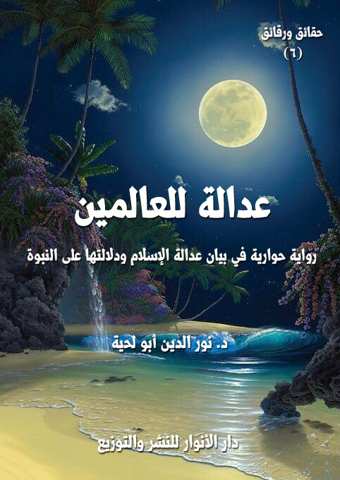

الكتاب: عدالة للعالمين
المؤلف: أ.د. نور الدين أبو لحية
الناشر: دار الأنوار للنشر والتوزيع
الطبعة: الثانية، 1437 هـ
عدد الصفحات: 506
ISBN: 978-620-2-34425-8
لمطالعة الكتاب من تطبيق مؤلفاتي المجاني وهو أحسن وأيسر: هنا

التعريف بالكتاب
تدور أحداث هذه الرواية حول رحلة بطل القصة إلى بعض البلاد الإسلامية، حيث تعرض للاعتقال بسبب منشورات كان يحملها.. وهو شخص باحث عن العدالة، وصادق في بحثه، لكنه تعرض لشبهات كثيرة جعلته يحجب عن العدالة التي جاء بها الإسلام كان سببها ذلك التاريخ المشوه الممتلئ بالاستبداد والفساد، كما كان سببها أولئك العلماء الذين خلطوا دين الله بدين الملوك.. فشوهوا دين الله بذلك أعظم تشويه.
وفي السجن الذي مكث فيه بطل القصة مدة من الزمن، والذي تجمع فيه كل طالبي العدالة من مختلف الملل والنحل، حصلت المفاجأة حيث لقي عشرة من المسلمين الصادقين وضعوا في السجن بسبب دعوتهم لتحقيق العدالة التي جاء بها الإسلام.. وكان كل واحد منهم قبل أن ينفذ فيه حكم الإعدام يتحدث عن ركن من أركان العدالة، كما تقتضيه الفطرة، وكما جاء بها الإسلام، ويجيب عن الإشكالات التي تطرح عليه.
وفي الأخير تحصل أحداث كثيرة، أدعها للقارئ ليتعرف عليها، ويحاول أن يقرأ من خلالها المنهج السلمي الرباني الذي يحقق العدالة.. لا المنهج الشيطاني الذي استطاع به - من خلال أدواته الكثيرة - أن يحول من الإسلام إلى دين عنف وإرهاب واستبداد..
عدالة للعالمين (8)
تحاول هذه الرواية - من خلال أحداثها وحواراتها - أن تناقش مناقشة علمية موضوعية أمرين، كلاهما له علاقة بكبريات الحقائق التي اهتم بها العقل الإنساني، كما اهتمت بها قبل ذلك وبعده الأديان والمذاهب الدينية والوضعية، وقد اختلفت الأنظار في الموقف منها:
أما الأول: فهو ما فطر عليه الإنسان من عشق للعدالة ومقتضياتها المرتبطة بنفسه وبالمجتمتع وبالأمة وبالعالم أجمع، بل بالكون جميعا..
فالإنسان على حسب ما تقتضيه جبلته التي فطره الله عليها يكره الظلم والجور والاستعمار والاستبداد، وكل ما يرشح منها جميعا، وهو يعتقد في قرارة نفسه الفطرية أن كل عقيدة تؤيد ما يخالف العدالة عقيدة شيطانية لا علاقة لها برب الوجود، لأن الوجود قائم بالعدل، ويستحيل على الذي أقام كونه على العدل أن يأمر بخلافه أو يرضى بخلافه.
وهو يعتقد كذلك - بحسب فطرته التي فطره الله عليها - أنه يستحيل على رب الوجود القائم بالعدل ألا ينبه عباده إلى ممارسة هذا العدل، أو أن يتركهم جاهلين بكيفية ممارسة ما يقتضيه، لأن الله لم يخلق الكون واعتزله، بل خلقه، وكان هو الحاكم عليه.. والملك عليه.. فالله هو الملك المالك.
وقد حاولنا لتقرير هذه الحقيقة الفطرية والاستفادة منها في البرهنة على حقانية رسالة محمد صلى الله عليه وآله وسلم أن نثبت - من خلال المصادر المقدسة - أن هذا الدين يحوي كل ما تتطلبه الفطرة من مقتضيات العدالة لينسجم الإنسان مع الكون جميعا، مع التنبيه على أن الخلل الذي حصل في التطبيق التاريخي أو التراثي لهذا الدين لا يلغي قيم العدالة منه، ذلك أن دين الله هو ما نصت عليه المصادر المقدسة.. أما التاريخ والتراث فهما دين البشر، وفكر البشر..
عدالة للعالمين (9)
وعليهما أثارة من أهواء البشر.. ولذلك لا يمكن محاكمة دين الله من خلالهما.
وأما الثاني: فهو بيان المنهج الشرعي الذي وضعه الله للإنسان - ابتلاء واختبارا - للسعي لتحقيق العدالة في نفسه ومجتمعه والعالم.
وقد اتفقت الأديان الربانية والوضعية على أن هذا السعي يحتاج إلى قوم يضحون بأنفسهم في سبيل مواجهة الظلم والجور والاستبداد، لأنه لا يقوم قائم بهذه المهمة الخطيرة التي تهز عروش الطغاة إلا وتعرض للمواجهة وللأذى، كما قال تعالى: {إِنَّ الَّذِينَ يَكْفُرُونَ بِآيَاتِ اللَّهِ وَيَقْتُلُونَ النَّبِيِّينَ بِغَيْرِ حَقٍّ وَيَقْتُلُونَ الَّذِينَ يَأْمُرُونَ بِالْقِسْطِ مِنَ النَّاسِ فَبَشِّرْهُمْ بِعَذَابٍ أَلِيمٍ} [آل عمران: 21]، فقد قرن الله تعالى بين الأنبياء والآمرين بالقسط من الناس، وأخبر أن كليهما تعرض للأذى بل للقتل.
وفي الحديث قال رسول الله صلى الله عليه وآله وسلم: (لا يحقرن أحدكم نفسه أن يرى أمر الله تعالى فيه مقال، فلا يقول: يا رب خشيت الناس، فيقول: فاياي كنت أحق أن تخشى) (1)
وقال صلى الله عليه وآله وسلم: (أفضل الجهاد كلمة حق عند سلطان جائر) (2)
وبناء على هذا كان قالب هذه الرواية التي تحاول أن تبرز هذه الحقائق الجليلة، وهي باختصار تدور حول رحلة بطل القصة إلى بعض البلاد الإسلامية، حيث تعرض للاعتقال بسبب منشورات كان يحملها.
وبطل القصة شخص باحث عن العدالة، وصادق في بحثه، لكنه تعرض لشبهات كثيرة جعلته يحجب عن العدالة التي جاء بها الإسلام كان سببها ذلك التاريخ المشوه الممتلئ بالاستبداد والفساد، كما كان سببها أولئك العلماء الذين خلطوا دين الله بدين الملوك.. فشوهوا دين الله بذلك أعظم تشويه.
__________
(1) رواه أحمد وابن ماجة.
(2) رواه أحمد وابن ماجة وغيرهما.
عدالة للعالمين (10)
وفي السجن الذي مكث فيه بطل القصة مدة من الزمن، والذي تجمع فيه كل طالبي العدالة من مختلف الملل والنحل، حصلت المفاجأة حيث لقي عشرة من المسلمين الصادقين وضعوا في السجن بسبب دعوتهم لتحقيق العدالة التي جاء بها الإسلام.. وكان كل واحد منهم قبل أن ينفذ فيه حكم الإعدام يتحدث عن ركن من أركان العدالة، كما تقتضيه الفطرة، وكما جاء بها الإسلام، ويجيب عن الإشكالات التي تطرح عليه.
وفي الأخير تحصل أحداث كثيرة، أدعها للقارئ ليتعرف عليها، ويحاول أن يقرأ من خلالها المنهج السلمي الرباني الذي يحقق العدالة.. لا المنهج الشيطاني الذي استطاع به - من خلال أدواته الكثيرة - أن يحول من الإسلام إلى دين عنف وإرهاب واستبداد..
هذه أحداث الرواية باختصار، أما أبطالها، فقد اخترت عشر شخصيات إسلامية كبرى كان لها دور كبير في الدعوة للعدالة، والتضحية بالنفس في سبيلها.. وهي جميعا محل اتفاق عند المعتدلين من الأمة جميعا بطوائفها المختلفة..
أما المتطرفون، فنحن لا نراعيهم في هذه الرسالة كما لم نراعهم في غيرها.. لأنهم - بسبب الانحرافات الفكرية التي أمليت عليهم، وغسلت بها عقولهم - لا يرضون إلا بما يخرب صفو الأمة، وصفو الحقيقة، وصفو الإنسانية.
والأمة والحقيقة والإنسانية أعز علينا من أن يكدرها أي أحد مهما كان.
وأنبه في الأخير إلى أن هذه الطبعة الجديدة تتميز باختصارها مقارنة بالطبعة السابقة، فقد حذفت الكثير من الروايات والتفاصيل التاريخية التي قد تجهد القارئ العادي في فهمها أو الاستفادة منها.. بالإضافة إلى أن مقاصد العدالة تتحقق في النصوص المقدسة وحدها، ولا حاجة للتفاصيل التاريخية التي تختلف الأمة في النظر إليها.
ونحن مأمورون بعرض رسالة الإسلام إلى العالم، لا بعرض تاريخ المسلمين للعالم.
عدالة للعالمين (11)
في ذلك اليوم، استيقظت على أصوات كثيرة مختلطة أنشأت في نفسي مشاعر مختلفة متناقضة ممتلئة بالصراع.. سأحكيها لكم كما سمعتها.. فليس من العدل أن أذكر لكم النتيجة دون أن أذكر مقدماتها.
كان أول صوت سمعته فخما قويا ممتلئا بالأصداء التي تزرع المهابة والوجل، بل تكاد تزرع الرعب نفسه.. كان هذا الصوت على ما يبدو يخاطب جمعا لا يكاد يسمع له صوت.. وكان يقول لهم بنبرته القوية: هل أحضرتم بطاقاتكم معكم؟
قالوا جميعا بصوت واحد، وكأنهم جنود في ثكنة: أجل.. وقد حفظنا كل ما لقنته لنا.
رد عليهم: اذكروا لي ما تقولون عند مدخل قاعة الانتخاب.
قالوا بصوتهم الضعيف الذي لا يكاد يسمع: سنصيح بحياتك..
رد عليهم: وماذا تقولون غير هذا؟
قال أحدهم: أنا سأقول: هيا انتخبوا ـ أيها الجموع ـ من أرسله الله لينقذ الفقراء..
قال آخر: وأنا سأقول بعده: انتخبوا من سينشر العدل.. فلا نسمع بجور، ولا نرى مظلوما.
قال آخر: وأنا سأقول: انتخبوا من سينشر الفضلة.. ويميت الرذيلة.. ويحيي المكارم التي أماتها المفسدون من الذين سبقوه إلى كراسي المسؤولية التي لا يستحقونها.
قال آخر: وأنا سأقول: انتخبوا ابن الشعب.. ذلك الذي نبت مع الشعب.. وعاش مع الشعب.. وهو لا يحن إلا لخدمة الشعب.
قال آخر: وأنا سأقول: انتخبوا ذلك القوي الذي يخلصكم من سلطة المستكبرين.. ويرفع عنكم بما أوتي من قوة قيود الاستبداد التي قيدكم بها الأباطرة.
قال آخر: وأنا سأقول: انتخبوا ذلك الخبير في السياسة.. الداهية فيها.. فلا يصلح حالنا إلا
عدالة للعالمين (12)
الدهاة.
قال آخر: وأنا سأقول: انتخبوا ذلك الخبير في الاقتصاد.. الراسخ فيه.. رجل الأعمال الذي لا يرضى عن شركة إلا سبقت.. ولا يسخط على أخرى إلا سقطت.
قال آخر: وأنا سأقول: انتخبوا ذلك الألمعي العبقري.. من ملأه الله بالمواهب التي تفرقت في جميع العباقرة.. فله علم داود، وحكمة سليمان، وحنان يحي، ورحمة المسيح، وعدل أنيشروان..
قال آخر: وأنا سأقول: انتخبوا ذلك الذي يحمل الياقوت الأحمر، والدر الأزهر، والزبرجد الأخضر، والعنبر الأشهب، والعود الرطب الأنضر.. ويحمل مع ذلك كله الترياق الأكبر، والمسك الأذفر.
قال آخر: وأنا سأنشد بصوتي الرخيم الذي تعرفه ـ مشيرا إلى صورتك التي أحملها ـ قول ابن حبناء في المهلب بن أبي صفرة لما هزم قطري بن الفجاءة:
أمسى العباد بشر لا غياث لهم... إلا المهلب بعد الله والمطر
كلاهما طيب ترجى نوافله... مبارك سيبه يرجى وينتظر
بعد أن أنهى الرجل قصيدته بصوته الرخيم صاح الصوت القوي، وقد هزته نشوة ما سمعه: أحسنتم.. أحسنتم جميعا.. لقد حفظتم كل ما لقنتم إياه.. لكن انتبهوا.. سترون آخرين قد يصيحون بمثل ما تصيحون.. أولئك المجرمون المرتزقة الذين رضوا أن يجندوا أنفسهم لخصمي العنيد الذي طالما عكر أحلامي.
-\--\-
انصرف الجمع.. وحل بدله جمع آخر.. لم أسمع منه إلا أصواتا ضعيفة هزيلة لا تكاد تبين:
قال أحدها: ألم يكفهم أن امتصوا دماءنا.. واستلبوا أرضنا.. وأحالوا حياتنا جحيما لا يطاق؟
قال آخر: هم يريدون منا بعد هذا أصواتنا.
قال آخر: لقد ظللنا طول عمرنا نعطيهم من الأصوات ما يطلبون.. لكنا لم نجن شيئا.. لم
عدالة للعالمين (13)
نجن إلا المواعيد التي لم تغن عنا شيئا.
قال آخر: لقد ظللت طول عمري ذيلا من أذيالهم.. فلما أصابني ما أصابني الله به من العاهة طردوني كما يطرد الكلب العقور.
قال آخر: وأنا لم يكتفوا بطردي.. بل راحوا يفرضون علي من الإتاوات ما ملأني بالفاقة والعجز.. وهم ـ مع هذه الحال التي وصلت إليها ـ لا يكفون عن مطالبتي.. ولو وجدوا في دمائي ما يسد شرههم لامتصوا دمائي.
قال آخر: لقد حصل معي ذلك.. فبعد أن عجزت أن أقضي ما علي نحوهم من ديون ـ على حسب ما يعتقدون ـ راحوا يعبثون بجسدي.. فانتزعوا كليتي.. وكادوا ينتزعون قلبي لولا أنهم وجدوا فيه من العطب ما يحول بينهم وبينه.
قال آخر: فهل ستنتخبون؟
قالوا جميعا بصوت واحد: أجل.. لقد فرض ذلك علينا فرضا.. ولا نملك إلا أن نؤدي الفرائض.. فلن تتحقق الديمقراطية ولا العدالة إلا بأصواتنا.
-\--\-
قالوا ذلك، ثم انصرفوا لأسمع بعدهم أصواتا تبدو كأصوات المراهقين المشاغبين.. يختلط فيها الجد بالهزل.. والكلام الفصيح بالصياح القبيح:
قال أحدهم: احزروا كم أكلت اليوم من وجبة.
رد عليه أحدهم: مهما أكلت.. فلن تأكل مثلي.. لقد أكلت اليوم في مقر حزب اليمين.. وفي مقر حزب الشمال.. وفي مقر حزب المغامرين.. وفي مقر حزب الحكماء.. وفي مقر حزب الشباب.. وفي مقر حزب الشيوخ.. وفي مقر حزب العمال.. وفي مقر حزب البطالين.
قال له آخر، وهو يضحك: ما أكثر حديثكم عن الأكل.. أنا لا يهمني الأكل.. أنا يهمني المال.. لقد أعطاني حزب الثروة مالا كثيرا يكفيني أياما طويلة..
عدالة للعالمين (14)
قالوا له: مقابل ماذا؟
قال: مقابل صوتي كما تعلمون.. فأنتم تعلمون أنا لا نساوي شيئا في كل الأيام إلا أيام الانتخابات.. لقد جنيت في الانتخابات الماضية مالا من حزب الثورة.. وأنا اليوم أجني من منافسه الخطير حزب الثروة.
قال آخر: عجبا لهؤلاء.. ما الذي يجعلهم يصرفون تلك الأموال الكثيرة من أجل أوراق توضع في صناديق.
قال آخر: والعجب الأكبر هو أن كل الذين يظهرون اليوم.. ويسيرون بيننا بكل تواضع.. بل بكل مذلة لا نراهم بعد هذا اليوم إلا بعد أن تأتي انتخابات جديدة..
قال آخر: دعونا من السياسة.. فلا ناقة لنا فيها ولا جمل.. وهلموا بنا نصرف بعض ما جنيناه من مال فيما تشتهيه أنفسنا.
قالوا ذلك.. ثم انصرفوا يصيحون ويصفرون ويولولون..
-\--\-
بعدها حضر اثنان بالكاد تبينت صوتهما:
قال أحدهما ـ وكان اسمه الحجاج على حسب ما علمت بعد ذلك ـ: لقد فعلت كل ما طلبته مني يا يزيد.. ولن يفوز اليوم في هذه الانتخابات غيرك.. لقد جندت القعقاع بن شور الذهلي، وشبيب بن ربعي التميمي، ومجاز بن أبي أبجر العجلي، وشمر بن ذي الجوشن الضبابي.. وغيرهم ممن كانوا مجندين عند غيرنا.. كلهم اليوم جندك.. وكلهم اليوم لا يصيح إلا باسمك.
قال الثاني: أنا لا أثق في أولئك المنافقين.. لقد تعاملت معهم كثيرا.. ولكني لم أر منهم إلا ما يمكن أن أرى منك.. تبيعونني جميعا بأبخس الأثمان.
قال الأول: كيف تقول لي هذا؟.. ألا تعلم التضحيات الكثيرة التي قدمتها لك؟
قال الثاني: كل شيء بثمنه.. أنت تضحي ما دمت أدفع.. فإذا توقفت أنا توقفت أنت..
عدالة للعالمين (15)
قال الأول: لا.. لا تقل هذا.. معاملتي معك مختلفة تماما.. نعم أنا أقبض.. وأقبض كثيرا.. ولكن ليس لأجل القبض صرت من أنصارك.. بل من أجل تلك القيم النبيلة التي تحملها.
ضحك الثاني، وقال: دعنا من النفاق.. فنحن الآن وحدنا.
قال الأول: أنا لا أنافق.. أنا أعبر لك عما في نفسي.
قال الثاني: أنا أعلم بما في نفسك منك.. أنت عندي لا تختلف عن الحجاج.. وهو مصدر تقريبي لك، وإعجابي بك.. أتدري لم آثر عبد الملك بن مروان الحجاج على غيره؟
قال الأول: أجل.. أعلم ذلك.. وقد ذكرته لي في أول لقاء لي بك.. لقد ذكرت لي أن عبد الملك بن مروان قال للحجاج بن يوسف: ما من أحد إلا وهو عارف بعيوب نفسه، فعب نفسك، ولا تخبئ منها شيئا، فقال: يا أمير المؤمنين.. أنا لجوج حقود حسود، فقال له عبد الملك: إذا بينك وبين إبليس نسب، فقال: يا أمير المؤمنين إن الشيطان إذا رآني سالمني.
قال الثاني: أضف إلى هذا ما روي عن سميك الحجاج أنه قال لرجل، وقد أراد أن ينفذه في بعض أموره: أعندك خير؟ قال: لا ولكن عندي شر.. فقال الحجاج: إياه أردت.. وأنفذه فيه.
ضحكا جميعا، ثم انصرفا.
-\--\-
سرت هذه الأصوات من أذني إلى قلبي.. فملأتني بالألم.. لقد ذكرت حينها قوله صلى الله عليه وآله وسلم: (لا تقوم الساعة حتى تمتلئ الأرض ظلما وعدوانا، ثم يخرج رجل من أهل بيتي فيملأها قسطا وعدلا كما ملئت ظلما وعدوانا) (1)
لقد تحققت نبوءة رسول الله صلى الله عليه وآله وسلم في شقها الأول.. فها هي الأرض تمتلئ ظلما وجورا وعدوانا..
لقد صار الجور هو الشيطان الأكبر الذي اعتلى عرش البشرية.. فهو يعطي قراراته في جميع
__________
(1) رواه أبو يعلى وابن خزيمة وابن حبان والحاكم.. والحديث متواتر تواترا معنويا.
عدالة للعالمين (16)
مجالسها ومجامعها وهيئاتها ومنظماتها.. ابتداء من تلك المنظمة الكبرى التي زعم البشر أنهم أسسوها لخدمة البشرية.
فهي منظمة تتكلم في الوقت الذي يشاء لها الأقوياء أن تتكلم.. وتسكت إذا شاءوا لها أن تسكت.. وإن تكلمت رغم أنف أحدهم كان بالخيار بين أن يسكتها بما يسميه حق الفيتو.. أو أن ينفذ رغبته دون أن يلتفت لما تمليه عليه.. ثم لا تجد تلك المنظمة المسكينة في الأخير إلا أن تسكت..
ثم هي لا ترضى بأن تسكت سكوتا نهائيا تعذر فيه لعجزها.. وإنما هي تستأسد على الضعفاء والمحرومين والمستضعفين في نفس الوقت الذي تتحول فيه دابة ذلولا ممتهنة لأي كبير من الكبار.
والأمر لا يتوقف عند تلك المنافقة العجوز.. الجور أخطر من أن يقف عندها.
فالعالم في منظماته الصغرى كما في تحالفاته الكبرى لا يناصر إلا الجور الذي يحلو له أن يسميه ديمقراطية أو حرية أو ما شاءت له أهواؤه من تسميات..
وقد بلغ الجور به إلى الحد الذي لا يمكن تصوره.. فللمرأة ـ مثلا ـ من الحرية أن تسير كاسية عارية مائلة مميلة.. ولكن ليس لها الحرية في أن ترتضي من اللباس ما يسترها أو يمنع تلك الأعين الملتهبة بالشهوات من خدشها أو خدش كرامتها.
كانت هذه الخواطر المليئة بالكدر تلح علي، وتملؤني بالألم..
لكني عندما تذكرت ذلك الضيف الغريب الذي دق باب بيتي، وراح يخبرني عن تفاصيل في حياتي لم يكن يعلمها سواي سرت نشوة لذيذة إلى مشاعري مسحت تلك الأحزان التي تسربت إليها.. لأني رأيت من خلال ملامحه أنه يحمل أسرار من علم العدالة لا يمكن أن أستفيدها من سواه.
أسرعت إليه أحمل طعام الإفطار.. وأنا ممتلئ أشواقا إلى حديثه.
استقبلني بابتسامة ممتلئة بالإيمان، وقال لي مفاجئا: لا يمكن أن تتحقق النبوءة الثانية قبل أن تتحقق الأولى.. فأبشر.
عدالة للعالمين (17)
قلت: ما تقصد؟
قال: لا يمكن للبشر ـ ما داموا بشرا ـ أن يدركوا قيمة العدل حتى يحترقوا بنيران الجور.. فلذلك كان الجور هو علامة العدل.. كما أن العطش هو علامة الري.. والمرض علامة الشفاء.
قلت: لا أزال لا أفهم.
قال: عندما تجرب البشرية كل مناهجها.. وعندما يمتلئ البشر يأسا من أن تسن لهم عقولهم قوانين العدل الشاملة.. حينذاك فقط يلجأون إلى الله يطلبون منه تلك القوانين.. فإذا لجأوا إلى الله هداهم إلى الإسلام، وإلى مهدي الإسلام، ذلك الذي يملأ الأرض عدلا بعد أن ملئت جورا.
قلت: لم كان الأمر كذلك؟.. لم لم يظفر البشر بالعدل من غير حاجة إلى المرور على صراط الجور.. ذلك الصراط المليء بالمآسي؟
قال: هذه سنة الله مع عباده ليتميز المحسن من المسيء، والعدل من الجائر، والساعي للخير من الساعي للشر.. ولن تعرف قيمة الخير إلا بمقارنتها بقيمة الشر، كما لا تعرف قيمة النور إلا بمقارنته بالظلمات.
قلت: فما ذنب الذين كتب لهم أن يعيشوا في ظلمات الجور؟
قال: إن سكتوا على الجور ورضخوا له كانوا شركاء فيه.. وإن نطقوا ونهضوا وصاحوا ضده كانوا مجاهدين شهداء.. وكان لهم من السعادة ما كان لأصحاب الأنبياء الذين علقت أجسادهم على الصلبان في سبيل الحق الذي يدعون إليه.
قلت: أنا لا أتكلم عن الأقوياء.. أنا أتكلم عن الضعفاء.. أولئك العامة البسطاء.
قال: لكل مسؤوليته.. ولكل واجبه.. ألم تسمع إلى ربك، وهو يقول: {إِنَّ الَّذِينَ تَوَفَّاهُمُ الْمَلَائِكَةُ ظَالِمِي أَنْفُسِهِمْ قَالُوا فِيمَ كُنْتُمْ قَالُوا كُنَّا مُسْتَضْعَفِينَ فِي الْأَرْضِ قَالُوا أَلَمْ تَكُنْ أَرْضُ اللَّهِ وَاسِعَةً فَتُهَاجِرُوا فِيهَا فَأُولَئِكَ مَأْوَاهُمْ جَهَنَّمُ وَسَاءَتْ مَصِيرًا (97)} (النساء)؟
قلت: بلى.
عدالة للعالمين (18)
قال: فهل رأيت ربك عذر هؤلاء الذين تترسوا بضعفهم؟
قلت: لا.. لم يعذرهم الله.. ولم تعذرهم ملائكة الله.. بل ذكرت لهم أنه كان بإمكانهم أن يهاجروا في الأرض، ليظفروا فيها بالأرض التي تعينهم على طاعة الله.
قال: وهكذا لن يعذر كل أولئك الخاملين الذين تلذذوا بالسياط التي تلهب ظهورهم إلا إذا مدوا أيديهم للأيدي التي تريد أن تنتشلهم.
قلت: وأين مثل هذه الأيدي؟.. لقد قطعت.. ولم نعد نسمع إلا بأسماء أصحابها، ونترحم عليهم.
قال: جل جناب ربك أن يخلي الأرض من قائم له بالحجة.. ألم تسمع قوله صلى الله عليه وآله وسلم: (لا تزال طائفة من أمتي ظاهرين حتى يأتيهم أمر الله وهم ظاهرون) (1)
قلت: بلى.. وقد سمعت معه قوله صلى الله عليه وآله وسلم: (لن يبرح هذا الدين قائما يقاتل عليه عصابة من المسلمين حتى تقوم الساعة) (2)
قال: فكما لم تخلو الأرض من ورثة للنبي صلى الله عليه وآله وسلم.. وكما لم تخلو من هداة يدعون إلى الله على سنة رسول الله صلى الله عليه وآله وسلم.. فكذلك لن تخلو الأرض من دعاة للعدالة التي جاء بها الإسلام.. لينقذ البشرية من سجون الجور والظلم والعدوان.
قلت: فأين هم؟
قال: لقد شرفني الله.. فالتقيت ببعضهم.. وسأحكي لك في رحلة اليوم حديثي معهم.
قلت: من هم؟
قال: عشرة رجال.. كان كل واحد منهم جبلا من جبال الهمة والعزيمة والصدق والإخلاص.
__________
(1) رواه البخاري ومسلم.
(2) رواه مسلم.
عدالة للعالمين (19)
قلت: فهل أعرفهم؟
قال: الكل يعرفهم.. فما نهض أحد لخدمة العدل والدعوة إليه إلا ملأ الله القلوب إقبالا عليه ومحبة له.
قلت: فحدثني حديثهم.
قال: سأبدأ حديثي من الأول.. فلا يفهم الآخر إلا بالأول.
-\--\-
اعتدل الغريب في جلسته، وحمد الله وصلى وسلم على نبيه صلى الله عليه وآله وسلم مستغرقا في كل ذلك، ثم قال: كانت بداية رحلتي إلى العدالة الإلهية التي مثلها رسول الله صلى الله عليه وآله وسلم، ومثلها ورثته من أئمة هذه الأمة، أني في ليلة من الليالي، وفي بيتي في تلك المدينة المتحضرة من أوروبا، قعدت أتفرج على التلفاز، فإذا بي أرى فيلما وثائقيا يعرض صورا لأيد تقطع، وأرواح تزهق، وظهور تجلد، وأفواه تكمم، وقمع ليس بعده قمع.. ثم يعرض بعد ذلك بعض دعاة المسلمين، وهو يدعو ـ بنبرته القوية الممتلئة بالأصداء ـ الحكام إلى المزيد من التسلط والاستبداد، ويدعو الرعية في نفس الوقت إلى الخضوع المطلق، باعتبار أن الحاكم هو سلطان الله في أرضه، وأن من أهان السلطان فقد أهان الله.
لا أكتمك أن تلك المناظر وما تلاها من الكلمات أثر في تأثيرا شديدا حتى أني امتلأت بشبه كثيرة.
ولكني مع ذلك تألمت ألما عظيما.. فقد كنت أعرف الإسلام من خلال كل البراهين التي تثبت أنه رسالة الله إلى عباده.. ولكني تعجبت أن تحوي رسالة الله كل تلك القسوة، وكل ذلك الجور.
ذهبت إلى الغابة التي كنت أفر إليها كلما ضاقت نفسي، وهناك سقط بجانبي غصن لشجرة من أشجار الغابة العملاقة.. وقد كان سقوطه قويا حتى أنه أثر على الأرض التي سقط عليها.. ولولا أن الله قدر أن أكون بعيدا بما يكفي عنه لكان سقط علي، ولكان قد قضى علي بسقوطه.
عدالة للعالمين (20)
رفعت رأسي لأرى سبب سقوطه، فإذا بي أرى رجلا في قمة السلام والطمأنينة والحكمة، وهو صاعد في أعلى تلك الشجرة يشذب أغصانها، فصحت فيه من حيث لا أشعر: لقد كدت تقتلني.
أجابني بهدوئه المعتاد، وهو لا يزال أعلى الشجرة: وما الحرج في ذلك؟.. البشر كثيرون.. ولن يضر البشر فقدهم لك.
قلت: ما هذا المنطق الذي تتحدث به؟
قال: أنا لم أتحدث معك إلا بالمنطق الذي تحدث به نفسك، أو تحدثك به نفسك.. أنا كالمرآة لن ترى مني، ولا على وجهي إلا ما اختزنته فيك.
قلت: لا أرى أن عقلي قد خطر على باله مثل هذا التفكير.
قال: ربما لم يخطر هذا على عقلك الذي تفكر به.. ولكنه قد يكون خطر على العقل الذي يفكر به عقلك.. أي عقل عقلك.
قلت: وهل لعقلي عقل؟
قال: أجل.. لا يكون العقل عقلا إن لم يكن له عقل.. أم أنك تريد عقلا مجنونا؟
قلت: لم أفهم.
قال: لكل عقل منهج يفكر به.. ذلك المنهج هو العقل الباطن الذي يستوحي منه العقل الظاهر أفكاره ومواقفه.
قلت: لا يمكن أن يكون في المنهج الذي يستعمله عقلي هذا النوع من التفكير.. هذا تفكير المجرمين لا تفكير العقلاء.
قال: أرأيت لو أنك رأيت نيرون معلقا على خشبة الصليب.. وهو يسام ألوان العذاب.. أكنت ترحمه.. فتذهب وتفك عنه قيوده التي قيد بها، وتداوي جراحه؟
لم أجد ما أجيبه به، فقال: لقد احتار عقلك في الجواب.. فأنت لو قسوت عليه تكون قد
عدالة للعالمين (21)
تخليت عن عقلك الظاهر الذي لا يرى إلا الظواهر.. ولو أنك لم تقس عليه، وذهبت تفك قيوده لتخليت عن عقلك الباطن الذي يرى الحقائق، ولا تعميه الظواهر عنها.
قلت: أنا أميل إلى الرحمة أكثر من ميلي إلى القسوة.. بل لا أحسب أن للقسوة محلا في هذا الوجود.
قال: إن القسوة التي تمارسها بفك قيود نيرون لا يمكن أن تضاهيها أي قسوة.
قلت: كيف ذلك؟
قال: إذا رحمت نيرون، فقد قسوت على الآلاف من الذين حرقهم واضطهدهم وأبادهم.. ولو رحمت نيرون، لكنت قد دعوت كل نفس خبيثة لأن تلبس حلته، فتحرق وتقتل وتبيد.. ولن يردعها بعد ذلك أي رادع.
قلت: ولكن القسوة مع ذلك نقص.
قال: هي نقص إذا توجهت لغير أهلها، أو وضعت في غير محلها.. لكنها إن وضعت في محلها كانت الكمال عينه.. ألم تر إلى ذلك الغصن الذي سقط بجانبك، وكاد يقضي عليك؟
قلت: ما به؟.. وما بالك قطعته؟
قال: لقد مررت على هذه الشجرة.. فرأيتها تئن من شدته عليها.. فرحت أقطعه عنها.. ولو أنه ترك لهلك وأهلكها معه.
قلت: صدقت في هذا.. فالشجرة لا بد أن تشذب أغصانها.. ذلك جزء من العناية بها.. وأنا لا أجادلك فيه.. ولكني أجادلك في تشذيب الإنسان.
قال: الإنسان كالنبات ككل شيء في هذا الوجود له قوانين تضبطه.. لا تستقيم حياته إلا بذلك.. أنا أسميها قوانين العدالة.. إن شئت أحصيتها لك.. فعساك تبحث عنها.. فلا يمكن للبشر أن ينعموا بظلال العدالة من دونها.
قلت: يسرني ذلك.. ولعلي لم أخرج إلا لذلك.. فما هي؟
عدالة للعالمين (22)
قال: هي عشرة.. ولا يمكن للعدالة أن تتم من دونها.
قلت: فما أولها؟
قال: الشريعة.. أو البرنامج.. فلا يمكن للحياة المعتدلة أن تستقيم بدون قوانين تنظمها وتنظم مسيرتها.. فلكل مرحلة من الزمن، ولكل مكان من التضاريس، ولكل حال من أحوال الروح نظامه الذي خلقه الله عليه، والذي لا يستقيم إلا به..
قلت: فما الثاني؟
قال: النظام.
قلت: فما النظام؟
قال: الشريعة تحتاج إلى مجموعة أنظمة لتنفذ بصورتها الكاملة الصحيحة.. نظام يسوس، ونظام يضبط، ونظام ينفذ.. وأنظمة كثيرة لا غنى لها عنها.
قلت: فما الثالث؟
قال: تحتاج الشريعة والأنظمة التي تنفذها إلى الرفق واللين.. فما حل الرفق في شيء إلا زانه.
قلت: صحيح هذا، وقد سمعت بعضهم يحدث بمثله عن محمد رسول المسلمين (1).. فما الرابع؟
قال: الرفق وحده قد لا يجدي.. فلذلك تحتاج العدالة إلى ضبطه ببعض الحزم.. ألا ترى كيف تشذب الأشجار، وتقطع بعض أغصانها، ولولا ذلك ما استقام لها أن تنمو؟
قلت: بلى.. وقد رأيتك تفعله.. فما الخامس؟
قال: الحرية.. فلا يمكن للمسجون أن يشعر بالعدالة، ولا أن يعيشها.
قلت: فما السادس؟
قال: المسؤولية.. فلا يمكن لحرية الفرد أن تعتدي على حرية المجموع.. ولا يمكن لحرية
__________
(1) أشير به إلى قوله (: (عليك بالرفق، إن الرفق لا يكون في شيء إلا زانه، ولا ينزع من شيء إلا شانه) (رواه مسلم)
عدالة للعالمين (23)
المجموع أن تعتدي على حرية الفرد.
قلت: فما السابع؟
قال: المساواة.. فلا يمكن للعدل أن يتم في ظلال الطبقية والعنصرية وقوانين المحاباة والكيل بالمكاييل المختلفة.
قلت: فما الثامن؟
قال: التنوع.. فلا يمكن للعدل أن يقمع الطاقات والقدرات بحجة المساواة.
قلت: فما التاسع؟
قال: التكافل.. فلا يمكن للعدل أن يتم، والقوي لا يقتسم قوته مع الضعيف، والشبعان لا يقتسم لقمته مع الجائع.
قلت: فما العاشر؟
قال: التوازن.. فلا يضر العدالة شيء مثل التطرف والغلو والانحراف ذات اليمين أو ذات الشمال.
قلت: أهذه هي العشرة التي ترى أنها اختزنت قوانين العدالة؟
قال: أجل..
قلت: فأبشر.. فقد استطاع قومي بما أوتوا من حنكة أن ينفذوها في أرقى مراتبها.. لقد استطاعت حضارتنا أن تؤسس العدالة التي عجزت جميع أنظمة العالم أن تصل إليها.
قال: بل وصلت إلى الجور الذي لم تستطع جميع أنظمة العالم أن تصل إليه.
قلت: كيف ذلك؟
قال: أرأيت لو أن قاضيا من القضاة جلس في مجلسه.. وراح يميز في أحكامه.. فيحكم على القريب لقربه.. ويحكم على البعيد بسبب بعده.. أتراه قاضيا عادلا؟
قلت: لا.. بل هو الجور عينه.
عدالة للعالمين (24)
قال: فاسأل قومك عن قوانين العدالة التي توهموا أنهم سنوها.. لم سنوها لقوم دون قوم، ولشعب دون شعب، ولأعراق دون أعراق.. اذهب إليهم، وصح فيهم.
قلت: ما أقول لهم؟
قال: قل لهم: (العدالة لن تكون عدالة حتى تكون عدالة للعالمين)
قلت: لقد ذكرتني برؤيا العذراء.. لقد ذكرت لي مثل هذا.. لقد ذكرت لي أن الشمس التي أضاء الله بها سماء الحقائق شمس تحمل أشعة العدالة التي تضيء العالم.
قال: صدقت العذراء.. فلا يمكن لشمس الله الدالة على الله أن تختزن الجور أو الظلم أو العدوان.
قلت: فمن هي؟.. أهي شمس محمد؟.. ولكني رأيت ـ أمس ـ ما يرغبني عنها.
قال: العاقل لا يسلم عقله لأي أحد.. العاقل هو الذي يسير في الأرض ليرى الحقائق بعينيه، ويلمسها بيديه.
قال ذلك، ثم انصرف إلى عمله في تشذيب أغصان الشجرة.. صحت فيه: أخبرني.. هل الشمس التي ذكرتها العذراء هي شمس محمد؟
ألقى غصنا من الأغصان كاد يسقط علي هو الآخر، ثم استمر في عمله.. ولم يجبني.
-\--\-
في ذلك المساء دعاني أخي إلى مكتبه بعد أن ترقى فيه درجات كثيرة جعلته من المسؤولين الكبار الذين يحكمون العالم..
فوجئت عند دخولي عليه بكتيبات كثيرة.. ومطويات.. مكتوبة بلغات العالم المختلفة.
بمجرد دخولي إليه أشار أخي إليها، وقال: هل ترى هذه الأوراق الكثيرة؟
قلت: أراها.. وأرى أن لها أهمية.
قال: لها من الأهمية ما لا يمكن تصوره.
عدالة للعالمين (25)
اقتربت من بعضها، وقد رأيته مكتوبا بالعربية، وكان عنوانه (1) (تصويب السهام على من عارض الحكام).. وكان عنوان كتاب آخر (مفاتيح الجنان لمن أطاع السلطان).. وكان عنوان كتاب آخر (القصور الفاخرة والدنيا والآخرة للولاة والحكام ومن أطاعهم من الخواص والعوام).. فتحته فوجدته مملوءا بالغثاء الذي لا يقبله عقل، ولا يرتضيه حكيم، فنظرت إلى أخي، وقلت: ما هذه الكتب؟
قال: هذه كتب لبعض المبشرين لنا من المنتشرين في البلاد العربية.
قلت: ولكنهم يحملون أسماء مسلمين؟
قال: وهذا مصدر قيمة هذه الكتب.. فهؤلاء مسلمون.. ولهم دعم من المحسنين من أغبياء المسلمين.. انظر إلى جميع هذه الكتب.. فكلها (وقف لله تعالى)
نظرت، فوجدت الأمر كما ذكر لي، فقلت: لقد طلبت مني أن أحضر إليك.. فما الذي تريده مني.. هل هناك مهمة جديدة تزمع تنفيذها؟
قال: أجل.. ومهمة خطير.. لقد وجدت بعد تفكير عميق أن الإسلام لا يمكن أن نقضي عليه بدعوى (الإرهاب) وحدها.
قلت: فما الدعوى الجديدة التي تريد إلصاقها بالإسلام؟
قال: أنا لا أريد إلصاقها به.. بل أريد إظهارها فقط.. هي ملتصقة فيه.. ولكن الكثير لا يرونها.. فلذلك ليس لنا من دور إلا إظهارها.
قلت: ما هي؟
قال: الجور.. والظلم.. والاستبداد.. فلا يحجب الناس شيء عن الإسلام مثلما يحجبهم الجور.
قلت: ولكن المسلمين.. في أوائل فترة الإسلام.. بل وفي عهد محمد نفسه نعموا بظلال
__________
(1) هذه العناوين ـ كما هو واضح ـ ليست حقيقية.. ولكنها تدل على معان موجودة في كثير من الكتب والمطويات.
عدالة للعالمين (26)
العدالة التي لم ترها البشرية في تاريخها جميعا.
قال: سنستر كل ذلك.. وسنشيع بدله مناقب كل أولئك المستبدين الذين ملأوا الأرض ظلما وعدوانا وجورا.. سننسخ أسماء عمار وبلال وأبي ذر.. لنحيي بدلها أسماء أحيت الكسروية والقيصرية وأعادت مجدها.
قلت: لقد رأيت في بعض بلاد الإسلام من ينشر مثل هذا؟
قال: أولئك أعظم مبشرينا.. وفي هذه الكتب أحاديث جمة لهم.. ولا أريد منك إلا أن تنشرها.
قلت: أين؟
قال: في كل أرض تطؤها قدماك.
قلت: ولكن هناك عدولا من المسلمين يرفضون هذا؟
قال: أولئك أعظم أعدائنا.. وسنستعمل معهم أساليب خاصة.. أساليب قد نستعين فيها بحلفائنا من الساسة.
قلت: تقصد اعتقالهم وسجنهم.
قال: أنا لم أقل هذا.. ولكن الساسة قد يقولونه.. وإذا قالوه فسنسارع نحن لننتقده، وندعو لإطلاق سراح المعتقلين والسجناء.
قلت: أليس هذا نفاقا؟
قال: ليس هذا نفاقا.. هذه سياسة.. وفي السياسة تغلب المصالح.. ومصالحنا ترتبط بمواقفنا.
لم أدر بما أجيبه.. ولكني في الغد حملت جميع تلك الكتيبات والمطويات، وسرت إلى بلد من بلاد الإسلام.. لن أذكره لك.. فمن الحرج لي ولك أن أذكره لك.. لكني ما إن وصلت، وفتشت حقائبي، حتى وجدتني في معتقل من المعتقلات.. وهناك تنعمت بأشعة كثيرة من شمس محمد
عدالة للعالمين (27)
صلى الله عليه وآله وسلم.. وهي التي جئت لأجلها إليك، وسأحدثك عنها اليوم.
قلت: أهذه الأشعة نلتها في المعتقل؟
قال: أجل..
قلت: فحدثني عن حياتك فيه.
قال: لقد كان بالنسبة لي، ولكثير من المعتقلين كلية علمية.. استفدنا فيها الكثير.. كان معنا أصناف مختلفة من الناس فيهم الشيوعي.. وفيهم الرأسمالي.. وفيهم الذي يؤمن بالديمقراطية.. فيهم الذي يؤمن بالاستبداد.. وفيهم العلماني.. وفيهم الذي يدعو إلى الحكم الديني..
ولكن عشرة من الناس من بين هؤلاء جميعا هم الذين شدوا انتباهي.. وهم الذي يحق لي أن أعتبرهم أساتذة لي.. ولم أتألم في حياتي لشيء تألمي لفقدهم.
قلت: كيف فقدتهم؟
قال: لقد حكم عليهم بالإعدام جميعا (1).. ثم نفذ حكم الإعدام فيهم واحدا واحدا.. على مرأى منا جميعا.. وقد استشهدوا جميعا مبتسمين مستنيرين بأنوار لا يمكن لأحد في الدنيا أن يصفها.
لقد كنت في تلك الأيام التي استنرت فيها بتلك الأشعة أعيش أحوالا متناقضة ممتلئة بالتناقض..
ففي تلك الأيام كنا نجلس كل يوم إلى ذلك الذي حكم عليه بالإعدام.. بل ذلك الذي سينفذ فيه الإعدام مساء لنسمع منه ما يريد أن يوصينا به.. وما يرى أن حياته كلها قد سارت في
__________
(1) آثرنا في هذه الرسالة أن يكون أبطالها جميعا من الشخصيات التي حكم عليها بالإعدام أو أعدمت فعلا.. وذلك لبيان أن الإسلام بما يحمله من معاني العدالة السامية هو الذي زرع في تلك النفوس القدرة على التضحية من أجل مبادئ العدالة، وهو معنى لا نجده في سموه إلا في الإسلام.
ونحن نعتذر ـ كما اعتذرنا من قبل ـ لتصرفنا في حياة الشخصيات التي نقدمها.. لأن الغرض من ذكرها غرض فني لا علمي.. ولتفادي الأخطاء التي قد يقع فيها القارئ، فقد ذكرنا في الهامش المعلومات الصحيحة من مصادرها الصحيحة.
عدالة للعالمين (28)
سبيله.
لقد كانت تلك النفوس التي امتطت خشبة الصليب خير نفوس رأيتها في حياتي.. كان لها من العقل والحكمة والحب والخير والعدل ما لا يمكن لأحد أن يتصوره.. ولكن المساكين بلوا بمستبدين كمموا أفواههم، ولم يكتفوا بذلك، بل راحوا يرضون شهواتهم للدماء بإزهاق أرواحهم.. ولم يكتفوا بذلك بل راحوا يستأجرون مفتين يتمسحون على أبواب السلاطين، ليكتبوا بالحبر المدنس بدنس الأهواء رميهم بالخروج.. أو رميهم بالزندقة.. أو رميهم بالإلحاد.
قال الرجل ذلك، ثم أجهش بالبكاء، فقلت: ما الذي يبكيك؟
قال: لا تزال صور أولئك العمالقة المعلقين في حبال المشانق تخطر على بالي كل حين.. فتصيبني منها رعشة كرعشة ذلك الذي حضر مقتل خبيب.. لقد كانت صورهم وهم على خشبة الصليب أكبر شعاع من أشعة الهداية.. فلا يمكن للهداية أن يدل عليها مثل الصدق والتضحية.
أذكر أن أحدهم.. وهو على خشبة الصليب جاءه بعض أصحاب العمائم من أصحاب السلطان، وقال له: قل لا إله إلا الله حتى تموت على الإسلام.. فالتفت إليه الرجل، وابتسم ابتسامة ممتلئة بمعاني كثيرة، وقال: شكرا يا شيخ.. لا إله إلا الله.. نحن نموت من أجلها.. وأنتم تأكلون بها الخبز.
قلت: فحدثني حديثهم.
نظر الرجل إلى الأفق البعيد، ثم قال:
عدالة للعالمين (29)
في اليوم الأول.. وبينما أنا في سجني الانفرادي أقلب طرفي في مسيرة حياتي الممتلئة بالتناقضات.. إذا بي أسمع صوتا من مكبرات صوت السجن يقول: في هذا المساء.. سيساق إلى الموت (خبيب بن عدي) (1).. وقد رأت إدارة السجن ـ من باب الرحمة واللطف ـ أن تسمح لجميع للمساجين بزيارته وتوديعه.. من الصباح إلى المساء.. على ألا يتجاوزوا الحدود التي يسمح بها قانون السجن.
بعد فترة من صياحه هذا.. رأيت مجموعة من الحرس تفتح أبواب السجون المتنوعة الانفرادية منها والجماعية.. ليلتقي جميع السجناء في ساحة السجن.. وهناك أحضر كرسي للسجين الذي يراد إعدامه.. ليتكلم كلماته الأخيرة التي يودع بها أصدقاءه السجناء.
لم تطل الفترة حتى جاء خبيب مكللا بأشعة عميقة من الإيمان.. جلس بهدوء على الكرسي الذي وضع له كما يجلس الملوك، ثم قال، وهو يوزع نظراته الحانية على الجمع: بورك فيكم.. لقد شرفتموني بالجلوس بينكم.. فلذلك اسمحوا لي أن أحدثكم عن الرسالة التي ظللت حياتي جميعا أدعو إليها.. ولا حرج عليكم في أن تختلفوا معي.. أو تجادلوني.. فقد ظللت طول عمري أسمع
__________
(1) أشير به إلى خبيب بن عديّ الصحابي الجليل.. شهد بدراً، وأسر في غزوة الرّجيع سنة ثلاثٍ، ثم صلب بالتنعيم، وهو أول من صلب في الإسلام، وأول من سنَّ صلاة ركعتين عند القتل.
وقد حدث ابن شهاب عن حادثة الأسر والصلب، فقال: مكث خبيب عندهم أسيراً حتى إذا اجتمعوا على قتله استعار موسى من إحدى بنات الحارث ليستحد بها فأعارته، قالت فغفلت عن صبي لي، فدرج إليه حتى أتاه، قالت: فأخذه فوضعه على فخذه، فلما رأيته فزعت فزعاً عرفه في، والموسى في يده، فقال: أتخشين أن أقتله؟ ما كنت لأفعل إن شاء الله، قال: فكانت تقول ما رأيت أسيراً خيراً من خبيب، لقد رأيته يأكل من قطف عنب وما بمكة يومئذ من حديقة، وإنه لموثق في الحديد، وما كان إلا رزقاً آتاه الله إياه، قال: ثم خرجوا به من الحرم ليقتلوه، فقال: دعوني أصلي ركعتين ثم قال: لولا أن يروا أن ما بي من جزع من الموت لزدت، فكان أول من صلى ركعتين عند القتل هو، ثم قال: (اللهم أحصهم عدداً وأقتلهم بدداً ولا تبق منهم أحداً) (انظر: الاستيعات لابن عبد البر)
عدالة للعالمين (30)
للمخالفين، ولا أطلب منهم إلا أن يسمعوا لي.
في البداية اسمحوا لي أن أذكر لكم أن هذا الصليب الذي شرفني الله بامتطائه اليوم هو نفسه الصليب الذي امتطاه قبلي رجال من أهل الله.. لم يكن لهم من هم إلا أن يعيش البشر حياة ممتلئة بالسلام والعدالة والإيمان.. لقد قدموا نفوسهم فداء لصالح العدالة التي لن تتحقق إلا في المنهج الذي اختاره الله لعباده.
لقد أشار رسول الله صلى الله عليه وآله وسلم إلى عظم المكانة التي ينالها من قدم نفسه لأجل هذا، فقال: (ألا لا يمنعن رجلا مهابة الناس أن يتكلم بالحق إذا علمه.. ألا إن أفضل الجهاد كلمة حق عند سلطان جائر) (1)
من هؤلاء الرجال الرجل الذي اخترت بعد أن وفقني الله للإسلام لأن أسمى باسمه.. إنه خبيب بن عدي ذلك الرجل العملاق الذي قدم نفسه في سبيل أن تنتصر شريعة ربه على تلك الشرائع الجاهلية..
لقد قال عندما أراد القوم شنقه:
ولست أبالي حين أقتل مسلما... على أي جنب كان في الله مصرعي...
وذلك في ذات الإله وإن يشأ... يبارك على أوصال شلو ممزع
لقد ردد جميع أولياء الله من الذين بذلوا أنفسهم في ذات الله ما قاله خبيب.. كلهم لم تغرهم الدنيا.. ولا تلك المناصب الرفيعة.. ولا ذلك البهرج الكاذب.. كلهم أبوا إلا أن ينصروا شريعة ربهم.. الشريعة التي لن تتحقق العدالة إلا بها.
قالوا: أنت تعلم أنا من مذاهب مختلفة.. وكلنا له شريعته التي يدين بها.. والتي لا يرى
__________
(1) رواه أحمد والترمذي والحاكم.. وغيرهم.
عدالة للعالمين (31)
العدالة إلا فيها.. فحدثنا عن هذه الشريعة التي نراك تقدم روحك رخيصة من أجلها.
ابتسم، وقال: شريعتنا عدل كلها، ورحمة كلها، ومصالح كلها، وحكمة كلها.. الشريعة عدل الله بين عباده، ورحمته بين خلقه، وظله في أرضه، وحكمته الدالة عليه وعلى صدق رسوله صلى الله عليه وآله وسلم أتم دلالة وأصدقها، وهي نوره الذي به أبصر المبصرون، وهداه الذي به اهتدى المهتدون، وشفاؤه التام الذي به دواء كل عليل، وطريقه المستقيم الذي من استقام عليه فقد استقام على سواء السبيل فهي قرة للعيون، وحياة القلوب، ولذة الأرواح، فهي بها الحياة والغذاء والدواء والنور الشفاء والعصمة، وكل خير في الوجود فإنما هو مستفاد منها، وحاصل بها، وكل نقص في الوجود فسببه من إضاعتها، ولولا رسوم قد بقيت لخربت الدنيا وطوي العالم، وهي العصمة للناس وقوام العالم، وبها يمسك الله السموات والأرض أن تزولا، فإذا أراد الله سبحانه وتعالى خراب الدنيا وطي العالم، رفع إليه ما بقي من رسومها، فالشريعة التي بعث الله بها رسوله صلى الله عليه وآله وسلم هي عمود العالم وقطب الفلاح والسعادة في الدنيا والآخرة (1).
كان الرجل يتكلم بكل مشاعره.. وقد أثر في الحضور لأجل ذلك تأثيرا شديدا.. لكن بعض الجالسين قام، وقال: هذا إجمال يحتاج إلى تفصيل.. وهذه دعاوى تحتاج إلى دليل.
نظر إليه خبيب، وقال: صدقت.. لا يمكن أن يقبل الإجمال من دون تفاصيله.. ولا الدعاوى من دون دليلها.. وإن شئتم أن أذكر لكم من ذلك ما تقر به أعينكم فعلت.
قالوا جميعا: كلنا آذان صاغية.. فحدثنا.
قال: سأحدثكم ـ أولا ـ عن نفسي.. أنتم تسمعون أن اسمي خبيبا، فتتصورون أني ولدت مسلما.. وأني من أسرة مسلمة.. وأني ورثت الإسلام كما ورثه أكثر الناس..
ليس الأمر كذلك.. أنا من أسرة غير مسلمة.. وعندما ولدت عمدت كما يعمد كل صبيان النصارى.. ولقنت ما يلقنون من مبادئ المسيحية..
__________
(1) أشير به إلى قول معروف لابن القيم، كتبه في (إعلام الموقعين)
عدالة للعالمين (32)
كان ذلك في الصبي.. وفي صدر الشباب.. لكني بعد أن شببت عن الطوق، واكتمل لي العقل الذي أفكر به رحت أبحث عن شريعة الله.
وكان أول ما بدأت به (الكتاب المقدس).. لقد رحت أبحث عن شريعة الله في الكتاب الذي قيل لي: إنه وحي الله لأنبيائه.
قالوا: وما الذي جعلك تبحث فيه دون غيره؟
قال: لقد علمت علم اليقين، بأدلة كثيرة لا يمكن ذكرها هنا، أن الله الذي نظم هذا الكون جميعا يستحيل أن يترك الإنسان هملا.. فلذلك رأيت أن شريعة الله لن تغيب عن خلق الله.. ولكن الخلق هم الذين قد يغيبون عنها.
قالو: كيف؟
قال: الغفلة.. والكبرياء.. والجهل.. كل ذلك يمكن أن يقف بين الإنسان والبحث عن شريعة ربه..
قالوا: فما الذي وجدت في الكتاب المقدس؟
قال: وجدت فيه من الجور والظلم والجهالة ما جعلني أعتقد اعتقادا راسخا أن الشريعة التي يحويها يستحيل أن تكون شريعة الله.
لست أدري كيف صحت من حيث لا أشعر: هذه دعوى عريضة.. كيف تقول هذا عن الكتاب المقدس؟
التفت إلي بحنان، وقال: اعذرني.. فأنا لم أرد الإساءة إليك.. ولا إلى الكتاب المقدس.. ولكني أعتقد أن الشريعة التي تمتلئ بها جنبات الكتاب المقدس يستحيل أن تكون شريعة الله لعباده.
أنت تعلم أن الكذبة حملوا أقلام الكتبة، وراحوا بأهوائهم يحرفون الكتاب المقدس (1).. لقد
__________
(1) انظر الأدلة المثبتة لهذا في رسالة (الكلمات المقدسة) من هذه السلسلة.
عدالة للعالمين (33)
ذكر إرميا هذا، فقال: (فقال الرب لي: بالكذب يتنبأ الأنبياء باسمي. لم أرسلهم ولا أمرتهم ولا كلمتهم. برؤيا كاذبة وعرافة وباطل ومكر قلوبهم هم يتنبأون لكم) (إرميا: 14:14).. وقال: (الأنبياء يتنبأون بالكذب والكهنة تحكم على أيديهم وشعبي هكذا أحب. وماذا تعملون في آخرتها) (إرميا:5: 31)..
وهو يصرح بكل ألم قائلا: (كيف تقولون نحن حكماء وشريعة الرب معنا.. حقا إنه إلى الكذب حوّلها قلم الكتبة الكاذب) (إرميا: 8: 8)
ليس إرميا وحده الذي صرح به.. لقد رأيت في المزامير: (اليوم كله يحرفون كلامي. عليّ كل افكارهم بالشر) (مزمور:56/ 5)
ورأيت في (حزقيال:7/ 26): (ستاتي مصيبة على مصيبة. ويكون خبر على خبر.. فيطلبون رؤيا من النبي.. والشريعة تباد عن الكاهن والمشورة عن الشيوخ)
وسمعت إشعيا يقول: (ويل للذين يقضون أقضية الباطل وللكتبة الذين يسجلون جورا ليصدوا الضعفاء عن الحكم ويسلبوا حق بائسي شعبي لتكون الارامل غنيمتهم وينهبوا الايتام) (إشعياء:10/ 1 - 2)
إن إشعيا يتحدث عن المطامع التي جرت القضاة والكتبة إلى التحريف.. إنه يتحدث عن بيع كتاب الله بثمن بخس كما قال كتاب المسلمين.
بل هو يصرح بذلك قطعا لكل تأويل، فيقول: (ويل للذين يتعمقون ليكتموا رأيهم عن الرب فتصير اعمالهم في الظلمة ويقولون من يبصرنا ومن يعرفنا. يا لتحريفكم. هل يحسب الجابل كالطين حتى يقول المصنوع عن صانعه لم يصنعني. أو تقول الجبلة عن جابلها لم يفهم) (إشعياء: 29/ 15 - 16)
وهو يقول: (ويل للبنين المتمردين يقول الرب حتى انهم يجرون رأيا وليس مني ويسكبون سكيبا وليس بروحي ليزيدوا خطيئة على خطيئة) (إشعياء: 30/ 1)
عدالة للعالمين (34)
سكت قليلا، ثم قال: عندما قرأت هذا علمت أن الرب أرحم من أن يأمرنا بطاعة الشريعة التي حولها هؤلاء الكذبة إلى مسخ.. لقد قرأت في كتاب المسلمين المعاني الحقيقية للتوراة.. لقد جاء فيه: {إِنَّا أَنْزَلْنَا التَّوْرَاةَ فِيهَا هُدىً وَنُورٌ يَحْكُمُ بِهَا النَّبِيُّونَ الَّذِينَ أَسْلَمُوا لِلَّذِينَ هَادُوا وَالرَّبَّانِيُّونَ وَالْأَحْبَارُ بِمَا اسْتُحْفِظُوا مِنْ كِتَابِ اللَّهِ وَكَانُوا عَلَيْهِ شُهَدَاءَ فَلا تَخْشَوُا النَّاسَ وَاخْشَوْنِ وَلا تَشْتَرُوا بِآيَاتِي ثَمَناً قَلِيلاً وَمَنْ لَمْ يَحْكُمْ بِمَا أَنْزَلَ اللَّهُ فَأُولَئِكَ هُمُ الْكَافِرُونَ} (المائدة:44)
هكذا كانت التوراة قبل أن تحرف.. ولكنها عندما حرفت صارت تحوي النصوص الكثيرة الممتلئة بالخرافة والشعوذة والجور والدجل..
لن أقرأ لك كل ما صرفني عن شريعة الكتاب المقدس.. بل سأكتفي بجانب مهم منها.. رأيت أن الجور فيه قد ضرب أطنابه..
إنه الموقف من المرأة.. أنت تعلم أنه من الجور الكبير أن يفضل أحد الجنسين وأن يحقر غيره.. ولذلك فإن الشريعة التي تقوم بهذا الجور وتدعمه شريعة أهواء لا شريعة من رب العالمين.
لقد قرأت في سفر الخروج: (و إذا باع رجل ابنته أمةً لا تخرج كما يخرج العبيد) (الخروج 21/ 7).. وقرأت أنه في أيام القضاة اشترى بوعز جميع أملاك أليمالك ومالكليون ومحلون، ومن ضمن ما اشتراه راعوث المؤابية امرأة محلون (انظر راعوث 4/ 9 - 10).. وقرأت في (الجامعة 7/ 26 - 28): (فوجدت أمرّ من الموت: المرأة التي هي شباك، وقلبها أشراك، ويداها قيود، الصالح قدام الله ينجو منها.. أما الخاطئ فيؤخذ بها... رجلاً واحداً بين ألف وجدت، أما امرأة فبين كل أولئك لم أجد)
بل إن سفر اللاويين يقرن المطلقة والأرملة بالزانية، فيعتبرهن دناياً يحرم على الكاهن الزواج منهن (اللاويين 21/ 10 - 15) كما يفرض السفر أحكاماً شديدة على المرأة حال حيضتها حتى أن مجرد مسها ينجس الماس إلى المساء كما ينجس كل من مس فراشها أو شيئاً من متاعها (اللاويين 15/ 19 - 32)
عدالة للعالمين (35)
وفي العهد الجديد رأيت بولس يحمل المرأة خطيئة آدم، ثم يحتقر المرأة تبعاً لذلك فيقول: (لتتعلم المرأة بسكوت في كل خضوع، ولكن لست آذن للمرأة أن تعلّم، ولا تتسلط على الرجل، بل تكون في سكوت، لأن المرأة أغويت، فحصلت في التعدي) (تيموثاوس (1) 2/ 11 - 14)، ويقول مبرزا ما في نفسه من احتقاره للمرأة: (الرجل ليس من المرأة، بل المرأة من الرجل، ولأن الرجل لم يخلق من أجل المرأة، بل المرأة من أجل الرجل) (كورنثوس (1) 11/ 8 - 9)
لقد أوحت هذه النصوص للآباء والقديسين في ملتنا النصرانية بأن يفرضوا على المرأة شريعة مملوءة بالجور والظلم والإجحاف.. لقد قال القديس ترتليان (ق 3) إثر تشبعه بأمثال تلك النصوص المقدسة عن المرأة: (إنها مدخل الشيطان إلى نفس الإنسان، ناقضة لنواميس الله، مشوهة لصورة الله (الرجل).. ويقول بعد حديثه عن دور حواء في الخطيئة الأولى: (ألستن تعلمن أن كل واحدة منكن هي حواء؟!... أنتن المدخل الذي يلجه الشيطان.. لقد دمرتن بمثل هذه السهولة الرجل صورةَ الله)
ومثله قال القديس سوستام عن المرأة: (إنها شر لا بد منه، وآفة مرغوب فيها، وخطر على الأسرة والبيت، ومحبوبة فتاكة، ومصيبة مطلية مموهة)
ومثلهما قال القديس جيروم (ق 5) في نصيحته لامرأة طلبت منه النصح: (المرأة إذن هي ألد أعداء الرجل، فهي المومس التي تغوي الرجل إلى هلاكه الأبدي، لأنها حواء، لأنها مثيرة جنسياً)
أما القديس أوغسطين (ق 5)، فيتساءل: (لماذا خلق الله النساء؟).. ثم يجيب: (إذا كان ما احتاجه آدم هو العشرة الطبية، فلقد كان من الأفضل كثيراً أن يتم تدبير ذلك برجلين يعيشان كصديقين بدلاً من رجل وامرأة).. ثم تبين له بعد بحث مضن أن العلة من خلقها هي فقط إنجاب الأولاد، ومنه استوحى لوثر فقال: (إذا تعبت النساء أو حتى ماتت فكل ذلك لا يهم، دعهن يمتن في عملية الولادة، فلقد خلقن من أجل ذلك)
ولم يكتف هؤلاء القديسون بهذه التصريحات الجائرة.. بل راحوا يعقدون المؤتمرات الغريبة
عدالة للعالمين (36)
للبحث عن حقيقة هذا العنصر الغريب الذي يسمونه (المرأة)، ففي القرن الخامس عقد مؤتمر ماكون للنظر هل للمرأة روح أم لا؟ وقرر المؤتمر خلو المرأة عن الروح الناجية.. وقال القديس جيروم: (المرأة عندما تكون صالحة تكون رجلاً).. أي أنها تشذ عن مثيلاتها الإناث فتصير مثل الرجال.
و في عام 586 م عقد مؤتمر لبحث إنسانية المرأة، ثم قرر المؤتمر بأغلبية صوت واحد بأن المرأة إنسان خلق لخدمة الرجل.
و بعد ظهور البروتستانت في القرن السادس عشر عقد اللوثريون مؤتمراً في (وتنبرج) لبحث إنسانية المرأة.
التفت إلى الجمع، وقال: هل يمكن لشريعة يحمل كتابها المقدس هذه النظرة عن المرأة.. ويحمل رجال دينها بل قديسوها هذه النظرة القاسية الجائرة.. هل يمكن لشريعة مثل هذه أن تكون شريعة عادلة مع هذا الجانب المهم المشكل للمجتمع الإنساني.
التفت إلي، وقال: بمجرد أن عرفت كل هذا استحييت من أن أدين بشريعة يدين بها هؤلاء.. لقد رأيت أن الله أعظم رحمة وعدلا من أن يحكم على هذا الكائن الإنساني بكل هذه القسوة..
بعد أن يئست من أن أجد في الكتاب المقدس الشريعة العادلة رحت أبحث في القرآن..
أصدقكم القول أني لم أبدأ ببحثي فيه إلا وأنا ممتلئ بشبهات كثيرة كانت تقف حجبا بيني وبينه.. لكن الله أعطاني القوة، فحطمتها جميعا، ولم أبق أثناء قراءتي للقرآن الكريم وللنصوص المقدسة التي نطق بها محمد صلى الله عليه وآله وسلم إلا عقلي.. ذلك البرنامج الذي برمجني الله به لأميز الخبيث من الطيب، والحق من الباطل.
وكان أول ما شدني في القرآن الكريم هو تلك النظرة المحترمة للكائنات جميعا.. الإنسان والحيوان.. والنبات والجماد.. وكل شيء.. فالكل خلق الله.. والكل مسبح لله.. وليس هناك شيطان إلا الشيطان الذي رضي بمحض إرادته أن يصير شيطانا.
عدالة للعالمين (37)
لقد قرأت في القرآن الكريم عن الحيوان.. بل عن البعوض قوله تعالى: {إِنَّ اللَّهَ لا يَسْتَحْيِي أَنْ يَضْرِبَ مَثَلاً مَا بَعُوضَةً فَمَا فَوْقَهَا فَأَمَّا الَّذِينَ آمَنُوا فَيَعْلَمُونَ أَنَّهُ الْحَقُّ مِنْ رَبِّهِمْ وَأَمَّا الَّذِينَ كَفَرُوا فَيَقُولُونَ مَاذَا أَرَادَ اللَّهُ بِهَذَا مَثَلاً يُضِلُّ بِهِ كَثِيراً وَيَهْدِي بِهِ كَثِيراً وَمَا يُضِلُّ بِهِ إِلَّا الْفَاسِقِينَ) (البقرة:26)
وقرأت فيه عن النمل قوله تعالى: {حَتَّى إِذَا أَتَوْا عَلَى وَادِ النَّمْلِ قَالَتْ نَمْلَةٌ يَا أَيُّهَا النَّمْلُ ادْخُلُوا مَسَاكِنَكُمْ لا يَحْطِمَنَّكُمْ سُلَيْمَانُ وَجُنُودُهُ وَهُمْ لا يَشْعُرُونَ) (النمل:18).. لقد رأيت هذه الآية تحضنا على احترام هذا العالم، واحترام قراه التي يؤسسها.
وبحثت فيه بعد ذلك كله عن المرأة.. فوجدت أنها والرجل فيه سيان، لا يختلفان إلا الاختلاف الذي تفرضه وظائفهما وقدراتهما.. لقد قرأت فيه قوله تعالى: {فَاسْتَجَابَ لَهُمْ رَبُّهُمْ أَنِّي لا أُضِيعُ عَمَلَ عَامِلٍ مِنْكُمْ مِنْ ذَكَرٍ أَوْ أُنْثَى بَعْضُكُمْ مِنْ بَعْضٍ فَالَّذِينَ هَاجَرُوا وَأُخْرِجُوا مِنْ دِيَارِهِمْ وَأُوذُوا فِي سَبِيلِي وَقَاتَلُوا وَقُتِلُوا لَأُكَفِّرَنَّ عَنْهُمْ سَيِّئَاتِهِمْ وَلَأُدْخِلَنَّهُمْ جَنَّاتٍ تَجْرِي مِنْ تَحْتِهَا الْأَنْهَارُ ثَوَاباً مِنْ عِنْدِ اللَّهِ وَاللَّهُ عِنْدَهُ حُسْنُ الثَّوَابِ} (آل عمران:195)، وقوله تعالى: {وَمَنْ يَعْمَلْ مِنَ الصَّالِحَاتِ مِنْ ذَكَرٍ أَوْ أُنْثَى وَهُوَ مُؤْمِنٌ فَأُولَئِكَ يَدْخُلُونَ الْجَنَّةَ وَلا يُظْلَمُونَ نَقِيراً) (النساء:124)، وقوله تعالى: {مَنْ عَمِلَ صَالِحاً مِنْ ذَكَرٍ أَوْ أُنْثَى وَهُوَ مُؤْمِنٌ فَلَنُحْيِيَنَّهُ حَيَاةً طَيِّبَةً وَلَنَجْزِيَنَّهُمْ أَجْرَهُمْ بِأَحْسَنِ مَا كَانُوا يَعْمَلُونَ) (النحل:97)، وقوله تعالى: {مَنْ عَمِلَ سَيِّئَةً فَلا يُجْزَى إِلَّا مِثْلَهَا وَمَنْ عَمِلَ صَالِحاً مِنْ ذَكَرٍ أَوْ أُنْثَى وَهُوَ مُؤْمِنٌ فَأُولَئِكَ يَدْخُلُونَ الْجَنَّةَ يُرْزَقُونَ فِيهَا بِغَيْرِ حِسَابٍ) (غافر:40)، وقوله تعالى: {يَا أَيُّهَا النَّاسُ إِنَّا خَلَقْنَاكُمْ مِنْ ذَكَرٍ وَأُنْثَى وَجَعَلْنَاكُمْ شُعُوباً وَقَبَائِلَ لِتَعَارَفُوا إِنَّ أَكْرَمَكُمْ عِنْدَ اللَّهِ أَتْقَاكُمْ إِنَّ اللَّهَ عَلِيمٌ خَبِيرٌ) (الحجرات:13)
ووجدت القرآن ينسب الخطيئة للزوجين كليهما.. لا لحواء وحدها (1).. قال تعالى: {فَأَزَلَّهُمَا
__________
(1) وهذا ما يدل على أن الحديث المروي في ذلك عن أبي هريرة وهو (لولا بنو إسرائيل لم يخبث الطعام ولم يخنز اللحم ولولا حواء لم تخن أنثى زوجها) لا يصح رفعه إلى رسول الله (.. بل هو على الأصح من حديث كعب الأحبار.. فقد كان أبو هريرة يروي عن كعب الأحبار، فيختلط على الرواة، فيرفعونه إلى رسول الله (.. وقد روى مسلم عن بسر بن سعيد قال: (اتقوا الله وتحفظوا من الحديث، فوالله لقد رأيتنا نجالس أبا هريرة فيحدث عن رسول الله (، ويحدثنا عن كعب الأحبار، ثم يقوم، فأسمع بعض من كان معنا يجعل حديث رسول الله صلى الله عليه وسلم عن كعب، وحديث كعب عن رسول الله)، وفي رواية: (يجعل ما قاله كعب عن رسول الله، وما قاله رسول الله عن كعب، فاتقوا الله وتحفظوا في الحديث)
وأدل دليل على ذلك هو أن في الحديث المذكور نسبة كل خيانة تقع من المرأة إلى حواء مع أن القرآن الكريم بل الشريعة جميعا تنص على أن كل شخص مسؤول على عمله وحده.
ومثل ذلك ما يصيب اللحم من خنز، فنحسب هذا من خواص اللحم التي جعلها الله فيه.، وكان ذلك قبل بني إسرائيل وبعدهم.
وهذا الذي ذهبنا إليه ـ والذي قد يجد نقدا حادا عند البعض ـ هو ما ذهب إليه البخاري وابن كثير وغيرهما في نقدهما لما رواه مسلم عن أبي هريرة أنه قال: أخذ رسول الله (بيدي، فقال: (خلق الله التربة يوم السبت، وخلق فيها الجبال يوم الأحد، وخلق الشجر يوم الاثنين، وخلق المكروه يوم الثلاثاء، وخلق النور يوم الأربعاء، وبث فيها الدواب يوم الخميس، وخلق آدم بعد العصر من يوم الجمعة)، وقد قال البخاري وابن كثير وغيرهما ردا على هذا: إن أبا هريرة قد تلقى هذا الحديث عن كعب الأحبار، لأنه يخالف نص القرآن في أنه خلق السماوات والأرض في ستة أيام.
عدالة للعالمين (38)
الشَّيْطَانُ عَنْهَا فَأَخْرَجَهُمَا مِمَّا كَانَا فِيهِ وَقُلْنَا اهْبِطُوا بَعْضُكُمْ لِبَعْضٍ عَدُوٌّ وَلَكُمْ فِي الْأَرْضِ مُسْتَقَرٌّ وَمَتَاعٌ إِلَى حِينٍ) (البقرة:36)
ووجدت فيه أن التوبة حصلت من كليهما.. قال تعالى: {قَالا رَبَّنَا ظَلَمْنَا أَنْفُسَنَا وَإِنْ لَمْ تَغْفِرْ لَنَا وَتَرْحَمْنَا لَنَكُونَنَّ مِنَ الْخَاسِرِينَ) (لأعراف:23)
ووجدت القرآن ينعى على أهل الجاهلية تفضيلهم الذكر على الأنثى.. وذلك في مناسبات كثيرة مختلفة.. قال تعالى: {وَإِذَا بُشِّرَ أَحَدُهُمْ بِالْأُنْثَى ظَلَّ وَجْهُهُ مُسْوَدًّا وَهُوَ كَظِيمٌ (58) يَتَوَارَى مِنَ الْقَوْمِ مِنْ سُوءِ مَا بُشِّرَ بِهِ أَيُمْسِكُهُ عَلَى هُونٍ أَمْ يَدُسُّهُ فِي التُّرَابِ أَلَا سَاءَ مَا يَحْكُمُونَ (59)} (النحل)
ووجدت ينعى عليهم ما كانوا يقعون فيه من وأد البنات.. قال تعالى: {وَإِذَا الْمَوْءُودَةُ سُئِلَتْ (8) بِأَيِّ ذَنْبٍ قُتِلَتْ (9)} (التكوير)
وجدت هذا وغيره كثير بالنسبة للمرأة والتصور نحوها.. ونحو وظيفتها.. ونحو
عدالة للعالمين (39)
حقوقها (1).
وهكذا وجدت الأمر مع جميع أصناف الناس، وخاصة المستضعفين منهم.. لقد وجدت القرآن يوليهم كل العناية، ويحترمهم أعظم احترام.. وقد كان كل ذلك بوابتي للبحث الشامل في مدى قدرة شريعة الإسلام على تحقيق العدل للبشرية التي امتلأت بالجور..
وقد وجدت في الشريعة الإسلامية ـ بعد البحث المستفيض ـ أربع خصائص كبرى لم تتحقق بكمالها إلا فيها.. ولذلك رأيت أنها الشريعة الوحيدة الصالحة لأن تخرج البشرية من ظلمات الظلم والجور إلى أنوار الأمان والعدل.
قلنا: ما هذه الخصائص؟
قال: الربانية، والشمولية، والواقعية، والمثالية.
قلنا: فهل ستحدثنا عما وصلت إليه في أبحاثك؟
قال: أجل.. فلم تكن لي وظيفة في الحياة، بعد أن امتلأ قلبي ببرد اليقين إلا أن أبشر بشريعة الله.. وأنا الآن ممتلئ سرورا لأني سأستشهد في سبيلها كما استشهد خبيب وإخوانه من الصادقين من أهل الله.
قلنا: فحدثنا عن الركن الأول.
نظر إلى السماء، وقال: الغريق الذي أحاطت به المياه من كل جانب.. ولم تبق له أي قوة يصارع بها تلك التيارات العنيفة التي تريد أن تصرعه.. ولم تبق له أي قوة يستطيع أن يصارع بها تلك الحيوانات المتوحشة التي تريد أن تلتهمه.. ثم جاءته سفينة ومدت حبالها إليه.. تريد أن تنقذه.. هل ترون من الحكمة أن يرفض مد يده لحبال النجاة التي مدت إليه؟
__________
(1) انظر التفاصيل المرتبطة بهذا في رسالة (رحمة للعالمين) من هذه السلسلة.
عدالة للعالمين (40)
قلنا: مجنون إن فعل ذلك.
قال: فالبشرية ـ إذن ـ كلها مجنونة.
قلنا: وما علاقة هذا بذاك؟
قال: إن البحر العميق الذي تسبح فيه البشرية.. والشياطين الكثيرة التي تريد أن تمسخ طبيعة البشرية لا يشبهها شيء كما يشبهها ذلك البحر، وذلك الغريق.
قلنا: فما الحبال؟
قال: إن الرب الرحيم الذي خلق هذا الكون، ولم يغفل عن الدقيق والجليل فيه، مد حبالا كثيرة للبشرية لينقذها بها من نفوسها التي تصارعها.. ومن الشياطين التي تريد أن تلتهمها.
ولكن البشرية مع ذلك ترضى بأن تبقى في ذلك الصراع المميت، ولا ترضى بأن تمد يدها لحبال النجاة التي مدت إليها.
قلنا: أي حبال؟
قال: حبال الشريعة.. فالبشرية لا ينقذها إلا ربها الذي هو أعلم بطباعها، وأعلم بالشياطين الذين يتربصون بها.
قال رجل منا: دعنا من الإجمال، وهات التفصيل.
قال: لقد رأيت المسالك التي سلكتها البشرية لتقضي بها على الانحرافات المختلفة بأنواعها جميعا: النفسية والسياسية والاقتصادية والاجتماعية.. وغيرها.. وقد وجدت أن كل تلك المسالك باءت بالفشل..
وقد بحثت في سر ذلك الفشل فوجدته يرجع إلى أمرين:
أما أولهما، فهو أن الذي يضع تلك القوانين بشر كالبشر.. هو غريق مثلهم.. ولذلك لن يستطيع الغريق أن ينقذ الغريق..
وأما الثاني، فقد وجدت أن البشر لا يسلمون أنفسهم إلا لمن هو فوقهم.. أو لمن يرون له من
عدالة للعالمين (41)
القدسية ما يجعله أهلا لأن يطاع..
لقد كان هذان الأمران هما دليلي إلى ركن الربانية.. وكونه ركنا أساسيا لا يصح أن تخلو منه شريعة من الشرائع أو قانون من القوانين..
لقد رأيت أن البشرية الغريقة لن ينقذها إلا إله خبير مقدس.. له من السلطة ما يفرض به قوانينه على عباده، فإن أحسنوا جازاهم.. وإن أساءوا عاقبهم.
ولم أجد هذا الوصف إلا عند إله المسلمين.. وفي شريعة المسلمين.
قلنا: فحدثنا عن الخبرة.
قال: لاشك أنكم تعرفون مدى التخبط الذي وقعت فيه البشرية عند بحثها عن الإنسان.. ولاشك أنكم عرفتم المدارس الكثيرة التي تاهت وهي تبحث عن حقيقة الإنسان (1).
قال رجل منا: كيف تقول ذلك؟.. والبشرية لم تصل في تاريخها جميعا إلى مثل هذه الثروة المعلوماتية الضخمة التي استطاعت البشرية أن تكتشفها في هذا العصر.
قال: إن أكثر هذه الثروة الضخمة يدل على التيه أكثر من دلالته على الهداية..
قلنا: كيف ذلك؟
قال: لن أحدثكم عن رؤيتي في ذلك.. بل سأنقل لكم كلام عالم كبير من علماء هذه الحضارة لا شك أنكم تعرفونه.. إنه الدكتور ألكسيس كاريل.. لقد كتب هذا الدكتور كتاباً سماه (الإنسان ذلك المجهول).. وقد ضمنه شهادة ضد هذه الحضارة المادية القائمة، لقتلها أهم خصائص الإنسان.
وقد أطلق في هذا الكتاب المهم صيحة مدوية بالأخطار التي تهدد الجنس البشري من جراء
__________
(1) ذكرنا كثيرا من هذه المدارس في رسالة (سلام للعالمين) من هذه السلسلة.
عدالة للعالمين (42)
الاعتداء على القوانين الطبيعية، التي لا تدع المعتدين عليها بلا عقوبة؛ وأعلن جهل (العلم) بحقيقة الإنسان.. بل بأبسط حقائق تكوينه الجسدي ذاته!
سأنقل لكم من كتابه هذا بعض ما قال.. لتدركوا مدى جهل الإنسان بحقيقته وطبيعته ووظيفته.. وهو الجهل الذي لا يتيح له أن يضع الشريعة لنفسه.. فالشريعة علاج.. ولا يمكن للطبيب أن يعالج جسما لا يعرفه.
لقد قال في مقدمة كتابه هذا: (إن هدف هذا الكتاب هو أن يضع تحت تصرف كل شخص مجموعة من المعلومات العلمية التي تتعلق بالكائنات الحية في عصرنا.. فقد بدأنا ندرك مدى ما في حضارتنا من ضعف.. وكثيرون يرغبون في أن يلقوا عنهم التعاليم التي فرضها عليهم المجتمع الحديث.. ولهؤلاء أكتب هذا الكتاب.. كذلك كتبت لأولئك الذين يجدون من أنفسهم شجاعة كافية ليدركوا ـ ليس فقط ضرورة إحداث تغييرات عقلية وسياسية واجتماعية ـ بل أيضاً ضرورة قلب الحضارة الصناعية وظهور فكرة أخرى للتقدم البشري) (1)
وقال فيه: (إن الحضارة العصرية تجد نفسها في موقف صعب، لأنها لا تلائمنا، فقد أنشئت دون أية معرفة بطبيعتنا الحقيقية، إذ أنها تولدت من خيالات الاكتشافات العلمية، وشهوات الناس، وأوهامهم، ونظرياتهم ورغباتهم. وعلى الرغم من انها أنشئت بمجهوداتنا إلا أنها غير صالحة بالنسبة لحجمنا وشكلنا) (2)
بعد كل هذا.. فإن الدكتور كاريل يقترح على البشرية لتخرج من هذا التيه المزيد من الاهتمام بمعرفة الإنسان..
لقد قال يعبر عن ذلك: (إن العلاج الوحيد الممكن لهذا الشر المستطير هو معرفة أكثر عمقاً بأنفسنا، فمثل هذه المعرفة ستمكننا من أن نفهم ما هي العمليات الميكانيكية التي تؤثر بها الحياة
__________
(1) الإنسان ذلك المجهول: 11 - 12.
(2) الإنسان ذلك المجهول: 38.
عدالة للعالمين (43)
العصرية على وجداننا وجسمنا، وهكذا سوف نتعلم كيف نكيف أنفسنا بالنسبة للظروف المحيطة بنا، وكيف نغيرها، إذ لم يعد هناك مفر من أحداث ثورة فيها. ولئن استطاع هذا العلم- علم الإنسان- أن يلقي الضوء على طبيعتنا الحقة، وإمكانياتنا، والطريقة التي تمكننا من تحقيق هذه الإمكانيات، فانه سيمدنا بالإيضاح الصحيح لما يطرأ علينا من ضعف فسيولوجي.. كذا لأمراضنا الأدبية والعقلية.
إننا لا نملك وسيلة أخرى لمعرفة القواعد التي لا تلين لوجوه نشاطنا العضوي والروحي؛ وتمييز ما هو محظور مما هو مباح؛ وإدراك أننا لسنا أحراراً لنعدل في بيئتنا وفي أنفسنا تبعاً لأهوائنا..
وما دامت الأحوال الطبيعية للحياة قد حطمتها المدنية العصرية، فقد اصبح (علم الإنسان) أكثر العلوم ضرورة) (1)
صرخ رجل منا فرحا: ها هو كاريل قد أعطى الحل.. وهو يغنينا عن الشريعة التي تحدثنا عنها.
نظر إليه خبيب بابتسامة عذبة، وقال: لا.. إنه دلنا على الشريعة..
قال الرجل: هو دلنا على (علم الإنسان).. لا على الشريعة.
قال: وعلم الإنسان لن نجده إلا عند رب الإنسان.. إن الله هو خالق هذه الآلة الإنسانية العجيبة.. وهو العالم بكيفية حركتها، وبكيفية توجيهها، وبسبل كمالها، وبسبل هبوطها.. وهو بالتالي الوحيد الذي له الحق في أن يشرع لها..
صرخ رجل آخر، وقال: إنك توقعنا بهذا في حيرة أخرى.. فالشعوب كلها تعرف الله.. وكلها لها من الشرائع ما تزعم أن الله خصها به.. فكيف تزعم أن ذلك خاص بشريعة الإسلام؟
لقد قرأت لمستر دالاس.. وهو وزير خارجية أمريكا.. حديثه عن دور الكنيسة وإله الكنيسة في مقاومة انحراف الحضارة المادية.. والذي تجلى بصورته المثلى في الشيوعية التي يقوم نظامها
__________
(1) الإنسان ذلك المجهول: 44 - 45.
عدالة للعالمين (44)
الاجتماعي على أساس (المذهب المادي) و(التفسير الاقتصادي للتاريخ)
لقد كتب في كتابه: (حرب أم سلام)، وفي فصل بعنوان (حاجاتنا الروحية) يقول: (إن هناك شيئاً ما يسير بشكل خاطئ في أمتنا. وإلا لما أصبحنا في هذا الحرج، وفي هذه الحالة النفسية.. لا يجدر بنا ان نأخذ موقفاً دفاعياً، وان يتملكنا الذعر.. إن ذلك أمر جديد في تاريخنا!
وكتب يقول: إن الأمر لا يتعلق بالماديات، فلدينا أعظم إنتاج عالمي في الأشياء المادية، إن ما ينقصنا هو إيمان صحيح قوي. فبدونه يكون كل ما لدينا قليلاً. وهذا النقص لا يعوضه السياسيون مهما بلغت قدرتهم، او الدبلوماسيون مهما كانت فطنتهم، أو العلماء مهما كثرت اختراعاتهم، او القنابل مهما بلغت قوتها!
والحل الذي يقترحه مستر دالاس بعد هذه التصريحات عبر عنه بقوله: (لن تكون هناك فائدة من إنشاء (أصوات أمريكا) أخرى عالية الصوت، إلا إذا كان لدينا شيء نقوله، يكون اكثر إغراء مما قيل حتى الآن!.
وإيجاد هذه الرسالة هو قبل كل شيء مهمة الزعماء الروحيين لأمتنا. وبعثورهم عليها يستطيعون أن يساهموا بشكل حاسم في الإحباط السلمي للأساليب الشريرة، والخطط التي تعدها الشيوعية السوفييتية.
إن كثيراً من الوعاظ والمعلمين يأسفون لأن المعرفة العلمية قد زادت قدرة الإنسان على الأذى إلى درجة كبيرة. ولا يجب أن نصدق ان المعرفة في حد ذاتها شيء يمكن الهرب منه.
إن القوة المادية الكبيرة تكون خطرة في عصر المادية فقط؛ وليس في عصر روحي. والمعرفة العلمية الجديدة خطرة اليوم لأنها حدثت في وقت أخفقت فيه الزعامة الروحية أن توضح الصلة بين العقيدة والعمل. ولعله يكون اكثر أهمية لو أن العبادة الروحية تطورت بدلاً من محاولة وقف التقدم العلمي، او الرجوع به القهقري).
وفي الأخير.. بعد كل هذا يرى أن الحل يكمن في الكنيسة.. فهو يقول: (هذا هو التحدي
عدالة للعالمين (45)
النهائي لكنائسنا ومنظماتنا السياسية وللرأسماليين عندنا، ولكل فرد يخاف الله، او يحب بلده!)
ابتسم خبيب، وقال (1): سلني أنا عن الكنائس.. أنا الذي ربيت فيها.. ولدي من المعرفة بقدراتها ما جعلني أطمئن اطمئنانا تاما إلى أنها أعجز من أن تؤدي هذا الدور الخطير..
إن الكنائس لم يعد لديها من المسيحية ـ منذ ما أفسدها بولس أولاً، وقسطنطين ثانياً، والكنيسة والمجامع والبابوات ثالثاً ـ ما يصلح شريعة للإنسانية.
إن مستر دالاس ـ بحكم عدم خبرته في هذا المجال ـ يكلف رجال الكنيسة والزعماء الروحيين مالا قبل لهم به حين يطلب إليهم، بما بين أيديهم من رصيد مهلهل للمسيحية، ومن تاريخ مرير بين الكنيسة ورجالها والدين وأهله وبين ضمائر الناس وعقولهم، ومن فصام نكد قامت بعده كل جوانب الحياة والفكر والشعور على أساس العداء للدين كله (2)..
إنه يكلفهم بعد كل هذا مالا قبل لهم به.. إنه يطلب إليهم استحداث منهج من ذلك الرصيد المهلهل، يصل بين الإيمان والعمل، وبين الفردية والجماعية، وبين الروح والمادة، وبين التقدم العلمي والهيمنة الروحية على هذا التقدم، وبين العناية بتنمية الحياة للمجتمع مع سيطرة الروح الإيماني.. منهج لا يفرق بين الدين وممارسة الدين. ويرفض القول: بأنه من غير الممكن الحصول على عدالة اجتماعية بدون ممارسة الإلحاد والمادية. كما يرفض أن يكون للأشياء المادية الأولوية. أو أن تكون العبودية والاستبداد وسيلة الإكثار من الإنتاج المادي. او أن يعتدي على الحرية العقلية والروحية والاقتصادية في سبيل هذا الإكثار.. منهج لا يطلب وقف التقدم العلمي باسم (الدين)! ولا يجعل التدين وسيلة واحدة هي عودة العلم والمعرفة القهقري!.. وفي النهاية منهج تتطور (العبادة) فيه حتى يصبح (العمل) إحدى صورها..
إن منهجا بهذه الصفة لا يمكن أن يوجد في الكنيسة..
__________
(1) هذا الكلام ملخص بتصرف من كتاب (المستقبل لهذا الدين) لسيد قطب.
(2) ذكرنا التفاصيل الكثيرة المرتبطة بهذا في رسالة (ثمار من شجرة النبوة) من هذه السلسلة.
عدالة للعالمين (46)
إن مستر دالاس يريد أن يجند (الدين) لحماية الأنظمة الغربية من الشيوعية.. ولكن الدين لا يملك أن يصنع شيئاً في هذه المعركة الصغيرة! بين أنظمة مادية وأنظمة مادية من نوع آخر! انه لا يملك أن يصنع شيئاً في صورته الباهتة التي تراد له.. لا يملك أن يدافع عن الناس وهو مطرود من حياتهم طرداً قبيحاً!
إن (دين الله) لا يصلح خادماً يلبس منطقة الخدم، ويقف بحضرة (أسياده)، ويوجهونه حيث يريدون! يطردونه من حضرتهم فينصرف، وهو يقبل الأرض بين أيديهم.. ثم يقف وراء الباب- في شارة الخدم - رهن الإشارة!.. ويستدعونه للخدمة، فيقبل الأرض بين أيديهم، وينحني قائلاً: لبيك يا مولاي! كما يفعل من يسمونهم (رجال الدين)!
قال بعض القوم: وأي دين يمكن أن يقبل هذه المسؤولية الضخمة؟.. لقد جربت الأديان هذا.. فلم تفلح.. لقد اكتفت من سياستها بتوزيع صكوك الغفران.
نظر إليه خبيب، وقال: الإسلام يملك هذا.. فهو الدين الوحيد من بين أديان البشرية جميعا الذي يملك منهجا جديدا للحياة غير الذي عرفته أوروبا وعرفه العالم في فترة الفصام النكد وقبلها وبعدها.. منهجا أصيلا، مستقل الجذور.. منهجا شاملا متكاملا. وليس مجرد تعديل للحياة الراهنة وأوضاعها القائمة.. إنه منهج للتصور والاعتقاد؛ كما أنه منهج للعمل والواقع.. ومن ثم فهو - وحده - الكفء للاضطلاع بمهمة إعادة إنشاء الحياة البشرية على قاعدة جديدة.
قال الرجل: إن هذه دعوى عريضة.. فكيف تثبتها؟
قال: لقد بحثت في الإسلام كما بحثت في المسيحية.. وفي جميع الأديان.. فوجدت أن الإسلام بمبادئه.. كما هو بتاريخه جميعا لم يضع نفسه بديلاً عن العلم والحضارة، ولا عدوّاً للعلم والحضارة.
لقد وجدته يضع نفسه إطارا للعلم والحضارة، ومحورا للعلم والحضارة، ومنهجا للعلم والحضارة في حدود إطاره ومحوره الذي يحكم كل شؤون الحياة.
عدالة للعالمين (47)
ووجدته الإعلان الشامل لحرية العقل البشري تجاه الكون المادي، وقوانينه، وقواه، ومدخراته.
ووجدته الإيذان العام بانطلاق العقل الإنساني ليعمل ويبدع في ذلك الملك العريض الذي استخلفه ربه فيه.
إن الإسلام يكل رسم التصميم الأساسي للحياة البشرية، إلى العلم الكامل الشامل، المبرأ من الجهل والقصور والهوى كذلك.. إنه يكله إلى علم الله.
سكت قليلا، ثم قال: إن هذه الحضارة التي تحيط بالبشرية اليوم، تحطم أهم ما في كيان (الإنسان) وتحارب أرفع مقوماته الإنسانية، وفي الوقت الذي تقدم له تلك التسهيلات الرائعة - وإن كانت هذه التسهيلات قد تكون مؤذية لكيانه المادي ذاته.
والإسلام - بطبيعة تصوره لحقيقة الكون ودور الإنسان فيه، وبطبيعة منهجه الواقعي التجريبي- لن يعمد إلى المصانع فيحطمها! ولن يعمد إلى تلك التيسيرات التي تقدمها الصناعة للحياة البشرية فيلغيها!
ولكن الإسلام سيعمد - ابتداء - إلى تغيير النظرة إلى هذه الحضاريات وقيمتها.. سيمنحها قيمتها الحقيقية بلا مبالغة وبلا بخس كذلك! بحيث يصبح الروح الإنساني المؤمن هو المسيطر عليها. لا أن تكون هي المسيطرة عليه، وعلى تصوراته ومشاعره وأوضاعه وأنظمته..
قال الرجل: فكيف كان للإسلام كل ما ذكرت.. ولم يكن لسائر الأديان؟
قال: لأن الإسلام هو الدين الوحيد الذي بقي محفوظا بصفائه وقدسيته من بين سائر الأديان جميعا.
والقرآن الكريم هو الكتاب الوحيد من بين الكتب المقدسة جميعا الذي ظل يحتفظ بقدسيته.. وبالتالي هو الوثيقة الوحيدة التي يمكن اعتبارها رسالة الله إلى عباده (1)..
__________
(1) انظر الأدلة الكثيرة المثبتة لهذا في رسالتي (الكلمات المقدسة)، و(ثمار من شجرة النبوة) من هذه السلسلة.
عدالة للعالمين (48)
أما سائر الأديان، فقد عراها من التحريفات ما جعلها أفكارا بشرية أو أوهاما بشرية لبست لباس الدين، وحاولت أن تعبر عن مراد الله.. وفي الحقيقة لا تعبر إلا عن تلك الأهواء والخرافات التي كانت تسكن عقول رجال الدين.
قلنا: حدثتنا عن الخبرة.. فحدثنا عن القداسة.
قال: لقد عرفت من خلال أدلة كثيرة أن الذي يضع الشرائع للعباد لا يصح أن يكون له من الهوى والجهل والغرور ما يحول بينه وبين التفكير السليم في المهمة العظيمة التي وكلت له..
وقد وجدت من خلال الواقع أن هذا لا يمكن أن يتحقق بصورته المثالية في الإنسان.. فالإنسان ـ مهما سما وتقدس ـ سيبقى إنسانا.. هو غريق كسائر الغرقى.. والغريق لا يمكن أن ينقذ نفسه.. فكيف يمكنه أن ينقذ غيره؟
لأجل التأكد من هذا بحثت في قوانين العالم ودساتيره.. منذ بدأ هذا العالم إلى اليوم.. وقد رأيت أن الإنسان لم يفلح إلي الآن في الكشف عن دستور حياته (1)!
ضحك رجل منا بصوت عال، وقال: كيف تقول هذا.. ولا نرى دولة من دول العالم إلا ولها دستورها وقوانينها التي تنظم حياتها.
التفت إليه خبيب مبتسما، وقال: وجود الشيء لا يعني صحته ولا فاعليته.. ألا ترى المريض قد يستعمل الدواء.. ولكن ذلك الدواء قد يكون سبب شفائه.. كما أنه قد يكون سبب هلاكه؟
قال الرجل: قد يكون سبب هلاكه إن وصفه له دجال.. أما إن وصفه له طبيب فلن يكون إلا سبب صحته وعافيته..
قال خبيب: صدقت في هذا.. وليس هناك من طبيب يعرف البشر، ويعرف ما يصلحهم
__________
(1) انظر التصريحات المرتبطة بهذا في كتاب (الإسلام يتحدى) لوحيد الدين خان.
عدالة للعالمين (49)
غير ربهم الذي خلقهم: {أَلا يَعْلَمُ مَنْ خَلَقَ وَهُوَ اللَّطِيفُ الْخَبِيرُ} (الملك:14)
قال الرجل: وأولئك العمالقة الخبراء من علماء القانون؟
قال خبيب: أولئك مهما سموا.. فسيظلون بشرا.. لهم شهوات البشر وأهواؤهم وأمراضهم.. ولا يمكن للمريض أن يعالج صحيحا.
ولعل أكبر دليل على ذلك هو تخبط البشر في وضع القوانين.. كتخبطهم قبلها في تصورهم لحقيقة الإنسان:
لقد قال بعض خبراء التشريع مقررا هذا: (لو طلبت من عشرة خبراء أن يعرفوا القانون، فعليك أن تستعد لسماع أحد عشر جوابا!!)
لقد انقسم خبراء التشريع إلي مدارس فكرية كثيرة؛ ولكننا- رغم تعدد هذه المدارس- قد لا نجد لبعض كبار علماء القانون فيها مكانا!
قال الرجل: ما سر ذلك؟
قال خبيب: إن سبب ذلك يرجع إلى عجز هؤلاء الخبراء عن التوصل إلي أساس صحيح يمكن إقامة صرح التشريع عليه.. إنهم يجدون أن القيم التي يحاولون جمعها في هيكل الدستور يستحيل وضعها في ميزان واحد.. وأن مثل رجل القانون في محاولته هذه كمثل الرجل الذي يزن مجموعة من الضفادع بمجموعة أخرى مماثلة؛ فكلما وضع مجموعة في كفة وجد أن ضفادع الكفة الثانية قد وثبت إلي الماء مرة أخرى، ومن ثم باءت كل الجهود- التي استهدفت الحصول علي الدستور المثالي- بالفشل الذر يع.
لقد عبر الأستاذ (و. فريدمان) عن هذه المشكلة قائلا: (وإنها لحقيقة: أن الحضارة الغربية لم تجد حلا لهذه المشكلة غير أن تنزلق من وقت لآخر، من نهاية إلي نهاية أخري)
ولاحظ (جون آستين) أن الدستور- أي دستور- لايصبح نافذ المفعول إلا إذا كانت تسنده قوة من ورائه، فعرف (القانون) في كتابه، الذي نشر لأول مرة عام 1861 علي النحو التالي:
عدالة للعالمين (50)
(القانون هو الحكم الذي أصدره (رجل رفيع المنزلة سياسيا لمن هو أدني منه في المرتبة السياسية)
وقد أصبح التشريع بناء على هذا التعريف (مرسوما لصاحب السيادة)
ولذلك شن المحدثون من العلماء حملة شديدة علي هذه الفكرة، وقالوا: إنه لا يمكن منع انحرافات الحكام إلا إذا كان (رضا الشعب العام) دعامة أساسية في التشريع.. وأنكروا أي قانون أو دستور لا يحرز رضا الجماهير؛ وترتب علي ذلك أن ضوابط كثيرة يجمع علي صحتها وإفادتها جميع أهل العلم ومعلمي الأخلاق لا يمكن تنفيذها، لأن الشعب لا يوافق عليها.
فالأمريكيون ـ مثلا ـ لم يتمكنوا من إدخال مشروع قرار يحرم الخمر، لأن الشعب لم يرض عنه.. كما اضطر البريطانيون إلي إدخال تعديلات هامة في قانون عقوبة القتل، واضطروا إلي إباحة أنواع محرمة من العلاقات الجنسية، علي الرغم من ضجيج المثقفين، واحتجاج علماء القانون!
ليس هذا فقط.. بل إن هناك مسألة أخرى تدل على تخبط المشرعين في هذا المجال.. إنها اختلافهم حول قابلية القانون للتغير:
لقد لقيت نظرة (القانون الطبيعي) رواجا كبيرا في العصور الوسطي، وفي العصور التي تلتها، ومؤداها أن الطبيعة البشرية هي المصدر الحقيقي للتشريع: (فالطبيعة تطالب أن يكون حق السيطرة والحكومة لمطالبها الطبيعية ودعائمها الرائدة. وقد أعطت الطبيعة هذه الدعائم للإنسان في صورة (العقل)، ولذلك لابد من إقامة حكومة بقوة العقل)
وقد أعطت هذه النظرية أساسا كونيا للمشرعين، فقيل: إنه لابد من دستور موحد صالح لكل العصور.. وهذه هي نظرية علماء القرنين السابع والثامن عشر حول القانون.
ثم جاءت مدرسة أخرى ادعت استحالة معرفة الأسس الكونية للدستور.. يقول (كوهلير) في هذا: (ليس هناك دستور أبدي، وأي تشريع يصلح لعصر ما ليس- بالضرورة- صالحا لعصر آخر. وليس لنا إلا أن نجهد أنفسنا في البحث عن دستور يلائم كل حضارة علي حدة. فقد يكون دستور ما خيرا لطائفة من الناس، ثم يسب هلاك طائفة أخري)
عدالة للعالمين (51)
وقد قضت أفكار هذه المدرسة الأخيرة علي تحكم القانون واستقراره، فهي تدعو الإنسان إلي فكرة التغير العمياء والنسبية؛ وهي لن تنتهي إلي حد ما حيث إنها تفتقر إلي الأساس.. وقد قلبت هذه الفكرة جميع القيم الإنسانية رأسا علي عقب.
بالإضافة إلى هذه المدارس هناك مدرسة أخرى تدعو إلى إحراز أكبر قدر من مقومات العدل في التشريع.. لقد كتب (اللورد رايت) معلقا علي فكرة (دين راسكو باوند): (إن راسكو باوند يدعو إلي فكرة- اطمأننت إلي صدقها بعد جميع تجاربي ودراستي في القانون- وهي أن الهدف الأساسي والابتدائي للتشريع هو (البحث عن العدل)
فإذا سلمنا بهذه النظرية واجهنا سؤالا هاما هو: (ما العدل؟)؛ (وكيف يمكن تعيينه؟)، وهكذا مرة أخري نرجع إلي (جون آستين)!
ومرة أخري نقف أمام ظاهرة أن الإنسان لن يستطيع الكشف عن أساس واقعي للتشريع؛ رغم الجهود الجبارة التي بذلت في هذا الحقل منذ مئات السنين، ويزداد يوما بعد يوم شعور بالمرارة وخيبة الأمل بين رجال التشريع، لأن الفلسفة الحديثة قد فشلت في بحثها عن أهداف الدستور.
قال رجل منا: إن أكثر ما ذكرت تصريحات.. ونحن نريد إثباتات.. فالتصريحات لن توقعنا إلا في التقليد.
قال خبيب: صدقت.. أنا أكره التقليد.. ولهذا لم أكتف بما ذكرت لكم من تصريحات.. لقد رحت أبحث في مدى توفر الدين على جميع الأسس اللازمة التي يبحث عنها المشرعون لصياغة دستور مثالي.
وقد بدأت بأهم مشكلات التشريع الإنساني.. وهي مشكلة مصدر التشريع.. فأول الأسئلة وأهمها بالنسبة لأي تشريع هو البحث عن مصدر هذا التشريع: من الذي يضعه! ومن ذا يعتمده حني يصبح نافذ المفعول؟
لم يصل خبراء التشريع إلى إجابة عن هذا السؤال حني الآن.. ومن الصعب أن يجدوا:
عدالة للعالمين (52)
لأنه لو أننا خولنا هذا الامتياز للحاكم، لمجرد كونه حاكما، فليس هناك أساس نظري وعلمي يجيز تمتعه- هو أو شركاؤه في الحكم- بذلك الامتياز.. ثم إن هذا التحويل من ناحية أخري لا يجدي نفعا؛ فإن إطلاق أيدي الحكام ليصدروا أي شئ لتنفيذه ـ بوسيلة القوة ـ أمر لا تطيقه ولا تحتمله الجماهير.
ولو أننا خولنا سلطة التشريع لرجال المجتمع، فهم أكثر جهالة وحمقا؛ لأن المجتمع- أي مجتمع- إذا نظرنا إليه ككل، لا يتمتع بالعلم والعقل والتجربة، وهي أمور لابد منها عند التشريع.. فهذا العمل يتطلب مهارة فائقة وعلما وخبرة، وهو ما لا تستطيع العامة من الجماهير الحصول عليه؛ كما أنها وإن أرادت لن تجد الوقت الكافي لدراسة المشكلات القانونية وفهمها.
قال رجل منا: من السهل أن نقوم بحل وسط.
قال خبيب: ما هو؟
قال الرجل: أن يختار الشعب من يمثله.. ثم يصدر هؤلاء القوانين والتشريعات باسم الشعب.
ابتسم خبيب، وقال: من الممكن أن ندرك حماقة هذا الحل الوسط، حين نجد أن حزبا سياسيا لا يتمتع إلا بأغلبية 51% من مقاعد البرلمان يحكم علي حزب الأقلية الذي يمثل 49% من أفراد المجتمع البالغين.
والأدهى من هذا أن هذا الحل يحتوي على فراغ كبير جدا تنفذ منه (أقلية) لتحكم علي أغلبية السكان.. فالحكومة التي حكمت بلادنا قبل فترة (1) قد وصلت إلى مقاليد الحكم عن طريق الانتخابات العامة التي أجريت في البلاد.. وقد فاز حزب (اليمين) فيها بنسبة 70% من مقاعد البرلمان في حين أن نواب هذا الحزب لم يحصلوا إلا علي 40% من أصوات الشعب في الانتخابات. وهذا هو ما حدث في الانتخابات التي أجريت قبل سنة، وحصل حزب الشمال في كلتيهما علي
__________
(1) هذا المثال ذكره وحيد الدين خان عن حكومة بلاده (الهند) في زمنه.
عدالة للعالمين (53)
أقل من 50% من مجموع الأصوات! ولكنه رغم ذلك كان له الحق في تشكيل الحكومة، لأن أصوات الناخبين الأخرى كانت موزعة بين نواب الأحزاب (المعارضة)، ولم تكن بطولة حزب (الشمال) إلا في أنه أحرز أصواتا أكثر من أي حزب آخر علي حدة.
ولا أستثني من هذه القاعدة إلا الانتخابات المزعومة التي تجري في الأنظمة الشمولية، فيفوز زعماؤها بأرقام خيالية للأصوات!
وهكذا نقف مرة أخري أمام ظاهرة البحث عن أساس القانون ومصدره.
قال الرجل: إن هذا تحد حقيقي.. فهل استطاع الدين أن يواجهه؟
قال خبيب: أجل.. لقد رأيت الدين يستجيب لهذا التحدي الخطير، الذي قد يدمر سعادة البشرية كلها.. إنه يقول: إن مصدر (التشريع) هو (الله) وحده خالق الأرض والكون؛ فالذي أحكم قوانين الطبيعة هو وحده الذي يليق أن يضع دستور حضارة الإنسان ومعيشته.. وليس هناك من أحد غيره سبحانه يمكن تخويله هذا الحق.
إن هذا الجواب معقول وبسيط لدرجة أنه يصرخ قائلا، لو استطعنا أن نسمع نداءه: هل هناك أحد غير الله سبحانه وتعالى يستطيع أن يسوى هذه المشكلة المصيرية؟
لقد وصلت بنا هذه الإجابة إلي مكانها الحقيقي من التشريع والمشرع؛ بعد أن استحال علينا المضي خطوة ما في ظلام الضلالة عن الهدي الحقيقي.
أنه لا يمكن قبول إنسان حاكما ومشرعا للإنسان؛ ولا يتمتع بهذا الحق إلا خالق الإنسان وحاكمه الطبيعي: الله.
قال رجل منا: وعينا هذا.. ووعينا الدور الذي يمكن أن يلعبه الدين فيها.. لكن التشريع لا يتوقف عند مصدره فقط..
قال خبيب: لقد بحثت في هذا أيضا.. وقد وجدت أن من أهم الأسئلة لدي علماء القانون تحديد عناصر التشريع.. هل هي كلها إضافية، أو أن هناك عنصرا أو عناصر أساسية في التشريع
عدالة للعالمين (54)
لا يمكن الاستغناء عنها في أي دستور عند تعديله، أو تجديده أو تغييره؟.
لم يستطع خبراء التشريع الوصول إلي اتفاق في هذا الصدد، رغم البحوث الطويلة التي أجريت في هذا الباب. وهم يسلمون نظريا بأنه لابد من عنصر في التشريع يتمتع بالدوام والأبدية، مع عناصر أخري تتصف بالمرونة، فيمكن الاستغناء عنها عند الضرورة.
ويرون أيضا أن افتقار الدستور إلي أحد العنصرين: (الأبدي والإضافي) سوف يكون مصدر شقاء دائم للبشرية. وقد عبر عن هذه الحالة أحد قضاة الولايات المتحدة الأمريكية، وهو القاضي كاردوزو بقوله: (من أهم ما يحتاج إليه التشريع اليوم: أن نصوغ له فلسفة للتوفيق بين الرغبات المتحاربة حول ثبات عنصر وتغير عنصر آخر)
والحق أنه لا يمكن التوصل إلي أساس يميز بين عناصر القانون الذي وضعه الإنسان بعضها وبعض، فكل عنصر يدعي أنه صالح للدوام يلزمه أن يقدم دليلا علي ذلك؛ وهو عاجز تماما عن الإتيان بذلك الدليل؛ فقد نري اليوم عنصرا من الدستور يصاغ بناء علي رغبات الشعب، فقد لا يعجبهم ذلك أو يرونه قد فقد صلاحيته بمضي الزمن.
قال رجل منا: فهل يوجد في التشريع الإسلامي التمييز بين العناصر الثابتة والمتطورة؟
قال: أجل.. ولا يوجد في جميع أديان الدنيا التمييز بينهما كما يوجد في الإسلام.. وسأشرح لكم هذا عند حديثنا عن سائر خصائص الشريعة الإسلامية.
قال الرجل: فحدثنا عن المزايا الأخرى للتشريع الرباني.. والتي جعلتك تفضله على التشريع البشري.
قال خبيب: هي كثيرة جدا.. لا يمكنني أن أذكرها لكم جميعا..
ابتسم، وهو يقول مشيرا إلى المشنقة: إن المشنقة تنتظرني، وهي مشتاقة لأن تلف حبلها على عنقي.. ولذلك لابد أن أختصر.. ولكن مع ذلك سأذكر لكم بعض الأمثلة مما وجدت الشريعة قد نجحت فيه في الوقت الذي أخفق فيه التشريع البشري بسبب عدم تقدس من يضعون هذا
عدالة للعالمين (55)
التشريع.
لقد عرف الدستور الذي وضعه الإنسان (الجريمة) بأنها (كل عمل يضر بالأمن العام أو نظام الحكم القائم)، فالتشريع الإنساني لا يجد أساسا غير هذا لاعتبار عمل ما جريمة.. وقد دفع هذا الأساس القانون البشري إلى إقرار أن جريمة (الزنا) ليست بجريمة، إلا إذا تمت جبرا أو إكراها لأحد الطرفين. فالقانون البشري ـ على هذا الاعتبار ـ لا يعتبر (الزنا) جريمة، وإنما الجريمة الحقيقية عنده هي الجبر والإكراه الذي سبق (الزنا)
وهذا مخالف لما جاء به الدين من اعتبار (الزنا) جريمة مطلقة.. وقد وجدت أن الدين أصدق في هذا الاعتبار من القانون.. فالزنا يحمل فسادا نفسيا واجتماعيا كبيرا.. فهو ينشئ مشكلات الأطفال غير الشرعيين، ويضعف روابط الزواج؛ بالإضافة إلى كونه يصدر عن عقلية تفضل اللذات السطحية في الحياة، وتربي عقلا خائنا، وتخلق السرقة واللصوص، وتروج الاغتيالات والانتحار والخطف؛ ومن ثم يفسد المجتمع كله.. ولكن القانون - رغم ذلك- لا يستطيع اعتباره جريمة لأنه لا يجد أساسا لتحريم (الزنا) الذي تم بالرضا المتبادل.
وهكذا بالنسبة للخمر.. لأن القانون يتصور أن الأكل والشرب حق من الحقوق الطبيعية للإنسان، وهو حر في اقتناء ما يريد أن يأكله ويشربه؛ وليس للقانون أن يتدخل في حقوق الطبيعة، ومن ثم لم يكن شرب الخمر والسكر الذي يتبعه جريمة في الواقع، إلا إذا اعتدي شارب الخمر علي أحد المواطنين في هذه الحالة من السكر؛ أو خرج إلي الشارع وهو سكران؛ فالجريمة ليست هي حالة السكر بل الاعتداء علي الآخرين في تلك الحالة!
لكن الشريعة تخالف ذلك وتعتبر شرب الخمر جريمة تعاقب عليها.. وقد وجدت أنها في هذا أصلح للإنسان من القانون.. فالخمر تضر بالصحة، وتبدد أموال الناس، وتؤدي بمدمنيها إلي كوارث اقتصادية محققة، وتضعف الشعور الأخلاقي، حني إن الإنسان يتحول إلي حيوان رويدا رويدا.. والخمر خير مساعد للمجرمين، فهي تشل الإحساسات اللطيفة، حتى يستطيع
عدالة للعالمين (56)
الإنسان اقتراف أية جريمة من السرقة والقتل، وهدر العصمة.. ولكن القانون الإنساني رغم هذه المعايب الشنيعة لن يتمكن من تحريم الخمر، لأنه لا يجد جوابا يسوغ تدخله في حق من حقوق الإنسان الطبيعية (1)!!
قلنا: حدثتنا عن الركنين الأولين.. فحدثنا عن الثالث الذي جعلك تعتبر الربانية ركنا من أركان الشريعة.. وخاصة من خصائصها الأساسية.
قال: لقد عرفت من خلال أدلة واقعية كثيرة أن الشريعة الوحيدة التي تستطيع أن تؤثر في الناس هي الشريعة التي يفرضها إله قوي حاكم له سلطة على عباده، فهو يجازيهم إن أحسنوا، ويعاقبهم إن أساءوا.. وهو مع ذلك كله مطلع عليهم يعرف سرهم وعلانيتهم.
وهذا الذي عرفته يمكنكم أن تعرفوه جميعا.. وبسهولة ويسر..
فأنتم تعرفون أنه لو طرحت ـ مثلا ـ قضية أمام القانون، وتعمد الفريقان وشهودهما الكذب، فلم يتبين الصدق أمام القاضي.. فإن القاضي في هذه الحالة لن يتمكن من الحكم بالعدل مهما حاول.
ولذلك كان لابد من قانون آخر (وراء القانون) يحرك الناس، ويحملهم علي الإدلاء بالبيانات الصادقة للوصول إلي العدل.. وقد اعترفت جميع محاكم العالم بهذا المبدأ، حتى إنها تلزم كل شاهد أن يقسم بالله أن يقول الحق قبل الإدلاء بشهادته.. وهو دليل واضح علي أهمية المعتقدات الدينية، حتى أصبحت أيمان المحاكم أضحوكة، تقليدا لا يأتي بأي نفع.
ليس هذا فقط ما أريده بالركن الثالث، والذي أسميه عادة (التأثير)..
هناك شيء مهم تفتقر إليه أكثر القوانين.. وهو قناعة المتلقي بالقانون الذي يحكمه..
__________
(1) سنرى التفاصيل المرتبطة بموقف الإسلام من الجرائم المختلفة في فصل (الحزم) من هذه الرسالة.
عدالة للعالمين (57)
فمما لابد منه أن يكون أي (عمل) يعاقب عليه القانون (جريمة) في نظر المجتمع أيضا، وأي بند من قانون مكتوب لا يمكنه أن يوفر نفسية في المجتمع، ترى في عمل ما جريمة، كما يراه القانون؛ فإن القانون يبقى قاصرا ضعيفا.. سيجد بسهولة من يحتال عليه.. ولا يعاتب نفسه في احتياله.
إذ لابد من أن يشعر مرتكب الجريمة بأنه (مذنب) ويعتبره المجتمع مذنبا.. ويقبض عليه رجال الشرطة بكل اقتناع، ثم يصدر قاضي المحكمة - وهو في غاية الاطمئنان- حكما ضد ذلك الرجل. ولذلك كان لابد أن تكون كل جريمة (ذنبا) أيضا..
وهذا الذي أقوله هو ما يراه أصحاب المدرسة التاريخية من رجال القانون، فهم ينصون على (أن أي تشريع لن يصيب هدفه إلا إذا كان مطابقا للاعتقادات السائدة عند المجتمع الذي وضع له ذلك القانون، ولو لم يطابق التشريع اعتقادات المجتمع فلابد من فشله)
هذا الرأي الذي عبرت عنه (المدرسة التاريخية) لرجال القانون غير صائب في مغزاه الحقيقي الذي يرمي إليه إطلاقا، ولكن له مع ذلك محلا من الصدق في هذا الجانب الذي نتحدث عنه.
سكت قليلا، ثم قال: أنتم تشاهدون في الواقع مدى ضعف الروادع التي تحاول أن تحمي القانون..
ذلك أن خوف الشرطة والمحكمة لا يكفي لدرء الجرائم، وإنما لابد أن يكون هناك وازع في المجتمع يمنع الناس من ارتكاب الجرائم، لأن الرشاوى، والمحسوبيات، وخدمات المحامين البارعين، وشهود الزور.. كل هذه العوامل تكفي لحماية المجرم من أية شرطة أو محكمة إنسانية، والمجرم لا يرهب عقابا، أي عقاب، لو استطاع أن يفلت من أيدي القانون.
قال رجل منا: فكيف حلت الشريعة الربانية هذه المشكلة؟
قال: لقد توفر في الشريعة الإلهية الصحيحة كل دوافع التأثير.. فعقيدة (الآخرة)، التي يحملها الشرع الإلهي هي خير وازع عن ارتكاب الجرائم، وهي تكفي لتبقي إحساسا بالجريمة واللوم يعتمل في قرارة ضمير الإنسان لو أدلي بشهادة كاذبة أمام القاضي.
عدالة للعالمين (58)
سكت قليلا، ثم قال: سأضرب لكم مثالا يقرب ذلك.. في هذا المثل صرع القانون بكل أجهزته.. لكن الشريعة انتصرت انتصارا لا تزال آثاره نشهدها إلى اليوم:
إنه الموقف من الخمر.. لاشك أن البشرية جميعا تدرك مضار الخمر.. وهي مضار لا تقل عن مضار المخدرات.. ولكنها مع ذلك لا تستطيع أن تتخذ أي موقف إيجابي تجاهها.
وسبب ذلك بسيط.. وهو أنها تعلم عجزها عن سن قوانين ترتبط بهذا..
لست أتكلم عن مسألة افتراضية.. وإنما أتكلم عن مسألة واقعية..
لقد عقد السيد الفاضل أحمد ديدات مقارنة بين انتشار الخمر بين المسلمين وانتشارها بين المسيحيين، فذكر أن جمهورية جنوب إفريقيا ذات الاقلية البيضاء، والتي تقدر بأربعة ملايين نسمة، من بين مجموع السكان البالغ عددهم أربعين مليون نسمة. بها حوالي ثلاثمائة ألف مدمن خمر، يسمونهم (الكحوليين).
وتظهر الاحصائيات أن عدد مدمني الخمر من الملونين في جنوب إفريقيا يوازي خمسة أضعاف عدد مدمني الخمر ضمن أي جنس آخر.
ومثله المبشر الانجليزي، جيمي سواجرت الذي كتب في كتاب له بعنوان (الخمر): (إن أمريكا بها أحد عشر مليون مدمن، وأربعة وأربعين مليون من المفرطين في شرب الخمر)
لا شك أن هذه إحصائيات قديمة.. وفي الواقع أكثر من ذلك بكثير.
قارن هذه الأعداد الضخمة بأعداد الذين يشربون الخمر من المسلمين..
فهم رغم بعدهم عن دينهم إلا أن الخمر والكثير من المحرمات لا تزال راسخة الحرمة في أذهانهم..
إنها منذ أنزل على نبيهم: {يَا أَيُّهَا الَّذِينَ آمَنُوا إِنَّمَا الْخَمْرُ وَالْمَيْسِرُ وَالْأَنْصَابُ وَالْأَزْلامُ رِجْسٌ مِنْ عَمَلِ الشَّيْطَانِ فَاجْتَنِبُوهُ لَعَلَّكُمْ تُفْلِحُونَ (90) إِنَّمَا يُرِيدُ الشَّيْطَانُ أَنْ يُوقِعَ بَيْنَكُمُ الْعَدَاوَةَ وَالْبَغْضَاءَ فِي الْخَمْرِ وَالْمَيْسِرِ وَيَصُدَّكُمْ عَنْ ذِكْرِ اللَّهِ وَعَنِ الصَّلاةِ فَهَلْ أَنْتُمْ مُنْتَهُونَ (91)} (المائدة)
عدالة للعالمين (59)
وهم يجتنبون الخمر.. ويبتعدون عنها كل البعد.
أتدرون كيف فرض محمد هذا القانون.. قانون تحريم الخمر؟
لقد فرضه بالإيمان.. لم ينفق محمد صلى الله عليه وآله وسلم على ذلك درهما واحدا، بل كفاه عن كل ذلك تينك الآيتين.. لقد جعلتا كل القلوب تنفر من الخمر من غير شرطة لا قوانين ولا مصادرات.
فعن أبي سعيد قال: سمعت رسول الله صلى الله عليه وآله وسلم يقول: (يا أيها الناس إن الله يبغض الخمر، ولعل الله سينزل فيها أمراً، فمن كان عنده شيء فليبعه ولينتفع به)، قال أبو سعيد: فما لبثنا إلا يسيراً، حتى قال: (إن الله حرم الخمر، فمن أدركته هذه الآية -يعني آية المائدة السابقة- وعنده منها شيء فلا يشرب ولا يبيع)، قال أبو سعيد: فاستقبل الناس بما كان عندهم منها طرق المدينة فسفكوها (1).
وعن أنس قال: كنت أسقي أبا عبيدة وأبي بن كعب فجاءهم آت فقال: إن الخمر حرمت.. فقال أبو طلحة: قم يا أنس فأهرقها.. فأهرقها (2).
قارنوا هذا بما فعلته الولايات المتحدة الأمريكية عندما فكرت أن تحرم الخمر..
أنتم تعلمون أن الولايات المتحدة فكرت في يوم من الأيام في أن تحرم الخمر على شعبها لما رأت من أضرارها الشديدة على البناء الصحي والخلقي للمجتمع.. وقد فعلت المستحيل لأجل ذلك:
بدأت ـ أولا ـ بإصدار قانون (3).. ولم يكن مجرد أمر ملكي أو منشور إمبراطوري، بل كان تشريعا جاء عن طريق برلمان في بلد ديمقراطي دستوري حر، فحوالي عام 1918 ثارت المشكلة في الرأي العام الأمريكي. وفي عام 1919 أدخل في الدستور الأمريكي تحت عنوان (التعديل
__________
(1) مسلم.
(2) البخاري ومسلم.
(3) انظر: تنقيحات، أبو الأعلى المودودي، وماذا خسر العالم بانحطاط المسلمين، أبو الحسن الندوي، ص 177 هامش.
عدالة للعالمين (60)
الثامن عشر)، وفي نفس السنة أيد هذا التعديل بأمر حظر، أطلق عليه التاريخ قانون (فولستد).
ولم يكتفوا بالقانون، بل جيشوا كل جيوشهم لتطبيقه، فجند الأسطول كله لمراقبة الشواطئ، منعاً للتهريب، وجند الطيران لمراقبة الجو، وشغلت أجهزة الحكومة، واستخدمت كل وسائل الدعاية والإعلام لمحاربة الخمر، وبيان مضارها وجندت كذلك المجلات والصحف والكتب والنشرات والصور والسينما والأحاديث والمحاضرات وغيرها.
ويقدر ما أنفقته الدولة في الدعاية ضد الخمر بما يزيد على ستين مليوناً من الدولارات، وأن ما أصدرته من كتب ونشرات يبلغ عشرة ملايير صفحة، وما تحملته في سبيل تنفيذ قانون التحريم -في مدة أربعة عشر عاماً_ لا يقل عن مائتين وخمسين مليون جنيه، وقد أعدم في هذه المدة ثلاثمائة نفس، وسجن 532،335 نفس، وبلغت الغرامات ستة عشر مليون جنيه، وصادرت من الأملاك ما بلغ أربعمائة مليون وأربعة ملايين جنيه.
ولكن الأمريكيين لم يزدادوا إلا غراماً بالخمر، وعناداً في تعاطيها، حتى اضطرت الحكومة سنة 1933 الى إلغاء هذا القانون، وإباحة الخمر إباحة مطلقة.
قلنا: حدثتنا عن الركن الأول.. فحدثنا عن الركن الثاني.
قال: أرأيتم لو أن طباخا ماهرا.. تفنن في نوع من أنواع الأطعمة.. بحيث صرف من يأكل عنده عن كل طعام إلا عن طعامه.. وكان ذلك الطعام لا يحتوي إلا على سكريات لذيذة.. مندمجة في وسط مشبع بالدهون.. هل ترون من يقتصر على طعامه محسنا أو مسيئا؟
قال رجل منا: أنا طبيب.. وأنا أدرى الناس بجوابك..
ابتسم خبيب، وقال: الحمد لله.. فأنت أولى الناس بالحديث في هذا.
قال الرجل: إن من يقتصر على ما ذكرت من الأطعمة سيصاب لا محالة بنقص التغذية.
عدالة للعالمين (61)
قال خبيب: ولكنه يأكل طعاما كثيرا..
قال الرجل: ولو أكل في جفنة كالجفنة التي قال فيها الأعشى ميمون بن قيس:
تَرُوحُ عَلَى آل المَحَلَّق جَفْنَةٌ... كَجَابِيَة الشَّيخ العِراقي تَفْهَق
أو كتلك الجفنة التي قال فيها القرآن الكريم عن ملك سليمان عليه السلام: {يَعْمَلُونَ لَهُ مَا يَشَاءُ مِنْ مَحَارِيبَ وَتَمَاثِيلَ وَجِفَانٍ كَالْجَوَابِ} (سبأ: 13)
قال خبيب: لم كان الأمر كذلك؟
قال: لأن أي شخص يفتقر غذاؤه بشدة إلى أي عنصر غذائي يقال إنه سيئ التغذية.. وقد يتوافر لبعض الناس سيئي التغذية كمية وفيرة من الغذاء، لكنهم يختارون تناول أطعمة لا تمد الجسم بجميع العناصر الضرورية.. وبعضهم يتعرض لمشاكل صحية لأنهم يأكلون بنهم، ويصبح وزنهم زائدًا على المسموح به.
قال خبيب: فما الحل الذي ينبغي لمن وقع في هذا الفقر الغذائي أن يفعل؟
قال الرجل: ينبغي لمن وقع في مثل هذا أن يبحث عن غذاء معتدل متوازن شامل لكل احتياجاته الغذائية.
قال ذلك، ثم التفت إلى خبيب، وقال: لم تسأل عن هذا؟
قال خبيب: ليت البشر الذين عرفوا حاجات الجسم.. عرفوا حاجات الروح والنفس والعقل والقلب.. وحاجات المجتمع بعد ذلك.
قلنا: لم؟
قال: حتى يتجنبوا الوقوع فيما يقع فيه الجسد إن لم يتكامل غذاؤه.. ألم تسمعوا ما ذكر الطبيب من تأثير نقص التغذية على الجسم؟
قلنا: بلى.
قال: إن كل ما ذكره هو نقص تغذية الجسم.. وليس بالجسم وحده يعيش الإنسان.
عدالة للعالمين (62)
قلنا: فبم يعيش؟
قال: للإنسان لطائف كثيرة (1).. هو كجهاز معقد تحتاج كل دارة فيه إلى نوع من أنواع الكهرباء.. ولذلك لا يمكن أن يتعامل معه إلا الخبير العارف بحاجاته جميعا.
قلنا: فمن هو ذاك؟
قال: ربه.. ربه الذي خلقه هو أدرى الناس بحاجاته.. ولذلك يسدها جميعا.
قلنا: أهذا ما تسميه الشمول؟
قال: أجل.. لقد بحثت في هذا.. فتشت جميع دواوين الدنيا من الكتب المقدسة.. والكتب التي كتبها المفكرون والفلاسفة ورجال القانون.. فلم أر في تلك الأسفار جميعا ما يغطي جميع احتياجات الإنسان الدقيق والجليل منها كما وجدته في شريعة الإسلام.. لقد رأيت جميع تلك الأديان والمذاهب في أحسن أحوالها لا تعدو أن تكون كذلك الطباخ الذي يقتل الناس بإطعامهم صنفا واحدا.
قلنا: فحدثنا عن شمولية الإسلام.
قال: إن الرسالة التي جاء بها محمد صلى الله عليه وآله وسلم هي الرسالة الوحيدة التي خاطبت العالم أجمع.. فلم تقتصر في خطابها من أول يوم على أمة من الأمم أو عرق من الأعرق أو بلد من البلدان..
لقد قال المسيح معبرا عن خصوص رسالته لشعب إسرائيل: (لم أرسل إلا إلى خراف بيت إسرائيل الضالة) (متى 15/ 24)
بينما نجد القرآن الكريم يقول عن رسالة محمد صلى الله عليه وآله وسلم: {وَمَا أَرْسَلْنَاكَ إِلَّا رَحْمَةً لِلْعَالَمِينَ} (الانبياء:107).. إن هذه الآية صريحة في التوجه العالمي لرسالة محمد صلى الله عليه وآله وسلم.
وفي القرآن: {قُلْ يَا أَيُّهَا النَّاسُ إِنِّي رَسُولُ اللَّهِ إِلَيْكُمْ جَمِيعاً الَّذِي لَهُ مُلْكُ السَّمَاوَاتِ وَالْأَرْضِ لا إِلَهَ إِلَّا هُوَ يُحْيِي وَيُمِيتُ فَآمِنُوا بِاللَّهِ وَرَسُولِهِ النَّبِيِّ الْأُمِّيِّ الَّذِي يُؤْمِنُ بِاللَّهِ وَكَلِمَاتِهِ وَاتَّبِعُوهُ لَعَلَّكُمْ
__________
(1) انظر التفاصيل الكثيرة المرتبطة بحقيقة الإنسان في رسالة (أسرار الإنسان) من هذه السلسلة.
عدالة للعالمين (63)
تَهْتَدُونَ} (لأعراف:158)
وفيه: {تَبَارَكَ الَّذِي نَزَّلَ الْفُرْقَانَ عَلَى عَبْدِهِ لِيَكُونَ لِلْعَالَمِينَ نَذِيراً} (الفرقان:1)
وفيه: {إِنْ هُوَ إِلَّا ذِكْرَى لِلْعَالَمِينَ} (الأنعام: 90)
وفيه: {إِنْ هُوَ إِلَّا ذِكْرٌ لِلْعَالَمِينَ} (صّ:87)
وفيه: {وَمَا هُوَ إِلَّا ذِكْرٌ لِلْعَالَمِينَ} (القلم:52)
ولهذا أثنى الله على أمة الإسلام في كتابه حين خاطبها فقال: {كُنْتُمْ خَيْرَ أُمَّةٍ أُخْرِجَتْ لِلنَّاسِ تَأْمُرُونَ بِالْمَعْرُوفِ وَتَنْهَوْنَ عَنِ الْمُنْكَرِ وَتُؤْمِنُونَ بِاللَّهِ} (آل عمران: 110)
وقد وجدت بالبحث المستفيض الشامل أن رسالة الإسلام هي الرسالة الوحيدة التي استوعبت حاجات الإنسان جميعا.. فهي ليست رسالة لعقل الإنسان دون روحه، ولا لروحه دون جسمه، ولا لأفكاره دون عواطفه، ولا عكس ذلك.. إنها رسالة الإنسان كله: روحه وعقله، وجسمه، وضميره، وإرادته ووجدانه.
وقد لاحظت أن العبادة في الإسلام تستوعب الكيان البشري كله:
فقد سئل رسول الله صلى الله عليه وآله وسلم: أي الأعمال أفضل؟ قال: الإيمان بالله، والجهاد في سبيله قلت: أي الرقاب أفضل؟ قال: أنفسها عند أهلها، وأكثرها ثمناً، قلت: فإن لم أفعل؟ قال: تعين صانعاً أو تصنع لأخرق، قلت: يا رسول الله أرأيت إن ضعفت عن بعض العمل؟ قال: تكف شرك عن الناس فإنها صدقةٌ منك على نفسك (1).
وقال صلى الله عليه وآله وسلم: (يصبح على كل سلامى من أحدكم صدقةٌ، فكل تسبيحةٍ صدقةٌ، وكل تحميدةٍ صدقةٌ، وكل تهليلةٍ صدقةٌ، وكل تكبيرةٍ صدقةٌ، وأمرٌ بالمعروف صدقةٌ، ونهيٌ عن المنكر صدقةٌ. ويجزيء من ذلك ركعتان يركعهما من الضحى) (2)
__________
(1) رواه البخاري ومسلم.
(2) رواه مسلم.
عدالة للعالمين (64)
وقال: (عرضت علي أعمال أمتي حسنها وسيئها، فوجدت في محاسن أعمالها الأذى يماط عن الطريق، ووجدت في مساويء أعمالها النخاعة تكون في المسجد لا تدفن) (1)
وقال: (كل سلامى من الناس عليه صدقةٌ كل يومٍ تطلع فيه الشمس: تعدل بين الاثنين صدقةٌ، وتعين الرجل في دابته، فتحمله عليها، أو ترفع له عليها متاعه صدقةٌ، والكلمة الطيبة صدقةٌ، وبكل خطوةٍ تمشيها إلى الصلاة صدقةٌ، وتميط الأذى عن الطريق صدقةٌ) (2)
وقال: (يا نساء المسلمات لا تحقرن جارةٌ لجارتها ولو فرسن شاةٍ) (3)
وقال: (الإيمان بضعٌ وسبعون، أو بضعٌ وستون شعبةً: فأفضلها قول لا إله إلا الله، وأدناها إماطة الأذى عن الطريق، والحياء شعبةٌ من الإيمان) (4)
وجاءه ناس، فقالوا: يا رسول الله، ذهب أهل الدثور بالأجور، يصلون كما نصلي، ويصومون كما نصوم، ويتصدقون بفضول أموالهم قال: أو ليس قد جعل الله لكم ما تصدقون به: إن بكل تسبيحةٍ صدقةً، وكل تكبيرةٍ صدقةً، وكل تحميدةٍ صدقةً وكل تهليلةٍ صدقةً، وأمرٌ بالمعروف صدقةٌ، ونهيٌ عن المنكر صدقةٌ، وفي بضع أحدكم صدقةٌ، قالوا: يا رسول الله أيأتي أحدنا شهوته، ويكون له فيها أجرٌ؟! قال: أرأيتم لو وضعها في حرامٍ أكان عليه وزرٌ؟ فكذلك إذا وضعها في الحلال كان له أجرٌ (5).
وقال: لقد رأيت رجلاً يتقلب في الجنة في شجرةٍ قطعها من ظهر الطريق كانت تؤذي المسلمين (6).
__________
(1) رواه مسلم.
(2) رواه البخاري ومسلم.
(3) رواه البخاري ومسلم.
(4) رواه البخاري ومسلم.
(5) رواه مسلم.
(6) رواه مسلم.
عدالة للعالمين (65)
وقال: (كل معروفٍ صدقةٌ) (1)
وقال: (ما من مسلمٍ يغرس غرساً إلا كان ما أكل منه له صدقةً، وما سرق منه له صدقة، ولا يرزؤه أحدٌ إلا كان له صدقةً) (2)
وقال: (إن الله ليرضى عن العبد أن يأكل الأكلة فيحمده عليها، أو يشرب الشربة فيحمده عليها) (3)
قال رجل منا: فكيف يتجلى شمول الإسلام في الأخلاق؟
قال: لقد لاحظت من خلال البحث المستفيض في الأديان والفلسفات والمذاهب أن الأخلاق في الإسلام هي الأخلاق الوحيدة التي لم تدع جانبا من جوانب الحياة الإنسانية: روحية أو جسمية، دينية أو دنيوية، عقلية أو عاطفية، فردية أو اجتماعية.. لذلك لخص رسول الله صلى الله عليه وآله وسلم رسالته بأنها رسالة أخلاقية.. فقال: (إنَّما بُعِثتُ لأُتممَ مكارمَ الأخلاق) (4)
واعتبر أن أكمل المؤمنين إيمانا أحسنهم أخلاقا، فقال: ((أكمل المؤمنين إيمانا، أحسنهم خلقا) (5)
وقال: (حسن الخلق يذيب الخطايا كما تذيب الشمس الجليد) (6)
وقال: (حسن الخلق، خلق الله الأعظم) (7)
__________
(1) رواه البخاري ومسلم.
(2) رواه مسلم.
(3) رواه مسلم.
(4) مالك في الموطأ.
(5) رواه أحمد، وأبو داود، وابن حبان في صحيحه، والحاكم.
(6) رواه الديلمي، والخرائطي، ورواه الطبراني بلفظ: (الخلق الحسن يذيب الخطايا كما يذيب الماء الجليد، والخلق السوء يفسد العمل كما يفسد الخل العسل)
(7) رواه الطبراني.
عدالة للعالمين (66)
وقال: (حسن الخلق نصف الدين) (1)
وقال: (إن الرجل ليدرك بحسن الخلق درجة القائم بالليل، والظاماء بالهواجر) (2)
وقال: (إن الرجل المسدد ليدرك درجة الصوام القوام بآيات الله، بحسن خلقه وكرم سريرته) (3)
وقال: (ما من شيء يوضع في الميزان أثقل من حسن الخلق، فإن صاحب الخلق ليبلغ به درجة صاحب الصوم والصلاة) (4)
وقال: (أول ما يوضع في الميزان، الخلق الحسن) (5)
وقال: (ليس شيء أثقل في الميزان من الخلق الحسن) (6)
وقال: (ألا أخبركم بمن تحرم عليه النار غدا؟ على كل هين لين قريب سهل) (7)
وقال: (خير ما أعطي الناس خلق حسن) (8)
وقال: (أكمل المؤمنين إيمانا أحسنهم أخلاقا، الموطئون أكنافا، الذين يألفون ويؤلفون، لا خير فيمن لا يألف ولا يؤلف) (9)
وقال: (إن الله يحب معالي الأخلاق، ويكره سفاسفها) (10)
__________
(1) رواه الديلمي.
(2) رواه الطبراني.
(3) رواه أحمد، والطبراني.
(4) رواه الترمذي.
(5) رواه أحمد.
(6) رواه أحمد.
(7) رواه أبو يعلى، والترمذي، والطبراني.
(8) رواه أحمد، والنسائي، وابن ماجة، والحاكم.
(9) رواه الطبراني.
(10) رواه الحاكم.
عدالة للعالمين (67)
وقال: (إن العبد ليبلغ بحسن خلقه أعظم درجات الآخرة وشرف المنازل، وإنه لضعيف العبادة، وإنه ليبلغ بسوء خلقه أسفل دركات جهنم وإنه لعابد) (1)
وقال: (إن أحبكم إليّ وأقربكم مني في الآخرة مجالس محاسنكم أخلاقا، وإن أبغضكم إليّ وأبعدكم مني مساوئكم أخلاقا الثرثارون المتفيهقون المتشدقون) (2)
ولم يكتف الإسلام بالتوجيهات العامة.. بل وصف وصفا دقيقا فروع الأخلاق وتفاصيلها.. بل كيفية تحصيبلها، وضوابط كل ذلك مما لم تبلغه جميع المدارس الأخلاقية في العالم جميعا.
قلنا: حدثتنا عن الركن الثاني.. فحدثنا عن الركن الثالث.
التفت إلي مبتسما، وقال: لا شك أنك رجل دين..
قلت: أجل.. وهل هناك حرج من كوني كذلك؟
قال: لا حرج عليك.. لقد كنت مثلك.. كنت أعلق على رقبتي الصليب.. وكنت ألبس طيالسة الأحبار.. ولكني عندما التمست أن أدعو لتطبيق الشريعة التي جاءت في الكتاب المقدس وجدتني عاجزا تمام العجز..
قلت: وما المعجز فيها؟
قال: اقرأ على هذا الجمع المبارك ما ورد في الشريعة من الأحكام المرتبطة بالبرص.. أم أنك لا تحفظ ما ورد في ذلك؟
قلت: أنا أحفظ ذلك.. وسأردد عليك بعض ما ورد من ذلك.. لقد جاء في (سفر الللاويين:
__________
(1) رواه الطبراني، والضياء.
(2) أحمد وابن حبان في صحيحه، والطبراني، والبيهقي، وكذا الترمذي وزاد قالوا: يا رسول الله: ما المتفيهقون؟ قال: (المتكبرون)
عدالة للعالمين (68)
13: 45):(وعلى المصاب بداء البرص أن يشق ثيابه ويكشف رأسه ويغطي شاربيه، وينادي: (نجس! نجس!). ويظل طول فترة مرضه نجسا يقيم وحده خارج المخيم معزولا)
ثم التفت إليه، وقلت: أهذا ما تريد.. أهذا ما أزعجك من الكتاب المقدس.. ما أسهل أن يطبق هذا الحكم لمن أراد أن يطبقه.
قال: ليس هذا فقط ما ورد.. هناك أشياء أخرى.. سأعفيك من قراءتها.. سأقرؤها أنا بدلك.. لقد جاء في (اللاويين: 14: 35) فيما إذ اشتبه أهل المنزل في مرض منزلهم بالبرص: (يأتي صاحب البيت ويخبر الكاهن أن داء البرص قد يكون متفشيا بالبيت، فيأمر الكاهن بإخلاء البيت قبل أن يدخل إليه لئلا يتنجس كل ما في البيت، ثم يدخل الكاهن البيت ليفحصه. فإذا عاين الإصابة ووجد أن في حيطان البيت نقرا لونها ضارب إلى الخضرة أو إلى الحمرة، وبدا منظرها غائرا في الحيطان، يغادر الكاهن البيت ويغلق بابه سبعة أيام. فإذا رجع في اليوم السابع وفحصه، ووجد أن الإصابة قد امتدت في حيطان البيت، يأمر الكاهن بقلع الحجارة المصابة وطرحها خارج المدينة في مكان نجس، وتكشط حيطان البيت الداخلية، ويطرحون التراب المكشوط خارج المدينة في مكان نجس)
التفت إلى الجمع، وقال: تصوروا لو أن الكنيسة أصدرت مثل هذا القرار.. وأن هذا الحكم طولب بتطبيقه في مدننا التي تصاب بالبرص.. ما الذي سيحصل؟
إن هذا كلام يقرؤه مئات الملايين من المسيحيين في العالم، ويترجمونه إلى لغاتهم المختلفة!؟
تصوروا لو أن هذا الكلام يقرؤه الأطباء والصيادلة والعلماء على اعتباره كلاما لله.. فأي فائدة سيجنونها من المعرفة بالله، وهم يرونه يحدثهم عن أمور يضحك منها أبسط شخص منهم!؟
ألا ترون أن في هذا الكلام استغلالا خطيرا لا يختلف عن استغلال الكهان والعرافين والسحرة.. إن هذا الأبرص المسكين مكلف بكل التكاليف الثقيلة.. بالعصافير الحية.. وبالكبشين الصحيحين.. وبالنعجة الحولية.. وبالزيت.. وبالعجين..
عدالة للعالمين (69)
قلت: ولكن كل هذا منسوخ في المسيحية.. ألم تسمع بما فعل بولس؟
قال: أجل.. لقد نسخ الشريعة.. ولكنه خالف المسيح بذلك.. لأن المسيح قال: (لا تظنوا أني جئت لانقض الناموس أو الأنبياء ما جئت لانقض بل لأكمل) (متى 17:5).. ومع ذلك، فإني إبان مسيحيتي كنت أميل إلى بولس مني إلى المسيح.. أتدري لم؟
قلت: لم؟
قال: لأن بولس ـ على الأقل ـ كان واقعيا.. لقد رأى أن الشريعة التي يختزنها الكتاب المقدس.. شريعة أقرب إلى الخيال منها إلى الواقع.. إنها شريعة تجعل الإنسان يبحث عما لا يجديه نفعا.
ابتسم، وقال: لست أدري هل وجد أولئك الأغبياء البقرة الحمراء التي نص عليها الكتاب المقدس أم لا (1).
قلت: إن لديك سوء فهم للمسيحية.. فالمسيحية التي جاء بها المسيح تعرفها من خلال العهد الجديد لا من خلال العهد القديم..
ابتسم، وقال: أما أنا فقد فهمت المسيحية من خلال العهد الأخير.. لا من خلال العهدين السابقين جميعا.. فالعهد الأخير هو الذي وضح كل الأمور.. ووضع جميع النقاط على حروفها.
قلت: لم أسمع بشيء اسمه العهد الأخير.
قال: إنه رسالة الإسلام.. إنها عهد الله الأخير والخاتم إلى عباده..
لن أحدثك في هذا.. فلعلك سمعت في حياتك من حدثك عنه.. ولكن أجبني.. هل يمكن أن يطبق واقعيا ما نصحنا به المسيح؟
قلت: أي نصيحة تريد؟
قال: لقد نصحنا بأن نحب أعداءنا، وأن نبارك لاعنينا.. لقد قال لنا المسيح: (لا تقاوموا
__________
(1) ذكرنا الحديث عن البقرة الحمراء والشرائع المرتبطة بها في رسالة (الكلمات المقدسة) من هذه السلسلة.
عدالة للعالمين (70)
الشر، بل من لطمك على خدك الأيمن فحوّل له الآخر أيضاً. ومن أراد أن يخاصمك ويأخذ ثوبك فاترك له الرداء أيضاً) (متى 5: 38)
ألا ترى أن هذه النصيحة مثالية؟
قلت: ولكنها ممكنة التطبيق..
قال: أجل.. هي ممكنة التطبيق.. وقد جاء في الإسلام الدعوة لمثلها.. ولكن الفرق بينهما أن الإسلام جاء بها بصورة واقعية.
قلت: كيف؟
قال: لقد جاء في القرآن: {وَجَزَاء سَيِّئَةٍ سَيِّئَةٌ مِّثْلُهَا فَمَنْ عَفَا وَأَصْلَحَ فَأَجْرُهُ عَلَى اللَّهِ إِنَّهُ لَا يُحِبُّ الظَّالِمِينَ} الشورى: 40).. فهذه الآية ذكرت العدل والفضل، حتى لا يعول المجرم على الفضل، فيقدم على إجرامه.
وذكر القرآن مع ذلك الفضل المحض المصحوب بالترغيب العظيم، قال تعالى: {وَلْيَعْفُوا وَلْيَصْفَحُوا أَلَا تُحِبُّونَ أَن يَغْفِرَ اللَّهُ لَكُمْ وَاللَّهُ غَفُورٌ رَّحِيمٌ} (النور: 22)
هذا هو الدين الواقعي الذي يضع لك المراتب المختلفة.. المراتب الواقعية والمثالية لتعمل بحسب طاقتك.
التفت إلي، وقال: ماذا قال المسيح في غض البصر؟
قلت: لقد قال في (إنجيل متى: 18/ 8): (فإن أعثرتك يدك أو رجلك فاقطعها وألقها عنك.. خير لك أن تدخل الحياة أعرج أو أقطع من أن تلقى في أتون النار الأبدية ولك يدان أو رجلان.. وإن أعثرتك عينك فاقلعها وألقها عنك خير لك أن تدخل الحياة أعور من أن تلقى في جهنم ولك عينان)
قال: هل ترى أنه من الممكن أن يطبق مثل هذا؟
قلت: أجل.. يمكن ذلك.. وقد حصل ذلك فعلا.. ففى تاريخ الكنيسة قصص لأناس مثل
عدالة للعالمين (71)
سمعان الخزاز وأورجانيوس.. لقد قال القمص تادرس يعقوب فى تفسيره: (فإن كنا بالروح القدس النارى نعرف كيف نقدم أيدينا العثرة لصليب يسوع المسيح فتبتر لا نبقى بلا يدين إنما يصير المسيح نفسه يدينا العاملتين، وكذلك الرجلين نقدمهما بالروح القدس لصليب ربنا يسوع لبترها، ونلبس السيد نفسه ذى القدمين النحاسيتين حتى نعبر إلى حضن أبيه ونحن فى أمان روحى وسلام فائق)
قال: أنا أوافقك في كل ذلك.. لقد كان هذا.. ولكن هل هذا التشريع واقعي؟.. تصور لو أن كل البشر فعلوا ما طلبه المسيح.. هل ستبقى الحياة على الأرض؟
سكتُّ، فقال: قارن هذا بما ورد في نصوص المسلمين المقدسة.. لقد أمر بغض البصر.. ولكن لم يؤمر بقلع البصر.. لقد قال الله تعالى يدعو إلى هذا: {قُلْ لِلْمُؤْمِنِينَ يَغُضُّوا مِنْ أَبْصَارِهِمْ وَيَحْفَظُوا فُرُوجَهُمْ ذَلِكَ أَزْكَى لَهُمْ إِنَّ اللَّهَ خَبِيرٌ بِمَا يَصْنَعُونَ (30)} (النور)
وفي حال الوقوع في الخطيئة شرعت الشريعة التوبة.. لا قلع البصر..
فشريعة الله لم تفترض في المؤمنين المتقين أن يكونوا ملائكة لا تسول لهم أنفسهم سوءا.. كلا إن الإنسان جمع بين الطين نفخة الروح، فليس بمستنكر أن يذنب، ثم يتوب.. إنما المنكر أن يتمادى في الذنوب ويستمرئ الرذيلة.. لقد أذنب آدم ـ أبو البشر ـ وتاب فتاب الله عليه، فلا غرابة أن يكون بنوه مثله، لهذا جعل القرآن من أصناف المتقين: {وَالَّذِينَ إِذَا فَعَلُوا فَاحِشَةً أَوْ ظَلَمُوا أَنْفُسَهُمْ ذَكَرُوا اللَّهَ فَاسْتَغْفَرُوا لِذُنُوبِهِمْ وَمَنْ يَغْفِرُ الذُّنُوبَ إِلَّا اللَّهُ وَلَمْ يُصِرُّوا عَلَى مَا فَعَلُوا وَهُمْ يَعْلَمُونَ} (آل عمران:135)
كما فرق القرآن بين كبائر الإثم وفواحشه، وبين صغائر السيئات ولمم الذنوب التي قلما يسلم منها أحد، فهي في دائرة المسامحة والغفران ما اجتنبت الموبقات.. قال تعالى: {إِنْ تَجْتَنِبُوا كَبَائِرَ مَا تُنْهَوْنَ عَنْهُ نُكَفِّرْ عَنْكُمْ سَيِّئَاتِكُمْ وَنُدْخِلْكُمْ مُدْخَلاً كَرِيماً} (النساء:31)
قال رجل من الجمع: وعينا كل هذا.. ولكن الذي يحيرنا هو: كيف تستطيع شريعة جاءت
عدالة للعالمين (72)
قبل أكثر من أربعة عشر قرنا أن تحكم البشر بعد كل هذه المدة..
إن هناك قضايا كثيرة مستجدة جعلت من إنسان هذا العصر إنسانا مختلفا عن سائر العصور.. فكيف استطاعت شريعة الإسلام أن تحتفظ بواقعيتها مع كل هذه التطوات؟
ابتسم خبيب، ثم قال: أرأيت لو أن هناك موعظة وردتك من آلاف السنين.. وكان فيها مثل هذه الأوامر: (كل واشرب ولا تسرف.. لا تأكل ما يضر بصحتك.. نظم مواقيت أكلك.. احرص على ما ينفعك، ودع ما يضرك)
هل يمكن لشخص تخاطبه بها أن يقول لك: إن هذه الأوامر قد وضعت للبشر الذين عاشوا قبل آلاف السنين.
قال الرجل: مجنون من يقول ذلك.. فالبشر في كل أزمنهم يمكن أن يطبقوا تلك الأوامر.. فهي أوامر لا ترتبط بزمن دون زمن.. وليس هناك بشر أولى بها من بشر.
قال خبيب: ولو وردتك وصية أخرى.. من نفس ذلك الزمن.. أو بما هو أبعد منه بكثير.. تقول (1): (في شهر يناير تشرب شراباً شديدياً كل غداة. وفي شهر فبرير لا تأكل السلق. وفي مارس لا تأكل الحلواء كلها وتشرب الأفسنتين في الحلاوة. وفي أبريل لا تأكل شيئاً من الأصول التي تنبت في الأرض ولا الفجل. وفي مايه لا تأكل رأس شيء من الحيوان. وفي يونيه تشرب الماء البارد بعد ما تطبخه وتبرده، على الريق. وفي أغشت لا تأكل الحيتان. وفي سبتمبر تشرب اللبن البقري. وفي أكتوبر لا تأكل الكراث نيئاً ولا مطبوخاً. وفي نبنبر لا تدخل الحمام. وفي دجنبر لا تأكل الأرنب)
هل يمكن لشخص تخاطبه بمثل هذا أن يقول لك: إن هذه الأوامر قد وضعت لبشر قبلنا.. ولست ملزما بما فيها.. لأنها منطلقة من ثقافة عصرها المحدودة.. وهناك فرق كبير بيننا وبينها؟
__________
(1) هذا نص رسالة كتب بها إسحاق بن عمران المعروف بسم ساعة إلى رجل من إخوانه، كما في (العقد الفريد) لابن عبد ربه (بتصرف)
عدالة للعالمين (73)
قال الرجل: صدق هذا في قوله.. وأنا لو عرض لي ما عرض له ما عدوت ما قال.
قال خبيب: أتدري ما الفرق بين القولين؟.. ولم كان أحدهما مصحا، والآخر مخطئا؟
قال الرجل: أجل.. ذلك واضح.. فالأول تحدث عن قضايا لا تختلف فيها العصور.. وأما الثاني، فحدث عن قضايا يصيبها الخلاف ويمسها التطور.
قال خبيب: ففي حياة الإنسان إذن دائرتان: دائرة التطور.. ودائرة الثبات (1)؟
قال الرجل: يمكنك أن تقول ذلك..
قال خبيب: ولكل دائرة نوع الخطاب المرتبط بها؟
قال الرجل: ذلك صحيح..
قال خبيب: إن هذا هو سر خلود الشريعة الإسلامية.. وهو نفسه سر واقعيتها..
قال الرجل: كيف ذلك؟
قال خبيب: قبل أن أذكر لك كيف ميز الإسلام بين الثوابت والمتطورات أحب أن أذكر لك بأني بحثت في تعامل الأديان والفلسفات مع هذا.. فوجدت العجب العجاب..
التفت إلي، وقال: لقد رأيت الكنيسة ـ في عصر من عصورها ـ تأثرت بالفكر الإغريقي في ميادين العلم والفلسفة، لا سيما آراء أرسطو وبطليموس.. ورأيتها قد بذلت كامل جهدها في التوفيق بين معتقداتها الدينية وآرائها الفلسفية.. ونشأ عن ذلك فلسفة مركبة تسمى (الفلسفة المسيحية)، وهي خليط من نظريات الإغريق وظواهر التوراة والأناجيل وأقوال القديسين القدامى، ولما كان العلم والفلسفة في ذلك العصر شيئاً واحداً، فقد أدمج الفلاسفة المسيحيون في صرح فلسفتهم كل ما وصل إليه العلم البشري في عصرهم من النظريات الكونية والجغرافية والتاريخية، ورأت الكنيسة في هذه الفلسفة التوفيقية خير معين على الدفاع عن تعليمها ضد المارقين والناقدين، فتبنتها رسمياً وأقرتها مجامعها المقدسة حتى أضحت جزءاً من العقيدة
__________
(1) انظر التفاصيل الكثيرة المرتبطة بهذا في رسالة (أسرار الحياة) من هذه السلسلة.
عدالة للعالمين (74)
المسيحية ذاتها وامتدت يد التحريف فأدخلت بعض هذه المعلومات في صلب الكتب الدينية المقدسة (1).
لقد تبنت الكنيسة آراء أرسطو في الفلسفة والطب ونظرية العناصر الأربعة ونظرية بطليموس في أن الأرض مركز الكون.. وما أضاف إلى ذلك كله القديس أوغسطين وكليمان الإسكندري وتوما الاكويني.. واعتبرت هذا المزيج من الآراء البشرية أصولاً من أصول الدين المسيحي وعقائد مقدسة لا يصح أن يتطرق إليها الشك.
وقد كانت هذه العلوم المسيحية تشتمل على معلومات تفصيلية عن الكون.. تذكر بأن الله خلق العالم ابتداء من سنة 4004 ق. م، وتوج ذلك بخلق الإنسان في جنة عدن على مسيرة يومين من البصرة بالضبط، والعجيب أنها ظلت مصرة على هذا الرأي حتى مطلع القرن التاسع عشر، فقد طبع كتاب الأسقف (آشر) الذي يحمل هذه النظرية سنة 1779 م (2).
ومن الطريف أن مجلساً كنسياً كان قد أعلن في بداية القرن العاشر للميلاد أن القرن الأخير من حياة العالم قد استهل، لأن الله قد جعل المدة بين إنزال ابنه ونهاية العلم ألف سنة فقط (3).
هذه بعض معلوماتها التاريخية..
أما معلوماتها الطبية، فقد كانت أفضل وأنجح الوسائل العلاجية في نظرها إقامة الطقوس لطرد الشياطين التي تجلب المرض، ورسم إشارة لصليب ووضع صور العذراء والقديسين تحت رأس المريض ليشفي.
ولم تكتف الكنيسة بأن تتبنى هذه المعلومات التي وضح خطأ أكثرها بعد النهضة العلمية.. بل إنها راحت تدافع عنها.. وتستخدم الدين في دفاعها..
__________
(1) انظر استمداد المسيحية من الفلسفة من كتاب المشكلة الأخلاقية والفلاسفة ص 101 فما بعد.
(2) انظر معالم تاريخ الإنسانية: ج 1 ص 16.
(3) انظر قصة الحضارة:14/ 379.
عدالة للعالمين (75)
وقد حصل بسبب ذلك، ذلك الفصام الذي تعرفون بين العلم والدين..
لقد راحت السلطة الكنسية في ذلك الحين تعلن حالة الطوارئ ضد العلماء والباحثين الذين هداهم علمهم وبحثهم إلى الاختلاف مع الكنيسة..
وقد شكلت لأجل ذلك محاكم التفتيش في كل مكان تتصيدهم وتذيقهم صنوف النكال.. وأصدرت منشورات بابوية جديدة تؤكد العقائد السابقة وتلعن وتحرم مخالفيها.. وبذلك قامت المعركة بين الكنيسة والعلم، وأخذت تزداد سعاراً بمرور الأيام.
أتدرون ما الذي جعل الكنيسة تصر على تلك الآراء كل ذلك الإصرار؟
لقد رأت الكنيسة أن الأرض يجب أن تكون مركز الكون الثابت لأن الأقنوم الثاني.. الذي هو المسيح.. تجسد فيها، وعليها تمت عملية الخلاص والفداء، وفوقها يتناول العشاء الرباني.
وأضافوا إلى هذا ما فهموه من قول التوراة: (الأرض قائمة إلى الأبد، والشمس تشرق والشمس تغرب وتسرع إلى موضعها حيث تشرق) (انظر: سفر الجامعة:1/ 5 - 6)
أما كروية الأرض وسكنى جانبها الآخر، فنفتها الكنيسة بحجة أن (من خطل الرأي أن يعتقد الإنسان بوجود أناس تعلو مواطئ أقدامهم على رؤوسهم وبوجود نباتات وأشجار تنمو ضاربة إلى أسفل، وقالت إنه لو صح هذا الزعم لوجب أن يمضي المسيح إلى سكان الوجه الآخر من الأرض ويموت مصلوباً هناك من أجل خلاصهم) (1)
سكت قليلا، ثم قال: لقد اصطدمت هذه الآراء التي تتنافى مع الواقع كما تصطدم نظيراتها من الآراء.. فلم يكد القرن السابع عشر يستهل حتى كان لنظرية كوبرنيق وما أضاف إليها برونو وجاليلو آثار واسعة، ظلت راسخة في الفلسفة الأوروبية عامة.
وذلك ما أحدث أثرا خطيرا في ثقة الجماهير بالكنيسة جعلتهم يشكون في سلامة معلوماتها، وهو أثر له أهميته القصوى.
__________
(1) قصة النزاع بين الدين والفلسفة: توفيق الطويل /205.
عدالة للعالمين (76)
لقد قدم ذلك الصراع إيحاءات فلسفية جديدة، هزت فكرة الثبات المطلق التي كانت مسيطرة على العقلية الأوربية وحطت كذلك من قيمة الإنسان ومكانته في الوجود.
والأخطر من ذلك كله هو ما حصل من ثورة العلماء على الكنيسة كما ثار العامة عليها.. وتولد من تلك الثورة جاهلية جديدة فصلت العلم عن المبادئ والمثل (1).
التفت إلى الجمع، وقال: إن الجنوح عن الواقع لم يكن مختصا بالكنيسة.. لقد رأيت في كثير من قوانين العالم ما يملؤك بالغثاء..
سأضرب لكم مثالا على ذلك.. إنه عن معاقبة الحيوان إذا ارتكب جريمة..
ضحكنا جميعا، فقال: لم تضحكون؟
قال رجل منا: لأن الجريمة مختصة بالعقلاء المكلفين.. أما الحيوان المسكين.. فليس له عقل.. وليس أي قوانين من القوانين التي تحكمنا.
قال خبيب: ومع ذلك.. فقد بحثت في هذا في شرائع الأمم وقوانينها عندما كنت أبحث عن واقعية الشرائع.. وقد رأيت من العجائب أن أكثر الشرائع كانت تعتبر الحيوانات جناة، وكانت تقيم عليهم لذلك ما تراه لها أهواؤها من العقوبات:
فشرائع اليهود ـ مثلا ـ تقرر وجوب رجم الثور إذا نطح رجلاً فقتله.. لقد نص سفر الخروج على أنه: (إذا نطح ثور رجلا أو امرأة، وأفضى ذلك إلى موت النطيح، وجب رجم الثور، وحرم أكل لحمه) (الخروج:21).. إن هذا النص صريح في اعتبار الثور أهلاً لاحتمال المسئولية الجنائية، وفي اعتبار رجمه جزاءً بالمعنى القانوني الدقيق لكلمة الجزاء، وقد تولدت مسئوليته تلك من جرم أحدثه ووقعت نتائجه عليه وحده.
وعند اليونان وجدت محاكمات خاصة للحيوانات في شرائع اليونان القديمة، ذكر فيها
__________
(1) انظر التفاصيل الكثيرة المرتبطة بهذا في رسالة (ثمار من شجرة النبوة) من هذه السلسلة.. وانظر هناك المراجع التي اعتمدنا عليها في هذه المعلومات.
عدالة للعالمين (77)
أفلاطون في (القوانين) أنه إذا قتل حيوان إنسانًا كان لأسرة القتيل الحق في إقامة دعوى على الحيوان أمام القضاء، وفي حالة ثبوت الجريمة على الحيوان، يجب قتله قصاصًا.
وفي القرون الوسطى كانت فرنسا أول أمة أوروبية أخذت في القرن الثالث عشر بمبدأ مسئولية الحيوان ومعاقبته بجرمه أمام محاكم منظمة.. ثم أخذت بذلك (سردينيا)، ثم بلجيكا في أواخر القرن الخامس عشر الميلادي، وفي هولندا وألمانيا وإيطاليا في منتصف القرن السادس عشر الميلادي.. وظل العمل به قائمًا عند بعض الشعوب حتى القرن التاسع عشر الميلادي.
كانت محاكم الحيوان عند الأوروبيين تقوم على ادعاء المجني عليه أو النيابة العامة، ثم يتقدم وكلاء الدفاع عن الحيوان المجرم، وقد تقضي المحكمة بحبس الحيوان احتياطيًا، ثم يصدر الحكم بعد ذلك، وينفذ على ملأ من الجمهور، كما كان ينفذ على الإنسان. وقد يكون الحكم بإعدام الحيوان رجمًا، أو بقطع رأسه أو بحرقه، أو بقطع بعض أعضائه قبل إعدامه.
ضحكنا.. فقال: لا تظنوا أن هذه المحاكمات كانت هزلية للتسلية، بل كانت جدية تمامًا، بدليل ما يرد للأسباب الموجبة للحكم على الحيوان من مثل قولهم: (يُحكم بإعدام الحيوان تحقيقًا للعدالة)، أو (يُقضى عليه بالشنق جزاء لما ارتكبه من جرم وحشي فظيع)..
سكت قليلا، ثم قال: ليست هذه الممارسات الجائرة مع الحيوانات في تاريخهم القديم والوسيط فقط، بل ما زالت مستمرة إلى الآن في بعض أقطارهم، وليس أدل على ذلك من استمرار المسابقات الوحشية، المعروفة بمصارعة الثيران.. تلك المسابقات التي يجتهد فيها المصارع أن يقتل الثور تدريجيًا ليذيقه الموت البطيء، وذلك عن طريق رمي السهام في جسده، ورؤية دمائه تتفجر من كل مكان في جسده، لا لشيءٍ إلا لمجرد التسلية والاستمتاع.
إن هذه المصارعات تقام في حلبات كبرى يشاهدها الجمهور بكل حماس، وهو سعيد بتعذيب الثور بهذه الطريقة... ويدعون ذلك ضربًا من الحضارة.. حتى إن الإحصائيات تشير إلى أن ما يقرب من 35 ألف ثور تُعذَّب وتموت سنويًا في أسبانيا وحدها، ونحو 10 آلاف ثور في
عدالة للعالمين (78)
حلبات أوروبا (1).
ظهر الأسف على المستمعين، فقال: أعتذر إليكم.. لم يكن قصدي أن أسيء إليكم.. ولكني أريد أن أقول لكم بأن التطور والحضارة والتقدم لا تعني القيم..
قد تكون متطورا غاية التطور.. ولكنك فقير غاية الفقر من كل القيم الرفيعة التي تكون جبلية في الشعوب التي تحتقرها، وتسمها بالبدائية..
قلنا: فكيف وقفت الشريعة الإسلامية من مثل هذا؟
قال: لقد ذكرت لكم أن الشريعة الإسلامية عدل كلها ورحمة كلها.. ولذلك نظرت إلى الحيوان باعتباره حيوانا (2).. وهو من جهة أخرى سخر للإنسان كما سخر له سائر الأشياء.. فلذلك لم تجز قتله إلا للضرر المتوقع منه.. والضرر هنا ليس ضررا تكليفيا.. والقتل هنا ليس عقوبة..
لقد تعاملت الشريعة معه في هذه الأحوال كما تتعامل مع السم.. فلا يمكن لعاقل أن يحاكم السم.. فالسم سم.. هذه طبيعته.. ولا يمكن لأحد أن يحاكم أحدا على ما تقتضيه طبيعته.
قال رجل منا: لقد ضربت لنا النماذج عن مدى واقعية الشرائع المختلفة.. ولكنك لم تحدثنا عن مدى واقعية الشريعة التي تريد أن تقدم روحك ضحية لنصرتها.
قال خبيب: بما أن هذه الشريعة شريعة ربانية.. والله أعلم بعباده.. أعلم بثوابتهم وأعلم بمتغيراتهم.. فقد راعت الشريعة الثوابت، فحافظت عليها، وأكدتها.. وتركت في نفس الوقت فرصة لتحرك المتغيرات حتى لا تضيق حياة أحد بالتضييق فيها.
قال الرجل: ما أسهل أن يقال هذا في أي شريعة من الشرائع!؟
قال خبيب: صدقت.. أنت تبحث عن التفاصيل.. سأذكر لك من باب الإشارة منها ما
__________
(1) نقلا عن مقال بعنوان (حقوق الحيوان فى الحضارة الإسلامية)
(2) انظر التفاصيل المرتبطة بهذا في رسالة (رحمة للعالمين) من هذه السلسلة.
عدالة للعالمين (79)
يدلك على مجامعها.
لقد وجدت من خلال بحثي في مدى واقعية الشرائع المختلفة أن الخلل دخل فيها بسببن:
أحدهما مرتبط بمصادر هذه الشرائع.. فقد وجدت أنها مصادر متشددة متزمتة لا تتيح للعقل التكيف مع الوقائع المختلفة مهما كانت خاضعة للتغير..
وأما الثاني، فهو مرتبط بالأحكام، وعدم التمييز فيها بين المتغيرات والثوابت..
قال رجل منا: ألا ترى أن المصادر الأصلية للإسلام تقمع التغير والتطور.. وبالتالي تحجر على العقول التفكير السليم الذي يخدمها؟
قال خبيب: لقد بحثت فيها بهذه النية.. فوجدتها على عكس ذلك تماما.. لقد وجدتها تنير للعقول الدروب السليمة التي تتيح لها التفكير السليم.. ولم أجد فيها أي قمع للعقول أو حجر عليها..
سأضرب لك أمثلة تقرب لك ما اكتشفت من ذلك:
وسأبدا بما يملأ دنيانا ضجيجا.. قومنا يسمونها الديمقراطية.. أو اشتراك الشعب في اتخاذ القرار.. والقرآن يعطي بديلا لذلك يسميه (الشورى).. لقد قال الله تعالى في وصف المجتمع المثالي للمؤمنين: {وَالَّذِينَ اسْتَجَابُوا لِرَبِّهِمْ وَأَقَامُوا الصَّلاةَ وَأَمْرُهُمْ شُورَى بَيْنَهُمْ وَمِمَّا رَزَقْنَاهُمْ يُنْفِقُونَ) (الشورى:38).. انظروا كيف قرن القرآن الشورى بأعظم شرائعة من الصلاة والزكاة.. بل إنه جعلها وسطا بين الصلاة والزكاة.
ولذلك فإن الأحكام الفقهية المستنبطة من هذه الآيات تنص على أنه لا يجوز لحاكم، ولا لمجتمع، أن يلغي الشورى من حياته السياسية والاجتماعية.. ولا يحل لسلطان أن يقود الناس رغم أنوفهم إلى ما يكرهون، بالتسلط والجبروت.
عدالة للعالمين (80)
هذا القسم الذي فهمه الفقهاء من الآية يسمى ثابتا.. وأنتم ترون أن القيمة التي يحملها قيمة ثابتة..
أما المرونة التي رأيت أن النص يحملها.. ويحث العقل على التفكير فيها.. فهي الآلية التي تمارس بها الشورى.. فأنتم ترون أنه ليس في الآية أي تحديد لشكل معين للشورى، يلزم به الناس في كل زمان وفي كل مكان فيتضرر المجتمع بهذا التقييد الأبدي، إذا تغيرت الظروف بتغير البيئات أو الأعصار أو الأحوال.
سكت قليلا، ثم قال: مثال آخر قريب من هذا يمثله قوله تعالى: {وَإِذَا حَكَمْتُمْ بَيْنَ النَّاسِ أَنْ تَحْكُمُوا بِالْعَدْلِ} (النساء: 58)، وقوله: {وَأَنِ احْكُمْ بَيْنَهُمْ بِمَا أَنْزَلَ اللَّهُ وَلا تَتَّبِعْ أَهْوَاءَهُمْ وَاحْذَرْهُمْ أَنْ يَفْتِنُوكَ عَنْ بَعْضِ مَا أَنْزَلَ اللَّهُ إِلَيْكَ فَإِنْ تَوَلَّوْا فَاعْلَمْ أَنَّمَا يُرِيدُ اللَّهُ أَنْ يُصِيبَهُمْ بِبَعْضِ ذُنُوبِهِمْ وَإِنَّ كَثِيراً مِنَ النَّاسِ لَفَاسِقُونَ) (المائدة:49)
لقد أوجب الله تعالى في هذه الآيات التقيد بالعدل والالتزام بكل ما أنزل الله، والحذر من اتباع الأهواء، وكل هذا من الثوابت التي لا يصح التساهل فيها.. أما المرونة التي تحملها هذه النصوص.. فهي أنها لم تنص على شكل معين للقضاء والتقاضي.
سكت قليلا، ثم قال: مثال آخر يرتبط بناحية تعبدية.. وهي تقديم القرابين للتكفير عن بعض الخطايا.. لم يرد هذا في الإسلام إلا في عبادة الحج.. والمقصد الشرعي منه واضح.. فالحجيج يأتون من كل مكان.. وفيهم الفقراء، وتلك القرابين من الصدقات التي قد تقدم لهم.. لقد نص الله تعالى على هذه القرابين المكفرة في قوله تعالى: {يَا أَيُّهَا الَّذِينَ آمَنُوا لا تَقْتُلُوا الصَّيْدَ وَأَنْتُمْ حُرُمٌ وَمَنْ قَتَلَهُ مِنْكُمْ مُتَعَمِّداً فَجَزَاءٌ مِثْلُ مَا قَتَلَ مِنَ النَّعَمِ يَحْكُمُ بِهِ ذَوَا عَدْلٍ مِنْكُمْ هَدْياً بَالِغَ الْكَعْبَةِ أَوْ كَفَّارَةٌ طَعَامُ مَسَاكِينَ أَوْ عَدْلُ ذَلِكَ صِيَاماً لِيَذُوقَ وَبَالَ أَمْرِهِ عَفَا اللَّهُ عَمَّا سَلَفَ وَمَنْ عَادَ فَيَنْتَقِمُ اللَّهُ مِنْهُ وَاللَّهُ عَزِيزٌ ذُو انْتِقَامٍ) (المائدة:95)
انظروا كيف نصت الآية على الحكم الثابت.. ثم تركت التفاصيل للظروف المختلفة..
عدالة للعالمين (81)
قارنوا هذا بما ورد في الكتاب المقدس حول نفس الموضوع.. لا يمكنني أن أقرأ لكم ما ورد من ذلك.. إن الأحكام المرتبطة بهذا هي أكثر ما ورد في الكتاب المقدس من أحكام (1).
التفت إلي، وقال: صحح لي بعض ما أقع فيه من أخطاء.. فلي مدة طويلة لم أراجع ما أحفظه من الكتاب المقدس..
أخذ يقرأ من ذاكرته من بداية سفر اللاويين: (ودعا الرب موسى وكلمه من خيمة الاجتماع فقال: (قل لبني إسرائيل: إذا قرب أحد منكم قربانا للرب من البهائم، فمن البقر والضأن يقربه. إن كان قربانه محرقة من البقر، فذكرا صحيحا يقربه. يقدمه عند باب خيمة الاجتماع ليكون مقبولا أمام الرب. ويضع يده على رأس المحرقة، فيقبلها الرب منه تكفيرا عنه. ويذبح العجل أمام الرب، فيقرب بنو هرون الكهنة الدم ويرشونه على أربعة جوانب المذبح الذي عند باب الخيمة. ويسلخ الرجل المحرقة ويقطعها قطعا. ويجعل بنو هرون الكهنة نارا على المذبح ويرتبون عليها حطبا، ويرتبون فوق الحطب قطع اللحم مع الرأس والشحم. وأما الأمعاء والأكارع فيغسلها الرجل بالماء، ويوقد الكاهن هذا كله على المذبح محرقة وقيدة ترضي رائحتها الرب. وإن كان قربانه محرقة من الضأن أو المعز، فذكرا صحيحا يقربه. يذبحه على جانب المذبح جهة الشمال أمام الرب، فيرش بنو هرون الكهنة دمه على أربعة جوانب المذبح. ويقطعه قطعا ويفصل رأسه وشحمه، فيرتبها الكاهن على حطب نار المذبح. وأما الأمعاء والأكارع فيغسلها الرجل بالماء، ويوقد الكاهن هذا كله على المذبح محرقة وقيدة ترضي رائحتها الرب..) (اللاويين: 1/ 1 - 15)
سكت قليلا، ثم قال: لم أقرأ لكم إلا ما يرتبط بقرابين الحيوانات.. هناك قرابين أخرى.. وهي الأخرى لا تخلو من التفاصيل الكثيرة التي لا مبرر لها..
اسمعوا مثلا ما ورد حول قرابين الحنطة..: (وإذا قرب أحد قربان تقدمة للرب، فليكن قربانه دقيقا يصب عليه زيتا ويضع لبانا. ويجيء به إلى بني هرون الكهنة، فيأخذ الكاهن ملء
__________
(1) انظر الكثير من الأمثلة عن ذلك في رسالة (الكلمات المقدسة) من هذه السلسلة.
عدالة للعالمين (82)
قبضته عينة من الدقيق والزيت وكل اللبان ويوقدها على المذبح وقيدة ترضي رائحتها الرب. وتذكره بمقدمها. وما فضل من التقدمة يكون لهرون وبنيه، وهو مقدس كل التقديس لأنه من الوقائد المقربة للرب. وإن قربت قربان تقدمة مخبوزا في تنور، فليكن أقراص فطير من دقيق ملتوتة بزيت، ورقاق فطير ممسوحة بزيت. وإن كان مخبوزا على الصاج، فليكن فطيرا من دقيق ملتوتا بزيت..) (اللاويين: 1/ 1 - 16)
قال رجل منا: نعلم ما في الكتاب المقدس من مثل هذا.. فحدثنا عن شريعة الإسلام.. لقد ذكرت لنا أن القرآن يحوي الثوابت.. لكنه يترك التفاصيل ليحكم فيها على ضوء الظروف المختلفة.
قال خبيب: ذلك صحيح..
قال الرجل: ولكنا نرى القرآن يفصل أحكام المواريث تفصيلا يكاد يكون مبالغا فيه.. إنه يعطي كل واحد من الورثة بدقة شديدة..
قال خبيب: لقد رأيت القرآن يعطي الورثة بحسب قرابتهم من الميت.. أليس كذلك؟
قال الرجل: ولكنه لا يذكر العموميات التي تتيح للفقهاء التصرف بحسب الظروف المختلفة.. إنه يقسم التركة بدقة شديدة.
قال خبيب: ذلك أن كل ما يرتبط بالمواريث من الثوابت.. فمنذ بدأ البشر والابن ابن.. والبنت بنت.. والأب أب.. والأم أم.. وهكذا..
ولهذا فإن القرآن الكريم ـ حرصا على العدل ـ يذكر الثوابت المرتبطة بهذه الثوابت حتى لا تتلاعب بها العقول والأهواء.
قال رجل: لقد ذكرت لنا القرآن.. وأنه ترك المجال للعقول لتتحرك ضمن ثوابته.. ولكنك ذكرت أن السنة تشرح القرآن.. ألا يؤدي هذا إلى تحويل المتغيرات التي تركها القرآن الكريم إلى ثوابت؟
عدالة للعالمين (83)
قال خبيب: نرى في السنة كما نرى في القرآن الكريم كلا الأمرين: الثوابت والمتغيرات جميعا:
سأضرب لكم مثلا مقربا لهذا من سيرة رسول الله صلى الله عليه وآله وسلم وحياته الدعوية.. وفي كليهما تتجلى الثوابت والمتغيرات بأجلى صورة:
أنتم تعرفون أن محمدا صلى الله عليه وآله وسلم كان في ثباته على مبادئه كالطود الأشم.. لقد رفض التهاون أو التنازل عن كل ما يتصل بتبليغ الوحي أو يتعلق بكليات الدين، وقيمه، وأسسه العقائدية والأخلاقية.
في مقابل هذا نجد مرونة واسعة في مواقفه السياسية في مواجهة من واجهوه بالمحاربة، بما يتطلبه الموقف دون تزمت أو تشنج أو جمود.
ففي يوم الأحزاب مثلا أخذ صلى الله عليه وآله وسلم برأي سلمان الفارسي في حفر الخندق حول المدينة.. وشاور بعض رؤساء الأنصار في إمكان إعطاء بعض المهاجمين مع قريش جزءا من ثمار المدينة، ليردهم ويفرقهم عن حلفائهم، كسبا للوقت إلى أن يتغير الموقف.. وقال لنعيم بن مسعود الأشجعي ـ وقد أسلم، وأراد الانضمام إلى صفوف المسلمين ـ: (إنما أنت رجل واحد، فخذل عنا ما استطعت)
ومثل ذلك يوم الحديبية.. لقد قال رسول الله صلى الله عليه وآله وسلم في ذلك اليوم: (والله لا تدعوني قريش اليوم إلى خطة يسألونني فيها صلة الرحم إلا أعطيتهم إياها)
قارنوا هذا بقوله فيما يرتبط بالثوابت: (يا عم، والله لو وضعوا الشمس في يمينى والقمر في يسارى على أن أترك هذا الأمر ـ حتى يظهره الله أو أهلك فيه ـ ما تركته)
أتدرون ما سر هذه المرونة في هذه المواقف مع ثباته في المواقف الأخرى؟
قلنا: ما سرها؟
قال: لقد كانت المواقف الأولى مرتبطة بالتنازل عن العقيدة والمبدأ، فهذا لم يقبل صلى الله عليه وآله وسلم فيها أي مساومة أو تساهل، ولم يتنازل قيد أنملة عن دعوته.. أما المواقف الأخيرة فتتعلق بأمور جزئية،
عدالة للعالمين (84)
وبسياسات وقتية، أو بمظاهر شكلية، فوقف فيها موقف المتساهل.
قال رجل منا: إن ما ذكرته مرتبطة بالسيرة.. والسيرة ليست إلا الحياة الشخصية للنبي صلى الله عليه وآله وسلم.. ونحن نبحث عن التشريعات..
ابتسم خبيب، وقال: إن المؤمنين لا يفرقون في استنباطاتهم بين سنة وسيرة.. فحياة رسول الله صلى الله عليه وآله وسلم كلها موضع أسوة.. لقد قال تعالى يقرر هذا: {لَقَدْ كَانَ لَكُمْ فِي رَسُولِ اللَّهِ أُسْوَةٌ حَسَنَةٌ لِمَنْ كَانَ يَرْجُو اللَّهَ وَالْيَوْمَ الْآخِرَ وَذَكَرَ اللَّهَ كَثِيراً} (الأحزاب:21)
قال الرجل: لكن هناك دائرة أخرى غير الدائرتين اللتين ذكرتهما.. قد يكون فيهما من التشديد ما يجعل حياة الناس بعيدة عن الواقع مليئة بالحرج والضيق.
قال خبيب: تقصد دائرة الاجتهادات الفقهية؟
قال الرجل: أجل.. ففي هذه الدائرة يبسط الفقهاء سلطتهم على الأمة.. فيضيقوا حياتها بما شاءوا من التشريعات.
قال خبيب: الفقهاء عندنا ليسوا كما تعرفون عن رجال الدين.. إنهم مجتهدون.. قد يصيبون، وقد يخطئون.. وهم لا يفرضون آراءهم فرضا.. بل يحثون الأمة أن لا تسلم لهم تسليما مطلقا
لقد كان ابن عباسٍ وهو الفقيه والمفسر يقول: (ليس منا إلا ويؤخذ من قوله ويدع غير النبي صلى الله عليه وآله وسلم) وكان يعاتب أصحابه يقول لهم: (يوشك أن تنزل عليكم حجارة من السماء أقول قال رسول الله صلى الله عليه وآله وسلم وتقولون قال أبو بكر وعمر)
إن الفقيه المسلم مقيد بالنصوص المحكمة الثابتة من القرآن والسنة.. وهي المجزوم بثبوتها، القاطعة في دلالتها..
لقد أراد الشارع الحكيم من تلك النصوص أن تلتقي عندها الأفهام، ويرتفع عندها الخلاف، وينعقد عليها الإجماع، فهي أساس الوحدة الفكرية والسلوكية، للمجتمع المسلم، وهي للأمة كالجبال للأرض تمسكها أن تميد، وتحميها أن تضطرب وتتزلزل.
عدالة للعالمين (85)
ومع هذا التقيد الملزم، يجد الفقيه المسلم نفسه في حرية واسعة أمام المنطقة التي تركتها النصوص ـ قصدا ـ لاجتهاد أولي الأمر بما يحقق المصلحة العامة، ويرعى المقاصد الشرعية، من غير أن يقيدنا الشارع فيها بأمر أو نهي.
لقد ورد النص على هذه المنطقة في قوله صلى الله عليه وآله وسلم: (الحلال ما أحل الله في كتابه، والحرام ما حرم الله في كتابه وما سكت عنه فهو ما عفا عنه) (1)
وفي حديث آخر قال صلى الله عليه وآله وسلم: (ما أحل الله تعالى في كتابه فهو حلال، وما حرم فهو حرام وما سكت عنه فهو عفو، فاقبلوا من الله عاقيته، فان الله لم يكن لينسى شيئا) (2)
وفي حديث آخر قال صلى الله عليه وآله وسلم: (إن الله تعالى حد حدودا فلا تعتدوها، وفرض فرائض فلا تضيعوها، وحرم أشياء فلا تنتهكوها، وترك أشياء من غير نسيان من ربكم ولكن رحمة منه لكم فاقبلوها ولا تبحثوا عنها) (3)
فالحدود التي قدرها الشرع، لا يجوز اعتداؤها، وما عداها أمور مسكوت عنها، متروكة للاجتهاد..
قال الرجل: ألا ترى أن في هذه المنطقة تقصيرا من الشريعة؟
قال خبيب: لا.. هذا علامة كمال الشريعة.. ولهذا ورد النهي عن كثرة السؤال.. فكثرة السؤال لا تفضي إلا إلى التعقيد..
قلنا: كثرة السؤال تفضي إلى التوضيح.. لا إلى التعقيد.
قال: وقد تفضي إلى التعقيد.. لقد قص علينا القرآن الكريم نموذجا لذلك.. قال تعالى: {وَإِذْ قَالَ مُوسَى لِقَوْمِهِ إِنَّ اللَّهَ يَأْمُرُكُمْ أَنْ تَذْبَحُوا بَقَرَةً قَالُوا أَتَتَّخِذُنَا هُزُوًا قَالَ أَعُوذُ بِاللَّهِ أَنْ أَكُونَ
__________
(1) رواه الترمذي وابن ماجة والحاكم.
(2) رواه البزار والطبراني في الكبير والدارقطني والحاكم.
(3) رواه الحاكم.
عدالة للعالمين (86)
مِنَ الْجَاهِلِينَ (67) قَالُوا ادْعُ لَنَا رَبَّكَ يُبَيِّنْ لَنَا مَا هِيَ قَالَ إِنَّهُ يَقُولُ إِنَّهَا بَقَرَةٌ لَا فَارِضٌ وَلَا بِكْرٌ عَوَانٌ بَيْنَ ذَلِكَ فَافْعَلُوا مَا تُؤْمَرُونَ (68) قَالُوا ادْعُ لَنَا رَبَّكَ يُبَيِّنْ لَنَا مَا لَوْنُهَا قَالَ إِنَّهُ يَقُولُ إِنَّهَا بَقَرَةٌ صَفْرَاءُ فَاقِعٌ لَوْنُهَا تَسُرُّ النَّاظِرِينَ (69) قَالُوا ادْعُ لَنَا رَبَّكَ يُبَيِّنْ لَنَا مَا هِيَ إِنَّ الْبَقَرَ تَشَابَهَ عَلَيْنَا وَإِنَّا إِنْ شَاءَ اللَّهُ لَمُهْتَدُونَ (70) قَالَ إِنَّهُ يَقُولُ إِنَّهَا بَقَرَةٌ لَا ذَلُولٌ تُثِيرُ الْأَرْضَ وَلَا تَسْقِي الْحَرْثَ مُسَلَّمَةٌ لَا شِيَةَ فِيهَا قَالُوا الْآَنَ جِئْتَ بِالْحَقِّ فَذَبَحُوهَا وَمَا كَادُوا يَفْعَلُونَ (71)} (البقرة)
انظروا.. لقد كان في إمكان بني إسرائيل - حسبما تنص الآية - أن يسارعوا فينفذوا الأمر في أي بقرة تأتيهم.. لكنهم أبوا إلا أن يشددوا في التفاصيل، فشدد الله عليهم.. فكانت كثرة السؤال سبب التعقيد الذي حصل لهم.
قلنا: عرفنا واقعية مصادر الشريعة الإسلامية.. فحدثنا عن واقعية الأحكام الإسلامية.
قال: لقد وجدت من خلال بحثي في فروع المسائل التي ذكرها الفقهاء أنها جميعا تنقسم إلى قسمين: قسم يمثل الثبات والخلود.. وقسم يمثل المرونة والتطور.
أما القسم الأول.. فنجده في العقائد الأساسية الكبرى التي جاء الإسلام لتقريرها.. ونجده في الأركان العملية من إقام الصلاة، وإيتاء الزكاة، وصوم رمضان، وحج البيت الحرام وغيرها.. ونجده في المحرمات اليقينية من قتل النفس وأكل الربا، وأكل مال اليتيم، وقذف المحصنات الغافلات المؤمنات، والتولي يوم الزحف والغصب والسرقة والغيبة والنميمة وغيرها.. ونجده في أمهات الفضائل من الصدق، والأمانة، والعفة، والصبر، والوفاء بالعهد، والحياء وغيرها من مكارم الأخلاق التي اعتبرها القرآن والسنة من شعب الإيمان.
أما القسم الثاني.. فنجده في الفروع التفصيلية الكثيرة المرتبطة بهذه الجوانب وغيرها.. وهي مما اختلفت فيها الأعصر والبلدان والفقهاء..
عدالة للعالمين (87)
قال ذلك.. ثم نظر إلى السماء، وقال: لا أجد مثالا يقرب هذه الشريعة في ثباتها وحركتها في نفس الوقت كمادة هذا الكون.. سواء كانت هي الذرة أو الإشعاع البسيط المنطلق عند تحطيمها، أو أية صورة أخرى.
إنها من حيث حقيقتها ثابتة الماهية.. ولكنها مع ذلك تتحرك، فتتخذ أشكالاً دائمة التغير والتحور والتطور.
فالذرة ذات نواة ثابتة تدور حولها الإلكترونات في مدار ثابت.
وكل كوكب، وكل نجم له مداره، يتحرك فيه حول محوره، حركة منتظمة، محكومة بنظام خاص.
وهكذا إنسانية هذا الإنسان، المستمدة من كونه مخلوقاً فيه نفخة من روح الله اكتسب بها إنسانيته المتميزة عن سائر طبائع المخلوقات حوله.. إنسانية هذا الإنسان ثابتة.. ولكن هذا الإنسان يمر بأطوار جسدية شتى من النطفة إلى الشيخوخة.. ويمر بأطوار اجتماعية شتى، يرتقي فيها وينحط حسب اقترابه وابتعاده من مصدر إنسانيته.. ولكن هذه الأطوار جميعا لا تخرجه من حقيقة إنسانيته الثابتة. ونوازعها وطاقاتها واستعداداتها المنبثقة من حقيقة إنسانيته.
ونزوع هذا الإنسان إلى الحركة لتغيير الواقع الأراضي وتطويره.. حقيقة ثابتة كذلك.. منبثقة أولاً من الطبيعة الكونية العامة، الممثلة في حركة المادة الكونية الأولى وحركة سائر الأجرام في الكون.. ومنبثقة ثانياً من فطرة هذا الإنسان. وهي مقتضى وظيفته في خلافة الأرض.. فهذه الخلافة تقتضي الحركة لتطوير الواقع الأرضي وترقيته.. أما أشكال هذه الحركة فتتنوع وتتغير وتتطور (1).
__________
(1) خصائص التصور الإسلامي ومقوماته (سيد قطب) بتصرف.
عدالة للعالمين (88)
قلنا: حدثتنا عن الركن الثالث.. فحدثنا عن الركن الرابع.
قال: أرأيتم لو أن رجلا كان له ابن.. وكان مشفقا عليه.. وهو لذلك لا يحب أن يرفض لابنه أي طلب مهما كان ذلك الطلب.. وكان أبغض شيء إلى نفسه أن يبكي ولده..
وقد عرف الولد ذلك من أبيه.. فكان يصرخ باكيا لأجل أي شيء يريد أن يفرضه عليه أبوه مما فيه مصلحته..
أجيبوني.. هل يمكن لوالد مثل هذا أن يربي ولده.. أو يعلمه.. أو يجعل منه نشئا صالحا؟
قال رجل منا: إن نسبة نجاح هذا الولد في حياته ضعيفة جدا.. فالتدليل عادة يصرف الولد عن عظائم الأمور مما لا يطيقه إلا أصحاب الهمم العالية.. فما أسهل على هذا الولد أن يصرخ باكيا رافضا للدراسة.. أو رافضا لأي مطلب من مطالب أهل الهمم.
قال خبيب: فمن ترونه سببا فيما وقع له؟
قلنا جميعا: لا شك أنه والده.
قال: أتدرون لم؟
قلنا: لأنه أعطاه هواه.. ولم يرفعه إلى المثل العالية التي يطمح لها أصحاب الهمم.
قال: لقد كان هذا هو الذي جعلني أعتقد بأن الشريعة الحقيقية لا تكفي أن تكون شريعة واقعية.. فقد تكون واقعيتها سبب انحرافها.. لأنها ستجري بذلك وراء الأهواء المختلفة تلبيها بحجة واقعيتها.
قال رجل منا: وأي حرج في أن تجري الشريعة وراء الأهواء.. ما دامت تلك الأهواء مشروعة؟
لقد شهد العالم خلال القرون الثلاثة الأخيرة (1)، تقدماً كبيراً شمل جميع مرافق الحياة، ورقياً فكرياً مذهلاً استطاع به الانسان أن يسبر أعماق البحار، ويضع قدمه على جبين الأقمار وتغيرت،
__________
(1) انظر في هذا مقالا جيدا بعنوان (الحضارة والأخلاق ودورنا المطلوب)
عدالة للعالمين (89)
تبعاً لذلك، أوضاع المجتمعات ونظم الحياة.
أفترى في هذا الرفاه حرجا مع الشريعة المثالية.. هل تتناقض الحياة المثالية مع الشريعة المثالية؟
قال خبيب: لا.. الشريعة لا تتناقض مع الحياة.. ولا مع الرفاه.. فالله تعالى يقول: {وَلَقَدْ كَرَّمْنَا بَنِي آدَمَ وَحَمَلْنَاهُمْ فِي الْبَرِّ وَالْبَحْرِ وَرَزَقْنَاهُمْ مِنَ الطَّيِّبَاتِ وَفَضَّلْنَاهُمْ عَلَى كَثِيرٍ مِمَّنْ خَلَقْنَا تَفْضِيلاً} (الاسراء:70)، وقال: {قُلْ مَنْ حَرَّمَ زِينَةَ اللَّهِ الَّتِي أَخْرَجَ لِعِبَادِهِ وَالطَّيِّبَاتِ مِنَ الرِّزْقِ قُلْ هِيَ لِلَّذِينَ آمَنُوا فِي الْحَيَاةِ الدُّنْيَا خَالِصَةً يَوْمَ الْقِيَامَةِ كَذَلِكَ نُفَصِّلُ الْآياتِ لِقَوْمٍ يَعْلَمُونَ) (لأعراف:32)، وقال: {إِنَّا جَعَلْنَا مَا عَلَى الْأَرْضِ زِينَةً لَهَا لِنَبْلُوَهُمْ أَيُّهُمْ أَحْسَنُ عَمَلاً) (الكهف:7)
ولكن الشريعة المثالية تتناقض مع الانحرافات الخلقية..
لقد رأيت أنه مع ذلك التقدم الكبير في المجالات التقنية وقعت الحضارة ـ بسبب التشريعات التي وضعت لها ـ في انحرافات كبيرة..
لعل أهمها أنها حضارة مادية متنكرة للأديان مستخفة بالقيم الخلقية التي لا تستقيم بدونها مجتمعات.
لقد رأيت أن صانعي هذه الحضارة الكبار لا يفكرون إلا في المكاسب المادية والمتع البدنية ولو أضرت بالآخرين، يستوي في ذلك أفرادهم وجماعاتهم وحكوماتهم.
لقد رأيت أن تشريعات هذه الحضارة لا يخدم الكثير منها إلا نوازع البشر الشيطانية وغرائزهم البهيمية.. لقد جعلتهم يجرون وراء الملذات ويتسابقون إلى جمع الأموال وكنز الثروات، ويتفننون في صنع آلات التدمير الكامل والإهلاك الشامل..
وقد أدى ذلك إلى ما ترون من انتشار المخدرات، وترويج أفلام الانحراف والعنف، والتلوث البيئي، والتمييز العنصري، وغش الأقوياء للضعفاء وتعريضهم لأخطار محققة ببيع الأغذية والأدوية الفاسدة لهم، ودفن النفايات المشعة المضرة بأرضهم، وحظر تصدير
عدالة للعالمين (90)
التكنولوجيا والآلات المتطورة إليهم، وحرمان طلبتهم من تلقي العلم في كلياتهم ومعاهدهم، وإيصاد أبواب بلدانهم في وجوههم.
أما على المستوى الدولي، فترون اللامساواة في التعامل على الساحة الدولية، فدولة يباح لها أن تقيم المصانع لإنتاج السلاح النووي والجرثومي دون أن تخضع مصانعها لأية رقابة، ودولة تقام من حولها الضجات لأنها أنشأت مصنعاً لإنتاج المواد الصيدلية أو مساحيق التجميل، هبات مالية كبرى تعطى لدولة واحدة صغيرة ويعطى أقل منها لشعوب أخرى مجتمعة أكثر سكاناً وأشد احتياجاً، وشرعية دولية تطبق بقوة الحديد والنار على شعب، وشرعية دولية تقرر في حق شعب آخر ثم يتناساها مقرروها غداة تقريرها، ومناحات تقام في كل مكان حزناً على طائر تلوث جناحه بنفط سفينة جنحت للشاطئ وأصوات خافتة تستنكر ـ نفاقاً ـ كسر سواعد أطفال بالحجارة وقتل صبيان وذبح رجال وتهجير شعب بأكمله من دياره..
هذا ما جنته التشريعات الواقعية التي لا تخضع لأي قيم أخلاقية.. أو مثل إيمانية..
قال رجل منا: ليست الشريعة وحدها هي التي أنتجت هذا النتاج.
قال خبيب: للشريعة نصيبها الوافر من هذا النتاج.. لأنها هي التي قننت له.. وهي التي شرعته.. لقد جعلني هذا أبحث عن شريعة نظيفة.. تحترم الإنسان، وتحترم القيم الرفيعة التي اتفق البشر جميعا على تبنيها.. فلم أجد ذلك إلا في الإسلام..
قال رجل منا: أنت لم تقرأ إذن ما ورد في الإعلان العالمي لحقوق الإنسان الصادر عن الجمعية العامة للأمم المتحدة في 10 ديسمبر 1948 م.. لقد كان ذلك الإعلان أكثر نضجًا وتوازنًا من كل ما سبقه (1).
__________
(1) استفدنا الكثير من المعلومات الواردة هنا من كتاب (حقوق الإنسان محور مقاصد الشريعة)، للأستاذ الدكتور أحمد الريسوني، والأستاذ الدكتور محمد الزحيلي، والأستاذ الدكتور محمد عثمان شبير، تقديم بقلم: عمر عبيد حسنه.. (وهو من سلسلة (كتاب الأمة)
عدالة للعالمين (91)
لقد تحدث هذا الإعلان بتفصيل عن حقوق الحرية، والمساواة، والحياة، والسلامة البدنية، والمحاكمة العادلة والعلنية، والإقامة، والتنقل، واللجوء هربًا من الاضطهاد، والتملك، وتقلد الوظائف العامة، والشغل، والأجر العادل، وحق الراحة والتمتع بأوقات الفراغ، والصحة، والرفاهية، والخدمات الاجتماعية، ومنع التعذيب والاعتقال التعسفي والنفي والمعاملة القاسية أو الوحشية.
ابتسم خبيب، وقال: إن هذا كله جيد ولا غبار عليه، ولكن الحقوق والتدابير التي تعتني بالإنسان وبجوهر الإنسان، وبالأبعاد السامية للإنسان، والتي تجعل الإنسان إنسانًا، وتجعله أكثر ارتقاءً وسموًا.. كل هذا غائب من هذا القانون..
قال الرجل: كيف تقول بغيابه.. والمادة الأولى من ذلك الإعلان حين تتحدث عن كون الناس يولدون أحرارًا متساوين في الكرامة والحقوق، تضيف: (وقد وُهبوا عقلاً وضميرًا).. ألست ترى في هذا اهتماما بضمير الإنسان وعقله؟
قال خبيب: أجل.. ولكن.. هل ترى في القوانين الموضوعة ما يحفظ العقل والضمير أو يطالب بالمحافظة عليهما أو يندد بتضييعهما وتخريبهما..
إن كل ذلك لا يوجد.. ولذلك كان ذلك الكلام مجرد جعجعة في طحين..
مثله مثل ما ورد في المادة الثانية عشرة من ذلك الإعلان، والتي تنص على أنه: (لا يتعرض أحد لتدخل تعسفي في حياته الخاصة أو مسكنه أو مراسلاته، أو لحملات على شرفه وسمعته، ولكل شخص الحق في حماية القانون من مثل هذا التدخل أو تلك الحملات)
فشيء مهم أن يُحمى الإنسان في شرفه وسمعته بمقتضى القانون، لكن ما هو الأولى بالعناية والحماية: هل هو وجود هذا الشرف وبقاؤه بقاءً حقيقيًا، أم هو مجرد ادعاء الشرف واللجوء إلى القانون لحماية هذا الادعاء.
بل أكثر من هذا: كيف نبقي فكرة الشرف والسمعة موجودة وذات اعتبار لدى الناس؟ وإلا
عدالة للعالمين (92)
فقد لا نجد من يعتبر أن له شرفًا وسمعة، أو أن هناك شيئًا حقيقيًا ومصلحة حقيقية اسمها الشرف والسمعة، خاصة إذا لم يكن يترتب عليهما درهم ولا دينار، ولا سجن ولا تعذيب؟
قال الرجل: لعلك لم تقرأ ما ورد في الفقرة الثانية من المادة (26) من الإعلان العالمي لحقوق الإنسان.. لقد جاء فيها: (يجب أن تهدف التربية إلى إنماء شخصية الإنسان إنماءً كاملاً)
ابتسم خبيب، وقال: هذا جميل.. وقد قرأته وفرحت به.. لكني صدمت بعد ذلك بالحقيقة المرة.
قال الرجل: ما هي؟
قال خبيب: لقد رأيت أن هذا الإنماء الكامل وقع مبهمًا ومفتوحًا على جميع الاحتمالات، بينما لم يكن بيانه وضبطه يتطلب أكثر من كلمتين أو ثلاث، لو أضيفت لكانت هذه الجملة -على ضآلتها- إضافة نوعية إلى ثقافة حقوق الإنسان ومواثيق حقوق الإنسان.
غير أن المشكل الأكبر والأخطر لا يكمن في الأدبيات والمواثيق الحقوقية الكلاسيكية، وإنما يكمن في الممارسات والتطورات الجارية اليوم باسم حقوق الإنسان، وإن كانت تعتبر امتدادًا طبيعيًا لتلك.
فباسم حقوق الإنسان يحاولون إلغاء ما بين الرجل والمرأة من اختلافات وتمايزات فطرية ليفرضوا عليهما المساواة التطابقية القسرية.
وباسم هذه المساواة، تحولت المرأة إلى مجال الامتهان والابتذال، تساق إليه بوتيرة وكيفية مذهلة لم يسبق لها مثيل في تاريخ الإنسان.. فالمرأة أصبحت سلعة.. والمرأة مسخرة لترويج البضائع والإعلان عنها.. والمرأة للمتعة الحرام، وللمنافسة بين القنوات التلفزيونية وجلب المشاهدين لها.. والمرأة لعرض الأزياء، أو لعرض الأشلاء باسم الأزياء...!
قال رجل منا: إن ما تقوله صحيح.. فما سبب هذا السقوط الذي تعاني منه البشرية.. وما المخرج منه؟
عدالة للعالمين (93)
قال خبيب: أما السبب فواضح.. إن البشرية انطلقت في تقريرها لحقوق الإنسان من نظرتها للإنسان.. هذا هو سبب كل الأخطاء..
لقد نظرت إلى الإنسان ككائن طيني لا روح له ولا مواجيد ولا أشواق ولا سمو (1).. ولذلك راحت تخدم ذلك الجانب.. راحت تدعو إلى الحرية الجسدية، والحاجات الجسدية، والرعاية الصحية، والرفاهية المعيشية، ومنع الاعتقال والتجويع والتعذيب، وضمان قسط مناسب من الراحة، والاشتغال في حدود الطاقة، وحماية الضعيف من القوي، والانتصاف له ممن ظلمه.. وكل هذه المعاني جميلة.. ولكنها ـ للأسف ـ قاصرة على خدمة الجسد..
إنها لا تختلف كثيرا عن تلك الحقوق التي قررتها الشريعة الإسلامية للبهائم.. والتي لخصها عز الدين بن عبد السلام في قوله: (القسم الثالث حقوق البهائم والحيوان على الإنسان، وذلك أن ينفق عليها نفقة مثلها ولو زمنت أو مرضت بحيث لا ينتفع بها، وأن لا يحملها ما لا تطيق، ولا يجمع بينها وبين من يؤذيها من جنسها أو من غير جنسها بكسر أو نطح أو حرج، وأن يحسن ذبحها إذا ذبحها، ولا يمزق جلدها ولا يكسر عظمها حتى تبرد وتزول حياتها، وأن لا يذبح أولادها بمرأى منها، وأن يفردها ويحسن مباركها وأعطانها، وأن لا يخذف صيدها ولا يرميه بما يكسر عظمه أو يرديه بما لا يحلل لحمه) (2)
قال الرجل: هذا السبب.. فما المخرج الذي وضعته الشريعة الإسلامية؟
قال: لقد انطلقت الشريعة الإسلامية من واقع الإنسان الذي يمثل حقيقته.. لا واقعه الذي أفرزته الشياطين.. لقد سمى الله الواقع الحقيقي للإنسان فطرة.. فقال تعالى: {فَأَقِمْ وَجْهَكَ لِلدِّينِ حَنِيفاً فِطْرَتَ اللَّهِ الَّتِي فَطَرَ النَّاسَ عَلَيْهَا لا تَبْدِيلَ لِخَلْقِ اللَّهِ ذَلِكَ الدِّينُ الْقَيِّمُ وَلَكِنَّ أَكْثَرَ النَّاسِ لا يَعْلَمُونَ) (الروم:30)
__________
(1) انظر تفاصيل هذه المعاني في رسالة (أسرار الإنسان) من هذه السلسلة..
(2) قواعد الأحكام في مصالح الأنام: 1/ 141..
عدالة للعالمين (94)
ففي هذه الآية الكريمة إشارة إلى أن الفطرة الأصلية مستعدة للخير استعدادا جبليا، وأن التغيير الطارئ عليها ليس ناشئا من طبيعتها الخلقية، وإنما نشأ من مؤثرات خارجية اقتضاها التكليف.
وفطرة الإنسان في ذلك تشبه فطر الأشياء المختلفة، فالله تعالى ـ مثلا ـ خلق الماء طاهراً مطهراً، فلو ترك على حالته التى خلقه الله عليها ولم يخالطه ما يزيل طهارته لم يزل طاهراً، ولكنه بمخالطة المؤثرات الخارجية من الأنجاس والأقذار تتغير أوصافه ويخرج عن الخلقة التى خلق عليها.
قال الرجل: فمهمة الشريعة إذن ـ على حسب ما يبدو من قولك ـ هي الحفاظ على فطرة الإنسان.
قال خبيب: بورك فيك.. وهي بالتالي تجمع بين الواقعية والمثالية.. فالواقع الحقيقي للماء هو كونه طاهرا لا ملوثا.. ولذلك فإن المشرع الحقيقي هو الذي يستعمل كل الوسائل للحفاظ على طهارة الماء.. ويضع القوانين التي تمنع تلويثه.
قال الرجل: فما القوانين التي وضعتها الشريعة لمنع تلوث الإنسان؟
قال خبيب: الشريعة كلها بجميع تفاصيلها لم توضع إلا لمنع تلوث الإنسان.. لقد نص القرآن الكريم على أن هذا من وظائف الرسل الأساسية.. فالله تعالى يقول: {هُوَ الَّذِي بَعَثَ فِي الْأُمِّيِّينَ رَسُولاً مِنْهُمْ يَتْلُو عَلَيْهِمْ آيَاتِهِ وَيُزَكِّيهِمْ وَيُعَلِّمُهُمُ الْكِتَابَ وَالْحِكْمَةَ وَإِنْ كَانُوا مِنْ قَبْلُ لَفِي ضَلالٍ مُبِينٍ) (الجمعة:2)
لقد تكرر هذا المعنى في مواضع من القرآن الكريم.. ففي سورة البقرة، قال الله تعالى على لسان إبراهيم وإسماعيل ـ عليهما السلام ـ: {رَبَّنَا وَابْعَثْ فِيهِمْ رَسُولاً مّنْهُمْ يَتْلُوا عَلَيْهِمْ آيَاتِكَ وَيُعَلّمُهُمُ الْكِتَابَ وَالْحِكْمَةَ وَيُزَكّيهِمْ إِنَّكَ أَنتَ العَزِيزُ الحَكِيمُ} (البقرة:129)
وفيها أيضًا: {كَمَا أَرْسَلْنَا فِيكُمْ رَسُولاً مّنْكُمْ يَتْلُوا عَلَيْكُمْ آيَاتِنَا وَيُزَكِيكُمْ وَيُعَلّمُكُمُ الْكِتَابَ وَالْحِكْمَةَ وَيُعَلّمُكُم مَّا لَمْ تَكُونُوا تَعْلَمُونَ} (البقرة:151)
عدالة للعالمين (95)
وفي سورة آل عمران: {لَقَدْ مَنَّ اللَّهُ عَلَى الْمُؤمِنِينَ إِذْ بَعَثَ فِيهِمْ رَسُولاً مّنْ أَنفُسِهِمْ يَتْلُوا عَلَيْهِمْ ءايَاتِهِ وَيُزَكّيهِمْ وَيُعَلّمُهُمُ الْكِتَابَ وَالْحِكْمَةَ وَإِن كَانُوا مِن قَبْلُ لَفِى ضَلَالٍ مُّبِينٍ} (آل عمران:164)
ليس هذا فقط.. بل قد جاءت نصوص أخرى في القرآن الكريم تنبه على أن تزكية الإنسان يجب أن تكون هي الغاية القصوى والمقصد الأساسي لكل نشاط إنساني، والمعيار الذي يحدد نجاحه وفلاحه، كقوله تعالى: {وَنَفْسٍ وَمَا سَوَّاهَا (7) فَأَلْهَمَهَا فُجُورَهَا وَتَقْوَاهَا (8) قَدْ أَفْلَحَ مَن زَكَّاهَا (9) وَقَدْ خَابَ مَن دَسَّاهَا} (الشمس)، وقوله تعالى: {قَدْ أَفْلَحَ مَن تَزَكَّى} (الأعلى:14)
ولذلك فإن كل التشريعات التي جاء بها الإسلام تصب في هذا الجانب.. جانب تزكية الإنسان والحفاظ على طهارته.
-\--\-
ما وصل خبيب بن عدي من حديثه إلى هذا الموضع حتى جاء السجان، ومعه مجموعة من الجنود، ثم أخذوا بيد خبيب، وساروا به إلى مقصلة الإعدام..
نظر إليهم خبيب بابتسامة، وقال: أتأذنون لي أن أختم حياتي بركعتين أصليهما لله كما صلاهما قبلي سميي خبيب.
أشاروا إليه بالموافقة.. فصلى ركعتين أوجز فيهما، ثم التفت إلى السجان، وقال: لولا أن يروا أن ما بي من جزع من الموت لزدت.
ثم صعد المقصلة، وهو يردد تلك الأبيات التي رددها قبله سميه خبيب..
بعد أن وضع الحبل على عنقه التفت إلينا بابتسامة، وقال: أستودعكم الله أيها الإخوان الأفاضل.. لا أريد منكم، وأنا أتقدم لنيل هذه الجائزة العظيمة إلا أن تجعلوا نفوسكم جنودا في جيش العدالة الإلهية.. وأن تتحملوا مسؤوليتكم في هذا الصدد.. فـ: {لَنْ يَنْفَعَكُمُ الْفِرَارُ إِنْ
عدالة للعالمين (96)
فَرَرْتُمْ مِنَ الْمَوْتِ أَوِ الْقَتْلِ وَإِذًا لَا تُمَتَّعُونَ إِلَّا قَلِيلًا (16)} (الأحزاب)
قال ذلك، ثم تمتم بالشهادتين، ثم أسلم نفسه مبتسما لله.
بمجرد أن فاضت روحه إلى باريها كبر جميع السجناء بمذاهبهم وطوائفهم وأديانهم.. وقد صحت معهم بالتكبير دون شعور.. وقد تنزلت علي حينها أشعة جديدة اهتديت بها بعد ذلك إلى شمس محمد صلى الله عليه وآله وسلم.
عدالة للعالمين (97)
في اليوم الثاني، صاح السجان بصوته المزعج قائلا: في هذا المساء.. سيساق إلى الموت (الحسين بن علي) (1).. وقد رأت إدارة السجن أن تسمح لجميع السجناء بتوديعه والجلوس إليه بشرط ألا يخترقوا قوانين السجن.. ومن يخترقها، فسيتحمل مسؤولية خرقه.
ما إن قال ذلك.. وما إن فتحت أبواب الزنازن.. حتى أسرع جميع السجناء إلى ساحة السجن حيث وجدوا الحسين بن علي جالسا على عرشه ينتظرهم.
كان فتى ممتلئا وقارا وهيبة وجمالا..
قال لنا بصوت قوي جليل ممتلئ بالحنان والرحمة: أيها الإخوان الكرام.. أنا اليوم في أسعد أيام حياتي.. لقد كانت أمنيتي الغالية منذ صباي أن يرزقني الله موتة كريمة عزيزة كموتة ذلك الأبي الشهم النبيل حفيد رسول الله صلى الله عليه وآله وسلم الحسين بن علي..
لقد كان يمثل لي ـ كما يمثل للملايين في الأجيال الطويلة المختلفة ـ الصوت الصارخ في البرية ضد الطغاة والمجرمين والمستبدين..
لقد كان دوره البطولي العظيم في وقعة الطف إحياء للدين.. وإماتة لبدعة خطيرة كان يمكن
__________
(1) أشير به إلى أبي عبد الله الحُسَيْن بن علي (4 - 61 هـ)، سبط رسول الله (، وسيد شباب أهل الجنة، وريحانة النبي (.. وقد ردت في فضله المناقب الكثيرة عن رسول الله (، منها قوله: (الحسن والحسين سيّدا شباب أهل الجنة) (رواه الترمذي بإسناد صححه وحسنه)، ومنها ما روى حذيفة: (إن ملكًا هبط إلى النبي (لم يهبط إلى الأرض قطّ قبل هذه الليلة، استأذن ربه، عز وجل، أن يُسلِّم على النبي (ويبشره أن الحسين سيّد شباب أهل الجنة، وأن فاطمة سيدة نساء الجنة) (رواه أحمد والترمذي)، ومنها: (إن الحسن والحسين هما ريحانتاي من الدنيا) (البخاري)، ومنها (حسين مني وأنا منه، أحب الله من أحب حسيناً، الحسن والحسين من الأسباط)، ومنها من أحبهما - أي الحسن والحسين - فقد أحبني)، وغيرها.
ومع كل هذه المناقب.. فقد شاء الله لبعض الأشقياء من الطغاة أن يقدموا على قتله مع أهل بيته في الواقعة المشهورة بكربلاء في يوم الجمعة في العاشر من المحرم منها عام 61 هـ.. وقد ذكرنا الحادثة بتفصيل في الرسالة الموسومة بـ (حوار مع الطغاة) في الفصل الذي خصصناه للطاغية (يزيد)
عدالة للعالمين (98)
أن تقوض النظام الإسلامي لتحوله نظاما كسرويا أو قصرويا..
لقد استشهد الحسين ليقول للناس: إن دين الله ليس في المساجد فقط.. بل إنه في كل محل.. في محال السياسة والاقتصاد والتعليم والاجتماع والحسبة والقضاء والدفاع.. وكل المؤسسات.
فدين الله دين الحياة.. بجميع تفاصيلها..
هذا ما نادى به الحسين، وهو يخرج معارضا الاستبداد والطغيان.. ليحيي سنة التضحية بالنفس من أجل المبادئ.. ويميت أول وأخطر بدعة أرادت أن تنحرف بالإسلام عن مسار العدالة الذي شرعه الله لعباده.
قال رجل منا: ولكن الحسين قتل.. وقد سمعت البعض يعتبر ما قام به محاولة تمرّد فاشلة.
قال الحسين: دعهم يقولون ما يشاءون.. فإنهم لا يرددون سوى ما ردده أولئك الطغاة وأذنابهم وأعوانهم.
قال الرجل: وما تقول أنت؟
قال الحسين: أنا لا أقول.. بل التاريخ والحقائق هي التي تقول.. لقد كان الحسين هو المنتصر الحقيقي في تلك المعركة.. وكانت المبادئ التي نادى بها الحسين هي المنتصرة..
لقد خرج الحسين في ذلك الحين ليحفظ دين جده من أن يتلاعب به الصبية الذين يحملون عقول أهل الجاهية، وقيم أهل الجاهية..
ولا زال الحسين بخروجه ذلك رمزا لكل الرجال الأبطال الذين يرفضون أن يحنوا رؤوسهم لأي طاغية.
قال رجل منا: دعنا من الحديث عن الحسين بن علي.. وحدثنا عنك.
قال: أنا أحقر من أن أضيع أوقاتكم بالحديث عن نفسي.. ولذلك أسمحوا لي أن تكون كلماتي الأخيرة التي أقولها في هذه الدنيا هي الكلمات التي خرج الحسين من أجلها..
لقد قام الحسين وأصحابه.. واسترخصوا نفوسهم في ذات الله، من أجل أن يبقى للنظام
عدالة للعالمين (99)
الذي جاء به محمد صلى الله عليه وآله وسلم نقاءه وصفاءه وطهارته..
لقد جاء المستبدون بعقول الجاهلية.. وأرادوا أن يحولوا من الإسلام دينا يدع لقيصر ما له وما ليس له.. لكن الحسين وإخوانه في كل زمان كانوا يقفون في وجه هذا الفهم الخاطئ للدين.. فالدين ليس قيما رفيعة فقط يمكن لأي شخص أن يقوم بها بمفرده..
لا.. إنه فوق ذلك كله نظام.. نظام يشمل جميع المؤسسات: السياسية، والاقتصادية، والتعليمية، والاجتماعية، والإصلاحية، والقضائية، والعسكرية.. وغيرها من المؤسسات.
قال رجل منا: فحدثنا عن النظام السياسي في الإسلام..
قال آخر: لم أسمع أن هناك في الإسلام شيء اسمه (نظام سياسي)
قال آخر: بلى.. هناك نظام سياسي.. وهو نظام ملكي.. تتوارثه العائلات الكبرى.. كان من بينها بنو أمية.. ثم بنو العباس.. ثم بنو عثمان.. وكان من بينها بنو الأحمر، وبنو الأصفر..
قال آخر: لا.. هو نظام يعتمد العصبية والقوة.. فمن كانت له العصبة والقوة كانت له شرعية الحكم.. ومن لم تكن له كان باغيا خارجيا ظالما.
قال آخر: هناك نظام سياسي.. ولكنه يعتمد على وجود القرشيين.. لأنه لا يمكن أن يقوم إلا بوجودهم.. وهذا يستدعي وجود النسابين حتى يميز القرشي عن غيره.
أشار إليهم الحسين أن يسكتوا.. بعد أن سكتوا قال: أنتم ترددون تلك الأفكار التي أشاعها من قتل الحسين، أو من لم يهتز له عرق لقتله..
إن النظام السياسي في الإسلام يختلف عن كل ما ذكرتم.. إنه نظام لا ينشأ إلا للعدل.. ولتحقيق العدل..
إنه نظام ينطلق من أن العباد عباد الله.. ولا يحق لأحد أن يحكمهم إلا ربهم الذي خلقهم..
عدالة للعالمين (100)
{إِنِ الْحُكْمُ إِلَّا لِلَّهِ يَقُصُّ الْحَقَّ وَهُوَ خَيْرُ الْفَاصِلِينَ} (الأنعام: 57)..: {وَهُوَ اللَّهُ لا إِلَهَ إِلَّا هُوَ لَهُ الْحَمْدُ فِي الْأُولَى وَالْآخِرَةِ وَلَهُ الْحُكْمُ وَإِلَيْهِ تُرْجَعُونَ} (القصص:70)..: {وَلا تَدْعُ مَعَ اللَّهِ إِلَهاً آخَرَ لا إِلَهَ إِلَّا هُوَ كُلُّ شَيْءٍ هَالِكٌ إِلَّا وَجْهَهُ لَهُ الْحُكْمُ وَإِلَيْهِ تُرْجَعُونَ) (القصص:88)
وربهم الذي خلقهم أنزل عليهم بفضله وكرمه ورحمته ما يدلهم على مراضيه ليجعلوه دستور حياتهم الذي عليه تقام، وبه تستقر، فلا يحق لأحد أن يتجاوزه أو يقدم رأيه عليه، قال تعالى: {وَأَنْزَلْنَا إِلَيْكَ الْكِتَابَ بِالْحَقِّ مُصَدِّقًا لِمَا بَيْنَ يَدَيْهِ مِنَ الْكِتَابِ وَمُهَيْمِنًا عَلَيْهِ فَاحْكُمْ بَيْنَهُمْ بِمَا أَنْزَلَ اللَّهُ وَلَا تَتَّبِعْ أَهْوَاءَهُمْ عَمَّا جَاءَكَ مِنَ الْحَقِّ لِكُلٍّ جَعَلْنَا مِنْكُمْ شِرْعَةً وَمِنْهَاجًا وَلَوْ شَاءَ اللَّهُ لَجَعَلَكُمْ أُمَّةً وَاحِدَةً وَلَكِنْ لِيَبْلُوَكُمْ فِي مَا آَتَاكُمْ فَاسْتَبِقُوا الْخَيْرَاتِ إِلَى اللَّهِ مَرْجِعُكُمْ جَمِيعًا فَيُنَبِّئُكُمْ بِمَا كُنْتُمْ فِيهِ تَخْتَلِفُونَ (48) وَأَنِ احْكُمْ بَيْنَهُمْ بِمَا أَنْزَلَ اللَّهُ وَلَا تَتَّبِعْ أَهْوَاءَهُمْ وَاحْذَرْهُمْ أَنْ يَفْتِنُوكَ عَنْ بَعْضِ مَا أَنْزَلَ اللَّهُ إِلَيْكَ فَإِنْ تَوَلَّوْا فَاعْلَمْ أَنَّمَا يُرِيدُ اللَّهُ أَنْ يُصِيبَهُمْ بِبَعْضِ ذُنُوبِهِمْ وَإِنَّ كَثِيرًا مِنَ النَّاسِ لَفَاسِقُونَ (49) أَفَحُكْمَ الْجَاهِلِيَّةِ يَبْغُونَ وَمَنْ أَحْسَنُ مِنَ اللَّهِ حُكْمًا لِقَوْمٍ يُوقِنُونَ (50)} (المائدة)
وهو نظام ينطلق من وجود الخليفة الصالح الحفيظ العليم الذي يكون قدوة لرعيته في تطبيقها لأحكام ربها، قال تعالى: {يَا دَاوُدُ إِنَّا جَعَلْنَاكَ خَلِيفَةً فِي الْأَرْضِ فَاحْكُمْ بَيْنَ النَّاسِ بِالْحَقِّ وَلا تَتَّبِعِ الْهَوَى فَيُضِلَّكَ عَنْ سَبِيلِ اللَّهِ إِنَّ الَّذِينَ يَضِلُّونَ عَنْ سَبِيلِ اللَّهِ لَهُمْ عَذَابٌ شَدِيدٌ بِمَا نَسُوا يَوْمَ الْحِسَابِ) (صّ:26)
وهو نظام ينطلق من وجود رعية حكيمة واعية تطيع أميرها لطاعته لله وتعينه على ذلك.. فهي تتخذه إماما يصلي بها كما أمر الله..
وهو نظام ينطلق من وجود برامج تنظيمية تيسر تحقيق العدالة التي أمر الله بها، وجعل الهدف الأكبر لسياسة العباد.
قال رجل منا: ألا ترى أن ما ذكرته مجرد مبادئ عامة في السياسة.. أما السياسة في حقيقتها
عدالة للعالمين (101)
فهي أعظم من ذلك، وأشد تعقيدا (1).
ابتسم الحسين، وقال: لقد خلق الله الحياة بسيطة.. فلا يصح أن نعقدها.
قال الرجل: ولكن المعقد يبقى معقدا.. ولا يستطيع أحد في الدنيا أن يجعله بسيطا.. وإلا حوله عن أصله الذي خلقه الله عليه.
قال الحسين: لقد خلق الله كل شيء على الفطرة.. والفطرة ليس فيها ما تذكره من التعقيدات..
التعقيد يأتي من الذين يريدون أن يتلاعبوا بالحقائق.. ليغشوا الرعية ويسرقوها.
لقد ردد جميع أحفاد الطغاة ما تذكره ليقولوا للرعية المسكينة: الأمر أعقد من أن تفهميه.. فلذلك ليس عليك إلا أن تطيعي.
قال الرجل: أنا لم أستند للطغاة في قولي هذا.. لقد استندت إلى علماء كبار.. علماء يرتدون من العمائم ما لا تستطيع أنت ولا أحد في الدينا أن يرتدي مثلها.. لقد وفقني الله فدرست على يد شيخ منهم.. هو من كبار شيوخ الأزهر.. كان اسمه (علي عبد الرازق).. لقد كتب كتابا في ذلك الحين لم يؤلف مثله من قبل ومن بعد.. سماه (الإسلام وأصول الحكم)..
أذكر أنه كتب كتابه هذا سنة (1925 م) في تلك السنين التي ألغي فيها نظام الخلافة في تركيا.. وكان كتابه ذلك من أعظم هداياه لهم.
قال: أعرف ذلك الرجل.. لقد كان رجلا صادقا.. ولكنه كان مسكينا.. زار ذات مرة تلك البلاد التي تغرب منها الشمس، فرأى ما فيها من بهرج.. فعمي عن البهرج الذي فيها عن الحيات التي تسكنها وتوجهها (2).
__________
(1) من القائلين بهذا علي عبد الرازق في كتابه (الإسلام وأصول الحكم).. ذلك أنه قال عن نظام الحكم زمن النبي (: (إنه كان موضع غموض وإبهام وخفاء ولبس)
(2) يذكر بعضهم أن علي عبد الرازق ذهب قبل تأليفه إلى بريطانيا، وأقام فيها عامين.. ومن أجل هذا وغيره ذهب فضيلة الشيخ (محمد بخيت) رحمه الله إلى أن الكتاب ليس من تأليف (على عبد الرازق)، ورجح الدكتور (ضياء الدين الريس) بأن مؤلف الكتاب الحقيقي هو مستشرق إنجليزي يهودي الأصل، وهو (مرجليوث) ومن هنا أطلق عليه الأستاذ أنور الجندي (حاشية على عبد الرازق على بحث مرجليوث)
عدالة للعالمين (102)
ومع ذلك.. فقد كان له ناصحون كثيرون (1).. ولعله انتصح لهم.
قال الرجل: لم يكن ذلك الرجل وحده.. لقد قرأت في بعض المصادر المهمة أن في الإسلام نظريتين: إحداهما تقول بأن الإسلام دين ودولة، والأخرى تقول أن الإسلام دين روحي.. ولذلك ليس على أي طرف من الأطراف أن يفرض قناعته على غيره.
ابتسم الحسين، وقال: أعلم أن لك تأثرا بالمستشرقين.. فأجبني عما أسألك عنه.
أرأيت لو أن شخصا قال لك: إن في المسيحية نظريتين في الألوهية: إحداهما تقول (الآب والابن وروح القدس)، والثانية تقول (لا إله إلا الله).. فهل تصدق هذا؟
قال: حسب معلوماتي.. فإن المسيحيين متفقون في الآب والابن ورح القدس.. ويختلفون في طبيعة المسيح.. ويختلفون في..
قال الحسين: دعني من اختلافهم.. أسألك عن اتفاقهم في كلمة (الآب والابن وروح القدس)،
قال: هم متفقون فيها.
قال الحسين: وآريوس أسقف كنيسة بوكاليس في الإسكندرية (250 ـ 336 م) لقد كان مخالفا لهذا.. وقد كان له ألوف الأتباع ممن عرفوا بالآريوسيين... وقد بقي مذهبهم التوحيدي حيا لفترات زمنية طويلة...
قال: هم مع ذلك محدودون.. وقد أكلهم الدهر.. ولا يصح اعتبار مذهبهم خرقا للمسيحية.
قال الحسين: وما تقول في يوزيبيوس النيقوميدي أسقف بيروت، الذي نقل لنيقوميديا
__________
(1) صدرت كتب عديدة ترد على الكتاب وحوكم مؤلف الكتاب أمام هيئة كبار العلماء بالأزهر.
عدالة للعالمين (103)
عاصمة الإمبراطورية الشرقية، وكان من أتباع لوسيان الأنطاكي، وقد كان من أصدقاء آريوس.
قال: أنت تتحدث عن تواريخ بائدة لا ندري صحة ما نقل منها، فكيف تريد أن تخرق بها الإجماع المسيحي (1)؟
قال الحسين: وكيف تريد أن تخرق أنت برجل واحد وقف الكل ضده الإجماع الإسلامي بوجود نظام سياسي.
قال رجل منا: دعنا من هذا.. النظريات لا تثبت هكذا.. النظريات تثبت بأدلتها.. وبالحقائق التي تنطوي عليها..
أنت تقول: إن هناك نظاما سياسيا في الإسلام.. ونحن لا نصدقك.. ولا نكذبك.. ولكنا نسألك عن الأسس التي يقوم عليها هذا النظام.. فإن كانت هذه الأسس صحيحة قويمة لها ما يدل عليها من النصوص أو من الواقع سلمنا لك بها.. وإلا فلن يجدي إجماع الملايين على وجود شيء لم نره بأعيننا أو لم نلمسه بأدينا.
قال الحسين: يقوم النظام السياسي في الإسلام على أربعة أركان كبرى.. هي: الدستور، والإمام، والتنظيمات التي يختارها الإمام، والرعية التي تحدد موقفها من الإمام.
سأذكرها لكم باختصار.. أما تفاصيلها، فتجدونها في المطولات التي كتبها فقهاء المسلمين في الأزمان الطويلة.
قلنا: فحدثنا عن الركن الأول.
قال: أرأيتم الآلات الكثيرة التي يتزاحم الناس عليها ابتغاء ما فيها من رفاه.
__________
(1) سنرى الأدلة الكثيرة على عدم إجماع المسيحيين على التثليث في رسالة (الله جل جلاله) من هذه السلسلة.
عدالة للعالمين (104)
قلنا: ما بها؟
قال: ألستم تجدون معها من الدفاتر ما يوضح غرضها، ووجوه استعمالها، وأساليبه.. وكيفية تصحيح ما يقع لها من أعطاب.. وكيفية تجنب تلك الأعطاب قبل حصولها؟
قلنا: أجل.. وذلك من المحاسن لا من المساوئ.
قال: أرأيتم لو أن مؤسسة ما اخترعت جهازا معقدا غاية التعقيد.. وله من الاستعمالات ما لا يمكن حصره.. وكان فيه في نفس الوقت من الاستعداد للعطب ما يجعله يتأثر لأبسط المؤثرات..؟
قلنا: إن مثل هذا الجهاز قد لا يحتاج دفترا فقط.. إنه يحتاج فوق ذلك إلى تدريب خاص لمن يمتلكه.
قال: من يقوم بذلك التدريب.. ومن يعين عليه؟
قلنا: الجهة المصنعة هي الجهة المسؤولة عن ذلك.
قال: ولو قصرت الجهة؟
قلنا: تقصيرها لا يغتفر.. بل تكون إساءتها بالتقصير في هذا ناسخة لمحاسنها في صناعته.
قال: فهكذا الأمر مع صنعة الله.. الإنسان.. بنيان الله الفريد العجيب.. إنه آلة معقدة.. بل هو أعقد الآلات.. ولو جمعنا جميع عقول آلات الدنيا.. فلن تعدل عقل مجنون من مجانين بني آدم..
قلنا: نسلم لك بهذا.. فما تريد منه؟
قال: هل ترون الله الرحمن الرحيم الذي خلق هذه الآلة العجيبة.. وأمدها بكل ما تحتاجه.. البسيط والمعقد.. يمكن أن يقصر في هذا، في الوقت الذي لا تقصر فيه أبسط المؤسسات وأحقرها؟
سكتنا، فقال: ولهذا.. فنحن المسلمين نعتقد أن الله تعالى برحمته أرسل إلى البشرية.. في كل
عدالة للعالمين (105)
فترة من فتراتها.. وفي كل أمة من أممها ما يدلها على الطريق الصحيح الذي تعبد به ربها، وتمارس به حياتها:
لقد ذكر الله تعالى ذلك، فقال: {كَانَ النَّاسُ أُمَّةً وَاحِدَةً فَبَعَثَ اللَّهُ النَّبِيِّينَ مُبَشِّرِينَ وَمُنْذِرِينَ وَأَنْزَلَ مَعَهُمُ الْكِتَابَ بِالْحَقِّ لِيَحْكُمَ بَيْنَ النَّاسِ فِيمَا اخْتَلَفُوا فِيهِ وَمَا اخْتَلَفَ فِيهِ إِلَّا الَّذِينَ أُوتُوهُ مِنْ بَعْدِ مَا جَاءَتْهُمُ الْبَيِّنَاتُ بَغْيًا بَيْنَهُمْ فَهَدَى اللَّهُ الَّذِينَ آَمَنُوا لِمَا اخْتَلَفُوا فِيهِ مِنَ الْحَقِّ بِإِذْنِهِ وَاللَّهُ يَهْدِي مَنْ يَشَاءُ إِلَى صِرَاطٍ مُسْتَقِيمٍ (213)} (البقرة)
وقال تعالى عن تقصير بني إسرائيل ـ باعتبارهم نموذجا لرسالة من رسالات الله ـ فيما أنزل إليهم من كتاب: {ألَمْ تَرَ إِلَى الَّذِينَ أُوتُوا نَصِيبًا مِنَ الْكِتَابِ يُدْعَوْنَ إِلَى كِتَابِ اللَّهِ لِيَحْكُمَ بَيْنَهُمْ ثُمَّ يَتَوَلَّى فَرِيقٌ مِنْهُمْ وَهُمْ مُعْرِضُونَ (23) ذَلِكَ بِأَنَّهُمْ قَالُوا لَنْ تَمَسَّنَا النَّارُ إِلَّا أَيَّامًا مَعْدُودَاتٍ وَغَرَّهُمْ فِي دِينِهِمْ مَا كَانُوا يَفْتَرُونَ (24)} (آل عمران)
وقال يصفهم: {سَمَّاعُونَ لِلْكَذِبِ أَكَّالُونَ لِلسُّحْتِ فَإِنْ جَاءُوكَ فَاحْكُمْ بَيْنَهُمْ أَوْ أَعْرِضْ عَنْهُمْ وَإِنْ تُعْرِضْ عَنْهُمْ فَلَنْ يَضُرُّوكَ شَيْئًا وَإِنْ حَكَمْتَ فَاحْكُمْ بَيْنَهُمْ بِالْقِسْطِ إِنَّ اللَّهَ يُحِبُّ الْمُقْسِطِينَ (42) وَكَيْفَ يُحَكِّمُونَكَ وَعِنْدَهُمُ التَّوْرَاةُ فِيهَا حُكْمُ اللَّهِ ثُمَّ يَتَوَلَّوْنَ مِنْ بَعْدِ ذَلِكَ وَمَا أُولَئِكَ بِالْمُؤْمِنِينَ (43) إِنَّا أَنْزَلْنَا التَّوْرَاةَ فِيهَا هُدًى وَنُورٌ يَحْكُمُ بِهَا النَّبِيُّونَ الَّذِينَ أَسْلَمُوا لِلَّذِينَ هَادُوا وَالرَّبَّانِيُّونَ وَالْأَحْبَارُ بِمَا اسْتُحْفِظُوا مِنْ كِتَابِ اللَّهِ وَكَانُوا عَلَيْهِ شُهَدَاءَ فَلَا تَخْشَوُا النَّاسَ وَاخْشَوْنِ وَلَا تَشْتَرُوا بِآَيَاتِي ثَمَنًا قَلِيلًا وَمَنْ لَمْ يَحْكُمْ بِمَا أَنْزَلَ اللَّهُ فَأُولَئِكَ هُمُ الْكَافِرُونَ (44) وَكَتَبْنَا عَلَيْهِمْ فِيهَا أَنَّ النَّفْسَ بِالنَّفْسِ وَالْعَيْنَ بِالْعَيْنِ وَالْأَنْفَ بِالْأَنْفِ وَالْأُذُنَ بِالْأُذُنِ وَالسِّنَّ بِالسِّنِّ وَالْجُرُوحَ قِصَاصٌ فَمَنْ تَصَدَّقَ بِهِ فَهُوَ كَفَّارَةٌ لَهُ وَمَنْ لَمْ يَحْكُمْ بِمَا أَنْزَلَ اللَّهُ فَأُولَئِكَ هُمُ الظَّالِمُونَ (45) وَقَفَّيْنَا عَلَى آَثَارِهِمْ بِعِيسَى ابْنِ مَرْيَمَ مُصَدِّقًا لِمَا بَيْنَ يَدَيْهِ مِنَ التَّوْرَاةِ وَآَتَيْنَاهُ الْإِنْجِيلَ فِيهِ هُدًى وَنُورٌ وَمُصَدِّقًا لِمَا بَيْنَ يَدَيْهِ مِنَ التَّوْرَاةِ وَهُدًى وَمَوْعِظَةً لِلْمُتَّقِينَ (46) وَلْيَحْكُمْ أَهْلُ الْإِنْجِيلِ بِمَا أَنْزَلَ اللَّهُ فِيهِ وَمَنْ لَمْ يَحْكُمْ بِمَا أَنْزَلَ اللَّهُ فَأُولَئِكَ هُمُ الْفَاسِقُونَ (47)} (المائدة)
عدالة للعالمين (106)
وعلى هذا النهج والسنة الإلهية أنزل القرآن الكريم ليؤدي الوظيفة التي أدتها سائر الدساتير الإلهية، قال تعالى: {وَأَنْزَلْنَا إِلَيْكَ الْكِتَابَ بِالْحَقِّ مُصَدِّقًا لِمَا بَيْنَ يَدَيْهِ مِنَ الْكِتَابِ وَمُهَيْمِنًا عَلَيْهِ فَاحْكُمْ بَيْنَهُمْ بِمَا أَنْزَلَ اللَّهُ وَلَا تَتَّبِعْ أَهْوَاءَهُمْ عَمَّا جَاءَكَ مِنَ الْحَقِّ لِكُلٍّ جَعَلْنَا مِنْكُمْ شِرْعَةً وَمِنْهَاجًا وَلَوْ شَاءَ اللَّهُ لَجَعَلَكُمْ أُمَّةً وَاحِدَةً وَلَكِنْ لِيَبْلُوَكُمْ فِي مَا آَتَاكُمْ فَاسْتَبِقُوا الْخَيْرَاتِ إِلَى اللَّهِ مَرْجِعُكُمْ جَمِيعًا فَيُنَبِّئُكُمْ بِمَا كُنْتُمْ فِيهِ تَخْتَلِفُونَ (48) وَأَنِ احْكُمْ بَيْنَهُمْ بِمَا أَنْزَلَ اللَّهُ وَلَا تَتَّبِعْ أَهْوَاءَهُمْ وَاحْذَرْهُمْ أَنْ يَفْتِنُوكَ عَنْ بَعْضِ مَا أَنْزَلَ اللَّهُ إِلَيْكَ فَإِنْ تَوَلَّوْا فَاعْلَمْ أَنَّمَا يُرِيدُ اللَّهُ أَنْ يُصِيبَهُمْ بِبَعْضِ ذُنُوبِهِمْ وَإِنَّ كَثِيرًا مِنَ النَّاسِ لَفَاسِقُونَ (49)} (المائدة)
وقد سمى الله تعالى كل خلاف للمنهج الذي اختاره لعباده جاهلية، فقال: {أَفَحُكْمَ الْجَاهِلِيَّةِ يَبْغُونَ وَمَنْ أَحْسَنُ مِنَ اللَّهِ حُكْمًا لِقَوْمٍ يُوقِنُونَ (50)} (المائدة)
ضحك أحدنا بصوت عال، وقال: هل ترى أن الله ينزل من علياء عرشه.. ليحكم هذه الذرات التائهة المسماة (بشرية)؟
ابتسم الحسين، وقال: أليس الله هو الذي خلق النمل والنحل والبعوض ووحيدات الخلية، وأمدها بالفطرة السليمة التي تتيح لها أن تحيا الحياة السليمة؟
قد لا تقول بعض الديانات المحرفة بهذا.. أما تصورنا نحن المسلمين، فيقوم على هذا، فالله هو القيوم الذي يقوم به كل شيء من الخلق والأمر.. قال الله تعالى: {اللَّهُ لا إِلَهَ إِلَّا هُوَ الْحَيُّ الْقَيُّومُ لا تَأْخُذُهُ سِنَةٌ وَلا نَوْمٌ لَهُ مَا فِي السَّمَاوَاتِ وَمَا فِي الْأَرْضِ مَنْ ذَا الَّذِي يَشْفَعُ عِنْدَهُ إِلَّا بِإِذْنِهِ يَعْلَمُ مَا بَيْنَ أَيْدِيهِمْ وَمَا خَلْفَهُمْ وَلا يُحِيطُونَ بِشَيْءٍ مِنْ عِلْمِهِ إِلَّا بِمَا شَاءَ وَسِعَ كُرْسِيُّهُ السَّمَاوَاتِ وَالْأَرْضَ وَلا يَؤُودُهُ حِفْظُهُمَا وَهُوَ الْعَلِيُّ الْعَظِيمُ) (البقرة:255)
لقد أخبرنا ربنا أن حركات النحل التي تتحركها لتصنع ذلك الشفاء الرباني العجيب لا تتحركها إلا انطلاقا من الوحي الإلهي، قال تعالى: {وَأَوْحَى رَبُّكَ إِلَى النَّحْلِ أَنِ اتَّخِذِي مِنَ الْجِبَالِ بُيُوتًا وَمِنَ الشَّجَرِ وَمِمَّا يَعْرِشُونَ (68) ثُمَّ كُلِي مِنْ كُلِّ الثَّمَرَاتِ فَاسْلُكِي سُبُلَ رَبِّكِ ذُلُلًا يَخْرُجُ مِنْ
عدالة للعالمين (107)
بُطُونِهَا شَرَابٌ مُخْتَلِفٌ أَلْوَانُهُ فِيهِ شِفَاءٌ لِلنَّاسِ إِنَّ فِي ذَلِكَ لَآَيَةً لِقَوْمٍ يَتَفَكَّرُونَ (69)} (النحل)
فإذا كان النحل البسيط يحتاج إلى الله في حركاته.. فكيف نستغني نحن عنه؟
قال رجل منا قد يكون مسيحيا، أو له علاقة بالمسيحية: لقد عرفت الله، وعرفت أنه أرفع من أن ينزل إلى عرش قيصر ليحكم بدل قيصر.. فلذلك قال لنا الكلمة: (دعوا ما لقيصر لقصير، وما لله لله)
قال الحسين: أما لقيصر لله، أم ليس لله؟
قال الرجل: ما تقصد؟
قال: أليس البشر الذين يحكمهم قيصر عباد لله.. خلقهم الله وصورهم ووهبهم من أفضالهم ما وهبهم؟
قال الرجل: صحيح ما تقول.
قال: فهم لله.. وليسوا لقيصر.
قال الرجل: ولكن قيصر هو الذي يحكمهم.
قال: أرأيت لو أن رجلا سطا على بيتك.. وجلس على عرشك.. وراح يأمرك وينهاك أكنت تعتقد أن طاعته واجبة عليك لا مناص لك منها؟
قال الرجل: لا.. طاعتي له جريمة.. فكيف أرضى لمن سطا علي أن يتملكني.
قال: فكذلك قيصر.. وكذلك كل القياصرة.. لقد خلقنا الله أحرارا، فرحنا نبيع حريتنا للمستبدين ليحرقونا بنيرانهم.. ثم ننسب ذلك كله لله.
قلنا: حدثتنا عن الركن الأول من الأركان التي يقوم عليها النظام السياسي الإسلامي.. فحدثنا عن الركن الثاني.
عدالة للعالمين (108)
قال: ألا ترون السماء.. وأقمارها وكواكبها ونجومها ومجراتها؟
قلنا: بلى.. وما علاقتها بهذا؟
قال: ألا ترون كيف نظم الله الكون.. فالقمر تابع للكوكب.. والكوكب تابع للنجم.. والنجم سائر مع المجرة يتحرك وفق حركاتها.. فلا يشذ عنها ولا ينحرف.
قلنا: بلى.. فما علاقة ذلك بما نحن فيه؟
قال: إن الحركات المنتظمة تستدعي نقطة مركزية أو محورا.. ولا يمكن أن تنظم الحركات من دون ذلك.
قلنا: أتقصد أن الركن الثاني هو تلك النقطة المركزية؟
قال: أجل.. فلا يكفي الدستور وحده لأكثر الناس.. فلذلك هم يحتاجون إلى من ينظم حياتهم وحركاتهم.
قال رجل منا: ذلك متفق عليه عند البشر جميعا.. وقد قال الشاعر قديما:
لا يصلح الناس الفوضى لا سراة لهم... ولا سراة إذا جهالهم سادوا...
والبيت لا يبتني إلا على عمد... ولا عماد إذا لم ترس أوتاد
فما ميزة النظام الإسلامي في هذا؟
قال: ميزة الإسلام في هذا أنه وضع القوانين التي تتيح لشخص ما أو لجماعة ما هذه الوظيفة الخطيرة التي تتوقف عليها حياة الناس.
قلنا: فما هذه الضوابط؟
قال: لقد ذكر القرآن الكريم ضابطين عظيمين لذلك، تندرج ضمنهما سائر الضوابط، وذلك في قوله تعالى على لسان يوسف عليه السلام: {قَالَ اجْعَلْنِي عَلَى خَزَائِنِ الْأَرْضِ إِنِّي حَفِيظٌ عَلِيمٌ) (يوسف:55)
عدالة للعالمين (109)
لقد ذكر الله في هذه الآية الكريمة ضابطين عظيمين، أما أولهما، فالحفظ، وأما الثاني، فالعلم.
أما الحفظ، فيتمثل في جميع الأخلاق التي تجعل من وكلت إليه هذه المهمة لا يسعى لحظ نفسه.. بل يسعى لحفظ ما وكل به من شؤون الرعية..
وأما العلم.. فيتمثل في جميع القدرات والخبرات التي تمكنه من أداء وظيفته.. فلا يمكن أن تؤدى وظيفة من وظائف الوجود بالجهل.. فالجاهل لا ينفع نفسه، فكيف ينفع غيره؟
ضحك بعض الحاضرين، وقال: فأين مثل هذا الرجل.. إنه كالدرة اليتيمة.
ابتسم الحسين، وقال: جل جناب الحق أن يخلي الأرض من أصحاب القدرات المختلفة.
قال الرجل: فما الذي يحول بينهم وبين الوصول إلى المناصب التي هم أهل لها؟
قال الحسين: أصحاب النفوس والأهواء هم الذين يحولون بينهم وبينها.. لقد ذكر الله ذلك فقال حاكيا عن بني إسرائيل وعنصريتهم التي حالت بينهم وبين قبول الحاكم الذي رضيه الله لهم.. قال تعالى: {أَلَمْ تَرَ إِلَى الْمَلَإِ مِنْ بَنِي إِسْرَائِيلَ مِنْ بَعْدِ مُوسَى إِذْ قَالُوا لِنَبِيٍّ لَهُمُ ابْعَثْ لَنَا مَلِكًا نُقَاتِلْ فِي سَبِيلِ اللَّهِ قَالَ هَلْ عَسَيْتُمْ إِنْ كُتِبَ عَلَيْكُمُ الْقِتَالُ أَلَّا تُقَاتِلُوا قَالُوا وَمَا لَنَا أَلَّا نُقَاتِلَ فِي سَبِيلِ اللَّهِ وَقَدْ أُخْرِجْنَا مِنْ دِيَارِنَا وَأَبْنَائِنَا فَلَمَّا كُتِبَ عَلَيْهِمُ الْقِتَالُ تَوَلَّوْا إِلَّا قَلِيلًا مِنْهُمْ وَاللَّهُ عَلِيمٌ بِالظَّالِمِينَ (246) وَقَالَ لَهُمْ نَبِيُّهُمْ إِنَّ اللَّهَ قَدْ بَعَثَ لَكُمْ طَالُوتَ مَلِكًا قَالُوا أَنَّى يَكُونُ لَهُ الْمُلْكُ عَلَيْنَا وَنَحْنُ أَحَقُّ بِالْمُلْكِ مِنْهُ وَلَمْ يُؤْتَ سَعَةً مِنَ الْمَالِ قَالَ إِنَّ اللَّهَ اصْطَفَاهُ عَلَيْكُمْ وَزَادَهُ بَسْطَةً فِي الْعِلْمِ وَالْجِسْمِ وَاللَّهُ يُؤْتِي مُلْكَهُ مَنْ يَشَاءُ وَاللَّهُ وَاسِعٌ عَلِيمٌ (247)} (البقرة)
ومع ذلك لم يقبلوا إلى أن رأوا المعجزة التي تدلهم على أنه الحاكم الذي رضيه الله لهم.
ولم يكن الأمر قاصرا على بني إسرائيل.. فأكثر الأمم واجهت أنبيائها الذين هم أشرف الناس وأقدر الناس على تحمل مثل هذه المسؤوليات بالتكذيب والاحتقار لسبب بسيط كهذا السبب الذي أورده القرشيون في رفضهم لمحمد صلى الله عليه وآله وسلم.. قال تعالى: {وَلَمَّا جَاءَهُمُ الْحَقُّ قَالُوا هَذَا سِحْرٌ وَإِنَّا بِهِ كَافِرُونَ (30) وَقَالُوا لَوْلَا نُزِّلَ هَذَا الْقُرْآَنُ عَلَى رَجُلٍ مِنَ الْقَرْيَتَيْنِ عَظِيمٍ (31)}
عدالة للعالمين (110)
(الزخرف)
وقد رد الله عليهم هذا المنطق، فقال: {أَهُمْ يَقْسِمُونَ رَحْمَةَ رَبِّكَ نَحْنُ قَسَمْنَا بَيْنَهُمْ مَعِيشَتَهُمْ فِي الْحَيَاةِ الدُّنْيَا وَرَفَعْنَا بَعْضَهُمْ فَوْقَ بَعْضٍ دَرَجَاتٍ لِيَتَّخِذَ بَعْضُهُمْ بَعْضًا سُخْرِيًّا وَرَحْمَةُ رَبِّكَ خَيْرٌ مِمَّا يَجْمَعُونَ (32)} (الزخرف)
قلنا: فما الركن الثالث من أركان النظام السياسي الإسلامي؟
قال: الرعية.. الرعية هم الذين يتشكل منهم نظام السياسة في الإسلام.
قلنا: وفي غير الإسلام.. فلا يمكن أن يكون هناك نظام من غير رعية.
قال: لا أقصد بالرعية الشعب المجرد عن حرية الرأي، وقوة الإرادة، ونفاذ العزيمة.. بل أقصد الشعب الممتلئ بالحرية والوعي والقدرة على أن تكون له إرادته الحرة التي يهابها الحاكم، ويحسب لها حسابها.. بل لا يمكن للحاكم أن يحكم الرعية من دونها.
قلنا: تقصد الانتخاب؟
قال: لا أقصد الانتخاب وحده.. بل أقصد كل ما يربط الرعية براعيها حتى عزله إن أرادت.
قلنا: أفي الإمكان ذلك؟
قال: أجل.. بل يجب على الرعية أن تعمل على عزل راعيها إن أساء..
قلنا: نرى أن للرعية شأنا في النظام الإسلامي.. فما هو؟.. وما منطلقاته؟
قال: للرعية في النظام السياسي الإسلام أربع مسؤوليات (1): البيعة لمن توفرت فيه الأهلية.. والطاعة في المعروف.. والمعصية في المنكر.. وعزل من لم تتوفر فيه الأهلية.
قلنا: فحدثنا عن أولها.
__________
(1) سنرى مسؤوليات أخرى للرعية في فصل (المسؤولية) من هذه الرسالة.
عدالة للعالمين (111)
قال: تبدأ علاقة الرعية براعيها في النظام السياسي الإسلامي بالبيعة.. فلا يمكن للحاكم أن يصير حاكما قبل أن يبايع.
لقد طبق رسول الله صلى الله عليه وآله وسلم ـ باعتباره أول حاكم للمسلمين ـ ذلك على نفسه.. فكان بين الحين والآخر يدعو إلى البيعة ويجددها.. وقد ذكر القرآن الكريم ذلك.. قال تعالى: {إِنَّ الَّذِينَ يُبَايِعُونَكَ إِنَّمَا يُبَايِعُونَ اللَّهَ يَدُ اللَّهِ فَوْقَ أَيْدِيهِمْ} (الفتح:10)، فَيَدُه سبحانه في الثّواب فوق أيديهم في الوفاء، ويده في المنّة عليهم بالهداية فوق أيديهم في الطّاعة.
هذه الآية الكريمة تتحدث عن بيعة الرّضوان بالحديبية، وقد أنزل اللّه تعالى فيمن بايعه فيها قوله تعالى: {لَقَدْ رَضِيَ اللَّهُ عَنِ الْمُؤْمِنِينَ إِذْ يُبَايِعُونَكَ تَحْتَ الشَّجَرَةِ فَعَلِمَ مَا فِي قُلُوبِهِمْ فَأَنْزَلَ السَّكِينَةَ عَلَيْهِمْ وَأَثَابَهُمْ فَتْحاً قَرِيباً} (الفتح:18)
وقبل ذلك.. وفي بيعة العقبة الأولى بايع المسلمون الرّسول صلى الله عليه وآله وسلم على ما يسميه الفقهاء (بيعة النّساء)، وكان نص الببيعة هو: (بايعوني على أن لا تشركوا باللّه شيئاً، ولا تَسْرقوا، ولا تزنوا، ولا تقتلوا أولادكم، ولا تأتوا ببهتان تفترونه بين أيديكم وأرجلكم، ولا تعصوا في معروف، فمن وفّى منكم فأجره على اللّه، ومن أصاب من ذلك شيئاً فعوقب في الدّنيا فهو كفّارة له، ومن أصاب من ذلك شيئاً ثمّ ستره اللّه، فهو إلى اللّه، إن شاء عفا عنه وإن شاء عاقبه)
وقد بايعوه صلى الله عليه وآله وسلم بعد ذلك مرات على حسب الأحوال.. بل بايعه النساء.. وقد ذكر القرآن الكريم ذلك، قال تعالى: {يَا أَيُّهَا النَّبِيُّ إِذَا جَاءَكَ الْمُؤْمِنَاتُ يُبَايِعْنَكَ عَلَى أَنْ لا يُشْرِكْنَ بِاللَّهِ شَيْئاً وَلا يَسْرِقْنَ وَلا يَزْنِينَ وَلا يَقْتُلْنَ أَوْلادَهُنَّ وَلا يَأْتِينَ بِبُهْتَانٍ يَفْتَرِينَهُ بَيْنَ أَيْدِيهِنَّ وَأَرُجُلِهِنَّ وَلا يَعْصِينَكَ فِي مَعْرُوفٍ فَبَايِعْهُنَّ وَاسْتَغْفِرْ لَهُنَّ اللَّهَ إِنَّ اللَّهَ غَفُورٌ رَحِيمٌ} (الممتحنة:12)
هذه نماذج عن بعض بيعات المؤمنين لرسول الله صلى الله عليه وآله وسلم.. وهي دليل على أن من سنة الحاكم الراشد أن يبادر كل حين طالبا بيعة رعيته على حسب الأحوال المختلفة.
قال رجل منا: ما الحاجة للبيعة كل مرة.. ألا يكفي الحاكم أن يبايع مرة واحدة؟
عدالة للعالمين (112)
قال الحسين: لا يكفي الحاكم الراشد أن يبايع مرة واحدة.. فهو قد يحكم رعيته في ظرف معين.. ثم تجد ظروف أخرى، وقد يضع لها الحاكم من البرامج ما يتناسب معها.. ولذلك يحتاج أن يأخذ رأيهم كل حين حتى يقفوا مع ما يريد أو يخالفوه..
قال الرجل: إذن ما أسرع أن يعزل هذا الحاكم في رعية لا تعرف إلا أهواءها.
قال الحسين: لا يستطيع الحاكم أن يحكم رعية لا تثق فيه ولا تتقبله وليس لها من العزم ما تستطيع به أن تنفذ ما يطلبه منها مما تقتضيه السياسة.
قلنا: عرفنا المسؤولية الأولى.. فما الثانية؟
قال: المسؤولية الثانية هي الطاعة في المعروف.. فالرعية التي بايعت الإمام ينبغي أن تخلص لبيعتها.. فتنفذ ما تقتضيه من طاعته ما دام يطيع الله.. لقد ذكر الله تعالى ذلك، فقال: {إِنَّ الَّذِينَ يُبَايِعُونَكَ إِنَّمَا يُبَايِعُونَ اللَّهَ يَدُ اللَّهِ فَوْقَ أَيْدِيهِمْ فَمَنْ نَكَثَ فَإِنَّمَا يَنْكُثُ عَلَى نَفْسِهِ وَمَنْ أَوْفَى بِمَا عَاهَدَ عَلَيْهُ اللَّهَ فَسَيُؤْتِيهِ أَجْراً عَظِيماً} (الفتح:10)
وأمر بالوفاء بالعقود، فقال: {يَا أَيُّهَا الَّذِينَ آمَنُوا أَوْفُوا بِالْعُقُودِ) (المائدة: 1)
وأثنى الله على المؤمنين بصدق الوفاء ببيعاتهم وعهودهم، فقال: {مِنَ الْمُؤْمِنِينَ رِجَالٌ صَدَقُوا مَا عَاهَدُوا اللَّهَ عَلَيْهِ فَمِنْهُمْ مَنْ قَضَى نَحْبَهُ وَمِنْهُمْ مَنْ يَنْتَظِرُ وَمَا بَدَّلُوا تَبْدِيلاً} (الأحزاب:23)
وقد ورد في السنة الحث على الوفاء بما تتطلبه البيعة، وورد فيها في نفس الوقت تهديد من نقض بيعته من غير موجب:
قال رسول الله صلى الله عليه وآله وسلم: (أربع من كن فيه كان منافقا خالصا ومن كان فيه خصلة منهن كان فيه خصلة من النفاق حتى يدعها: إذا حدث كذب، وإذا اؤتمن خان، وإذا عاهد غدر، وإذا خاصم فجر) (1)
__________
(1) رواه البخاري ومسلم.
عدالة للعالمين (113)
وقال: (لكل غادر لواء يوم القيامة يقال هذه غدرة فلان) (1)
وقال في الحديث القدسي: (يقول الله - تعالى - ثلاثة أنا خصمهم يوم القيامة، رجل أعطى بي ثم غدر، ورجل باع حرا فأكل ثمنه، ورجل استأجر أجيرا فاستوفى منه العمل ولم يعطه أجره) (2)
وقال: (من خلع يدا من طاعة الله لقي الله يوم القيامة ولا حجة له، ومن مات وليس في عنقه بيعة مات ميتة جاهلية) (3)
وقال: (من أحب أن يزحزح عن النار ويدخل الجنة فلتأته منيته وهو يؤمن بالله واليوم الآخر وليأت إلى الناس الذي يحب أن يؤتى إليه ومن بايع إماما فأعطاه صفقة يده وثمرة قلبه فليطعه إن استطاع فإن جاء أحد ينازعه فاضربوا عنق الآخر) (4)
قلنا: عرفنا المسؤولية الثانية.. فما الثالثة؟
قال: المسؤولية الثالثة هي المعصية في المنكر.. فقد عرفنا أن الله هو الحاكم الأعلى للمسلمين.. وما الخلفاء إلا نواب.. ولا يصح أن يعصى الحاكم الأعلى بطاعة النائب الأدنى.
وقد ورد في النصوص الكثيرة ما يدل على هذا.. فقد ورد في الحديث أن النبي صلى الله عليه وآله وسلم بعث سرية، فاستعمل رجلا من الأنصار، وأمرهم أن يطيعوه فغضب، فقال: أليس أمركم النبي صلى الله عليه وآله وسلم أن تطيعوني قالوا: بلى قال: فاجمعوا لي حطبا فجمعوا فقال: أوقدوا نارا فأوقدوها فقال: ادخلوها، فهموا، وجعل بعضهم يمسك بعضا، ويقولون فررنا إلى النبي صلى الله عليه وآله وسلم من النار، فما زالوا حتى خمدت النار، فسكن غضبه، فبلغ النبي صلى الله عليه وآله وسلم فقال: (لو دخلوها ما خرجوا منها إلى يوم القيامة، الطاعة في
__________
(1) رواه البخاري ومسلم.
(2) رواه البخاري.
(3) رواه مسلم.
(4) رواه مسلم.
عدالة للعالمين (114)
المعروف) (1).. فهذا الأمير أمر أصحابه بما يجلب المضرة لهم، وينفي مصالحهم، فأمرهم صلى الله عليه وآله وسلم بمعصيته في ذلك، بل أخبر أنهم لو أطاعوه فدخلوا النار ما خرجوا منها.
وقال صلى الله عليه وآله وسلم يذكر قاعدة ذلك: (السمع والطاعة على المرء المسلم فيما أحب وكره، ما لم يؤمر بمعصية فإذا أمر بمعصية فلا سمع ولا طاعة) (2)، وقال: (لا طاعة لبشر في معصية الله) (3)
قلنا: عرفنا المسؤولية الثالثة.. فما الرابعة؟
قال: المسؤولية الرابعة هي عزل الوالي إن أساء..
قاطعه الرجل الذي له علاقة بالفقهاء، وقال: كيف تقول ذلك.. وقد ورد في الحديث قوله صلى الله عليه وآله وسلم: (إنها ستكون بعدي أثرة وأمور تنكرونها) قالوا: يا رسول الله، كيف تأمر من أدرك منا ذلك؟ قال: (تؤدون الحق الذي عليكم، وتسألون الله الذي لكم) (4)
قال الحسين: صدق رسول الله صلى الله عليه وآله وسلم.. وليس الشأن فيما قال، ولكن الشأن في أن نفهم ما قال.
قال الرجل: فما الفهم الصحيح الذي تراه لهذا؟
قال الحسين: لقد أمرنا رسول الله صلى الله عليه وآله وسلم أن نطيع الولاة.. لأنه لا يمكن أن تنتظم أمور حياتنا من غير ذلك..
وهذه الطاعة قد يعترضها أحيانا ما يشوشها.. وهذا لا حرج فيه.. فالحاكم بشر.. وقد يخطئ وقد يصيب.. ولو أن كل حاكم أخطأ خطأ بسيطا عزل وأهين لما قامت للولاية سوق.. ولصرنا نطلب من الله أن يرسل لنا أنبياء ليحكمونا.
بالإضافة إلى أن الحقوق قد تلتبس.. فالبعض يتصور ما ليس له بحق حقا.. وطاعة ذلك تؤدي إلى محالة إلى سيطرة الأهواء.. وسيطرة الأهواء لا تؤدي إلا إلى الفتنة.
__________
(1) رواه البخاري ومسلم.
(2) رواه البخاري ومسلم.
(3) رواه ابن حبان وابن أبي شيبة وأحمد والطيالسي.
(4) رواه البخاري ومسلم.
عدالة للعالمين (115)
بالإضافة إلى أن للأوضاع المختلفة تأثيرها في تصرفات الحاكم.. وقد أشار رسول الله صلى الله عليه وآله وسلم إلى ذلك في قوله: (إنما أنا بشر، وإنكم تختصمون إلي، ولعل بعضكم أن يكون ألحن بحجته من بعض، فأقضي له بنحو ما أسمع، فمن قضيت له بحق أخيه فإنما أقطع له قطعة من النار) (1)
وهذا كله لا يعني عدم الوقوف في وجه الحاكم إن أخطأ.. بل قد ذكر الفقهاء العدول أن على الأمة أن تفعل ذلك بكل ما أوتيت من قوى (2)..
قلنا: حدثتنا عن الركن الثالث من الأركان التي يقوم عليها النظام السياسي الإسلامي.. فحدثنا عن الركن الرابع.
قال: أرأيتم لو أن رساما رسم على لوحته صورة لحديقة زينها بأجمل الزهور والألوان، ونسقها تنسيقا بديعا.. لكنه تلاعب بالألوان.. فجعل أوراق الأشجار سوداء.. وجعل المياه حمراء.. وجعل الشمس خضراء؟
قلنا: لا شك أن هذا رسام هازل.
قال: لا.. هو رسام جاد.. ولكنه أراد أن يبدع.. وقد رأى أن كل الرسامين يرسمون الأوراق خضراء، فراح يحولها إلى سوداء.
قلنا: فهذا مجنون إذن.
قال: لم ترون جنونه؟
قلنا: لأن الإبداع لا يكون بالتلاعب بحقائق الأشياء..
قال: ففيم يكون إذن؟
__________
(1) رواه البخاري ومسلم.
(2) ذكرنا أمثلة عن ذلك في فصل (مسؤولية) من هذه الرسالة.
عدالة للعالمين (116)
قلنا: في تنسيقه واختياراته والإيحاءات التي تعبر عنها صوره.
قال رجل منا: ما تريد بكل هذا؟
قال: أريد أن أبين لكم العلاقة بين التنظيمات والدستور.. فالدستور الإلهي دوره أن يبين فطر الأشياء وحقائقها حتى لا يتلاعب الساسة بها.. وأما التنظيمات، فدورها أن تجعل صورة الحياة جميلة حية ممتلئة بالسعادة.
قلنا: فما علاقة هذا بالنظام السياسي الإسلامي؟
قال: كما أن الإسلام تشدد في دستوره الذي يحفظ حقائق الأشياء، فإنه في مقابل ذلك تفتح تفتحا تاما على كل ما يخدم الحياة من تنظيمات.. فالحياة لا تستقيم إلا بالتنظيمات الصالحة التي تيسر للرعية حياتها.
لقد أشار رسول الله صلى الله عليه وآله وسلم إلى ذلك حين قال: (إن الله يحب إذا عمل أحدكم العمل أن يتقنه) (1)
واعتبر رسول الله صلى الله عليه وآله وسلم الإحسان أصلا من أصول الدين وقمة من قممه، فقال: (إن الله كتب الإحسان على كل شيءٍ، فإذا قتلتم فأحسنوا القتلة وإذا ذبحتم فأحسنوا الذبحة، وليحد أحدكم شفرته، وليرح ذبيحته) (2)
ولذلك.. فإن جميع التنظيمات الصالحة التي تيسر تحقيق العدالة واجبة من جهة دخولها في الإحسان الذي أمرنا الله به.. بل كتبه علينا في كل شيء.
ولذلك.. فإن النظام السياسي في الإسلام يطلب من ولي الأمر البحث عن كل إبداع في هذا الباب.. ويطلب منه أن يستخدم جميع الوسائل التي تيسر عليه تحقيق العدالة التي لا ينتظم شأن الرعية إلا بها.
__________
(1) رواه أبو يعلى والعسكري، وابن أبي خيثمة والبغوي وابن قانع وروي بلفظ: (أن يحكمه)
(2) رواه مسلم.
عدالة للعالمين (117)
قام رجل منا، وقال: فمن هذا الباب ـ إذن ـ تأثر الفقه الإسلامي بالتشريع الروماني (1)؟
ابتسم الحسين، وقال: لقد علمنا ربنا أن لا نقر شيئا، ولا ننكره إلا بدليل، فقال: {وَلا تَقْفُ مَا لَيْسَ لَكَ بِهِ عِلْمٌ إِنَّ السَّمْعَ وَالْبَصَرَ وَالْفُؤَادَ كُلُّ أُولَئِكَ كَانَ عَنْهُ مَسْؤُولاً) (الاسراء:36)، وقال: {قُلْ هَاتُوا بُرْهَانَكُمْ إِنْ كُنْتُمْ صَادِقِينَ} (البقرة: 111).. فما أدلتك على هذا؟
قال: لقد اتفق على هذا أكثر المستشرقين (2)..
ابتسم الحسين، وقال: لقد اتفق كل المدمنين على المخدرات على أن للمخدرات نشوة لا تعدلها نشوة.. فهل تقرهم على إجماعهم؟
قلت: كيف أقرهم وهم ضحايا الإدمان؟
قال الحسين: لكل إدمانه الخاص.. فلذلك لا يصح أن نعتبر آراء الرجال ـ مهما كانت ـ دليلا..
قال الرجل: من الأدلة التي أوردوها هو أنه كان في الشام مدارس للقانون الروماني عند الفتح الإسلامي في قيصرية وفي بيروت، وكان هناك محاكم تسير في نظامها وأحكامها حسب القانون الروماني، واستمرت هذه المحاكم في البلاد بعد الإسلام زمنا.. وطبيعي أن قوما لم يأخذوا من المدنية بحظ وافر إذا فتحوا بلادا ممدنة نظروا ماذا يفعلون، وبم يحكمون، ثم اقتبسوا عن أحكامهم.
بالإضافة إلى هذا، فإن المقارنة بين بعض أبواب الفقه وبعض أبواب القانون الروماني تقنعنا بهذا، بل إن هناك قواعد نقلت من القانون بنصها مثل: (البينة على من ادعى واليمين على من
__________
(1) هذه شبهة يعرضها معظم المستشرقين، وينتصرون لها، وكأنها حقيقة لا شك فيها.. وسنحاول أن نذكر بعض ما ذكره علماؤنا في الرد عليها.
(2) على خلاف بينهم في درجات هذا التأثر.. فمنهم فريق من أمثال (جولد تسيهر) و(فون كريمر) و(شيلدون آموس) يذهبون إلى القول بأن الشريعة الإسلامية مستمدة من القانون الروماني، فهذا القانون هو المصدر الذي أقام فقهاء المسلمين على أساس من قواعده الكيان القانوني للشريعة الإسلامية..
عدالة للعالمين (118)
أنكر)..
بالإضافة إلى أن كلمتي الفقه والفقيه استعملتا وفاقا لمعنى الكلمة المستعملة عند الرومان، فهم يستعملون كلمة، وهي تدل على الفهم والمعرفة والحكمة.
بالإضافة إلى هذا.. فإنه من المحتمل أن يكون الفقه الإسلامي قد استفاد من القانون الروماني إما مباشرة أو عن طريق التلمود.. لأن التلمود أخذ كثيرا من القانون الروماني، واتصال المسلمين باليهود مكنهم من الأخذ ببعض أقوال التلمود (1).
ابتسم الحسين، وقال: لقد سمعت لأدلتك بكل صدق وإخلاص.. فاسمح لي أن أبين لك ما أراه من صواب.. لا بحسب كوني مسلما.. ولكن بحسب كوني باحثا عن الحقيقة.
لقد انطلت علي في يوم من الأيام هذه الشبهة وغيرها.. لكن الحقائق الكثيرة التي رأيتها في الإسلام جعلتني أراجع نفسي، وأتراجع عن تلك الأفكار التي لم يكن لها إلا هدف واحد هو تحويل الإسلام مسخا مركبا لا حقيقة له ولا أساس.
لقد كان من أول ما فند عندي هذه الشبهة هو أني رأيت المسلمين ـ منذ بدأ الإسلام ـ يعتقدون أن الله خاطب بالشريعة الإسلامية جميع البشر، بما أتى به محمد صلى الله عليه وآله وسلم من أوامر ونواه وتخييرات.. ورأيتهم يعدون كل من لا يؤمن بالشريعة الإسلامية كافرا، كما قال تعالى: {وَمَنْ يَبْتَغِ غَيْرَ الْأِسْلامِ دِيناً فَلَنْ يُقْبَلَ مِنْهُ وَهُوَ فِي الْآخِرَةِ مِنَ الْخَاسِرِينَ) (آل عمران:85)
ورأيتهم يعتقدون أن أي حكم يخالف حكم الإسلام هو من أحكام الكفر، يحرم عليهم أخذه.. كما قال تعالى: {وَمَنْ لَمْ يَحْكُمْ بِمَا أَنْزَلَ اللَّهُ فَأُولَئِكَ هُمُ الْكَافِرُونَ) (المائدة: 44)
فلا يتأتى لمن يحمل مثل هذا الاعتقاد أن يأخذ أي حكم من غير الإسلام.
كان هذا أول ما صد عني رياح هذه الشبهة..
قال ذلك، ثم التفت إلى الرجل، وقال: أما كلمة (فقه) و(فقيه)، قد وردت في القرآن الكريم
__________
(1) انظر: فجر الإسلام، ص 246.
عدالة للعالمين (119)
وفي الحديث الشريف قبل أن يكون للمسلمين أي اتصال حضاري بتلك الشعوب.. فالله تعالى يقول: {وَمَا كَانَ الْمُؤْمِنُونَ لِيَنْفِرُوا كَافَّةً فَلَوْلا نَفَرَ مِنْ كُلِّ فِرْقَةٍ مِنْهُمْ طَائِفَةٌ لِيَتَفَقَّهُوا فِي الدِّينِ وَلِيُنْذِرُوا قَوْمَهُمْ إِذَا رَجَعُوا إِلَيْهِمْ لَعَلَّهُمْ يَحْذَرُونَ) (التوبة:122)، والنبي صلى الله عليه وآله وسلم يقول: (من يرد الله به خيرا يفقهه في الدين) (1)
وأما قاعدة (البينة على من ادعى واليمين على من أنكر).. فقد وردت في الحديث قبل اتصال المسلمين بغيرهم.. ففي الحديث، قال صلى الله عليه وآله وسلم: (البينة على المدعي، واليمين على المدعى عليه) (2)
وفي حديث آخر: (لو يعطى الناس بدعواهم لادعى ناس دماء قوم وأموالهم، ولكن البينة على المدعي، واليمين على من أنكر) (3)
قال رجل منا: حدثتنا عن النظام السياسي.. فحدثنا عن النظام الاقتصادي..
قال آخر: لم أسمع أن هناك (نظاما اقتصاديا) له صلة بالإسلام.
قال آخر: (اقتصاد إسلامي)!؟.. لم أسمع بهذا من قبل.
قال آخر: بلى.. سمعت بهذا.. ولو أني لم أره..
قال آخر: بلى.. لقد رأيته بأم عيني.. بل دخلت محلاته.. وهي محلات مزخرفة ممتلئة بكل زينة.. لقد كتب على بابها بالبنط العريض (بنوك إسلامية).. ولكني لم أرها تبيع إلا السيارات الفاخرة التي تنتجها الدول العظمى.
قال آخر: لو كان في الإسلام نظام اقتصادي، فهو نظام فاشل.. وأكبر دليل على فشله هو أن بلاد المسلمين من أغنى أرض الله بالثروات، ومع ذلك ينام أهلها تحت وطأة الفقر والجوع.
__________
(1) رواه البخاري ومسلم.
(2) رواه الترمذي والدارقطني بسند ضعيف.
(3) رواه البخاري ومسلم وغيرهما.
عدالة للعالمين (120)
أشار إليهم الحسين أن يسكتوا.. فلما سكتوا أخذ يرتل بجلال قوله تعالى: {وَأَحَلَّ اللَّهُ الْبَيْعَ وَحَرَّمَ الرِّبا} (البقرة: 275)
ثم التفت إلى الجمع، وقال: هذه الآية الكريمة تختصر جميع النظام الاقتصادي الإسلامي..
قلنا: كيف؟.. ولا نراها إلا تحل البيع.. وتحرم الربا.. والاقتصاد أخطر من أن ينحصر في البيع والربا.
قال: إن هذه الآية العظيمة تدلنا على أمرين:
أما أولهما، فهو التصرفات المباحة.. والتي يشكل البيع واحدا منها.. وهو يمثل كل حركة للمال والجهد.
وأما الثاني، فهو كابح لتلك التصرفات والحركات حتى لا تنجرف إلى الربا وإخوان الربا.
إن مثل ذلك مثل سيارة تزود بكل ما يتيح لها الحركة الحرة في كل اتجاه.. ولكنها في نفس الوقت تحمى بفرامل تقيها العثرات.. ولا يمكن لأي سيارة في الدنيا أن تستغني عن مثل هذه الفرامل.
قلنا: من العجب أن يختصر الاقتصاد بتفاصيله في هذا.
قال: سأشرح لكم ذلك.. وسترون عظمة الاقتصاد الذي شرعه الله لعباده..
إن الاقتصاد حسبما تنص عليه تلك الآية يتكون من معنيين: من القيم الاقتصادية.. ومن الحركة الاقتصادية.
قلنا: فحدثنا عن القيم وعلاقتها بالاقتصاد الإسلامي.
قال: هناك قيمتان كبيرتان تنطلق منهما جميع القيم التي جاء الإسلام لمراعاتها في هذا الباب.. أما إحداهما، فعقدية تتعلق بالتصورات والأفكار.. وأما الثانية، فأخلاقية متعلقة بالسلوك
عدالة للعالمين (121)
والآدب.
قلنا: حدثنا عن أولاهما.. تلك التي ترتبط بالعقيدة والتصورات.
قال: ينطلق الإسلام في كل مواقفه وتنظيماته من الإيمان بالله.. ولذلك فإن أول ما تفعله العقيدة في المؤمن أن تسلب منه ملكيته لماله، كما تسلب منه قبل ذلك ملكيته لكل شيء..
فالله في تصور المؤمن هو المالك الحقيقي للأشياء.. قال تعالى: {لِلَّهِ مُلْكُ السَّمَاوَاتِ وَالْأَرْضِ وَمَا فِيهِنَّ وَهُوَ عَلَى كُلِّ شَيْءٍ قَدِيرٌ) (المائدة:120)
والله واحد في ملكه لا شريك له.. قال تعالى: {وَقُلِ الْحَمْدُ لِلَّهِ الَّذِي لَمْ يَتَّخِذْ وَلَداً وَلَمْ يَكُنْ لَهُ شَرِيكٌ فِي الْمُلْكِ وَلَمْ يَكُنْ لَهُ وَلِيٌّ مِنَ الذُّلِّ وَكَبِّرْهُ تَكْبِيراً) (الاسراء:111)
وانطلاقا من هذا، فإن القرآن الكريم يملأ وجدان المؤمن بأن المال مال الله.. وأن المؤمن ليس له من حظ في هذا المال سوى أنه مستخلف أو وكيل فيه، قال تعالى: {وَآتُوهُمْ مِنْ مَالِ اللَّهِ الَّذِي آتَاكُمْ} (النور: 33).. انظروا كيف نسب الله تعالى المال لنفسه.. وكأنه يقول للعبد: أنت مخطئ في تصورك أن هذا المال مالك.. إنما هو مال الله.
وقال تعالى مقررا علاقة الإنسان بالمال: {آمِنُوا بِاللَّهِ وَرَسُولِهِ وَأَنْفِقُوا مِمَّا جَعَلَكُمْ مُسْتَخْلَفِينَ فِيهِ فَالَّذِينَ آمَنُوا مِنْكُمْ وَأَنْفَقُوا لَهُمْ أَجْرٌ كَبِيرٌ} (الحديد:7)
قاطعه رجل منا، وقال: فالإسلام يتفق في ذلك مع العقيدة المسيحية إذن.. فقد حدث أصحاب الأناجيل - متى ومرقص ولوقا - عن المسيح: أن شاباً غنياً أراد أن يتبع المسيح، ويدخل في دينه، فقال له المسيح: (بع أملاكك، ثم اعط ثمنها للفقراء، وتعال اتبعني)، فلما ثقل ذلك على الشاب قال المسيح: (يعسر أن يدخل غني ملكوت السموات) أقول لكم أيضاً: (إن دخول جمل في ثقب إبرة أيسر من أن يدخل غيى ملكوت الله)
قال آخر: والإسلام بذلك يختلف اختلافا جذريا عن جميع المذاهب الاقتصادية.. فكلها من
عدالة للعالمين (122)
رأسمالية وشيوعية وغيرها تجعل الاقتصاد محور الحياة وتجعل من المال (إله) الأفراد والجماعة.
قال الحسين: الإسلام يتفق مع هذا وذاك..
قلنا: كيف ذلك؟.. ونحن نرى أنهما يسيران في خطين متوازيين..
قال: الإسلام.. رسالة الله وازنت بينهما.. لتحقق العدل الذي قامت عليه السموات والأرض.
قلنا: كيف ذلك؟
قال: عندما يعتقد الإنسان أن المال ماله.. وأنه أوتيه بجهده وقوته سوف يؤديه ذلك لا محالة إلى الطغيان..
لقد ذكر الله تعالى ذلك، فقال: {كَلَّا إِنَّ الْإِنْسَانَ لَيَطْغَى (6) أَنْ رَأَىَهُ اسْتَغْنَى (7)} (العلق).. ففي هذه الآية يخبر تعالى أن من طبيعة الإنسان أنه ذو فرح وأشر وبطر وطغيان إذا رأى نفسه قد استغنى وكثر ماله.
ولهذا توعد الله بالويل من اختصر همته في حياته في جمع المال وعده، قال تعالى: {وَيْلٌ لِكُلِّ هُمَزَةٍ لُمَزَةٍ (1) الَّذِي جَمَعَ مَالًا وَعَدَّدَهُ (2) يَحْسَبُ أَنَّ مَالَهُ أَخْلَدَهُ (3) كَلَّا لَيُنْبَذَنَّ فِي الْحُطَمَةِ (4) وَمَا أَدْرَاكَ مَا الْحُطَمَةُ (5) نَارُ اللَّهِ الْمُوقَدَةُ (6) الَّتِي تَطَّلِعُ عَلَى الْأَفْئِدَةِ (7) إِنَّهَا عَلَيْهِمْ مُؤْصَدَةٌ (8) فِي عَمَدٍ مُمَدَّدَةٍ (9)} (الهمزة)
وقد ضرب الله المثل للتفاني في حب المال بقارون، فقال يحكي قصته باعتباره نموذجا لهذا الصنف من الناس ومن المذاهب والأفكار: {إِنَّ قَارُونَ كَانَ مِنْ قَوْمِ مُوسَى فَبَغَى عَلَيْهِمْ وَآَتَيْنَاهُ مِنَ الْكُنُوزِ مَا إِنَّ مَفَاتِحَهُ لَتَنُوءُ بِالْعُصْبَةِ أُولِي الْقُوَّةِ إِذْ قَالَ لَهُ قَوْمُهُ لَا تَفْرَحْ إِنَّ اللَّهَ لَا يُحِبُّ الْفَرِحِينَ (76) وَابْتَغِ فِيمَا آَتَاكَ اللَّهُ الدَّارَ الْآَخِرَةَ وَلَا تَنْسَ نَصِيبَكَ مِنَ الدُّنْيَا وَأَحْسِنْ كَمَا أَحْسَنَ اللَّهُ إِلَيْكَ وَلَا تَبْغِ الْفَسَادَ فِي الْأَرْضِ إِنَّ اللَّهَ لَا يُحِبُّ الْمُفْسِدِينَ (77) قَالَ إِنَّمَا أُوتِيتُهُ عَلَى عِلْمٍ عِنْدِي أَوَلَمْ يَعْلَمْ أَنَّ اللَّهَ قَدْ أَهْلَكَ مِنْ قَبْلِهِ مِنَ الْقُرُونِ مَنْ هُوَ أَشَدُّ مِنْهُ قُوَّةً وَأَكْثَرُ جَمْعًا وَلَا يُسْأَلُ عَنْ ذُنُوبِهِمُ
عدالة للعالمين (123)
الْمُجْرِمُونَ (78).. } (القصص)
اعذروني إن كنت قد قرأت لكم هذه الآيات بطولها.. فأنا لا أراها مجرد قصة لرجل من بني إسرائيل.. بل أراها أعظم من ذلك بكثير إنها تمثل دستور المسلمين الاقتصادي..
وقارون بالنسبة لي ليس مجرد شخص.. إنه يتمثل في أنظمة كاملة.. أنظمة ممتلئة بالكبر والجشع والأنانية..
ومصير قارون بالنسبة لي هو المصير النهائي الذي ستؤول إليه تلك الأنظمة.. فتلك الأنظمة التي استكبرت فوق الأرض ليس لها من مصير سوى أن تخسف بها تنال الأرض لتنال جزاء كبريائها.. ولهذا ختم الله تعالى قصة قارون بقوله: {تِلْكَ الدَّارُ الْآَخِرَةُ نَجْعَلُهَا لِلَّذِينَ لَا يُرِيدُونَ عُلُوًّا فِي الْأَرْضِ وَلَا فَسَادًا وَالْعَاقِبَةُ لِلْمُتَّقِينَ (83)} (القصص)
انظروا كيف وصفت هذه الآية العابدين للمال من دون الله.. لقد وصفتهم بالعلو والاستكبار.. كما وصفتهم بالفساد.. وكلاهما نتيحتان حتميتان لكل من اتخذ المال إلها من دون الله.
قال رجل منا: فالمال ممقوت إذن بسبب كل ما ذكرت.
قال الحسين: نعم.. المال إن جعل صاحبه مثل قارون فهو مال ممقوت.. هو ممقوت كما يمقت المرض، وكما تمقت الزلازل وجميع المصائب.. وكيف لا يمقت، وهو يؤدي بصاحبه إلى تلك النتيجة الخطيرة التي آل إليها أمر قارون.. وغيره.. في جميع أحقاب التاريخ.
لقد حذر الله المؤمنين من أن يشتغلوا بأموال قارون عن الوظيفة التي خلقوا لها.. قال تعالى: {يَا أَيُّهَا الَّذِينَ آمَنُوا لا تُلْهِكُمْ أَمْوَالُكُمْ وَلا أَوْلادُكُمْ عَنْ ذِكْرِ اللَّهِ وَمَنْ يَفْعَلْ ذَلِكَ فَأُولَئِكَ هُمُ الْخَاسِرُونَ} (المنافقون:9).. وقال: {وَاعْلَمُوا أَنَّمَا أَمْوَالُكُمْ وَأَوْلادُكُمْ فِتْنَةٌ وَأَنَّ اللَّهَ عِنْدَهُ أَجْرٌ عَظِيمٌ) (لأنفال:28)
قال رجل منا: فكيف تزعم أن الإسلام جمع بين الأمرين.. بين حب المال وبغضه.. ووازن
عدالة للعالمين (124)
بين الزهد والحرص.. زهد المسيح وحرص المذاهب المادية؟
قال الحسين: الإسلام حذر من حب المال لأجل المال، أو من أجل المصالح الدنيا التي يتطلبها الترف.. لأن هذا الحب سيؤدي بصاحبه لا محالة إلى الشح، وإلى استخدام المال استخداما خاطئا.. وليس هناك ما يضر أي أمة من الأمم مثل هذين.. مثل الشح ومثل الاستخدام السيء للمال.
ولهذا.. فإن الله تعالى أخبر أن الأمم تهلك بانتشار ثقافة المترفين فيها، فقال: {وَإِذَا أَرَدْنَا أَنْ نُهْلِكَ قَرْيَةً أَمَرْنَا مُتْرَفِيهَا فَفَسَقُوا فِيهَا فَحَقَّ عَلَيْهَا الْقَوْلُ فَدَمَّرْنَاهَا تَدْمِيراً} (الاسراء:16)
وفي الحديث قال رسول الله صلى الله عليه وآله وسلم مخبرا عن عواقب الشح: (اتقوا الظلم؛ فإن الظلم ظلماتٌ يوم القيامة، واتقوا الشح فإن الشح أهلك من كان قبلكم؛ حملهم على أن سفكوا دماءهم واستحلوا محارمهم) (1)
قال رجل منا: أراك عبرت بنا إلى الركن الثاني من أركان القيم.. وهو الركن المرتبط بالأخلاق والسلوك.
قال الحسين: أجل.. فالأخلاق تنبع من التصورات والأفكار.. ولهذا فإن الأخلاق في الإسلام ليست مجرد ظواهر سلوكية قد تصدر من نفس متكلفة.. بل هي آثار لمعان عميقة يمتلئ بها الوجدان جميعا.
قلنا: فحدثنا عن القيم الأخلاقية التي دعا الإسلام أن يسلكها المسلم في تعامله مع المال.
قال: جميع القيم الأخلاقية التي دعا إليها الإسلام في هذا الجانب ترتبط بتحصين المسلم وتحصين اقتصاد المسلمين من عدوين لدودين: الطغيان، والفساد.
قلنا: فما الطغيان؟ وما نتاجه؟
__________
(1) رواه مسلم.
عدالة للعالمين (125)
قال: أرأيتم لو أن رجلا كان له مال كثير.. وكان مفرقا في مواضع مختلفة.. وقد كان له لذلك وكلاء في كل محل من المحلات.. ثم إن بعضهم تمرد عليه، وراح يعبث بماله ويتلاعب به (1)؟
قلنا: هذا لص متمرد طاغية.
قال: لم؟
قلنا: لأنه تصرف فيما لا يملكه بغير حق.
قال: فهكذا الأمر بالنسبة لله تعالى.. ولله المثل الأعلى.. فكل إنسان تمرد على ربه.. واعتقد أن المال ماله، وأنه لا يحق لأحد أن يتحكم فيه فقد طغا وبغا وظلم..
لقد ضرب الله المثل لهذا بحضارة من حضارات الطغيان.. هي حضارة ثمود.. كانت هذه الحضارة تمارس كل الانحرافات الاقتصادية.. وكان من أهمها الطغيان.. والذي تجلى بصورته الفاضحة في تطفيفهم للمكاييل والموازين.
وقد أخبر القرآن الكريم عن النفس الذي ينبع منها هذا السلوك عند ذكره لمخاطبة نبيهم صالح عليه السلام لهم.. وكان من تلك المخاطبات قوله لهم: {يَا قَوْمِ اعْبُدُوا اللَّهَ مَا لَكُمْ مِنْ إِلَهٍ غَيْرُهُ وَلَا تَنْقُصُوا الْمِكْيَالَ وَالْمِيزَانَ إِنِّي أَرَاكُمْ بِخَيْرٍ وَإِنِّي أَخَافُ عَلَيْكُمْ عَذَابَ يَوْمٍ مُحِيطٍ (84) وَيَا قَوْمِ أَوْفُوا الْمِكْيَالَ وَالْمِيزَانَ بِالْقِسْطِ وَلَا تَبْخَسُوا النَّاسَ أَشْيَاءَهُمْ وَلَا تَعْثَوْا فِي الْأَرْضِ مُفْسِدِينَ (85) بَقِيَّةُ اللَّهِ خَيْرٌ لَكُمْ إِنْ كُنْتُمْ مُؤْمِنِينَ وَمَا أَنَا عَلَيْكُمْ بِحَفِيظٍ (86)} (هود)
وعندما سمعت ثمود هذا منه استغربت.. فلم تكن تتصور ـ لطغيانها ـ أن هناك من يشكك
__________
(1) هذا المثل مقتبس من قوله تعالى: {ضَرَبَ لَكُمْ مَثَلاً مِنْ أَنْفُسِكُمْ هَلْ لَكُمْ مِنْ مَا مَلَكَتْ أَيْمَانُكُمْ مِنْ شُرَكَاءَ فِي مَا رَزَقْنَاكُمْ فَأَنْتُمْ فِيهِ سَوَاءٌ تَخَافُونَهُمْ كَخِيفَتِكُمْ أَنْفُسَكُمْ كَذَلِكَ نُفَصِّلُ الْآياتِ لِقَوْمٍ يَعْقِلُونَ) (الروم:28) أي: هل يرتضي أحد منكم أن يكون عبده شريكًا له في ماله، فهو وهو فيه على السواء {تَخَافُونَهُمْ كَخِيفَتِكُمْ أَنْفُسَكُمْ} أي: تخافون أن يقاسموكم الأموال..
قال أبو مِجْلَز: إن مملوكك لا تخاف أن يقاسمك مالك، وليس له ذاك، كذلك الله لا شريك له.
عدالة للعالمين (126)
في ملكيتها التامة لمالها.. وحريتها التامة في التصرف فيه.. قال تعالى حاكيا قولهم: {يَا شُعَيْبُ أَصَلَاتُكَ تَأْمُرُكَ أَنْ نَتْرُكَ مَا يَعْبُدُ آَبَاؤُنَا أَوْ أَنْ نَفْعَلَ فِي أَمْوَالِنَا مَا نَشَاءُ إِنَّكَ لَأَنْتَ الْحَلِيمُ الرَّشِيدُ (87)} (هود)
حينذاك أجابهم صالح عليه السلام بقوله: {يَا قَوْمِ أَرَأَيْتُمْ إِنْ كُنْتُ عَلَى بَيِّنَةٍ مِنْ رَبِّي وَرَزَقَنِي مِنْهُ رِزْقًا حَسَنًا وَمَا أُرِيدُ أَنْ أُخَالِفَكُمْ إِلَى مَا أَنْهَاكُمْ عَنْهُ إِنْ أُرِيدُ إِلَّا الْإِصْلَاحَ مَا اسْتَطَعْتُ وَمَا تَوْفِيقِي إِلَّا بِاللَّهِ عَلَيْهِ تَوَكَّلْتُ وَإِلَيْهِ أُنِيبُ (88) وَيَا قَوْمِ لَا يَجْرِمَنَّكُمْ شِقَاقِي أَنْ يُصِيبَكُمْ مِثْلُ مَا أَصَابَ قَوْمَ نُوحٍ أَوْ قَوْمَ هُودٍ أَوْ قَوْمَ صَالِحٍ وَمَا قَوْمُ لُوطٍ مِنْكُمْ بِبَعِيدٍ (89) وَاسْتَغْفِرُوا رَبَّكُمْ ثُمَّ تُوبُوا إِلَيْهِ إِنَّ رَبِّي رَحِيمٌ وَدُودٌ (90)} (هود)
فردوا عليه: {يَا شُعَيْبُ مَا نَفْقَهُ كَثِيرًا مِمَّا تَقُولُ وَإِنَّا لَنَرَاكَ فِينَا ضَعِيفًا وَلَوْلَا رَهْطُكَ لَرَجَمْنَاكَ وَمَا أَنْتَ عَلَيْنَا بِعَزِيزٍ (91)} (هود)
فأجابهم بهدوئه وسلامه: {يَا قَوْمِ أَرَهْطِي أَعَزُّ عَلَيْكُمْ مِنَ اللَّهِ وَاتَّخَذْتُمُوهُ وَرَاءَكُمْ ظِهْرِيًّا إِنَّ رَبِّي بِمَا تَعْمَلُونَ مُحِيطٌ (92) وَيَا قَوْمِ اعْمَلُوا عَلَى مَكَانَتِكُمْ إِنِّي عَامِلٌ سَوْفَ تَعْلَمُونَ مَنْ يَأْتِيهِ عَذَابٌ يُخْزِيهِ وَمَنْ هُوَ كَاذِبٌ وَارْتَقِبُوا إِنِّي مَعَكُمْ رَقِيبٌ (93)} (هود)
اعذروني إن كنت قد نقلت لكم الحوار بطوله.. ففي هذا الحوار يتجلى موقف المؤمن من ماله، وهو موقف المسالم المتواضع الممتلئ بمعاني العدالة.. وفي نفس الوقت يتجلى الموقف الثاني موقف الباغي الطاغي الظالم الذي يرى أن له الحرية المطلقة في ماله يملكه كيف يشاء.. ويتصرف فيه كيف يشاء.
ومثل هذا الحوار هذا الحوار.. قال تعالى: {وَاضْرِبْ لَهُمْ مَثَلًا رَجُلَيْنِ جَعَلْنَا لِأَحَدِهِمَا جَنَّتَيْنِ مِنْ أَعْنَابٍ وَحَفَفْنَاهُمَا بِنَخْلٍ وَجَعَلْنَا بَيْنَهُمَا زَرْعًا (32) كِلْتَا الْجَنَّتَيْنِ آَتَتْ أُكُلَهَا وَلَمْ تَظْلِمْ مِنْهُ شَيْئًا وَفَجَّرْنَا خِلَالَهُمَا نَهَرًا (33) وَكَانَ لَهُ ثَمَرٌ فَقَالَ لِصَاحِبِهِ وَهُوَ يُحَاوِرُهُ أَنَا أَكْثَرُ مِنْكَ مَالًا وَأَعَزُّ نَفَرًا (34) وَدَخَلَ جَنَّتَهُ وَهُوَ ظَالِمٌ لِنَفْسِهِ قَالَ مَا أَظُنُّ أَنْ تَبِيدَ هَذِهِ أَبَدًا (35) وَمَا أَظُنُّ السَّاعَةَ قَائِمَةً
عدالة للعالمين (127)
وَلَئِنْ رُدِدْتُ إِلَى رَبِّي لَأَجِدَنَّ خَيْرًا مِنْهَا مُنْقَلَبًا (36) قَالَ لَهُ صَاحِبُهُ وَهُوَ يُحَاوِرُهُ أَكَفَرْتَ بِالَّذِي خَلَقَكَ مِنْ تُرَابٍ ثُمَّ مِنْ نُطْفَةٍ ثُمَّ سَوَّاكَ رَجُلًا (37) لَكِنَّا هُوَ اللَّهُ رَبِّي وَلَا أُشْرِكُ بِرَبِّي أَحَدًا (38) وَلَوْلَا إِذْ دَخَلْتَ جَنَّتَكَ قُلْتَ مَا شَاءَ اللَّهُ لَا قُوَّةَ إِلَّا بِاللَّهِ إِنْ تَرَنِ أَنَا أَقَلَّ مِنْكَ مَالًا وَوَلَدًا (39) فَعَسَى رَبِّي أَنْ يُؤْتِيَنِ خَيْرًا مِنْ جَنَّتِكَ وَيُرْسِلَ عَلَيْهَا حُسْبَانًا مِنَ السَّمَاءِ فَتُصْبِحَ صَعِيدًا زَلَقًا (40) أَوْ يُصْبِحَ مَاؤُهَا غَوْرًا فَلَنْ تَسْتَطِيعَ لَهُ طَلَبًا (41) وَأُحِيطَ بِثَمَرِهِ فَأَصْبَحَ يُقَلِّبُ كَفَّيْهِ عَلَى مَا أَنْفَقَ فِيهَا وَهِيَ خَاوِيَةٌ عَلَى عُرُوشِهَا وَيَقُولُ يَا لَيْتَنِي لَمْ أُشْرِكْ بِرَبِّي أَحَدًا (42) وَلَمْ تَكُنْ لَهُ فِئَةٌ يَنْصُرُونَهُ مِنْ دُونِ اللَّهِ وَمَا كَانَ مُنْتَصِرًا (43) هُنَالِكَ الْوَلَايَةُ لِلَّهِ الْحَقِّ هُوَ خَيْرٌ ثَوَابًا وَخَيْرٌ عُقْبًا (44)} (الكهف)
قلنا: عرفنا الطغيان.. فما الفساد؟
قال: الطغيان يؤدي لا محالة إلى الفساد.
قلنا: كيف ذلك؟
قال: أرأيتم لو أن شخصا أكل من الطعام أضعاف ما يتحمله جهازه الهضمي.. وداوم على ذلك مدة.. ألا يؤدي ذلك لا محالة إلى فساد هذا الجهاز؟
قلنا: لا شك في ذلك.. وذلك ليس مختصا بالجهاز الهضمي.. فكل من حمل شيئا ما لا يحتمل فسد.
قال: فهكذا تعاملنا مع أموالنا.. إن نظرنا إليها نظرة الطغاة المتمردين.. فإننا لا شك سنقع في كل الموبقات.. موبقات الكسب الحرام.. وموبقات الإنفاق الخبيث.
قلنا: فما موبقات الكسب الحرام؟
قال: كثيرة.. ذكرتها النصوص المقدسة.. وحذرت منها.. وفصلتها كتبنا الفقهية تفصيلا شديدا.. وهي ـ لذلك الدعامة التي يقوم عليها الاقتصاد الإسلامي.
منها الربا.. وقد تشدد الإسلام في حرمته.. بل اعتبر أكلة الربا محاربين لله تعالى.. قال تعالى:
عدالة للعالمين (128)
{الَّذِينَ يَأْكُلُونَ الرِّبا لا يَقُومُونَ إِلَّا كَمَا يَقُومُ الَّذِي يَتَخَبَّطُهُ الشَّيْطَانُ مِنَ الْمَسِّ ذَلِكَ بِأَنَّهُمْ قَالُوا إِنَّمَا الْبَيْعُ مِثْلُ الرِّبا وَأَحَلَّ اللَّهُ الْبَيْعَ وَحَرَّمَ الرِّبا فَمَنْ جَاءَهُ مَوْعِظَةٌ مِنْ رَبِّهِ فَانْتَهَى فَلَهُ مَا سَلَفَ وَأَمْرُهُ إِلَى اللَّهِ وَمَنْ عَادَ فَأُولَئِكَ أَصْحَابُ النَّارِ هُمْ فِيهَا خَالِدُونَ} (البقرة:275)
بل إن القرآن الكريم أخبرنا أن الربا كان محرما في الشرائع السابقة.. قال تعالى يعدد معاصي الإسرائيليين، وكونها السبب فيما حصل في شريعتهم من تشديد (1): {وَأَخْذِهِمُ الرِّبا وَقَدْ نُهُوا عَنْهُ وَأَكْلِهِمْ أَمْوَالَ النَّاسِ بِالْبَاطِلِ وَأَعْتَدْنَا لِلْكَافِرِينَ مِنْهُمْ عَذَاباً أَلِيماً) (النساء:161)
قال رجل منا: أنا إلى الآن لا أزال مستغربا من كل هذا التشديد في الربا.. أليس الربا مكسبا من المكاسب المحترمة؟
قال الحسين: لا.. الربا ليس إلا تعبير عن الجشع والطغيان.. فمالك المال المرابي لا يتعب نفسه في فلاحة ولا صناعة ولا تجارة.. بل يكتفي بأن يرسل ماله ليمتص جهود الناس وعرقهم، وهو ضامن ـ مع ذلك كله ـ لربحه ضمانا تاما..
وهذا يؤدي لا محالة إلى دفع فئة من الأمة إلى الكسل والبطالة وتمكنهم من زيادة ثروتهم بدون جهد أو عناء.. وذاك يؤدي بالضرورة إلى انتشار ظاهرة التضخم في المجتمع وتوسيع الهوة بين الفقراء والأغنياء.
وذاك يؤدي إلى تنمية الضغائن والأحقاد بين الناس لعدم اقتناع المقترض بما أخذ منه مهما كانت حاجته ورغبته فيه..
قلنا: فاذكر لنا عللا أخرى من العلل التي يسببها الطغيان والفساد.
قال: كل معاملة تحوي غررا).. أو جهالة.. أو غبنا.. أو تدليسا.. أو غشا.. أو خلابة.. وكل أكل لأموال للناس بالاحتيال والنصب.
__________
(1) الآية السابقة التي تشير إلى هذا هي قوله تعالى: {فَبِظُلْمٍ مِنَ الَّذِينَ هَادُوا حَرَّمْنَا عَلَيْهِمْ طَيِّبَاتٍ أُحِلَّتْ لَهُمْ وَبِصَدِّهِمْ عَنْ سَبِيلِ اللَّهِ كَثِيرًا (160)} (هود)
عدالة للعالمين (129)
لقد مر رسول الله صلى الله عليه وآله وسلم على صبرة طعامٍ، فأدخل يده فيها، فنالت أصابعه بللاً، فقال: ما هذا يا صاحب الطعام؟ قال: أصابته السماء يا رسول الله، فقال صلى الله عليه وآله وسلم: (أفلا جعلته فوق الطعام حتى يراه الناس! من غشنا فليس منا) (1)
وعن أبي ذرٍ عن النبي صلى الله عليه وآله وسلم قال: (ثلاثةٌ لا يكلمهم الله يوم القيامة، ولا ينظر إليه، ولا يزكيهم ولهم عذابٌ أليمٌ) قال: فقرأها رسول الله صلى الله عليه وآله وسلم ثلاث مراتٍ. قال أبو ذرٍ: خابوا وخسروا من هم يا رسول الله؟ قال: (المسبل، والمنان، والمنفق سلعته بالحلف الكاذب) (2)
وعن أبي سباع قال: اشتريت ناقة من دار واثلة بن الأسقع صاحب رسول الله صلى الله عليه وآله وسلم، فلما خرجت بها أدركني يجر إزاره، فقال: اشتريت؟ قلت نعم.. قال: أبين لك ما فيها؟ قلت وما فيها إنها لسمينة ظاهرة الصحة، قال: أردت بها سفرا أو أردت لحما؟ قلت: أردت بها الحج، قال: ارتجعها، فقال صاحبها: ما أردت إلى هذا أصلحك الله؟ تفسد علي، قال: إني سمعت رسول الله صلى الله عليه وآله وسلم يقول: (لا يحل لأحد أن يبيع شيئا إلا بين ما فيه، ولا يحل لمن علم ذلك إلا بينه) (3)
وفي حديث آخر قال صلى الله عليه وآله وسلم: (المسلم أخو المسلم، ولا يحل لمسلم إذا باع من أخيه بيعا فيه عيب أن لا يبينه) (4)
وفي حديث آخر قال صلى الله عليه وآله وسلم: (المؤمنون بعضهم لبعض نصحة وادون وإن بعدت منازلهم وأبدانهم، والفجرة بعضهم لبعض غششة متخاونون وإن اقتربت منازلهم وأبدانهم) (5)
وفي حديث آخر عن جرير قال: بايعت رسول الله صلى الله عليه وآله وسلم على السمع والطاعة، وأن أنصح لكل
__________
(1) رواه مسلم.
(2) رواه مسلم.
(3) رواه الحاكم وصححه والبيهقي وكذا ابن ماجه باختصار القصة إلا أنه قال عن واثلة: سمعت رسول الله (يقول: (من باع عيبا لم يبينه لم يزل في مقت الله، أو لم تزل الملائكة تلعنه)
(4) رواه أحمد وابن ماجه والطبراني في الكبير والحاكم وقال صحيح على شرطهما.
(5) رواه أبو الشيخ ابن حبان.
عدالة للعالمين (130)
مسلم.. وكان إذا باع الشيء أو اشتراه قال: ما الذي أخذنا منك أحب إلينا مما أعطيناك فاختر (1).
قلنا: زدنا.
قال: كل حبس للسلع عن الناس من أجل التلاعب بأسعارها حرام.. وقد سماه الشرع احتكارا.. ففي الحديث قال رسول الله صلى الله عليه وآله وسلم: (من احتكر فهو خاطئ) (2).. وقال صلى الله عليه وآله وسلم: (من احتكر حكرةً يريد أن يغلّي بها على المسلمين فهو خاطئ، وقد برئت منه ذمّة اللّه) (3).. وقال صلى الله عليه وآله وسلم: (من احتكر على المسلمين طعامهم ضربه اللّه بالجذام والإفلاس) (4).. وقال صلى الله عليه وآله وسلم: (من احتكر الطّعام أربعين ليلةً فقد برئ من اللّه وبرئ اللّه منه، وأيّما أهل عرصة أصبح فيهم امرؤ جائع فقد برئت منهم ذمّة اللّه) (5)
بل إن من المفسرين من حمل قوله تعالى: {وَمَنْ يُرِدْ فِيهِ بِإِلْحَادٍ بِظُلْمٍ نُذِقْهُ مِنْ عَذَابٍ أَلِيمٍ} (الحج: 25) على الاحتكار.. مستندين ذلك لما ورد في الحديث من قوله صلى الله عليه وآله وسلم: (احتكار الطّعام في الحرم إلحاد فيه) (6)
قلنا: حدثتنا عن القيم.. فحدثنا عن الحركة، وعلاقتها بالاقتصاد الإسلامي.
قال: كما أن الشريعة كبحت جماح المسلم من أن يطلب المال من غير حله أو يضعه في غير محله.. فإنها أطلقت له العنان في العمل الحلال الذي يعمر الأرض، ويلؤها بالبركات (7)..
__________
(1) رواه أبو داود والنسائي.
(2) رواه مسلم وأبو داود.
(3) رواه أحمد.
(4) رواه ابن ماجه.
(5) رواه أحمد والحاكم وابن أبي شيبة والبزّار وأبو يعلى.
(6) رواه أبو داود.
(7) انظر التفاصيل الكثيرة المرتبطة بهذا في رسالة (مفاتيح المدائن) من هذه السلسلة.
عدالة للعالمين (131)
بل إن رسول الله صلى الله عليه وآله وسلم يعتبر العامل المكتسب مجاهدا في سبيل الله.. لا يقل أجره عن أي مجاهد.. ففي الحديث أن بعض الصحابة رأى شاباً قوياً يسرع إلى عمله، فقالوا: لو كان هذا في سبيل الله! فرد رسول الله صلى الله عليه وآله وسلم عليهم بقوله: (لا تقولوا هذا؛ فإنه إن كان خرج يسعى على ولده صغاراً فهو في سبيل الله، وإن كان خرج يسعى على أبوين شيخين كبيرين فهو سبيل الله، وإن كان خرج يسعى على نفسه يعفُّها فهو في سبيل الله، وإن كان خرج يسعى رياء ومفاخرة فهو في سبيل الشيطان) (1)
بل صرح صلى الله عليه وآله وسلم بلفظ الجهاد، فقال لبعض أصحابه: (أبشر، فإن الجالب إلى سوقنا كالمجاهد في سبيل الله، والمحتكر في سوقنا كالملحد في كتاب الله) (2)
وسر ذلك هو أن الجهاد الذي هو حمل السلاح لا يكون في الشريعة إلا لطارئ، وهو أشبه بالحراحة التي يقوم بها الطبيب لنزع علة معينة، أما الجهاد الذي هو حمل الفأس والضرب في الأرض، فإنه لعمارة الدنيا التي أمرنا بعمارتها، فلا يليق أن نملأ الدنيا التي هي دار الضيافة الإلهية بالجهاد المدمر، ولا نملؤها بالجهاد المعمر.
بالإضافة إلى هذا، فقد ورد في النصوص ما يدل على أن كل منتفع بعمل العامل يصب في أجره، فقد قال قال صلى الله عليه وآله وسلم في إحياء الأرض: (ما من امرئ يحي أرضا فتشرب منها كبد حرى أو تصيب منها عافية إلا كتب الله تعالى له به جرا) (3)
وقال صلى الله عليه وآله وسلم في أجر من أحيا أرضا ميتة: (من أحيا أرضا ميتة فله فيها أجر، وما أكلت العافية منها فهو له صدقة) (4)
وقال صلى الله عليه وآله وسلم في غرس الغرس: (ما من مسلم يزرع زرعا أو يغرس غرسا فيأكل منه طير أو
__________
(1) رواه الطبراني في الكبير.
(2) رواه الحاكم.
(3) رواه الطبراني في الكبير.
(4) رواه أحمد والترمذي وابن حبان، قال الترمذي: هذا حديث حسن صحيح.
عدالة للعالمين (132)
إنسان أو بهيمة إلا كانت له به صدقة) (1)، وقال صلى الله عليه وآله وسلم: (ما من رجل يغرس غرسا إلا كتب الله له من الأجر قدر ما يخرج من ثمر ذلك الغرس) (2)، وقال صلى الله عليه وآله وسلم: (ما من مسلم يغرس غرسا إلا كان ما أكل منه له صدقة وما سرق منه صدقة، وما أكل السبع فهو له صدقة، وما أكلت الطير فهو له صدقة ولا يرزؤه أحد إلا كان له صدقة) (3)
بل إن رسول الله صلى الله عليه وآله وسلم دعا للعمل ولو لم يبق للعامل أي أمل في الحياة.. ففي الحديث قال صلى الله عليه وآله وسلم: (إن قامت الساعة وفي يد أحدكم فسيلة، فإن استطاع أن لا يقوم حتى يغرسها فليغرسها) (4)
قال رجل منا: حدثتنا عن النظام الاقتصادي.. فحدثنا عن النظام الاجتماعي في الإسلام..
قال آخر: لم أسمع أن هناك في الإسلام شيء اسمه (نظام اجتماعي)
قال آخر: بلى.. سمعت أن هناك نظاما اجتماعيا في الإسلام.. وقد سمعت أنه نظام ذكوري.. يجعل الرجل جبارا متسلطا على المرأة.. ويجعل المرأة عبدا ذليلا مهانا للرجل.
قال آخر: وقد سمعت أنه نظام يقوم على العصبيات والقبليات والعرقيات.
قال آخر: وقد سمعت أنه نظام يقوم على طبقات مختلفة.. تبدأ برجال الدين.. ثم برجال الدنيا.. وفي أسفل الهرم الدهماء والعامة.
قاطعهم الحسين، وقال: ائذنوا لي أن أحدثكم بالحقائق.. فما أيسر لأسماعكم أن تسمع ما تشاء.. وما أيسر لأي قائل أن يقول ما يشاء.. والعبرة ليس بما نسمع.. ولا بما نقول.. وإنما العبرة
__________
(1) رواه أحمد والترمذي.
(2) رواه أحمد.
(3) رواه مسلم.
(4) رواه أحمد وعبد بن حميد، والبخاري في الأدب وابن منيع وابن أبي عمر.
عدالة للعالمين (133)
بالحقيقة.. الحقيقة هي وحدها التي تحررنا من كل الشبهات والأهواء..
قلنا: قد ذكرنا لك ما سمعنا.. فحدثنا بما تراه من الحقائق.
قال: لقد بحثت في النظام الاجتماعي في الإسلام بحسب مصادره الأصلية.. وبحسب ما بقي فيه من بقية صالحة تتوزع في أقطار مختلفة من بلاد المسلمين.. وبحسب ما رواه المؤرخون الثقاة الذين أرخوا للسياسة كما أرخوا للاجتماع..
وقد وجدت من خلال هذه البحوث جميعا أن بنيان المجتمع الإسلامي يقوم على أربعة أعمدة كبرى: هي التآلف، والتكافل، والتناصر، والتناصح (1).
قلنا: فحدثنا عن أولها.. ذلك الذي سميته التآلف.
قال: لقد عبر رسول الله صلى الله عليه وآله وسلم عن هذا الركن من أركان النظام الاجتماعي، فقال: (المؤمن إلف مألوف ولا خير فيمن لا يألف ولا يؤلف).. بل بين المنزلة الرفيعة التي أنزلها الله من اتصف بهذا الركن العظيم، فقال: (إن أقربكم مني مجلساً أحاسنكم أخلاقاً الموطئون أكنافاً الذين يألفون ويؤلفون)
وعبر عنه قبل ذلك قوله تعالى ـ وهو يقرر الأساس الذي تقوم عليه العلاقات الاجتماعية ـ {يَا أَيُّهَا النَّاسُ إِنَّا خَلَقْنَاكُمْ مِنْ ذَكَرٍ وَأُنْثَى وَجَعَلْنَاكُمْ شُعُوباً وَقَبَائِلَ لِتَعَارَفُوا إِنَّ أَكْرَمَكُمْ عِنْدَ اللَّهِ أَتْقَاكُمْ إِنَّ اللَّهَ عَلِيمٌ خَبِيرٌ} (الحجرات:13)
وعبر عنه بعد ذلك قوله تعالى ـ وهو يقرر الرابطة الوحيدة التي لا يصح أن يربط غيرها بين المؤمنين ـ: {إِنَّمَا الْمُؤْمِنُونَ إِخْوَةٌ فَأَصْلِحُوا بَيْنَ أَخَوَيْكُمْ وَاتَّقُوا اللَّهَ لَعَلَّكُمْ تُرْحَمُونَ)
__________
(1) ذكرنا هذه الأركان في (سلام للعالمين).. ونعيد هنا ما يقتضيه المقام منها، بالإضافة إلى بعض التفاصيل التي لم نذكرها هناك.
عدالة للعالمين (134)
(الحجرات:10)
قلنا: سمعنا النصوص.. فما معانيها؟.. وكيف حولها الفقهاء إلى ممارسات واقعية؟
قال: ليس الفقهاء هم الذين حولوها.. بل هي التي جعل الله فيها من القوة واليسر ما حولت به جميع أنظمة الجاهلية إلى نظام السلام الذي جاء به الإسلام.
قلنا: فحدثنا عن هذه النصوص.. وكيف أطاقت أن تنشر الإلفة بين المؤمنين؟
قال: لقد ورد في النصوص ما يسمى بحقوق المسلم.. والمراد منها جميعا تلك اللحمات التي كانت تصل بنيان المجتمع الإسلامي بعضه ببعض.. والتي عبر عنها رسول الله صلى الله عليه وآله وسلم بقوله: (مثل المؤمنين في توادهم وتراحمهم وتعاطفهم مثل الجسد إذا اشتكى منه عضو تداعى له سائر الجسد بالسهر والحمى) (1).. وعبر عنها، فقال: (المؤمن للمؤمن كالبنيان يشد بعضه بعضا) (2)
وقد جمع العلماء من النصوص الكثير من تلك اللحمات التي تصل بين المسلمين.. بل صنفوا في ذلك المصنفات.. سأذكر لكم بعض ما ذكروا لتعلموا من خلاله أنه لا يوجد دين في الأرض وضع من أسرار الألفة الاجتماعية ما وضعه الإسلام.
من ذلك ما عبر عنه الغزالي بقوله: (أن تسلم عليه إذا لقيته، وتجيبه إذا دعاك، وتشمته إذا عطس، وتعوده إذا مرض، وتشهد جنازته إذا مات، وتبر قسمه إذا أقسم عليك، وتنصح له إذا استنصحك، وتحفظه بظهر الغيب إذا غاب عنك، وتحب له ما تحب لنفسك وتكره له ما تكره لنفسك)
لقد وردت النصوص الكثيرة التي لا يزال المسلمون يحفظونها عن ظهر قلب تقرر هذا.. ففي الحديث قال رسول الله صلى الله عليه وآله وسلم: (حق المسلم على المسلم خمس رد السلام وعيادة المريض وأتباع
__________
(1) رواه البخاري ومسلم.
(2) رواه البخاري ومسلم.
عدالة للعالمين (135)
الجنائز وإجابة الدعوة وتشميت العاطس) (1)
وفي حديث آخر قال صلى الله عليه وآله وسلم: (أربع من حق المسلمين عليك: أن تعين محسنهم، وأن تستغفر لمذنبهم، وأن تدعو لمدبرهم، وأن تحب تائبهم)
وقال صلى الله عليه وآله وسلم: (حق المسلم على المسلم ست: إذا لقيته فسلم عليه: وإذا دعاك فأجبه، وإذا أستنصحك فأنصح له، وإذا عطس فحمد الله فشمته وإذا مرض فعده، وإذا مات فأتبعه) (2)
وقال: (للمسلم على المسلم ست بالمعروف: يسلم عليه إذا لقيه، ويجيبه إذا دعاه، ويشمته إذا عطس، ويعوده إذا مرض، ويتبع جنازته ويحب له ما يحب لنفسه) (3)
وقال: (للمؤمن على المؤمن ست خصال: يعوده إذا مرض، ويشهده إذا مات، ويجيبه إذا دعاه، ويسلم إذا لقيه، ويشمته إذا عطس، وينصح له إذا غاب أو شهد) (4)
ومن ذلك أن لا يؤذي أحداً من المسلمين بفعل ولا قول.. بأي صنف من صنوف الأذى.
لقد وردت النصوص الكثيرة تدل على ذلك.. قال صلى الله عليه وآله وسلم: (المسلم من سلم المسلمون من لسانه ويده، والمهاجر من هجر ما نهى الله عنه) (5)
وقال: (من كانت عنده مظلمةٌ لأخيه؛ من عرضه أو من شيءٍ، فليتحلله منه اليوم قبل أن لا يكون دينارٌ ولا درهمٌ؛ إن كان له عملٌ صالحٌ أخذ منه بقدر مظلمته، وإن لم يكن له حسناتٌ أخذ من سيئات صاحبه فحمل عليه) (6)
وقال: (من اقتطع حق امراء مسلم بيمينه، فقد أوجب الله له النار، وحرم عليه الجنة) فقال
__________
(1) رواه البخاري ومسلم.
(2) رواه مسلم.
(3) رواه أحمد والترمذي وابن ماجة.
(4) رواه الترمذي والنسائي.
(5) رواه البخاري ومسلم.
(6) رواه البخاري.
عدالة للعالمين (136)
رجل: وإن كان شيئا يسيرا يا رسول الله؟ فقال: (وإن قضيبا من أراك) (1)
وقال: (إنما أنا بشر، وإنكم تختصمون إلي، ولعل بعضكم أن يكون ألحن بحجته من بعض، فأقضي له بنحو ما أسمع، فمن قضيت له بحق أخيه فإنما أقطع له قطعة من النار) (2)
وقال: (لن يزال المؤمن في فسحة من دينه ما لم يصب دما حراما) (3)
وقال: (من مر في شيء من مساجدنا، أو أسواقنا، ومعه نبل فليمسك، أو ليقبض على نصالها بكفه؛ أن يصيب أحدا من المسلمين منها بشيء) (4)
وقال صلى الله عليه وآله وسلم في حديث طويل يأمر فيه بجملة من الفضائل: (فإن لم تقدر فدع الناس من الشر، فإنها صدقة تصدقت بها على نفسك) (5)
وقال: (لا يحل لمسلم أن يشير إلى أخيه بنظرة تؤذيه) (6)
وقال: (إن الله يكره أذى المؤمنين) (7)
وقال مرة لأصحابه: (أتدرون من المسلم؟)، قالوا: الله ورسوله أعلم، قال: (المسلم من سلم المسلمون من لسانه ويده)، قالوا: فمن المؤمن؟ قال: (من أمنه المؤمنون على أنفسهم وأموالهم)، قالوا: فمن المهاجر؟ قال: (من هجر السوء واجتنبه) (8)
وقال لهم مرة: (أتدرون من المفلس؟) قالوا: المفلس فينا من لا درهم له ولا متاع، فقال:
__________
(1) رواه مسلم.
(2) رواه البخاري ومسلم.
(3) رواه البخاري.
(4) رواه البخاري ومسلم.
(5) رواه البخاري ومسلم.
(6) رواه ابن المبارك في الزهد من رواية حمزة بن عبيد مرسلا بسند ضعيف وفي البر والصلة له من زيادات الحسين المروزى حمزة بن عبد الله بن أبي سمى وهو الصواب.
(7) رواه ابن المبارك في الزهد من رواية عكرمة بن خالد مرسلا بإسناد جيد.
(8) رواه الطبراني والحاكم وصححه.
عدالة للعالمين (137)
(إن المفلس من أمتي من يأتي يوم القيامة بصلاة وصيام وزكاة، ويأتي وقد شتم هذا، وقذف هذا، وأكل مال هذا، وسفك دم هذا، وضرب هذا، فيعطى هذا من حسناته، وهذا من حسناته، فإن فنيت حسناته قبل أن يقضى ما عليه، أخذ من خطاياهم فطرحت عليه، ثم طرح في النار) (1)
وقال لهم مرة: (إن الزمان قد استدار كهيئته يوم خلق الله السماوات والأرض: السنة اثنا عشر شهرا، منها أربعة حرم: ثلاث متواليات: ذو القعدة، وذو الحجة، والمحرم، ورجب مضر الذي بين جمادى وشعبان، أي شهر هذا؟) قلنا: الله ورسوله أعلم، فسكت حتى ظننا أنه سيسميه بغير اسمه، قال: (أليس ذا الحجة؟) قلنا: بلى. قال: (فأي بلد هذا؟) قلنا: الله ورسوله أعلم، فسكت حتى ظننا أنه سيسميه بغير اسمه. قال: (أليس البلدة؟) قلنا: بلى. قال: (فأي يوم هذا؟) قلنا: الله ورسوله أعلم، فسكت حتى ظننا أنه سيسميه بغير اسمه. قال: (أليس يوم النحر؟) قلنا: بلى. قال: (فإن دماءكم وأموالكم وأعراضكم عليكم حرام، كحرمة يومكم هذا في بلدكم هذا في شهركم هذا، وستلقون ربكم فيسألكم عن أعمالكم، ألا فلا ترجعوا بعدي كفارا يضرب بعضكم رقاب بعض، ألا ليبلغ الشاهد الغائب، فلعل بعض من يبلغه أن يكون أوعى له من بعض من سمعه)، ثم قال: (إلا هل بلغت، ألا هل بلغت؟) قلنا: نعم. قال: (اللهم اشهد) (2)
وقال له رجل: يا رسول الله ما الإسلام؟ قال: (أن تسلم قلبك لله، ويسلم المسلمون من لسانك ويدك) (3)
ومن ذلك أن يتواضع لكل مسلم ولا يتكبر عليه:
لقد وردت في تقرير ذلك والتربية عليه النصوص المقدسة الكثيرة: قال رسول الله صلى الله عليه وآله وسلم: (إن الله تعالى أوحى إلي أن تواضعوا، ولا يبغ بعضكم على بعض) (4)
__________
(1) رواه مسلم.
(2) رواه البخاري ومسلم.
(3) رواه أحمد.
(4) رواه البخاري في الأدب، وأبو نعيم، وابن ماجة.
عدالة للعالمين (138)
وقال: (ما نقصت صدقةٌ من مالٍ، وما زاد الله عبداً بعفوٍ إلا عزاً، وما تواضع أحدٌ لله إلا رفعه الله) (1)
وقال: (التواضع لا يزيد العبد إلا رفعة فتواضعوا يرفعكم الله، والعفو لا يزيد العبد إلا عزا فاعفوا يعزكم الله، والصدقة لا تزيد المال إلا كثرة فتصدقوا يرحمكم الله) (2)
وقال: (طوبى لمن تواضع في غير منقصة، وذل نفسه في غير مسألة، وأنفق مالا جمعه في غير معصية، ورحم أهل الذل والمسكنة، وخالط أهل الفقه والحكمة.. طوبى لمن طاب كسبه، وصلحت سريرته، وكرمت علانيته، وعزل عن الناس شره.. طوبى لمن عمل بعلمه، وأنفق الفضل من ماله، وأمسك الفضل من قوله) (3)
وقال: (إذا تواضع العبد رفعه الله إلى السماء السابعة) (4)
وقال: (من يتواضع لله درجة يرفعه الله درجة حتى يجعله في أعلى عليين، ومن يتكبر على الله درجة يضعه درجة حتى يجعله في أسفل سافلين) (5)
وقال: (من تواضع لأخيه المسلم رفعه الله، ومن ارتفع عليه وضعه الله) (6)
وقال: (إياكم والكبر فإن الكبر يكون في الرجل، وإن عليه العباءة) (7)
وقال: (إن من التواضع لله الرضا بالدون من شرف المجالس) (8)
__________
(1) رواه مسلم.
(2) رواه ابن أبي الدنيا.
(3) رواه الطبراني بسند حسن صحيح.
(4) رواه الخرائطي.
(5) رواه ابن ماجه وابن حبان في صحيحه والحاكم.
(6) رواه الطبراني.
(7) رواه الطبراني.
(8) رواه الطبراني والبيهقي.
عدالة للعالمين (139)
وقال: (تواضعوا وجالسوا المساكين تكونوا من كبار عباد الله، وتخرجوا من الكبر) (1)
وقال: (صاحب الشيء أحق بشيئه أن يحمله إلا أن يكون ضعيفا يعجز عنه فيعينه عليه أخوه المسلم) (2)
وقال: (عليكم بالتواضع فإن التواضع في القلب ولا يؤذين مسلم مسلما، فلرب متضعف في أطمار لو أقسم على الله لأبره) (3)
وقال: (ما من آدمي إلا وفي رأسه حكمة بيد ملك فإن تواضع قيل للملك: ارفع حكمته، وإذا تكبر قيل للملك: ضع حكمته) (4)
وقال: (من تواضع لله رفعه الله، ومن اقتصد أغناه الله، ومن ذكر الله أحبه الله) (5)
وقال: (من تواضع لله رفعه الله فهو في نفسه ضعيف وفي أنفس الناس عظيم، ومن تكبر وضعه الله فهو في أعين الناس صغير وفي نفسه كبير حتى لهو أهون عليهم من كلب أو خنزير) (6)
وقال: (قال الله تعالى من لان لخلقي وتواضع لي ولم يتكبر في أرضي رفعته حتى أجعله في عليين) (7)
وقال: (ما من آدمي إلا وفي رأسه حكمة موكل بها ملك، فإن تواضع رفعه الله، وإن ارتفع قمعه الله، والكبرياء رداء الله فمن نازع الله قمعه) (8)
وقال: (ما من آدمي إلا وفي رأسه سلسلتان، سلسلة في السماء السابعة وسلسلة في الأرض
__________
(1) رواه أبو نعيم.
(2) رواه الطبراني وابن عساكر.
(3) رواه الطبراني.
(4) رواه الطبراني بسند حسن.
(5) رواه ابن النجار.
(6) رواه أبو نعيم.
(7) رواه أبو نعيم.
(8) رواه ابن صصرى.
عدالة للعالمين (140)
السابعة، فإن تواضع رفعه الله بالسلسلة إلى السماء السابعة، وإذا تجبر وضعه الله بالسلسلة إلى الأرض السابعة) (1)
وقال: (من رفع رأسه في الدنيا قمعه الله يوم القيامة، ومن تواضع في الدنيا بعث الله إليه ملكا يوم القيامة فانتشطه من بين الجمع فقال: أيها العبد الصالح، يقول الله - عز وجل -: إلي فإنك ممن لا خوف عليهم ولا هم يحزنون) (2)
ومن ذلك أن لا يسمع بلاغات الناس بعضهم على بعض، ولا يبلغ بعضهم ما يسمع من بعض.. لقد وردت النصوص الكثيرة تقرر ذلك، وتربي عليه قلوب المؤمنين:
قال صلى الله عليه وآله وسلم: (النميمة والشتيمة والحمية في النار) (3)
وقال: (النميمة والحقد في النار.. لا يجتمعان في قلب مسلم) (4)
وقال: (ليس مني ذو حسد ولا نميمة ولا كهانة ولا أنا منه)، ثم تلا رسول الله صلى الله عليه وآله وسلم قوله تعالى: {وَالَّذِينَ يُؤْذُونَ الْمُؤْمِنِينَ وَالْمُؤْمِنَاتِ بِغَيْرِ مَا اكْتَسَبُوا فَقَدِ احْتَمَلُوا بُهْتَاناً وَإِثْماً مُبِيناً} (الأحزاب:58) (5)
وقال: (خيار عباد الله الذين إذا رؤوا ذكر الله، وشرار عباد الله المشاءون بالنميمة، المفرقون بين الأحبة، الباغون للبرآء العنت) (6)
وقال: (الهمازون واللمازون والمشاءون بالنميمة الباغون للبرآء العيب يحشرهم الله في وجوه
__________
(1) رواه الخرائطي والحسن بن سفيان وابن لال والديلمي.
(2) رواه ابن عساكر.
(3) رواه الطبراني.
(4) رواه الطبراني.
(5) رواه الطبراني.
(6) رواه أحمد، وفي رواية لابن أبي شيبة وابن أبي الدنيا: (المفسدون بين الأحبة)
عدالة للعالمين (141)
الكلاب) (1)
وقال: (إن أحبكم إلي أحاسنكم أخلاقا الموطئون أكنافا الذين يألفون ويؤلفون، وإن أبغضكم إلى الله المشاءون بالنميمة المفرقون بين الأحبة، الملتمسون للبرآء العيب) (2)
وقال: (ألا أنبئكم بشراركم؟ قالوا بلى إن شئت يا رسول الله، قال: شراركم الذي ينزل وحده، ويجلد عبده، ويمنع رفده، أفلا أنبئكم بشر من ذلك؟ قالوا: بلى إن شئت يا رسول الله، قال: من يبغض الناس ويبغضونه.. قال: أفلا أنبئكم بشر من ذلك؟ قالوا: بلى إن شئت يا رسول الله، قال: الذين لا يقيلون عثرة، ولا يقبلون معذرة، ولا يغفرون ذنبا.. قال: أفلا أنبئكم بشر من ذلك؟ قالوا: بلى يا رسول الله، قال: من لا يرجى خيره ولا يؤمن شره) (3)
وقال: (ألا أخبركم بأفضل من درجة الصيام والصلاة والصدقة؟ قالوا: بلى، قال: إصلاح ذات البين، فإن إفساد ذات البين هي الحالقة) (4)
قلنا: فحدثنا عن ثانيها.. ذلك الذي سميته التكافل (5).
قال: التكافل هو إعانة الأخ لأخيه إعانة تخرجه من العوز إلى الغنى.. وهو ركن أساسي لأن حياة الإنسان لا تقوم إلا بحياة هذا الجسد وصحته، وتوفر ما يلزمه وما يقتضيه بقاؤه، وذلك كله يقتضي توفر ما يلزم من قوت ومأوى ونحو ذلك.
وهذا الواجب لا يتحقق إلا بتوفر التربية التي تشعر الفرد بمسؤوليته على الجماعة..
__________
(1) رواه أبو الشيخ.
(2) رواه الترمذي.
(3) رواه الطبراني وغيره.
(4) رواه أبو داود والترمذي وابن حبان في صحيحه.
(5) خصصنا فصلا خاصا لهذا الركن في هذه الرسالة بعنوان (التكافل)
عدالة للعالمين (142)
ويشير إلى هذ من القرآن الكريم قوله تعالى: {وَالَّذِينَ تَبَوَّأُوا الدَّارَ وَالْأِيمَانَ مِنْ قَبْلِهِمْ يُحِبُّونَ مَنْ هَاجَرَ إِلَيْهِمْ وَلا يَجِدُونَ فِي صُدُورِهِمْ حَاجَةً مِمَّا أُوتُوا وَيُؤْثِرُونَ عَلَى أَنْفُسِهِمْ وَلَوْ كَانَ بِهِمْ خَصَاصَةٌ وَمَنْ يُوقَ شُحَّ نَفْسِهِ فَأُولَئِكَ هُمُ الْمُفْلِحُونَ} (الحشر:9)
ففي هذه الآية إخبار عن الإيثار الذي تحلى به الأنصار لما قدم المهاجرون إليهم، بعد أن تركوا في بلادهم كل ما يلزم لنفقتهم، فوجدوا لهم إخوانا لهم اقتسموا معهم زادهم، بل آثروهم على أنفسهم.
وقد عبر القرآن الكريم عن هذا التكافل بصورة أخرى جميلة، فقال تعالى: {وَيُطْعِمُونَ الطَّعَامَ عَلَى حُبِّهِ مِسْكِيناً وَيَتِيماً وَأَسِيراً إِنَّمَا نُطْعِمُكُمْ لِوَجْهِ اللَّهِ لا نُرِيدُ مِنْكُمْ جَزَاءً وَلا شُكُوراً} (الانسان:8 ـ 9)
ففي هاتين الكريمتين إخبار عن إيثار هؤلاء المحاويج من المؤمنين غيرهم بالطعام مع حبهم له وحاجتهم إليه، ثم هم لا يطلبون على ذلك جزاء ولا شكورا.
قلنا: فحدثنا عن ثالثها.. ذلك الذي سميته التناصر.
قال: التناصر هو نصرة الأخ لأخيه في مواقف الشدة والحاجة، لأن الأمن ركن أساسي في الحياة لا يقل عن ركن الغذاء، ولذلك جمع الله تعالى بينهما في قوله: {وَضَرَبَ اللَّهُ مَثَلاً قَرْيَةً كَانَتْ آمِنَةً مُطْمَئِنَّةً يَأْتِيهَا رِزْقُهَا رَغَداً مِنْ كُلِّ مَكَانٍ فَكَفَرَتْ بِأَنْعُمِ اللَّهِ فَأَذَاقَهَا اللَّهُ لِبَاسَ الْجُوعِ وَالْخَوْفِ بِمَا كَانُوا يَصْنَعُونَ} (النحل:112)، وقال تعالى في ذكر نعمه على قريش: {الَّذِي أَطْعَمَهُمْ مِنْ جُوعٍ وَآمَنَهُمْ مِنْ خَوْفٍ} (قريش:4)
لأن أسباب الهلاك لا تصيب الإنسان من جهة الجوع وحده، بل تصيبه أيضا من الأعداء الذين يتربصون به، بل إن هذا الجانب أكثر ضررا بالإنسان من جانب الجوع.
عدالة للعالمين (143)
وقد أشار إلى هذا الركن قوله تعالى: {إِنَّ الَّذِينَ آمَنُوا وَهَاجَرُوا وَجَاهَدُوا بِأَمْوَالِهِمْ وَأَنْفُسِهِمْ فِي سَبِيلِ اللَّهِ وَالَّذِينَ آوَوْا وَنَصَرُوا أُولَئِكَ بَعْضُهُمْ أَوْلِيَاءُ بَعْضٍ وَالَّذِينَ آمَنُوا وَلَمْ يُهَاجِرُوا مَا لَكُمْ مِنْ وَلَايَتِهِمْ مِنْ شَيْءٍ حَتَّى يُهَاجِرُوا وَإِنِ اسْتَنْصَرُوكُمْ فِي الدِّينِ فَعَلَيْكُمُ النَّصْرُ إِلَّا عَلَى قَوْمٍ بَيْنَكُمْ وَبَيْنَهُمْ مِيثَاقٌ وَاللَّهُ بِمَا تَعْمَلُونَ بَصِيرٌ} (لأنفال:72)
ففي هذه الآية الكريمة حض على نصر المؤمنين بعضهم بعضا، فلا يصح أن ينعم المسلم بالأمن في الوقت الذي يصاب إخوانه بكل أنواع البلاء.
وقد قال صلى الله عليه وآله وسلم وهو يحض على رعاية هذا الركن: (المسلم أخو المسلم لا يسلمه ولا يخذله)، وقال صلى الله عليه وآله وسلم: (انصر أخاك ظالماً أو مظلوماً)، قيل: يا رسول الله! أنصره مظلوماً، فكيف أنصره ظالما؟)، قال: (تمنعه من الظلم؛ فذلك نصرك إياه) (1)
ولأجل تحقيق هذا الركن شرع الإسلام الجهاد في سبيل الله، قال تعالى في تبرير الأمر بالجهاد مع كونه إزهاقا للأرواح التي جاءت الشريعة لحفظها: {وَمَا لَكُمْ لا تُقَاتِلُونَ فِي سَبِيلِ اللَّهِ وَالْمُسْتَضْعَفِينَ مِنَ الرِّجَالِ وَالنِّسَاءِ وَالْوِلْدَانِ الَّذِينَ يَقُولُونَ رَبَّنَا أَخْرِجْنَا مِنْ هَذِهِ الْقَرْيَةِ الظَّالِمِ أَهْلُهَا وَاجْعَلْ لَنَا مِنْ لَدُنْكَ وَلِيّاً وَاجْعَلْ لَنَا مِنْ لَدُنْكَ نَصِيراً} (النساء:75)
وقد ورد هذا التبرير في مواضع مختلفة، وكلها تنطلق من أن الغرض من القتال في الإسلام ليس المقصود منه التوسع ولا الاستعمار والسيطرة، وإنما المقصد منه نصرة المستضعفين، قال تعالى: {أُذِنَ لِلَّذِينَ يُقَاتَلُونَ بِأَنَّهُمْ ظُلِمُوا وَإِنَّ اللَّهَ عَلَى نَصْرِهِمْ لَقَدِيرٌ} (الحج:39)، وقال تعالى: {وَقَاتِلُوا فِي سَبِيلِ اللَّهِ الَّذِينَ يُقَاتِلُونَكُمْ وَلا تَعْتَدُوا إِنَّ اللَّهَ لا يُحِبُّ الْمُعْتَدِينَ} (البقرة:190)
قلنا: فحدثنا عن رابعها.. ذلك الذي سميته التناصح.
__________
(1) رواه البخاري وأحمد.
عدالة للعالمين (144)
قال: هذا ركن من الأركان الأساسية التي يقوم عليها بنيان المجتمع في الإسلام.. وهو أساسي لأن الإنسان ليس جسدا فقط يحتاج إلى غذاء قد يكفي أمره التكافل، أو حماية قد يكفي أمرها التناصر، ولكنه روح وعقل يحتاج إلى تعليم وتوجيه وتربية ونصح، وكل ذلك يستدعي وجود هذا الركن.
وقد أشار القرآن الكريم إلى هذا الركن في قوله تعالى: {ثُمَّ كَانَ مِنَ الَّذِينَ آمَنُوا وَتَوَاصَوْا بِالصَّبْرِ وَتَوَاصَوْا بِالْمَرْحَمَةِ} (البلد:17)، وقال: {إِلَّا الَّذِينَ آمَنُوا وَعَمِلُوا الصَّالِحَاتِ وَتَوَاصَوْا بِالْحَقِّ وَتَوَاصَوْا بِالصَّبْرِ} (العصر:3)
وإلى هذا الركن الإشارة بقول لقمان عليه السلام في وصيته لابنه: {يَا بُنَيَّ أَقِمِ الصَّلاةَ وَأْمُرْ بِالْمَعْرُوفِ وَانْهَ عَنِ الْمُنْكَرِ وَاصْبِرْ عَلَى مَا أَصَابَكَ إِنَّ ذَلِكَ مِنْ عَزْمِ الْأُمُورِ} (لقمان:17)
وقد اعتبر القرآن الكريم هذا الركن خاصة من خصائص هذه الأمة، فقال تعالى: {كُنْتُمْ خَيْرَ أُمَّةٍ أُخْرِجَتْ لِلنَّاسِ تَأْمُرُونَ بِالْمَعْرُوفِ وَتَنْهَوْنَ عَنِ الْمُنْكَرِ وَتُؤْمِنُونَ بِاللَّهِ} (آل عمران: 110)
واعتبر أداء هذا الركن من علامات المؤمنين الصادقين، فقال تعالى: {يُؤْمِنُونَ بِاللَّهِ وَالْيَوْمِ الْآخِرِ وَيَأْمُرُونَ بِالْمَعْرُوفِ وَيَنْهَوْنَ عَنِ الْمُنْكَرِ وَيُسَارِعُونَ فِي الْخَيْرَاتِ وَأُولَئِكَ مِنَ الصَّالِحِينَ} (آل عمران:114)
بل اعتبره من صفات الرسول صلى الله عليه وآله وسلم الأساسية، قال تعالى: {الَّذِينَ يَتَّبِعُونَ الرَّسُولَ النَّبِيَّ الْأُمِّيَّ الَّذِي يَجِدُونَهُ مَكْتُوباً عِنْدَهُمْ فِي التَّوْرَاةِ وَالْأِنْجِيلِ يَأْمُرُهُمْ بِالْمَعْرُوفِ وَيَنْهَاهُمْ عَنِ الْمُنْكَرِ وَيُحِلُّ لَهُمُ الطَّيِّبَاتِ وَيُحَرِّمُ عَلَيْهِمُ الْخَبَائِثَ وَيَضَعُ عَنْهُمْ إِصْرَهُمْ وَالْأَغْلالَ الَّتِي كَانَتْ عَلَيْهِمْ فَالَّذِينَ آمَنُوا بِهِ وَعَزَّرُوهُ وَنَصَرُوهُ وَاتَّبَعُوا النُّورَ الَّذِي أُنْزِلَ مَعَهُ أُولَئِكَ هُمُ الْمُفْلِحُونَ} (الأعراف:157)
واعتبره بعد ذلك من علامات صحة التمكين في الأرض، قال تعالى: {الَّذِينَ إِنْ مَكَّنَّاهُمْ
عدالة للعالمين (145)
فِي الْأَرْضِ أَقَامُوا الصَّلاةَ وَآتَوُا الزَّكَاةَ وَأَمَرُوا بِالْمَعْرُوفِ وَنَهَوْا عَنِ الْمُنْكَرِ وَلِلَّهِ عَاقِبَةُ الْأُمُورِ} (الحج:41)
وقد اعتبر صلى الله عليه وآله وسلم هذا التناصح ركنا من أركان الدين، فقال صلى الله عليه وآله وسلم: (الدين النصيحة) ثلاثا، قلنا لمن؟ قال: (لله ولكتابه ولرسوله ولأئمة المسلمين وعامتهم) (1)، فقد اعتبر صلى الله عليه وآله وسلم الدين نصيحة، ثم عد من النصيحة النصيحة لأئمة المسلمين وعامتهم.
قال رجل منا: حدثتنا عن النظام الاجتماعي.. فحدثنا عن النظام التعليمي..
قال آخر: لم أسمع أن هناك في الإسلام شيء اسمه (نظام تعليمي)
قال آخر: بلى.. هناك نظام تعليمي.. وهو نظام تقليدي.. يعتمد على تحفيظ المعارف الدينية.
قال آخر: نعم.. نعم.. لقد عرفته.. إن دوره هو تكوين الفقهاء المتزمتين، والقضاة الجائرين..
قاطعهم الحسين، وقال: اصبروا.. ما بالكم تسارعون للشبهات.. إن الحقائق التي نطقت بها كل الأدلة تبين أن النظام التعليمي الذي جاء به الإسلام من أول يوم كان أكمل نظام وأعدل نظام وأحق نظام (2)..
لقد عبر القرآن الكريم في أول الآيات نزولا عن أركان هذا النظام، فقال: {اقْرَأْ بِاسْمِ رَبِّكَ الَّذِي خَلَقَ (1)} (العلق)
إن هذه الآية الكريمة تلخص المنهج الذي قام عليه النظام التعليمي الإسلامي.. فقد قام على ربط المعارف والعلوم المتنوعة بالله وبالنظام الذي رضيه الله لعباده.
قال رجل منا: وما علاقة العلوم بالله، وبالنظام الذي وضعه الله.
__________
(1) رواه مسلم.
(2) راجع التفاصيل المختلفة المرتبطة بالنظام التعليمي الإسلامي في الرسائل التالية: (النبي الإنسان)، (النبي الهادي)، (ثمار من شجرة النبوة).. وغيرها.. ولذلك سنختصر الكلام عليه هنا.
عدالة للعالمين (146)
قال الحسين: إن العلوم التي تنشأ بعيدة عن الله وعن النظام الذي اختاره الله لعباده تنشأ ممتلئة بالمحق.. فلذلك لن تنتج إلا الهلاك والدمار.. ولعلكم رأيتم ما أثمرته العلوم في عصرنا من أنواع الدمار.
قال الرجل: ورأينا ما أثمرته من أنوع البناء والعمران.
قال الحسين: إن البناء الذي بنته هذه الحضارة الزائفة يمكن أن تخربه في أي لحظة.. فهي تمتلك من أنواع الجنون ما يقضي على كل ما بنته.
قال الرجل: فكلامك هذا لا يعني إلا أن الإسلام لا يتبنى في نظامه التعليمي ما تبنته هذه الحضارة من الاهتمام بالعمران والصناعات..
قال الحسين: لا.. هو يتبنى كل ذلك.. بل هو يدعو إلى كل ذلك.. ولكنه يربطه بالله.. ويربطه بالأخلاق والقيم الرفيعة.. فالعلم الذي لا يربطك بالله، ولا يجعلك نافعا لعباد الله لا بركة فيه.
ولهذا نرى في النصوص المقدسة تقييد العلم المبارك بالنافع.. لقد ذكر القرآن ذلك، فقال: {وَاتَّبَعُوا مَا تَتْلُوا الشَّيَاطِينُ عَلَى مُلْكِ سُلَيْمَانَ وَمَا كَفَرَ سُلَيْمَانُ وَلَكِنَّ الشَّيَاطِينَ كَفَرُوا يُعَلِّمُونَ النَّاسَ السِّحْرَ وَمَا أُنْزِلَ عَلَى الْمَلَكَيْنِ بِبَابِلَ هَارُوتَ وَمَارُوتَ وَمَا يُعَلِّمَانِ مِنْ أَحَدٍ حَتَّى يَقُولا إِنَّمَا نَحْنُ فِتْنَةٌ فَلا تَكْفُرْ فَيَتَعَلَّمُونَ مِنْهُمَا مَا يُفَرِّقُونَ بِهِ بَيْنَ الْمَرْءِ وَزَوْجِهِ وَمَا هُمْ بِضَارِّينَ بِهِ مِنْ أَحَدٍ إِلَّا بِإِذْنِ اللَّهِ وَيَتَعَلَّمُونَ مَا يَضُرُّهُمْ وَلا يَنْفَعُهُمْ وَلَقَدْ عَلِمُوا لَمَنِ اشْتَرَاهُ مَا لَهُ فِي الْآخِرَةِ مِنْ خَلاقٍ وَلَبِئْسَ مَا شَرَوْا بِهِ أَنْفُسَهُمْ لَوْ كَانُوا يَعْلَمُونَ) (البقرة:102)
فهذه الآية الكريمة تشير إلى أن العلوم التي كان يبثها ذانك الملكان (هاروت وماروت) من العلوم التي تصف حقائق كونية.. كتلك الحقائق التي توصل إليها علماء عصرنا.. وقد كانت تلك العلوم تحمل ثمارا طيبة خيرة يمكن أن تستفيد منها البشرية، وتحمل في نفس الوقت ثمارا خبيثة يمكن أن تتحول إلى شر محض.. ولهذا، فإن هذين الملكين كانا ينبهان كل من يدرس على يديهما
عدالة للعالمين (147)
تلك العلوم إلى المحاذير التي تنطوي عليها المعارف التي يدرسونها.. فالعلم وحده إن لم يصحبه التوجيه الأخلاقي سيكون وبالا على أصحابه..
ولهذا فإن النظام التعليمي الإسلام ارتبط بالأخلاق وقيد العلم بها.. واعتبر انتفاع صاحبها بعلومه منوطا بمدى أخلاقيتها ومدى صدقه في تلقيها وفي تبليغها:
فالرسول صلى الله عليه وآله وسلم كان يقول في دعائه: (اللهم إني أعوذ بك من نفس لا تشبع ومن علم لا ينفع) (1)
وكان يقول صلى الله عليه وآله وسلم: (كل علم وباله على صاحبه إلا من عمل به) (2) وفي رواية مرفوعا: (أشد الناس عذابا يوم القيامة عالم لم ينفعه الله بعلمه)
وأخبر صلى الله عليه وآله وسلم أنه (يجاء بالرجل يوم القيامة فيلقى في النار فتندلق أقتابه (3) فيدور بها كما يدور الحمار في الرحى فيجتمع إليه أهل النار فيقولون: يا فلان ما شأنك أليس كنت تأمرنا بالمعروف وتنهانا عن المنكر؟ فيقول: كنت آمركم بالخير ولا آتيه وأنهاكم عن الشر وآتيه) (4)،
وضرب صلى الله عليه وآله وسلم للذي لا يعمل بعلمه مثلا، فقال: (مثل الذي يعلم الناس الخير وينسى نفسه كمثل الفتيلة تضيء على الناس وتحرق هي نفسها) (5)
قال الرجل: ولكن لم حصر الإسلام العلوم في العلوم الدينية؟
ابتسم الحسين، وقال: لأن كل العلوم في الإسلام علوم دينية.. فالمسلم وهو يدرس الكون يتعرف من خلاله على المكون.. وعندما يبحث في الكون عن الأدوات التي تيسر عليه الحياة
__________
(1) رواه مسلم وغيره.
(2) رواه الطبراني.
(3) أقتابه: الأقتاب: الأمعاء، واحدها: قتب بالكسر، وقيل: هي جمع قتب، وقتب جمع، وهي المعي. النهاية (4/ 11)
(4) رواه البخاري ومسلم وغيرهما.
(5) رواه البزار وغيره.
عدالة للعالمين (148)
يبحث في الحقيقة عن فضل الله الذي خبأه له في مكوناته.
ولذلك فإن المسلم لا ينحجب بالعلم عن الله.. بل يزداد له معرفة.. ويزداد به اتصالا.
قال رجل منا: فحدثنا عن نظام الحسبة في الإسلام..
قال آخر: نظام الحسبة!.. ما نظام الحسبة؟
قال آخر: لقد سمعت به.. إنه لا يختلف كثيرا عن نظام الشرطة عندنا..
قال آخر: ليته كان كذلك.. لقد سمعت أنه نظام ليس له من قصد إلا التدخل في شؤون الناس الداخلية.
قال آخر: فهو نظام قمع إذن.
قال آخر: أجل.. لقد سمعت بأن المستبدين أنشأوه ليضربوا الرعية بعضها ببعض.
بعد أن ألقى أصحابي السجناء ما عندهم من الشبهات قام الحسين، وقال: مهلا.. مهلا.. فلا ينبغي أن نتحدث في شيء لم نؤت علمه.
قال رجل منا: فعلمنا علمه.
قال: نظام الحسبة نظام لم ينشئه المستبدون ولا الظلمة (1).. بل هو نظام سام أنشأه رسول الله صلى الله عليه وآله وسلم.. أنشأه بأمر من الله تعالى ليحفظ للمجتمع الإسلامي صفاءه وطهارته ونقاءه..
لقد نص القرآن الكريم على هذا النظام في قوله تعالى ـ وهو يدعو الأمة المسلمة إلى أن تتخذ منها طائفة صالحة لا هم لها إلا أمرها بالمعروف ونهيها عن المنكر ـ: {وَلْتَكُنْ مِنْكُمْ أُمَّةٌ يَدْعُونَ إِلَى الْخَيْرِ وَيَأْمُرُونَ بِالْمَعْرُوفِ وَيَنْهَوْنَ عَنِ الْمُنْكَرِ وَأُولَئِكَ هُمُ الْمُفْلِحُونَ} (آل عمران:104)
__________
(1) نحن نتحدث هنا عن الأنظمة كما وصفها الإسلام بأصوله المقدسة، أما التطبيق التاريخي الخاطئ للأنظمة الإسلامية، فلا علاقة لنا به لأنه لا علاقه له بالإسلام.
عدالة للعالمين (149)
ونص عليه، وهو يعدد أوصاف المسلمين الأساسية، قال تعالى: {وَالْمُؤْمِنُونَ وَالْمُؤْمِنَاتُ بَعْضُهُمْ أَوْلِيَاءُ بَعْضٍ يَأْمُرُونَ بِالْمَعْرُوفِ وَيَنْهَوْنَ عَنِ الْمُنْكَرِ وَيُقِيمُونَ الصَّلاةَ وَيُؤْتُونَ الزَّكَاةَ وَيُطِيعُونَ اللَّهَ وَرَسُولَهُ أُولَئِكَ سَيَرْحَمُهُمُ اللَّهُ إِنَّ اللَّهَ عَزِيزٌ حَكِيمٌ} (التوبة:71)
ونص عليه، وهو يبين مصدر خيرية هذه الأمة ورساليتها، قال تعالى: {كُنْتُمْ خَيْرَ أُمَّةٍ أُخْرِجَتْ لِلنَّاسِ تَأْمُرُونَ بِالْمَعْرُوفِ وَتَنْهَوْنَ عَنِ الْمُنْكَرِ وَتُؤْمِنُونَ بِاللَّهِ وَلَوْ آمَنَ أَهْلُ الْكِتَابِ لَكَانَ خَيْراً لَهُمْ مِنْهُمُ الْمُؤْمِنُونَ وَأَكْثَرُهُمُ الْفَاسِقُونَ) (آل عمران:110)
ونص عليه، وهو يبين شروط التمكين، وصفات الممكن لهم، قال تعالى: {الَّذِينَ إِنْ مَكَّنَّاهُمْ فِي الْأَرْضِ أَقَامُوا الصَّلاةَ وَآتَوُا الزَّكَاةَ وَأَمَرُوا بِالْمَعْرُوفِ وَنَهَوْا عَنِ الْمُنْكَرِ وَلِلَّهِ عَاقِبَةُ الْأُمُورِ) (الحج:41)
ونص عليه بعد ذلك، وهو يبين أسرار الانحطاط الذي وقعت فيه المجتمعات والأمم، قال تعالى: {لُعِنَ الَّذِينَ كَفَرُوا مِنْ بَنِي إِسْرَائِيلَ عَلَى لِسَانِ دَاوُودَ وَعِيسَى ابْنِ مَرْيَمَ ذَلِكَ بِمَا عَصَوْا وَكَانُوا يَعْتَدُونَ (78) كَانُوا لَا يَتَنَاهَوْنَ عَنْ مُنْكَرٍ فَعَلُوهُ لَبِئْسَ مَا كَانُوا يَفْعَلُونَ (79) تَرَى كَثِيرًا مِنْهُمْ يَتَوَلَّوْنَ الَّذِينَ كَفَرُوا لَبِئْسَ مَا قَدَّمَتْ لَهُمْ أَنْفُسُهُمْ أَنْ سَخِطَ اللَّهُ عَلَيْهِمْ وَفِي الْعَذَابِ هُمْ خَالِدُونَ (80) وَلَوْ كَانُوا يُؤْمِنُونَ بِاللَّهِ وَالنَّبِيِّ وَمَا أُنْزِلَ إِلَيْهِ مَا اتَّخَذُوهُمْ أَوْلِيَاءَ وَلَكِنَّ كَثِيرًا مِنْهُمْ فَاسِقُونَ (81)} (المائدة).. فاللعنة التي حصلت لبني إسرائيل لا تعني الجانب الغيبي فقط.. بل لها حظ كبير في عالم الشهادة..
وبعد ذلك كله.. وتحقيقا لأمر الله تعالى.. جاءت الأوامر الكثيرة من رسول الله صلى الله عليه وآله وسلم تأمر الأمة بأن تتحمل مسؤولية إصلاح كل خلل يقع فيها:
ففي الحديث قال رسول الله صلى الله عليه وآله وسلم: (ما من رجل ينعش بلسانه حقا، فعمل به بعده إلا جرى عليه أجره إلى يوم القيامة، ثم وفاه ثوابه يوم القيامة) (1)
__________
(1) رواه أحمد.
عدالة للعالمين (150)
وقال صلى الله عليه وآله وسلم: (الجهاد أربع: الأمر بالمعروف، والنهى عن المنكر، والصدق في مواطن الصبر، وشنآن الفاسق) (1)
وقال: (إن الله لا يعذب العامة بعمل الخاصة، حتى تكون العامة تستطيع تغير على الخاصة، فإذا لم تغير العامة على الخاصة عذب الله العامة والخاصة) (2)
وقال: (إن الناس إذا رأوا المنكر ولا يغيرونه أوشك أن يعمهم الله بعقابه) (3)
وقال: (لتأمرن بالمعروف ولتنهون عن المنكر، أو ليسلطن الله عليكم شراركم فيدعو خياركم فلا يستجاب لهم) (4)
وقال: (من رأى منكم منكرا فليغيره بيده، فان لم يستطع فبلسانه، فان لم يستطع فبقلبه، وذلك أضعف الايمان) (5)
وقال: (والذي نفس محمد بيده لتأمرن بالمعروف ولتنهون عن المنكر أو ليوشكن الله أن يبعث عليكم عقابا من عنده، ثم لتدعنه فلا يستجاب لكم) (6)
وقال: (إن أول ما دخل النقص على بني إسرائيل كان الرجل يلقى الرجل فيقول يا هذا اتق الله ودع ما تصنع، فانه لا يحل لك، ثم يلقاه من الغد فلا يمنعه، ذلك ان يكون أكيله وشريبه وقعيده، فلما فعلوا ذلك ضرب الله قلوب بعضهم ببعض، كلا والله لتأمرن بالمعروف ولتنهون عن المنكر ولتأخذن على أيدي الظالم ولتأطرنه على الحق أطرا أو ليضربن الله بقلوب بعظكم على
__________
(1) رواه أبو نعيم.
(2) رواه أحمد والطبراني في الكبير.
(3) رواه أحمد.
(4) رواه البزار والطبراني في الكبير.
(5) رواه مسلم.
(6) رواه أحمد والترمذي.
عدالة للعالمين (151)
بعض، ثم يلعنكم كما لعنهم) (1)
وقال: (ما من نبي بعث الله في أمة من قبلي إلا كان له من أمته حواريون وأصحاب يأخذون بسنته ويتقدون بأمره، ثم إنها تخلف منهم من بعدهم خلوف يقولون ما لا يفعلون، ويفعلون ما لا يأمرون، فمن جاهدهم بيده فهو مؤمن، ومن جاهدهم بلسانه فهو مؤمن، ومن جاهدهم بقلبه فهو مؤمن، ليس وراء ذلك من الايمان حبة خردل) (2)
وقال: (مثل القائم على حدود الله والمداهن فيها كمثل قوم استهموا على سفينة في البحر، فأصاب بعضهم أعلاها، وأصاب بعضهم أسفلها، فكان الذين في أسفلها إذا استقوا من الماء مروا على من فوقهم فقال الذين في أعلاها لا ندعهم يصعدون فيؤذونا، فقالوا لو أنا خرقنا في نصيبنا خرقا ولم نؤذ من فوقنا، فان يتركوهم وما أرادوا هلكوا جميعا وإن أخذوا على أيديهم نجوا ونجوا جميعا) (3)
وقال: (لا يحقرن أحدكم نفسه أن يرى أمرا لله تعالى فيه مقال، فلا يقول: يا رب خشيت الناس، فيقول: فاياي كنت أحق أن تخشى) (4)
وقال: (ما من قوم يعمل فيهم بالمعاصي هم أعز وأكثر ممن يعمله ثم لا يغيروه إلا عمهم الله منه بعقاب) (5)
وقال: (إذا عملت الخطيئة في الارض، كان من شهدها فأنكرها كمن غاب عنها، ومن غاب عنها فرضيها كان كمن شهدها) (6)
__________
(1) رواه أبو داود والترمذي.
(2) رواه مسلم.
(3) رواه أحمد والبخاري والترمذي.
(4) رواه أحمد وابن ماجة.
(5) رواه أحمد وأبو داود وابن ماجة.
(6) رواه أبو داود والبيهقي في الشعب.
عدالة للعالمين (152)
وقال: (من حضر معصية فكرهها فكأنما غاب عنها، ومن غاب عنها فرضيها فكأنما حضرها) (1)
وقال: (إذا خفيت الخطيئة لا تضر إلا صاحبها، وإذا ظهرت فلم تغير ضرت العامة) (2)
وقال: (إذا رأيت أمتي تهاب الظالم أن تقول له: إنك ظالم فقد تودع منهم) (3)
وقال: (إن الله ليسأل العبد يوم القيامة حتى يسأله: ما منعك إذا رأيت المنكر أن تنكره؟ فإذا لقن الله العبد حجته قال: يا رب رجوتك وفرقت من الناس) (4)
وقال: (إن الناس إذا رأوا ظالما فلم يأخذوا على يديه أوشك أن يعمهم الله بعقاب منه) (5)
وقال: (إن الله لا يقدس أمة لا يأخذ الضعيف حقه من القوي وهو غير متعتع) (6)
وقال: (إن الله لا يقدس أمة لا يعطون الضعيف منهم حقه) (7)
وقال: (لا يقدس الله أمة لا يؤخذ من شديدهم لضعيفهم) (8)
وقال: (إن أحدكم مرآة أخيه، فإذا رأي به أذى فليمطه عنه) (9)
وقال: (إن من أمتي قوما يعطون مثل أجور أولهم، ينكرون المنكر) (10)
وقال: (الآمر بالمعروف كفاعله) (11)
__________
(1) رواه البيهقي في الشعب.
(2) رواه الطبراني في الأوسط.
(3) رواه أحمد والطبراني والحاكم.
(4) رواه أحمد وابن ماجة وابن حبان.
(5) رواه أبو داود والترمذي وابن ماجة.
(6) رواه ابن ماجة والبيهقي، وفي رواية (كيف يقدس الله أمة لا يأخذ ضعيفها حقه من قويها وهو غير متعتع)
(7) رواه الطبراني في الكبير.
(8) رواه ابن ماجة وابن حبان.
(9) رواه الترمذي.
(10) رواه أحمد.
(11) رواه يعقوب بن سفيان في مشيخته.
عدالة للعالمين (153)
وغيرها من النصوص الكثيرة التي تمتلئ بها دواوين الإسلام..
لقد نشرت هذه النصوص المقدسة في المسلمين وعيا عاما بضرورة الإصلاح وضرورة التعاون مع المصلحين..
وكان هذا الوعي هو المقدمة والأساس الذي انبنى عليه بعد ذلك كله ذلك النظام الذي تعارف الناس على تسميته (نظام الحسبة)
قال رجل منا: لم اختاروا له هذا الاسم؟
قال: لأن المحتسب يعتبر نفسه موظفا عند الله تعالى، فلذلك لا ينتظر أجره إلا من الله تعالى.
قال رجل منا: دعنا من الأسماء.. وحدثنا عن المسمى..
قال: عن أي شيء تريدون أن أحدثكم؟
قلنا: حدثنا عن المحتسب وشروطه.
قال: المحتسب في الشريعة صنفان:
أما أحدهما، فيمارسها لوجه الله، متطوعا بها، لا ينال عليها أجرا، ولا يحتاج فيها إلى ترخيص.
وأما الثاني، فموظف يعهد ولي الأمر إليه بها، لما يتوسم فيه من خلال.. فهو يمارسها لذلك وظيفة كما يمارس غيره وظائفهم.. ويرتزق منها كما يرتزق غيره من الموظفين.. هو لأجل ذلك له من السلطة ما ليس للمتطوع بها.. وله من الشروط ما ليس له.
قال رجل منا: فهو عون من أعوان القضاء إذن؟
قال: إن كان القصد من القضاء هو تحقيق العدالة والسلام.. فهما متفقان.. هما متفقان في الهدف.. وإن كانا يختلفان في الوسيلة.. فللمحتسب بعض مسؤولية القاضي.. وله بعض المسؤوليات الخاصة به، والتي يقصر عنها القاضي، أو يزيد عليها.
قلنا: فحدثنا عن صفات المحتسب.
قال: أهمها وأساسها العدالة.. فأول صفات المحتسب هو فعله للمعروف الذي يريد أن
عدالة للعالمين (154)
يأمر به، وانتهاؤه عن المنكر الذي يريد أن ينهى عنه.. لما ورد في النصوص من التحذير من مخالفة الفعال للأقوال، كما قال تعالى حاكيا عن بني إسرائيل معاتبا لهم: {أَتَأْمُرُونَ النَّاسَ بِالْبِرِّ وَتَنْسَوْنَ أَنْفُسَكُمْ وَأَنْتُمْ تَتْلُونَ الْكِتَابَ أَفَلَا تَعْقِلُونَ (44)} (البقرة)
وقال إخبارا عن شعيب عليه السلام: {وَمَا أُرِيدُ أَنْ أُخَالِفَكُمْ إِلَى مَا أَنْهَاكُمْ عَنْهُ إِنْ أُرِيدُ إِلا الإصْلاحَ مَا اسْتَطَعْتُ وَمَا تَوْفِيقِي إِلا بِاللَّهِ عَلَيْهِ تَوَكَّلْتُ وَإِلَيْهِ أُنِيبُ} (هود: 88)
وقال معاتبا المسلمين: {يَا أَيُّهَا الَّذِينَ آمَنُوا لِمَ تَقُولُونَ مَا لا تَفْعَلُونَ (2) كَبُرَ مَقْتًا عِنْدَ اللَّهِ أَنْ تَقُولُوا مَا لا تَفْعَلُونَ (3)} (الصف)
وفي الحديث قال رسول الله صلى الله عليه وآله وسلم: (مثل العالم الذي يعلم الناس الخير ولا يعمل به كمثل السراج يضيء للناس ويحرق نفسه) (1)
وقال: (مررت ليلة أسري بي على قوم شفاههم تُقْرَض بمقاريض من نار. قال: قلت: من هؤلاء؟ قالوا: خطباء من أهل الدنيا ممن كانوا يأمرون الناس بالبر وينسون أنفسهم، وهم يتلون الكتاب أفلا يعقلون؟) (2)
وقال: (يُجَاء بالرجل يوم القيامة فيلقى في النار، فتندلق به أقتابه، فيدور بها في النار كما يدور الحمار برحاه، فيطيف به أهلُ النار، فيقولون: يا فلان ما أصابك؟ ألم تكن تأمرنا بالمعروف وتنهانا عن المنكر؟ فيقول: كنت آمركم بالمعروف ولا آتيه، وأنهاكم عن المنكر وآتيه) (3)
وقال: (إن أناسًا من أهل الجنة يطلعون على أناس من أهل النار فيقولون: بم دخلتم النار؟ فوالله ما دخلنا الجنة إلا بما تعلمنا منكم، فيقولون: إنا كنا نقول ولا نفعل) (4)
ومع ذلك، فليس هذا على الإطلاق، فقد ورد في الحديث قوله صلى الله عليه وآله وسلم: (مروا الناس بالمعروف
__________
(1) رواه الطبراني.
(2) رواه أحمد وعبد بن حميد في مسنده، وتفسيره.
(3) رواه البخاري ومسلم.
(4) رواه ابن عساكر.
عدالة للعالمين (155)
وإن لم تعملوا به كله، وانهوا عن المنكر وإن لم تتناهوا عنه كله) (1)
وذلك أنه لو لم يعظ الناس إلا معصوم أو محفوظ لتعطل الأمر والنهي مع كونه دعامة الدين.
قلنا: فما العلوم التي يشترط للمحتسب أن يتعلمها؟
قال: يشترط أن يتعلم العلوم التي لها علاقة بما يحتسب فيه.. وما أيسر ذلك وما أسهله..
قلنا: كيف؟
قال: من تعلم الوضوء يمكنه أن يحتسب، فيصحح وضوء من أخطأ.. ومن أحسن الصلاة احتسب فيها.. ومن أحسن أي حرفة يمكنه أن يحتسب فيها.
قلنا: وعينا هذا.. فما آداب المحتسب؟
قال: على المحتسب أن يلزم الصبر والحلم، لأن الغالب لحوق الأذى والمضايقات به، فإن لم يكن صبورا حليما كان ضرره أكبر من نفعه، وكان ما يفسده أكثر مما يصلحه.
ويشير إلى هذا قوله تعالى على لسان لقمان عليه السلام وهو يعظ ابنه: {يَا بُنَيَّ أَقِمِ الصَّلَاةَ وَأْمُرْ بِالْمَعْرُوفِ وَانْهَ عَنِ الْمُنْكَرِ وَاصْبِرْ عَلَى مَا أَصَابَكَ إِنَّ ذَلِكَ مِنْ عَزْمِ الْأُمُورِ (17)} (لقمان)
فقد أمر ابنه بالصبر بعد أمره بالأمر بالمعروف والنهي عن المنكر.
ومثل ذلك ما ورد في سورة العصر كما قال تعالى: {وَالْعَصْرِ (1) إِنَّ الْإِنْسَانَ لَفِي خُسْرٍ (2) إِلَّا الَّذِينَ آَمَنُوا وَعَمِلُوا الصَّالِحَاتِ وَتَوَاصَوْا بِالْحَقِّ وَتَوَاصَوْا بِالصَّبْرِ (3)} (العصر)
فقد أمر الله تعالى بالتواصي بالصبر بعد أمره بالتواصي بالحق.. وكأنه يشير إلى البلاء الذي قد يعرض لمن يوصي بالحق.
ومن الآداب التي وردت بها النصوص.. وشددت عليها.. أن يكون المحتسب رقيقا رفيقا في أمره ونهيه بعيدا عن الفظاظة.. وهو ما أمرت به النصوص الكثيرة.. وقد قال تعالى واصفا تأثير الرفق الذي كان عليه رسول الله صلى الله عليه وآله وسلم: {فَبِمَا رَحْمَةٍ مِنَ اللَّهِ لِنْتَ لَهُمْ وَلَوْ كُنْتَ فَظّاً غَلِيظَ الْقَلْبِ
__________
(1) رواه ابن أبي الدنيا بإسناد فيه ضعف.
عدالة للعالمين (156)
لَانْفَضُّوا مِنْ حَوْلِكَ فَاعْفُ عَنْهُمْ وَاسْتَغْفِرْ لَهُمْ وَشَاوِرْهُمْ فِي الْأَمْرِ فَإِذَا عَزَمْتَ فَتَوَكَّلْ عَلَى اللَّهِ إِنَّ اللَّهَ يُحِبُّ الْمُتَوَكِّلِينَ) (آل عمران:159)
قلنا: عرفنا المحتسب وصفاته.. فحدثنا عن المحتسب فيه.
قال: لقد عبر الله عن الوصف الجامع لذلك بكونه خيرا، فقال: {وَلْتَكُنْ مِنْكُمْ أُمَّةٌ يَدْعُونَ إِلَى الْخَيْرِ وَيَأْمُرُونَ بِالْمَعْرُوفِ وَيَنْهَوْنَ عَنِ الْمُنْكَرِ وَأُولَئِكَ هُمُ الْمُفْلِحُونَ} (آل عمران:104) فالخير يشمل كلّ شيء يرغب فيه من الأفعال الحسنة.. ويندرج تحته التّرغيب في فعل ما ينبغي، وهو الأمر بالمعروف.. ويندرج تحته التّرغيب في ترك ما لا ينبغي، وهو النّهي عن المنكر.
قلنا: فحدثنا عن الكيفية التي يتم بها الاحتساب.
قال: لقد نص رسول الله صلى الله عليه وآله وسلم على الكيفية التي يتم بها الاحتساب، وبين مراتبها، فقال: (من رأى منكم منكرا فليغيره بيده، فان لم يستطع فبلسانه، فان لم يستطع فبقلبه، وذلك أضعف الايمان) (1)
ففي هذا الحديث ذكر رسول الله صلى الله عليه وآله وسلم ثلاث مراتب للحسبة: الحسبة باليد، والحسبة بالقول، والحسبة بالقلب.
قال رجل منا: أليس من العجب أن يبدأ نبيكم بالحسبة باليد.. أليس الأصل أن يبدأها بالقول؟
ابتسم الحسين، وقال: أرأيت لو أن ظالما أمسك شيخا كبيرا أو ولدا صغيرا وأخذ يضربه.. ثم جئت أنت ورحت تقدم له محاضرة في الرحمة.. في الوقت الذي لم يتوقف فيه الظالم عن ظلمه.. أكان ذلك باعتبار الفطرة السليمة حسنا؟
قلنا: لا.. الأولى في هذا أن يكف يده أولا عن ذلك الظلم.. ثم بعد ذلك لا بأس أن ينهاه بالمواعظ.
__________
(1) رواه مسلم.
عدالة للعالمين (157)
قال: فهذا ما أراده رسول الله صلى الله عليه وآله وسلم.. فلا ينبغي أن يترك المعتدي متماديا في اعتدائه.. ثم لا يجد من المجتمع إلا كلمات قد تؤثر في الظالم وقد لا تؤثر.
ومع ذلك.. فإن المجتمع الإسلامي مجتمع ينشر قيم الفضيلة بكل الوسائل والأساليب، وبذلك يكون التغيير بالقول مقدما على التغيير باليد.
قلنا: فحدثنا عن الكيفية العملية لتطبيق ذلك.
قال: لقد ورد في السنة المطهرة ما يدل على ذلك.. ففي الحديث أن أعرابيا بال في المسجد، فقام أصحاب رسول الله صلى الله عليه وآله وسلم ليقعوا فيه.. لكن رسول الله صلى الله عليه وآله وسلم أدرك حاله من الجهل، وأدرك أنه ـ في ذلك الحين ـ كان في حالة خاصة.. ولذلك عالجه بما يناسب حاله.. فعالج جهله بالتعليم..
وعالج الحالة الخاصة التي كان عليها بتأخيره حتى يفرغ من بوله، ولو كان في المسجد، لأن مفسدة قطعه من بوله أعظم من مفسدة ما يفعل..
لذلك بدأ رسول الله صلى الله عليه وآله وسلم بمعالجة حاله، ونهى أصحابه أن يتعرضوا له، بل منعهم من أن يقطعوا عليه بوله، فقال: (لا تُزرِمُوه)
ثم ما إن انتهت حاله هذه حتى بدأ رسول الله صلى الله عليه وآله وسلم بمعالجة حاله الأصلية، وهي الجهل، فبدأ يُعلِّمُهُ بكل رِفق، وبكل سهولة، حتى قال الأعرابي قولته المشهورة، التي أضحكت رسول الله صلى الله عليه وآله وسلم: (اللهم ارحمني ومحمدًا، ولا ترحم معنا أحداً) (1)
وقريب من هذا ما حدث به بعض الصحابة قال: بينا أنا أصلي مع رسول الله صلى الله عليه وآله وسلم إذ عطس رجل من القوم فقلت: يرحمك الله، فرماني القوم بأبصارهم فقلت: وا ثكل أمياه ما شأنكم تنظرون إلي، فجعلوا يضربون بأيديهم على أفخاذهم فلما رأيتهم يصمتونني لكني سكت فلما صلى رسول الله صلى الله عليه وآله وسلم فبأبي هو وأمي ما رأيت معلما قبله ولا بعده أحسن تعليما منه، فوالله ما كهرني ولا ضربني ولا شتمني قال: (إن هذه الصلاة لا يصلح فيها شيء من كلام الناس، إنما هو التسبيح
__________
(1) رواه البخاري وغيره.
عدالة للعالمين (158)
والتكبير وقراءة القرآن) (1)
لقد كان سلوك رسول الله صلى الله عليه وآله وسلم مع هذا الرجل المبتدئ في الإسلام سببا لأن يقول هذه الشهادة التي ظلت الأجيال تحفظها: (ما رأيت معلماً قبله ولا بعده أحسن تعليماً منه، فوالله ما كهرني ولا ضربني ولا شتمني)
قال رجل منا: حدثتنا عن نظام الحسبة.. فحدثنا عن النظام القضائي في الإسلام.
قال آخر: تقصد القضاء الشرعي.. ذلك الذي يقوم بالتزويج والتطليق.
قال آخر: لا.. ليته كان كذلك فقط.. لقد كان في كثير من فترات التاريخ يمثل السلطة المستبدة.. ليقمع كل المعارضين.. ويزج بهم في زنانزنهم.
قال آخر: وقد كان القضاة ـ على حسب ما سمعت ـ يتقاضون أجورهم من الأغنياء والإقطاعيين.. فلذلك كانوا سيفا مسلطا على الفقراء والمستضعفين..
قال آخر: وفوق ذلك كله سمعت أن لهؤلاء القضاة من النصوص المقدسة ما يحتمون به، ويلجأون إليه، ويفرضون على الرعية المستضعفة طاعتها بسببه.
بعد أن ألقى كل واحد من السجناء ما لديه من الشبهات حول القضاء في الإسلام وقف الحسين، وقال: يؤسفني أن أقول لكم بأن كل ما تقولونه أوهام سربها المستكبرون ليقفوا حجابا بين المستضعفين وبين القيم الرفيعة التي تمثلت في القضاء الذي جاء به الإسلام..
قلنا: وما هذه القيم؟
قال: أربعة أعمدة كبرى.. لا يكون القضاء عادلا إلا بتحققها جميعا.
قلنا: فما هي؟
__________
(1) رواه مسلم.
عدالة للعالمين (159)
قال: الأمانة.. والحرية.. والعدالة.. والرحمة.
قلنا: فما وجه كونها أركانا؟
قال: الأمانة تحمي القضاء من الخيانة والخونة.. والحرية تحمي القضاء من المستبدين والظلمة.. والعدالة تحمي القضاء من الجور والظلم.. والرحمة تحمي القضاء من الغلظة والقسوة.
قلنا: فحدثنا عن الأولى.. حدثنا عن الأمانة.. كيف حمى الإسلام القضاء من الخيانة، ومن الخونة.
قال: هل ترون في أي من بلاد من بلاد الدنيا من يتهرب من ولاية القضاء؟
قلنا: لا.. بل نراهم متزاحمين على طلبه.
قال: لم؟
قلنا: للمكاسب الكثيرة التي يحصل عليها القضاة.. بالإضافة إلى الجاه العريض الذي يتاح لهم في المجتمع.
قال: ألا يخاف هؤلاء من الجور أو الظلم في أحكامهم؟
قلنا: هم يحكمون بناء على ما لديهم من قوانين.. ولا يهمهم عدلت تلك القوانين أو جارت.
قال: فتلك أول الخيانة؟
قلنا: كيف؟
قال: أول الخيانة ـ بحسب ما علمنا ديننا ـ أن يدخل المرء شيئا من غير أن يحتسب أجره من الله فيه.. ومن غير أن يستعين بالله عليه.. ومن غير أن يستعيذ بالله من شره.
قلنا: فكيف أنبت الإسلام شجرة هذا في نفوس أتباعه؟
قال: لقد ورد في النصوص المقدسة الكثيرة عن نبينا صلى الله عليه وآله وسلم التنفير من تولي القضاء لمن لم يكن
عدالة للعالمين (160)
له من القوة والأمانة ما يكفي لتوليه:
ففي الحديث قال رسول الله صلى الله عليه وآله وسلم: (من ولي القضاء أو جعل قاضيا بين الناس، فقد ذبح بغير سكين) (1)
وفي حديث آخر قسم رسول الله صلى الله عليه وآله وسلم القضاة، فقال: (القضاة ثلاثة: واحد في الجنة، واثنان في النار، فأما الذي في الجنة فرجل عرف الحق فقضى به، ورجل عرف الحق فجار في الحكم فهو في النار، ورجل قضى للناس على جهل فهو في النار) (2)
وقال صلى الله عليه وآله وسلم: (ليأتين على القاضي العدل يوم القيامة ساعة يتمنى أنه لم يقض بين اثنين في تمرة واحدة قط) (3)
وقال: (يدعى القاضي العدل يوم القيامة، فيبقى من شدة الحساب ما يتمنى أنه لم يقض بين اثنين في عمره) (4)
وقال: (من ولي شيئا من أمر المسلمين أتي به يوم القيامة حتى يوقف على جسر جهنم فإن كان محسنا نجا، وإن كان مسيئا انخرق به الجسر فهوى فيه سبعين خريفا وهي سوداء مظلمة) (5)
وقال: (ما من رجل يلي أمر عشرة فما فوق ذلك إلا أتى الله به مغلولا يوم القيامة يداه إلى عنقه فكه بره أو أوثقه إثمه أولها ملامة وأوسطها ندامة وآخرها خزي يوم القيامة) (6)
وقال: (من ابتغى القضاء وسأل فيه شفعاء وكل إلى نفسه ومن أكره عليه أنزل الله عليه ملكا
__________
(1) رواه أبو داود والترمذي واللفظ له وقال حسن غريب، وابن ماجه والحاكم وصححه.
(2) رواه أبو داود والترمذي وابن ماجه.
(3) رواه أحمد.
(4) رواه ابن حبان في صحيحه.
(5) رواه الطبراني.
(6) رواه أحمد.
عدالة للعالمين (161)
يسدده) (1)
وقال: (من سأل القضاء وكل إلى نفسه ومن جبر عليه ينزل ملك فيسدده) (2)
وقال: (من طلب قضاء المسلمين حتى يناله، ثم غلب عدله جوره فله الجنة، وإن غلب جوره عدله فله النار) (3)
وقال: (إن الله تعالى مع القاضي ما لم يجر فإذا جار تخلى عنه ولزمه الشيطان) (4)
وقال: (يؤتى بالقاضي يوم القيامة فيوقف للحساب على شفير جهنم فإن أمر به دفع فهوى فيها سبعين خريفا) (5)
وقال: (لا يلي أحد من أمر الناس شيئا إلا أوقفه الله على جسر جهنم فزلزل به الجسر زلزلة فناج أو غير ناج لا يبقى منه عظم إلا فارق صاحبه فإن هو لم ينج ذهب به في جب مظلم كالقبر في جهنم لا يبلغ قعره سبعين خريفا) (6)
وقال: (ما من أمير يلي أمور المسلمين ثم لم يجهد لهم ولا ينصح لهم إلا لم يدخل معهم الجنة) (7)
وقال: (من ولي من أمر الناس شيئا ثم أغلق بابه دون المسكين والمظلوم وذي الحاجة أغلق الله - تبارك وتعالى - أبواب رحمته دون حاجته وفقره أفقر ما يكون إليها) (8)
وقال: (ليس من قاض ولا وال إلا يؤتى به يوم القيامة حتى يوقف بين يدي الله عز وجل
__________
(1) رواه أبو داود والترمذي وقال حسن غريب.
(2) رواه ابن ماجه.
(3) رواه أبو داود.
(4) رواه الترمذي وابنا ماجه وحبان، ورواه الحاكم وصححه إلا أنه قال: (فإذا جار تبرأ الله منه)
(5) رواه ابن ماجه والبزار واللفظ له.
(6) رواه ابن أبي الدنيا وغيره.
(7) رواه مسلم، وزاد الطبراني: (كنصحه وجهده لنفسه)
(8) رواه أحمد بسند حسن.
عدالة للعالمين (162)
على الصراط، ثم تنشر صحيفة سيرته فتقرأ على رؤوس الخلائق فإن كان عدلا نجاه الله بعدله وإن كان غير ذلك انتفض به الجسر انتفاضة فصار بين كل عضو من أعضائه مسيرة كذا وكذا ثم ينخرق به الجسر إلى جهنم)
قلنا: عرفنا هذا.. فما غيره؟
قال: ألا تندهشون من كثرة المحامين؟
قلنا: نحن نعتبر ذلك من دلائل الحضارة.. فللمتهم الحق في أن يدافع عن نفسه، وله الحق في أن يوكل من يدافع عنه.
قال: له الحق في أن يدافع عن نفسه بالحق لا بالباطل.. فهل ترون كل هؤلاء المحامين لا يدافعون عن المستضعفين؟
قال رجل منا: هم يدافعون عمن يدفع لهم.. ولا يهمهم هل هو مستضعف أم مستكبر.. بل إنهم أميل إلى المستكبر منهم إلى المستضعف.. فللمستكبر من القوة والمال والنفوذ ما يجعلهم ينجذبون إليه.
قال: لكن شريعة العدل التي أنزلها الله على نبيه صلى الله عليه وآله وسلم تحرم كل ذلك.. هي تعتبر هذا من الإعانة على الظلم، ومن التشجيع عليه.. فلذلك تحصر المحاماة في الدفاع عن أهل الحق لا عن أهل الباطل.
لقد وردت النصوص المقدسة تذكر ذلك وتشدد عليه:
ففي الحديث قال رسول الله صلى الله عليه وآله وسلم: (من أعان على خصومة بغير حق كان في سخط الله حتى ينزع) (1)
وقال رسول الله صلى الله عليه وآله وسلم: (من أعان على خصومة بظلم فقد باء بغضب من الله) (2)
__________
(1) رواه الحاكم وصححه.
(2) رواه أبو داود.
عدالة للعالمين (163)
وقال: (مثل الذي يعين قومه على الحق كمثل بعير تردى في بئر فهو ينزع منها بذنبه) (1)
وقال: (أيما رجل حالت شفاعته دون حد من حدود الله لم يزل في غضب الله حتى ينزع، وأيما رجل شد غضبا على مسلم في خصومة لا علم له بها فقد عاند الله حقه وحرص على سخطه وعليه لعنة الله تتابع إلى يوم القيامة، وأيما رجل أشاع على رجل مسلم بكلمة وهو منها بريء يشينه بها في الدنيا كان حقا على الله أن يذيبه يوم القيامة في النار حتى يأتي بنفاد ما قال) (2)
وقال: (من حالت شفاعته دون حد من حدود الله فقد ضاد الله في ملكه، ومن أعان على خصومة لا يعلم أحق أو باطل فهو في سخط الله حتى ينزع، ومن مشى مع قوم يرى أنه شاهد وليس بشاهد فهو كشاهد زور، ومن تحلم كاذبا كلف أن يعقد بين طرفي شعيرة، وسباب المسلم فسوق وقتاله كفر) (3)
وقال: (من أعان ظالما بباطل ليدحض به حقا فقد برئ من ذمة الله وذمة رسوله، ومن مشى مع ظالم ليعينه وهو يعلم أنه ظالم فقد خرج من الإسلام) (4)
قلنا: عرفنا هذا.. فما غيره؟
قال: ألا ترون أن من أكبر أسباب جور القضاة هو ما ينالونه من منافع بسبب وظيفتهم؟
قلنا: بلى.. فمنها منافع مادية.. ومنها منافع معنوية.
قال: فقد حرمت شريعة العدل الإلهية أن ينال القاضي ومن معه ممن تولوا هذه المسؤولية الخطيرة أي منافع ما عدا تلك المنافع التي ينالونها كأجر مرتب على وظيفتهم..
لقد اعتبرت الشريعة ذلك رشوة.. فحرمته.. وتشددت في تحريمه.
لقد نص على هذه الحرمة قوله تعالى: {وَلا تَأْكُلُوا أَمْوَالَكُمْ بَيْنَكُمْ بِالْبَاطِلِ وَتُدْلُوا بِهَا إِلَى
__________
(1) رواه أبو داود وابن حبان في صحيحه.
(2) رواه الطبراني.
(3) رواه الطبراني.
(4) رواه الطبراني والأصبهاني.
عدالة للعالمين (164)
الْحُكَّامِ لِتَأْكُلُوا فَرِيقاً مِنْ أَمْوَالِ النَّاسِ بِالْأِثْمِ وَأَنْتُمْ تَعْلَمُونَ} (البقرة:188)، أي لا تدلوا بأموالكم إلى الحكام ـ أي لا تصانعوهم بها ولا ترشوهم ـ ليقتطعوا لكم حقاً لغيركم وأنتم تعلمون أنه لا يحل لكم.
وفي الحديث قال رسول الله صلى الله عليه وآله وسلم: (لعن الله الراشي والمرتشي في الحكم) (1)
وقال: (من شفع لرجل شفاعة فأهدى له عليها هدية فقد أتى باباً كبيراً من أبواب الربا) (2)
وقال: (الراشي والمرتشي في النار) (3)
وقال: (ما من قوم يظهر فيهم الربا إلا أخذوا بالسنة، وما من قوم يظهر فيهم الرشا إلا أخذوا بالرعب) (4)
وقال: (من ولي عشرة فحكم بينهم بما أحبوا أو بما كرهوا جيء به مغلولة يداه فإن عدل ولم يرتش ولم يحف فك الله عنه وإن حكم بغير ما أنزل الله وارتشى وحابى فيه شدت يساره إلى يمينه ثم رمي به في جهنم فلم يبلغ قعرها خمسمائة عام) (5)
وفي حديث آخر أن رسول الله صلى الله عليه وآله وسلم (لعن الراشي والمرتشي في الحكم والرائش الذي يسعى بينهما) (6)
قال رجل منا: إن ما ذكرته من التشديدات والترهيبات سوف يصرف خيار الناس عن تولي هذه المسؤولية الخطيرة.. فكيف حلت الشريعة هذه المعضلة؟
__________
(1) رواه الترمذي وحسنه وابن ماجه وابن حبان في صحيحه.
(2) رواه أبو داود.
(3) رواه الطبراني بسند رجاله ثقات.
(4) رواه أحمد.
(5) رواه الحاكم.
(6) رواه الحاكم، وروى أحمد والبزار والطبراني عن ثوبان قال: (لعن رسول الله (الراشي والمرتشي والرائش)، وروى الطبراني بسند جيد: (لعن الله الراشي والمرتشي في الحكم)
عدالة للعالمين (165)
قال: كما أن الشريعة توعدت قضاة السوء ورهبتهم من الجور والظلم، فإنها ـ كذلك ـ وعدت القضاة العادلين بالأجور الجزيلة، والتي تجعلهم يقبلون على القضاء برغبة صادقة..
فقد جعل النبيّ صلى الله عليه وآله وسلم القضاء العادل من النّعم التي يغبط أصحابها لما ينالونه من أجر، فقد جاء في الحديث الشريف قوله صلى الله عليه وآله وسلم: (لا حسد إلا في اثنتين (1): رجلٌ آتاه الله مالاً، فسلطه على هلكته في الحق، ورجلٌ آتاه الله حكمةً، فهو يقضي بها ويعلمها) (2)
وفي حديث آخر قال صلى الله عليه وآله وسلم: (إن المقسطين عند الله على منابر من نورٍ: الذين يعدلون في حكمهم وأهليهم وما ولوا) (3)
وقال صلى الله عليه وآله وسلم: (أهل الجنة ثلاثةٌ: ذو سلطانٍ مقسطٌ موفقٌ، ورجلٌ رحيمٌ رقيق القلب لكل ذي قربى ومسلمٍ، وعفيفٌ متعففٌ ذو عيالٍ) (4)
وغيرها من النصوص.. وهي كافية لأن تملأ قلوب الصادقين رغبة في تولي هذا المنصب بعد اكتمل أدواته..
بالإضافة إلى هذا، فإن الشريعة الإسلامية زرعت في قلوب المسلمين الشعور بتحمل مسؤولياتهم عن دينهم وعن العدل الذي جاء لتحقيقه.. ولذلك فإنه لا يجوز لشخص أطاق منصبا أن يتركه إلا إذا وجد من يكفيه أو وجد من هو أكفأ منه له.. أما أن يتركه شاغرا مع قدرته عليه، فتلك معصية لا تقل عن طاعة التورع عنه (5).
__________
(1) أي أنه ينبغي أن لا يغبط أحدٌ إلا على إحدى هاتين الخصلتين.. وليس المراد من ذلك الحصر، فقد ورد في حديث آخر قوله (: (لا حسد إلا في اثنتين: رجلٌ آتاه الله القرآن، فهو يقوم به آناء الليل وآناء النهار، ورجلٌ آتاه الله مالاً، فهو ينفقه آناء الليل وآناء النهار) رواه البخاري ومسلم.
(2) رواه البخاري ومسلم.
(3) رواه مسلم.
(4) رواه مسلم.
(5) انظر فصل (المسؤولية) في هذه الرسالة.
عدالة للعالمين (166)
لقد أشار إلى هذا قوله تعالى على لسان يوسفعليه السلام: {اجْعَلْنِي عَلَى خَزَائِنِ الْأَرْضِ إِنِّي حَفِيظٌ عَلِيمٌ} (يوسف: 55).. لقد رأى يوسف عليه السلام نفسه ملزما بإنقاذ الخلق من المجاعة التي تتربص بهم.. ورأى نفسه الكفء الوحيد لذلك المنصب.. فراح يطلبه لنفسه ذاكرا الأوصاف التي استحق بها طلب ذلك المنصب.
ولهذا، فإنه يجوز لمن هذه نيته أن يتوسل بما أوتي من وسائل لتولي هذا المنصب ليحمي العباد من الجور والظلم.
وبعد ذلك كله.. فقد اعتبرت الشريعة أن لولي الأمر الحق في أن يجبر من قدر على هذه الوظيفة، ثم تورع عنها، لأنه لا يمكن لولي الأمر أن يؤدي وظيفته من دون معونة القادرين الخبراء.
قلنا: حدثتنا عن الأمانة.. وكيف حمت الشريعة القضاء من الخيانة.. فحدثنا عن الحرية.. وكيف حمت الشريعة القضاء من التبعية للطغاة والمستبدين؟
قال: أول ما فعلت الشريعة لذلك هو أنها نصت على جميع الأحكام المرتبطة بالقضاء.. ولذلك لم يبق للقاضي من دور سوى أن ينفذ ما قررته الشريعة..
روي أن جعد بن هبيرة قال لعلي بن أبي طالب: يا أمير المؤمنين، يأتيك الرجلان، أنت أحب إلى أحدهما من أهله وماله، والآخر لو يستطيع أن يذبحك لذبحك فتقضي لهذا على هذا!.. قال: فلهزه علي وقال: إن هذا شيء لو كان لي لفعلت، ولكن إنما ذاك شيء لله.
قلنا: ذلك ليس خاصا بالإسلام.. ففي جميع محاكم العالم لا يمكن للقاضي أن يقضي إلا بما سنته الدولة من قوانين.
قال: ومن هي الدولة؟
عدالة للعالمين (167)
قلنا: هي الشعب.. ومن يمثل الشعب.
قال: فإن كان من يمثل الشعب مستبدا ظالما؟
قلنا: ستمثل القوانين استبداده وظلمه.
قال: ولهذا.. فإن الله سبحانه برحمته بعباده ولطفه بهم لم يترك هذا الباب لتقلبات الأيام.. وتغيرات الدول.. وأمزجة الحكام..
ففي الوقت الذي كان فيه لويس الخامس عشر يقول: (أنا الدولة والدولة أنا) كان قضاة المسلمين يقفون بكبرياء أمام أي حاكم يريد أن ينحرف بالعدالة إلى ما تتطلبه أهواؤه.
لقد روي أن علياً ضاعت منه درع فوجدها عند نصراني. فأقبل به إلى القاضي شريح يخاصمه، وقال علي: هذه الدرع درعي ولم أبع ولم أهب.. فقال شريح للنصراني: ما تقول فيما يقول أمير المؤمنين.. فقال النصراني: ما الدرع إلا درعي وما أمير المؤمنين عندي بكاذب! فالتفت شريح إلى على وقال: يا أمير المؤمنين، ألك بينة؟ فابتسم علي وقال: أصاب شريح، ما لي بينة.
فقضى بالدرع للنصراني، فأخذها ومشى خطوات ثم رجع، فقال: أما أنا فأشهد أن هذه أحكام الأنبياء، أمير المؤمنين يدينني إلى قاضيه فيقتضي فيقضي عليه، أشهد أن لا إله إلا الله وأن محمداً عبده ورسوله. الدرع والله درعك يا أمير المؤمنين، سقطت منك وأنت منطلق إلى صفين. قال علي: أما إذ أسلمت فهي لك.
سكت قليلا، ثم قال: لقد علم رسول الله صلى الله عليه وآله وسلم القضاة بفعاله قبل أن يعلمهم إياها بقوله.. فقد كان مع نبوته ووحي الله إليه يقول: (إنما أنا بشر وإنكم تختصمون إلي، ولعل بعضكم أن يكون ألحن بحجته من بعض فأقضي له على نحو ما أسمع منه)، فقد ذكر النبي صلى الله عليه وآله وسلم أنه لايقضي إلا بما يسمع، لا بما يعلم.
وفي قضية الحضرمي والكندي قال صلى الله عليه وآله وسلم: (شاهداك أو يمينه ليس لك منه إلا ذلك) (1)
__________
(1) رواه مسلم.
عدالة للعالمين (168)
وروي أن النبي صلى الله عليه وآله وسلم بعث أبا جهم على الصدقة فلاحاه رجل على فريضة، فوقع بينهما شجاج فأتوا النبي صلى الله عليه وآله وسلم فأعطاهم الأرش (1)، ثم قال: (إني خاطب الناس، ومخبرهم أنكم قد رضيتم.. أرضيتم؟) قالوا: نعم، فصعد النبي صلى الله عليه وآله وسلم المنبر فخطب، وذكر القصة، وقال: (أرضيتم؟) قالوا: لا.. فهم بهم المهاجرون، فنزل النبي صلى الله عليه وآله وسلم فأعطاهم، ثم صعد فخطب الناس ثم قال: أرضيتم؟ قالوا: نعم (2)..
انظروا كيف أن النبي صلى الله عليه وآله وسلم لم يأخذ بعلمه في هذه القصة.. انظروا كيف عاد فأعطاهم، ولم يعاملهم بحسب إقرارهم الأول.
قلنا: عرفنا استقلال القضاء الإسلامي عن التبعية لأي سلطة غير سلطة الشريعة.. فحدثنا عن عدالته.
قال: لا تتم العدالة في القضاء إلا بسريانها في جميع أركان القضايا.
قلنا: وما أركان القضايا؟
قال: هما اثنان: الإثبات والحكم.. إثبات التهمة على من ارتكبها.. والحكم عليهم بعدها.
قلنا: فحدثنا عن العدالة التي جاءت بها شريعة الإسلام فيما يتعلق بالإثبات؟
قال: لقد اعتبرت الشريعة الإسلامية البراهين والأدلة هي المعيار الذي به يتم تمييز الحق من الباطل.. فلهذا، فإن كل ادعاء يبقى في نظر القضاء الشرعي محتاجا إلى دليل، ولا يؤخذ به إلا بالحجة والبرهان، قال تعالى: {قُلْ هَاتُوا بُرْهَانَكُمْ إِنْ كُنْتُمْ صَادِقِينَ) (البقرة: 111) إن كنتم
__________
(1) هو ما يعطى في الجراحات.. وتقويمه راجع لأهل العلم.
(2) رواه أبو داود والنسائي وابن ماجة.
عدالة للعالمين (169)
صادقين ((20)، وقال: {فَإِذْ لَمْ يَأْتُوا بِالشُّهَدَاءِ فَأُولَئِكَ عِنْدَ اللَّهِ هُمُ الْكَاذِبُونَ) (النور: 13)
وقد ورد في الحديث قوله صلى الله عليه وآله وسلم: (لو يعطى الناس بدعواهم لادعى ناس دماء رجال وأموالهم ولكن اليمين على المدعى عليه) (1)
قال رجل منا: ليس الشأن في اعتبار الدليل.. ولكن الشأن في ماهية الدليل..
لقد مارست كثير من الشعوب دجلا كثيرا سمته دليلا:
فكان منها القناعة الشخصية.. والتي تعتمد على القوة.. لقد كان كل شخص يقضي لنفسه بنفسه، وينتقم لنفسه من خصمه بدون دليل ولا برهان، وإنما لمجرد القوة الشخصية، فيستعين الشخص بأقاربه، وقد تهب القبيلة لنجدته سواء كان ظالما أو مظلوما كما عبر الشاعر عن ذلك بقوله:
لا يسألون أخاهم حين يندبهم... في النائبات على ما قال برهانا
وكان منها ما يسمونه طريقة الامتحان الإلهي.. وذلك بأن يعطوا المتهم السم، أو يلقونه في النهر، أو يصبون عليه الزيت أو الماء المغلي، أو يعرض لبعض الثعابين، فإن لم تؤثر عليه هذه المحاولات ثبتت براءته، وإلا ثبت عليه الجرم.. وقد بقي هذا معمولا به في انكلترا حتى القرن الثالث عشر.
وكان منها غير ذلك.. فما المنهج الذي اعتمده الإسلام في هذا؟
قال: منهج الإسلام في هذا يرتبط أول ما يرتبط بالإيمان بالله..
قلنا: وما علاقة هذا بالإيمان بالله؟
قال: أنتم تعلمون أن القضايا تبدأ بالسماع.. سماع الدعاوى التي تتوفر شروطها..
قلنا: ذلك صحيح..
قال: الإسلام بدأ من هذا.. فنهى عن الكذب، وشدد فيه، واعتبره علامة من علامات
__________
(1) رواه البخاري ومسلم.
عدالة للعالمين (170)
النفاق، بل اعتبره مضادا للإيمان.. وانتشار مثل هذه القيم في المجتمع سيحفظه لا محالة من كثير من الدعاوى الكاذبة.
لقد ورد في الحديث قوله صلى الله عليه وآله وسلم: (عليكم بالصدق فإن الصدق يهدي إلى البر والبر يهدي إلى الجنة، وما يزال الرجل يصدق ويتحرى الصدق حتى يكتب عند الله صديقا، وإياكم والكذب فإن الكذب يهدي إلى الفجور وإن الفجور يهدي إلى النار، وما يزال العبد يكذب ويتحرى الكذب حتى يكتب عند الله كذابا) (1)
وقال صلى الله عليه وآله وسلم: (عليكم بالصدق فإنه مع البر وهما في الجنة؛ وإياكم والكذب فإنه مع الفجور وهما في النار) (2)
وسئل رسول الله صلى الله عليه وآله وسلم، فقيل له: يا رسول الله ما عمل الجنة؟ قال: (إذا صدق العبد بر، وإذا بر آمن، وإذا آمن دخل الجنة)، وقال يا رسول الله ما عمل النار؟ قال: (الكذب، إذا كذب العبد فجر، وإذا فجر كفر، وإذا كفر دخل النار) (3)
وقال: (رأيت الليلة رجلين أتياني فقالا لي: الذي رأيته يشق شدقه فكذاب يكذب الكذبة تحمل عنه حتى تبلغ الآفاق فيصنع به ذلك إلى يوم القيامة) (4)
وقال: (آية المنافق ثلاث: إذا حدث كذب، وإذا وعد أخلف، وإذا عاهد غدر) (5)
وقال: (أربع من كن فيه كان منافقا خالصا ومن كان فيه خصلة منهن كانت فيه خصلة من النفاق حتى يدعها: إذا اؤتمن خان، وإذا حدث كذب، وإذا عاهد غدر، وإذا خاصم فجر) (6)
__________
(1) رواه أبو داود والترمذي وصححه واللفظ له.
(2) رواه ابن حبان في صحيحه.
(3) رواه أحمد من رواية ابن لهيعة.
(4) رواه البخاري.
(5) رواه البخاري ومسلم، زاد مسلم في رواية: (وإن صام وصلى وزعم أنه مسلم)
(6) رواه البخاري ومسلم وغيرهما.
عدالة للعالمين (171)
وقال: (لا يؤمن العبد الإيمان كله حتى يترك الكذب في المزاح والمراء وإن كان صادقا) (1)
وقال: (لا يبلغ العبد صريح الإيمان حتى يدع المزاح والكذب ويدع المراء وإن كان محقا) (2)
وقال: (يطبع المرء على الخلال كلها إلا الخيانة والكذب) (3)
وقيل: يا رسول الله أيكون المؤمن جبانا؟ قال: نعم.. قيل له أيكون المؤمن بخيلا؟ قال: نعم.. قيل له أيكون المؤمن كذابا؟ قال: لا (4).
وقال: (لا يجتمع الكفر والإيمان في قلب امرئ، ولا يجتمع الصدق والكذب جميعا، ولا تجتمع الأمانة والخيانة جميعا) (5)
وقال: (كبرت خيانة أن تحدث أخاك حديثا هو لك مصدق وأنت له كاذب) (6)
وقال: (ألا إن الكذب يسود الوجه والنميمة عذاب القبر) (7)
وقال: (بر الوالدين يزيد في العمر، والكذب ينقص الرزق، والدعاء يرد القضاء) (8)
وقال: (إذا كذب العبد تباعد الملك عنه ميلا من نتن ما جاء به) (9)
وقال: (من قال لصبي تعال هاك أعطيك ثم لم يعطه فهي كذبة) (10)
وقال: (ويل للذي يحدث بالحديث ليضحك به القوم فيكذب ويل له ويل له) (11)
__________
(1) رواه أحمد والطبراني.
(2) رواه أبو يعلى.
(3) رواه أحمد.
(4) رواه مالك مرسلا.
(5) رواه أحمد.
(6) رواه أحمد بسند فيه مختلف فيه وأبو داود.
(7) رواه أبو يعلى والطبراني وابن حبان في صحيحه والبيهقي.
(8) رواه الأصبهاني.
(9) رواه الترمذي وقال حسن.
(10) رواه أحمد وابن أبي الدنيا.
(11) رواه أبو داود والترمذي وحسنه والنسائي والبيهقي.
عدالة للعالمين (172)
وقال: (ثلاثة لا يكلمهم الله يوم القيامة ولا ينظر إليهم ولا يزكيهم ولهم عذاب أليم: شيخ زان وملك كذاب وعائل - أي فقير – مستكبر) (1)
وقال: (ثلاثة لا يدخلون الجنة: الشيخ الزاني، والإمام ـ أو قال والملك ـ الكذاب، والعائل المزهو) (2)
قلنا: عرفنا هذا.. فما غيره؟
قال: أنتم تعلمون أن الإقرار سيد الأدلة.. وأنه يختصر الكثير من الجهد المبذول في التحري.. وأنه يقي القضاء من أن يقع في مهاوي الأخطاء.
قلنا: نعلم ذلك.. ولكن ما أصعب أن نجد المتهم الذي يقر بما فعله.
قال: الإسلام نشر نوعا من الوعي في المجتمع الإسلامي يجعل تحقيق هذا سهلا ميسورا.. لقد نشر ذلك بواسطة الإيمان بالله واليوم الآخر.. لقد علم النفوس أن تصبر على ألم الدنيا لأنها لا يمكن أن تصبر على ألم الآخرة.
لقد كان رسول الله صلى الله عليه وآله وسلم يقول للخصوم إذا أتوه: (إنما أنا بشر، وإنكم تختصمون إلي، ولعل بعضكم أن يكون ألحن بحجته من بعض فأقضي بنحو ما أسمع، فمن قضيت له من حق أخيه شيئا فلا يأخذه فإنما أقطع له قطعة من النار فليأخذها أو ليتركها) (3)
عندما قال مرة هذا الكلام بكى الخصمان وقال كل واحد منهما لصاحبه: حقي لك، فقال رسول الله صلى الله عليه وآله وسلم: (أما إذا فعلتما ذلك فاقتسماه وتوخيا الحق ثم استهما ثم تحللا)
قلنا: عرفنا هذا.. فما غيره؟
قال: أنتم تعلمون أن الشهادة هي أهم وسائل الإثبات.
__________
(1) رواه مسلم وغيره.
(2) رواه البزار بسند جيد.
(3) رواه البخاري ومسلم.
عدالة للعالمين (173)
قلنا: أجل..
قال: ولكن الشهود قد ينكلون ويكتمون، وقد يكذبون ويرجفون.
قلنا: وهذا أصعب ما يعترض الشهادة.
قال: لقد وضع الإسلام حله.. فربى النفوس على أنها إن سكتت عن المنكر، فهي شريكة فيه.. فأداء الشهادة واجب.. قال تعالى: {وَأَقِيمُوا الشَّهَادَةَ لِلَّهِ} (الطلاق: 2)، وقال: {يَا أَيُّهَا الَّذِينَ آمَنُوا كُونُوا قَوَّامِينَ بِالْقِسْطِ شُهَدَاءَ لِلَّهِ وَلَوْ عَلَى أَنْفُسِكُمْ أَوِ الْوَالِدَيْنِ وَالْأَقْرَبِينَ إِنْ يَكُنْ غَنِيّاً أَوْ فَقِيراً فَاللَّهُ أَوْلَى بِهِمَا فَلا تَتَّبِعُوا الْهَوَى أَنْ تَعْدِلُوا وَإِنْ تَلْوُوا أَوْ تُعْرِضُوا فَإِنَّ اللَّهَ كَانَ بِمَا تَعْمَلُونَ خَبِيراً) (النساء:135)، وقال: {وَلا يَأْبَ الشُّهَدَاءُ إِذَا مَا دُعُوا) (البقرة: 282)، وقال: {وَلا تَكْتُمُوا الشَّهَادَةَ وَمَنْ يَكْتُمْهَا فَإِنَّهُ آثِمٌ قَلْبُهُ وَاللَّهُ بِمَا تَعْمَلُونَ عَلِيمٌ} (البقرة: 283)
وفي الحديث قال رسول الله صلى الله عليه وآله وسلم: (من كتم شهادة إذ دعي إليها كان كمن شهد بالزور) (1)
قلنا: عرفنا هذا، فما غيره؟
قال: لقد اعتبرت الشريعة الكذب في الشهادة من أكبر الكبائر..
ففي الحديث: كنا جلوسا عند رسول الله صلى الله عليه وآله وسلم فقال: ألا أنبئكم بأكبر الكبائر ثلاثا: الإشراك بالله، وعقوق الوالدين - وكان متكئا فجلس - فقال: (ألا وقول الزور وشهادة الزور)، فما زال يكررها حتى قلنا ليته سكت (2).
وقال: (الكبائر: الإشراك بالله، وعقوق الوالدين، وقتل النفس، واليمين الغموس) (3)
وقال: (لن تزول قدما شاهد الزور حتى يوجب الله له النار) (4)
وقال: (إن الطير لتضرب بمناقيرها وتحرك أذنابها من هول يوم القيامة، وما يتكلم به شاهد
__________
(1) رواه الطبراني من رواية من احتج به البخاري.
(2) رواه البخاري ومسلم.
(3) رواه البخاري.
(4) رواه ابن ماجه والحاكم وصححه.
عدالة للعالمين (174)
الزور ولا يفارق قدماه الأرض حتى يقذف به في النار) (1)
وروي أن رسول الله صلى الله عليه وآله وسلم صلى صلاة الصبح، فلما انصرف قام قائما، فقال: (عدلت شهادة الزور الإشراك بالله ثلاث مرات)، ثم قرأ: {فَاجْتَنِبُوا الرِّجْسَ مِنَ الْأَوْثَانِ وَاجْتَنِبُوا قَوْلَ الزُّورِ} (الحج: 30) (2)
قام رجل منا، وقال: إن كان هذا فقط ما يستعمله القاضي من أساليب الاستدلال على القضايا، فما أسهل أن يتلاعب المحتالون.. فيزوروا ما شاء لهم أن يزوروا من غير رادع ولا زاجر.
قال: لا.. ليس ذلك فقط.. لقد أتاحت الشريعة للقاضي أن يستعمل من الأساليب العادلة ما يراه مناسبا للتعرف على القضايا.. وذلك ما نص عليه قوله تعالى: {يَا أَيُّهَا الَّذِينَ آمَنُوا إِنْ جَاءَكُمْ فَاسِقٌ بِنَبَأٍ فَتَبَيَّنُوا أَنْ تُصِيبُوا قَوْماً بِجَهَالَةٍ فَتُصْبِحُوا عَلَى مَا فَعَلْتُمْ نَادِمِينَ} (الحجرات:6)
وأشار إليه قوله تعالى: {وَدَاوُودَ وَسُلَيْمَانَ إِذْ يَحْكُمَانِ فِي الْحَرْثِ إِذْ نَفَشَتْ فِيهِ غَنَمُ الْقَوْمِ وَكُنَّا لِحُكْمِهِمْ شَاهِدِينَ (78) فَفَهَّمْنَاهَا سُلَيْمَانَ وَكُلًّا آَتَيْنَا حُكْمًا وَعِلْمًا وَسَخَّرْنَا مَعَ دَاوُودَ الْجِبَالَ يُسَبِّحْنَ وَالطَّيْرَ وَكُنَّا فَاعِلِينَ (79)} (الأنبياء)
وقد روى المفسرون في تفسيرها: (الحرث الذي نفشت فيه الغنم إنما كان كرما نفشت فيه الغنم، فلم تَدَع فيه ورقة ولا عنقودًا من عنب إلا أكلته، فأتوا داود، فأعطاهم رقابها، فقال سليمان: لا بل تؤخذ الغنم فيعطاها أهلُ الكرم، فيكون لهم لبنها ونفعها، ويعطى أهل الغنم الكرم فيصلحوه ويعمروه حتى يعود كالذي كان ليلة نَفَشت فيه الغنم، ثم يُعطَى أهل الغنم غنمهم، وأهل الكرم كرمهم)
ومما حدث به رسول الله صلى الله عليه وآله وسلم عن سليمان عليه السلام قوله: بينما امرأتان معهما ابنان لهما، جاء الذئب فأخذ أحد الابنين، فتحاكمتا إلى داود، فقضى به للكبرى، فخرجتا. فدعاهما سليمان فقال: هاتوا
__________
(1) رواه الطبراني.
(2) رواه الترمذي وابن ماجه.
عدالة للعالمين (175)
السكين أشقه بينهما، فقالت الصغرى: يرحمك الله هو ابنها، لا تَشُقه، فقضى به للصغرى (1).
قلنا: عرفنا عدالة الإثبات، فحدثنا عن عدالة الحكم.
قال: من مظاهر العدالة في الحكم التسوية بين الخصوم في الأحكام.. فلا تميز فئة من الناس بأحكام خاصة بها.. فالناس ـ في نظر الإسلام ـ مهما علت مقاماتهم، أو سمت منازلهم، فهم أمام شرع الله متساوون، لا امتياز لأحد على أحد.
وهذا ما تنص عليه النصوص المقدسة الكثيرة.. والتي يتخذها القضاة قانونهم الذي يحكمون من خلاله.. قال تعالى: {إِنَّ اللَّهَ يَأْمُرُكُمْ أَنْ تُؤَدُّوا الْأَمَانَاتِ إِلَى أَهْلِهَا وَإِذَا حَكَمْتُمْ بَيْنَ النَّاسِ أَنْ تَحْكُمُوا بِالْعَدْلِ إِنَّ اللَّهَ نِعِمَّا يَعِظُكُمْ بِهِ إِنَّ اللَّهَ كَانَ سَمِيعاً بَصِيراً) (النساء:58)، وقال: {إِنَّ اللَّهَ يَأْمُرُ بِالْعَدْلِ وَالْأِحْسَانِ وَإِيتَاءِ ذِي الْقُرْبَى وَيَنْهَى عَنِ الْفَحْشَاءِ وَالْمُنْكَرِ وَالْبَغْيِ يَعِظُكُمْ لَعَلَّكُمْ تَذَكَّرُونَ) (النحل:90)، وقال: {يَا أَيُّهَا الَّذِينَ آمَنُوا كُونُوا قَوَّامِينَ لِلَّهِ شُهَدَاءَ بِالْقِسْطِ وَلا يَجْرِمَنَّكُمْ شَنَآنُ قَوْمٍ عَلَى أَلَّا تَعْدِلُوا اعْدِلُوا هُوَ أَقْرَبُ لِلتَّقْوَى وَاتَّقُوا اللَّهَ إِنَّ اللَّهَ خَبِيرٌ بِمَا تَعْمَلُونَ} (المائدة:8)
وفي الحديث أن أن امرأة من بني مخزوم سرقت حليا وقطيفة، فبعث قومها أسامة بن زيد بن حارثة ليشفع فيها، فرده الرسول صلى الله عليه وآله وسلم قائلا: (يا أسامة أتشفع في حد من حدود الله؟ وأيم الله لو أن فاطمة بنت محمد سرقت لقطعت يدها)
وقد أشار صلى الله عليه وآله وسلم في جوابه لأسامة بن زيد إلى أن العدول عن العدل سبب هلاك الأمم المتقدمة، فقال: (إنما هلك الذين من قبلكم أنهم كانوا إذا سرق فيهم الشريف تركوه، وإذا سرق فيهم الضعيف أقاموا عليه الحد) (2)
قلنا: عرفنا هذا.. وعرفنا أهميته.. فما غيره؟
__________
(1) رواه البخاري ومسلم وغيرهما.
(2) رواه البخاري ومسلم.
عدالة للعالمين (176)
قال: لقد حثت الشريعة القضاة على أن يتعاملوا في أحكامهم مع الظواهر لا البواطن.. فلا يحاكمون الناس إلا بما بدر منهم.. وقد كنت ذكرت لكم قوله صلى الله عليه وآله وسلم: (إنما أنا بشر وإنه يأتيني الخصم فلعل بعضكم أن يكون أبلغ من بعض فأقضي له بذلك فمن قضيت له بحق مسلم فإنما هي قطعة من النار فليأخذها أو فليتركها)، وفي لفظ (إنما أنا بشر وإنكم تختصمون إلي ولعل بعضكم أن يكون ألحن بحجته من بعض فأقضي نحو ما أسمع فمن قضيت له بحق أخيه شيئا فلا يأخذه فإنما أقطع له قطعة من النار) (1).. وقال صلى الله عليه وآله وسلم: (من حلف على يمين يقتطع بها مال امرئ مسلم وهو فيها فاجر لقي الله وهو عليه غضبان) (2)
قلنا: عرفنا هذا.. وعرفنا أهميته.. فما غيره؟
قال: على القاضي أن يبين دليله الذي اعتمد عليه في أحكامه.. لينظر فيه هل هو موافق للشريعة أم مخالف لها.. فلا يصح الحكم في الإسلام إلا بشرع الله.. قال تعالى: {وَأَنِ احْكُمْ بَيْنَهُمْ بِمَا أَنْزَلَ اللَّهُ وَلا تَتَّبِعْ أَهْوَاءَهُمْ وَاحْذَرْهُمْ أَنْ يَفْتِنُوكَ عَنْ بَعْضِ مَا أَنْزَلَ اللَّهُ إِلَيْكَ فَإِنْ تَوَلَّوْا فَاعْلَمْ أَنَّمَا يُرِيدُ اللَّهُ أَنْ يُصِيبَهُمْ بِبَعْضِ ذُنُوبِهِمْ وَإِنَّ كَثِيراً مِنَ النَّاسِ لَفَاسِقُونَ) (المائدة:49)، وقال: {فَلا وَرَبِّكَ لا يُؤْمِنُونَ حَتَّى يُحَكِّمُوكَ فِيمَا شَجَرَ بَيْنَهُمْ ثُمَّ لا يَجِدُوا فِي أَنْفُسِهِمْ حَرَجاً مِمَّا قَضَيْتَ وَيُسَلِّمُوا تَسْلِيماً} (النساء:65)
قلنا: عرفنا هذا.. فما غيره؟
قال: لقد نهت الشريعة القاضي أن يقضي، وهو في حالة نفسية مشوشة لئلا يؤثر ذلك على أحكامه، ففي الحديث قال صلى الله عليه وآله وسلم: (لا يقضي القاضي بين اثنين وهو غضبان)، وسر ذلك هو أن الغضب يشوش عليه قلبه وذهنه، ويمنعه من كمال الفهم، ويحول بينه وبين استيفاء النظر، ويعمي عليه طريق العلم والقصد.. ومثل هذا كل ما يمكن أن يعرض له من هم مزعج وخوف مقلق
__________
(1) رواه البخاري ومسلم.
(2) رواه البخاري ومسلم.
عدالة للعالمين (177)
وجوع وظمأ الشديد وشغل للقلب مانع من الفهم.
قلنا: عرفنا ما وضعته الشريعة من أحكام تخدم العدالة.. فما وضعت من الأحكام التي تخدم الرحمة.
قال: الرحمة في ديننا أصل أصوله.. فلا حظ لقاسي القلب في هذا الدين..
قلنا: فما تجليات الرحمة في هذا؟
قال: كثيرة جدا.. سأقتصر لكم على بعض مجامعها.. منها أن للمحكوم عليه حق الاستئناف سواء عند نفس القاضي الذي حكم عليه، أو عند غيره.. ومنها الحفاظ على حقوق المتهم المحكوم عليه.. فلا يعاقب فوق العقوبة التي حددها له الشارع.
ومما يدل على هذا ما ورد في الحديث من أن رجلاً كان يلقب حماراً وكان يهدى لرسول الله صلى الله عليه وآله وسلم العكة من السمن والعكة من العسل، فإذا جاء صاحبه يتقاضاه جاء به إلى رسول الله صلى الله عليه وآله وسلم، فقال: أعط هذا ثمن متاعه، فما يزيد النبي صلى الله عليه وآله وسلم أن يبتسم ويأمر به فيعطى، فجيء به إلى رسول الله صلى الله عليه وآله وسلم وقد شرب الخمر، فقال رجل: (اللهم العنه ما أكثر ما يؤتى به إلى رسول الله صلى الله عليه وآله وسلم)، فقال رسول الله صلى الله عليه وآله وسلم: (دعوه فإنه يحب الله ورسوله) (1)
ومثل ذلك ما رود في حديث المرأة التائبة والتي أقام عليها رسول الله صلى الله عليه وآله وسلم الحد.. فإنه بعد موتها صلى عليها، فقال له عمر: تصلي عليها يا رسول الله وقد زنت؟ قال صلى الله عليه وآله وسلم: (لقد تابت توبة لو قسمت بين سبعين من أهل المدينة لوسعتهم، وهل وجدت أفضل من أن جادت بنفسها لله عز وجل؟) (2)
__________
(1) رواه البخاري.
(2) رواه مسلم.
عدالة للعالمين (178)
قال رجل منا: حدثتنا عن النظام القضائي.. فحدثنا عن نظام الدفاع الذي جاء به الإسلام..
قال آخر: لم أسمع أن في الإسلام شيئا اسمه (نظام دفاع)
قال آخر: بلى.. هناك مثل هذا النظام.. وهو نظام يعتمد الأسلحة التقليدية.. والحرب التقليدية.
قال آخر: أجل.. أعرفه.. إنه نظام يعتمد على الكر والفر.. والخداع والمكر.
قال آخر: وهو نظام يعتمد على اللصوصية التي كان يمارسها العرب في جاهليتهم.. ولكن بفارق بسيط وهو أن العرب كانوا يغزوا بعضهم بعضا، فحولهم الإسلام إلى غزو الدول القريبة منهم.
قاطعهم الحسين، وقال: رويدكم.. فلا ينبغي أن نردد كل ما يقال.. لقد جعل الله لنا من المدارك ما نميز به الخبيث من الطيب.. والباطل من الحق..
تأملوا جيدا فيما سبق أن ذكرته لكم.. هل يمكن لدين يحمل كل تلك المعاني الجميلة.. وكل تلك الأهداف النبيلة أن يصير لصا مجرما سفاحا..
قال رجل منا: صدقت.. فحدثنا ما تقول الحقائق عن نظام الدفاع الذي جاء به الإسلام.
قال: نظام الدفاع الذي جاء به الإسلام يقوم على ركنين أساسيين كبيرين كلاهما جاء به القرآن وكلاهما مارسه رسول الله صلى الله عليه وآله وسلم في حياته ودعا إليه.
أما أولهما، فهو القوة.. وأما الثاني، فهو الأمانة..
وقد جمعهما الله في قول ابنة الرجل الصالح وهي تثني على موسى عليه السلام - بعدما استطاع أن يستخلص حقها وحق أختها من قومها المستكبرين -: {يَا أَبَتِ اسْتَأْجِرْهُ إِنَّ خَيْرَ مَنِ اسْتَأْجَرْتَ الْقَوِيُّ الْأَمِينُ (26)} (القصص)
انظروا إلى هذه العبارة ما أجمعها.. إنها تجمع الشروط التي تحمي الأمة كما حمى موسى عليه السلام
عدالة للعالمين (179)
ابنتي الرجل الصالح.. فقوة الدولة وحدها لا تكفي.. كما أن أمانتها المجردة من القوة وحدها لا تكفي..
ولهذا.. فإن رسول الله صلى الله عليه وآله وسلم نبه بعض أصحابه إلى شرط القوة لأداء الأمانة، فقال: (يا أبا ذر إنك ضعيف وإنها أمانة وإنها يوم القيامة خزي وندامة إلا من أخذها بحقها وأدى الذي عليه فيها) (1)
قلنا: ما تريد بالقوة؟
قال: القوة تعنى امتلاك جميع الأسباب التي تجعل الغير لا يطمع فيك.. وهي ليست ـ في منظور الإسلام ـ مقتصرة على القوة الجسدية وحدها.. فقد تكون قويا في جسدك.. ولكنك ضعيف في نفسك.. وذلك مما يطمع أعداءك فيك.
ولهذا ورد الأمر بالقوة والاستعداد لها من غير تحديد لنوع ذلك الاستعداد، ولا لنوع تلك القوة، قال تعالى: {وَأَعِدُّوا لَهُمْ مَا اسْتَطَعْتُمْ مِنْ قُوَّةٍ وَمِنْ رِبَاطِ الْخَيْلِ.. (60)} (الأنفال)
وأخبر صلى الله عليه وآله وسلم عن فضل قوة المؤمن من غير تحديد لنوعها، فقال: (المؤمن القوي خير من المؤمن الضعيف وفي كل خير احرص على ما ينفعك واستعن بالله ولا تعجز وإن أصابك شيء فلا تقل لو أني فعلت كان كذا وكذا ولكن قل: قدر الله وما شاء فعل. فإنَّ لو تفتح عمل الشيطان) (2)
فالقوة في المفهوم الإسلام هي القدرة على مواجهة جميع الصعاب مهما كان نوعها أو مصدرها.. وهي تتحقق في السلم كما تتحقق في الحرب.. بل لا يمكن أن ينجح في الحرب من لم ينجح في السلم..
ولهذا فإن قوة الدولة هي الحصن الذي يحميها.. قبل أن تحميها جيوشها وأسلحتها.
قلنا: فحدثنا عن الأمانة.. وما وجه علاقتها بنظام الدفاع؟
__________
(1) رواه مسلم.
(2) رواه مسلم والنسائي وابن ماجه.
عدالة للعالمين (180)
قال: الأمانة هي عدم الظلم وعدم الخيانة.. فمن أعطاه الله قوة.. فلا ينبغي أن يتكبر بها على عباد الله، فيظلمهم أو يسلبهم حقوقهم أو يستولي على ما آتاهم الله من فضله.
ولهذا أخبر صلى الله عليه وآله وسلم أن هلاك الأمة مرتبط بضياع الأمانة وضياع أهلها، فقال: (إذا وسد الأمر إلى غير أهله فانتظر الساعة) (1)
وأخبر رسول الله صلى الله عليه وآله وسلم أن هناك خصالاً إذا فعلتها هذه الأمة حل بها البلاء، فقال: (إذا اتخذ الفيء دولا والأمانة مغنما والزكاة مغرما وتعلم لغير الدين وأطاع الرجل امرأته وعق أمه وأدنى صديقه وأقصى أباه وظهرت الأصوات في المساجد وساد القبيلة فاسقهم وكان زعيم القوم أرذلهم وأكرم الرجل مخافة شره وظهرت القينات والمعازف وشربت الخمور ولعن آخر هذه الأمة أولها فليرتقبوا عند ذلك ريحا حمراء وزلزلة وخسفا ومسخا وقذفا وآيات تتابع كنظام لآل قطع سلكه فتتابع) (2) أي: كالمسبحة حينما ينقطع خيطها فتخرج خرزة بعد الأخرى حتى تنتهي.
-\--\-
ما وصل الحسين بن علي من حديثه إلى هذا الموضع حتى جاء السجان، ومعه مجموعة من الجنود، ثم أخذوا بيد خبيب، وساروا به إلى مقصلة الإعدام..
بعد أن وضع الحبل على عنقه التفت إلينا بابتسامة، وقال: أستودعكم الله أيها الإخوان الأفاضل.. لا أريد منكم، وأنا أتقدم لنيل هذه الجائزة العظيمة إلا أن تجعلوا نفوسكم جنودا في جيش العدالة الإلهية.. وأن تتحملوا مسؤوليتكم في هذا الصدد.. فـ: {لَنْ يَنْفَعَكُمُ الْفِرَارُ إِنْ فَرَرْتُمْ مِنَ الْمَوْتِ أَوِ الْقَتْلِ وَإِذًا لَا تُمَتَّعُونَ إِلَّا قَلِيلًا (16)} (الأحزاب)
قال ذلك، ثم تمتم بالشهادتين، ثم أسلم نفسه مبتسما لله.
بمجرد أن فاضت روحه إلى باريها كبر جميع السجناء بمذاهبهم وطوائفهم وأديانهم.. وقد
__________
(1) رواه البخاري.
(2) رواه الترمذي.
عدالة للعالمين (181)
صحت معهم بالتكبير دون شعور.. وقد تنزلت علي حينها أشعة جديدة اهتديت بها بعد ذلك إلى شمس محمد صلى الله عليه وآله وسلم.
عدالة للعالمين (182)
في اليوم الثالث، صاح السجان بصوته المزعج قائلا: في هذا المساء.. سيساق إلى الموت (زيد بن علي) (1).. وقد رأت إدارة السجن أن تسمح لجميع السجناء بتوديعه والجلوس إليه بشرط ألا يخترقوا قوانين السجن.. ومن يخترقها فسيتحمل مسؤولية خرقه)
بمجرد أن فتحت أبواب الزنازن أسرع السجناء إلى ساحة السجن حيث سبقهم زيد بن علي.. والبسمة على شفتيه.. والسرور باد على وجهه.
كان يرفع يديه إلى السماء، وهو يردد ما ردده زيد بن على من قبله: (اللهم إني أسألك سلوا عن الدنيا، وبغضا لها ولأهلها، فإن خيرها زهيد، وشرها عتيد، وجمعها ينفد، وصفوها يرنق، وجديدها يخلق، وخيرها ينكد، وما فات منها حسرة، وما أصيب منها فتنة، إلا من نالته منك عصمة، أسألك اللهم العصمة منها، ولاتجعلنا ممن رضي بها، واطمأن إليها، فإنها من أمنها خانته، ومن اطمأن إليها فجعته، فلم يقم في الذي كان فيه منها، ولم يظعن به عنها)
ثم قال ـ بعد أن رأى الجمع قد التف حوله ـ: يسرني أن أقف اليوم بينكم في أشرف موقف أقفه في حياتي.. موقف وقفه من قبلي إمام من أئمة الدين، ورجل من آل بيت سيد المرسلين.. كان رجلا ممتلئا بالغيرة.. عز عليه أن يرى الجور يضرب أطنابه، والاستبداد يذيق الرعية الأمرين.. فقام وناضل في سبيل الله بكل ما أتيح له من وسائل إلى أن قضى شهيدا على صلبان المستبدين..
__________
(1) أشير به إلى الإمام الشهيد زيد بن علي بن الحسين بن علي بن أبي طالب (79 - 122 هـ، 698 - 740 م) من أئمة المدرسة الزيدية.. قام بثورة ضد الاستبداد الذي قام به النظام الأموي.. وكانت ثورته مرحلة من المراحل التي عجلت بسقوط الدولة الأموية.. وسنشير إلى بعض مآثره فيها في ثنايا الفصل.
ولم يكتف المستبدون بقتله، بل راحوا يمثلون بجثته، ويتلاعبون بها.. ولم يكتفوا بذلك، بل عمل الطغاة على التخلص من الجسد الشريف، فعملوا على إنزاله وإحراقه، وذرّ رماده في الفرات، وقد قال يوسف بن عمر الثقفي في ذلك قولته المشهورة: (والله يا أهل الكوفة لأدعنكم تأكلونه في طعامكم وتشربونه في مائكم)، وقد قال الشاعر مؤرخا لذلك:
لم يكفهم قتله حتى تعاقبه نبش وصلب وإحراق وتغريق
عدالة للعالمين (183)
لتتحقق بذلك نبوءة رسول الله صلى الله عليه وآله وسلم له بالشهادة (1).
لقد كان يخاطب أصحابه في تلك الأيام العصيبة قائلا: (والله ما أبالي إذا أقمت كتاب اللّه وسنة نبيه أن تأجج لي نار، ثم قُذفت فيها ثم صرت بعد ذلك إلى رحمة اللّه، والله لاينصرني أحد إلا كان في الرفيق الأعلى مع محمد وعلي وفاطمة والحسن والحسين عليهم السلام.. يا معاشر الفقهاء ويا أهل الحجا أنا حجة اللّه عليكم هذه يدي مع أيديكم على أن نقيم حدود اللّه ونعمل بكتاب اللّه، ونقسم بينكم فيئكم بالسوية، فاسألوني عن معالم دينكم، فإن لم أنبئكم عن كل ما سألتم عنه فولوا من شئتم ممن علمتم أنه أعلم مني، والله ما كذبت كذبة منذ عرفت يميني من شمالي ولا انتهكت محرماً منذ أن عرفت أن اللّه يؤاخذني به).. ثم قال: (اللهم لك خرجت، وإياك أردت، ورضوانك طلبت، ولعدوك نصبت، فانتصر لنفسك ولدينك ولكتابك ولنبيك ولأهل
__________
(1) ورد في النصوص التي يتداولها الزيدية بأسانيدهم الصحيحة إخبار رسول الله (باستشهاده، ومنها أن النبي (نظر يوماً إلى زيد بن حارثة فبكى، وقال: (المقتول في اللّه المصلوب من أمتي المظلوم من أهل بيتي سمي هذا)، وأشار إلى زيد بن حارثة، ثم قال: (أدن مني يا زيد زادك اسمك عندي حباً فإنك سمي الحبيب من ولدي (زيد)
ورُوي عن أبي جعفر محمد بن علي، عن النبي (أنه قال للحسين: (يخرج من صلبك رجل يقال له: زيد، يتخطى هو وأصحابه يوم القيامة رقاب الناس غراً محجلين، يدخلون الجنة أجمعين بغير حساب)
ويروى أن أبا حمزة الثمالي دخل ذات يوم على زين العابدين فقال له زين العابدين: يا أبا حمزة ألا أخبرك عن رؤيا رأيتها؟ قال: بلى يا ابن رسول اللّه. قال: رأيت كَأَنَّ رسول اللّه (أدخلني جنةً وزوجني بحورية لم أر أحسن منها، ثم قال لي: (يا علي بن الحسين، سَمّ المولود زيداً، فيهنيك زيدٌ)
ويروى أن والده (زين العابدين) لما سمع بولادة ابنٍ له من الجارية السندية قام فصلى ركعتين شكراً لله، ثم أخذ المصحف مستفتحاً لاختيار اسم مولوده، فخرج في أول السطر قول اللّه تعالى: {وَفَضَّلَ اللّه المُجَاهِدِيْنَ عَلَى القَاعِدِيْنَ أَجْراً عَظِيْماً} (النساء:95)، فأطبق المصحف، ثم قام وصلى ركعات، ثم فتح المصحف، فخرج في أول السطر: {وَلاَتَحْسَبَنَّ الَّذِيْنَ قُتِلُوْا فِيْ سَبِيْلِ اللّه أَمْوَاتاً بَلْ أَحْيَاءٌ عِنْدَ رَبِّهِمْ يُرْزَقُوْنَ} (آل عمران: 169)، ثم قام وركع، ثم أخذ المصحف وفتحه فخرج في أول سطر: {إِنَّ اللّه اشْتَرَى مِنْ المُؤْمِنِيْنَ أَنْفُسَهُمْ وَأَمْوَالَهُمْ بِأَنَّ لَهُمُ الجَنَّةَ يُقَاتِلُوْنَ فِيْ سَبِيْلِ اللّه فَيَقْتُلُوْنَ وَيُقْتَلُوْنَ وَعْداً عَلَيْهِ حَقّاً فِيْ التَّوْرَاةِ وَالإِنْجِيْلِ وَمَنْ أَوْفَى بِعَهْدِهِ مِنَ اللّه فَاسْتَبْشِرُوْا بِبَيْعِكُمُ الَّذِيْ بَايَعْتُمْ بِهِ وَذَلِكَ هُوَ الفَوْزُ العَظِيْمُ} (التوبة:111)، وبعد ذلك أطبق المصحف وضرب بإحدى يديه على الأخرى، وقال: (إنا لله وإنا إليه راجعون، عُزِّيت في هذا المولود، إنه (زيد).. أما والله ما أجد من ولد الحسين في يوم القيامة أعظم منه وسيلة، ولا أصحاباً آثر عند اللّه من أصحابه)
عدالة للعالمين (184)
بيتك ولأوليائك من المؤمنين، اللهم هذا الجهد مني وأنت المستعان)
وكان يخاطبهم قائلا: (أوصيكم أن تتخذوا كتاب اللّه قائداً وإماماً، وأن تكونوا له تبعاً فيما أحببتم وكرهتم، وأن تتهموا أنفسكم ورأيكم في ما لا يوافق القرآن، فإن القرآن شفاء لمن استشفى به، ونور لمن اهتدى به، ونجاة لمن تبعه، من عمل به رَشَد، ومن حكم به عدل، ومن خاصم به فَلَج، ومن خالفه كفر، فيه نبأ من قبلكم، وخبر معادكم، وإليه منتهى أمركم)
وكان يخاطبهم قائلا: (أيها الناس، أفضل العبادة الورع، وأكرم الزاد التقوى، فتورعوا في دنياكم، وتزودوا لآخرتكم)
وقد كتب في رسالته التي وجهها إلى علماء الأمة: (فو الذي بإذنه دَعَوْتُكم، وبأمره نصحتُ لكم، ما ألتمس أَثَرَةً على مؤمن، ولا ظلماً لِمُعَاهِد، ولوددت أني قد حميتكم مَرَاتع الهَلَكَة، وهديتكم من الضلالة، ولو كنت أوْقِدُ ناراً فأقذفُ بنفسي فيها، لا يقربني ذلك من سخط اللّه، زهداً في هذه الحياة الدنيا، ورغبة مني في نجاتكم، وخلاصكم، فإن أجبتمونا إلى دعوتنا كنتم السعداء والمَوْفُوْرين حظاً ونصيباً)
وكتب فيها: (إنما تصلح الأمور على أيدي العلماء، وتفسد بهم إذا باعوا أمر اللّه تعالى ونهيه بمعاونة الظالمين الجائرين)
وكتب فيها مُخاطباً علماء السوء أولئك الذين وضعوا أيديهم في أيدي الظلمة: (أمكنتم الظلمة من الظلم، وزينتم لهم الجور، وشددتم لهم ملكهم بالمعاونة والمقاربة، فهذا حالكم.. فيا علماء السوء، محوتم كتاب اللّه محواً، وضربتم وجه الدين ضرباً، فَنَدَّ والله نَدِيْدَ البعير الشَّارِد، هربا منكم، فبسوء صنيعكم سُفِكت دماء القائمين بدعوة الحق من ذرية النبي صلى اللّه عليه وآله وسلم، ورُفِعَت رؤوسهم فوق الأسِنَّة، وصُفِّدوا في الحديد، وخَلص إليهم الذل، واستشعروا الكرب، وتسربلوا الأحزان، يتنفسون الصعداء ويتشاكون الجهد)
وكتب يحثهم على الأمر بالمعروف والنهي عن المنكر: (قد ميزكم اللّه تعالى حق تمييز،
عدالة للعالمين (185)
ووسمكم سِمَة لاتخفى على ذي لب، وذلك حين قال لكم: {وَالْمُؤْمِنُونَ وَالْمُؤْمِنَاتُ بَعْضُهُمْ أَوْلِيَاءُ بَعْضٍ يَأْمُرُونَ بِالْمَعْرُوفِ وَيَنْهَوْنَ عَنِ الْمُنْكَرِ وَيُقِيمُونَ الصَّلاةَ وَيُؤْتُونَ الزَّكَاةَ وَيُطِيعُونَ اللَّهَ وَرَسُولَهُ أُولَئِكَ سَيَرْحَمُهُمُ اللَّهُ إِنَّ اللَّهَ عَزِيزٌ حَكِيمٌ} (التوبة:71)، فبدأ بفضيلة الأمر بالمعروف والنهي عن المنكر، ثم بفضيلة الآمرين بالمعروف والناهين عن المنكر عنده، وبمنزلة القائمين بذلك من عباده.. واعلموا أن فريضة اللّه تعالى في الأمر بالمعروف والنهي عن المنكر إذا أقيمت له استقامت الفرائض بأسرها، هينها وشديدها)
وكان مما رواه فوق ذلك عن آبائه عن رسول الله صلى الله عليه وآله وسلم أنه قال: (إن أفضل الشهداء رجل قام إلى إمام جائر فأمره بتقوى اللّه ونهاه عن معصية اللّه، وجاهده مقبلا غير مدبر، فقتل وهو كذلك)
قال الجمع: عرفنا ما دعا إليه سميك، وما استرخص نفسه في سبيله.. فما الذي تدعو إليه أنت؟
قال: أنا داعية الرفق.. فلا يمكن للعدل أن يزين الأرض والمستبدون يقمعون الرعية، ويتشددون عليها، ولا يرعون لها أي حرمة.
قلنا: فما الذي جعلك تدعو إلى الرفق دون غيره من أركان العدالة؟
قال: إن سؤالكم هذا قد يحيلكم على حياتي التي لا أحب أن أتحدث عنها.. ولكني مع ذلك سأحدثكم عما يقتضيه المقام منها.. فلعل في حياتي ما يقنعكم بهذه الوجهة التي توجهت إليها، والتي أقدم اليوم روحي في سبيلها.
في البدء كنت أنتمي لطائفة من طوائف اليهود.. وقد كنت أرى الإرهاق الكبير الذي يصيب أفراد تلك الطائفة، وهي تمارس طقوسها التعبدية الكثيرة.. والتي لم أكن أرى فيها إلا نوعا من الجهد الضائع الذي لا مبرر له.
سأضرب لكم مثالا على ذلك بالشعائر المرتبطة بالطهارة (1).. فالشريعة اليهودية تنص على
__________
(1) انظر (الموسوعة اليهودية) للمسيري.
عدالة للعالمين (186)
عدة مصادر أساسية للنجاسة الشعائرية أهمها أجساد الموتى كما في سفر (العدد: 19/ 11 وما يليها).. ومنها ما ورد في (سفر اللاويين ـ الإصحاحان 12، 13)..
وهذه المصادر تنص على أن الأشخاص الذين يتصلون بالأشياء النجسة قد ينقلون نجاستهم إلى الآخرين.. وتنص على أن الأشياء المقدَّسة التي تنجس، مثل القرابين التي تُقدَّم من ذبائح وحبوب، يجب أن تُحرَق.. وأنه ينبغي على الأشخاص غير الطاهرين ألا يلمسوا الأشياء المقدَّسة، وألا يدخلوا الهيكل أو ملحقاته.
ويبلغ التشدد قمته فيما يتصل بالتطهر المرتبط بأعلى درجات النجاسة التي هي (ملامسة جثث الموتى).. فهذا النوع من الطهارة يتتطلب رش الماء المخلوط برماد بقرة صغيرة حمراء.. ومثل هذه البقرة بالمواصفات التي ذكرها اليهود تكاد تكون مستحيلة الوجود؟
بالإضافة إلى هذا التشدد المستحيل تطبيقه هناك تشددات أخرى كثيرة..
منها مثلا أن على النساء المتهودات أن يأخذن حماماً طقوسياً وهن عاريات تحت عيون ثلاثة حاخامات.. وهو أمر يرفضه كل ذي طبع سليم.
ومنها مثلا الشرائع الكثيرة المرتبطة بالحيض والنفاس ونحوهما..
ومنها التشددات المرتبطة بالحياة الاجتماعية.. ففي الشريعة اليهودية لا يُسمَح للمرأة بأن تتزوج مرة أخرى إلا بعد حصولها على (جيط) وهي شهادة شرعية تصدرها المحاكم الحاخامية.. ولكن الحصول على مثل هذه الشهادة كان أمراً في غاية الصعوبة، الأمر الذي أدَّى إلى وجود عدد كبير من المطلقات والأرامل ممَّن لا يحق لهن الزواج.. وقد بلغ عددهن 25 ألفاً في بولندا (بعد الحرب العالمية الأولى)
بعدها انتقلت إلى المسيحية.. وقد كان أول ما فاجأني فيها تلك التصورات عن تحمل الإنسان للخطيئة التي لم يفعلها.. وفاجأني فوق ذلك تصورهم أن تلك الخطيئة، كانت عظيمة جداً لدرجة أنها لا يمكن أن تُغفر بالوسائل العادية.. وكانت عظيمة جدا لدرجة أن الله تعالى لم يجد طريقة
عدالة للعالمين (187)
ليغفرها.. وكانت عظيمة جداً لدرجة أن الله لم يكن بمقدوره أن يقول بكل بساطة ((لقد غفرت لكم جميعاً)
ووجدتهم يعتقدون أن هذه الخطيئة كانت عظيمة جداً لدرجة أنها لم ينفع معها التضحية بشخص عادي فانٍ لم يقترف أي سيئة، بل أنه كان من الضروري أن يقدّم الله تعالى ابنه الوحيد (المولود له) على أنه القربان الوحيد القادر على تكفير خطيئة البشرية.
لقد كانت الطريقة الوحيدة الممكنة في المفهوم المسيحي حتى يغفر الله للبشرية هذا الذنب المروّع هي أن يُسلّم ابنه لكي يضربوه ويبصقوا عليه ويجلدوه ويعرّوه ويطعنوه ويذلّوه ويعلّقوه على الصليب وأخيراً قتله.
ورأيتهم يعتقدون أن هذا هو الأسلوب الوحيد الذي وجده الله أخيرا لكي يغفر ويسامح البشر الذين يحبهم، ولذلك ضحى بابنه الوحيد من أجل أن يغفر الخطيئة العظيمة للببشر.
بعد أن رأيت هذا.. وبعد أن قرأت في (يوحنا 3: 16) قوله: (لأنه هكذا أحب الله العالم حتى بذل ابنه الوحيد لكي لا يهلك كل من يؤمن به بل تكون له الحياة الأبدية)
وقرأت في (1 كورنثوس 15: 3) قوله: (المسيح مات من أجل خطايانا)
وقرأت في (رومية 5: 6): (مات المسيح من أجل الخاطئين)
بعد أن قرأت هذا وغيره انصرفت عن المسيحية.. وسرت إلى بلاد كثيرة.. وطفت على مذاهب كثيرة.. رأيت فيها جميعا ما ملأني بالغثاء..
بعدها سرت إلى الإسلام.. وقد كان أول ما طرق سمعي منه قوله تعالى بعد تقرير أحكام الطهارة: {مَا يُرِيدُ اللَّهُ لِيَجْعَلَ عَلَيْكُمْ مِنْ حَرَجٍ وَلَكِنْ يُرِيدُ لِيُطَهِّرَكُمْ وَلِيُتِمَّ نِعْمَتَهُ عَلَيْكُمْ لَعَلَّكُمْ تَشْكُرُونَ (6)} (المائدة)
بعد أن سمعت هذه الآية الكريمة امتلأ قلبي شوقا للتعرف على الإسلام.. وعلى شريعة الإسلام.
عدالة للعالمين (188)
لن أطيل الحديث عليكم.. سأدخل مباشرة في الموضوع من غير مقدمات.
لقد وجدت أن السمة البارزة التي تجمع كل تشريعات الإسلام وتنظيماته تنطلق من اليسر ورفع الحرج.
فالله تعالى يقول: {يُرِيدُ اللهُ بِكُمُ الْيُسْرَ وَلاَ يُرِيدُ بِكُمُ الْعُسْرَ} (البقرة: 185)، ويقول: {يُرِيدُ اللهُ أَن يُخَفِّفَ عَنْكُمْ وَخُلِقَ الإِنْسَانُ ضَعِيفًا} (النساء: 28)، ويقول: {وَنُيَسِّرُكَ لِلْيُسْرَى} (الأعلى:8)، ويقول: {فَإِنَّ مَعَ الْعُسْرِ يُسْرًا (5) إِنَّ مَعَ الْعُسْرِ يُسْرًا (6)} (الشرح)، ويقول: {سَيَجْعَلُ اللهُ بَعْدَ عُسْرٍ يُسْرًا} (الطلاق: 7)، ويقول: {مَا يُرِيدُ اللهُ لِيَجْعَلَ عَلَيْكُم مِّنْ حَرَجٍ وَلَكِن يُرِيدُ لِيُطَهِّرَكُمْ وَلِيُتِمَّ نِعْمَتَهُ عَلَيْكُمْ لَعَلَّكُمْ تَشْكُرُونَ} (المائدة:6)، ويقول: {لَيْسَ عَلَى الضُّعَفَاءِ وَلاَ عَلَى الْمَرْضَى وَلاَ عَلَى الَّذِينَ لاَ يَجِدُونَ مَا يُنْفِقُونَ حَرَجٌ إِذَا نَصَحُوا للهِ وَرَسُولِهِ} (التوبة: 91)، ويقول: {مَا كَانَ عَلَى النَّبِيِّ مِنْ حَرَجٍ فِيمَا فَرَضَ اللهُ} (الأحزاب: 38)، وغيرها من الآيات الكثيرة التي أجد نظيرا لها في سائر الكتب المقدسة.
لاشك أنكم ترون في هذه الآيات ما يدل على أن اليسر والرفق ورفع الحرج خاصية من خواص الإسلام، وميزة من مزاياه..
ولهذا وصف رسول الله صلى الله عليه وآله وسلم بأنه جاء بدين اليسر الذي يرفع الأغلال التي طوقت أهل الأديان السابقة، قال تعالى: {الَّذِينَ يَتَّبِعُونَ الرَّسُولَ النَّبِيَّ الْأُمِّيَّ الَّذِي يَجِدُونَهُ مَكْتُوبًا عِنْدَهُمْ فِي التَّوْرَاةِ وَالْإِنْجِيلِ يَأْمُرُهُمْ بِالْمَعْرُوفِ وَيَنْهَاهُمْ عَنِ الْمُنْكَرِ وَيُحِلُّ لَهُمُ الطَّيِّبَاتِ وَيُحَرِّمُ عَلَيْهِمُ الْخَبَائِثَ وَيَضَعُ عَنْهُمْ إِصْرَهُمْ وَالْأَغْلَالَ الَّتِي كَانَتْ عَلَيْهِمْ فَالَّذِينَ آمَنُوا بِهِ وَعَزَّرُوهُ وَنَصَرُوهُ وَاتَّبَعُوا النُّورَ الَّذِي أُنْزِلَ مَعَهُ أُولَئِكَ هُمُ الْمُفْلِحُونَ (157)} (الأعراف)
وقد وردت النصوص الكثيرة الدالة على أن خلق رسول الله صلى الله عليه وآله وسلم الأعظم كان هو الرفق والأناة والحلم.. وكان أبغض ما يبغضه الانف والعجلة والتشدد..
عدالة للعالمين (189)
ففي الحديث قال رسول الله صلى الله عليه وآله وسلم: (إن الله رفيق يحب الرفق في الأمر كله) (1)
وقال: (إن الرفق لا يكون في شيء إلا زانه، ولا ينزع من شيء إلا شانه) (2)
وقال: (من يحرم الرفق يحرم الخير كله) (3)
وقال: (من أعطى حظه من الرفق فقد أعطى حظه من الخير، ومن حرم حظه من الرفق حرم حظه من الخير) (4)
وقال: (يسروا ولا تعسروا، وبشروا ولا تنفروا) (5)
وقال: (إنما بعثتم ميسرين، ولم تبعثوا معسرين) (6)
قلنا: عرفنا هذا.. فما أدلته؟
قال: أنا مثلكم لا تقنعني الشعارات ولا الدعاوى.. فلذلك رحت أستقرئ جميع شريعة الإسلام بحثا عن مدى صدق تلك الدعاوى.
قلنا: فماذا وجدت؟
قال: لقد وجدتها كلها تنسجم مع تلك الدعاوى.. لقد رأيتها جميعا تنطلق من اليسر والرفق لتملأ حياة المسلمين بما تقتضيه الفطرة السليمة من رفع الضيق والحرج.
قلنا: فهلا حدثتنا عما وجدت.
قال: لولا أن تلك المشنقة تنتظرني لكنت فصلت لكم الحديث في هذا تفصيلا.. ولكن بما أنها لا تسمح لي بغير هذا الوقت المختصر.. فسأختصر لكم ما وجدت.. وفيه دلالة على غيره.
__________
(1) رواه البخاري ومسلم.
(2) رواه مسلم.
(3) رواه مسلم وغيره.
(4) رواه الترمذي وصححه.
(5) رواه البخاري ومسلم وغيرهما.
(6) رواه البخاري.
عدالة للعالمين (190)
لقد رأيت أن جميع تشريعات الإسلام يمكن تقسيمها إلى قسمين كبيرين: تكاليف، وتنظيمات.
قلنا: ما الفرق بينهما؟
قال: التكاليف هو تلك الأوامر الإلهية التي ورد النص عليها ابتداء.. فتجب على كل مكلف، أو تجب على بعض المكلفين، أو تدخل ضمن دائرة المستحبات التي يستحب أن تفعل.
قلنا: والتنظيمات؟
قال: هي ما عدا التكاليف.. وهي تشمل تنظيم حياة الناس بذكر ما يباح لهم وما يحظر عليهم..
قلنا: فحدثنا عن تجليات الرفق في التكاليف الشرعية.
قال: سأكتفي بذكر أربع تجليات تكفي لإقناعكم بأن شريعة الإسلام شريعة رحمة ورفق ويسر.. وأن المراد من التكاليف الشرعية ليس التضييق على الناس، ولا إيقاعهم في الحرج، وإنما المراد منها تهذيبهم وتربيتهم والسمو بهم وبمجتمعاتهم.
قلنا: فحدثنا عن التجلي الأول من تجليات الرفق في التكاليف الشرعية.
قال: أول تجل من تجليات الرفق في التكاليف الشرعية هو أنها جميعا متعلقة بالقدرة والاستطاعة، فهي تسقط مع العجز.. قال تعالى: {لَا يُكَلِّفُ اللَّهُ نَفْسًا إِلَّا وُسْعَهَا لَهَا مَا كَسَبَتْ وَعَلَيْهَا مَا اكْتَسَبَتْ رَبَّنَا لَا تُؤَاخِذْنَا إِنْ نَسِينَا أَوْ أَخْطَأْنَا رَبَّنَا وَلَا تَحْمِلْ عَلَيْنَا إِصْرًا كَمَا حَمَلْتَهُ عَلَى الَّذِينَ مِنْ قَبْلِنَا رَبَّنَا وَلَا تُحَمِّلْنَا مَا لَا طَاقَةَ لَنَا بِهِ وَاعْفُ عَنَّا وَاغْفِرْ لَنَا وَارْحَمْنَا أَنْتَ مَوْلَانَا فَانْصُرْنَا عَلَى الْقَوْمِ الْكَافِرِينَ (286)} (البقرة)
عدالة للعالمين (191)
تأملوا جيدا هذه الآية الكريمة إنها المفتاح الذي يدلنا على رحمة الله بعباده في هذا الباب.. فهو لا يكلفهم إلا بما يطيقون.. ولا يحاسبهم إلا بما يعملون.. ثم إنه فوق ذلك كله يغفر لهم خطاياهم، ويتجاوز عن سيئاتهم.
لم يرد تقرير هذا في تلك الآية فقط.. بل ورد في آيات كثيرة من القرآن الكريم.. وفي محال مختلفة.. يقول تعالى: {وَالَّذِينَ آمَنُوا وَعَمِلُوا الصَّالِحَاتِ لاَ نُكَلِّفُ نَفْسًا إِلاَّ وُسْعَهَا أُولَئِكَ أَصْحَابُ الْجَنَّةِ هُمْ فِيهَا خَالِدُونَ} (الأعراف: 42)، ويقول: {وَلَا تَقْرَبُوا مَالَ الْيَتِيمِ إِلَّا بِالَّتِي هِيَ أَحْسَنُ حَتَّى يَبْلُغَ أَشُدَّهُ وَأَوْفُوا الْكَيْلَ وَالْمِيزَانَ بِالْقِسْطِ لَا نُكَلِّفُ نَفْسًا إِلَّا وُسْعَهَا وَإِذَا قُلْتُمْ فَاعْدِلُوا وَلَوْ كَانَ ذَا قُرْبَى وَبِعَهْدِ اللَّهِ أَوْفُوا ذَلِكُمْ وَصَّاكُمْ بِهِ لَعَلَّكُمْ تَذَكَّرُونَ (152)} (الأنعام)، ويقول: {وَالَّذِينَ يُؤْتُونَ مَا آتَوْا وَقُلُوبُهُمْ وَجِلَةٌ أَنَّهُمْ إِلَى رَبِّهِمْ رَاجِعُونَ (60) أُولَئِكَ يُسَارِعُونَ فِي الْخَيْرَاتِ وَهُمْ لَهَا سَابِقُونَ (61) وَلَا نُكَلِّفُ نَفْسًا إِلَّا وُسْعَهَا وَلَدَيْنَا كِتَابٌ يَنْطِقُ بِالْحَقِّ وَهُمْ لَا يُظْلَمُونَ (62)} (المؤمنون)، ويقول: {لِيُنْفِقْ ذُو سَعَةٍ مِّن سَعَتِهِ وَمَنْ قُدِرَ عَلَيْهِ رِزْقُهُ فَلْيُنْفِقْ مِمَّا آتَاهُ اللهُ لاَ يُكَلِّفُ اللهُ نَفْسًا إِلاَّ مَا آتَاهَا} (الطلاق:7)
هذه الآيات جميعا تخاطب الإنسان، وتقول له: إن ربك لا يريد منك شيئا فوق طاقتك.. إنه لا يريد منك إلا ما تستطيعه، وتقدر عليه، وهو في نفس الوقت في مصلحتك.
وبمثل هذا وردت تعاليم النبي صلى الله عليه وآله وسلم، فقد كان يبرز ـ بأقواله وسلوكه ودعوته ـ لأمته أهم خاصية من خواص هذا الدين، وهي فطرته وحنيفيته وسماحته:
قيل له: يا رسول الله.. أي الأديان أحب إلى الله؟ قال: (الحنيفية السمحة) (1)
وعندما أرسل بعض أصحابه إلى نفر يدعوهم قال لهما: (يسرًا ولا تعسرا وبشرا ولا تنفر) (2)
__________
(1) رواه البخاري في صحيحه تعليقا.
(2) رواه البخاري.
عدالة للعالمين (192)
وقال: (إن الدين يسر ولن يشاد ا لدين أحد إلا غلبه، فسددوا وقاربوا وأبشروا) (1)
وقال: (إن الله لم يبعثني معنتا ولا متعنتا، ولكن بعثني معلما ميسرا) (2)
وقال: (إن خير دينكم أيسره، إن خير دينكم أيسره) (3)
أما عن سلوكه المطبق لهذا التعاليم فأكثر من أن يحصى:
ومن ذلك أنه صلى الله عليه وآله وسلم صلى ليلة صلاة القيام، فصلى بصلاته ناس، ثم صلى من القابلة فكثر الناس، ثم اجتمعوا من الليلة الثالثة أو الرابعة فلم يخرج إليهم، فلما أصبح قال: (قد رأيت الذي صنعتم فلم يمنعني من الخروج إليكم إلا أني خشيت أن تفرض عليكم، فتعجزوا عنها) (4)
ومن ذلك أنه قال: (لولا أن أشق على أمتي لأمرتهم بالسواك) (5)
ومن ذلك أنه صلى الله عليه وآله وسلم كان يخفف الصلاة ويتجوز فيها – وهي قرة عينه– رفقا بحال المؤمنين ومراعاة لضعفهم وانشغال بالهم ودفعا لكل ما يدخل المشقة عليهم، ففي الحديث قال رسول الله صلى الله عليه وآله وسلم: (إني لأقوم إلى الصلاة وأنا أريد أو أطول فيها فأسمع بكاء الصبي فأتجوز كراهية أن أشق على أمه) (6)
ومن ذلك أنه صلى الله عليه وآله وسلم كان يجمع بين الصلوات رفعا للحرج، فعن عبد الله بن شقيق قال: خطبنا ابن عباس يوماً بعد العصر حتى غربت الشمس وبدت النجوم، وجعل الناس يقولون الصلاة الصلاة. قال: فجاءه رجل من بني تميم لا يفتر ولا ينثني الصلاة الصلاة، فقال ابن عباس: أتعلمني بالسنة لا أم لك؟ ثم قال: رأيت رسول الله صلى الله عليه وآله وسلم جمع بين الظهر والعصر والمغرب
__________
(1) رواه البخاري.
(2) رواه مسلم.
(3) رواه أحمد.
(4) رواه مسلم.
(5) رواه مسلم.
(6) رواه أبو داود.
عدالة للعالمين (193)
والعشاء. قال عبد الله بن شقيق فحاك في صدري من ذلك شيء، فأتيت أبا هريرة فسألته، فصدق مقالته (1).
وعن ابن عباس قال: جمع رسول الله صلى الله عليه وآله وسلم بين الظهر والعصر والمغرب والعشاء بالمدينة في غير خوف ولا مطر في حديث وكيع. قال: قلت لابن عباس: لم فعل ذلك؟ قال: كي لا يحرج أمته (2).
وكان صلى الله عليه وآله وسلم ينهى أصحابه أن يخالفوا هذه التعاليم، فينقلوا الدين من بساطته وفطريته وسماحته ويسره إلى ما وقعت فيه الأديان الأخرى من التشدد والغلو.
ومما يروى في ذلك أن معاذ بن جبل كان يصلي مع النبي صلى الله عليه وآله وسلم، ثم يأتي فيؤم قومه، فصلي ليلة مع النبي صلى الله عليه وآله وسلم، ثم أتى قومه فأمهم فافتتح بسورة البقرة، فانحرف رجل فسلم، ثم صلى وحده وانصرف، فقالوا له: أنافقت يا فلان؟ قال: لا والله، ولآتين رسول الله فلأخبرنه، فأتي رسول الله صلى الله عليه وآله وسلم فقال: يا رسول الله: إنا أصحاب نواضح – وهي الإبل التي يستقي عليها – نعمل بالنهار، وإن معاذا صلى معك العشاء، ثم أتى فافتتح بسورة البقرة، فأقبل رسول الله صلى الله عليه وآله وسلم على معاذ فقال: (يا معاذ أفتان أنت؟ اقرأ بكذا) وفي رواية: (سبح اسم ربك الأعلى، والليل إذا يغشى والضحى) (3)
وجاء رجل إلى رسول الله صلى الله عليه وآله وسلم فقال: إني لأتأخر عن صلاة الصبح من أجل فلان مما يطيل بنا، يقول راوي الحديث: فما رأيت النبي صلى الله عليه وآله وسلم غضب في موعظة قط أشد مما غضب يومئذ، فقال: (أيها الناس إن منكم منفرين، فأيكم أم الناس فليوجز فإن من ورائه الكبير والضعيف وذا الحاجة) (4)
__________
(1) رواه مسلم.
(2) رواه مسلم.
(3) رواه مسلم.
(4) رواه مسلم.
عدالة للعالمين (194)
وفي الحديث: كان رسول الله صلى الله عليه وآله وسلم إذا أمرهم من الأعمال بما يطيقون قالوا: إنا لسنا كهيئتك يا رسول الله، إن الله قد غفر لك ما تقدم من ذنبك وما تأخر، فيغضب حتى يعرف الغضب في وجهه ثم يقول: (إن أتقاكم وأعلمكم بالله أنا) (1)
ودخل صلى الله عليه وآله وسلم مرة المسجد فإذا حبل ممدود بين ساريتين فقال: ما هذا الحبل؟ فقالوا: حبل لزينب، فإذا فترت تعلقت به، فقال صلى الله عليه وآله وسلم: (حلوه ليصل أحكم نشاطه فإذا فتر فليرقد) (2)
وعن عقبة أن أخته نذرت أن تمشي إلى البيت فقال النبي صلى الله عليه وآله وسلم: (إن الله لا يصنع بشقاء أختك شيئا فلتركب) وفي رواية: (إن الله لغني عن مشيها مروها فلتركب) (3)
وعن عبد الله بن عمرو قال: قال لي رسول الله صلى الله عليه وآله وسلم: (يا عبد الله ألم أخبر أنك تصوم تصوم النهار وتقوم الليل؟)، فقلت: بلي يا رسول الله، قال: (فلا تفعل، صم وأفطر وثم ونم فإن لجسدك عليك حقا، وإن لعينك عليك حقا وإن لزوجك عليك حقًا، وإن لزورك عليك حقا، وإن بحسبك أن تصوم كل شهر ثلاثة أيام فإن لك بكل حسنة عشر أمثالها فإن ذلك صيام الدهر كله)، فشددت فشدد علي، قلت: يا رسول الله إني أجد قوة، قال: (فصم صيام نبي الله داود - عليه السلام - ولا تزد عليه)، قلت: وما كان صيام نبي الله داود - عليه السلام-؟ قال: (نصف الدهر)، فكان عبد الله يقول بعد ما كبر: يا ليتني قبلت رخصة النبي صلى الله عليه وآله وسلم (4).
وحينما نهي صلى الله عليه وآله وسلم عن الوصال في الصيام قال له رجل من المسلمين: فإنك تواصل يا رسول الله؟ قال: (وأيكم مثلي، إني أبيت يطعمني ربي ويسقين)، فلما أبوا أن ينتهوا عن الوصال واصل بهم يوما ثم رأوا الهلال فقال: لو تأخر لزدتكم، كالتنكيل لهم حين أبوا أن ينتهوا، وفي الرواية الأخرى قيل: إنك تواصل؟ قال: (إني أبيت يطعمني ربي ويسقين، فاكلفوا من العمل ما
__________
(1) رواه البخاري.
(2) رواه البخاري.
(3) رواه الترمذى، وقال: حسن صحيح غريب.
(4) رواه البخاري.
عدالة للعالمين (195)
تطيقون) (1)
قلنا: عرفنا التجلي الأول.. فحدثنا عن الثاني.
قال: لقد علم الله من عباده الصالحين حبهم للخير وإسراعهم إليه، ولو على حساب طاقتهم، فلذلك فتح لهم من أبواب الخير ما لا يعد ولا يحصى.. فمن لم يطق عملا عمل غيره.
لقد قال الله تعالى يقرر هذا: {وَمَا تَفْعَلُوا مِنْ خَيْرٍ فَإِنَّ اللهَ بِهِ عَلِيمٌ} (البقرة:215)، وقال: {وَمَا تَفْعَلُوا مِنْ خَيْرٍ يَعْلَمْهُ الله} (البقرة:197)، وقال: {فَمَنْ يَعْمَلْ مِثْقَالَ ذَرَّةٍ خَيْراً يَرَهُ} (الزلزلة: 7)، وقال: {مَنْ عَمِلَ صَالِحاً فَلِنَفْسِهِ} (الجاثية: 15)
وفي الحديث عن أبي ذر قال: قلت: يا رسول الله، أي الأعمال أفضل؟ قال: (الإيمان بالله والجهاد في سبيله)، قلت: أي الرقاب أفضل؟ قال: (أنفسها عند أهلها وأكثرها ثمنا)، قلت: فإن لم أفعل؟ قال: (تعين صانعا أو تصنع لأخرق). قلت: يا رسول الله، أرأيت إن ضعفت عن بعض العمل؟ قال: (تكف شرك عن الناس؛ فإنها صدقة منك على نفسك) (2)
وعنه قال: (يصبح على كل سلامى من أحدكم صدقة: فكل تسبيحة صدقة، وكل تحميدة صدقة، وكل تهليلة صدقة، وكل تكبيرة صدقة، وأمر بالمعروف صدقة، ونهي عن المنكر صدقة، ويجزاء من ذلك ركعتان يركعهما من الضحى) (3)
وعنه قال: قال لي النبي صلى الله عليه وآله وسلم: (لا تحقرن من المعروف شيئا ولو أن تلقى أخاك بوجه طليق) (4)
وقال صلى الله عليه وآله وسلم: (عرضت علي أعمال أمتي حسنها وسيئها فوجدت في محاسن أعمالها الأذى يماط
__________
(1) رواه البخاري.
(2) رواه البخاري ومسلم.
(3) رواه مسلم.
(4) رواه مسلم.
عدالة للعالمين (196)
عن الطريق، ووجدت في مساواء أعمالها النخاعة تكون في المسجد لا تدفن) (1)
وجاءه بعض الفقراء، فقالوا: يا رسول الله، ذهب أهل الدثور بالأجور، يصلون كما نصلي، ويصومون كما نصوم، ويتصدقون بفضول أموالهم، قال: (أوليس قد جعل الله لكم ما تصدقون به: إن بكل تسبيحة صدقة، وكل تكبيرة صدقة، وكل تحميدة صدقة، وكل تهليلة صدقة، وأمر بالمعروف صدقة، ونهي عن المنكر صدقة، وفي بضع أحدكم صدقة) قالوا: يا رسول الله، أيأتي أحدنا شهوته ويكون له فيها أجر؟ قال: (أرأيتم لو وضعها في حرام أكان عليه وزر؟ فكذلك إذا وضعها في الحلال كان له أجر) (2)
وقال: (كل سلامى من الناس عليه صدقة، كل يوم تطلع فيه الشمس: تعدل بين الاثنين صدقة، وتعين الرجل في دابته، فتحمله عليها أو ترفع له عليها متاعه صدقة، والكلمة الطيبة صدقة، وبكل خطوة تمشيها إلى الصلاة صدقة، وتميط الأذى عن الطريق صدقة) (3)
وقال: (إنه خلق كل إنسان من بني آدم على ستين وثلاثمئة مفصل، فمن كبر الله، وحمد الله، وهلل الله، وسبح الله، واستغفر الله، وعزل حجرا عن طريق الناس، أو شوكة، أو عظما عن طريق الناس، أو أمر بمعروف، أو نهى عن منكر، عدد الستين والثلاثمئة فإنه يمسي يومئذ وقد زحزح نفسه عن النار) (4)
وقال: (من غدا إلى المسجد أو راح، أعد الله له في الجنة نزلا كلما غدا أو راح) (5)
وقال: (يا نساء المسلمات، لا تحقرن جارة لجارتها ولو فرسن شاة) (6)
__________
(1) رواه مسلم.
(2) رواه مسلم.
(3) رواه البخاري ومسلم.
(4) رواه مسلم.
(5) رواه البخاري ومسلم.
(6) رواه البخاري ومسلم.
عدالة للعالمين (197)
وقال: (الإيمان بضع وسبعون أو بضع وستون شعبة: فأفضلها قول: لا إله إلا الله، وأدناها إماطة الأذى عن الطريق، والحياء شعبة من الإيمان) (1)
وقال: (بينما رجل يمشي بطريق اشتد عليه العطش، فوجد بئرا فنزل فيها فشرب، ثم خرج فإذا كلب يلهث يأكل الثرى (2) من العطش، فقال الرجل: لقد بلغ هذا الكلب من العطش مثل الذي كان قد بلغ مني فنزل البئر فملأ خفه ماء ثم أمسكه بفيه حتى رقي، فسقى الكلب، فشكر الله له، فغفر له) قالوا: يا رسول الله، إن لنا في البهائم أجرا؟ فقال: (في كل كبد رطبة أجر) (2)
وقال: (لقد رأيت رجلا يتقلب في الجنة في شجرة قطعها من ظهر الطريق كانت تؤذي المسلمين) (3)، وفي رواية: (مر رجل بغصن شجرة على ظهر طريق، فقال: والله لأنحين هذا عن المسلمين لا يؤذيهم، فأدخل الجنة)
وقال: (من توضأ فأحسن الوضوء، ثم أتى الجمعة فاستمع وأنصت غفر له ما بينه وبين الجمعة وزيادة ثلاثة أيام، ومن مس الحصا فقد لغا) (4)
وقال: (إذا توضأ العبد المسلم، أو المؤمن فغسل وجهه خرج من وجهه كل خطيئة نظر إليها بعينيه مع الماء، أو مع آخر قطر الماء، فإذا غسل يديه خرج من يديه كل خطيئة كان بطشتها يداه مع الماء، أو مع آخر قطر الماء، فإذا غسل رجليه خرجت كل خطيئة مشتها رجلاه مع الماء أو مع آخر قطر الماء حتى يخرج نقيا من الذنوب) (5)
وقال: (الصلوات الخمس، والجمعة إلى الجمعة، ورمضان إلى رمضان مكفرات لما بينهن إذا
__________
(1) رواه البخاري ومسلم.
(2) رواه البخاري ومسلم.
(3) رواه مسلم.
(4) رواه مسلم.
(5) رواه مسلم.
عدالة للعالمين (198)
اجتنبت الكبائر) (1)
وقال: (ألا أدلكم على ما يمحو الله به الخطايا ويرفع به الدرجات؟) قالوا: بلى، يا رسول الله، قال: (إسباغ الوضوء على المكاره، وكثرة الخطا إلى المساجد، وانتظار الصلاة بعد الصلاة فذلكم الرباط) (2)
وقال: (إذا مرض العبد أو سافر كتب له مثل ما كان يعمل مقيما صحيحا) (3)
وقال: (كل معروف صدقة) (4)
وقال: (ما من مسلم يغرس غرسا إلا كان ما أكل منه له صدقة، وما سرق منه له صدقة، ولا يرزؤه أحد إلا كان له صدقة) (5)، وفي رواية: (فلا يغرس المسلم غرسا فيأكل منه إنسان ولا دابة ولا طير إلا كان له صدقة إلى يوم القيامة)، وفي رواية: (لا يغرس مسلم غرسا، ولا يزرع زرعا، فيأكل منه إنسان ولا دابة ولا شيء، إلا كانت له صدقة)
وقال: (أربعون خصلة: أعلاها منيحة العنز (6)، ما من عامل يعمل بخصلة منها؛ رجاء ثوابها وتصديق موعودها، إلا أدخله الله بها الجنة) (7)
وقال: (اتقوا النار ولو بشق تمرة) (8)
وقال: (ما منكم من أحد إلا سيكلمه ربه ليس بينه وبينه ترجمان، فينظر أيمن منه فلا يرى إلا ما قدم، وينظر أشأم منه فلا يرى إلا ما قدم، وينظر بين يديه فلا يرى إلا النار تلقاء وجهه،
__________
(1) رواه مسلم.
(2) رواه مسلم.
(3) رواه البخاري.
(4) رواه البخاري.
(5) رواه مسلم.
(6) المنيحة: أن يعطيه إياها ليأكل لبنها ثم يردها إليه.
(7) رواه البخاري.
(8) رواه البخاري ومسلم.
عدالة للعالمين (199)
فاتقوا النار ولو بشق تمرة، فمن لم يجد فبكلمة طيبة) (1)
وقال: (إن الله ليرضى عن العبد أن يأكل الأكلة، فيحمده عليها، أو يشرب الشربة، فيحمده عليها) (2)
وقال: (على كل مسلم صدقة) قال: أرأيت إن لم يجد؟ قال: (يعمل بيديه فينفع نفسه ويتصدق) قال: أرأيت إن لم يستطع؟ قال: (يعين ذا الحاجة الملهوف) قال: أرأيت إن لم يستطع، قال: (يأمر بالمعروف أو الخير)، قال: أرأيت إن لم يفعل؟ قال: (يمسك عن الشر، فإنها صدقة) (3)
قلنا: حدثتنا عن التجلي الثاني للرفق في التكاليف الشرعية.. فحدثنا عن التجلي الثالث.
قال: التجلي الثالث هو السماحة.. فالأحكام الشرعية من حيث عددها ونوعها تتيح للإنسان أن يعيش حياة مستقرة طبيعية متوازنة لا يطغى فيها جانت على جانب.
ففي العبادات نجد أن الله تعالى ـ تخفيفاً عنا ـ شرع لنا خمس صلوات في اليوم والليلة، وأباح لنا الصلاة في أي مكان أدركتنا فيه الصلاة، وفرض علينا صيام شهر واحد من أشهر السنة، وفرض الحج لمن استطاع إليه سبيلاً مرة واحدة في العمر.
هذا عن كمها.. ومثل ذلك عن نوعها.. ففي الطهارة ـ مثلا ـ أخبر صلى الله عليه وآله وسلم عن طهارة الماء، وأنه (لا ينجسه شيء إلا ما غلب على ريحه وطعمه ولونه) (4)
وقال في قصة الأعرابي الذي بال في المسجد فقام الناس ليقعوا: (دعوه وهريقوا على بوله
__________
(1) رواه البخاري ومسلم.
(2) رواه مسلم.
(3) رواه البخاري ومسلم.
(4) رواه ابن ماجه والترمذي، وقال: حديث حسن.
عدالة للعالمين (200)
سَجْلا من ماء أو ذَنوبًا من ماء، فإنما بُعثتم ميسِّرين ولم تُبعثوا معسِّرين) (1)
وقال عن القذارة إذا تعلقت بالنعلين: (إذا جاء أحدكم إلى المسجد فلينظر فإن رأى في نعليه قذرًا أو أذى فليمسحه وليصل فيهما) (2)
هذا بعض ما يرتبط بالطهارة (3).. أما الصلاة.. فقد فرضها الله خمس مرات في اليوم والليلة، فلا تأخذ وقتًا طويلًا، ولا تشغل الإنسان عن أداء أعماله اليومية، وإنما هي لقاءات مع الله تعالى يجدد فيها المؤمن العهد مع ربه على الطاعة والاستقامة والصلاح.
ومع هذا العدد المحدود، فقد يسر الله أداءها.. فشرع الجمع مطلقا.. وشرع القصر في الصلاة أثناء السفر، وذلك للظروف التي يمر بها الإنسان في هذه الحالات من قلة في الماء أو البرد أو خوف من الطريق أو زيادة في المرض، لذلك جعل الإسلام فيه الصلاة بشكل آخر يتناسب مع هذه الظروف فأجاز له الجمع والقصر، حيث قصرت الصلوات الرباعية إلى ركعتين فقط.
ويتغير وضع الصلاة وكيفيتها في حالة الخوف في الحرب أو هجوم سبع أو سيل أو نحوه، ويسهل أمرها وتقصر، وتسمى هذه الصلاة بصلاة الخوف، وقد نص عليها في قوله تعالى: {وَإِذَا ضَرَبْتُمْ فِي الْأَرْضِ فَلَيْسَ عَلَيْكُمْ جُنَاحٌ أَنْ تَقْصُرُوا مِنَ الصَّلَاةِ إِنْ خِفْتُمْ أَنْ يَفْتِنَكُمُ الَّذِينَ كَفَرُوا إِنَّ الْكَافِرِينَ كَانُوا لَكُمْ عَدُوًّا مُبِينًا (101)} (النساء)
ثم ذكر الله تعالى أهميتها بتفصيل مع أن عادة القرآن الكريم في مثل هذا هو تركه لهدي رسول الله صلى الله عليه وآله وسلم الذي يتولى تعليمه لأمته.. وفي هذا دليل على ما يوليه القرآن الكريم للتيسير من عناية.
بالإضافة إلى هذا رفعت الشريعة وجوب الصلاة عن الحائض والنفساء، ولا تقضيان بعد الطهر، وهذا عناية من الله تعالى بالمرأة لما تعانيه في فترة الحيض والنفاس من آلام يصعب معها
__________
(1) رواه البخاري ومسلم.
(2) رواه أبو داود.
(3) استفدنا عند ذكر الأمثلة الواردة هنا من كتاب (اليسر والسماحة في الإسلام) إعداد (أ د. فالح بن محمد الصغير) كلية أصول الدين - جامعة الإمام.
عدالة للعالمين (201)
الصلاة، وقد تطول هذه المدة فيشق القضاء، فجاءت الرحمة الربانية على المرأة بهذا التيسير، ولم يطلب منها قضاء تلك الصلوات الفائتة عنها بعد ذلك.
بالإضافة إلى شرع سجود السهو لجبر الخلل الذي يحصل في الصلاة، ولم يطلب الشارع إعادتها.
وفي الصيام نجد هذا التيسير والاعتدال على أتم وجوهه.. فهو لم يفرض إلا في شهر واحد من السنة وهو شهر رمضان، وقد ذكر القرآن الكريم بعض الأحكام المرتبطة به، وكلها تدل على عناية الله بعباده في رفع الحرج عنهم، وتيسير التكاليف عليهم، قال تعالى: {يَا أَيُّهَا الَّذِينَ آمَنُوا كُتِبَ عَلَيْكُمُ الصِّيَامُ كَمَا كُتِبَ عَلَى الَّذِينَ مِنْ قَبْلِكُمْ لَعَلَّكُمْ تَتَّقُونَ (183) أَيَّامًا مَعْدُودَاتٍ فَمَنْ كَانَ مِنْكُمْ مَرِيضًا أَوْ عَلَى سَفَرٍ فَعِدَّةٌ مِنْ أَيَّامٍ أُخَرَ وَعَلَى الَّذِينَ يُطِيقُونَهُ فِدْيَةٌ طَعَامُ مِسْكِينٍ فَمَنْ تَطَوَّعَ خَيْرًا فَهُوَ خَيْرٌ لَهُ وَأَنْ تَصُومُوا خَيْرٌ لَكُمْ إِنْ كُنْتُمْ تَعْلَمُونَ (184) شَهْرُ رَمَضَانَ الَّذِي أُنْزِلَ فِيهِ الْقُرْآنُ هُدًى لِلنَّاسِ وَبَيِّنَاتٍ مِنَ الْهُدَى وَالْفُرْقَانِ فَمَنْ شَهِدَ مِنْكُمُ الشَّهْرَ فَلْيَصُمْهُ وَمَنْ كَانَ مَرِيضًا أَوْ عَلَى سَفَرٍ فَعِدَّةٌ مِنْ أَيَّامٍ أُخَرَ يُرِيدُ اللَّهُ بِكُمُ الْيُسْرَ وَلَا يُرِيدُ بِكُمُ الْعُسْرَ وَلِتُكْمِلُوا الْعِدَّةَ وَلِتُكَبِّرُوا اللَّهَ عَلَى مَا هَدَاكُمْ وَلَعَلَّكُمْ تَشْكُرُونَ (185)} (البقرة)
انظروا التيسيرات الكثيرة التي حف الله بها هذا التكليف.. وانظروا إلى اهتمام القرآن الكريم بعدها ببيان تفاصيلها، مع أنه عادته الاقتصار في ذكر الأحكام على العلل دون تفاصيل الفروع.
وورد في السنة النص على أن من أفطر خطأً أو ناسيًا فإنه يكمل صومه، ولا حرج عليه، فإنما أطعمه الله وسقاه، يقول صلى الله عليه وآله وسلم: (من أكل ناسيا وهو صائم فليتم صومه فإنما أطعمه الله وسقاه) (1)
ومثل ذلك نجده في الحج.. فهو ـ مع كونه ركنا من أركان الإسلام ـ إلا أنه لا يجب إلا على المستطيع.. ومرة واحدة في العمر.. قال تعالى: {وَلِلَّهِ عَلَى النَّاسِ حِجُّ الْبَيْتِ مَنِ اسْتَطَاعَ إِلَيْهِ سَبِيلًا} (البقرة: 185)
__________
(1) رواه البخاري ومسلم.
عدالة للعالمين (202)
وفي الحديث أن رسول الله صلى الله عليه وآله وسلم خطب فقال: (أيها الناس قد فرض الله عليكم الحج فحجوا، فقال رجل: أكلَّ عام يا رسول الله؟ فسكت حتى قالها ثلاثا، فقال رسول الله صلى الله عليه وآله وسلم: لو قلت نعم لوجبت ولما استطعتم، ثم قال: ذروني ما تركتكم فإنما هلك من كان قبلكم بكثرة سؤالهم واختلافهم على أنبيائهم، فإذا أمرتكم بشيء فأتوا منه ما استطعتم وإذا نهيتكم عن شيء فدعوه) (1)
هذا في العبادات.. أما في المعاملات.. فقد بنتها الشريعة الحكيمة على السماحة واليسر.. وقد عبر عن ذلك رسول الله صلى الله عليه وآله وسلم، فقال: (رحم الله رجلا سمحا إذا باع وإذا اشترى وإذا اقتضى) (2)
وقال: (من أقال مسلما أقاله الله عثرته يوم القيامة) (3)
ومن ذلك تحريم الشريعة للربا وتشديدها فيه، لما فيه من الظلم والاستغلال، وإشاعة الأحقاد والضغائن بين أبناء المجتمع الواحد، وقد شجعت الشريعة بدله على القرض الحسن، قال تعالى: {الَّذِينَ يَأْكُلُونَ الرِّبَا لَا يَقُومُونَ إِلَّا كَمَا يَقُومُ الَّذِي يَتَخَبَّطُهُ الشَّيْطَانُ مِنَ الْمَسِّ ذَلِكَ بِأَنَّهُمْ قَالُوا إِنَّمَا الْبَيْعُ مِثْلُ الرِّبَا وَأَحَلَّ اللَّهُ الْبَيْعَ وَحَرَّمَ الرِّبَا فَمَنْ جَاءَهُ مَوْعِظَةٌ مِنْ رَبِّهِ فَانْتَهَى فَلَهُ مَا سَلَفَ وَأَمْرُهُ إِلَى اللَّهِ وَمَنْ عَادَ فَأُولَئِكَ أَصْحَابُ النَّارِ هُمْ فِيهَا خَالِدُونَ (275) يَمْحَقُ اللَّهُ الرِّبَا وَيُرْبِي الصَّدَقَاتِ وَاللَّهُ لَا يُحِبُّ كُلَّ كَفَّارٍ أَثِيمٍ (276)} (البقرة)
ومن ذلك تحريم الشريعة لاحتكار الطعام والسلع واحتجازها في الوقت الذي تشتد فيه حاجة الناس.. قال صلى الله عليه وآله وسلم: (لا يحتكر إلا خاطئ) (4)، وقال: (من دخل في شيء من أسعار المسلمين ليغليه عليهم فإن حقا على الله - تبارك وتعالى - أن يقعده بعظم من النار يوم القيامة) (5)
ومن ذلك تشجيع الشريعة على التيسير على المدين المعسر، رحمة بحاله وتقديرًا لظروفه
__________
(1) رواه مسلم.
(2) رواه البخاري.
(3) رواه ابن ماجة وأبو داود.
(4) رواه مسلم.
(5) رواه أحمد.
عدالة للعالمين (203)
القاسية، قال تعالى: {وَإِنْ كَانَ ذُو عُسْرَةٍ فَنَظِرَةٌ إِلَى مَيْسَرَةٍ وَأَنْ تَصَدَّقُوا خَيْرٌ لَكُمْ إِنْ كُنْتُمْ تَعْلَمُونَ (280)} (البقرة)، وقال صلى الله عليه وآله وسلم: (من سره أن ينجيه الله من كرب يوم القيامة فلينفس عن معسر أو يضع عنه) (1)، وحدث صلى الله عليه وآله وسلم عن رجل من الأمم السابقة كان يتجاوز عن المعسرين، فقال: (كان تاجر يداين الناس فإذا رأى معسرا قال لفتيانه تجاوزوا عنه لعل الله أن يتجاوز عنا فتجاوز الله عنه) (2)
قلنا: حدثتنا عن التجلي الثالث للرفق في التكاليف الشرعية.. فحدثنا عن التجلي الرابع.
قال: التجلي الرابع هو تلك الرخص الكثيرة المرتبطة بالتكاليف المختلفة..
قلنا: ما تعني بالرخصة؟
قال: لقد راعت الشريعة الحكيمة أصحاب الأعذار عند تطبيقهم للأحكام الشرعية.. فلذلك وضعت لهم من الأحكام ما يناسب أحوالهم وأعذراهم.. وقد أخبر صلى الله عليه وآله وسلم عن فضل استعمال الرخص الشرعية لمن صار محلا لها، فقال: (إن الله يحب أن تؤتى رخصه كما يكره أن تؤتى معصيته) (3)، وفي رواية: (كما يحب أن تؤتى عزائمه) (4)
قلنا: فهلا ضربت لنا أمثلة عنها.
قال: من أعظم أمثلة ذلك ما ورد من الترخيص في التلفظ بالكفر لمن أكره عليه، قال تعالى: {مَن كَفَرَ بِاللَّهِ مِن بَعْدِ إيمَانِهِ إِلاَّ مَنْ أُكْرِهَ وَقَلْبُهُ مُطْمَئِنٌّ بِالإِيمَانِ وَلَاكِن مَّن شَرَحَ بِالْكُفْرِ صَدْراً فَعَلَيْهِمْ غَضَبٌ مِّنَ اللَّهِ وَلَهُمْ عَذَابٌ عَظِيمٌ} (النحل:106)
__________
(1) رواه مسلم.
(2) رواه البخاري ومسلم.
(3) رواه أحمد.
(4) رواه الطبراني في الأوسط وابن حبان.
عدالة للعالمين (204)
وقد ورد في الحديث أن المشركين أخذوا عمار بن ياسر، فلم يتركوه حتى سب النبي وذكر آلهتهم بخير ثم تركوه فلما أتى النبي صلى الله عليه وآله وسلم قال: ما وراءك شيء؟ قال: شر ما تركت حتى نلت منك وذكرت آلهتهم بخير، قال صلى الله عليه وآله وسلم: كيف تجد قلبك؟ قال: مطمئن بالإيمان، فقال صلى الله عليه وآله وسلم: (إن عادوا فعد)، فنزلت الآية التي قرأتها عليكم (1).
وفي حديث آخر أن النبي صلى الله عليه وآله وسلم لقي عمارا وهو يبكي فجعل يمسح عن عينيه ويقول: (أخذك الكفار فغطوك في الماء فقلت كذا وكذا، فإن عادوا فقل ذلك لهم) (2)
من ذلك ما ورد من الرخص للمصلي في هيئة الصلاة.. قال صلى الله عليه وآله وسلم: (يصلي المريض قائما إن استطاع؛ فإن لم يستطع صلى قاعدا، فإن لم يستطع أن يسجد أومأ وجعل سجوده أخفض من ركوعه؛ فإن لم يستطع أن يصلي قاعدا صلى على جنبه الأيمن مستقبل القبلة، فإن لم يستطع أن يصلي على جنبه الأيمن صلى مستلقيا رجليه مما يلي القبلة) (3)
ومن ذلك ما ورد من الترخيص في الإفطار في السفر أيام رمضان، وقصر الصلاة المفروضة في السفر، فتصلي الصلاة الرباعية بركعتين فقط حال السفر، والتيمم بالتراب إذا فُقد الماء للوضوء أو إذا كان المسلم مريضاً.. كما في قوله تعالى: {وَإِن كُنتُم مَّرْضَى أَوْ عَلَى سَفَرٍ أَوْ جَاء أَحَدٌ مِّنكُم مِّن الْغَآئِطِ أَوْ لاَمَسْتُمُ النِّسَاء فَلَمْ تَجِدُوا مَاء فَتَيَمَّمُوا صَعِيداً طَيِّباً فَامْسَحُوا بِوُجُوهِكُمْ وَأَيْدِيكُمْ إِنَّ اللّهَ كَانَ عَفُوّاً غَفُوراً} (النساء: 43)
وفي الحديث عن أبي سعيد الخدري قال: سافرنا مع رسول الله صلى الله عليه وآله وسلم إلى مكة ونحن صيام، فنزلنا منزلا، فقال رسول الله صلى الله عليه وآله وسلم: (إنكم قد دنوتم من عدوكم والفطر أقوى لكم)، فكانت رخصة.. فمنا من صام ومنا من أفطر، ثم نزلنا منزلا آخر فقال: (إنكم مصبحو عدوكم والفطر
__________
(1) رواه عبد الرزاق وابن سعد وابن جرير وابن أبي حاتم وابن مردويه والحاكم وصححه والبيهقي في الدلائل.
(2) رواه ابن سعد.
(3) رواه الدارقطني.
عدالة للعالمين (205)
أقوى لكم).. فأفطروا (1)..
و عن أنس قال: كان رسول الله صلى الله عليه وآله وسلم في سفر فصام بعض وأفطر بعض، فتحزم المفطرون وعملوا، وضعف الصوام عن بعض العمل، فقال رسول الله صلى الله عليه وآله وسلم في ذلك: (ذهب المفطرون اليوم بالأجر) (2)
وعن حمزة بن عمرو الأسلمي أنه قال: يا رسول الله أجد بي قوة على الصيام في السفر، فهل علي جناح؟ فقال رسول الله صلى الله عليه وآله وسلم: (هي رخصة من الله فمن أخذ بها فحسن، ومن أحب أن يصوم فلا جناح عليه) (3)
وعن جابر قال: خرجنا في سفر فأصاب رجلا منا حجر فشجه في رأسه، ثم احتلم فسأل أصحابه فقال: هل تجدون لي رخصة في التيمم؟ فقالوا: ما نجد لك رخصة وأنت تقدر على الماء، فاغتسل فمات، فلما قدمنا على النبي صلى الله عليه وآله وسلم أخبر بذلك، فقال: (قتلوه قتلهم الله!! ألا سألوا إذ لم يعلموا فإنما شفاء العي السؤال، إنما كان يكفيه أن يتيمم ويعصر - أو يعصب - على جرحه خرقة ثم يمسح عليها ويغسل سائر جسده) (4)
ومن ذلك ما رخص الله للمضطر بتناوله مما كان أصله الحرمة، قال تعالى: {إِنَّمَا حَرَّمَ عَلَيْكُمُ الْمَيْتَةَ وَالدَّمَ وَلَحْمَ الْخِنْزِيرِ وَمَا أُهِلَّ بِهِ لِغَيْرِ اللَّهِ فَمَنِ اضْطُرَّ غَيْرَ بَاغٍ وَلَا عَادٍ فَلَا إِثْمَ عَلَيْهِ إِنَّ اللَّهَ غَفُورٌ رَحِيمٌ (173)} (البقرة)، وقال: {حُرِّمَتْ عَلَيْكُمُ الْمَيْتَةُ وَالدَّمُ وَلَحْمُ الْخِنْزِيرِ وَمَا أُهِلَّ لِغَيْرِ اللَّهِ بِهِ وَالْمُنْخَنِقَةُ وَالْمَوْقُوذَةُ وَالْمُتَرَدِّيَةُ وَالنَّطِيحَةُ وَمَا أَكَلَ السَّبُعُ إِلَّا مَا ذَكَّيْتُمْ وَمَا ذُبِحَ عَلَى النُّصُبِ وَأَنْ تَسْتَقْسِمُوا بِالْأَزْلَامِ ذَلِكُمْ فِسْقٌ الْيَوْمَ يَئِسَ الَّذِينَ كَفَرُوا مِنْ دِينِكُمْ فَلَا تَخْشَوْهُمْ وَاخْشَوْنِ الْيَوْمَ أَكْمَلْتُ لَكُمْ دِينَكُمْ وَأَتْمَمْتُ عَلَيْكُمْ نِعْمَتِي وَرَضِيتُ لَكُمُ الْإِسْلَامَ دِينًا فَمَنِ اضْطُرَّ فِي مَخْمَصَةٍ غَيْرَ
__________
(1) رواه مسلم.
(2) رواه مسلم.
(3) رواه مسلم.
(4) رواه أبو داود وغيره.
عدالة للعالمين (206)
مُتَجَانِفٍ لِإِثْمٍ فَإِنَّ اللَّهَ غَفُورٌ رَحِيمٌ (3)} (المائدة)
قلنا: حدثتنا عن تجليات الرفق في التكليفات.. فحدثنا عن تجلياته فيما سميته بالتنظيمات.
قال: سأكتفي ـ هنا ـ بمثل ما اكتفيت سابقا بذكر أربع تجليات تكفي لإقناعكم بأن شريعة الإسلام شريعة رحمة ورفق ويسر.. وأن المراد من التنظيمات الشرعية ليس التضييق على الناس، ولا إيقاعهم في الحرج، وإنما المراد منها تهذيبهم وتربيتهم والسمو بهم وبمجتمعاتهم.
قلنا: فحدثنا عن أول هذه التجليات.
قال: أول التجليات هو مرونة الشريعة.. فهي تعطينا ـ فيما يرتبط بحياتنا ـ الأصول والضوابط، وتكتفي بها، لتترك لنا بعد ذلك حرية اختيار الطريقة المناسبة لتنفيذ الأوامر الإلهية (1).
ومن ذلك مثلا أن الله تعالى أمرنا بالشورى، فقال: {وَالَّذِينَ اسْتَجَابُوا لِرَبِّهِمْ وَأَقَامُوا الصَّلَاةَ وَأَمْرُهُمْ شُورَى بَيْنَهُمْ وَمِمَّا رَزَقْنَاهُمْ يُنْفِقُونَ (38)} (الشورى)
ولكن النص لم يحدد لنا الأسلوب الذي نمارس به الشورى.. وذلك رحمة بالناس، لأن في تحديد شكل معين لذلك يلتزم به الناس في كل زمان وفي كل مكان ما قد يتضرر به المجتمع إذا تغيرت الظروف بتغير البيئات أو الأعصار أو الأحوال.. ولهذا فإن المؤمنين يستطيعون في كل عصر أن ينفذوا ما أمر الله به من الشورى بالصورة التي تناسب حالهم وأوضاعهم، وتلائم موقعهم من التطور، دون أي قيد يلزمهم بشكل جامد.
سكت قليلا، ثم قال: لقد شهد المنصفون من باحثي الغرب بهذه الخاصية العظيمة من خواص هذا الدين.. فهذا توماس آرنولد يقول: (وإن بساطة هذه التعاليم ووضوحها لهي على
__________
(1) سبق الحديث عن هذا في فصل (الشريعة)، فلذلك نختصر الكلام عن هذا هنا.
عدالة للعالمين (207)
وجه التحقيق؛ من أظهر القوى الفعالة في الدين وفي نشاط الدعوة إلى الإسلام)
ويقول الدكتور (إيزيكو انسابا توحين) أحد علماء القانون: (إن الإسلام يتمشى مع مقتضيات الحاجات الظاهرة فهو يستطيع أن يتطور دون أن يتضاءل خلال القرون، ويبقى محتفظاً بكل ما لديه من قوة الحياة والمرونة، فهو الذي أعطى العالم أرسخ الشرائع ثباتاً، وشريعته تفوق كثيرًا الشرائع الأوربية)
ويقول (دافيد دي سانتيلانا): (لما كان الشرع الإسلامي يستهدف منفعة المجموع، فهو بجوهره شريعة تطورية غير جامدة خلافًا لشريعاتنا من بعض الوجوه. ثم إنها علم ما دامت تعتمد على المنطق الجدلي.. وتستند إلى اللغة.. إنها ليست جامدة، ولا تستند إلى مجرد العرف والعادة، ومدارسها الفقهية العظيمة تتفق كلها على هذا الرأي. فيقول أتباع المذهب الحنفي أن القاعدة القانونية ليست بالشيء الجامد الذي لا يقبل التغيير. إنها لا تشبه قواعد النحو والمنطق. ففيها يتمثل كل ما يحدث في المجتمع بصورة عامة) (1)
قلنا: عرفنا التجلي الأول.. فحدثنا عن الثاني.
قال: التجلي الثاني هو تلك المساحة الكبيرة التي عبر عنها رسول الله صلى الله عليه وآله وسلم، فقال: (ما أحل الله في كتابه فهو حلال، وما حرم فهو حرام، وما سكت عنه فهو عفو! فاقبلوا من الله عافيته، فإن الله لم يكن لينسى شيئاً)، وتلا: {وَمَا كَانَ رَبُّكَ نَسِيًّا} (مريم: الآية 64) (2)
وقال صلى الله عليه وآله وسلم: (إن الله حد حدوداً فلا تعتدوها، وفرض فرائض فلا تضيعوها، وحرم أشياء فلا تنتهكوها، وسكت عن أشياء رحمة بكم؛ من غير نسيان فلا تبحثوا عنها) (3)
__________
(1) انظر: سير توماس أرنولد (إشراف): تراث الإسلام، ص 433 – 434.
(2) رواه البزار والحاكم وصححه.
(3) رواه الدارقطني.
عدالة للعالمين (208)
فالحدود التي قدرها الشرع، والتي لا يجوز اعتداؤها.. مثل تحديد نصاب الزكاة، ومقدار الواجب منها، وتحديد أنصبة الورثة في تركة الميت.. ومثل ذلك الفرائض التي أوجبها الله كالعبادات الأربع التي هي أركان الإسلام، ومبانيه العظام، والأمر بالمعروف والنهي عن المنكر، وبر الوالدين، وصلة الأرحام، والإحسان إلى الجار، وأداء الأمانات، والحكم بالعدل وغيرها.. فلا يجوز لأحد أن يسقط أو يلغي شيئًا من هذه الفرائض، أو يتساهل فيها، ففرضيتها ثابتة في الشريعة، لا تقبل نسخاً ولا تجميداً ولا تطويراً ولاتعديلاً، ولا يجوز أن تضيع في مجتمع مسلم.. وكذلك المحرمات اليقينية، مثل: الشرك، والقتل، وأكل مال اليتيم، وقذف المحصنات المؤمنات الغافلات، والزنا وشرب الخمر، والسرقة، وأكل المال العام، وشهادة الزور، ونحوها.. فهذه كلها ثابتة لا تلين للعصور، ولا يُتهاون فيها يوماً، فيفتي بحلها مجتهد، أو يرخص فيها حاكم.
أما ما عدا هذه الحدود والفرائض والمحرمات المنصوص عليها، فهي ـ كما سماها الهدي النبوي ـ: (مسكوت عنها) رحمة بالبشر..
قلنا: عرفنا التجلي الثاني.. فحدثنا عن الثالث.
قال: التجلي الثالث هو ما يمكن تسميته بالتجاوز.
قلنا: ما تقصد به؟
قال: من رحمة هذه الشريعة ورفقها ويسرها أن الله تعالى تجاوز فيها عن كثير من الذين كانت تمسهم عقوبات التكاليف وتشدداتها.
قلنا: كيف ذلك؟
قال: لقد بحثت في تعامل القوانين المختلفة مع المجرمين.. فرأيت أن أرحم شريعة بهم هي شريعة الإسلام.
عدالة للعالمين (209)
قلنا: كيف ذلك.. ونحن لا نعلم إلا خلافه.
قال: لقد رأيت من خلال دراستي لتاريخ القوانين (1) أن الأفعال المحرمة كانت لا تعيَّن قبل تحريمها.. ولا يعلم بها الناس قبل مؤاخذتهم عليها.. وكانت العقوبات التي توقع غير معينة في الغالب، يترك للقضاة اختيارها وتقديرها، فكان الشخص يأتي الفعل غير محرم من قبل، فيعاقب عليه إذا رأى صاحب السلطان أن فعله يستحق العقاب، ولو لم يكن عوقب أحد من قبل على هذا الفعل، ولو لم يكن الفعل أُعلن تحريمه من قبل.
وكانت العقوبات على الفعل الواحد تختلف اختلافاً ظاهراً؛ لأن اختيار نوعها وتقدير كمها متروك للقاضي، فله أن يعاقب بما شاء وكما يشاء دون قيد ولا شرط.
إن هذه المبادئ ترجع في أساسها جميعا إلى نظرية (المسئولية المادية) التي كانت تسيطر على القوانين الوضعية، والتي تنظر إلى الصلة المادية البحتة بين الجاني والجناية، وبين الجاني وغيره من أهله والمتصلين به، ولا تحسب حساباً لملكات الجاني الذهنية، وقدرته على التفكير والتمييز والاختيار، وتوجيه إرادته للفعل، ومدى اتصال ذلك كله بالفعل المحرم وأثره عليه.
وقد ظلت هذه المبادئ سائدة في القوانين الوضعية حتى جاءت الثورة الفرنسية فزعزعت هذه الأوضاع، وأخذت تحل محلها من ذلك الحين مبادئ جديدة، تقوم على أساس العدالة وعلى جعل الإدراك والاختيار أساساً للمسئولية، فأصبح الإنسان الحي وحده هو محل المسئولية الجنائية، وأصبحت العقوبة شخصية لا تصيب إلا من أجرم ولا تتعداه إلى غيره، ورفعت المسئولية عن الأطفال الذين لم يميزوا، ووضعت عقوبات بسيطة للأطفال المميزين، وارتفعت المسئولية عن المكرَه وفاقد الإدراك، وأصبح من المبادئ الأساسية في القوانين أن لا جريمة ولا عقوبة إلا بقانون، وأن لا عقوبة إلا على الأفعال اللاحقة لصدور القوانين، وقيدت حرية القضاة في اختيار العقوبة وتقديرها.
__________
(1) انظر: التشريع الجنائي في الإسلام لعبد القادر عودة، وسنرى المزيد من التفاصيل عن هذا في الفصل التالي (الحزم)
عدالة للعالمين (210)
قلنا: فالثورة الفرنسية إذن هي التي حققت العدل، ومحت الجور.
قال: لا.. لقد سبقها إلى ذلك الإسلام.. فمن يعرف شيئاً قليلاً عن الشريعة الإسلامية يستطيع أن يقول وهو آمن من الخطأ إن كل هذه المبادئ الحديثة التي لم تعرفها القوانين الوضعية إلا في القرن التاسع عشر والقرن العشرين، قد عرفتها الشريعة من يوم وجودها، وإنها من المبادئ الأساسية التي تقوم عليها الشريعة.
فالشريعة لا تعرف محلاً للمسئولية إلا الإنسان الحي المكلَّف، فإذا مات سقطت عنه التكاليف ولم يعد محلاً للمسئولية.
والشريعة تعفي الأطفال إلا إذا بلغوا الحلم مما لا يعفى من الرجال، لقوله تعالى: {وَإِذَا بَلَغَ الأَطْفَالُ مِنكُمُ الْحُلُمَ فَلْيَسْتَأْذِنُوا كَمَا اسْتَأْذَنَ الَّذِينَ مِن قَبْلِهِمْ} (النور: 59)، ولقول الرسول صلى الله عليه وآله وسلم: (رفع القلم عن ثلاثة: عن الصبي حتى يحتلم، وعن النائم حتى يصحو، وعن المجنون حتى يفيق) (1)
والشريعة لا تؤاخذ المكرَه ولا فاقد الإدراك، لقوله تعالى: {إِلاَّ مَنْ أُكْرِهَ وَقَلْبُهُ مُطْمَئِنٌّ بِالإِيمَانِ} (النحل: 106)، وقوله تعالى: {فَمَنِ اضْطُرَّ غَيْرَ بَاغٍ وَلاَ عَادٍ فَلا إِثْمَ عَلَيْهِ} (البقرة: 173)، ولقول الرسول صلى الله عليه وآله وسلم: (رفع عن أمتي الخطأ والنسيان وما استكرهوا عليه)
ومن القواعد الأساسية في الشريعة الإسلامية: {أَلا تَزِرُ وَازِرَةٌ وِزْرَ أُخْرَى وَأَن لَّيْسَ لِلإِنسَانِ إِلا مَا سَعَى} (النجم: 38، 39)، فلا يسأل الإنسان إلا عن جنايته، ولا يؤخذ بجناية غيره مهما كانت صلته به.
ومن القواعد الأساسية في الشريعة الإسلامية أن كل ما لم يحرم فهو مرخص لا عقاب على إتيانه، فإذا حرم فالعقوبة من وقت العلم بالتحريم، أما ما قبل ذلك فيدخل في قوله تعالى: {عَفَا اللّهُ عَمَّا سَلَف} (المائدة: 95)
__________
(1) رواه أحمد وأبو داود والنسائي وابن ماجه وابن حبان والحاكم.
عدالة للعالمين (211)
وليس للقضاة في الشريعة الإسلامية أي شئ من الحرية في اختيار العقوبة أو تقديرها في جرائم الحدود والقصاص، أما في التعازير فلهم حرية مقيدة، لهم أن يختاروا العقوبة من بين عقوبات معينة، ولهم أن يقدروا كمية العقوبة إن كانت ذات حدين بما يتناسب مع ظروف الجريمة والمجرم، ولكن ليس لهم أن يعاقبوا بعقوبة لم يقررها أولو الأمر، ولا أن يرتفعوا بالعقوبة أو ينزلوا بها عن الحدود التي وضعها أو يضعها أولو الأمر.
قلنا: عرفنا التجلي الثالث.. فحدثنا عن الرابع.
قال: التجلي الرابع هو ما يمكن تسميته بالانفتاح.
قلنا: ما تقصد به؟
قال: من رحمة هذه الشريعة ورفقها ويسرها أن الله تعالى لم يضيق فيها على النفس الإنسانية وعلى المجتمع الإنساني ما تتطلبه أهواؤه المشروعة.. فلذلك أباح كل ما لا يؤذي النفس والمجتمع من صنوف العادات واللهو.. فمن الضيق الكبير أن تمنع النفس أو يمنع المجتمع ما تعوده من العادات إلا إذا كان فيها أذى، فإن الشرع يبادر إلى تحريمه.
قلنا: فهلا ضربت لنا أمثلة تقرر هذا، وتؤكده؟
قال: من أمثلة ذلك ما روي في الحديث أن رسول الله صلى الله عليه وآله وسلم قال: (لا يدخل الجنة مَن كان في قلبه مثقالَ ذَرَة من كِبُر)، فقيل له: الرجل يحب أن يكون ثوبه حسناً، ونعله حسنة، فقال صلى الله عليه وآله وسلم: (إن الله جميل يحب الجمال، الكِبُر بطر الحق وغمط الناس) (1)
فالنبي صلى الله عليه وآله وسلم في هذا الحديث بين أن الشريعة لا تحرم ما تشتهيه النفس من أنواع الجمال، ولكنها تحرم ما قد ينتج عن ذلك من الكبر والغرور والظلم.
__________
(1) رواه مسلم.
عدالة للعالمين (212)
وهكذا هي في كل القضايا لا تحرم ما تشتهيه النفس لأنها تشتهيه.. ولكنها تحرمه لما ينتج عنه من النتائج التي تضر بالفرد أو بالمجتمع.
فالشعر ـ مثلا ـ من الفنون التي اتفقت الطبائع البشرية عليها لم يحرمه الإسلام.. وإنما حرم ما قد يستعمل منه لنهش الأعراض ونشر الرذائل، قال تعالى: {وَالشُّعَرَاءُ يَتَّبِعُهُمُ الْغَاوُونَ (224) أَلَمْ تَرَ أَنَّهُمْ فِي كُلِّ وَادٍ يَهِيمُونَ (225) وَأَنَّهُمْ يَقُولُونَ مَا لَا يَفْعَلُونَ (226) إِلَّا الَّذِينَ آمَنُوا وَعَمِلُوا الصَّالِحَاتِ وَذَكَرُوا اللَّهَ كَثِيرًا وَانْتَصَرُوا مِنْ بَعْدِ مَا ظُلِمُوا وَسَيَعْلَمُ الَّذِينَ ظَلَمُوا أَيَّ مُنْقَلَبٍ يَنْقَلِبُونَ (227)} (الشعراء)
ومثل ذلك أنواع الغناء والموسيقى.. فالإسلام ـ في نصوصه القطعية ـ لا يحرم منه إلا ما آذى النفس والمجتمع بنشر الرذائل والانحراف دون ما عداه.
-\--\-
ما وصل زيد بن علي من حديثه إلى هذا الموضع حتى جاء السجان، ومعه مجموعة من الجنود، ثم أخذوا بيد خبيب، وساروا به إلى مقصلة الإعدام..
أراد بعضنا أن يتدخل ليمنعهم.. فأشار إلينا بأن نتوقف، وقال: أستودعكم الله أيها الإخوان الأفاضل.. لا أريد منكم، وأنا أتقدم لنيل هذه الجائزة العظيمة إلا أن تجعلوا نفوسكم جنودا في جيش العدالة الإلهية.. وأن تتحملوا مسؤوليتكم في هذا الصدد.. فـ: {لَنْ يَنْفَعَكُمُ الْفِرَارُ إِنْ فَرَرْتُمْ مِنَ الْمَوْتِ أَوِ الْقَتْلِ وَإِذًا لَا تُمَتَّعُونَ إِلَّا قَلِيلًا (16)} (الأحزاب)
قال ذلك، ثم سار بخطا وقورة إلى المقصلة.. وتمتم بالشهادتين، ثم أسلم نفسه مبتسما لله.
بمجرد أن فاضت روحه إلى باريها كبر جميع السجناء بمذاهبهم وطوائفهم وأديانهم.. وقد صحت معهم بالتكبير دون شعور.. وقد تنزلت علي حينها أشعة جديدة اهتديت بها بعد ذلك إلى شمس محمد صلى الله عليه وآله وسلم.
عدالة للعالمين (213)
في اليوم الرابع، صاح السجان بصوته المزعج قائلا: في هذا المساء.. سيساق إلى الموت (ميثم التمار) (1).. وقد رأت إدارة السجن أن تسمح لجميع السجناء بتوديعه والجلوس إليه بشرط ألا يخترقوا قوانين السجن.. ومن يخترقها فسيتحمل مسؤولية خرقه.
ما هي إلا لحظات حتى اجتمع جميع السجناء حول رجل كان ممتلئا قوة وعزيمة وحماسة، وكأنه لم يكن ينتظر في ذلك اليوم تلك المشنقة التي شنق فيها إخوانه.
ما إن اجتمعت الجموع حوله حتى قال بنبرة ممتلئة بالقوة والحنان: لقد حدثكم أخي زيد عن الرفق الذي جاءت به الشريعة.. وأنا سأحدثكم عن الحزم الذي جاءت به.. فلا يمكن أن تستقيم موازين العدالة من غير أن يجتمع هذان الركنان: الحزم والرفق..
ومع أن الحزم قد يوحي بالقوة والشدة.. إلا أنكم ستكتشفون من خلال ما سأذكره لكم أن الحزم الذي جاءت به شريعة الإسلام هو الحزم الوحيد الذي يقتصر على وضع الشدة في موضعها دون أن يتجاوز به موضعها.
الحزم في الإسلام كالعملية الجراحية المحدودة التي لا يقصد منها إلا استئصال الشر..
لن أطيل عليكم.. فهذه المقصلة تنتظرني..
__________
(1) أشير به إلى ميثم بن يحيى التمّار الأسديّ الكوفيّ (ت 60 هـ) كان من خواصّ صحابة علي بن أبي طالب، وكان يبيع التمر في الكوفة؛ لذا لقّب بالتمّار.. استشهد بأمر من ابن زياد بعد أن قطع يديه ورجليه ولسانه؛ ليتبرّأ من علي بن أبي طالب.
وقد أخبره علي بما سيحصل له، فقال: (إِنَّك تُؤخَذ بعدي، فتُصلَب وتُطعَن بحربة، فإذا كان اليوم الثالث ابتدر منخراك وفمك دماً، فيخضِّب لحيتك، فانتظر ذلك الخضاب، وتصلب على باب دار عمرو بن حريث عاشر عشرة، أنت أقصرهم خشبة، وأقربهم من المطهرة، وامض حتَّى أريك النخلة التي تصلب على جذعها). فأراه إيَّاها، ثمّ قال: (يا ميثم، لك ولها شأناً من الشأن)، فكان ميثم يأتيها ويصلِّي عندها، ويقول: بوركت من نخلة، لك خلقت، ولي غذِّيت، ولم يزل يتعاهدها حتَّى قطعت، وحتَّى عرف الموضع الذي يصلب فيه. وكان ميثم يلقى عمرو بن حريث فيقول له: إنِّي مجاورك، فأحسن جواري، فيقول له عمرو: أتريد أن تشتري دار ابن مسعود أو دار ابن حكيم؟ وهو لا يعلم ما يقصد بكلامه.
عدالة للعالمين (214)
ولهذا، فإني أبادر، فأقول بأن ما جاء به الإسلام في مجال الحزم يتوزع على ثلاثة أنواع كبرى: الحدود، والجنايات، والتعزيرات.
ولكل واحد من هذه الأنواع أحكامه الخاصة به.. والتي يسرني أن أعرفكم بها، وأن أجيبكم على الشبهات التي تثار حولها (1).
قلنا: فحدثنا عن النوع الأول.. حدثنا عن الحدود.
قال: الحدود في الشريعة هي العقوبات المقررة على ست جرائم، هي: الزنا.. والقذف.. والشرب.. والسرقة.. والحرابة.. والبغي.
قلنا: فلنبدأ بأول المعاقبين.. بالواقعين في الزنا.. لم نظرت إليهم الشريعة باعتبارهم مجرمين.. فراحت تنفذ فيهم أقسى العقوبات؟
قال: لعلكم قد سمعتم من إخواني الذين سبقوني بأن الإسلام دين الفطرة؟
قلنا: أجل.. وما علاقة ذلك بالعقوبة التي قررها الإسلام للزناة؟
قال: ألا ترون أن الفطرة التي فطر عليها جسد الإنسان تأبى إلا أن تعاقبه بأشد العقوبات بسبب وقوعه في هذا الانحراف؟
قال رجل منا: أجل.. بل لم تعاقب الفطرة أحدا كما عاقبت الزناة.. إنهم في كل حين يصيبهم من الأدواء ما لا يصيب غيرهم من الناس..
__________
(1) استفدنا الكثير من المادة العلمية المرتبطة بالنواحي النفسية والقانونية المتعلقة بهذا الفصل من كتاب (التشريع الجنائي في الإسلام) لعبد القادر عودة، فهو من أحسن ما كتب في الموضوع...
عدالة للعالمين (215)
لقد قرأت في بعض الجرائد (1) أن هناك 34 مليون مصاب بالأيدز في العالم.. وأن 19 مليون شخص توفوا بسبب المرض منذ اكتشافه قبل 20 عاما.. وأن 24.5 مليون مصاب جنوب الصحراء الأفريقية.. ومليوني شخص ماتوا العام الماضي من 2.8 مليون بسبب المرض..
وقرأت أن هناك 3 بليون دولار قيمة الأدوية التي تحتاجها القارة الأفريقية وحدها سنويا لأجل أدوية السيدا.
وقرأت أن 50 % من المواطنين ممن هم في سن الخامسة عشر يهددهم الموت بسبب هذا المرض.
قال آخر: لقد اعتبرت المراجع الطبية الأمراض الجنسية أكثر الأمراض المعدية انتشارا في العالم.. ولقد تم التغلب على كثير من الأمراض المعدية، ورغم ذلك ظهرت الأمراض الجنسية بصورة وبائية مفزعة وخطيرة.
ابتسم ميثم، وقال: صدق رسول الله صلى الله عليه وآله وسلم.. فقد أخبر البشرية عن كل ذلك، نصحها غاية النصح، ولكنها أبت إلا أن تسمع لدعاة الشياطين الذين راحوا ينحرفون بفطرتها..
لقد قال صلى الله عليه وآله وسلم مخاطبا العالم منذ أكثر من أربعة عشر قرنا: (لم تظهر الفاحشة في قوم قط حتى يعلنوا بها إلا فشا فيهم الطاعون والأوجاع التي لم تكن مضت في أسلافهم الذين مضوا) (2)
ثم وقف، وقال: هل رأيتم أحدا من الناس راح يلوم الفطرة التي عاقبت الزناة بهذه العقوبات وغيرها؟
قلنا: مجنون من يفعل ذلك.. البشر عادة لا يلومون إلا على شيء يكتسبونه.. أما ما يحصل لهم مما هو خارج إرادتهم فلا نرى أحدا يعاتب فيه أو يلوم.. بسبب بسيط، وهو أنه لا يجد من
__________
(1) البلاد بتاريخ 12/ 5/1422.. وورد في مجلة المجتمع 16/ 4/1422 ما يخالف بعض هذه الأرقام ففيها أن 22 مليون شخص عبر العالم قتلهم الأيدز خلال العشرين سنة الماضية.. وأن 5 ملايين شخص انتقل لهم المرض خلال السنة الماضية.. وأن 25 مليون مصاب بالإيدز في أفريقيا..
(2) رواه البخاري ومسلم.
عدالة للعالمين (216)
يكيل له هذا اللوم.
قال: فلماذا إذن يطرحون الشبهات على العقوبة التي وضعها الإسلام ليردع بها نوازع النفس الشريرة.
قلنا: لأن البشر ينظرون إلى تشريعات الإسلام باعتبارها تشريعات بشرية.. ولو نظروا إليها على أنها تشريعات قدرية ما وجهوا لها أدنى عتاب.
قال: أرأيتم لو أن أجيال البشرية الطويلة التي تلظت بنيرات تلك العقوبات القدرية سمعت بتلك الروادع التشريعية، وهابت منها، ولم تنظر إليها باحتقار، وراحت تنفذها في حياتها.. هل سيصيب البشرية ما أصابها؟
قال رجل منا: لقد قرأت بأن المنطقة الإسلامية هي أكثر المناطق معافاة في العالم من هذا النوع من الأمراض.
قال: أرأيتم لو أن رجلا أصيب بمرض من هذه الأمراض.. وعانى بسببه الأمرين.. عرض عليه أن يجلد ظهره بدل أن يصاب بما أصيب به.. هل سترونه سيقبل؟
قلنا: وكيف لا يقبل.. بل سيشتري تلك الجلدات بكل ما أوتي من مال؟
قال: فأنتم إذن تقرون العقوبة التي وضعها الشرع رادعا عن الزنا؟
قلنا: لم نسمع بها.. فكيف نقر شيئا لم نسمع به؟
قال: لقد نظر الإسلام إلى الزنا باعتباره جريمة من أفحش الجرائم وأبشعها.. نظر إليها على أنها عدوان على الخلق والشرف والكرامة.. وأنها مقوض لنظام الأسر والبيوت.. وأنها مروج للكثير من الشرور والمفاسد التي تقضي على مقومات الأفراد والجماعات.. وأنها بالتالي سبيل من السبل التي تنحرف بكيان الامة..
ولهذا كله، فإنه وضع لها من العقوبات ما يملأ النفس رهبة منها..
بدأ ذلك بالطبع بمخاطبة إيمان المؤمنين بالله واليوم الآخر.. فراح يبين لهم تعارض الوقوع
عدالة للعالمين (217)
في هذه الفاحشة مع إيمانهم بالله ومع سعادتهم التي يطلبونها في اليوم الآخر:
قال صلى الله عليه وآله وسلم يبين ذلك: (لا يزني الزاني حين يزني وهو مؤمن) (1)
وقال: (ما من ذنب بعد الشرك أعظم عند الله من نطفة وضعها رجل في رحم لا تحل له) (2)
وقال: (إذا زنى الرجل أخرج منه الإيمان وكان عليه كالظلة فإذا أقلع رجع إليه الإيمان) (3)
وقال: (من زنى أو شرب الخمر نزع الله منه الإيمان كما يخلع الإنسان القميص من رأسه) (4)
وسئل رسول الله صلى الله عليه وآله وسلم: أي الذنب أعظم عند الله؟ قال: (أن تجعل لله ندا وهو خلقك)، قلت: إن ذلك لعظيم، قيل: ثم أي؟ قال: أن تقتل ولدك مخافة أن يطعم معك، قلت ثم أي؟ قال: أن تزاني حليلة جارك)، وتلا هذه الآية: {وَالَّذِينَ لَا يَدْعُونَ مَعَ اللَّهِ إِلَهًا آَخَرَ وَلَا يَقْتُلُونَ النَّفْسَ الَّتِي حَرَّمَ اللَّهُ إِلَّا بِالْحَقِّ وَلَا يَزْنُونَ وَمَنْ يَفْعَلْ ذَلِكَ يَلْقَ أَثَامًا (68) يُضَاعَفْ لَهُ الْعَذَابُ يَوْمَ الْقِيَامَةِ وَيَخْلُدْ فِيهِ مُهَانًا (69)} (الفرقان) (5)
وقال: (ثلاثة لا يكلمهم الله يوم القيامة ولا يزكيهم ولا ينظر إليهم ولهم عذاب أليم: شيخ زان، وملك كذاب، وعائل - أي فقير – مستكبر) (6)
وقال: (لا ينظر الله يوم القيامة إلى الشيخ الزاني ولا إلى العجوز الزانية) (7)
وقال: (أربعة يبغضهم الله: البياع الحلاف، والفقير المختال، والشيخ الزاني، والإمام الجائر) (8)
__________
(1) رواه البخاري ومسلم.
(2) رواه ابن أبي الدنيا.
(3) رواه أبو داود واللفظ له والترمذي والبيهقي.
(4) رواه الحاكم.
(5) رواه الترمذي والنسائي.
(6) رواه مسلم وأحمد والنسائي.
(7) رواه الطبراني.
(8) رواه النسائي وابن حبان في صحيحه.
عدالة للعالمين (218)
وقال: (تفتح أبواب السماء نصف الليل فينادي مناد هل من داع فيستجاب له؟ هل من سائل فيعطى؟ هل من مكروب فيفرج عنه؟ فلا يبقى مسلم يدعو دعوة إلا استجاب الله عز وجل له إلا زانية أو عشارا) (1)
وقال: (إن الزناة تشتعل وجوههم نارا) (2)
وقال: (الزنا يورث الفقر) (3)
وقال: (إذا ظهر الزنا ظهر الفقر والمسكنة) (4)
وقال: (ما ظهر في قوم الزنا والربا إلا أحلوا بأنفسهم عذاب الله) (5)
وقال: (لا تزال أمتي بخير ما لم يفش فيهم الزنا فإذا فشا فيهم الزنا فأوشك أن يعمهم الله بعذاب) (6)
وقال: (رأيت الليلة رجلين أتياني فأخرجاني إلى أرض مقدسة ـ فذكر الحديث إلى أن قال: ـ فانطلقنا إلى نقب مثل التنور أعلاه ضيق وأسفله واسع يتوقد تحته نار، فإذا ارتفعت ارتفعوا حتى كادوا أن يخرجوا وإذا خمدت رجعوا فيها، وفيها رجال ونساء عراة..)، وفي آخر الحديث: (وأما الرجال والنساء العراة الذين هم في مثل بناء التنور فإنهم الزناة والزواني) (7)
وفي رواية: (فانطلقنا إلى مثل التنور، قال فأحسب أنه كان يقول فإذا فيه لغط وأصوات، قال: فاطلعنا فيه فإذا فيه رجال ونساء عراة، وإذا هم يأتيهم لهب من أسفل منهم، فإذا أتاهم ذلك
__________
(1) رواه أحمد والطبراني واللفظ له.
(2) رواه الطبراني.
(3) رواه البيهقي.
(4) رواه البزار.
(5) رواه أبو يعلى بسند حسن.
(6) رواه أحمد بسند حسن.
(7) جزء من حديث رواه البخاري.
عدالة للعالمين (219)
اللهب ضوضوا - أي صاحوا)
وقال: (إن الناس يرسل عليهم يوم القيامة ريح منتنة، فيتأذى منها كل بر وفاجر حتى إذا بلغت منهم كل مبلغ ناداهم مناد يسمعهم الصوت ويقول لهم: هل تدرون هذه الريح التي قد آذتكم؟ فيقولون: لا ندري والله ألا إنها قد بلغت منا كل مبلغ، فيقال: ألا إنها ريح فروج الزناة الذين لقوا الله بزناهم ولم يتوبوا منه ثم ينصرف بهم) (1)
وقال: (المقيم على الزنا كعابد وثن) (2)
وقال: (لما عرج بي مررت برجال تقرض جلودهم بمقاريض من نار، فقلت: من هؤلاء يا جبريل؟ قال: الذين يتزينون للزينة، قال: ثم مررت بجب منتن الريح فسمعت فيه أصواتا شديدة، فقلت: من هؤلاء يا جبريل؟ قال: نساء كن يتزين للزينة ويفعلن ما لا يحل لهن) (3)
لم تكتف الشرعية بهذا الترهيب من الزنا.. بل ورد فيها ما يوفر للمجتمع الإسلامي كل أسباب الطهارة:
فقد ورد التأكيد على تحريم النظر إلى الأجنبيات، قال تعالى: {قُلْ لِلْمُؤْمِنِينَ يَغُضُّوا مِنْ أَبْصَارِهِمْ وَيَحْفَظُوا فُرُوجَهُمْ ذَلِكَ أَزْكَى لَهُمْ إِنَّ اللَّهَ خَبِيرٌ بِمَا يَصْنَعُونَ} (النور:30)، وقال رسول الله صلى الله عليه وآله وسلم: (النظرة سهم من سهام إبليس مسمومة فمن تركها من خوف الله أثابه إيماناً يجد حلاوته فى قلبه) (4)
وأمر الله تعالى النساء ألا يظهرن الزينة إلا للأزواج أو الأقارب من الصلب الذين لا يُخشى منهم فتنة، قال الله تعالى: {يَا أَيُّهَا النَّبِيُّ قُلْ لِأَزْوَاجِكَ وَبَنَاتِكَ وَنِسَاءِ الْمُؤْمِنِينَ يُدْنِينَ عَلَيْهِنَّ مِنْ جَلابِيبِهِنَّ ذَلِكَ أَدْنَى أَنْ يُعْرَفْنَ فَلا يُؤْذَيْنَ وَكَانَ اللَّهُ غَفُوراً رَحِيماً} (الأحزاب:59)، وقال: {
__________
(1) رواه ابن أبي الدنيا والخرائطي وغيرهما.
(2) رواه الخرائطي وغيره.
(3) رواه البيهقي.
(4) رواه الحاكم.
عدالة للعالمين (220)
وَقُلْ لِلْمُؤْمِنَاتِ يَغْضُضْنَ مِنْ أَبْصَارِهِنَّ وَيَحْفَظْنَ فُرُوجَهُنَّ وَلا يُبْدِينَ زِينَتَهُنَّ إِلَّا مَا ظَهَرَ مِنْهَا وَلْيَضْرِبْنَ بِخُمُرِهِنَّ عَلَى جُيُوبِهِنَّ وَلا يُبْدِينَ زِينَتَهُنَّ إِلَّا لِبُعُولَتِهِنَّ أَوْ آبَائِهِنَّ أَوْ آبَاءِ بُعُولَتِهِنَّ أَوْ أَبْنَائِهِنَّ أَوْ أَبْنَاءِ بُعُولَتِهِنَّ أَوْ إِخْوَانِهِنَّ أَوْ بَنِي إِخْوَانِهِنَّ أَوْ بَنِي أَخَوَاتِهِنَّ أَوْ نِسَائِهِنَّ أَوْ مَا مَلَكَتْ أَيْمَانُهُنَّ أَوِ التَّابِعِينَ غَيْرِ أُولِي الْأِرْبَةِ مِنَ الرِّجَالِ أَوِ الطِّفْلِ الَّذِينَ لَمْ يَظْهَرُوا عَلَى عَوْرَاتِ النِّسَاءِ وَلا يَضْرِبْنَ بِأَرْجُلِهِنَّ لِيُعْلَمَ مَا يُخْفِينَ مِنْ زِينَتِهِنَّ وَتُوبُوا إِلَى اللَّهِ جَمِيعاً أَيُّهَا الْمُؤْمِنُونَ لَعَلَّكُمْ تُفْلِحُونَ) (النور:31)
ونهى الرسول صلى الله عليه وآله وسلم عن الخلوة.. فقال: (ما اجتمع رجل وامرأة إلا وكان الشيطان ثالثهما) (1)
وحرم أن يمس الرجل امرأة لا تحل له.. فقال: (لأن تضرب بمخيط فى رأسك فتدمى به خير لك من أن تمس امرأة لا تحل لك)
بالإضافة إلى كل هذا دعت الشريعة إلى حظر إثارة الغريزة بأي وسيلة من الوسائل، حتى لا تنحرف عن المنهج المرسوم: فنهى عن الاختلاط، والرقص، والصور المثيرة، والغناء الفاحش، النظر المريب، وكل ما من شأنه أن يثير الغريزة أو يدعو إلى الفحش حتى لا تتسرب عوامل الضعف في البيت، والانحلال في الأسرة.
وحض صلى الله عليه وآله وسلم الشباب على إخراج هذه الشهوة فى منفذها الشرعى بالزواج.. فقال: (يا معشر الشباب من استطاع منكم الباءة فليتزوج فإنه أغض للبصر وأحفظ للفرج ومن لم يستطع فعليه بالصوم فإنه له وجاء) (2)، أى قاطع للشهوة.
ورخص للرجل أن يتزوج بامرأة واحدة أو اثنين أو ثلاثة أو أربع مادام يملك النفقة ويستطيع العدل.
وأمر أولياء الأمور أن لا يغالوا فى مهور بناتهم.. قال رسول الله صلى الله عليه وآله وسلم: (إذا جاءكم من
__________
(1) رواه ابن حبان.
(2) رواه البخارى.
عدالة للعالمين (221)
ترضون دينه وخلقه فزوجوه إلا تفعلوا تكن فتنة فى الأرض وفساد كبير) (1)
بعد ذلك كله.. اعتبر الزنا جريمة فانونية تستحق أقصى العقوبة، لأنه وخيم العاقبة، ومفض إلى الكثير من الشرور والجرائم.
ذلك أن الزنا يفسد نظام البيت، ويهز كيان الاسرة، ويقطع العلاقة الزوجية، ويعرض الأولاد لسوء التربية مما يتسبب عنه: التشرد، والانحراف والجريمة.
وبالزنا يضيع النسب، وتصير الأموال لغير أربابها المستحقين لها عند التوارث.
وبالزنا الذي قد ينتج عنه الحمل، يقوم الرجل بتربية غير ابنه.
وفوق ذلك كله، فإن الزنا علاقة مؤقتة، لاتبعة وراءها.. وهو بالتالي عملية حيوانية بحتة، ينأى عنها الانسان الشريف.
لأجل هذا كله جاءت العقوبات التي تردع النفوس التي لا تردع إلا بالألم..
ولم تأت هذه العقوبة هكذا مفتوحة يلبي فيها أصحاب النفوس العدوانية ما تطلبه نفوسهم من عدوان.. بل جاءت محاطة بكثير من القيود لتجعل منها رادعا وعلاجا، لا عقوبة وانتقاما:
فقد اشترطت الشريعة لثبوت هذه الجريمة شهادة أربعة شهود عدول.. وكأن الشريعة لا ترصد هذه العقوبة على هذه الفعلة بوصفها، ولكنها ترصدها على شيوعها على الملأ من الناس، بحيث لا يبغى بين الناس من لا يعرف معروفاً ولا ينكر منكراً.
ثم إن الشريعة بعد ذلك دعت إلى درء الحدود بالشبهات.. كما قال رسول الله صلى الله عليه وآله وسلم: (ادرءوا الحدود بالشبهات) (2)
ثم إن الشريعة فرضت عقوبة الجلد ثمانين جلدة على من قذف محصنة، ثم لم يأت بأربعة يشهدون بأنهم رأوا منها ومن المقذوف بها ما يكون بين الزوج وزوجته، قال الله تعالى: {وَالَّذِينَ
__________
(1) رواه ابن ماجه.
(2) رواه الترمذى.
عدالة للعالمين (222)
يَرْمُونَ الْمُحْصَنَاتِ ثُمَّ لَمْ يَأْتُوا بِأَرْبَعَةِ شُهَدَاءَ فَاجْلِدُوهُمْ ثَمَانِينَ جَلْدَةً وَلا تَقْبَلُوا لَهُمْ شَهَادَةً أَبَداً وَأُولَئِكَ هُمُ الْفَاسِقُونَ} (النور:4)
ثم بعد ذلك كله رغبت الشريعة فى التستر على عورات المسلمين، وإمساك الألسنة عن الجهر بالفواحش وإن كانت قد وقعت.. فقد قرر الله تعالى ذلك، فقال: {إِنَّ الَّذِينَ يُحِبُّونَ أَنْ تَشِيعَ الْفَاحِشَةُ فِي الَّذِينَ آمَنُوا لَهُمْ عَذَابٌ أَلِيمٌ فِي الدُّنْيَا وَالْآخِرَةِ وَاللَّهُ يَعْلَمُ وَأَنْتُمْ لا تَعْلَمُونَ} (النور:19)
بعد هذا كله.. وبكل هذه الضوابط.. شرع الإسلام اللجوء إلى الألم كوسيلة من وسائل العلاج.. باعتباره آخر العلاج.. فآخر العلاج الكي.
قلنا: فحدثنا عن هذا الألم الذي عاقب به الإسلام الزناة.
قال: لقد نص على هذه العقوبة قوله تعالى: {الزَّانِيَةُ وَالزَّانِي فَاجْلِدُوا كُلَّ وَاحِدٍ مِّنْهُمَا مِئَةَ جَلْدَةٍ وَلا تَأْخُذْكُم بِهِمَا رَأْفَةٌ فِي دِينِ اللَّهِ إِن كُنتُمْ تُؤْمِنُونَ بِاللَّهِ وَالْيَوْمِ الآخِرِ وَلْيَشْهَدْ عَذَابَهُمَا طَائِفَةٌ مِّنَ الْمُؤْمِنِينَ} (النور: 2).. والآية تنص على أن عقوبة الزاني مائة جلدة.
قال رجل منا: ألا ترى أن هذه العقوبة شديدة، ولا تتناسب مع الرحمة التي تزعم أنها صفة الإسلام الأساسية، وأن ما فيه مما قد يبدو شديدا هو في حقيقته رحمة؟
قال: بل هذه العقوبة الرادعة هي الرحمة بعينها.. لقد عرف الشارع نوع النفس التي توقع صاحبها في مثل هذه الجرائم.. إنها نفس شهوانية لا هم لها إلا تتبع شهواتها وأهوائها ولو على حساب طهارة المجتمع..
فالشريعة حينما وضعت عقوبة الجلد للزنا لم تضعها اعتباطاً، وإنما وضعتها على أساس من طبيعة الإنسان وفهم لنفسيته وعقليته، والشريعة حينما قررت عقوبة الجلد للزنا دفعت العوامل النفسية التي تدعو للزنا بعوامل نفسية مضادة تصرف عن الزنا، فإذا تغلبت العوامل الداعية على العوامل الصارفة وارتكب الزاني جريمته مرة كان فيما يصيبه من ألم العقوبة وعذابها ما ينسيه اللذة
عدالة للعالمين (223)
ويحمله على عدم التفكير فيها.
قلنا: هل ترى أن مثل هذه العقوبة يمكن أن تطبق في عصرنا؟
قال: ما دمنا بشرا.. وما دامت النوازع البشرية المنحطة فينا.. فيمكن أن تطبق.. لن يحول بين الإنسان وتطبيقها إلا تلك الأهواء والشهوات التي تريد لأهوائه أن تتحرر من أي رادع.
قال رجل منا: صدقت في هذا.. وقد رأيت من خلال اطلاعي على قوانين العقوبات في بعض دول العالم في فترات قريبة.. أن عقوبة الجلد وإن كانت ألغيت من أكثر قوانينها الجنائية إلا أنها لا تزال عقوبة معترفاً بها في قوانين بعض الدول، ففي إنجلترا يعتبر الجلد إحدى العقوبات الأساسية في القانون الجنائي، وفي الولايات المتحدة يعاقب المسجونون بالجلد، وفي قانوني الجيش والبوليس في مصر وإنجلترا لا يزال الجلد عقوبة أساسية.. وهكذا الأمر في كثير من الدول.
وفي أثناء الحرب العالمية الثانية رجعت معظم بلاد العالم إلى عقوبة الجلد وطبقتها على المدنيين في جرائم التموين والتسعير وغيرها.. بل رأيت من قوانين العالم ما يقرر عقوبة الجلد في القوانين العسكرية.
قال ميثم: ألا ترون أن في اضطرار أكثر بلاد العالم إلى تطبيق عقوبة الجلد على المدنيين أثناء الحرب لشهادة قيمة لهذه العقوبة، واعترافاً من القائمين على القوانين الوضعية بأن عقوبة الحبس تعجز عن حمل الناس على طاعة القانون.
ثم ألا ترون أن العالم حين يقرر عقوبة الجلد في القوانين العسكرية يعترف بأن هذه العقوبة ضرورية لحفظ النظام بين الجند وحملهم على طاعة القانون؟
ثم ألا ترون أن المدنيين في أنحاء العالم اليوم أشد حاجة من الجند إلى هذه العقوبة بعد أن أصبحوا لا يحرصون على النظام، ولا يعترفون بالطاعة للقوانين؟
ثم ألا ترون من العجب أن ترى القوانين ضرورة طاعة الجند للنظام، ثم لا يرونه للمدنيين، وكأن المدنيين ليسوا من الأمة، أو ليسوا هم الذين يمدون الجيش بالجنود؟
عدالة للعالمين (224)
قلنا: فحدثنا عن العقوبات التي شرعت لردع القاذفين.
قال: لقد اعتبرت الشريعة القذف من الكبائر العظيمة، ولذلك عالجته من نواح مختلفة..
لقد عرفت أنه ناتج عن أمراض النفوس من الغل والحسد والحقد.. وغيرها، فلذلك وضعت البرامج الطويلة التي تخلص النفوس من هذه الأمراض.
وعرفت أنه ناتج عن الغفلة والفراغ.. فلذلك راحت تملأ وقت المسلم بكل ما ينفعه في دينه ودنياه، معتبرة ما عداه من اللغو الذي يتنزه عنه المؤمنون.
وعرفت أنه ناتج عن المجالس اللاهية.. فأبدلتها بمجالس العلم والذكر.
وبعد ذلك كله نشرت وعيا في المجتمع بأن حرمة عرض المسلم تعدل حرمة دمه.. قال رسول الله صلى الله عليه وآله وسلم: (كل المسلم على المسلم حرام: دمه وماله وعرضه) (1).. وجاء في خطبة الوداع: (إن دماءكم وأموالكم وأعراضكم حرام عليكم كحرمة يومكم هذا، في شهركم هذا، في بلدكم هذا) (2)
بعد ذلك اعتبرت الكلام في الأعراض كبيرة من الكبائر.. ففي الحديث الشريف قال رسول الله صلى الله عليه وآله وسلم: (الكبائر أولهن الإشراك بالله وقتل النفس بغير حقها، وأكل الربا، وأكل مال اليتيم، وفرار يوم الزحف، ورمي المحصنات، والانتقال إلى الأعراب بعد هجرته) (3)
وكتب رسول الله صلى الله عليه وآله وسلم إلى أهل اليمن كتابا فيه الفرائض والديات، وكان في الكتاب: (وإن أكبر الكبائر عند الله يوم القيامة الإشراك بالله، وقتل النفس المؤمنة بغير الحق، والفرار في سبيل الله
__________
(1) رواه مسلم وغيره.
(2) رواه البخاري ومسلم.
(3) رواه البزار بسند فيه من وثقه ابن حبان وغيره، وإن ضعفه شعبة وغيره.
عدالة للعالمين (225)
يوم الزحف، وعقوق الوالدين، ورمي المحصنة وتعلم السحر، وأكل الربا، وأكل مال اليتيم) (1)
وأخبرت بالعقاب الشديد الذي ينال من يقع في أعراض المسلمين في الدنيا أو في الآخرة.. ففي الحديث قال رسول الله صلى الله عليه وآله وسلم: (من قذف مملوكه بالزنا يقام عليه الحد يوم القيامة إلا أن يكون كما قال) (2)
وقال: (أيما عبد أو امرأة قال أو قالت لوليدتها يا زانية ولم تطلع منها على زنا جلدتها وليدتها يوم القيامة) (3)
وقال: (سباب المسلم فسق وقتاله كفر) (4)
وقال: (المتسابان ما قالا فعلى البادئ منهما حتى يتعدى المظلوم) (5)
وقال: (سباب المسلم كالمشرف على الهلكة) (6)
وقال: (إن من أكبر الكبائر أن يلعن الرجل والديه)، قيل: يا رسول الله وكيف يلعن الرجل والديه؟ قال: (يسب أبا الرجل فيسب أباه ويسب أمه فيسب أمه) (7)
وقال: (من حلف على يمين بملة غير الإسلام كاذبا متعمدا فهو كما قال، ومن قتل نفسه بشيء عذب به يوم القيامة، وليس على رجل نذر فيما لا يملك، ولعن المؤمن كقتله) (8)
وقال له رجل: يا رسول الله الرجل يشتمني وهو دوني أعلي منه بأس أن أنتصر منه؟ قال:
__________
(1) رواه ابن مردويه في تفسيره بسند فيه ضعيف.
(2) رواه البخاري ومسلم.
(3) رواه الحاكم وقال صحيح الإسناد واعترض بأن فيه متروكا.
(4) رواه البخاري ومسلم.
(5) رواه مسلم وأبو داود والترمذي.
(6) رواه البزار بسند جيد.
(7) رواه البخاري وغيره.
(8) رواه البخاري ومسلم.
عدالة للعالمين (226)
(المتسابان شيطانان يتهاتران ويتكاذبان) (1)
وعن جابر بن سليم قال: رأيت رجلا يصدر الناس عن رأيه لا يقول شيئا إلا صدروا عنه، قلت: من هذا؟ قالوا لي رسول الله صلى الله عليه وآله وسلم قلت: عليك السلام يا رسول الله، قال لا تقل عليك السلام، عليك السلام تحية الموتى أو الميت، قل السلام عليك، قال: قلت أنت رسول الله؟ قال: أنا رسول الله الذي إذا أصابك ضر فدعوته كشفه عنك، وإذا أصابك عام سنة - أي قحط - فدعوته أنبتها لك، وإذا كنت بأرض قفراء وفلاة فضلت راحلتك فدعوته ردها عليك، قال: قلت اعهد إلي، قال: لا تسبن أحدا، فما سببت بعده حرا ولا عبدا ولا بعيرا ولا شاة، قال: ولا تحقرن شيئا من المعروف، وأن تكلم أخاك وأنت منبسط إليه وجهك إن ذلك من المعروف، وارفع إزارك إلى نصف الساق فإن أبيت فإلى الكعبين، وإياك وإسبال الإزار فإنها من المخيلة - أي الكبر واحتقار الغير - وإن الله لا يحب المخيلة (2)، وإن امرؤ شتمك أو عيرك بما يعلم فيك فلا تعيره بما تعلم فيه فإنما وبال ذلك عليه) (3)
وفي رواية: (وإن امرؤ عيرك بشيء يعلمه فيك فلا تعيره بشيء تعلمه فيه ودعه يكون وباله عليه وأجره لك، فلا تسبن شيئا) قال: (فما سببت بعده دابة ولا إنسانا) (4)
بعد هذا كله وغيره شرعت عقوبتين لحماية الأعراض من أن تصبح لعبة بيد العابثين: أما أولاهما، فعقوبة حسية تتمثل في الجلد.. وأما الثانية، فعقوبة معنوية تتمثل في رفع أهليته للشهادة.
وقد نص على هاتين العقوبتين في قوله تعالى: {وَالَّذِينَ يَرْمُونَ الْمُحْصَنَاتِ ثُمَّ لَمْ يَأْتُوا بِأَرْبَعَةِ شُهَدَاء فَاجْلِدُوهُمْ ثَمَانِينَ جَلْدَةً وَلا تَقْبَلُوا لَهُمْ شَهَادَةً أَبَدًا وَأُوْلَئِكَ هُمُ الْفَاسِقُونَ} (النور: 4)
__________
(1) رواه ابن حبان في صحيحه.
(2) وذلك ـ طبعا ـ خاص بمن يدخله الخيلاء من إسبال الإزار، وهو مذهب جماهير العلماء.. وقد ذكرنا المسألة بتفصيل في رسالة (النبي الإنسان)
(3) رواه أبو داود واللفظ له والترمذي وقال حسن صحيح وابن حبان في صحيحه.
(4) هذه الرواية لابن حبان.
عدالة للعالمين (227)
قلنا: فحدثنا عن سر العقوبتين اللتين عاقبت بهما الشريعة القاذفين.. لم عوقب القاذف بالجلد؟.. ولم عوقب بمنعه من حق الشهادة؟.. ولم لم يكتف بتأديبه بالسجن؟
قال: لقد لاحظت الشريعة العادلة الحكيمة أن من أهم البواعث التي تدعو القاذف للافتراء والاختلاق: الحسد والمنافسة والانتقام.. ولاحظت أنها جميعاً تؤول إلى غرض واحد يرمي إليه كل قاذف، وهو إيلام المقذوف وتحقيره.
ولهذا عالجت الشريعة القاذف بمحاربة دوافع الجريمة لديه..
وبما أن القاذف يرمي إلى إيلام المقذوف إيلاماً نفسياً، ليتمتع هو بذلك الألم.. فكان جزاؤه الجلد ليؤلمه إيلاماً بدنياً.. لأن الإيلام البدني هو الذي يقابل الإيلام النفسي؛ لأنه أشد منه وقعاً على النفس والحس معاً، إذ أن الإيلام النفسي هو بعض ما ينطوي عليه الإيلام البدني.
وبما أن القاذف يرمي من وراء قذفه إلى تحقير المقذوف، وهذا التحقير فردي؛ لأن مصدره فرد واحد هو القاذف، فكان جزاؤه أن يحقر من الجماعة كلها، وأن يكون هذا التحقير العام بعض العقوبة التي تصيبه، فتسقط عدالته ولا تقبل له شهادة أبداً، ويوصم وصمة أبدية بأنه من الفاسقين.
وهكذا حاربت الشريعة الإسلامية الدوافع النفسية الداعية إلى الجريمة بالعوامل النفسية المضادة التي تستطيع وحدها التغلب على الدوافع الداعية للجريمة وصرف الإنسان عن الجريمة، فإذا فكر شخص أن يقذف آخر ليؤلم نفسه ويحقر شخصه ذكر العقوبة التي تؤلم النفس والبدن، وذكر التحقير الذي تفرضه عليه الجماعة، فصرفه ذلك عن الجريمة.
وإن تغلبت العوامل الداعية إلى الجريمة مرة على العوامل الصارفة عنها فارتكب الجريمة، كان فيما يصيب بدنه ونفسه من ألم العقوبة، وفيما يلحق شخصه من تحقير الجماعة ما يصرفه نهائياً عن العودة لارتكاب الجريمة، بل ما يصرفه نهائياً عن التفكير فيها.
سكت قليلا، ثم قال: أما ما ذكرتم من السجن وغيره.. وهو ما مارسته القوانين الحديثة،
عدالة للعالمين (228)
فهي تعاقب على القذف بالحبس أو بالغرامة أو بهما معاً.. فهي عقوبات غير رادعة، ولذلك ازدادت جرائم القذف والسب زيادة عظيمة، وأصبح الناس وعلى الأخص رجال الأحزاب يتبادلون القذف والسب كما لو كانوا يتقارضون المدح والثناء، كل يحاول تحقير الآخر وتشويهه بالحق أو بالباطل، وكل يريد أن يهدم أخاه ليخلوا له الجو ينطلق فيه، وسيظلون كذلك حتى يمزقوا أعراضهم ويقطعوا أرحامهم ويهدموا أنفسهم بأيديهم، ولكنهم سيتركون أسوأ مثل يحتذى لمن بعدهم.
ولو أن أحكام الشريعة الإسلامية طبقت على هؤلاء بدلاً من القانون لما جرؤ أحدهم على أن يكذب على أخيه كذبة واحدة؛ لأنها تؤدي به إلى الجلد، وتنتهي بإبعاده عن الحياة العامة، فلا قيادة ولا رئاسة ولا أمر ولا نهي، ذلك أن من كذب سقطت شهادته، ومن سقطت شهادته سقطت عدالته، ومن سقطت عدالته سقطت عنه قيادته ورئاسته، ولأن الأمر والنهي من حق المتيقن، ولا يكون أبداً للفاسقين.
قال رجل منا: ألا ترى أن فكرة الجلد نفسها فكرة قديمة.. فالبشر تطوروا كثيرا؟
ابتسم ميثم، وقال: نعم الحياة تطورت.. ولكن طبيعة الناس لم تتطور.. إن طبيعة الإنسان واحدة في جميع العصور.. لا تتغير ولا تتبدل، ولو تغيرت مظاهره الحياة وتبدلت وسائلها.. هي طبيعتهم إذا تقدموا وطبيعتهم إذا تأخروا.. هم في جميع عصورهم يرجون الثواب ويحرصون على الوصول إليه.. وهم في جميع عصورهم يخشون العقاب ولا يرضونه لأنفسهم.
ولهذا، فإن الحكيم هو الذي يستغل طبيعة البشر في سياستهم وتوجههم.. وقد فعلت الشريعة الحكيمة ذلك، فاستغلت طبيعة البشر، فأقامت أحكامها على أساس ما في خلائقهم الأصلية من رجاء وخوف، ومن قوة وضعف، فجاءت أحكاماً صالحة لكل مكان وزمان؛ لأن طبائع البشر واحدة في كل مكان؛ ولأنها لا تتغير بتغير الأزمان. وذلك هو السر في صلاحية الشريعة للقديم والحديث، وهو السر في صلاحيتها للمستقبل القريب والبعيد.
عدالة للعالمين (229)
قلنا: فحدثنا عن العقوبات التي شرعت لردع السكارى.
قال: لقد اعتبرت الشريعة السكر من الكبائر العظيمة، ولذلك عالجته من نواح مختلفة..
لقد بينت ـ أولا ـ أن الخمر، وإن كان فيها بعض المنافع الظاهرة.. هي في حقيقتها تحتوي على مضار كثيرة.. مضار لا تقارن بمنافعها.. قال تعالى: {يَسْأَلونَكَ عَنِ الْخَمْرِ وَالْمَيْسِرِ قُلْ فِيهِمَا إِثْمٌ كَبِيرٌ وَمَنَافِعُ لِلنَّاسِ وَإِثْمُهُمَا أَكْبَرُ مِنْ نَفْعِهِمَا) (البقرة: 219).. أي أن في تعاطيهما ذنبا كبيرا، لما فيهما من الأضرار والمفاسد المادية والدينية، وأن فيهما كذلك بعض منافع للناس.. وهي منافع مادية لا تتجاوز الربح بالاتجار فيها، وكسب المال دون عناء في الميسر.. ومع ذلك فإن الاثم أرجح من المنافع فيهما.
بعد ذلك نهى الله عزوجل المؤمنين أن يصلوا لله وهم في حالة سكر.. لأنه لا تستقيم الصلاة إلا في حالة حضور عقلي كامل.. قال تعالى: {يَا أَيُّهَا الَّذِينَ آمَنُوا لا تَقْرَبُوا الصَّلاةَ وَأَنْتُمْ سُكَارَى حَتَّى تَعْلَمُوا مَا تَقُولُونَ} (النساء: 43).. وبما أن الصلاة تستغرق جميع أوقات يوم المسلم.. فإن ذلك سيضعه في حرج كبير..
بعد ذلك.. وبعد أن حضرت النفوس لتجنب هذه الآفة الخطيرة جاء التحريم المطلق.. التحريم الذي عبر عنه بالاجتناب، وهو أبلغ صيغ التحريم.. قال تعالى: {يَا أَيُّهَا الَّذِينَ آَمَنُوا إِنَّمَا الْخَمْرُ وَالْمَيْسِرُ وَالْأَنْصَابُ وَالْأَزْلَامُ رِجْسٌ مِنْ عَمَلِ الشَّيْطَانِ فَاجْتَنِبُوهُ لَعَلَّكُمْ تُفْلِحُونَ (90) إِنَّمَا يُرِيدُ الشَّيْطَانُ أَنْ يُوقِعَ بَيْنَكُمُ الْعَدَاوَةَ وَالْبَغْضَاءَ فِي الْخَمْرِ وَالْمَيْسِرِ وَيَصُدَّكُمْ عَنْ ذِكْرِ اللَّهِ وَعَنِ الصَّلَاةِ فَهَلْ أَنْتُمْ مُنْتَهُونَ (91) (المائدة)
انظروا كيف وصف الله تعالى الخمر، ومن معها من الآثام ـ من الميسر والأنصاب والأزلام ـ بكونها رجسا خبيثة مستقذرة عند أولي الالباب.. وبكونها من عمل الشيطان وتزيينه
عدالة للعالمين (230)
ووسوسته.. وبدورها في إيقاع العداوة والبغضاء.
كل هذه الأسباب هي الداعية إلى التحريم..
فالله يتلطف بعباده، ويخبرهم أنه لم يحرم عليهم الخمر لكونها شرابا يجدون فيه لذة ونشوة.. ولكنه حرمه لكل ما فيه من تلك الآثام والمضار التي لم تزدها الأيام إلا تأكيدا.
ويدل لذلك أن الله تعالى وعد المؤمنين بخمر في الآخرة.. خمر طاهرة ليس فيها شيء من الإثم.. قال تعالى يصف نعيم أهل الجنة: {يَتَنَازَعُونَ فِيهَا كَأْسًا لَا لَغْوٌ فِيهَا وَلَا تَأْثِيمٌ (23) (الطور)، أي: يتعاطون فيها كأسا من الخمر لا يتكلمون عنها بكلام لاغ ولا هَذَيَان ولا إثم ولا فُحْش، كما يتكلم السكيرون من أهل الدنيا.
وقال في آية أخرى يصفها: {بَيْضَاءَ لَذَّةٍ لِلشَّارِبِينَ لا فِيهَا غَوْلٌ وَلا هُمْ عَنْهَا يُنزفُونَ (الصافات: 46 – 47)، وقال: {لا يُصَدَّعُونَ عَنْهَا وَلا يُنزفُونَ) (الواقعة: 19)
انظروا كيف نزه الله خمر الآخرة عن قاذورات خمر الدنيا وأذاها، فنفى عنها صداع الرأس، ووجع البطن، وإزالة العقل بالكلية، وأخبر أنها لا تحملهم على الكلام السيئ الفارغ عن الفائدة المتضمن هَذَيَانا وفُحشا، وأخبر بحسن منظرها، وطيب طعمها ومخبرها..
وكان ذلك كله علاجا لما تمليه الشياطين على نفس الإنسان من حب الخمر وعشقها والتفاني فيها والإدمان عليها.
ولم تكتف الشريعة بتحريم الخمر، بل حرمت كل الوسائل المؤدية إليها، فقد (لعن رسول الله الله الخمر وشاربها وساقيها ومبتاعها وبائعها وعاصرها ومعتصرها وحاملها والمحمولة إليه وآكل ثمنها) (1)
وفي حديث آخر: (لعن رسول الله صلى الله عليه وآله وسلم في الخمر عشرة: عاصرها ومعتصرها وشاربها
__________
(1) رواه أبو داود وابن ماجه.
عدالة للعالمين (231)
وحاملها والمحمولة له وساقيها وبائعها وآكل ثمنها والمشتري لها والمشترى له (1).
وفي حديث آخر: (إن الله حرم الخمر وثمنها وحرم الميتة وثمنها وحرم الخنزير وثمنه) (2)
وفي حديث آخر: (لعن الله اليهود ثلاثا إن الله حرم عليهم الشحوم فباعوها وأكلوا أثمانها، إن الله إذا حرم على قوم أكل شيء حرم عليهم ثمنه) (3).
وفي حديث آخر: (من باع الخمر فليشقص الخنازير (4) (5)
وفي حديث آخر: (أتاني جبريل عليه السلام فقال: يا محمد إن الله لعن الخمر وعاصرها ومعتصرها وشاربها وحاملها والمحمولة إليه وبائعها ومبتاعها وساقيها ومسقاها) (6)
ومن ذلك تحريمه الخمر قليلها وكثيرها، من عنب كانت أو من غيره..
قال رسول الله صلى الله عليه وآله وسلم: (كل مسكر خمر، وكل خمر حرام) (7)
وروي أن رجلا من اليمن سأل رسول الله صلى الله عليه وآله وسلم عن شراب يشربونه بأرضهم من الذرة يقال له (المزر)، فقال رسول الله صلى الله عليه وآله وسلم: (أمسكر هو؟)، قال: نعم، فقال صلى الله عليه وآله وسلم: (كل مسكر حرام... إن على الله عهدا لمن يشرب المسكر أن يسقيه من طينة الخيال قالوا: يا رسول الله: وما طينة الخيال؟ قال: (عرق أهل النار) (8)
وقال: (إن من العنب خمرا، وإن من التمر خمرا، وإن من العسل خمرا، وإن من البر خمرا، وإن
__________
(1) رواه وابن ماجه والترمذي: واللفظ له، وقال حسن غريب.
(2) رواه أبو داود وغيره.
(3) رواه أبو داود.
(4) قال الخطابي: معنى هذا توكيد التحريم والتغليظ فيه، يقول من استحل بيع الخمر فليستحل أكل الخنازير فإنهما في الحرمة والإثم سواء، فإذا كنت لا تستحل أكل لحم الخنزير فلا تستحل ثمن الخمر.
(5) رواه أبو داود.
(6) رواه أحمد وابن حبان في صحيحه والحاكم وصححه.
(7) رواه أحمد وأبو داود.
(8) رواه مسلم.
عدالة للعالمين (232)
من الشعير خمرا) (1)
وسئل رسول الله صلى الله عليه وآله وسلم، فقيل له: يا رسول الله: أفتنا في شرابين كنا نصنعهما باليمن (البتع) ـ وهو من العسل حين يشتد (2) ـ والمزر ـ وهو من الذرة والشعير ينبذ حتى يشتد ـ قال الراوي: وكان رسول الله صلى الله عليه وآله وسلم قد أوتي جوامع الكلم بخواتيمه، فقال: (كل مسكر حرام) (3)
وبما أن النفوس لا تردع بشيء كما تردع بالترهيبات، فقد وردت الأحاديث الكثيرة عن رسول الله صلى الله عليه وآله وسلم تبين أنواع العقوبات التي ينالها من نازعنه نفسه لشربها:
فمن ذلك بيان تعارض شرب الخمر مع الإيمان.. فالإيمان يقتضي أن تكون اللطائف جميعا في منتهى قوتها، وعنفوانها، فلا يعبد الله بعقل نائم، ولا بجسد متهالك:
قال صلى الله عليه وآله وسلم: (من زنى أو شرب الخمر نزع الله منه الإيمان كما يخلع الإنسان القميص من رأسه) (4)
وقال: (من كان يؤمن بالله واليوم الآخر فلا يشرب الخمر، من كان يؤمن بالله واليوم الآخر فلا يجلس على مائدة يشرب عليها الخمر) (5)
ومن ذلك إخباره عن بعد شارب الخمر عن الله وملائكة الله.. قال صلى الله عليه وآله وسلم: (ثلاثة لا تقربهم الملائكة الجنب والسكران والمتضمخ بالخلوق) (6)
ومن ذلك إخباره عن عدم قبول الله لأعمال شارب الخمر:
قال صلى الله عليه وآله وسلم: (من شرب الخمر فجعلها في بطنه لم تقبل منه صلاة سبعا، وإن مات فيها مات
__________
(1) رواه أبو داود والترمذي والنسائي وابن ماجة.
(2) يشتد: يغلي ويتخمر.
(3) رواه البخاري ومسلم.
(4) رواه الحاكم.
(5) رواه الطبراني.
(6) رواه البزار بسند صحيح.
عدالة للعالمين (233)
كافرا، فإن أذهبت عقله عن شيء من الفرائض) (1)
وقال: (ثلاثة لا يقبل الله لهم صلاة ولا تصعد لهم إلى السماء حسنة العبد الآبق حتى يرجع إلى مواليه فيضع يده في أيديهم، والمرأة الساخط عليها زوجها حتى يرضى، والسكران حتى يصحو) (2)
وقال: (من شرب الخمر فسكر لم تقبل له صلاة أربعين صباحا، فإن مات دخل النار فإن تاب تاب الله عليه، فإن عاد فشرب فسكر لم تقبل له صلاة أربعين صباحا فإن مات دخل النار فإن تاب تاب الله عليه، فإن عاد فشرب فسكر لم تقبل له صلاة أربعين صباحا فإن مات دخل النار فإن تاب تاب الله عليه، فإن عاد الرابعة كان حقا على الله أن يسقيه من طينة الخبال، قال: يا رسول الله وما طينة الخبال؟ قال: عصارة أهل النار) (3)
وقال: (لا يشرب الخمر رجل من أمتي فتقبل له صلاة أربعين صباحا) (4)
وقال: (كل مخمر خمر وكل مسكر حرام، ومن شرب مسكرا نجست صلاته أربعين صباحا فإن تاب تاب الله عليه، فإن عاد الرابعة كان حقا على الله أن يسقيه من طينة الخبال، قيل: وما طينة الخبال يا رسول الله؟ قال صديد أهل النار، ومن سقى صغيرا لا يعرف حلاله من حرامه كان حقا على الله أن يسقيه من طينة الخبال) (5)
وقال: (من شرب الخمر لم يرض الله عنه أربعين ليلة فإن مات مات كافرا وإن تاب تاب الله عليه، فإن عاد كان حقا على الله أن يسقيه من طينة الخبال، قيل: يا رسول الله وما طينة الخبال؟
__________
(1) رواه النسائي، وفي رواية: (عن القرآن لم تقبل له صلاة أربعين يوما وإن مات فيها مات كافرا)
(2) رواه الطبراني وابنا خزيمة وحبان في صحيحيهما والبيهقي.
(3) رواه ابن حبان في صحيحه.
(4) رواه الحاكم وقال صحيح على شرطهما.
(5) رواه أبو داود.
عدالة للعالمين (234)
قال صديد أهل النار) (1)
وقال: (من شرب الخمر لم تقبل له صلاة أربعين صباحا فإن تاب تاب الله عليه، فإن عاد لم تقبل له صلاة أربعين صباحا، فإن تاب تاب الله عليه؛ فإن عاد لم تقبل له صلاة أربعين صباحا، فإن تاب تاب الله عليه، فإن عاد لم تقبل له صلاة أربعين صباحا، فإن تاب لم يتب الله عليه وسقاه من نهر الخبال) (2)
ومن ذلك إخباره صلى الله عليه وآله وسلم أن الخمر مفتاح للآثام:
قال صلى الله عليه وآله وسلم: (اجتنبوا الخمر، فإنها مفتاح كل شر) (3)
وقال: (الخمر جماع الإثم، والنساء حبائل الشيطان، وحب الدنيا رأس كل خطيئة) (4)
وعن أبي الدرداء قال: (أوصاني خليلي صلى الله عليه وآله وسلم أن لا تشرك بالله شيئا وإن قطعت وإن حرقت، ولا تترك صلاة مكتوبة متعمدا فمن تركها متعمدا فقد برئت منه الذمة، ولا تشرب الخمر فإنها مفتاح كل شر) (5)
وحكى: (أن ملكا من ملوك بني إسرائيل أخذ رجلا فخيره بين أن يشرب الخمر أو يقتل نفسا أو يزني أو يأكل لحم خنزير أو يقتلوه، فاختار الخمر، وإنه لما شرب الخمر لم يمتنع من شيء أرادوه منه) (6)
ومن ذلك تبيين العقوبات الدنيوية التي يمكن أن تحل بالمدمنين على الخمر المستحلين لها..
__________
(1) رواه أحمد بسند حسن، والبزار والطبراني بسند حسن أيضا.
(2) رواه الترمذي وحسنه والحاكم وصححه، وتتمة الحديث: قيل لابن عمر راويه يا أبا عبد الرحمن: وما نهر الخبال؟ قال نهر من صديد أهل النار.
(3) رواه الحاكم وصححه.
(4) رواه رزين.
(5) رواه ابن ماجه والبيهقي.
(6) رواه الطبراني بسند صحيح والحاكم وقال صحيح على شرط مسلم.
عدالة للعالمين (235)
قال رسول الله صلى الله عليه وآله وسلم: (يبيت قوم من هذه الأمة على طعم وشرب ولعب ولهو، فيصبحوا قد مسخوا قردة وخنازير، وليصيبنهم خسف وقذف حتى يصبح الناس فيقولون: خسف الليلة ببني فلان وخسف الليلة بدار فلان خواص، ولترسلن عليهم حجارة من السماء كما أرسلت على قوم لوط على قبائل فيها وعلى دور، ولترسلن عليهم الريح العقيم التي أهلكت عادا على قبائل فيها وعلى دور بشربهم الخمر ولبسهم الحرير واتخاذهم القينات وأكلهم الربا وقطيعتهم الرحم) (1)
وقال: (والذي نفسي بيده ليبيتن أناس من أمتي على أشر وبطر ولعب ولهو فيصبحون قردة وخنازير باستحلالهم المحارم واتخاذهم القينات وشربهم الخمر وأكلهم الربا ولبسهم الحرير) (2)
وقال: (يشرب ناس من أمتي الخمر يسمونها بغير اسمها يضرب على رءوسهم بالمعازف والقينات يخسف الله بهم الأرض ويجعل منهم القردة والخنازير) (3)
وقال: (في هذه الأمة خسف ومسخ وقذف، قال رجل من المسلمين: يا رسول الله متى ذلك؟ قال: (إذا ظهرت القينات أو القيان والمعازف وشربت الخمور) (4)
وقال: (إذا استحلت أمتي خمسا فعليهم الدمار: إذا ظهر التلاعن وشربوا الخمور ولبسوا الحرير واتخذوا القيان واكتفى الرجال بالرجال والنساء بالنساء) (5)
ومن ذلك إخباره صلى الله عليه وآله وسلم أن من شرب الخمر في الدنيا لن يشربها في الآخرة:
قال صلى الله عليه وآله وسلم: (كل مسكر خمر وكل مسكر حرام، ومن شرب الخمر في الدنيا فمات وهو يدمنها لم يشربها في الآخرة) (6)
__________
(1) رواه أحمد مختصرا وابن أبي الدنيا والبيهقي.
(2) رواه عبد الله بن الإمام أحمد في زياداته.
(3) رواه ابن ماجه وابن حبان في صحيحه.
(4) رواه الترمذي من رواية عبد القدوس وقد وثق وقال: غريب وقد روى الأعمش عن عبد الرحمن بن لنسكيه مرسلا.
(5) رواه البيهقي.
(6) رواه البخاري ومسلم وأبو داود والترمذي والنسائي.
عدالة للعالمين (236)
وقال: (من شرب الخمر في الدنيا ولم يتب لم يشربها في الآخرة وإن دخل الجنة) (1)
وقال: (من شرب الخمر في الدنيا ثم لم يتب منها حرمها في الآخرة) (2)
ومن ذلك إخباره عن أنواع العقوبات التي ينالها من شرب الخمر:
قال صلى الله عليه وآله وسلم: (من شرب الخمر أتى عطشان يوم القيامة، ألا فكل مسكر خمر وكل خمر حرام، وإياكم والغبيراء) (3)
وقال: (ثلاثة لا يدخلون الجنة: مدمن الخمر، وقاطع الرحم، ومصدق بالسحر، ومن مات مدمن الخمر سقاه الله جل وعلا من نهر الغوطة، قيل: وما نهر الغوطة؟ قال: نهر يجري من فروج المومسات يؤذي أهل النار ريح فروجهم (4).
وقال: (لا يدخل الجنة مدمن خمر، ولا مؤمن بسحر، ولا قاطع رحم) (5)
وقال: (أربع حق على الله ألا يدخلهم الجنة ولا يذيقهم نعيمها: مدمن الخمر، وآكل الربا، وآكل مال اليتيم بغير حق، والعاق لوالديه) (6)
وقال: (لا يلج حائط القدس مدمن خمر، ولا العاق، ولا المنان عطاءه) (7)
وقال: (مدمن الخمر إن مات لقي الله كعابد وثن) (8)
وقال: (من لقي الله مدمن خمر لقيه كعابد وثن) (9)
__________
(1) رواه البيهقي.
(2) رواه مسلم.
(3) رواه أحمد وأبو يعلى.
(4) رواه أحمد وأبو يعلى وابن حبان في صحيحه والحاكم وصححه.
(5) رواه ابن حبان.
(6) رواه الحاكم وصححه: واعترض بأن فيه متروكا.
(7) رواه أحمد، ورواه البزار إلا أنه قال: (لا يلج جنات الفردوس)
(8) رواه أحمد بسند رجاله رجال الصحيح.
(9) رواه ابن حبان في صحيحه.
عدالة للعالمين (237)
وقال: (لا يدخل الجنة مدمن خمر ولا عاق ولا منان) (1)
وقال: (ثلاثة قد حرم الله تبارك وتعالى عليهم الجنة: مدمن الخمر، والعاق، والديوث الذي يقر في أهله الخبث) (2)
وقال: (يراح ريح الجنة من مسيرة خمسمائة عام ولا يجد ريحها منان بعمله ولا عاق ولا مدمن خمر) (3)
وقال: (ثلاثة لا يدخلون الجنة أبدا، الديوث، والرجلة من النساء، ومدمن الخمر، قالوا: يا رسول الله أما مدمن الخمر فقد عرفناه فما الديوث؟ قال: الذي لا يبالي من دخل على أهله.. قالوا: فما الرجلة من النساء؟ قال: التي تشبه بالرجال (4).
وقال: (ما من أحد يشربها فتقبل له صلاة أربعين ليلة، ولا يموت وفي مثانته منه شيء إلا حرمت بها عليه الجنة فإن مات في أربعين ليلة مات ميتة جاهلية) (5)
وقال: (من شرب الخمر سقاه الله من حميم جهنم) (6)
وقال: (كل مسكر حرام، وإن على الله عهدا لمن يشرب المسكر أن يسقيه من طينة الخبال)، قالوا: يا رسول الله وما طينة الخبال؟ قال: عرق أهل النار أو عصارة أهل النار) (7)
وقال: (إن الله بعثني رحمة وهدى للعالمين وأمرني أن أمحق المزامير والكبارات (8).. وأقسم ربي بعزته لا يشرب عبد من عبيدي جرعة من خمر إلا سقيته مكانها من حميم جهنم معذبا أو
__________
(1) روا الطبراني بسند رواته ثقاة.
(2) رواه أحمد واللفظ له والنسائي والبزار والحاكم وصححه.
(3) رواه الطبراني.
(4) رواه الطبراني بسند، قال فيه المنذري: لا أعلم في رواته مجروحا وله شواهد كثيرة.
(5) رواه الطبراني بسند صحيح والحاكم وقال صحيح على شرط مسلم.
(6) رواه البزار.
(7) رواه البزار.
(8) يعني البرابط، أي العيدان جمع بربط بفتح الموحدتين وهو العود والمعازف والأوثان التي كانت تعبد في الجاهلية.
عدالة للعالمين (238)
مغفورا له، ولا يدعها عبد من عبيدي من مخافتي إلا سقيته إياها من حظيرة القدس) (1)
وقال: (من ترك الخمر وهو يقدر عليه إلا سقيته منه من حظيرة القدس، ومن ترك الحرير وهو يقدر عليه إلا كسوته إياه في حظيرة القدس) (2)
وقال: (من سره أن يسقيه الله الخمر في الآخرة فليتركها في الدنيا، ومن سره أن يكسوه الله الحرير في الآخرة فليتركه في الدنيا) (3)
وقال: (من شرب حسوة من خمر لم يقبل الله منه ثلاثة أيام صرفا ولا عدلا، ومن شرب كأسا لم يقبل الله صلاته أربعين صباحا، والمدمن الخمر حق على الله أن يسقيه من نهر الخبال، قيل يا رسول الله وما نهر الخبال؟ قال صديد أهل النار) (4)
وقال: (من مات من أمتي وهو يشرب الخمر حرم الله عليه شربها في الجنة، ومن مات من أمتي وهو يتحلى الذهب حرم الله عليه لباسه في الجنة) (5)
وقال: (من فارق الدنيا وهو سكران دخل القبر سكران وبعث سكران وأمر به إلى النار سكران إلى جبل يقال له سكران فيه عين يجري منها القيح والدم وهو طعامهم وشرابهم ما دامت السموات والأرض) (6)
وقال: (من ترك الصلاة سكران مرة واحدة فكأنما كانت له الدنيا وما عليها فسلبها) (7)
بعد كل هذه التوجيهات وغيرها.. وبعد هذه التربوية النبوية العميقة لأجيال الأمة جاءت
__________
(1) رواه أحمد.
(2) رواه البزار بسند حسن.
(3) رواه الطبراني بسند رواته ثقات إلا شيخه، وقد وثق وله شواهد.
(4) رواه الطبراني.
(5) رواه أحمد بسند رواته ثقات.
(6) رواه الأصبهاني.
(7) رواه أحمد بسند رواته ثقات.
عدالة للعالمين (239)
الشريعة بالعقوبة التي تردع النفوس التي لا يردعها إلا الألم.. وهي عقوبة مضبوطة بالضوابط الشرعية كسائر العقوبات حتى لا يستغلها المتعسفون.. وهي عقوبة لا تمس غير المسلمين المواطنين في بلاد الإسلام باعتبارها من الدين الذي جاء الإسلام بتحريره من كل إكراه.
قلنا: فما هذه العقوبة؟
قال: لقد قد ورد في النصوص من التشديدا على من يعود لشرب الخمر ما يفتح المجال واسعا أمام ولي الأمر ليقضي على هذه الآفة:
فمن ذلك قوله صلى الله عليه وآله وسلم: (من شرب الخمر فاجلدوه فإن عاد في الرابعة فاقتلوه) (1)
وقوله: (إذا شربوا الخمر فاجلدوهم، ثم إن شربوا فاجلدوهم، ثم إن شربوا فاجلدوهم، ثم إن شربوا فاقتلوهم) (2)
وقوله: (إذا سكر فاجلدوه ثم إن سكر فاجلدوه، ثم إن سكر فاجلدوه، ثم إن عاد في الرابعة فاقتلوه) (3)
لست أدري كيف صحت: القتل.. هنا أيضا!؟
نظر إلي مبتسما، وقال: شريعة الله لا تحكم بالقتل لأجل القتل.. هي شريعة حياة لا شريعة موت.. ولكنها تردع بالقتل، فمن النفوس من لا يقهر نوازعها الشريرة إلا القتل أو التهديد بالقتل.. لقد قال الله تعالى يبين ذلك: {وَلَكُمْ فِي الْقِصَاصِ حَيَاةٌ يَا أُولِي الْأَلْبَابِ لَعَلَّكُمْ تَتَّقُونَ) (البقرة:179).. انظروا كيف ختم الآية بـ: {لَعَلَّكُمْ تَتَّقُونَ) ليبين أن الهدف من التشريعات هو الردع أكثر منه التنفيذ.
__________
(1) رواه الترمذي.
(2) رواه أبو داود واللفظ له وابن حبان في صحيحه بنحوه.
(3) رواه أبو داود والنسائي وابن ماج، ورواية الأخيرين: (فاضربوا عنقه)
عدالة للعالمين (240)
قلنا: فحدثنا عن العقوبات التي شرعت لردع اللصوص.
قال: لقد نظرت الشريعة إلى السرقة وأخواتها من الاختلاس.. والجحود.. والحرابة والغصب.. والنّبش.. والنّشل.. والنّهب.. وغيرها.. على أنها اعتداء على الأموال.. التي اعتبرت حفظها لأهلها مقصدا من مقاصد الدين.
ولذلك عالجت الظاهرة بجملة معالجات:
بدأت بالحث على الكسب الحلال، واعتبرته من الفرائض التي يؤجر فاعلها:
قال رسول الله صلى الله عليه وآله وسلم: (والذي نفسي بيده لأن يأخذ أحدكم حبله فيذهب به إلى الجبل فيحتطب ثم يأتي فيحمله على ظهره فيأكل خير له من أن يجعل في فيه ما حرم الله عليه) (1)
وقال: (طلب الحلال واجب على كل مسلم) (2)
وقال: (طلب الحلال فريضة بعد الفرائض) (3)
وقال: (من أكل طيبا وعمل في سنة وأمن الناس بوائقه دخل الجنة، قالوا يا رسول الله: إن هذا في أمتك اليوم كثير، قال: وسيكون في قرون بعدي) (4)
وقال: (أربع إذا كن فيك فلا عليك ما فاتك من الدنيا: حفظ أمانة، وصدق حديث، وحسن خلق، وعفة في طعمة) (5)
وقال: (طوبى لمن طاب كسبه وصلحت سريرته وكرمت علانيته وعزل عن الناس شره) (6)
__________
(1) رواه أحمد بسند جيد.
(2) رواه الطبراني بإسناد حسن.
(3) رواه الطبراني والبيهقي.
(4) رواه الترمذي وقال حسن صحيح غريب والحاكم وصححه.
(5) رواه أحمد وغيره بإسناد حسن.
(6) رواه الطبراني.
عدالة للعالمين (241)
ثم عمقت ذلك بالترهيب من الحرام.. باعتبار أن آكل الحرام لن ينال أي بركة، ولن ينزل عليه من الله أي خير.. حتى دعاؤه لا يستجاب، وعمله لا يقبل:
قال رسول الله صلى الله عليه وآله وسلم: (إن الله طيب لا يقبل إلا طيبا، وإن الله أمر المؤمنين بما أمر به المرسلين فقال تعالى: {يَا أَيُّهَا الرُّسُلُ كُلُوا مِنَ الطَّيِّبَاتِ} (المؤمنون:51)، وقال تعالى: {يَا أَيُّهَا الَّذِينَ آمَنُوا كُلُوا مِنْ طَيِّبَاتِ مَا رَزَقْنَاكُمْ) (البقرة:172)، ثم ذكر الرجل يطيل السفر أشعث أغبر يمد يديه إلى السماء: يا رب يا رب ومطعمه حرام ومشربه حرام وملبسه حرام وغذي بالحرام فأنى يستجاب لذلك) (1)
وقال لسعد: (يا سعد أطب مطعمك تكن مستجاب الدعوة.. والذي نفس محمد بيده إن العبد ليقذف اللقمة الحرام في جوفه ما يتقبل منه عمل أربعين يوما، وأيما عبد نبت لحمه من سحت فالنار أولى به) (2)
وقال: (إنه لا دين لمن لا أمانة له ولا صلاة ولا زكاة، إنه من أصاب مالا من حرام فلبس جلبابا يعني قميصا لم تقبل صلاته حتى ينحي ذلك الجلباب عنه؛ إن الله تبارك وتعالى أكرم وأجل من أن يقبل عمل رجل أو صلاته وعليه جلباب من حرام) (3)
وقال: (من اشترى ثوبا بعشرة دراهم وفيه درهم من حرام لم يقبل الله عز وجل له صلاة ما دام عليه) (4)
ثم قطعت الطريق على من يريد أن يحتال باستعمال الحرام في الخير والإحسان، فأخبرت أن ذلك لن يقبل منه:
قال رسول الله صلى الله عليه وآله وسلم: (من جمع مالا حراما ثم تصدق به لم يكن له فيه أجر وكان إصره
__________
(1) رواه مسلم وغيره.
(2) رواه الطبراني.
(3) رواه البزار وفيه نكارة.
(4) رواه أحمد.
عدالة للعالمين (242)
عليه) (1)
وقال: (من كسب مالا حراما فأعتق منه ووصل منه رحمه كان ذلك إصرا عليه) (2)
وقال: (إن الله قسم بينكم أخلاقكم كما قسم بينكم أرزاقكم، وإن الله يعطي الدنيا من يحب ومن لا يحب، ولا يعطي الدين إلا لمن يحب، ومن أعطاه الله الدين فقد أحبه، والذي نفسي بيده لا يسلم عبد حتى يسلم قلبه ولسانه، ولا يؤمن حتى يأمن جاره بوائقه، قالوا: وما بوائقه يا رسول الله؟ قال: (غشه وظلمه، ولا يكسب عبد مالا من حرام فيتصدق منه فيقبل منه ولا ينفق منه فيبارك له فيه ولا يتركه خلف ظفره إلا كان زاده إلى النار، إن الله تعالى لا يمحو السيئ بالسيئ، ولكن يمحو السيئ بالحسن، إن الخبيث لا يمحو الخبيث) (3)
ثم ملأت القلوب رعبا من الحرام عندما ربطته بعذاب الله الشديد:
قال تعالى: {إِنَّ الَّذِينَ يَأْكُلُونَ أَمْوَالَ الْيَتَامَى ظُلْماً إِنَّمَا يَأْكُلُونَ فِي بُطُونِهِمْ نَاراً وَسَيَصْلَوْنَ سَعِيراً) (النساء:10)
وعندما سئل صلى الله عليه وآله وسلم عن أكثر ما يدخل الناس النار؟ قال: الفم والفرج، وسئل عن أكثر ما يدخل الناس الجنة؟ قال: تقوى الله وحسن الخلق (4).
وقال صلى الله عليه وآله وسلم: (ما تزول قدما عبد يوم القيامة حتى يسأل عن أربع: عن عمره فيما أفناه، وعن شبابه فيما أبلاه، وعن ماله من أين اكتسبه وفيما أنفقه، وعن علمه ماذا عمل فيه) (5)
وقال: (الدنيا خضرة حلوة، من اكتسب فيها مالا من حله وأنفقه في حقه أثابه الله عليه وأورده جنته، ومن اكتسب فيها مالا من غير حله وأنفقه في غير حقه أورده الله دار الهوان، ورب
__________
(1) رواه ابنا خزيمة وحبان في صحيحيهما والحاكم.
(2) رواه الطبراني.
(3) رواه أحمد وغيره بسند حسنه بعضهم.
(4) رواه الترمذي وقال: حسن صحيح غريب.
(5) رواه الترمذي وصححه.
عدالة للعالمين (243)
متخوض في مال الله ورسوله له النار يوم القيامة، يقول الله تعالى: {كُلَّمَا خَبَتْ زِدْنَاهُمْ سَعِيراً} (الاسراء: 97) (1)
وقال: (لا يدخل الجنة لحم ودم نبتا من سحت والنار أولى به) (2)
وقال: (لا يربو لحم نبت من سحت (3) إلا كانت النار أولى به) (4)
بعد ذلك اعتبرت كل من شارك في الحرام آكلا له.. قال رسول الله صلى الله عليه وآله وسلم: (من اشترى سرقة وهو يعلم أنها سرقة فقد اشترك في عارها وإثمها) (5)
بعد كل ذلك شرعت الشريعة الحكيمة العقوبة الشديدة التي تردع النفوس التي لا يردعها إلا الألم.. وقد وضعت من الضوابط التي تحفظ ذلك ما يقيها من كل استعمال سيء.. وهي ضوابط دقيقة ترتبط بالسّارق.. وبالمسروق منه.. وبالمال المسروق.. وبجميع الملابسات المرتبطة بالجريمة.. حتى يؤدي هذا الحكم الغرض الذي قصد منه.
قلنا: فما هذا الألم الذي شرعته الشريعة لذلك.. ووضعت له كل هذه الضوابط؟
قال: لقد عبر القرآن الكريم عن ذلك في قوله تعالى: {وَالسَّارِقُ وَالسَّارِقَةُ فَاقْطَعُوا أَيْدِيَهُمَا جَزَاءً بِمَا كَسَبَا نَكَالاً مِنَ اللَّهِ وَاللَّهُ عَزِيزٌ حَكِيمٌ) (المائدة:38).. فهذه الآية تنص على أن كلا من السارق والسارقة اللذين توفرت فيهما صفات الجريمة يعاقبان بقطع اليد.
لست أدري كيف صحت من غير أن أشعر: تقطع يده!؟.. إن ذلك لشديد.
نظر إلي، والبسمة على شفتيه، وقال: ولكن الكتاب المقدس يصرح به، بل يصرح بما هو فوقه.. ليس في السرقة وحدها.. بل في السرقة وغيرها..
__________
(1) رواه البيهقي.
(2) رواه ابن حبان في صحيحه.
(3) السحت: الحرام، وقيل الخبيث من المكاسب.
(4) رواه الترمذي، وفي رواية بسند حسن: (لا يدخل الجنة جسد غذي بحرام)
(5) رواه البيهقي، قال الحافظ المنذري: في إسناده احتمال للتحسين ويشبه أن يكون موقوفا.
عدالة للعالمين (244)
ألم تقرأ ما ورد في (تثنيه 25/ 11 - 12): (اذا تخاصم رجلان بعضهما بعضا، رجل وأخوه، وتقدمت امرأة أحدهما لكي تخلّص رجلها من يد ضاربه ومدّت يدها وأمسكت بعورته فاقطع يدها ولا تشفق عينك)؟
ألم تقرأ ما ورد في (سفر الخروج 22/ 2): (إن وجد السارق وهو ينقب فضرب ومات فليس له دم)؟
ألم تقرأ ما ورد في (تثنيه 24/ 7): (إذا وجد رجل قد سرق نفسا من إخوته بني إسرائيل واسترقه وباعه يموت ذلك السارق فتنزع الشر من وسطك)؟
ألم تقرأ ما ورد في (زكريا:5): (فقال لي هذه هي اللعنة الخارجة على وجه كل الارض. لأن كل سارق يباد من هنا بحسبها، وكل حالف يباد من هناك بحسبها)؟
ألم تقرأ ما ورد في (زكريا 5/ 3): (أني أخرجها يقول رب الجنود فتدخل بيت السارق وبيت الحالف باسمي زورا وتبيت في وسط بيته وتفنيه مع خشبه وحجارته)؟
فهذا أمر الله لموسى وغيره من الأنبياء فلماذا لا يطبقه من يقدس الكتاب المقدس.. قد يقولون: إن النص منسوخ.. يحق لهم ذلك.. ولكن أين النص الذي يدل على النسخ..؟
قال رجل منا: دعنا من الكتاب المقدس.. نحن في عصر تجاوز كل المقدسات.. لقد وصل خبراء القانون إلى وضع شرائع لها من القوة ما يكفي لردع كل المجرمين.
ابتسم ميثم، وقال: صدقت.. لقد استطاعت الحضارة الحديثة أن توفر كليات كثيرة تصنع المجرمين.. يدخل فيها المجرم تلميذا في المدرسة الابتدائية ليخرج منها صاحب شهادة عالية.
قال الرجل: أراك تتهكم؟
قال ميثم: أنا لا أقول إلا الحقيقة.. هل ترى من المعقول أن تضع المريض بجنب مرضى كثيرين، كل منهم مصاب بمرض من الأمراض المعدية.. ثم ترجو له الشفاء بعد ذلك؟
قال الرجل: ولكنه يخضع في السجن لتوجيهات؟
عدالة للعالمين (245)
قال ميثم: التوجيهات التي يلتقاها من زملائه لا تقاومها أي توجيهات ولا توازيها.
لقد علمتنا الشريعة أن نضع من حدثته نفسه بالإجرام في مصحات صحية لا في مصحات مرضية.. لينال من صحة الأصحاء لا لينال من مرض المرضى.
قال الرجل: ولكن لماذا القطع بالذات!؟
قال ميثم: لقد لاحظت الشريعة الدافع النفسي للجريمة.. فلذلك راحت تدفعه.. وتستعمل الألم وسيلة من وسائل دفعه:
لقد لاحظت أن السارق حينما يفكر في السرقة إنما يفكر في أن يزيد كسبه بكسب غيره، فهو يستصغر ما يكسبه عن طريق الحلال، ويريد أن ينميه من طريق الحرام، وهو لا يكتفي بثمرة عمله، فيطمع في ثمرة عمل غيره، وهو يفعل ذلك ليزيد من قدرته على الإنفاق أو الظهور، أو ليرتاح من عناء الكد والعمل، أو ليأمن على مستقبله.
فالدافع الذي يدفع إلى السرقة يرجع إلى هذه الاعتبارات: وهو زيادة الكسب، أو زيادة الثراء..
وقد حاربت الشريعة هذا الدافع في نفس الإنسان بتقرير عقوبة القطع.. لأن قطع اليد أو الرجل يؤدي إلى نقص الكسب إذ اليد والرجل كلاهما أداة عل أي كان، ونقص الكسب يؤدي إلى نقص الثراء، وهذا يؤدي إلى نقص القدرة على الإنفاق وعلى الظهور، ويدعو إلى شدة الكدح وكثرة العمل والتخوف الشديد على المستقبل.
ولهذا، فإن الشريعة بتقديرها عقوبة القطع دفعت العوامل النفسية التي تدعو لارتكاب الجريمة بعوامل نفسية مضادة تصرف عن الجريمة، فإذا تغلبت العوامل النفسية الداعية وارتكب الإنسان الجريمة مرة أخرى كان في العقوبة والمرارة التي تصيبه منها ما يغلب العوامل النفسية الصارمة، فلا يعود للجريمة مرة ثانية (1).
__________
(1) التشريع الجنائي في الإسلام.
عدالة للعالمين (246)
قال الرجل: ولكن.. مع ذلك.. فإن عقوبة القطع لا تتفق مع ما وصلت إليه الإنسانية والمدنية الحديثة.. إن هذا بالنسبة لها شيء في غاية البشاعة.
قال ميثم: وماذا عند الإنسانية الحديثة من حلول؟
وهل ترى هذه الإنسانية من الحكمة أن تقابل السارق بالمكافأة على جريمته، وأن تشجعه على السير في غوايته؟
وهل تنصحنا أن نعيش في خوف واضطراب، وأن نكد ونشقى ليستولي على ثمار عملنا العاطلون واللصوص؟
وهل الإنسانية تعني أن ننسى طبائع البشر، ونتجاهل تجارب الأمم، ونلغي عقولنا، ونهمل النتائج التي وصل إليها تفكيرنا لنأخذ بما يقوله من لا يجد لأقواله دليلاً إلا التهويل والتضليل؟
بعد ذلك.. لماذا توجب هذه الإنسانية الرحيمة الأشغال الشاقة المؤبدة على بعض جرائم السرقة، وتوجب الحكم بالأشغال الشاقة المؤقتة في بعض آخر؟
فكيف ترضى هذه الإنسانية الرحيمة أن يوضع المحكوم عليه في السجن كما يوضع الحيوان في قفصه، أو الميت في قبره طول هذه المدة محروماً من حريته بعيداً عن أهله وذويه؟
وأيهما أقسى: قطع يد المحكوم عليه وتركه بعد ذلك يتمتع بحريته ويعيش بين أهله وولده، أم حبسه على هذا الوجه الذي يسلبه حريته وكرامته وإنسانيته ورجولته؟
ثم إن هذه الإنسانية نفسها تبيح عقوبة الإعدام، وهي تؤدي إلى إزهاق الروح وفناء الجسد، أما عقوبة القطع فهي تؤدي إلى فناء جزء من الجسد فقط، فمن رضي بعقوبة الإعدام ـ وأنتم بها راضون ـ وجب أن يرضى بعقوبة القطع؛ لأنها جزء من كل، ومن لم يستفظع عقوبة الإعدام فليس له أن يستفظع عقوبة القطع بأي حال.
ثم بعد ذلك كله.. فإن الشريعة الإسلامية حين قررت عقوبة القطع ـ بتلك الضوابط الكثيرة ـ لم تكن قاسية، فهي الشريعة الوحيدة في العالم التي لا تعرف القسوة، وما يراه البعض قسوة إنما
عدالة للعالمين (247)
هو القوة والحسم اللذان تمتاز بهما الشريعة يتمثلان في العقوبة كما في العقيدة وفي العبادات وفي الحقوق وفي الواجبات.
سكت قليلا، ثم قال: أتدرون غلاوة اليد التي أمر الله بقطعها بسبب هذه الجريمة؟
قال بعضنا: لو كانت غالية ما أمر بقطعها.
قال ميثم: لا.. بل هي غالية في الشريعة غاية الغلاوة.. وقد استغرب بعض المتمردين هذا، فقال:
يد بخمس مئين عسجد وديت ما بالها قطعت في ربع دينار؟
تناقض مالنا إلا السكوت له... ونستجير بمولانا من العار
وقد رد على هذا بعض أهل الله، فقال:
يد بخمس مئين عسجد وديت... ما بالها قطعت في ربع دينار
عز الأمانة أغلاها، وأرخصها ذل الخيانة فانظر حكمة الباري
قال رجل منا: صدق في هذا.. ولكن الذي يستغرب هو أنه ـ مع تشدد الشريعة في الحفاظ على الحقوق ـ لم تركت الكثير ممن لم تتوفر فيهم شروط الحد مهملين من أي عقوبة؟
قال ميثم: لا.. الشريعة لم تمهل أي مجرم.. ولكنها قسمت الجرائم إلى قسمين: خفيفة وغليظة.. أما الغليظة، فوضعت لها الحدود.. وأما الخفيفة فوضعت لها التعازير..
قلنا: فحدثنا عن العقوبات التي شرعتها الشريعة لردع المحاربين.
قال: لقد اعتبرت الشريعة الحرابة وقطع الطريق وترويع الآمنين من أكبر الجرائم.. ولذلك أطلق القرآن الكريم على المتورطين بارتكابها أقسى عبارة، فجعلهم محاربين لله ورسوله، وساعين في الأرض بالفساد، وغلظ عقوبتهم تغليظا لم يجعله لجريمة أخرى.. قال الله تعالى: {إِنَّمَا جَزَاء
عدالة للعالمين (248)
الَّذِينَ يُحَارِبُونَ اللّهَ وَرَسُولَهُ وَيَسْعَوْنَ فِي الأَرْضِ فَسَادًا أَن يُقَتَّلُوا أَوْ يُصَلَّبُوا أَوْ تُقَطَّعَ أَيْدِيهِمْ وَأَرْجُلُهُم مِّنْ خِلافٍ أَوْ يُنفَوْا مِنَ الأَرْضِ} (المائدة: 32)
وقد ذكر المفسرون في سبب نزول هذه الآية: أن العرنيين قدموا المدينة فأسلموا، واستوخموها، وسقمت أجسامهم، فأمرهم النبي صلى الله عليه وآله وسلم بالخروج إلى إبل الصدقة، فخرجوا، وأمر لهم بلقاح، فانطلقوا، فلما صحوا قتلوا الراعي وارتدوا عن الاسلام وساقوا الإبل.. فبعث النبي صلى الله عليه وآله وسلم في آثارهم، فما ارتفع النهار حتى جئ بهم، فأمر بهم فقطع أيديهم وأرجلهم وتسمل، وتركهم في الحرة يستسقون فلا يسقون حتى ماتوا.
قال أبو قلابة: فهؤلاء قوم سرقوا وقتلوا وكفروا بعد إيمانهم وحاربوا الله ورسوله، فأنزل الله عزوجل الآية.
انظروا المأساة التي فعلها هؤلاء المجرمون.. وانظروا هذا الجزاء الذي قابلوا به الإحسان..
إن من ينظر إلى هؤلاء بعين الرحمة.. فيطلب تخفيف العقوبة عنهم.. لا ينظر ـ في الحقيقة ـ إلا بعين القسوة لأولئك الرعاة البسطاء الذين لم يكن لهم من ذنب سوى أنهم أطعموهم وسقوهم وعالجوهم.
ولهذا فإن الشريعة تشددت مع هؤلاء.. سواء في النظرة إليهم أو في عقوبهتهم.
أما في النظرة إليهم.. فقد نفى رسول الله صلى الله عليه وآله وسلم نسبة هؤلاء المفسدين إلى الإسلام، وإلى أمة الإسلام، فقال: (من حمل علينا السلاح فليس منا) (1)
واعتبر صلى الله عليه وآله وسلم هذا الفعل من الجاهلية، فقال: (من خرج على الطاعة، وفارق الجماعة ومات، فميتته جاهلية) (2)
ليس ذلك فقط.. بل إنه تشدد في كل من يمد إليهم يد العون بأي طريق من الطرق حتى أن
__________
(1) رواه البخاري ومسلم.
(2) رواه مسلم.
عدالة للعالمين (249)
من الفقهاء من اعتبر المعين محاربا.
وفي الحديث قال رسول الله صلى الله عليه وآله وسلم: (من أعان على قتل مؤمن ولو بشطر كلمة لقي الله وهو مكتوب بين عينيه آيس من رحمة الله) (1)
وقال صلى الله عليه وآله وسلم: (لا يقفن أحدكم موقفا يقتل فيه رجل ظلما، فإن اللعنة تنزل على من حضره حين لم يدفعوا عنه) (2)
وقال: (من جرح ظهر مسلم بغير حق لقي الله وهو عليه غضبان) (3)
وقال: (ظهر المؤمن حمى إلا بحقه) (4)
وقال: (لا يشهد أحدكم قتيلا لعله أن يكون مظلوما فتصيبه السخطة) (5)
أما في عقوبتهم.. فقد أنزل عليهم أشد عقوبة.. وهي عقوبة الألم التي لا تدفع النوازع الشريرة إلا بها.
قلنا: فما الألم الذي عاقبت به الشريعة هؤلاء؟
قال: لقد كان من عدالة الشريعة أنها وضعت فروقا بين جرائم المحاربين.. ولهذا، فإنها عاقبتهم على أساسها..
لقد وضعت الشريعة لاستئصال جريمة الحرابة أربع عقوبات هي: القتل.. والقتل مع الصلب.. والقطع.. والنفي.. وقد نص على هذه العقوبات في قوله تعالى: {إِنَّمَا جَزَاء الَّذِينَ يُحَارِبُونَ اللّهَ وَرَسُولَهُ وَيَسْعَوْنَ فِي الأَرْضِ فَسَادًا أَن يُقَتَّلُوا أَوْ يُصَلَّبُوا أَوْ تُقَطَّعَ أَيْدِيهِمْ وَأَرْجُلُهُم مِّنْ خِلافٍ أَوْ يُنفَوْا مِنَ الأَرْضِ} (المائدة: 32)
__________
(1) رواه ابن ماجه والأصبهاني.
(2) رواه الطبراني والبيهقي بإسناد حسن.
(3) رواه الطبراني بإسناد جيد.
(4) رواه الطبراني.
(5) رواه أحمد بسند رجاله رجال الصحيح إلا ابن لهيعة.
عدالة للعالمين (250)
قلنا: فحدثنا عن العقوبة الأولى.
قال: العقوبة الأولى هي القتل.. وهي تجب على قاطع الطريق إذا قتل باعتبارها حدا لا قصاصا.. ولهذا، فإنها لا تسقط بعفو ولي المجني عليه.. وقد وضعت الشريعة هذه العقوبة انطلاقا من المعرفة بطبيعة الإنسان، فالقاتل تدفعه إلى القتل غريزة تنازع البقاء بقتل غيره ليبقى هو، فإذا علم أنه حين يقتل غيره إنما يقتل نفسه أيضاً امتنع في الغالب عن القتل.
فالشريعة بذلك دفعت العوامل النفسية الداعية للقتل بالعوامل النفسية الوحيدة المضادة التي يمكن أن تمنع من ارتكاب الجريمة بحيث إذا فكر الإنسان في قتل غيره ذكر أنه سيعاقب على فعله بالقتل، فكان في ذلك ما يصرفه غالباً عن الجريمة.
قلنا: فحدثنا عن العقوبة الثانية.
قال: العقوبة الثانية هي القتل مع الصلب.. وقد وضعتها الشريعة عقوبة على قاطع الطريق إذا قتل وأخذ المال.. وهي تقابل في عصرنا القتل رمياً بالرصاص، حيث يشد المحكوم عليه إلى خشبة على شكل الصليب، ثم يطلق عليه الرصاص..
وقد شددت الشريعة في هذه العقوبة لأنها عقوبة على جريمتين ـ القتل والسرقة معاً ـ كلتاهما اقترنت بالأخرى، أو ارتكبت إحداهما وهي القتل لتسهيل الأخرى وهي أخذ المال.. ولذلك فإن هذه العقوبة ـ أيضا ـ حد لا قصاص، فلا تسقط بعفو ولي المجني عليه.
قال رجل منا: لا أرى أي فائدة في أي عقوبة أخرى مع عقوبة القتل، خاصة وأن الصلب مع القتل ليس إلا القتل مصحوباً بالتهويل؛ فالصلب زيادة لا فائدة منها؟
ابتسم ميثم، وقال: لكل عقوبة غرضان: تأديب الجاني، وزجر غيره، وإذا كان كل تأديب لغواً بعد عقوبة القتل فكل عقوبة أخرى مهما صغرت لها أثرها في الزجر إذا صحبت عقوبة القتل، والصلب حقيقة لا يؤثر على المحكوم عليه ـ خصوصاً إذا كان الصلب بعد الموت ـ ولكن أثر الصلب على الجمهور شديد، بل قد يكون هو الشيء الوحيد الذي يجعل لعقوبة القتل قيمتها بين
عدالة للعالمين (251)
الجمهور عامة، وبين قطاع الطرق خاصة، فالصلب له أثره الذي لا ينكر في زجر الغير وكفه عن الجريمة.
قلنا: فحدثنا عن العقوبة الثالثة.
قال: العقوبة الثالثة هي القطع.. وهي تجب على قاطع الطريق إذا أخذ المال ولم يقتل.. وقد شدد فيها مقارنة بعقوبة السرقة الصغرى.. فلذلك تتم بقطع يد المجرم اليمنى ورجله اليسرى دفعة واحدة؛ أي قطع يده ورجله من خلاف.
وقد وضعت هذه العقوبة على نفس الأساس الذي وضعت عليه عقوبة السرقة إلا أنه لما كانت الجريمة ترتكب عادة في الطرق وبعيداً عن العمران كان قاطع الطريق في أغلب الأمر على ثقة من النجاح، وفي أمن من المطاردة، وهذا مما يقوي العوامل النفسية الداعية للجريمة ويرجحها على العوامل الصارفة التي تبعثها في النفس عقوبة السرقة العادية، فوجب من أجل ذلك تغليظ العقوبة حتى تتعادل العوامل النفسية التي تصرف عن الجريمة مع العوامل النفسية التي تدعو إليها.
ولهذا، فإن عقوبة قاطع الطريق هنا تساوي عقوبة السارق إذا سرق مرتين، وهي عقوبة لا شك في عدالتها، لأن خطورة قاطع الطريق لا تقل خطورة عن ضعف خطورة السارق العادي، ولأن فرصة قاطع الطريق في النجاح والإفلات قد تزيد على ضعف فرصة السارق العادي.
قال رجل منا: أنا رجل لي علاقة بالقانون.. وقد رأيت أن الشريعة في هذا الجانب قد تسامحت مقارنة بالقانون.. فالشريعة ـ كما ذكرت ـ ضاعفت العقوبة المقررة للسرقة العادية وجعلتها عقوبة لقاطع الطريق بنيما القانون المصري جعلها خمسة أمثال العقوبة المقررة للسرقة العادية على الأقل؛ لأنه يعاقب على السرقة المصحوبة بظروف بسيطة بالحبس لمدة ثلاث سنوات، ويعاقب على السرقة التي تقع في الطرقات العمومية بالأشغال الشاقة المؤبدة أو الأشغال الشاقة المؤقتة، وعقوبة الأشغال المؤقتة حدها خمسة عشر عاماً، فهي خمسة أمثال عقوبة الحبس من حيث عدد السنوات.
عدالة للعالمين (252)
فلماذا لا تسلك الشريعة هذا المسلك المتشدد؟
قال: أجبني.. هل ترى أن هذه القوانين المتشددة من السجن والأشغال الشاقة آتت أكلها؟
سكت الرجل قليلا، ثم قال: صدقت في هذا.. وقد كنت أعمل في بعض المصالح التي لها علاقة بالسجون.. وقد رأيت من خلال الإحصائيات (1) أن الواقع أثبت عدم جدوى هذا النوع من العقوبات:
لقد دلت الإحصائية رقم 44 من تقرير مصلحة السجون عن سنة 1938 - 1939 على أن 45 بالمائة من المحكوم عليهم بالأشغال الشاقة عادوا إلى ارتكاب الجرائم بعد الإفراج عنهم بمدد تتراوح بين خمسة عشر يوماً وسنة، بل إن هذه الإحصائية تدل على أن 43 بالمائة من المحكوم عليهم بالإرسال لإصلاحية الرجال ما كادوا يخرجون من الإصلاحية حتى ارتكبوا جرائم أعادتهم إليها، وأنهم ارتكبوا جرائمهم في مدة تتراوح بين 21 يوماً وسنة من تاريخ خروجهم من الإصلاحية، والمفروض أن عقوبة الإرسال إلى الإصلاحية من أكثر العقوبات ردعاً، وأن المجرم لا يخرج منها إلا بعد أن تتوافر الأدلة على تركه الإجرام وميله إلى الاستقامة.
ودلت الإحصائية رقم 47 من تقرير مصلحة السجون على أن حوالي ثلث الموجودين في إصلاحية الرجال دخلوها للمرة الثانية والثالثة والرابعة..
ومما يدل على أثر السجن بصفة عامة في نفوس المجرمين الإحصائية رقم 46 من تقرير مصلحة السجون لسنة 1938 - 1939، فهي تشير إلى أ نصف من في الإصلاحية تقريباً لهم سوابق في الإجرام من خمس مرات إلى عشر، وأن حوالي الثلث لهم من عشر سوابق إلى خمس عشرة سابقة، وأن الباقين تتراوح سوابقهم بين خمس عشرة سابقة وأربعين سابقة، فلو أن السجن
__________
(1) هذه الإحصائيات منقولة من كتاب (التشريع الجنائي في الإسلام)، وللزمن دوره ـ كما نعلم ـ في هذا.. ونحن ننبه هنا إلى أنا لم نذكر الأرقام هنا لغرض الأرقام.. وإنما ذكرنا لتوضيح الفكرة.. ولهذا لم نعتمد الأسس العلمية التي تجرى في الإحصائيات عادة.
عدالة للعالمين (253)
يردع المجرمين حقيقة لما عاد المجرم للإجرام خمس مرات وعشر مرات وأربعين مرة.
ومما يدل ـ أيضاً ـ على أن عقوبة الحبس ليس لها أثر على المجرمين ازدياد جرائم العود سنة بعد أخرى، فقد وصلت هذه الجرائم إلى 872 جناية في سنة 135 - 1936، ثم ارتفعت إلى 939 جناية في سنة 1936 - 1937، ثم بلغت 1023 جناية في السنة التي تليها، وجنايات العود هذه لا تقع إلا من المجرمين أرباب السوابق المتعددة.
قلنا: فحدثنا عن العقوبة الرابعة التي شرعتها الشريعة لردع المحاربين.
قال ميثم: العقوبة الرابعة هي النفي.. وتجب على قاطع الطريق إذا أخاف الناس ولم يأخذ مالاً ولم يقتل..
وسر اختيار الشارع لهذا النوع من العقوبة هو أن قاطع الطريق الذي يخيف الناس ولا يأخذ منهم مالاً ولا يقتل منهم أحداً إنما يقصد الشهرة وبعد الصيت، فعوقب بالنفي الذي يؤدي إلى الخمول وانقطاع الذكر.
بالإضافة إلى أنه بتخويف الناس نفى الأمن عن الطريق وهو بعض الأرض، فعوقب بنفي الأمن عنه في كل الأرض.
وفي كلا العلتين تدفع العوامل النفسية التي تدعو للجريمة بالعوامل النفسية الوحيدة المضادة التي تصرف عن الجريمة.. فالمحارب إذا فكر في الجريمة لتجلب له الشهرة ذكر العقوبة فعلم أنها تجر عليه الخمول.. وهو إذا فكر في الجريمة ليخيف الناس وينفي الأمن عنهم في بعض الأرض ذكر العقوبة فعلم أنه سينفي عنه الأمن في كل الأرض، وحينئذ ترجح ـ في أغلب الأحوال ـ العوامل النفسية الصارفة عن الجريمة على العوامل النفسية الداعية إليها.
قلنا: فما نواحي الرحمة التي تكتنف هذه العقوبة؟
قال: هما رحمتان.. أما الأولى.. فهي أنه لا يحكم على أحد بكونه محاربا إلا إذا ثبت عنه ذلك بالدليل القاطع النافي للشبهة.. فالشريعة تدرأ الحدود بالشبهات.
عدالة للعالمين (254)
والثانية.. هي أنها أعطت فرصة للمحاربين للتراجع والتوبة (1).. وفي ذلك الحين تخفف عنهم العقوبات، ولا يبقى منها إلا ما يرتبط بحقوق العباد التي يمكن أن يتصالحوا فيها فيما بينهم.. لقد قال الله تعالى يذكر ذلك، ويعقب به آية العقوبة: {إِلَّا الَّذِينَ تَابُوا مِنْ قَبْلِ أَنْ تَقْدِرُوا عَلَيْهِمْ فَاعْلَمُوا أَنَّ اللَّهَ غَفُورٌ رَحِيمٌ} (المائدة:34)
قلنا: فحدثنا عن العقوبات التي شرعتها الشريعة لردع البغاة.
قال: لقد عرفتم أن من مقاصد الشريعة حفظ الأمن ورعاية العدالة وتوفير الاستقرار.. وكل ذلك لا يتم إلا تحت نظام سياسي يسوس الرعية ويؤمها ويحفظ نظامها.. ولذلك كان حفظ هذا النظام مقصدا من مقاصد الدين.. وكان البغي الذي هو تحطيم هذا النظام خرقا خطيرا لتلك المقاصد الرفيعة التي لا تستقر الحياة إلا بها.
ولهذا بدأت الشريعة في توفير هذه القناعات وتربية النفوس عليها بوضع نظام سياسي ممتلئ بالعدالة.. نظام يعتمد على حاكم تقي ورع عالم خبير يملأ الأرض التي يليها عدلا وأمانة ورحمة.. فليس هناك شيء يقطع دابر البغي والبغاة مثل العدالة.
بعد ذلك حرمت الشريعة نكث البيعة إلا في الضرورات القصوى.. ففي الحديث قال رسول الله صلى الله عليه وآله وسلم: (ثلاثة لا يكلمهم الله يوم القيامة ولا ينظر إليهم ولا يزكيهم ولهم عذاب أليم: رجل على فضل ماء بالفلاة يمنعه ابن السبيل، ورجل بايع رجلا سلعة بعد العصر فحلف بالله
__________
(1) نص الفقهاء على أن حدّ الحرابة يسقط عن المحاربين بالتّوبة قبل القدرة عليهم.. وذلك لقوله تعالى: {إِلَّا الَّذِينَ تَابُوا مِنْ قَبْلِ أَنْ تَقْدِرُوا عَلَيْهِمْ فَاعْلَمُوا أَنَّ اللَّهَ غَفُورٌ رَحِيمٌ} (المائدة:34)
ولكن هذه التوبة لا أثر لها إلا فيما يرتب بحق اللّه، وهو تحتّم القتل، والصّلب، والقطع من خلاف، والنّفي، أمّا حقوق الآدميّين فلا تسقط بالتّوبة، فيغرمون ما أخذوه من المال ـ عند الجمهور ـ إن كان المال قائما، ويقتصّ منهم إذا قتلوا، ولا يسقط إلاّ بعفو مستحقّ الحقّ في مال أو قصاص.
عدالة للعالمين (255)
لأخذها بكذا وكذا فصدقه وهو على غير ذلك، ورجل بايع إماما لا يبايعه إلا لدنيا، فإن أعطاه منها وفى وإن لم يعطه منها لم يف) (1)
بعد ذلك حرمت البغي.. وهو الخروج على الإمام ولو جائرا إلا للضرورة الشديدة، قال تعالى: {إِنَّمَا السَّبِيلُ عَلَى الَّذِينَ يَظْلِمُونَ النَّاسَ وَيَبْغُونَ فِي الْأَرْضِ بِغَيْرِ الْحَقِّ أُولَئِكَ لَهُمْ عَذَابٌ أَلِيمٌ} (الشورى:42)
وفي الحديث قال رسول الله صلى الله عليه وآله وسلم: (إن الله أوحى إلي أن تواضعوا حتى لا يبغي أحد على أحد ولا يفخر أحد على أحد) (2)
وقال: (ما من ذنب أجدر من أن يعجل الله لصاحبه العقوبة في الدنيا مع ما يدخر له في الآخرة من البغي وقطيعة الرحم) (3)
وقال: (ليس شيء مما عصي الله به هو أعدل عقابا من البغي) (4)
بعد ذلك كله جاءت العقوبات الرادعة لتخاطب النفوس التي لا يقهرها إلا الألم..
قلنا: فما هذه العقوبة؟
قال: لقد اعتبرت الشريعة البغاة مفسدين في الأرض، ولهذا حكمت عليهم بالقتل، قال تعالى: {وَإِن طَائِفَتَانِ مِنَ الْمُؤْمِنِينَ اقْتَتَلُوا فَأَصْلِحُوا بَيْنَهُمَا فَإِن بَغَتْ إِحْدَاهُمَا عَلَى الأُخْرَى فَقَاتِلُوا الَّتِي تَبْغِي حَتَّى تَفِيءَ إِلَى أَمْرِ اللَّهِ} (الحجرات: 9)
وفي الحديث قال رسول الله صلى الله عليه وآله وسلم: (أيما رجل خرج يفرق بين أمتي فاضربوا عنقه) (5)
وقال: (من خرج من الطاعة وفارق الجماعة فمات مات ميتة جاهلية، ومن قاتل تحت راية
__________
(1) رواه البخاري ومسلم.
(2) رواه مسلم.
(3) رواه الترمذي وقال حسن صحيح وابن ماجه والحاكم وقال صحيح الإسناد.
(4) رواه البيهقي.
(5) رواه النسائي.
عدالة للعالمين (256)
عمية يغضب لعصبية، أو يدعو إلى عصبية، أو ينصر عصبية، فقتل فقتلته جاهلية، ومن خرج على أمتي يضرب برها وفاجرها، ولا يتحاشى من مؤمنها ولا يفي لذي عهد عهده فليس مني ولست منه) (1)
وقال: (من خلع يدا من طاعة لقي الله يوم القيامة لا حجة له، ومن مات وليس في عنقه بيعة مات ميتة جاهلية) (2)
وقال: (من رأى من أميره شيئا يكرهه فليصبر عليه، فانه ليس أحد يفارق الجماعة شبرا فيموت إلا مات ميتة جاهلية) (3)
وقال: (لم يكن نبي قبلي إلا كان حقا عليه أن يدل أمته على خير ما يعلمه خيرا لهم وينذرهم ما يعلمه شرا لهم، وإن أمتكم هذه جعل عافيتها في أولها وسيصيب آخرها بلاء شديد وأمور تنكرونها، وتجئ فتن فيرقق بعضها بعضا وتجئ الفتن فيقول المؤمن هذه مهلكتي ثم تنكشف وتجي الفتنة فيقول المؤمن: هذه هذه، فمن أحب منكم أن يزحزح عن النار، ويدخل الجنة فلتأته منيته وهو يؤمن بالله واليوم الآخر وليأت إلى الناس الذي يحب أن يؤتى إليه، ومن بايع إماما فأعطاه صفقه يده وثمرة قلبه فليطعمه ما استطاع فان جاء آخر ينازعه فاضربوا عنق الآخر) (4)
وقال: (من عقر بهيمة ذهب ربع أجره، ومن حرق نخلا ذهب ربع أجره، ومن غش شريكا ذهب ربع أجره ومن عصى إمامه ذهب أجره كله) (5)
وقال: (إذا خرج عليكم خارج وأنتم مع رجل جميعا ويريد أن يشق عصا المسلمين ويفرق
__________
(1) رواه أحمد ومسلم والنسائي.
(2) رواه مسلم.
(3) رواه أحمد ومسلم.
(4) رواه أحمد ومسلم والنسائي وابن ماجة.
(5) رواه والديلمي، وابن النجار.
عدالة للعالمين (257)
جمعهم فاقتلوه) (1)
وقال: (ستكون أمراء فتعرفون وتنكرون، فمن كره برئ ومن أنكر سلم ولكن من رضي وتابع، قالوا: أفلا نقاتلهم؟ قال: لا ما صلوا (2).
وقال: (خيار أئمتكم الذين تحبونهم ويحبونكم ويصلون عليكم وتصلون عليهم وشرار أئمتكم الذين تبغضونهم ويبغضونكم وتلعنونهم ويلعنونكم قيل: يا رسول الله أفلا ننابذهم بالسيف؟ قال: لا ما أقاموا فيكم الصلاة قال: لا ما أقاموا فيكم الصلاة، وإذا رأيتم من ولاتكم شيئا تكرهونه فاكرهوا عمله ولا تنزعوا يدا من طاعة) (3)
قال رجل منا: ألا ترى أن هذه النصوص تنسف كل ما ذكرته وما ذكره أصحابك من دعوة الإسلام للعدالة ولو بالنهوض في وجوه الحكام؟
قال: فرق كبير بين طلب العدالة وبين الفتنة.. العدالة يمكن أن تطلب بطرق كثيرة.. ولكن العنف لا يولد إلا الفتنة.. والفتنة تحرق الأخضر واليابس.. ولذلك حذرت الشريعة منها.. وفي نفس الوقت لم تغفل واجب الأمر بالعدالة بالطرق التي شرعتها.
وهي بذلك قد جمعت بين الحسنيين: حسنى العدالة، وحسنى الأمن.. ولا يمكن أن تتحقق العدالة من دون أمن.
قلنا: حدثتنا عن الحدود.. فحدثنا عن العقوبات التي وضعتها الشريعة لردع الجناة..
قال: لقد عاقبت الشريعة على جنايتين: القتل.. والجراح.
__________
(1) رواه الطبراني في الكبير.
(2) رواه مسلم وأبو داود.
(3) رواه مسلم.
عدالة للعالمين (258)
قلنا: فحدثنا عن العقوبة التي وضعتها الشريعة لجناية القتل.
قال: لقد فرقت الشريعة الحكيمة بين أنواع القتل.. وذكرت لكل نوع عقابه الخاص به.. وقد نص القرآن الكريم على نوعين كبيرين، أما أولهما، فهو القتل العمد، وأما الثاني، فهو القتل الخطأ.
قلنا: فحدثنا عن القتل العمد.
قال: لقد نص القرآن الكريم على هذا النوع من القتل في قوله تعالى: {وَمَنْ يَقْتُلْ مُؤْمِنًا مُتَعَمِّدًا فَجَزَاؤُهُ جَهَنَّمُ خَالِدًا فِيهَا وَغَضِبَ اللَّهُ عَلَيْهِ وَلَعَنَهُ وَأَعَدَّ لَهُ عَذَابًا عَظِيمًا (93)} (النساء)
قلنا: فحدثنا عن العقوبة التي وضعتها الشريعة للقتل العمد.
قال: لقد بدأت الشريعة فملأت نفوس الناس رهبة من القتل باعتباره من أكبر الجرائم، فقد قال رسول الله صلى الله عليه وآله وسلم: (اجتنبوا السبع الموبقات) قيل: يا رسول الله وما هن؟ قال: (الإشراك بالله، والسحر، وقتل النفس التي حرم الله إلا بالحق، وأكل الربا، وأكل مال اليتيم، والتولي يوم الزحف، وقذف المحصنات الغافلات المؤمنات) (1)
وقال صلى الله عليه وآله وسلم: (الكبائر الإشراك بالله وعقوق الوالدين وقتل النفس واليمين الغموس) (2)
وقال: (لن يزال المؤمن في فسحة من دينه ما لم يصب دما حراما) (3)
وقال: (لزوال الدنيا أهون على الله من قتل مؤمن بغير حق.. ولو أن أهل سمواته وأهل أرضه اشتركوا في دم مؤمن لأدخلهم النار) (4)
__________
(1) رواه البخاري ومسلم.
(2) رواه البخاري.
(3) رواه البخاري وغيره.
(4) رواه ابن حبان بإسناد حسن، والزيادة للبيهقي والأصبهاني.
عدالة للعالمين (259)
وقال: (لزوال الدنيا أهون على الله من قتل رجل مسلم) (1)
وقال: (قتل مؤمن أعظم عند الله من زوال الدنيا) (2)
وطاف رسول الله صلى الله عليه وآله وسلم بالكعبة، ثم قال: (ما أطيبك وما أطيب ريحك، ما أعظمك وما أعظم حرمتك، والذي نفس محمد بيده لحرمة المؤمن عند الله أعظم من حرمتك ماله ودمه) (3)
وقال: (لو أن أهل السماء وأهل الأرض اشتركوا في دم مؤمن لأكبهم الله في النار) (4)
وقتل بالمدينة قتيل على عهد رسول الله صلى الله عليه وآله وسلم لم يعلم من قتله، فصعد النبي صلى الله عليه وآله وسلم المنبر، فقال: (أيها الناس يقتل قتيل وأنا فيكم ولا يعلم من قتله، لو اجتمع أهل السماء والأرض على قتل امرئ مؤمن لعذبهم الله إلا أن يفعل ما يشاء) (5)
وقال: (من أعان على قتل مؤمن ولو شطر كلمة لقي الله مكتوب بين عينيه آيس من رحمة الله) (6)
وقال: (من استطاع منكم أن لا يحول بينه وبين الجنة ملء كف من دم امرئ مسلم أن يهريقه كما يذبح دجاجة كلما تعرض لباب من أبواب الجنة حال الله بينه وبينه، ومن استطاع منكم أن لا يجعل في بطنه إلا طيبا فإن أول ما ينتن من الإنسان بطنه) (7)
وقال: (لا تقتل نفس ظلما إلا كان على ابن آدم الأول كفل من دمها لأنه أول من سن
__________
(1) رواه مسلم وغيره.
(2) رواه النسائي والبيهقي.
(3) رواه ابن ماجه.
(4) رواه الترمذي وقال حسن غريب.
(5) رواه البيهقي، رواه الطبراني بلفظ: (لو أن أهل السموات والأرض اجتمعوا على قتل مسلم لكبهم الله جميعا على وجوههم في النار)
(6) ابن ماجه والأصبهاني.
(7) رواه الطبراني بسند رواته ثقات، ورواه البيهقي مرفوعا هكذا وموقوفا، وقال الصحيح وقفه أي ومع ذلك له حكم المرفوع إذ مثله لا يقال من قبل الرأي.
عدالة للعالمين (260)
القتل) (1)
وقال: (أول ما يقضى بين الناس يوم القيامة في الدماء) (2)
وقال: (أول ما يحاسب عليه العبد الصلاة، وأول ما يقضى بين الناس في الدماء) (3)
وقال: (كل ذنب عسى الله أن يغفره إلا الرجل يموت كافرا أو الرجل يقتل مؤمنا متعمدا) (4)
وروي أن ابن عباس سأله سائل فقال: يا ابن عباس هل للقاتل من توبة؟ فقال ابن عباس كالمتعجب من شأنه: ماذا تقول؟ فأعاد عليه مسألته فقال: ماذا تقول مرتين أو ثلاثا؟ قال ابن عباس: سمعت نبيكم صلى الله عليه وآله وسلم يقول: (يأتي المقتول معلقا رأسه بإحدى يديه متلببا قاتله باليد الأخرى تشخب أوداجه دما حتى يأتي به العرش فيقول المقتول لرب العالمين: هذا قتلني فيقول الله للقاتل: تعست ويذهب به إلى النار) (5)
وقال: (يجيء المقتول آخذا قاتله وأوداجه تشخب دما عند ذي العزة فيقول: يا رب سل هذا فيم قتلني فيقول الله عز وجل: فيم قتلته؟ قال قتلته لتكون العزة لفلان، قيل هي لله) (6)
وقال: (إذا أصبح إبليس بث جنوده فيقول: من خذل اليوم مسلما ألبسه التاج قال فيجيء هذا فيقول لم أزل به حتى طلق امرأته فيقول يوشك أن يتزوج؛ ويجيء هذا فيقول لم أزل به حتى عق والديه، فيقول يوشك أن يبرهما؛ ويجيء هذا فيقول لم أزل به حتى أشرك فيقول أنت أنت؛
__________
(1) رواه البخاري ومسلم.
(2) رواه البخاري ومسلم.
(3) رواه النسائي.
(4) رواه النسائي والحاكم وصححه.
(5) رواه الترمذي وحسنه والطبراني بسند رواته رواة الصحيح.
(6) رواه الطبراني.
عدالة للعالمين (261)
ويجيء هذا فيقول لم أزل به حتى قتل نفسا فيقول أنت أنت ويلبسه التاج) (1)
وقال: (من قتل مؤمنا فاغتبط بقتله (2) لم يقبل الله منه صرفا ولا عدلا) (3)
وقال: (يخرج عنق من النار يتكلم يقول وكلت اليوم بثلاثة: بكل جبار عنيد، ومن جعل مع الله إلها آخر، ومن قتل نفسا بغير حق فينطوي عليهم فيقذفهم في جمر جهنم) (4)
وقال: (يخرج عنق من النار يتكلم بلسان طلق ذلق له عينان يبصر بهما ولسان يتكلم به فيقول: إني أمرت بمن جعل مع الله إلها آخر وبكل جبار عنيد وبمن قتل نفسا بغير حق، فينطلق بهم قبل سائر الناس بخمسمائة عام) (5)
قلنا: وعينا هذا.. فحدثنا عن الألم الذي عاقبت به الشريعة القتلة.
قال: لقد وضعت الشريعة للقاتل العمد عقوبتان: أصلية.. وبدلية.
أما الأصلية، فهي القصاص.. وقد نص عليه قوله تعالى: {يَا أَيُّهَا الَّذِينَ آمَنُوا كُتِبَ عَلَيْكُمُ الْقِصَاصُ فِي الْقَتْلَى} (البقرة: 178)، وقوله تعالى: {وَلَكُمْ فِي الْقِصَاصِ حَيَاةٌ يَا أُولِي الْأَلْبَابِ لَعَلَّكُمْ تَتَّقُونَ} (البقرة:179)
وقال صلى الله عليه وآله وسلم: (ومن قتل عمداً فهو قود، ومن حال دونه، فعليه لعنة الله وغضبه، لا يقبل منه صرف ولا عدل) (6)
وقد تشددت فيه.. فلم تعتبر الكفاءة في العدد.. ومثل ذلك يقتل الواحد بالجماعة قصاصاً، بل تشددت في ذلك، فلم تشرع فيه إلا القصاص؛ لأن الجماعة لو قتلوا واحداً قتلوا به، فكذلك
__________
(1) رواه ابن حبان في صحيحه.
(2) ذكر الغساني أن معنى اغتبط بقتله أن يقتله في الفتنة ظانا أنه على هدى فلا يستغفر الله.
(3) رواه أبو داود.
(4) رواه أحمد.
(5) رواه البزار والطبراني بإسنادين أحدهما صحيح.
(6) رواه أبو داود والنسائي.
عدالة للعالمين (262)
إذا قتلهم واحد، قتل بهم، كالواحد بالواحد..
ولم تعتبر الكفاءة في الجنس والعقل والبلوغ والشرف والفضيلة وكمال الذات أو سلامة الأعضاء.. فيقتل الرجل بالأنثى، والكبير بالصغير، والعاقل بالمجنون، والعالم بالجاهل، والشريف بالوضيع، وسليم الأطراف بمقطوعها وبالأشل.
ولم تعتبر الكفاءة في الحرية والدين.. وإنما مجرد الإنسانية كافية.. وذلك لأن آيات القصاص لم تفرق بين نفس ونفس.. وتحقيق ذلك في قتل المسلم بالذمي أبلغ منه في قتل المسلم بالمسلم، لما بينهما من العداوة الدينية، وقد روي أن النبي صلى الله عليه وآله وسلم أقاد مؤمناً بكافر، وقال: (أنا أحق من وفى بذمته) (1)، ولأن العبد آدمي معصوم الدم فأشبه الحر، والقصاص يتطلب فقط المساواة في العصمة.
قال رجل منا: كيف تقول ذلك.. وقد ورد في القرآن هذه التفرقة.. ففيه: {يَا أَيُّهَا الَّذِينَ آمَنُوا كُتِبَ عَلَيْكُمُ الْقِصَاصُ فِي الْقَتْلَى الْحُرُّ بِالْحُرِّ وَالْعَبْدُ بِالْعَبْدِ وَالْأُنْثَى بِالْأُنْثَى} (البقرة: 178)
قال ميثم: لقد جاءت هذه الآية لترد على عادة كانت سائدة في بعض القبائل.. حيث أنهم كانوا يأبون أن يقتلوا في عبدهم إلا حراً، وفي امرأتهم إلا رجلاً، فأبطل القرآن الكريم ما كان من الظلم، وأكد فرض القصاص على القاتل دون غيره.. فليس في الآية دلالة على أنه لا يقتل الحر بالعبد أو أنه لا يقتل الرجل بالمرأة.
قال الرجل: وما تقول فيما ورد في الحديث: (لا يقتل مسلم بكافر، ولا ذو عهد في عهده) (2)؟
قال ميثم: إن مراد النبي صلى الله عليه وآله وسلم من هذا الحديث إن صح ـ على حسب ما تدل الأدلة الكثيرة ـ هو أنه لا يقتل المسلم والمعاهد بكافر محارب؛ لأن المراد بالكافر هو الحربي بدليل جعل الحربي
__________
(1) رواه الدارقطني، وروي مرسلاً عند محمد بن الحسن، والشافعي وعبد الرزاق وأبي داود من طريق البيلماني.
(2) رواه أحمد وابن ماجه والترمذي وأبو داود والبخاري.
عدالة للعالمين (263)
مقابلاً للمعاهد؛ ويكون التقدير: (لا يقتل مسلم بكافر حربي ولا ذو عهد بكافر حربي)
ويدل لهذا أن يد المسلم تقطع إذا سرق مال الذمي.. فإذا كانت حرمة ماله كحرمة مال المسلم، فحرمة دمه كحرمة دمه.
قلنا: عرفنا نواحي الشدة في هذه العقوبة، فهل هناك من مجالات رفق؟
قال: أجل.. فالشريعة الرحيمة تجمع بين الحزم والرحمة.. فمن نواحي الرحمة في القصاص أن الشريعة لم تعتبره حدا.
ومنها أن يكون القاتل بالغاً عاقلاً.. فلا قصاص ـ كما لا حد ـ على الصبي أو المجنون؛ لأن القصاص عقوبة، وهما ليسا من أهل العقوبة.. ولأنها لا تجب إلا بالجناية، وفعلهما لا يوصف بالجناية.. ولأن هؤلاء ليس لهم قصد صحيح، فهم كالقاتل خطأ.
ومنها أن يكون قاصداً إزهاق روح المجني عليه، فإن كان مخطئاً، فلا قصاص عليه، لقول النبي صلى الله عليه وآله وسلم: (العمد قود إلا أن يعفو ولي المقتول) (1)، أي القتل العمد يوجب القود، فالحديث شرط العمد لوجوب القود.
ومنها أن لا توجد أي شبهة في عدم إرادة القتل؛ لأن النبي صلى الله عليه وآله وسلم شرط العمد مطلقاً.
ومن الرحمة فيه أنها أجازت لأولياء القتيل العفو عن القاتل.. بل رغبتهم في ذلك بإعطائهم الدية عوضا على عفوهم.. بل زادت في ذلك فاكتفت في حال تعدد الأولياء بعفو أحدهم.. ولكنها مع ذلك حمت الحق العام، فأجازت للسلطان أن يعاقب الجاني من العقوبات التعزيرية ما يكف به شره عن الناس.
ومن الرحمة أنها أجازت للقتيل أن يعفو عن قاتله.. بل رغبت في ذلك كما قال تعالى: {فَمَنْ تَصَدَّقَ بِهِ فَهُوَ كَفَّارَةٌ لَهُ) (المائدة: 45)، أي المقتول يتصدق بدمه، في حال إصابته قبل موته.
ومن الرحمة أنها أجازت الصلح على القصاص، وأسقطت به القصاص، سواء أكان الصلح
__________
(1) رواه ابن أبي شيبة وإسحاق بن راهويه في مسنديهما.
عدالة للعالمين (264)
بأكثر من الدية أم بمثلها أم بأقل منها.. وسوت في ذلك بين أن تكون الدية حالة أم مؤجلة.. ومن جنس الدية، ومن خلاف جنسها بشرط قبول الجاني.. كما قال تعالى: {وَالصُّلْحُ خَيْرٌ} (النساء: 128)، وقال النبي صلى الله عليه وآله وسلم: (الصلح جائز بين المسلمين إلا صلحاً أحل حراماً أو حرم حلالاً) (1)
وقال صلى الله عليه وآله وسلم يذكر الخيارات التي أعطتها الشريعة لأولياء المقتول: (من قَتَل عمداً، دفع إلى أولياء المقتول، فإن شاؤوا قتلوا، وإن شاؤوا أخذوا الدية: ثلاثين حقة، وثلاثين جذعة، وأربعين خَلِفة، وما صولحوا عليه فهو لهم) (2)
قلنا: حدثتنا عن عقوبة القتل العمد.. فحدثنا عن عقوبة القتل الخطأ.
قال: لقد نص الله تعالى على هذه العقوبة، فقال: {وَمَا كَانَ لِمُؤْمِنٍ أَن يَقْتُلَ مُؤْمِنًا إِلاَّ خَطَئًا وَمَن قَتَلَ مُؤْمِنًا خَطَئًا فَتَحْرِيرُ رَقَبَةٍ مُّؤْمِنَةٍ وَدِيَةٌ مُّسَلَّمَةٌ إِلَى أَهْلِهِ إِلاَّ أَن يَصَّدَّقُوا فَإِن كَانَ مِن قَوْمٍ عَدُوٍّ لَّكُمْ وَهُوَ مُؤْمِنٌ فَتَحْرِيرُ رَقَبَةٍ مُّؤْمِنَةٍ وَإِن كَانَ مِن قَوْمٍ بَيْنَكُمْ وَبَيْنَهُم مِّيثَاقٌ فَدِيَةٌ مُّسَلَّمَةٌ إِلَى أَهْلِهِ وَتَحْرِيرُ رَقَبَةٍ مُّؤْمِنَةٍ فَمَن لَّمْ يَجِدْ فَصِيَامُ شَهْرَيْنِ مُتَتَابِعَيْنِ تَوْبَةً مِّنَ اللَّهِ وَكَانَ اللَّهُ عَلِيمًا حَكِيمًا} (النساء: 92)
فهذه الآية الكريمة تنص على عقوبتين لمن قتل خطأ:
أما أولاهما، فترتبط بأهل القتيل من تعويض الضرر الذي أصابهم.. وهي عقوبة مالية أوجبها الاسلام ـ مع كون القتل خطأ ـ احتراما للنفس حتى لا يتسرب إلى ذهن أحد هوانها، وليحتاط الناس فيما يتصل بالنفوس والدماء، ولتسد ذرائع الفساد، حتى لا يقتل أحد أحدا ويزعم أن القتل كان خطأ.
وأما الثانية، فترتبط بالقاتل في نفسه من حيث تهذيبه حتى لا يعود فيقع في مثل هذه الأخطاء الشنيعة، وهي مرتبة كما ذكرها القرآن الكريم من عتق الرقيق، أو صيام شهرين متتابعين.
__________
(1) رواه أبو داود والترمذي وابن ماجه والحاكم وابن حبان وصححه.
(2) رواه الترمذي، وقال: حديث حسن غريب.
عدالة للعالمين (265)
قال رجل منا: عرفنا العقوبة.. ولكنا لم نعرف على من تطبق.
قال: لقد ذكرت لكم أنها تطبق على من قتل خطأ.
قال الرجل: فكيف نفرق بين القاتل المتعمد والقاتل المخطئ؟
قال: القاتل المخطئ هو أن يقوم بشيء مباح، ولكنه يؤدي من حيث لم يقصد إلى القتل.. كأن يرمي صيدا، أو يقصد غرضا، فيصيب إنسانا فيقتله.. أو كأن يحفر بئرا، فيتردى فيها إنسان، أو ينصب شبكة - حيث لا يجوز - فيعلق بها رجل فيقتل.
قال الرجل: ألا ترى أن الشريعة تشددت مع المخطئ مع كونه لم يقصد؟
قال: أجل.. هي تشددت في ذلك رعاية لحرمة النفس البشرية حتى يأخذ كل إنسان حذره، فلا يتصرف تصرفا قد يؤدي ـ من حيث لم يشعر ـ إلى أن يزهق دم بسببه.
قلنا: حدثتنا عن عقوبة القتل، فحدثنا عن عقوبة الجراحات.. وما تريد بها؟
قال: يقصد بها الفقهاء الجنايات على ما دون النفس.. وهي كل أذى يقع على جسم الإنسان من غيره فلا يودى بحياته، وهو تعبير دقيق يتسع لكل أنوع الاعتداء والإيذاء التى يمكن تصورها؛ فيدخل فيه الجرح والضرب والدفع والجذب والعصر والضغط وقص الشعر ونتفه وغير ذلك.
وهو ـ كما سبق ـ إما عمد ما تعمد فيه الجانى الفعل بقصد العدوان.. وإما خطأ، وهو ما تعمد فيه الجانى الفعل دون قصد العدوان.
قلنا: فما العقوبات التي وضعتها الشريعة في هذا الباب؟
قال: لقد فرقت الشريعة في هذا الباب، كما فرقت في الباب السابق بين العمد والخطأ.
قلنا: فما عقوبة العمد؟
عدالة للعالمين (266)
قال: العقوبة الأصلية للجناية على ما دون النفس عمدًا هى القصاص، ولا يجب إلا إذا كان ذلك ممكنا، بحيث يكون مساويا لجراح المجني عليه من غير زيادة ولا نقص.. فإذا كانت المماثلة والمساواة لا يتحققان إلا بمجاوزة القدر، أو بمخاطرة، أو إضرار، فإنه لا يجب القصاص، وتجب الدية، لان الرسول صلى الله عليه وآله وسلم رفع القود في المأمومة، والمنقلة، والجائفة، وهذا حكم ما كان في معنى هذه من الجراح التي هي متالف: مثل كسر عظم الرقبة، والصلب، والفخذ، وما أشبه ذلك.
فإذا امتنع القصاص لهذه الأسباب وغيرها حلت محله عقوبتان بدليتان الأولى الدية أو الأَرْش والثانية التعزير.
قلنا: فما عقوبة الخطأ؟
قال: اكتفت الشريعة في هذا النوع من الجنايات بالدية أو الأرش.. والدية هي الكاملة، وتكون في الضرر الكبير، والأرش هو الأقل من الدية.. ويكون في الضرر الصغير.
وقد تولى الفقه الإسلامي تفصيل ذلك مما لا نطيق ذكره هنا.
قلنا: حدثتنا عن الجنايات.. فحدثنا عن العقوبات التي سميتها بالتعزيرات.
قال: التعزيرات هي كل العقوبات التي لم ترد بتقديرها النصوص، وقد ترك أمر البت فيها لولي الأمر العادل، وللخبراء.. والقصد منها تأديب الجاني وردعه، وردع المجتمع من الوقوع في مثل جريمته.
قلنا: فهل تضرب لنا أمثلة على الجرائم التي يكون فيه التعزير؟
قال: لا يمكن إحصاء ذلك.. فالمجتمعات تختلف في ذلك.. ومثل ذلك العصور.. ولكن ـ مع ذلك ـ هناك أمور ذكرها الفقهاء.. قد تصلح لجميع المجتمعات الإسلامية..
وقد قسموها إلى قسمين:
عدالة للعالمين (267)
أولهما.. ما كان من الجرائم حقا لله تعالى، كالأكل في نهار رمضان بغير عذر، وترك الصلاة، والربا، وطرح النجاسة ونحوها في طريق الناس ونحوها.
وثانيها، ما كان على حق العباد، كسرقة ما دون النصاب، أو السرقة من غير حرز، وخيانة الأمانة والرشوة، أو أنواع السب والضرب والإيذاء بأي وجه، مثل أن يقول الرجل لآخر: يا فاسق، يا خبيث، يا سارق، يا فاجر، يا كافر، يا آكل الربا، يا شارب الخمر، ونحوها..
وقد سئل علي عن قول الرجل للرجل: يا فاسق، يا خبيث، قال: هن فواحش فيهن التعزير، وليس فيهن حد.
ومن موجبات التعزير: الجناية التي لا قصاص فيها أو النهب أو الغصب أو الاختلاس.
قلنا: فكيف يكون التعزير؟
قال: يختلف ذلك بحسب اختيار ولي الأمر.. فقد يكون بالضرب، أو بالحبس أو بالتوبيخ، ونحوها بحسب ما يراه ولي الأمر رادعاً للشخص، بحسب اختلاف حالات الناس.
قلنا: أمن العقوبات الحبس؟
قال: أجل.. فقد روي أنه صلى الله عليه وآله وسلم حبس رجلاً في تهمة، ثم خلى عنه (1).. وهذا هو الحبس الاحتياطي.. وقد قال صلى الله عليه وآله وسلم: (لي الواجد يُحلَّ عِرْضه وعقوبته) (2)
قلنا: فلم لم تكتف الشريعة بالحبس الذي تمارسه الآن كل شعوب الأرض.
أراد ميثم أن يجيب.. لكن رجلا من الجمع رفع يده، وقال: إن أذنت لي، فسأجيب أنا عن هذا السؤال (3)..
أشار إليه ميثم بأن يتحدث، فقال: إن أول جنايات السجون – بحسب خبرتي في هذا - هو
__________
(1) رواه أحمد وأبو داود والترمذي والنسائي.
(2) رواه أحمد وأبو داود والنسائي وابن ماجه.
(3) نقلت هذه الجنايات ـ بتصرف ـ من كتاب (التشريع الجنائي في الإسلام) لعبد القادر عودة.. والإحصائيات المذكورة فيه إحصائيات مرتبطة بزمن المؤلف، ولاشك أنها الآن أعمق وأخطر.
عدالة للعالمين (268)
ما تجنيه على خزانة الدولة، فهي ترهقها بالخدمات المبذولة للمساجين، وترهقها أكثر من ذلك بتعطيل الإنتاج..
ومن جناياتها أن المحكوم عليهم يكونون في الغالب من الأشخاص الأصحاء القادرين على العمل، فوضعهم في السجون هو تعطيل لقدراتهم على العمل وتضييع لمجهود كبير كان من الممكن أن يبذلوه فيستفيد منه المجتمع لو عوقبوا بعقوبة أخرى غير الحبس تكفي لتأديبهم وردع غيرهم.
وقد حاولت مصالح السجون أن تستغل قدرة المسجونين على العمل، ولكنها لم تستطع حتى الآن أن توجد عملاً إلا لعدد قليل من المسجونين، أما الباقون فيكادون يقضون حياتهم في السجون دون عمل؛ يأكلون ويتطببون ويلبسون على حساب الحكومة.
ومن جنايات السجون إفساد المسجونين.. فالسجن يجمع بين المجرم الذي ألف الإجرام وتمرس بأساليبه، وبين المجرم المتخصص في نوع من الإجرام، وبين المجرم العادي.. كما يضم السجن أشخاصاً ليسوا مجرمين حقيقيين، وإنما جعلهم القانون مجرمين اعتباراً.. وكالمحكوم عليهم في جرائم الخطأ والإهمال.. واجتماع هؤلاء جميعاً في صعيد واحد يؤدي إلى تفشي عدوى الإجرام بينهم، فالمجرم الخبير بأساليب الإجرام يلقن ما يعلمه لمن هم أقل منه خبرة، والمتخصص في نوع من الجرائم لا يبخل بما يعلمه عن زملائه، ويجد المجرمون الحقيقيون في نفوس زملائهم السذج أرضاً خصبة يحسنون استغلالها دائماً، فلا يخرجون من السجن إلا وقد تشبعت نفوسهم إجراماً.
لا تحسبوا أن ما أذكره ظنونا أو رجما بالغيب..
لقد دلت المشاهدات على أن الرجل يدخل السجن لأمر لا يعتبره العرف جريمة؛ كضبط قطعة سلاح معه، وكان المعروف عنه قبل دخوله السجن أنه يكره المجرمين، ويأنف أن يكون منهم، فإذا خرج من السجن حبب إليه الإجرام واحترفه، بل صار يتباهى به..
عدالة للعالمين (269)
وقد أدى هذا ببعض من أعرفهم من القضاة أن يشفقوا من الحكم بالحبس في الجرائم الاعتبارية التي لا يتمثل فيها روح الإجرام الحقيقي، كما أنهم قد يوقفون تنفيذ العقوبة في الجرائم الحقيقية إذا كان المجرم مبتدئاً، لأنهم يخشون أن يدخل الجاني السجن بريئاً من الإجرام أو مبتدئاً فيه، فيخرج من السجن ممتلئاً إجراما، فقيها في أساليبه.
ولهذا، فإن السجن الذي يقال عنه أنه إصلاح وتهذيب ليس هو في الحقيقة إلا معهد للإفساد وتلقين لأساليب الإجرام.
لقد شعرت بعض الحكومات بهذا.. ولذلك فقد حاولت أن تصلح من هذا العيب.. وذلك بتقسيم السجون على أساس نوع العقوبة، وأسنان المحكوم عليهم.
وقد رأيت أن هذا التقسيم لم يجد شيئا.. لسبب بسيط.. وهو أنه يجمع بين ذوي العقوبة الواحدة في محبس واحد، وبعضهم قد يكون مبتدئاً لا يعلم كثيراً عن الإجرام، والبعض من عتاة المجرمين، واختلاط هؤلاء من نفس العيب الذي يراد علاجه.. أما جمع الشبان في محبس واحد والكهول في محبس واحد فلن يكون علاجاً؛ لأن الإحصائيات تدل على أن أكثر المجرمين من الشبان.
ومن جنايات السجون انعدام قوة الردع.. ذلك أن عقوبة الحبس قد فرضت على أساس أنها عقوبة رادعة، ولكن الواقع قد أثبت أنها لا فائدة منها ولا أثر لها في نفوس المجرمين، فالذين يعاقبون بالأشغال الشاقة - وهي أقصى أنواع الحبس - لا يكادون يخرجون من السجن حتى يعودوا لارتكاب الجرائم، ولو كانت العقوبة رادعة لما عادوا لما عوقبوا عليه بهذه السرعة.
ومن جنايات السجون قتل الشعور المسئولية.. ذلك أن الكثير من المسجونين يقضون في السجن مدداً طويلة نوعاً ما.. وهم ينعمون خلالها بالتعطل من العمل، ويكفون خلالها مئونة أنفسهم من مطعم وملبس وعلاج.. والمشاهد أن هؤلاء يكرهون أن يلقى بهم خارج السجن ليواجهوا حياة العمل والكد من جديد، وأنهم يموت فيهم كل شعور بالمسئولية نحو أسرهم، بل
عدالة للعالمين (270)
نحو أنفسهم، فلا يكادون يخرجون من السجن حتى يعملوا للعودة إليه، ولا حباً في الجريمة ولا حرصاً عليها وإنما حباً في العودة إلى السجن وحرصاً على حياة البطالة.
ومن جنايات السجون ازدياد سلطة المجرمين.. فمن المجرمين من يستغل ـ بعد مغادرته السجن ـ جريمته السابقة لإخافة الناس وإرهابهم وابتزاز أموالهم، ويعيش على هذا السلطان الموهوم وهذا المال المحرم دون أن يفكر في حياة العمل الشريف والكسب الحلال.
لقد أصبح سلطان هؤلاء المجرمين على السكان الآمنين يزاحم سلطان الحكومات، بل أصبح المجرمون في الواقع أصحاب الكلمة النافذة والأمر المطاع.. ومن الوقائع التي أعرفها ويعرفها غيري من رجال القانون أن رجال الإدارة يستعينون بالمجرمين أيام الانتخابات العامة ليوجهوا الناخبين المتمسكين بحزبيتهم وجهات معينة بعد أن يعجزوا هم عن هذا التوجيه.. وقد أدى هذا إلى زيادة المجرمين الشبان الذين يتطلعون بدافع من طموحهم إلى نيل كل مركز ممتاز، كما أدى إلى قلب الموازين والأوضاع، فبعد أن كانت الجريمة عاراً أصبحت مدعاة للتباهي والتفاخر.. وبعد أن كان المجرم يطرد ذليلاً مهاناً أصبح عزيز الجانب مسموع الكلمة نافذ السلطان.
قال ذلك، ثم نظر إلى ميثم، وقال: اعذرني على هذه المقاطعة..
قال ميثم: بارك الله فيك.. لقد كفيتني الإجابة عن هذا السؤال.. وما ذكرته يدعو البشرية للنظر في هذه الشريعة العادلة لتقتبس منها من سنن الهدى ما يردع الشياطين الذين يتربعون على عروشها.
-\--\-
ما وصل ميثم من حديثه إلى هذا الموضع حتى جاء السجان، ومعه مجموعة من الجنود، ثم أخذوا بيده، وساروا إلى مقصلة الإعدام..
أراد بعضنا أن يتدخل ليمنعهم.. فأشار إلينا بأن نتوقف، وقال: أستودعكم الله أيها الإخوان
عدالة للعالمين (271)
الأفاضل.. لا أريد منكم، وأنا أتقدم لنيل هذه الجائزة العظيمة إلا أن تجعلوا نفوسكم جنودا في جيش العدالة الإلهية.. وأن تتحملوا مسؤوليتكم في هذا الصدد.. فـ: {لَنْ يَنْفَعَكُمُ الْفِرَارُ إِنْ فَرَرْتُمْ مِنَ الْمَوْتِ أَوِ الْقَتْلِ وَإِذًا لَا تُمَتَّعُونَ إِلَّا قَلِيلًا (16)} (الأحزاب)
قال ذلك، ثم سار بخطا وقورة إلى المقصلة.. وتمتم بالشهادتين، ثم أسلم نفسه مبتسما لله.
بمجرد أن فاضت روحه إلى باريها كبر جميع السجناء بمذاهبهم وطوائفهم وأديانهم.. وقد صحت معهم بالتكبير دون شعور.. وقد تنزلت علي حينها أشعة جديدة اهتديت بها بعد ذلك إلى شمس محمد صلى الله عليه وآله وسلم.
عدالة للعالمين (272)
في اليوم الخامس، صاح السجان بصوته المزعج قائلا: في هذا المساء.. سيساق إلى الموت (عمار بن ياسر) (1).. وقد رأت إدارة السجن أن تسمح لجميع السجناء بتوديعه والجلوس إليه
__________
(1) أشير به إلى عمَّار بن ياسر (56 ق. هـ - 37 هـ)، من السابقين إلى الإسلام أوذي هو وأبوه وأمه سُمَيَّة. كان الرسول (يمر بهم وهم يعذبون فيقول: (صبراً آل ياسر إن موعدكم الجنة)، قتل أبو جهل أمه سمية فكانت أول شهيدة في الإسلام.
كان عمار بن ياسر من أوائل من أظهر إسلامه بمكة، ومن أوائل من هاجر إلى المدينة. شارك في بناء مسجد رسول الله (، شهد بدراً وأُحداً والمشاهد كلها مع رسول الله (قاتل المرتدين في اليمامة.
كان من المقربين من علي واشترك معه في معاركه ضد البغاة، وقد نقل عنه أنه نزل إلى ميدان لقتال في صفين، وهو شيخ في الرابعة والتسعين من عمره، وهو يقول: (اللهم أنك تعلم أني لو أعلم أن رضاك في أن أقدف بنفسي في هذا البحر لفعلته، اللهم أنك تعلم لو أني أعلم أن رضاك في أن أضع ظبة سيفي في بطني ثم أنحني عليها حتى تخرج من ظهري لفعلت، وأني لا أعلم اليوم عملاً أرضى لك من جهاد هؤلاء الفاسقين، ولو أعلم اليوم ما هو أرضى منه لفعلته، والله لو ضربونا حتى بلغوا بنا سعفات هجر لعلمنا أنا على الحق وأنهم على الباطل)
وقد قاتل حتى قُتل، وقد كان لمقتله أثراً كبيراً أزال الشبهة عند كثير من الناس، وكان ذلك سبباً لرجوع جماعة إلى علي والتحاقهم به، ذلك أن الجميع قد بلغهم قول رسول الله (: (ويح عمّار تقتله الفئة الباغية، يدعونهم إلى الجنة ويدعونه إلى النار)
وقد وردت في فضل عمّار أحاديث كثيرة، منها ما رواه ابن عبد البر في الاستيعاب من أن عمار استأذن على رسول الله (فعرف صوته فقال (: (مرحباً بالطيّب ابن الطيب ائذنوا له)، وقال فيه (: (عمّار جلدة بين عيني)، وقال فيه: (كم ذي طمرين، لا يؤبه له، لو أقسم على الله لأبره، منهم عمار بن ياسر)، وقال فيه: (لقد ملئ عمار إيماناً من قرنه إلى قدمه واختلط الإيمان بلحمه ودمه)، وقال فيه: (إن الجنة تشتاق إلى ثلاثة: علي وعمار وسلمان)، وقال فيه: (ابن سمية لم يخيّر بين أمرين قط إلا أختار أرشدهما، فالزموا سمته)، وقال له بعد ذلك كله: (إنّك من أهل الجنّة)
وقد روي في استشهاده عن أبي عبد الرحمن السلمي قال: شهدنا صفين مع علي فرأيت عمار بن ياسر لا يأخذ في ناحية ولا واد من أودية صفين إلا رأيت أصحاب النبي (يتبعونه كأنه علم لهم قال: وسمعته يومئذ يقول لهاشم بن عتبة بن أبي وقاص: يا هاشم تفر من الجنة! الجنة تحت البارقة، اليوم ألقى الأحبة محمدا وحزبه، والله لو ضربونا حتى يبلغوا بنا سعفات هجر لعلمت أنا على حق وأنهم على الباطل.
وقال أبو البختري: قال عمار بن ياسر يوم صفين: ائتوني بشربة. فأتي بشربة لبن فقال: إن رسول الله (قال: (آخر شربة تشربها من الدنيا شربة لبن)، وشربها ثم قاتل حتى قتل.. وكان عمره يومئذ أربعا وتسعين سنة وقيل: ثلاث وتسعون وقيل: إحدى وتسعون.
وروى عمارة بن خزيمة بن ثابت قال: شهد خزيمة بن ثابت الجمل وهو لا يسل سيفا، وشهد صفين ولم يقاتل وقال: لا أقاتل حتى يقتل عمار فأنظر من يقتله فإني سمعت رسول الله (يقول: (تقتله الفئة الباغية)، فلما قتل عمار قال خزيمة: (ظهرت لي الضلالة)، ثم تقدم فقاتل حتى قتل.
ولما قتل عمار قال: (ادفنوني في ثيابي فإني مخاصم) (انظر: أسد الغابة)
عدالة للعالمين (273)
بشرط ألا يخترقوا قوانين السجن.. ومن يخترقها فسيتحمل مسؤولية خرقه.
ما هي إلا لحظات قصيرة حتى اجتمعت الجموع حول عمار بطلعته البهية وقامته الفارعة وسنحته الممتلئة بأسارير الإيمان (1).. وكأنه ذلك الجبل الشامخ الذي صحب رسول الله صلى الله عليه وآله وسلم، وقدم روحه فداء له ولدينه إلى آخر لحظة من لحظات حياته.
عندما اجتمعت الجموع، نظر إليهم عمار نظرة حانية، ثم صاح: اسمحوا لي أنا العبد الضعيف الفقير إلى الله أن أجلس بينكم لأحدثكم عن أعظم رسالة وأعدل شريعة وأكمل نظام..
واسمحوا لي قبل ذلك أن أحدثكم عن نفسي..
لقد نادى السجان علي باسم (عمار بن ياسر).. ولعل ذلك يجعلكم تتوهمون أن هذا هو اسمي الذي ولدت به.. وأنا أبادر فأصحح هذا الخطأ..
إن هذا الاسم في الحقيقة هو الاسم الذي اخترته بعد ولادتي الثانية.. والتي كانت بعد مخاض طويل تقلبت فيه بين الأديان والمذاهب والأفكار أبحث لي عن دين أتحقق فيه بالحرية التي عشقتها، ولم أر في الحياة شيئا يعدلها.
وبعد ذلك التيه رأيت الإسلام بعقيدته وشريعته.. ورأيت فيه من الحرية ما لم أجده في أي دين ولا أي مذهب.. وقد شدني ذلك العملاق من أصحاب رسول الله صلى الله عليه وآله وسلم.. ذلك الذي يسمى (عمار بن ياسر)، فرحت أسمي نفسي به.
لقد تحرر عمار من كل القيود.. قيود القبيلة.. وقيود الأهواء.. وقيود الأنا.. وقيود المتجبرين المستبدين الطغاة.. فلذلك صار عندي مثالا للانعتاق الكامل.. بل مثالا للحرية التي لم أكن أرى
__________
(1) مما جاء في وصف عمار أنه كان آدم طويلا مضطربا أشهل العينين بعيد ما بين المنكبين.. وكان لا يغير شيبه (أسد الغابة)
عدالة للعالمين (274)
في الحياة شيئا يعدلها.. ولذلك رحت أتشرف بأن أتسمى باسمه، ثم أسلك في حياتي سلوكه.. وها أنتم ترون ما حصل له يحصل لي.. وأنا فخور بذلك فرح به.. ولعل الله يشرفني هذه الليلة.. فألتقي به.. وألتقي بجميع الأحبة الذين امتلأ قلبي عشقا لهم.
قال رجل منا: من العجب أن تخبرنا بهذا.. ونحن لا نعلم دينا كبت الحريات وقيدها كما فعل الإسلام.. أليس هو الدين الذي يدعو إلى العبودية.. ثم يضع الإنسان في قالب صلب ممتلئ بالأغلال والقيود.. فلا يتحرك حركة إلا ويجد من أحكام الشريعة ما يحد حركاته ويضبطها ويقيدها..
ابتسم عمار، وقال: قبل تيهي في المذاهب والأفكار بحثا عن الانعتاق والتحرر كان هذا هو تصوري للحرية..
كنت أتصور أني أتحرر عندما أفعل كل ما تشتهيه نفسي.. وقد أوقعني ذلك في قيود كثيرة.. لم ينقذني منها إلا الإسلام.
لقد اكتشفت نفسي في ذلك التيه عبدا لكل شيء (1)..
لقد صدق في قوله صلى الله عليه وآله وسلم: (تعس عبد الدينار تعس عبد الخميصة تعس وانتكس وإذا شيك فلا انتقش) (2)
لقد أصبحت عبدا أسيرا للدنيا.. فالدينار والدرهم والمال والدنيا هي كل شيء عندي.. من أجلها أرضى.. ولأجلها أسخط.. وفي سبيلها أضحي بكل شيء.
وقد استغل أباطرة الظلم والاستبداد هذه العبودية الاختيارية التي أوقعتني فيها نفسي وشهواتي.. فراحوا يطلقون على عبوديتي هذه (حرية).. وراحوا يطالبونني بعمل المزيد من أجل
__________
(1) من المراجع التي رجعنا إليها في هذا الفصل: الحرية في ميزان الإسلام، للدكتور عدنان علي رضا النحوي.. و(الحرية في الإسلام أصالتها وأصولها)، للدكتور أحمد الريسوني.. و(الحرية في الإسلام.. مرتكزاتها ومعالمها)، لعبدالرحمن العلوي.. و(الحرية في الإسلام: المفهوم.. والملامح.. والأبعاد)، د. جابر قميحة).. وغيرها.
(2) رواه البخاري.
عدالة للعالمين (275)
تحقيقها.. يطالبونني باستعمال كل الوسائل حتى لو كان القتل والفتنة والفساد..
لقد كانت دعوى الحرّية من أهم شعارات الثورة الفرنسية.. وأعقبتها ثورات أُخرى كثيرة قامت لتصارع من أجل صورة الحرّية التي توهمتها، وتعاقبت الثورات في تاريخ الإنسان حتى يومنا هذا.. ولكن الإنسان في الأرض اليوم ما زال يفقد الحرية الحقيقية، وما زال يجاهد من أجل السراب.
لقد فشلت معظم هذه الجهود لأَنها لم تطلب الحرّية بصورتها المتكاملة، وميزانها العادل، فاضطربت المقاييس وامتد الصراع.
لقد قامت الشيوعية تدعو إلى حقوق الطبقة العاملة وحرّيتهم وإنقاذهم من المجرمين الظالمين في الرأسمالية.. فماذا كانت النتيجة؟.. لم ينل العمال حقوقهم ولا حرّيتهم، ولم تحترم أدنى درجات الإنسانية.. ولكن الشيوعية وأحزابها في صراعها مع الرأسمالية استبدلت بمجرمي الرأسمالية مجرمين اشتراكيين وشيوعيين.. استبدلت بالظالمين ظالمين جدداً.. فأفنت الملايين من البشر في ظلمات فوقها ظلمات.
وهكذا قامت شعوب كثيرة تطالب بحريتها.. فمن فشلت جهودهم من هذه الشعوب سُحِقوا تحت شعار الحرية والعدالة، ومن نجحت جهودهم أقاموا لوناً آخر من الظلم والفساد في الأرض، ولوناً آخر من العدوان والنهب.
كلٌّ يدّعي الحرّية، وكل يصوغها على نمط مصالحه المادية وشهواته المتفلتة.. فالديمقراطية حين أطلقت الحرية الفردية دون ضوابط أَغرقتها في أوحال الحرية الجنسية الملوّثة وأوحال الجريمة، لا توقفها مسؤولية في الدنيا ولا رهبة من الآخرة.. وعندما يطلقون حرية الدين كما يزعمون فإنهم في حقيقة أَمرهم يقتلون الحرية ويدفنونها.. ذلك لأنهم خدَّروا الناس بالشهوة والمصالح والجري اللاهث وراء الدنيا، فجرَّدوا الإنسان بذلك من جوهر قوته التي يفكر بها حرّاً طليقا.. جرّدوه من سلامة الفطرة التي لوَّثتها المعصية وأَحاطت بها الجريمة وخنقتها الأهواء
عدالة للعالمين (276)
والشهوات الثائرة.
ولم يكتفوا بذلك، بل صاغوا له القوانين التي تدفعه إلى الانحراف دفعاً، وهيأوا له من وسائل الإعلام ما يجعل الشهوة ناراً يلتهب بها دمه، ثمَّ حبسوا الدين في الكنائس، لا يخرج للناس منه إلا ظنون وأَوهام، وأَحقاد وعصبيات، لا علم معها ولا بحث عن الحقّ ولا دراسة ولا تَقَصٍّ.. حبسوا الدين في الكنائس لا يخرج منها إلا للدعاية التي تحتاجها المصالح الشخصية المتصارعة، أو لإطلاق حركات التنصير خارج بلادهم لتكون مُمهِّدة للجيوش الزاحفة بظلمها وعدوانها.
سكت قليلا، ثم قال: لا شك أنكم ترون الإنسان الآن ـ في ظل هذه الحضارة الآبقة ـ كيف صار مسحوقا ومخدَّرا.. كل العلوم الحديثة والصناعة تحوّلت إلى أَدوات تسحق الإنسان وتُخدِّر فيه إحساسه وقواه..
إن الديمقراطية والرأسمالية والشيوعية والعلمانية والحداثة لم تفقد جوهر الحرية وحقيقتها فحسب، بل إنها فقدت معها الأمن والعدل والكرامة الإنسانية وهبطت به أسفل سافلين.. إنها أفقدت الناس حقيقة الإيمان والتوحيد اللذيْن هما أساس حياة الإنسان وأساس مستقبله في الدنيا والآخرة.
قال رجل منا: حدثنا عن الحرية التي جاء بها الإسلام.. فما ذكرته من المظالم نراه بأعيننا، ولا نحتاج لتشرحه لنا.
قال عمار: لقد أسس الإسلام الحرية الحقيقية.. وقد بدأ تأسيسه للحرية بتحريره للفكر الإنساني.. فلا يمكن للحياة أن تستقيم بالأفكار الممتلئة بالقيود.
قلنا: فحدثنا عن تحرير الإسلام للفكر.
عدالة للعالمين (277)
قال: قال: لقد بدأ الإسلام رسالته بتحرير العقول من كل الأوهام والخرافات والتقاليد والعادات التي تسيطر عليها.. فلا تسمح الشريعة للإنسان أن يؤمن بشيء إلا بعد أن يفكر فيه ويعقله، ولا تبيح له أن يقول مقالاً أو يفعل فعلاً إلا بعد أن يفكر فيما يقوله ويفعله ويعقله.
فالقرآن يعتمد في إثبات وجود الله، وفي إقناع الناس بالإسلام، وفي حملهم على الإيمان بالله ورسوله وكتابه اعتماداً أساسياً على استثارة تفكير الناس وإيقاظ عقولهم.. فهو يدعوهم بكل الوسائل إلى التفكير في خلق السموات والأرض وفي خلق أنفسهم وفي غير ذلك من المخلوقات، ويدعوهم إلى التفكير فيما تقع عليه أبصارهم وما تسمعه آذانهم؛ ليصلوا من وراء ذلك كله إلى معرفة الخالق، وليستطيعوا التمييز بين الحق والباطل.
ونصوص القرآن التي تحض على استخدام العقل وتحرير الفكر لا تعد كثرة (1)..، فالله تعالى يقول: {إِنَّ فِي خَلْقِ السَّمَاوَاتِ وَالأَرْضِ وَاخْتِلاَفِ اللَّيْلِ وَالنَّهَارِ وَالْفُلْكِ الَّتِي تَجْرِي فِي الْبَحْرِ بِمَا يَنفَعُ النَّاسَ وَمَا أَنزَلَ اللّهُ مِنَ السَّمَاء مِن مَّاء فَأَحْيَا بِهِ الأرْضَ بَعْدَ مَوْتِهَا وَبَثَّ فِيهَا مِن كُلِّ دَابَّةٍ وَتَصْرِيفِ الرِّيَاحِ وَالسَّحَابِ الْمُسَخِّرِ بَيْنَ السَّمَاء وَالأَرْضِ لآيَاتٍ لِّقَوْمٍ يَعْقِلُونَ} (البقرة: 164)، ويقول: {قُلْ إِنَّمَا أَعِظُكُم بِوَاحِدَةٍ أَن تَقُومُوا لِلَّهِ مَثْنَى وَفُرَادَى ثُمَّ تَتَفَكَّرُوا} (سبأ: 46) ويقول: {أَوَلَمْ يَتَفَكَّرُوا فِي أَنفُسِهِمْ مَا خَلَقَ اللَّهُ السَّمَاوَاتِ وَالْأَرْضَ وَمَا بَيْنَهُمَا إِلَّا بِالْحَقِّ وَأَجَلٍ مُّسَمًّى} (الروم: 8)، ويقول: {قُلِ انظُرُوا مَاذَا فِي السَّمَاوَاتِ وَالأَرْضِ} (يونس: 101)، ويقول: {إِن كُلُّ نَفْسٍ لَّمَّا عَلَيْهَا حَافِظٌ فَلْيَنظُرِ الإِنسَانُ مِمَّ خُلِقَ خُلِقَ مِن مَّاء دَافِقٍ يَخْرُجُ مِن بَيْنِ الصُّلْبِ وَالتَّرَائِبِ} (الطارق: 5 - 7)، ويقول: {أَفَلا يَنظُرُونَ إِلَى الإِبِلِ كَيْفَ خُلِقَتْ وَإِلَى السَّمَاء كَيْفَ رُفِعَتْ وَإِلَى الْجِبَالِ كَيْفَ نُصِبَتْ وَإِلَى الأَرْضِ كَيْفَ سُطِحَتْ} (الغاشية: 17 - 20)، ويقول: {إِنَّ فِي ذَلِكَ لَذِكْرَى لِمَن كَانَ لَهُ قَلْبٌ أَوْ أَلْقَى السَّمْعَ وَهُوَ شَهِيدٌ} (ق: 37)، ويقول: {وَمَا يَذَّكَّرُ إِلاَّ أُوْلُوا الألْبَابِ} (آل عمران: 7)
__________
(1) انظر رسالة (سلام للعالمين) فصل (العقل) من هذه السلسلة.
عدالة للعالمين (278)
ويعيب القرآن على الناس أن يلغوا عقولهم، ويعطلوا تفكيرهم، ويقلدوا غيرهم، ويؤمنوا بالخرافات والأوهام، ويتمسكوا بالعادات والتقاليد دون تفكير فيما يتركون وما يدعون، وينعي عليهم ذلك كله، ويصف من كانوا على هذه الشاكلة بأنهم كالأنعام بل أضل سبيلاً من الأنعام.
ونصوص القرآن صريحة في تقرير هذه المعاني.. اسمعوا قوله تعالى: {وَإِذَا قِيلَ لَهُمُ اتَّبِعُوا مَا أَنزَلَ اللّهُ قَالُوا بَلْ نَتَّبِعُ مَا أَلْفَيْنَا عَلَيْهِ آبَاءنَا أَوَلَوْ كَانَ آبَاؤُهُمْ لاَ يَعْقِلُونَ شَيْئاً وَلاَ يَهْتَدُونَ وَمَثَلُ الَّذِينَ كَفَرُوا كَمَثَلِ الَّذِي يَنْعِقُ بِمَا لاَ يَسْمَعُ إِلاَّ دُعَاء وَنِدَاء صُمٌّ بُكْمٌ عُمْيٌ فَهُمْ لاَ يَعْقِلُونَ} (البقرة: 170 - 171)، وقوله: {أَفَلَمْ يَسِيرُوا فِي الأَرْضِ فَتَكُونَ لَهُمْ قُلُوبٌ يَعْقِلُونَ بِهَا أَوْ آذَانٌ يَسْمَعُونَ بِهَا فَإِنَّهَا لا تَعْمَى الأَبْصَارُ وَلَكِن تَعْمَى الْقُلُوبُ الَّتِي فِي الصُّدُورِ} (الحج: 46)، وقوله: {وَلَقَدْ ذَرَأْنَا لِجَهَنَّمَ كَثِيرًا مِّنَ الْجِنِّ وَالإِنسِ لَهُمْ قُلُوبٌ لاَّ يَفْقَهُونَ بِهَا وَلَهُمْ أَعْيُنٌ لاَّ يُبْصِرُونَ بِهَا وَلَهُمْ آذَانٌ لاَّ يَسْمَعُونَ بِهَا أُوْلَئِكَ كَالأَنْعَامِ بَلْ هُمْ أَضَلُّ أُوْلَئِكَ هُمُ الْغَافِلُونَ} (الأعراف: 179)
قال رجل منا: كيف تقول هذا.. والإسلام يفرض سلطانه على العقول فرضا لا مخلص لها منه؟
ابتسم عمار، وقال: إن كنت تقصد أن له من الحجج والبراهين ما يفرض به هذا السلطان فقد صدقت.. وذلك دليل على كونه حقا لا مرية فيه.. فالحق هو الذي يفرض نفسه فرضا..
أما إن أردت أن تقول بأن الإسلام يفرض عقيدته بسلطان غير سلطان الحجة والبرهان.. فقد أخطأت في ذلك.. فالشريعة الإسلامية وهي أول شريعة أباحت حرية الاعتقاد وعملت على صيانة هذه الحرية وحمايتها إلى آخر الحدود، فلكل إنسان - طبقاً للشريعة الإسلامية - أن يعتنق من العقائد ما شاء، وليس لأحد أن يحمله على ترك عقيدته أو اعتناق غيرها أو يمنعه من إظهار عقيدته.
لقد ألزمت الشريعة الإسلامية المسلمين أن يحترموا حق الغير في اعتقاد ما يشاءون، وفي تركه يعمل طبقاً لعقيدته، فليس لأحد أن يكره آخر على اعتناق عقيدة ما أو ترك أخرى.. ومن
عدالة للعالمين (279)
أراد أن يعارض آخر في اعتقاده فعليه أن يقنعه بالحسنى، ويبين له وجه الخطأ فيما يعتقد.
لقد وردت النصوص الكثيرة تصرح بهذا وتدعوا إليه قال تعالى: {لاَ إِكْرَاهَ فِي الدِّينِ} (البقرة: 256)، وقال: {وَلَوْ شَاء رَبُّكَ لآمَنَ مَن فِي الأَرْضِ كُلُّهُمْ جَمِيعًا أَفَأَنتَ تُكْرِهُ النَّاسَ حَتَّى يَكُونُوا مُؤْمِنِينَ} (يونس: 99)، وقال: {فَذَكِّرْ إِنَّمَا أَنتَ مُذَكِّرٌ لَّسْتَ عَلَيْهِم بِمُصَيْطِرٍ} (الغاشية: 21 - 22)، وقال: {وَمَا عَلَى الرَّسُولِ إِلا الْبَلاغُ الْمُبِينُ} (النور: 54)
هذه النصوص المقدسة لم يكن يقرؤها المسلمين للتعبد فقط.. بل كانوا يقرؤونها، ويمتثلون لها، ويعيشونها.
قال الرجل: فما السر إذن في دخول الناس في الإسلام، وتركهم لعقائدهم التي ولدوا عليها؟
قال عمار: هو ما ذكرته لك من سلطان الحجة والبرهان.. وسلطان السماحة والخلق الطيب الذي رباهم عليه الإسلام.. لقد شهد بهذا كل منصف تحدث عن هذا..
يقول المستشرق دوزي: (إن تسامح ومعاملة المسلمين الطيبة لأهل الذمة أدى إلى إقبالهم على الإسلام وأنهم رأوا فيه اليسر والبساطة مما لم يألفوه في دياناتهم السابقة) (1)
ويقول غوستاف لوبون في كتابه (حضارة العرب): (إن القوة لم تكن عاملاً في انتشار القرآن، فقد ترك العرب المغلوبين أحراراً في أديانهم.. فإذا حدث أن انتحل بعض الشعوب النصرانية الإسلام واتخذ العربية لغة له؛ فذلك لما كان يتصف به العرب الغالبون من ضروب العدل الذي لم يكن للناس عهد بمثله، ولما كان عليه الإسلام من السهولة التي لم تعرفها الأديان الأخرى) (2)
قال رجل آخر: دعنا من هذه الأحاديث.. فنحن نرى الألفة لا تزال تنشر ظلالها بين المسلمين وغيرهم في بلاد الإسلام.. ولو كان لهم في تاريخهم ما يثير الأحقاد والضغائن لظهر ذلك.
__________
(1) الإسلام وأهل الذمة (111)
(2) حضارة العرب (127)
عدالة للعالمين (280)
دعنا من هذا.. وأجبنا لم فرض الإسلام حد الردة مع كونه يقر للمخالف بكل ما ذكرته؟
قال عمار: ليس في الشريعة حد بهذا الاسم إلا حد الحرابة والإفساد في الأرض.
قام رجل، فقال: ولكن القرآن أخبر عن العقوبات المشددة على المرتدين، فقال: {إِنَّ الَّذِينَ كَفَرُوا بَعْدَ إِيمَانِهِمْ ثُمَّ ازْدَادُوا كُفْرًا لَنْ تُقْبَلَ تَوْبَتُهُمْ وَأُولَئِكَ هُمُ الضَّالُّونَ (90) إِنَّ الَّذِينَ كَفَرُوا وَمَاتُوا وَهُمْ كُفَّارٌ فَلَنْ يُقْبَلَ مِنْ أَحَدِهِمْ مِلْءُ الْأَرْضِ ذَهَبًا وَلَوِ افْتَدَى بِهِ أُولَئِكَ لَهُمْ عَذَابٌ أَلِيمٌ وَمَا لَهُمْ مِنْ نَاصِرِينَ (91)} [آل عمران: 90 - 91]
ابتسم عمار، وقال: فهل يمكن تطبيق ما ورد في هذه الآية الكريمة من عقوبات ترتبط بالمرتدين.
سكت الرجل، فقال عمار: ما لك سكت؟.. أم أنك ترى أن العقوبة المذكورة أعظم من أن يستطيع أحد من الناس أن يطبقها..
ثم التفت للجميع، وقال: أنا أتحدى الآن أي شخص أن يأتيني بآية قرآنية واحدة تحض على قتال من نختلف معهم في شؤون الدين والعقائد.
إن كل الآيات الكريمة التي وردت في الردة تحصر العقوبة في الآخرة وليس في الدنيا.
قام رجل من القوم، وقال: فما تقول في الآيات التي تأمر بالقتال والجهاد.. أم أنها منسوخة عندك؟
قال عمار: كل القرآن محكم.. ويستحيل أن يأمرنا الله بأن نعبده بما ينهانا عن تنفيذه.. فإن شئت فاقرأ لي منها ما تراه لأخضع له (1)..
قال الرجل: فقد قال تعالى في سورة البقرة: (وَقَاتِلُوا فِي سَبِيلِ اللَّهِ الَّذِينَ يُقَاتِلُونَكُمْ وَلَا تَعْتَدُوا إِنَّ اللَّهَ لَا يُحِبُّ الْمُعْتَدِينَ وَاقْتُلُوهُمْ حَيْثُ ثَقِفْتُمُوهُمْ وَأَخْرِجُوهُمْ مِنْ حَيْثُ أَخْرَجُوكُمْ وَالْفِتْنَةُ أَشَدُّ
__________
(1) انظر هذه الآيات وغيرها كثير مع توجيهها كتاب (حرية الاعتقاد في القرآن الكريم والسنة النبوية) للشيخ حسن بن فرحان المالكي.
عدالة للعالمين (281)
مِنَ الْقَتْلِ وَلَا تُقَاتِلُوهُمْ عِنْدَ الْمَسْجِدِ الْحَرَامِ حَتَّى يُقَاتِلُوكُمْ فِيهِ فَإِنْ قَاتَلُوكُمْ فَاقْتُلُوهُمْ كَذَلِكَ جَزَاءُ الْكَافِرِينَ فَإِنِ انْتَهَوْا فَإِنَّ اللَّهَ غَفُورٌ رَحِيمٌ وَقَاتِلُوهُمْ حَتَّى لَا تَكُونَ فِتْنَةٌ وَيَكُونَ الدِّينُ لِلَّهِ فَإِنِ انْتَهَوْا فَلَا عُدْوَانَ إِلَّا عَلَى الظَّالِمِينَ [البقرة: 190 - 194]
قال عمار: الآيات واضحة جدا.. وهي صريحة بأنه لا يجوز قتال المشرك لشركه، ولا الكافر لكفره، وإنما يقاتل المشرك والكافر لعداوته ومحاربته المسلمين، كما يشرع قتال الكافر إذا اضطهد المسلمين وأراد فتنتهم عن دينهم..
قال الرجل: فقد قال تعالى: (كُتِبَ عَلَيْكُمُ الْقِتَالُ وَهُوَ كُرْهٌ لَكُمْ وَعَسَى أَنْ تَكْرَهُوا شَيْئًا وَهُوَ خَيْرٌ لَكُمْ وَعَسَى أَنْ تُحِبُّوا شَيْئًا وَهُوَ شَرٌّ لَكُمْ وَاللَّهُ يَعْلَمُ وَأَنْتُمْ لَا تَعْلَمُونَ (216) يَسْأَلُونَكَ عَنِ الشَّهْرِ الْحَرَامِ قِتَالٍ فِيهِ قُلْ قِتَالٌ فِيهِ كَبِيرٌ وَصَدٌّ عَنْ سَبِيلِ اللَّهِ وَكُفْرٌ بِهِ وَالْمَسْجِدِ الْحَرَامِ وَأُولَئِكَ وَإِخْرَاجُ أَهْلِهِ مِنْهُ أَكْبَرُ عِنْدَ اللَّهِ وَالْفِتْنَةُ أَكْبَرُ مِنَ الْقَتْلِ وَلَا يَزَالُونَ يُقَاتِلُونَكُمْ حَتَّى يَرُدُّوكُمْ عَنْ دِينِكُمْ إِنِ اسْتَطَاعُوا وَمَنْ يَرْتَدِدْ مِنْكُمْ عَنْ دِينِهِ فَيَمُتْ وَهُوَ كَافِرٌ فَأُولَئِكَ حَبِطَتْ أَعْمَالُهُمْ فِي الدُّنْيَا وَالْآَخِرَةِ أَصْحَابُ النَّارِ هُمْ فِيهَا خَالِدُونَ (217) إِنَّ الَّذِينَ آَمَنُوا وَالَّذِينَ هَاجَرُوا وَجَاهَدُوا فِي سَبِيلِ اللَّهِ أُولَئِكَ يَرْجُونَ رَحْمَةَ اللَّهِ وَاللَّهُ غَفُورٌ رَحِيمٌ (218) [البقرة: 216 - 218]
قال عمار: الآيات واضحة في دلالتها.. وهي إخبار بسبب مشروعية الجهاد، وهو وجود كفار معتدين أخرجوا المسلمين من ديارهم.
قال الرجل: فما تقول في قوله تعالى: (قُلْ لِلَّذِينَ كَفَرُوا إِنْ يَنْتَهُوا يُغْفَرْ لَهُمْ مَا قَدْ سَلَفَ وَإِنْ يَعُودُوا فَقَدْ مَضَتْ سُنَّةُ الْأَوَّلِينَ (38) وَقَاتِلُوهُمْ حَتَّى لَا تَكُونَ فِتْنَةٌ وَيَكُونَ الدِّينُ كُلُّهُ لِلَّهِ فَإِنِ انْتَهَوْا فَإِنَّ اللَّهَ بِمَا يَعْمَلُونَ بَصِيرٌ (39) وَإِنْ تَوَلَّوْا فَاعْلَمُوا أَنَّ اللَّهَ مَوْلَاكُمْ نِعْمَ الْمَوْلَى وَنِعْمَ النَّصِيرُ (40) [الأنفال: 38 - 40]
قال عمار: هذه الآيات آيات سلام لا حرب، فهي تأمر بقتال المشركين الذين يضطهدون من أسلم منهم ليردوهم عن دينهم عن طريق الإكراه، والأحاديث والسير متواترة في الدلالة على
عدالة للعالمين (282)
هذا المعنى.
قال الرجل: فلم عبرت عنهم بكونهم كفارا، ولم تعبر عنهم بكونهم معتدين؟
قال عمار: لتبين أن كفرهم وعدم إيمانهم بالله واليوم الآخر هو السبب في ذلك الطغيان والعدوان الذي يمارسونه على المستضعفين.. وهناك آيات كثيرة تدل على هذا.. والقرآن يفسر بعضه بعضا.
قال الرجل: فما تقول في قوله تعالى: (إِنَّ شَرَّ الدَّوَابِّ عِنْدَ اللَّهِ الَّذِينَ كَفَرُوا فَهُمْ لَا يُؤْمِنُونَ (55) الَّذِينَ عَاهَدْتَ مِنْهُمْ ثُمَّ يَنْقُضُونَ عَهْدَهُمْ فِي كُلِّ مَرَّةٍ وَهُمْ لَا يَتَّقُونَ (56) فَإِمَّا تَثْقَفَنَّهُمْ فِي الْحَرْبِ فَشَرِّدْ بِهِمْ مَنْ خَلْفَهُمْ لَعَلَّهُمْ يَذَّكَّرُونَ (57) وَإِمَّا تَخَافَنَّ مِنْ قَوْمٍ خِيَانَةً فَانْبِذْ إِلَيْهِمْ عَلَى سَوَاءٍ إِنَّ اللَّهَ لَا يُحِبُّ الْخَائِنِينَ (58) وَلَا يَحْسَبَنَّ الَّذِينَ كَفَرُوا سَبَقُوا إِنَّهُمْ لَا يُعْجِزُونَ (59) وَأَعِدُّوا لَهُمْ مَا اسْتَطَعْتُمْ مِنْ قُوَّةٍ وَمِنْ رِبَاطِ الْخَيْلِ تُرْهِبُونَ بِهِ عَدُوَّ اللَّهِ وَعَدُوَّكُمْ وَآَخَرِينَ مِنْ دُونِهِمْ لَا تَعْلَمُونَهُمُ اللَّهُ يَعْلَمُهُمْ وَمَا تُنْفِقُوا مِنْ شَيْءٍ فِي سَبِيلِ اللَّهِ يُوَفَّ إِلَيْكُمْ وَأَنْتُمْ لَا تُظْلَمُونَ (60) وَإِنْ جَنَحُوا لِلسَّلْمِ فَاجْنَحْ لَهَا وَتَوَكَّلْ عَلَى اللَّهِ إِنَّهُ هُوَ السَّمِيعُ الْعَلِيمُ (61) [الأنفال: 55 - 61]
قال عمار: هذه الآيات الكريمة واضحة في الدالة على أن الجهاد لا يشرع إلا في حق أولئك المعتدين من الكفار الذين ينقضون عهودهم، وليس بعد النقض إلا القتال.. وما تواتر من السيرة يدل على ذلك.
قال الرجل: فما تقول في قوله تعالى: {يَا أَيُّهَا الَّذِينَ آَمَنُوا لَا تَتَّخِذُوا عَدُوِّي وَعَدُوَّكُمْ أَوْلِيَاءَ تُلْقُونَ إِلَيْهِمْ بِالْمَوَدَّةِ وَقَدْ كَفَرُوا بِمَا جَاءَكُمْ مِنَ الْحَقِّ يُخْرِجُونَ الرَّسُولَ وَإِيَّاكُمْ أَنْ تُؤْمِنُوا بِاللَّهِ رَبِّكُمْ إِنْ كُنْتُمْ خَرَجْتُمْ جِهَادًا فِي سَبِيلِي وَابْتِغَاءَ مَرْضَاتِي تُسِرُّونَ إِلَيْهِمْ بِالْمَوَدَّةِ وَأَنَا أَعْلَمُ بِمَا أَخْفَيْتُمْ وَمَا أَعْلَنْتُمْ وَمَنْ يَفْعَلْهُ مِنْكُمْ فَقَدْ ضَلَّ سَوَاءَ السَّبِيلِ (1) إِنْ يَثْقَفُوكُمْ يَكُونُوا لَكُمْ أَعْدَاءً وَيَبْسُطُوا إِلَيْكُمْ أَيْدِيَهُمْ وَأَلْسِنَتَهُمْ بِالسُّوءِ وَوَدُّوا لَوْ تَكْفُرُونَ (2) لَنْ تَنْفَعَكُمْ أَرْحَامُكُمْ وَلَا أَوْلَادُكُمْ يَوْمَ الْقِيَامَةِ يَفْصِلُ بَيْنَكُمْ وَاللَّهُ بِمَا تَعْمَلُونَ بَصِيرٌ [الممتحنة: 1 - 3]
عدالة للعالمين (283)
قال عمار: هذه الآيات ذكرت الأسباب الموجبة لقتال الكفار وهي المحاربة من إخراج الرسول والمسلمين من ديارهم، ومن استعدادهم لقتال المسلمين إذا ثقفوهم في أي مكان، فهم أعداء صرحاء، ومحاربون أصليون، وقتالهم ليس من باب القتال على الدين والعقيدة وإنما لمحاربتهم.
قال الرجل: فما تقول في قوله تعالى: {لَا يَنْهَاكُمُ اللَّهُ عَنِ الَّذِينَ لَمْ يُقَاتِلُوكُمْ فِي الدِّينِ وَلَمْ يُخْرِجُوكُمْ مِنْ دِيَارِكُمْ أَنْ تَبَرُّوهُمْ وَتُقْسِطُوا إِلَيْهِمْ إِنَّ اللَّهَ يُحِبُّ الْمُقْسِطِينَ (8) إِنَّمَا يَنْهَاكُمُ اللَّهُ عَنِ الَّذِينَ قَاتَلُوكُمْ فِي الدِّينِ وَأَخْرَجُوكُمْ مِنْ دِيَارِكُمْ وَظَاهَرُوا عَلَى إِخْرَاجِكُمْ أَنْ تَوَلَّوْهُمْ وَمَنْ يَتَوَلَّهُمْ فَأُولَئِكَ هُمُ الظَّالِمُونَ (9) [الممتحنة: 8، 9]
قال عمار: هذه الآيات من أصرح الآيات التي تذكر أسباب مشروعية الجهاد، وأنه فقط في حق الذين يقاتلون المسلمين على دينهم ليردوهم عنه، ويخرجونهم من ديارهم، أو في حق الذين يظاهرون المشركين ويساعدونهم على هذه الأمور.. بل الآيات تأمر بالبر والإحسان للمشركين والكفار الذين لم يظاهروا عليهم عدواً ولم يحاربوهم ولم يخرجوهم من ديارهم.
قال الرجل: فما تقول في قوله تعالى: {فَلْيُقَاتِلْ فِي سَبِيلِ اللَّهِ الَّذِينَ يَشْرُونَ الْحَيَاةَ الدُّنْيَا بِالْآَخِرَةِ وَمَنْ يُقَاتِلْ فِي سَبِيلِ اللَّهِ فَيُقْتَلْ أَوْ يَغْلِبْ فَسَوْفَ نُؤْتِيهِ أَجْرًا عَظِيمًا (74) وَمَا لَكُمْ لَا تُقَاتِلُونَ فِي سَبِيلِ اللَّهِ وَالْمُسْتَضْعَفِينَ مِنَ الرِّجَالِ وَالنِّسَاءِ وَالْوِلْدَانِ الَّذِينَ يَقُولُونَ رَبَّنَا أَخْرِجْنَا مِنْ هَذِهِ الْقَرْيَةِ الظَّالِمِ أَهْلُهَا وَاجْعَلْ لَنَا مِنْ لَدُنْكَ وَلِيًّا وَاجْعَلْ لَنَا مِنْ لَدُنْكَ نَصِيرًا (75) [النساء: 74 - 75]
قال عمار: هذه الآيات واضحة في الدلالة على أن من أسباب تشريع الجهاد محاربة الاضطهاد الديني.. فكفار قريش أو غيرهم إذا اضطهدوا المسلمين دينياً، فالواجب نصرة المستضعفين الذين يجدون أقسى أنواع العذاب لأنهم اختاروا الإيمان بالإسلام ديناً.. وهناك آيات قرآنية أخرى تبين أن الجهاد يجب أن يكون ضد كل مضطهد حتى الذين يضطهدون اليهود والنصارى.
عدالة للعالمين (284)
قال الرجل: فما تقول في قوله تعالى: {قُلْ لِلْمُخَلَّفِينَ مِنَ الْأَعْرَابِ سَتُدْعَوْنَ إِلَى قَوْمٍ أُولِي بَأْسٍ شَدِيدٍ تُقَاتِلُونَهُمْ أَوْ يُسْلِمُونَ فَإِنْ تُطِيعُوا يُؤْتِكُمُ اللَّهُ أَجْرًا حَسَنًا وَإِنْ تَتَوَلَّوْا كَمَا تَوَلَّيْتُمْ مِنْ قَبْلُ يُعَذِّبْكُمْ عَذَابًا أَلِيمًا (16) [الفتح: 16]، فهذه الآية واضحة في الدلالة على مشروعية الإكراه الديني، ومبادأة الآخرين بالقتال لإدخالهم في الإسلام.
قال عمار: لا.. ليس كما فهمت.. فالقرآن لا يضرب بعضه بعضا.. فلا يجوز أن تتناقض هذه الآية مع الآيات الكثيرة الأخرى التي تنهى عن الإكراه في الدين، أو تلك الآيات التي تعلل الجهاد بعلل وجود المحاربين أو المضطهدين غيرهم دينياً.
قال الرجل: فما تقول في تعليل غاية الجهاد بالإسلام، فقد قال تعالى: {تُقَاتِلُونَهُمْ أَوْ يُسْلِمُونَ}؟
قال عمار: ليس كما فهمت.. وإلا تناقض القرآن بعضه مع بعض.. وإنما المراد بالإسلام هنا– كما هو معهود في اللغة العربية- (الإنقياد).. أي: أو ينقادون.
وهذه الآية تشبه الآية التي تتحدث عن الأعراب {قَالَتِ الْأَعْرَابُ آمَنَّا قُلْ لَمْ تُؤْمِنُوا وَلَكِنْ قُولُوا أَسْلَمْنَا وَلَمَّا يَدْخُلِ الْإِيمَانُ فِي قُلُوبِكُمْ} [الحجرات: 14] أي: استسلمنا وانقدنا إلى نظام الدولة العادلة، فإن الإيمان يعني القناعة الداخلية، أما الإسلام فكل من دخل تحت نظام الدولة العادلة والتزم نظامها فيدخل في مسمى الإسلام بالمعنى العام الذي هو (الانقياد)
قال الرجل: فما تقول في آية السيف، وهي قوله تعالى: {فَإِذَا انْسَلَخَ الْأَشْهُرُ الْحُرُمُ فَاقْتُلُوا الْمُشْرِكِينَ حَيْثُ وَجَدْتُمُوهُمْ وَخُذُوهُمْ وَاحْصُرُوهُمْ وَاقْعُدُوا لَهُمْ كُلَّ مَرْصَدٍ فَإِنْ تَابُوا وَأَقَامُوا الصَّلَاةَ وَآَتَوُا الزَّكَاةَ فَخَلُّوا سَبِيلَهُمْ إِنَّ اللَّهَ غَفُورٌ رَحِيمٌ (5)} [التوبة: 5]، وهي الآية التي ذكر العلماء أنها نسخت كل آيات الرحمة والحكمة والإحسان في القرآن الكريم.
قال عمار: اقرأ الآيات من بداية سورة التوبة، وتدبر فيها وستراها منسجمة مع القرآن جميعا.. فالآيات تتحدث عن نوع خاص من المشركين كانوا محاربين، ثم ناكثي عهود، ثم منافقين
عدالة للعالمين (285)
يتربصون الفرص ويظاهرون على المؤمنين.
قال الرجل: ها أنت تفسر القرآن بحوادث تاريخية تحصرها فيها.. فما الفرق بين هذا وبين ما يفعله النسخ؟
قال عمار: لا. أنا استعنت بالتاريخ.. ولم أفسر القرآن به.. فالقرآن كلام الله.. وحقائقه تدل على سنن الله في خلقه.. وهي تنطبق على المجتمعات جميعا.
قال الرجل: فكيف توجه ما ذكرت من تخصيصات؟
قال عمار: هي لا تحتاج لي لأوجهها.. فالقرآن غني بنفسه.. والتخصيص الذي ذكرته موجود في الآيات نفسها، فالله تعالى يقول في بداية السورة {بَرَاءَةٌ مِنَ اللَّهِ وَرَسُولِهِ إِلَى الَّذِينَ عَاهَدْتُمْ مِنَ الْمُشْرِكِينَ} [التوبة: 1].. فالآيات تتحدث عن نوع خاص، وليست من الآيات التي تسن قانونا عاما كقوله تعالى: {وَقَاتِلُوا فِي سَبِيلِ اللَّهِ الَّذِينَ يُقَاتِلُونَكُمْ وَلَا تَعْتَدُوا إِنَّ اللَّهَ لَا يُحِبُّ الْمُعْتَدِينَ} [البقرة: 190]
بالإضافة إلى هذا فإن السياق الذي وردت فيه ما تسميها بآية السيف تدل على الأمر بإجارة المستجيرين من المشركين المحاربين حتى يسمعوا كلام الله، ثم يتم إيصالهم إلى مأمنهم، بمعنى أن يصلوا إلى قومهم المشركين المحاربين، وهذا ظاهر أنه لا دلالة فيه على الإكراه في الدين، وإنما كان سبب القتال هو المحاربة والعداوة من أنواع خاصة من المشركين وليس الموضوع مسألة إكراه على الدين، وإلا فكيف يجار المشرك ثم تتم حمايته إلى أن يبلغ مأمنه، فلو كان الكفر سبب القتال لما كانت هذه الإجارة والحماية.
بالإضافة إلى هذا فإن في الآيات استثناء للذين عاهدهم المسلمون عند المسجد الحرام، فأمر الله عز وجل بالاستقامة لهم على العهود وتحريم نقضها، وهذا يدل على أن الآيات نزلت في محاربين وناقضي عهود ومتآمرين على الدولة النبوية.
قال الرجل: فما تقول في قوله تعالى في نفس السياق: {فَإِنْ تَابُوا وَأَقَامُوا الصَّلَاةَ وَآتَوُا الزَّكَاةَ
عدالة للعالمين (286)
فَإِخْوَانُكُمْ فِي الدِّينِ وَنُفَصِّلُ الْآيَاتِ لِقَوْمٍ يَعْلَمُونَ} [التوبة: 11]، فالآية تشير إلى أن إخلاء سبيل المشركين والكف عنهم لن يتم إلا بالتوبة وإقامة الصلاة إيتاء الزكاة.. أليس في ذلك إكراها؟
قال عمار: لا.. وإلا ضرب القرآن بعضه بعضا.. مراد الآية الكريمة هو وصف لمآل هؤلاء بأن من ترك محاربة المسلمين وامتنع عن معاداتهم سيصبح في آخر الأمر مقيماً للصلاة ومؤدياً للزكاة وأخاً لبقية المسلمين، كما قال تعالى في سورة الممتحنة: {عَسَى اللَّهُ أَنْ يَجْعَلَ بَيْنَكُمْ وَبَيْنَ الَّذِينَ عَادَيْتُمْ مِنْهُمْ مَوَدَّةً وَاللَّهُ قَدِيرٌ وَاللَّهُ غَفُورٌ رَحِيمٌ} [الممتحنة:7] فهذه المودة لن تكون إلا بعد توبتهم بإقامتهم الصلاة وإيتائهم الزكاة، وهذا ما حصل تاريخيا لأكثر القبائل حول مكة والمدينة إذ أصبحوا أخوة للمسلمين الأوائل.
قام رجل آخر، وقال: أراك تستدل بالقرآن.. وتنسى الحديث.. ألا تعرف بأن السنة تفسر القرآن؟
قال عمار: بلى.. السنة تبين القرآن.. ولا تتناقض معه..
قال الرجل: وأحاديث الردة.. أنسيتها.. أم أنك من القرآنيين الذين لا يؤمنون بالسنة؟
قال عمار: أنا من الذين ينسجمون مع القرآن والسنة.. ولا يضربون القرآن بالسنة.. وعلى هذا الميزان رحت أبحث عن كل الأحاديث الواردة في الموضوع، فوجدتها على صنفين: صنف يتفق مع المراد القرآني.. وهذا على العين والرأس.. لأنه يطبق ما ورد في القرآن الكريم من معان.
وصنف يتناقض مع القرآن.. وقد رميت به عرض الحائط..
ولهذا، فقد رددت تلك الأحاديث وفق منهج المحدثين.. لا وفق العرض على القرآن فقط.
لقد وجدت أن هناك حديثين فقط يتعارضان مع المعاني القرآنية الآمرة بالسلام والمشرعه له..
أما الأول: فهو الحديث الذي يقول: (من بدل دينه فاقتلوه).. وهذا الحديث انفرد به عكرمة مولى ابن عباس وقد كان من الخوارج.. وهو مرسل، فعكرمة ذكر هذا الحديث في قصة إحراق
عدالة للعالمين (287)
الإمام علي لأناس من المرتدين، ولم تصح حادثة الإحراق هذه، وإنما ذكرها عكرمة وحده، وجميع أسانيدها ضعيفة.
وأما الثاني: فحديث (لا يحل دم امريء مسلم إلا بإحدى ثلاث..) وذكر منها (التارك لدينه المفارق للجماعة).. ومن السهل تأويله لينسجم مع القرآن الكريم وسائر الأحاديث، فيفسر (التارك لدينه المفارق للجماعة) بالمفسد في الأرض، الذي يترك جماعة المسلمين، ويلجأ للنهب والسرقة وقطع الطريق، وقد جاء حكمه في القرآن الكريم في آية المحاربة المعروفة.
التفت عمار إلى الرجل، فوجده واجما، وكأنه لم يقنتع، فقال له: هناك أحاديث وردت في الصحاح، وهي متواترة، وأنت تعلم أن المتواتر مقدم على الآحاد.. وهي تدل على خلاف ما ذكرت.
قال الرجل: ما هي.. أنا قرأت كتب السنن جميعا.. ولم أرها.
قال عمار: منها (لا نكره أحداً على دين فقد تبين الرشد من الغي..)، ومنها (لكم أيها الكفار دينكم ولنا ديننا لا نكرهكم على ديننا ولا تكرهوننا على دينكم..)، ومنها (لا يقتل رجل على دينه وإنما على حربه..)، ومنها (من بدل دينه فله نار جهنم خالداً فيها..)، ومنها (من ارتد على وجهه وترك دينه سيعاقبه الله بنار أعدها للكافرين..)، ومنها (من ترك دينه فسيغني الله عنه..)، ومنها (لا يحل لامريء يؤمن بالله أن يقعد مع من يستهزيء بآيات الله، فليجتنب مجلسهم..)
غضب الرجل غضبا شديدا، وراح يقول: أنت كذاب وضاع حلال الدم.. فلا توجد أحاديث بهذه الألفاظ.
قال عمار: أنشدك بالله.. أرأيت لو أن هناك أحاديث متواترة بتلك الألفاظ أكنت ترجحها على حديث القتل؟
قال الرجل: أجل.. فالمتواتر مقدم على الآحاد.
قال عمار: فتلك الأحاديث هي نفس ما ورد في القرآن.. وهو متواتر.. ويستحيل على رسول
عدالة للعالمين (288)
الله صلى الله عليه وآله وسلم أن يخالف كلام ربه.
قلنا: حدثتنا عن تحرير الإسلام للفكر.. فحدثنا عن تحريره للحياة.
قال: لقد بدأ الإسلام تحريره لحياة الإنسان بتحريره من كافة العبوديات والانقيادات والتبعات لأية جهة أخرى غير الله.. قال الله تعالى: {قُلْ يَا أَهْلَ الْكِتَابِ تَعَالَوْا إِلَى كَلِمَةٍ سَوَاءٍ بَيْنَنَا وَبَيْنَكُمْ أَلَّا نَعْبُدَ إِلَّا اللَّهَ وَلَا نُشْرِكَ بِهِ شَيْئًا وَلَا يَتَّخِذَ بَعْضُنَا بَعْضًا أَرْبَابًا مِنْ دُونِ اللَّهِ فَإِنْ تَوَلَّوْا فَقُولُوا اشْهَدُوا بِأَنَّا مُسْلِمُونَ (64)} (آل عمران)، وقال منكرا على المسيحيين: {اتَّخَذُوا أَحْبَارَهُمْ وَرُهْبَانَهُمْ أَرْبَابًا مِنْ دُونِ اللَّهِ وَالْمَسِيحَ ابْنَ مَرْيَمَ وَمَا أُمِرُوا إِلَّا لِيَعْبُدُوا إِلَهًا وَاحِدًا لَا إِلَهَ إِلَّا هُوَ سُبْحَانَهُ عَمَّا يُشْرِكُونَ (31)} (التوبة)
وفي الحديث عن عدي بن حاتم، أنه دخل على رسول الله صلى الله عليه وآله وسلم وفي عنقه صليب من فضة، فقرأ رسول الله صلى الله عليه وآله وسلم هذه الآية: {اتَّخَذُوا أَحْبَارَهُمْ وَرُهْبَانَهُمْ أَرْبَابًا مِنْ دُونِ اللَّهِ} فقال عدي: إنهم لم يعبدوهم.. فقال صلى الله عليه وآله وسلم: (بلى، إنهم حرموا عليهم الحلال، وأحلوا لهم الحرام، فاتبعوهم، فذلك عبادتهم إياهم) (1)
قال رجل منا: ولكن الإسلام أوقع الإنسان في عبودية الله.. ألا تعتبر العبودية لله مناقضة للحرية؟
قال عمار: لا.. العبودية لله تعني أسمى أنواع الحرية التي لم يحلم بها الإنسان ولم يتصورها أبداً وهو يصارع ألوان العبوديات التي سلبت منه نعمة الحرية والحياة الآمنة والعيش الهاناء..
إن العبودية لله تحرر الإنسان من قيود الظلم والامتهان والاستعباد والأصنام والآلهة المزورة.. وتحرره من قيود النفس وأهوائها الجامحة ونزعاتها الجنونية، وتفسح المجال لعنصر العقل
__________
(1) رواه أحمد، والترمذي، وابن جرير.
عدالة للعالمين (289)
لكي يتخذ القرارات بشكل سليم وناضج بعيداً عن التأثيرات الكاذبة والأجواء المحمومة.. وهو ما يتيح للإنسان شق طريقه بشكل أفضل وأداء دوره بالصورة المطلوبة.
ولهذا، فإن الحرية في الحضارة الغربية تبدأ في الظاهر من التحرر لتنتهي إلى ألوان من العبودية والأغلال.. بخلاف الحرية الرحيبة في الإسلام فإنها تبدأ من العبودية المخلصة لله تعالى لتنتهي إلى التحرر من كل أشكال العبودية المهينة.
قال الرجل: ولكن العبودية لله لا تسمح للانسان بممارسة أي حرية حيال الله تعالى، فلا حرية للعبد في التنصل من التكاليف والمسؤوليات التي ألقيت على عاتقه.. ألم يقل القرآن: {وَمَا كَانَ لِمُؤْمِنٍ وَلَا مُؤْمِنَةٍ إِذَا قَضَى اللَّهُ وَرَسُولُهُ أَمْرًا أَنْ يَكُونَ لَهُمُ الْخِيَرَةُ مِنْ أَمْرِهِمْ وَمَنْ يَعْصِ اللَّهَ وَرَسُولَهُ فَقَدْ ضَلَّ ضَلَالًا مُبِينًا (36)} (الأحزاب)؟
قال عمار: أجل.. ذلك صحيح.. ولكن المؤمن الذي اختار الله يمارس ذلك عن طواعية ورضا ومحبة.. وهو لا يطلب شيئا كما يطلب رضوان الله.. فبدون رضا الله لا تتحقق العبودية مطلقاً.. وبهذا المعنى تحتفظ (الحرية) برونقها في الإسلام، بل يشعر المسلم بلذة كبيرة حينما يرى نفسه وقد حافظ عليها وصانها من كل عملية تلاعب وتحريف.
بالإضافة إلى هذا.. فإن كل حرية لابد أن تقيد بالمسؤولية..
وقد رأيت من خلال تجوالي في المذاهب والأفكار أن مفهوم المسؤولية في كثير من الأنظمة لا يتجاوز في كثير من الأحيان مسؤولية الفرد تجاه القوانين المعمول بها.. بل حتى هذا النوع من المسؤولية غالباً ما يفقد بريقه من خلال عمليات الانتهاك المتوالية لتلك القوانين والخروج عليها..
أما مسؤولية الإنسان المسلم فتختلف جوهرياً عن تلك المسؤولية لأنها نابعة من باطن الإنسان ونافذة إلى أعماقه وماثلة أمامه دائماً.. فالانسان المسلم مسؤول أمام جهة مطلقة عليا تراقبه وتشاهد عن كثب كل تحركاته وسكناته، بل مطّلعة حتى على أفكاره وخلجات قلبه.. وهو بهذا كتاب مفتوح أمام العين الإلهية ولا حيلة له ولا وسيلة سوى أداء التكليف والقيام بالواجب
عدالة للعالمين (290)
الملقى على عاتقه دون تلكؤ أو تكاسل.
قال رجل منا: وعينا هذا.. ولا نرى أن أحدا يمكن أن يجادلك فيه إلا إذا كان يرى الإنسان هملا لا يعرف خلقا، ولا يقدر حرمة.. ولكنا نريد أن نسألك عن الحريات التي أتاحها الإسلام للإنسان لكي يعيش حياة طبيعية مستقرة لا يشعر فيها بأي نوع من أنواع الحرج والكبت والأغلال.
قال عمار: حفظ الحريات مقصد من مقاصد الشريعة الكبرى.. فلو نظرنا إلى الشريعة الإسلامية بهذا المنظار نجدها أتاحت كل الحريات التي توفر للإنسان حياة طبيعية مستقرة..
لا يمكنني أن أذكر لكم ـ هنا ـ أحكام الشريعة بكل تفاصيلها وعلاقتها بهذا.. بل سأكتفي فقط بذكر أمثلة تقرب لكم هذا.. وتدلكم على مجامعه (1)..
أنتم تعلمون أن لحياة الإنسان جانبين: جانب مادي.. وجانب معنوي.. وقد جاءت الشريعة الإسلامية لتحفظ حرية كلا الجانبين..
قلنا: فحدثنا عن الأول.. حدثنا عن الحرية التي أتاحها الإسلام للإنسان في جانبه المادي.
قال: من ذلك أن الإسلام أتاح للإنسان كل ما يرتبط بحريته الشخصية.. فقد اعتبره قادراً على التصرف في شئون نفسه، وفي كل ما يتعلق بذاته، آمناً من الاعتداء عليه، في نفسه وعرضه وماله، بشرط واحد هو ألا يكون في تصرفه عدوان على غيره.
ففي حرمة ذات الإنسان ـ مثلا ـ عنى الإسلام بتقرير كرامة الإنسان، وعلو منزلته.. فأوصى باحترامه وعدم امتهانه واحتقاره، قال تعالى: {وَلَقَدْ كَرَّمْنَا بَنِي آدَمَ وَحَمَلْنَاهُمْ فِي الْبَرِّ وَالْبَحْرِ وَرَزَقْنَاهُمْ مِنَ الطَّيِّبَاتِ وَفَضَّلْنَاهُمْ عَلَى كَثِيرٍ مِمَّنْ خَلَقْنَا تَفْضِيلًا (70)} (الإسراء)، وقال: {وَإِذْ
__________
(1) استفدنا هذه الأمثلة من كتاب (القيم الإسلامية) من (موقع الإسلام (
عدالة للعالمين (291)
قَالَ رَبُّكَ لِلْمَلَائِكَةِ إِنِّي جَاعِلٌ فِي الْأَرْضِ خَلِيفَةً قَالُوا أَتَجْعَلُ فِيهَا مَنْ يُفْسِدُ فِيهَا وَيَسْفِكُ الدِّمَاءَ وَنَحْنُ نُسَبِّحُ بِحَمْدِكَ وَنُقَدِّسُ لَكَ قَالَ إِنِّي أَعْلَمُ مَا لَا تَعْلَمُونَ (30)} (البقرة)، وبذلك يضع الإسلام الإنسان في أعلى منزلة، وأسمى مكانة حتى أنه يعتبر الاعتداء عليه اعتداء على المجتمع كله، والرعاية له رعاية للمجتمع كله، قال تعالى: {مِنْ أَجْلِ ذَلِكَ كَتَبْنَا عَلَى بَنِي إِسْرَائِيلَ أَنَّهُ مَنْ قَتَلَ نَفْسًا بِغَيْرِ نَفْسٍ أَوْ فَسَادٍ فِي الْأَرْضِ فَكَأَنَّمَا قَتَلَ النَّاسَ جَمِيعًا وَمَنْ أَحْيَاهَا فَكَأَنَّمَا أَحْيَا النَّاسَ جَمِيعًا.. (32)} (المائدة)
وتقرير الكرامة الإنسانية للفرد، يتحقق أياً كان الشخص، رجلاً أو امراة، حاكماً أو محكوماً، فهو حق ثابت لكل إنسان، من غير نظر إلى لون أو جنس أو دين.. حتى اللقيط في الطرقات ونحوها، يجب التقاطه احتراما لذاته وشخصيته، فإذا رآه أحد ملقى في الطريق، وجب عليه أخذه، فإن تركوه دون التقاطه أثموا جميعاً أمام الله تعالى، وكان عليهم تبعة هلاكه.. وهكذا حرص الإسلام على احترام الإنسان حياً، فقد أمر بالمحافظة على كرامته ميتاً، فمنع التمثيل بجثته، وألزم تجهيزه ومواراته.
ومن ذلك ما جاء في الشريعة من ضمانات لسلامة الفرد وأمنة في نفسه وعرضه وماله، فلا يجوز التعرض له بقتل أو جرح، أو أي شكل من أشكال الاعتداء، سواء كان على البدن كالضرب والسجن ونحوه، أو على النفس والضمير كالسب أو الشتم والازدراء والانتقاص وسوء الظن ونحوه، ولهذا قرر الإسلام زواجر وعقوبات، تكفل حماية الإنسان ووقايته من كل ضرر أو اعتداء يقع عليه، ليتسنى له ممارسة حقه في الحرية الشخصية.
ومن ذلك ما جاء في الشريعة من ضمانات لحرية التنقل داخل بلده وخارجه دون عوائق تمنعه.. فالتنقل حق إنساني طبيعي تقتضيه ظروف الحياة البشرية من الكسب والعمل وطلب الرزق والعلم ونحوه، ذلك أن الحركة شأن الأحياء كلها، بل تعتبر قوام الحياة وضرورتها، قال تعالى: {هُوَ الَّذِي جَعَلَ لَكُمُ الْأَرْضَ ذَلُولًا فَامْشُوا فِي مَنَاكِبِهَا وَكُلُوا مِنْ رِزْقِهِ وَإِلَيْهِ النُّشُورُ
عدالة للعالمين (292)
(15)} (الملك)
ولأجل تمكين الناس من التمتع بحرية التنقل حرم الإسلام الاعتداء على المسافرين، والتربص لهم في الطرقات، وأنزل عقوبة شديدة على الذين يقطعون الطرق ويروعون الناس بالقتل والنهب والسرقة، قال تعالى: {إِنَّمَا جَزَاءُ الَّذِينَ يُحَارِبُونَ اللَّهَ وَرَسُولَهُ وَيَسْعَوْنَ فِي الْأَرْضِ فَسَادًا أَنْ يُقَتَّلُوا أَوْ يُصَلَّبُوا أَوْ تُقَطَّعَ أَيْدِيهِمْ وَأَرْجُلُهُمْ مِنْ خِلَافٍ أَوْ يُنْفَوْا مِنَ الْأَرْضِ ذَلِكَ لَهُمْ خِزْيٌ فِي الدُّنْيَا وَلَهُمْ فِي الْآخِرَةِ عَذَابٌ عَظِيمٌ (33)} (المائدة)
ولتأكيد حسن استعمال الطرق وتأمينها نهى النبي صلى الله عليه وآله وسلم صحابته عن الجلوس فيها، فقال: (إياكم والجلوس في الطرقات)، قالوا: يا رسول الله، ما لنا بد في مجالسنا، قال: (فإن كان ذلك، فأعطوا الطريق حقها)، قالوا: وما حق الطريق يا رسول الله؟ قال: (غض البصر وكف الأذى، ورد السلام، والأمر بالمعروف والنهي عن المنكر) (1)، فالطرق يجب أن تفسح لما هيئ لها من السفر والتنقل والمرور، وأي استعمال لغير هدفها محظور لا سيما إذا أدي إلى الاعتداء على الآمنين.
ولأهمية التنقل في حياة المسلم وأنه مظنة للطوارئ، فقد جعل الله تعالى ابن السبيل- وهو المسافر- أحد مصارف الزكاة إذا ألم به ما يدعوه إلى الأخذ من مال الزكاة، ولو كان غنياً في موطنه.
ومن ذلك ما جاء في الشريعة من ضمانات لحرية المأوى والمسكن.. فمتى قدر الإنسان على اقتناء مسكنه، فله حرية ذلك، كما أن العاجز عن ذلك ينبغي على الدولة أن تدبر له السكن المناسب، حتى تضمن له أدنى مستوى لمعيشته.. ففي الحديث أن رسول الله صلى الله عليه وآله وسلم قال: (من كان معه فضل ظهر فليعد به على من لا ظهر له، ومن كان معه فضل زاد فليعد به على من لا زاد له) (2)
فإذا ما ملك الإنسان مسكنا، فلا يجوز لأحد أن يقتحم مأواه، أو يدخل منزله إلا بإذنه، حتى لو كان الداخل حاكماً أعلى ما لم تدع إليه ضرورة قصوى أو مصلحة بالغة، لأن الله تعالى يقول: {
__________
(1) رواه البخاري ومسلم.
(2) رواه أحمد ومسلم وأبو داود.
عدالة للعالمين (293)
يَا أَيُّهَا الَّذِينَ آمَنُوا لَا تَدْخُلُوا بُيُوتًا غَيْرَ بُيُوتِكُمْ حَتَّى تَسْتَأْنِسُوا وَتُسَلِّمُوا عَلَى أَهْلِهَا ذَلِكُمْ خَيْرٌ لَكُمْ لَعَلَّكُمْ تَذَكَّرُونَ (27) فَإِنْ لَمْ تَجِدُوا فِيهَا أَحَدًا فَلَا تَدْخُلُوهَا حَتَّى يُؤْذَنَ لَكُمْ وَإِنْ قِيلَ لَكُمُ ارْجِعُوا فَارْجِعُوا هُوَ أَزْكَى لَكُمْ وَاللَّهُ بِمَا تَعْمَلُونَ عَلِيمٌ (28)} (النور)
ولحفظ حرمة المنازل وعظمتها حرم الإسلام التجسس، قال تعالى: {وَلَا تَجَسَّسُوا.. (12)} (الحجرات)، وذلك لأن في التجسس انتهاكا لحقوق الغير والتي منها: حفظ حرمة المسكن، وحرية صاحبه الشخصية بعدم الاطلاع على أسراره..
ومن ذلك ما جاء في الشريعة من ضمانات لحرية التملك وحيازة أي شيء، وقدرته على التصرف فيه، وانتفاعه به عند انتقاء الموانع الشرعية، يستوي في ذلك التملك الفردي، والتملك الجماعي.
فقد أعطى الإسلام للفرد حق التملك، وجعله قاعدة أساسية للاقتصاد الإسلامي، ورتب على هذا الحق نتائجه الطبيعية في حفظه لصاحبه، وصيانته له عن النهب والسرقة، والاختلاس ونحوه، ووضع عقوبات رادعة لمن اعتدى عليه، ضمانا له لهذا الحق، ودفعا لما يتهدد الفرد في حقه المشروع.. كما أن الإسلام رتب على هذا الحق أيضا نتائجه الأخرى، وهي حرية التصرف فيه بالبيع أو الشراء والإجارة والرهن والهبة والوصية وغيرها من أنواع التصرف المباح.
غير أن الإسلام لم يترك (التملك الفردي) مطلقاً من غير قيد، ولكنه وضع له قيوداً كي لا يصطدم بحقوق الآخرين، كمنع الربا والغش والرشوة والاحتكار ونحو ذلك، مما يصطدم ويضيع مصلحة الجماعة.. وهذه الحرية لا فرق فيها بين الرجل والمرأة قال الله تعالى: {لِلرِّجَالِ نَصِيبٌ مِمَّا اكْتَسَبُوا وَلِلنِّسَاءِ نَصِيبٌ مِمَّا اكْتَسَبْنَ وَاسْأَلُوا اللَّهَ مِنْ فَضْلِهِ إِنَّ اللَّهَ كَانَ بِكُلِّ شَيْءٍ عَلِيمًا (32)} (النساء)
ومثل ذلك أعطى الإسلام الجماعة حق الانتفاع بالملكية الجماعية.. كالانتفاع بالمساجد والمستشفيات العامة والطرق والأنهار والبحار وبيت المال ونحو ذلك.. وما ملك ملكاً عاماً
عدالة للعالمين (294)
يصرف في المصالح العامة، وليس لحاكم أو نائبه أو أي أحد سواهما أن يستقل به أو يؤثر به أحد ليس له فيه استحقاق بسب مشروع وإنما هو مسؤول عن حسن إدارته وتوجيهه التوجيه الصحيح الذي يحقق مصالح الجماعة ويسد حاجاتها.
ومن ذلك ما جاء في الشريعة من ضمانات لحرية العمل.. فالعمل عنصر فعال في كل طرق الكسب التي أباحها الإسلام، وله شرف عظيم باعتباره قوام الحياة ولذلك فإن الإسلام أقر بحق الإنسان فيه في أي ميدان يشاؤه ولم يقيده إلا في نطاق تضاربه مع أهدافه أو تعارضه مع مصلحة الجماعة.
ولأهمية العمل في الإسلام اعتبر نوعاً من الجهاد في سبيل الله، كما روي في الحديث عن كعب بن عجرة قال: مر على النبي صلى الله عليه وآله وسلم رجل، فرأى أصحاب الرسول صلى الله عليه وآله وسلم من جلده ونشاطه، فقالوا: يا رسول الله، لو كان هذا في سبيل الله، فقال رسول الله صلى الله عليه وآله وسلم: (إن كان خرج يسعى على ولده صغاراً، فهو في سبيل الله، وإن خرج يسعى على أبوين شيخين كبيرين فهو في سبيل الله، وإن كان خرج يسعى على نفسه يعضها فهو في سبيل الله، وإن كان خرج يسعى رياء ومفاخرة فهو في سبيل الشيطان) (1)
قلنا: حدثتنا عن الجانب الأول.. فحدثنا عن الجانب الثاني.. حدثنا عن الحرية التي أتاحها الإسلام للإنسان في جانبه المعنوي.
قال: من ذلك ما ذكرنا سابقا من الضمانات التي أتاحتها الشريعة للإنسان في اختيار الدين الذي يريده بيقين، والعقيدة التي يرتضيها عن قناعة، دون أن يكرهه شخص آخر على ذلك.. فإن الإكراه يفسد اختيار الإنسان، ويجعل المكره مسلوب الإرادة، فينتفي بذلك رضاه واقتناعه.
__________
(1) رواه الطبراني في الكبير.
عدالة للعالمين (295)
ويترتب على حرية الاعتقاد كثير من الحريات.. منها حرية إجراء الحوار والنقاش الديني، وذلك بتبادل الرأي والاستفسار في المسائل الملتبسة التي لم تتضح للإنسان، وذلك للاطمئنان القلبي بوصول المرء إلى الحقيقة التي قد تخفى عليه، وقد كان الرسل والأنبياء - عليهم الصلاة والسلام - يحاورون أقوامهم ليسلموا عن قناعة ورضى وطواعية، بل إن إبراهيم عليه السلام حاور ربه في قضية (الإحياء والإماتة) ليزداد قلبه قناعة ويقيناً، وذلك فيما حكاه القرآن لنا في قوله تعالى: {وَإِذْ قَالَ إِبْرَاهِيمُ رَبِّ أَرِنِي كَيْفَ تُحْيِي الْمَوْتَى قَالَ أَوَلَمْ تُؤْمِنْ قَالَ بَلَى وَلَكِنْ لِيَطْمَئِنَّ قَلْبِي قَالَ فَخُذْ أَرْبَعَةً مِنَ الطَّيْرِ فَصُرْهُنَّ إِلَيْكَ ثُمَّ اجْعَلْ عَلَى كُلِّ جَبَلٍ مِنْهُنَّ جُزْءًا ثُمَّ ادْعُهُنَّ يَأْتِينَكَ سَعْيًا وَاعْلَمْ أَنَّ اللَّهَ عَزِيزٌ حَكِيمٌ (260)} (البقرة)
بل إن في حديث جبريل عليه السلام الذي استفسر فيه رسول الله صلى الله عليه وآله وسلم عن (الإسلام) و(الإيمان) و(الإحسان) و(علامات الساعة) دليل واضح على تقرير الإسلام لحرية المناقشة الدينية، سواء كانت بين المسلمين أنفسهم، أو بينهم وبين أصحاب الأديان الأخرى، بهدف الوصول إلى الحقائق وتصديقها، لا بقصد إثارة الشبه والشكوك والخلافات، فمثل تلك المناقشة ممنوعة، لأنها لا تكشف الحقائق التي يصل بها المرء إلى شاطئ اليقين.
ومنها حرية ممارسة الشعائر الدينية، وذلك بأن يقوم المرء بإقامة شعائره الدينية، دون انتقاد أو استهزاء، أو تخويف أو تهديد، ولعل موقف الإسلام الذي حواه التاريخ تجاه أهل الذمة من دواعي فخره واعتزازه، وسماحته.. وقد سبق أن ذكرت لكم شواهد ذلك وأدلته.
ومن الحريات المعنوية التي أتاحتها الشريعة الإسلامية حرية الرأي، فقد جوز الإسلام للإنسان أن يقلب نظره في صفحات الكون المليئة بالحقائق المتنوعة، والظواهر المختلفة، ويحاول تجربتها بعقله، واستخدامها لمصلحته مع بني جنسه، لأن كل ما في الكون مسخر للإنسان، يستطيع أن يستخدمه عن طريق معرفة طبيعته ومدى قابليته للتفاعل والتأثير، ولا يتأتى ذلك إلا بالنظر وطول التفكير.
عدالة للعالمين (296)
ومن الحريات المعنوية التي أتاحتها الشريعة الإسلامية حرية التعلم.. فطلب العلم والمعرفة حق كفله الإسلام للفرد، ومنحه حرية السعي في تحصيله، ولم يقيد شيئاً منه، مما تعلقت به مصلحة المسلمين ديناً ودنيا، بل انتدبهم لتحصيل ذلك كله، وسلوك السبيل الموصل إليه، أما ما كان من العلوم بحيث لا يترتب على تحصيله مصلحة، وإنما تتحقق به مضرة ومفسدة، فهذا منهي عنه، ومحرم على المسلم طلبه، مثل علم السحر والكهانة، ونحو ذلك.
و لأهمية العلم والمعرفة في الحياة نزلت آيات القرآن الأولى تأمر النبي صلى الله عليه وآله وسلم بالقراءة، قال تعالى: {اقْرَأْ بِاسْمِ رَبِّكَ الَّذِي خَلَقَ (1) خَلَقَ الْإِنْسَانَ مِنْ عَلَقٍ (2) اقْرَأْ وَرَبُّكَ الْأَكْرَمُ (3) الَّذِي عَلَّمَ بِالْقَلَمِ (4) عَلَّمَ الْإِنْسَانَ مَا لَمْ يَعْلَمْ (5)} (العلق)
ولما هاجر النبي صلى الله عليه وآله وسلم إلى المدينة، ونصب عليه الكفار الحرب، وانتصر المسلمون، وأسروا من أسروا من المشركين، جعل فداء كل أسير من أسراهم تعليم القراءة والكتابة لعشرة من صبيان المدينة و.
وهذا من فضائل الإسلام الكبرى، حيث فتح للناس أبواب المعرفة، وحثهم على ولوجها والتقدم فيها، وكره لهم القعود عن العلم والتخلف عن قافلة الحضارة.
-\--\-
ما وصل (عمار بن ياسر) من حديثه إلى هذا الموضع حتى جاء السجان، ومعه مجموعة من الجنود، ثم أخذوا بيد عمار، وساروا به إلى مقصلة الإعدام..
أراد بعضنا أن يتدخل ليمنعهم.. فأشار إلينا بأن نتوقف، وقال: أستودعكم الله أيها الإخوان الأفاضل.. لا أريد منكم، وأنا أتقدم لنيل هذا الفضل الإلهي العظيم الذي سيجعلني ألتقي بالأحبة - الذين عشت حياتي كلها أحلم بأن ألتقي بهم - إلا شيئا واحدا.. هو أن تعلموا أن حريتكم في عبوديتكم لله.. وأن سعادتكم في لقائكم به.. وأنه مهما تمرغتم في الشهوات والملذات.. فلن تجدوا لذة أعظم من لذة معرفته وإقامة ما تتطلبه عبوديته..
عدالة للعالمين (297)
فسيروا في الأرض.. وبشروا البشرية بهذا.. فلن تنجو البشرية من عبودية الشياطين إلا بعبوديتها لله.
قال ذلك، ثم سار بخطا وقورة إلى المقصلة.. وتمتم بالشهادتين، ثم أسلم نفسه مبتسما لله.
بمجرد أن فاضت روحه إلى باريها كبر جميع السجناء بمذاهبهم وطوائفهم وأديانهم.. وقد صحت معهم بالتكبير دون شعور.. وقد تنزلت علي حينها أشعة جديدة اهتديت بها بعد ذلك إلى شمس محمد صلى الله عليه وآله وسلم.
عدالة للعالمين (298)
في اليوم السادس، صاح السجان بصوته المزعج قائلا: في هذا المساء.. سيساق إلى الموت (حطيط الزيات) (1).. وقد رأت إدارة السجن أن تسمح لجميع السجناء بتوديعه والجلوس إليه بشرط ألا يخترقوا قوانين السجن.. ومن يخترقها فسيتحمل مسؤولية خرقه.
بمجرد أن فتحت أبواب الزنازن أسرع السجناء إلى ساحة السجن حيث وجدوا حطيطا الزيات.. والبسمة على شفتيه.. والسرور باد على وجهه.. وكأن الموت لا ينتظره ذلك المساء.
كان يخاطب الجمع الذي اجتمع لتوديعه كما يخاطب الرئيس مرؤوسيه، فهو يأمرهم بالنظام وبالصمت بقوة وحزم وأدب لا تليق إلا بأعدل المسؤولين وأقواهم.
بمجرد أن اعتدلت الجموع في جلساتها، وأخذت تنصت إليه، قال: اسمحوا لي في البداية أن أحدثكم عن هذا الشرف العظيم الذي هيأه الله لي أنا عبده الفقير الخامل الضعيف.. لقد شرف الله دمي أن يلتحق بتلك الدماء الكثيرة التي ذهبت ضحية شعورها بالمسؤولية تجاه تحقيق العدالة التي أمر الله الكل بالسعي إليها.
إن العدالة بمفهومها الشامل لا يمكن أن يحققها طرف من الأطراف.. هي مسؤولية الجميع.. ولابد أن يتعاون الجميع على تحقيقها.. لقد وضح رسول الله صلى الله عليه وآله وسلم ذلك وشرحه، فقال: (كلكم راعٍ، وكلكم مسئول عن رعيته، الإمام راعٍ ومسئول عن رعيته، والرجل راعٍ في أهله ومسئول عن رعيته، والمرأة راعية في بيت زوجها ومسئولة عن رعيتها، والخادم راعٍ في مال سيده ومسئول عن رعيته، وكلكم راعٍ ومسئول عن رعيته) (2)
هذه مجرد أمثلة ذكرها رسول الله صلى الله عليه وآله وسلم.. وإلا فإن الأمثلة في هذا لا تحصر.. وقد تولت
__________
(1) أشير به إلى (حطيط الزيات)، ولم أقف له على ترجمة.. وكل ما وقفت عليه حوله هو ما ذكره العلماء من حادثة اسشهاده بعد موقفه من الحجاج، والتي سنذكرها في متن الرواية.
(2) رواه البخاري ومسلم.
عدالة للعالمين (299)
النصوص المقدسة بيانها بكل صنوف البيان..
المسؤولية عن إطعام المسكين مثلا.. قد تبدو في الظاهر من اختصاص الأغنياء.. ولكن القرآن الكريم لا يعتبر البخل على المسكين وحده جريمة.. بل يعتبر السكوت عن حض الأغنياء على إعطاء المساكين جريمة.. وبهذا لا يعذر أحد من الناس فقيرا كان أو غنيا عاجزا كان أو قويا.
اسمعوا إلى هذه الآيات الكريمة التي تهدد وتتوعد من يرى مسكين، ثم لا يسعى له بكل الوسائل ليوفر له ما يسد رمقه، قال تعالى: {وَأَمَّا مَنْ أُوتِيَ كِتَابَهُ بِشِمَالِهِ فَيَقُولُ يَا لَيْتَنِي لَمْ أُوتَ كِتَابِيَهْ (25) وَلَمْ أَدْرِ مَا حِسَابِيَهْ (26) يَا لَيْتَهَا كَانَتِ الْقَاضِيَةَ (27) مَا أَغْنَى عَنِّي مَالِيَهْ (28) هَلَكَ عَنِّي سُلْطَانِيَهْ (29) خُذُوهُ فَغُلُّوهُ (30) ثُمَّ الْجَحِيمَ صَلُّوهُ (31) ثُمَّ فِي سِلْسِلَةٍ ذَرْعُهَا سَبْعُونَ ذِرَاعًا فَاسْلُكُوهُ (32) إِنَّهُ كَانَ لَا يُؤْمِنُ بِاللَّهِ الْعَظِيمِ (33) وَلَا يَحُضُّ عَلَى طَعَامِ الْمِسْكِينِ (34) فَلَيْسَ لَهُ الْيَوْمَ هَاهُنَا حَمِيمٌ (35) وَلَا طَعَامٌ إِلَّا مِنْ غِسْلِينٍ (36) لَا يَأْكُلُهُ إِلَّا الْخَاطِئُونَ (37)} (الحاقة)
انظروا كيف قرنت هذه الآيات الكريمة الاهتمام بالمستضعفين بالإيمان برب العالمين.. وكأنها تقول لنا: لا يمكن لأحد يؤمن بالله، ويعظم الله، أن يكون قلبه قاسيا إلى الدرجة التي يضيع فيها المساكين.
في آية أخرى نلاحظ هذا، نلاحظ اقتران التقصير في عبادة الله بالتقصير في حقوق المساكين، قال تعالى: {كُلُّ نَفْسٍ بِمَا كَسَبَتْ رَهِينَةٌ (38) إِلَّا أَصْحَابَ الْيَمِينِ (39) فِي جَنَّاتٍ يَتَسَاءَلُونَ (40) عَنِ الْمُجْرِمِينَ (41) مَا سَلَكَكُمْ فِي سَقَرَ (42) قَالُوا لَمْ نَكُ مِنَ الْمُصَلِّينَ (43) وَلَمْ نَكُ نُطْعِمُ الْمِسْكِينَ (44) وَكُنَّا نَخُوضُ مَعَ الْخَائِضِينَ (45) وَكُنَّا نُكَذِّبُ بِيَوْمِ الدِّينِ (46) حَتَّى أَتَانَا الْيَقِينُ (47) فَمَا تَنْفَعُهُمْ شَفَاعَةُ الشَّافِعِينَ (48)} (المدثر)
بل إن سورة من القرآن الكريم خصصت لوصف المكذبين بالدين.. لا تصفهم بأنهم ينكرون وجود الله، أو ينكرون أسماءه الحسنى، أو ينكرون ما أمروا به من عبادات.. وإنما تصفهم
عدالة للعالمين (300)
بتلك القسوة التي تحول بينهم وبين تحقيق العدل في الحياة، قال تعالى: {أَرَأَيْتَ الَّذِي يُكَذِّبُ بِالدِّينِ (1) فَذَلِكَ الَّذِي يَدُعُّ الْيَتِيمَ (2) وَلَا يَحُضُّ عَلَى طَعَامِ الْمِسْكِينِ (3) فَوَيْلٌ لِلْمُصَلِّينَ (4) الَّذِينَ هُمْ عَنْ صَلَاتِهِمْ سَاهُونَ (5) الَّذِينَ هُمْ يُرَاءُونَ (6) وَيَمْنَعُونَ الْمَاعُونَ (7)} (الماعون)
قال رجل من الجمع: حدثنا عن نفسك، قبل أن تحدثنا عما تدعو إليه.. فمن أنت؟
قال: لا يهمكم من هو أنا.. لقد محوت ذاتي وأهوائي في الرسالة العظيمة التي شرفت بتحملها، فلم يبق من هم لي في الحياة إلا بالدعوة إليها والتضحية في سبيلها.
قال الرجل: فلم حطك أهلك بتسميتك حطيطا؟
قال: لم يختر أهلي هذا الاسم.. أنا الذي اخترته لنفسي.. لقد كان اسمي في البدء بلعم (1).. لعلكم تعرفونه.. إنه ذلك العالم الذي باع علمه بثمن بخس ليرضي أهواءه.. لقد ذكره الله تعالى فقال: {وَاتْلُ عَلَيْهِمْ نَبَأَ الَّذِي آَتَيْنَاهُ آَيَاتِنَا فَانْسَلَخَ مِنْهَا فَأَتْبَعَهُ الشَّيْطَانُ فَكَانَ مِنَ الْغَاوِينَ (175) وَلَوْ شِئْنَا لَرَفَعْنَاهُ بِهَا وَلَكِنَّهُ أَخْلَدَ إِلَى الْأَرْضِ وَاتَّبَعَ هَوَاهُ فَمَثَلُهُ كَمَثَلِ الْكَلْبِ إِنْ تَحْمِلْ عَلَيْهِ يَلْهَثْ أَوْ تَتْرُكْهُ يَلْهَثْ ذَلِكَ مَثَلُ الْقَوْمِ الَّذِينَ كَذَّبُوا بِآَيَاتِنَا فَاقْصُصِ الْقَصَصَ لَعَلَّهُمْ يَتَفَكَّرُونَ (176)} (الأعراف)
وعندما شببت رأيت كثيرا من البلعميات (2) سواء في بلاد المسلمين أو في غير بلاد المسلمين.. رأيتهم يتمسحون بأحذية السلاطين، وفي نفس الوقت يركلون بأقدامهم تلك الرعية المسكينة الممتلئة بالمهانة.. فامتلأت بالغثاء.. ورحت أسارع بتغيير اسمي..
قال الرجل: فلم اخترت (حطيطا)؟
قال: لقد رحت أبحث في سير الرجال.. فوجدت هذا الرجل البسيط المتواضع الممتلئ
__________
(1) هو اسم الرجل المذكور في قوله تعالى: {وَاتْلُ عَلَيْهِمْ نَبَأَ الَّذِي آتَيْنَاهُ آيَاتِنَا فَانْسَلَخَ مِنْهَا} (الأعراف:175) على حسب ما ذكر عبد الله بن مسعود، وابن عباس وغيرهما.
(2) البلعميات في الأصل: نوع من كريات الدم البيضاء القادرة على التهام العناصر الغريبة.. ولا يخفى وجه الاستعارة في هذا.
عدالة للعالمين (301)
بالحطة.. ولكنه في نفس الوقت استطاع أن يقف أمام طاغية كبير، ويلقنه من الدروس ما لم تجسر جميع بلعميات الأرض أن تلقنه إياه.
لقد حدث المؤرخون أن زبانية الحجاج جاءوه بحطيط الزيات، فلما دخل عليه قال: أنت حطيط؟ فقال حطيط: نعم.. سل عمّا بدا لك، فاني عاهدت الله عند المقام على ثلاث خصال: إن سئلت لأصدقن، وإن ابتليت لأصبرن، وإن عوفيت لأشكرن.. فقال الحجاج: فما تقول فيّ؟.. قال حطيط: أقول فيك أنك من أعداء الله في الأرض تنتهك المحارم وتقتل بالظنة.. قال: فما تقول في أمير المؤمنين عبد الملك بن مروان؟.. قال حطيط: أقول إنه أعظم جرما منك، وانما أنت خطيئة من خطاياه..
فأمر الحجاج أن يضعوا عليه العذاب، فانتهى به العذاب الى أن شقق له القصب، ثم جعلوه على لحمه وشدوه بالحبال، ثم جعلوا يمدون قصبة قصبة، حتى انتحلوا لحمه، فما سمعوه يقول شيئا، فقيل للحجاج: إنه في آخر رمق، فقال: أخرجوه، فارموا به في السوق.
قال الراوي: فأتيته أنا وصاحب له، فقلنا له: يا حطيط ألك حاجة؟ فقال: شربة ماء، فأتوه بشربة، ثم استشهد، وكان عمره ثماني عشرة سنة (1).
هذا كل ما رواه التاريخ عن حطيط.. ولكن هذا بالنسبة لي يكفي عن آلاف المجلدات من الدجل، وآلاف المجلدات من أخبار الدجالين.
لقد وجدت أن موقفا واحدا مثل هذا الوقف قد يزعزع الأرض من تحت أقدام الطواغيت.. ليؤسس من وراء تلك الزلزلة مدينة العدل الفاضلة التي جاء الإسلام لبنائها.
صحت: أراك تحمل فكرا ثوريا.. فمن أي مدرسة ثورية استفدته؟
قال: من مدرسة الإسلام.. لقد علمنا الإسلام أن لا نرضى بالظلم والضيم والجور.. أمرنا بالتغيير والنهوض، واعتبر ذلك واجب الكل.. واجب العلماء، وواجب الحكام، وواجب
__________
(1) الإحياء: 5/ 54.
عدالة للعالمين (302)
العامة.. إنه واجب الكل.. كل بما أوتي من طاقة وقدرة.
العلماء بما أوتوا من سلطة العلم التي تجعلهم يرأسون الأمة في فكرها وسلوكها.
والحكام بما أوتوا من سلطة التنفيذ والتنظيم والردع.
والعامة بما أوتو من سلطة المسؤولية على الأمة.. فالمسلمون ـ كما أخبر رسول الله صلى الله عليه وآله وسلم ـ: (تتكافا دماؤهم، وهم يد على من سواهم، ويسعى بذمتهم أدناهم) (1)
هؤلاء كلهم مسؤولون عن تحقيق العدالة، ومحاسبون على التقصير فيها..
لقد وردت النصوص الكثيرة تؤكد هذا، وترغب فيه، وترهب من التقصير فيه:
فقد أخبر الله تعالى أن اللعنات تتنزل على من ترك الأمر بالمعروف وترك النهي عن المنكر.. قال تعالى ضاربا لنا المثل ببني إسرائيل: {لُعِنَ الَّذِينَ كَفَرُوا مِنْ بَنِي إِسْرَائِيلَ عَلَى لِسَانِ دَاوُودَ وَعِيسَى ابْنِ مَرْيَمَ ذَلِكَ بِمَا عَصَوْا وَكَانُوا يَعْتَدُونَ (78) كَانُوا لَا يَتَنَاهَوْنَ عَنْ مُنْكَرٍ فَعَلُوهُ لَبِئْسَ مَا كَانُوا يَفْعَلُونَ (79) تَرَى كَثِيرًا مِنْهُمْ يَتَوَلَّوْنَ الَّذِينَ كَفَرُوا لَبِئْسَ مَا قَدَّمَتْ لَهُمْ أَنْفُسُهُمْ أَنْ سَخِطَ اللَّهُ عَلَيْهِمْ وَفِي الْعَذَابِ هُمْ خَالِدُونَ (80) وَلَوْ كَانُوا يُؤْمِنُونَ بِاللَّهِ وَالنَّبِيِّ وَمَا أُنْزِلَ إِلَيْهِ مَا اتَّخَذُوهُمْ أَوْلِيَاءَ وَلَكِنَّ كَثِيرًا مِنْهُمْ فَاسِقُونَ (81)} (المائدة)
انظروا عظم الردع الذي تحمله هذه الآية.. إنها تخبر أن اللعنات تنزلت على بني إسرئيل بسبب تفريطهم في النهي عن المنكر.. وبسبب إعطائهم الولاء للقائمين على المنكر، والممثلين له.
لقد وصف رسول الله صلى الله عليه وآله وسلم ذلك.. وحذر منه هذه الأمة، فقال: (لما وقعت بنو إسرائيل في المعاصي، نهتهم علماؤهم فلم ينتهوا، فجالسوهم في مجالسهم وأسواقهم، وواكلوهم وشاربوهم، فضرب الله قلوب بعضهم ببعض، ولعنهم على لسان داود وعيسى ابن مريم، ذلك بما عصوا وكانوا يعتدون)، وكان رسول الله صلى الله عليه وآله وسلم متكئًا، فجلس، فقال: (لا والذي نفسي بيده حتى تأطروهم
__________
(1) رواه أبو داود والنسائي والحاكم.
عدالة للعالمين (303)
على الحق أطرا) (1)، أي تعطفوهم وتقهروهم وتلزموهم باتباع الحق.
وفي رواية أخرى وصف أدق قال فيه صلى الله عليه وآله وسلم (إن أول ما دخل النقص على بني سرائيل كان الرجل يلقى الرجل فيقول: يا هذا، اتق الله ودع ما تصنع، فإنه لا يحل لك. ثم يلقاه من الغد فلا يمنعه ذلك أن يكون أكيله وشريبه وقعيده، فلما فعلوا ذلك ضرب الله قلوب بعضهم ببعض، ثم قال: {لُعِنَ الَّذِينَ كَفَرُوا مِنْ بَنِي إِسْرَائِيلَ عَلَى لِسَانِ دَاوُدَ وَعِيسَى ابْنِ مَرْيَمَ} إلى قوله: {فَاسِقُونَ}، ثم قال: (كلا والله لتأمرن بالمعروف ولتَنهون عن المنكر، ولتأخذُنَّ على يد الظالم، ولَتَأطرنَّه على الحق أطْرا أو تقصرنه على الحق قصرًا) (2)
التفت إلي، وقال: ألا ترى في قوله صلى الله عليه وآله وسلم: (لَتَأطرنَّه على الحق أطْرا.. أو تقصرنه على الحق قصرًا) ثورة ضد الظلم والجور والطغيان.. قارن هذا بما نقل عن المسيح عليه السلام من قوله كما في (متى 22:15 - 22): (فذهب الفريسيون وتآمروا كيف يوقعونه بكلمة يقولها، فأرسلوا إليه بعض تلاميذهم مع أعضاء حزب هيرودس، يقولون له: يامعلم، نعلم أنك صادق وتعلم الناس طريق الله في الحق، ولا تبالي بأحد لأنك لا تراعي مقامات الناس، فقل لنا إذن ما رأيك؟ أيحل أن تدفع الجزية للقيصر أم لا؟ فأدرك يسوع مكرهم وقال: أيها المراؤون، لماذا تجربونني؟ أروني عملة الجزية! فقدموا له دينارا، فسألهم: لمن هذه الصورة وهذا النقش؟ أجابوه: للقيصر! فقال لهم: إذن، أعطوا ما للقيصر للقيصر، وما لله لله، فتركوه ومضوا، مدهوشين مما سمعوا)
وقارنه بما قاله سيدكم بولس الذي تجاسر على الشريعة جميعا، فنسخها ومحاها من الكتاب المقدس، ولكنه لم يتجاسر أن ينطق كلمة واحدة ضد المستبدين، وضد الاستبداد.. اسمع إليه، وهو يقول: (لِتَخْضَعْ كلُّ نفس للسلاطين العالية، فإنه لا سلطان إلا من الله، والسلاطين الكائنة إنما رتَّبها الله، فمن يقاوم السلطان فإنما يعاند ترتيب الله، والمعاندون يجلبون دينونة على أنفسهم،
__________
(1) رواه أحمد.
(2) رواه أبو داود والترمذي وابن ماجه.
عدالة للعالمين (304)
لأن خوف الرؤساء ليس على العمل الصالح بل على الشرير. أفتبتغى ألا تخاف من السلطان؟ افعل الخير فتكون لديه ممدوحا لأنه خادمُ الله لك للخير، فأما إن فعلتَ الشر فَخَفْ فإنه لم يتقلد السيف عبثا لأنه خادمُ الله المنتقمُ الذى يُنْفِذ الغضب على من يفعل الشر، فلذلك يلزمكم الخضوع له لا من أجل الغضب فقط بل من أجل الضمير أيضا، فإنكم لأجل هذا تُوفُون الجزية أيضا، إذ هم خُدّام الله المواظبون على ذلك بعينه.. أدُّوا لكلٍّ حقه: الجزية لمن يريد الجزية، والجباية لمن يريد الجباية، والمهابة لمن له المهابة، والكرامة لمن له الكرامة) (رومية 13/ 1 - 7)
التفت إلى الجمع، وقال: لقد كانت هذه النصوص من النصوص التي صرفتني عن الكتاب المقدس في الوقت الذي رحت أبحث عن الحقيقة.. لقد قلت لنفسي: إن دين الله هو الدين الذي يحض على العدل.. ويملأ النفس محبة للعدل ودعوة إليه وتضحية في سبيله.
إن دين الله الحقيقي هو الدين الذي يعلم الإنسان كيف يصرخ في وجه الظالم لا ترهبه قوته ولا بطشه ولا جبروته..
أذكر أني في ذلك الحين كنت مشغوفا بقراءة قصص الكتاب المقدس.. وكان من بين ما قرأت قصة سحرة فرعون، والتي ورد النص عليها هكذا كما في (الخروج: 8/ 9 - 13): (وقال الرب لموسى وهرون: إذا قال لكما فرعون أريد عجيبة يأخذ هرون عصاه ويلقيها أمام فرعون لتصير حية، فدخل موسى وهرون على فرعون وفعلا كما أمر الرب. ألقى هرون عصاه أمام فرعون ورجاله فصارت حية، فدعا فرعون المنجمين والعرافين وهم سحرة مصر، فصنعوا كذلك بسحرهم، ألقى كل واحد منهم عصاه فصارت كل عصا حية عظيمة، ولكن عصا هرون ابتلعت عصيهم، فاشتد قلب فرعون قساوة حتى لا يسمع لموسى وهرون، كما قال الرب)
هذا كل ما ورد النص عليه في الكتاب المقدس.. وقد كان من قدر الله أن سمعت صبيا في ذلك الحين كان جارا لنا.. وكان يقرأ من القرآن قوله تعالى عن نفس القصة: {وَجَاءَ السَّحَرَةُ فِرْعَوْنَ قَالُوا إِنَّ لَنَا لَأَجْرًا إِنْ كُنَّا نَحْنُ الْغَالِبِينَ (113) قَالَ نَعَمْ وَإِنَّكُمْ لَمِنَ الْمُقَرَّبِينَ (114) قَالُوا
عدالة للعالمين (305)
يَا مُوسَى إِمَّا أَنْ تُلْقِيَ وَإِمَّا أَنْ نَكُونَ نَحْنُ الْمُلْقِينَ (115) قَالَ أَلْقُوا فَلَمَّا أَلْقَوْا سَحَرُوا أَعْيُنَ النَّاسِ وَاسْتَرْهَبُوهُمْ وَجَاءُوا بِسِحْرٍ عَظِيمٍ (116) وَأَوْحَيْنَا إِلَى مُوسَى أَنْ أَلْقِ عَصَاكَ فَإِذَا هِيَ تَلْقَفُ مَا يَأْفِكُونَ (117) فَوَقَعَ الْحَقُّ وَبَطَلَ مَا كَانُوا يَعْمَلُونَ (118) فَغُلِبُوا هُنَالِكَ وَانْقَلَبُوا صَاغِرِينَ (119) وَأُلْقِيَ السَّحَرَةُ سَاجِدِينَ (120) قَالُوا آَمَنَّا بِرَبِّ الْعَالَمِينَ (121) رَبِّ مُوسَى وَهَارُونَ (122) قَالَ فِرْعَوْنُ آَمَنْتُمْ بِهِ قَبْلَ أَنْ آَذَنَ لَكُمْ إِنَّ هَذَا لَمَكْرٌ مَكَرْتُمُوهُ فِي الْمَدِينَةِ لِتُخْرِجُوا مِنْهَا أَهْلَهَا فَسَوْفَ تَعْلَمُونَ (123) لَأُقَطِّعَنَّ أَيْدِيَكُمْ وَأَرْجُلَكُمْ مِنْ خِلَافٍ ثُمَّ لَأُصَلِّبَنَّكُمْ أَجْمَعِينَ (124) قَالُوا إِنَّا إِلَى رَبِّنَا مُنْقَلِبُونَ (125) وَمَا تَنْقِمُ مِنَّا إِلَّا أَنْ آَمَنَّا بِآَيَاتِ رَبِّنَا لَمَّا جَاءَتْنَا رَبَّنَا أَفْرِغْ عَلَيْنَا صَبْرًا وَتَوَفَّنَا مُسْلِمِينَ (126)} (الأعراف)
اعذروني إن كنت قد قرأت لكم هذه الآيات جميعا.. لقد كانت هذه الآيات هي المفتاح الذي فتح به علي باب الإسلام.. بسببها رحت أبحث عن الإسلام أنا الذي امتلأ كراهة الظلم والجور.. وكره من اتخاذ الدين أفيونا للشعوب ينيمها عن حقوقها.
إن هذه الآيات على خلاف ما ورد في الكتاب المقدس تبين الفوارق العظيمة التي آل إليها أمر السحرة.. لقد دخل السحرة وهم يسجدون لفرعون.. ولكنهم يخرجون يسجدون لله لا يبالون ببطش فرعون وتهديده.
لقد دعاني هذا إلى بحث مستفيض في نصوص المسلمين المقدسة، فوجدت العجب العجاب:
لقد وجدت القرآن يعتبر (الأمر بالمعروف والنهي عن المنكر) صفة من صفات المسلم الأساسية، والتي تميزه عن غيره من الكفار والمنافقين.. اسمعوا لهذه الآيات: {وَالْمُؤْمِنُونَ وَالْمُؤْمِنَاتُ بَعْضُهُمْ أَوْلِيَاءُ بَعْضٍ يَأْمُرُونَ بِالْمَعْرُوفِ وَيَنْهَوْنَ عَنِ الْمُنْكَرِ وَيُقِيمُونَ الصَّلَاةَ وَيُؤْتُونَ الزَّكَاةَ وَيُطِيعُونَ اللَّهَ وَرَسُولَهُ أُولَئِكَ سَيَرْحَمُهُمُ اللَّهُ إِنَّ اللَّهَ عَزِيزٌ حَكِيمٌ (71)} (التوبة)
وعندما ذكر الله تعالى الجزاء العظيم الذي أعده المؤمنين، وذكر أوصافهم التي استحقوا بها
عدالة للعالمين (306)
هذا الجزاء، ذكر معها هذه الخصلة الأساسية، قال تعالى: {إِنَّ اللَّهَ اشْتَرَى مِنَ الْمُؤْمِنِينَ أَنْفُسَهُمْ وَأَمْوَالَهُمْ بِأَنَّ لَهُمُ الْجَنَّةَ يُقَاتِلُونَ فِي سَبِيلِ اللَّهِ فَيَقْتُلُونَ وَيُقْتَلُونَ وَعْدًا عَلَيْهِ حَقًّا فِي التَّوْرَاةِ وَالْإِنْجِيلِ وَالْقُرْآَنِ وَمَنْ أَوْفَى بِعَهْدِهِ مِنَ اللَّهِ فَاسْتَبْشِرُوا بِبَيْعِكُمُ الَّذِي بَايَعْتُمْ بِهِ وَذَلِكَ هُوَ الْفَوْزُ الْعَظِيمُ (111) التَّائِبُونَ الْعَابِدُونَ الْحَامِدُونَ السَّائِحُونَ الرَّاكِعُونَ السَّاجِدُونَ الْآَمِرُونَ بِالْمَعْرُوفِ وَالنَّاهُونَ عَنِ الْمُنْكَرِ وَالْحَافِظُونَ لِحُدُودِ اللَّهِ وَبَشِّرِ الْمُؤْمِنِينَ (112)} (التوبة)
وفي مقابل ذلك.. عندما ذكر المنافقين قال: {الْمُنَافِقُونَ وَالْمُنَافِقَاتُ بَعْضُهُمْ مِنْ بَعْضٍ يَأْمُرُونَ بِالْمُنْكَرِ وَيَنْهَوْنَ عَنِ الْمَعْرُوفِ وَيَقْبِضُونَ أَيْدِيَهُمْ نَسُوا اللَّهَ فَنَسِيَهُمْ إِنَّ الْمُنَافِقِينَ هُمُ الْفَاسِقُونَ (67)} (التوبة)
والأمر لا يتوقف عند الأفراد.. بل على الجميع.. بكل ما أوتوا من طاقات أن ينهضوا بهذا الواجب الذي تتوقف عليه خيرية الأمة، قال تعالى: {كُنْتُمْ خَيْرَ أُمَّةٍ أُخْرِجَتْ لِلنَّاسِ تَأْمُرُونَ بِالْمَعْرُوفِ وَتَنْهَوْنَ عَنِ الْمُنْكَرِ وَتُؤْمِنُونَ بِاللَّهِ وَلَوْ آَمَنَ أَهْلُ الْكِتَابِ لَكَانَ خَيْرًا لَهُمْ مِنْهُمُ الْمُؤْمِنُونَ وَأَكْثَرُهُمُ الْفَاسِقُونَ (110)} (آل عمران)، وقال: {وَلْتَكُنْ مِنْكُمْ أُمَّةٌ يَدْعُونَ إِلَى الْخَيْرِ وَيَأْمُرُونَ بِالْمَعْرُوفِ وَيَنْهَوْنَ عَنِ الْمُنْكَرِ وَأُولَئِكَ هُمُ الْمُفْلِحُونَ (104)} (آل عمران)
التفت إلي، وقال: حتى أن القرآن الكريم عندما ذكر صفة نبينا صلى الله عليه وآله وسلم في الكتب المتقدمة ذكر أنه موصوف فيها بأنه يأمر بالمعروف وينهى عن المنكر.. قال تعالى: {الَّذِينَ يَتَّبِعُونَ الرَّسُولَ النَّبِيَّ الْأُمِّيَّ الَّذِي يَجِدُونَهُ مَكْتُوبًا عِنْدَهُمْ فِي التَّوْرَاةِ وَالْإِنْجِيلِ يَأْمُرُهُمْ بِالْمَعْرُوفِ وَيَنْهَاهُمْ عَنِ الْمُنْكَرِ وَيُحِلُّ لَهُمُ الطَّيِّبَاتِ وَيُحَرِّمُ عَلَيْهِمُ الْخَبَائِثَ وَيَضَعُ عَنْهُمْ إِصْرَهُمْ وَالْأَغْلَالَ الَّتِي كَانَتْ عَلَيْهِمْ فَالَّذِينَ آَمَنُوا بِهِ وَعَزَّرُوهُ وَنَصَرُوهُ وَاتَّبَعُوا النُّورَ الَّذِي أُنْزِلَ مَعَهُ أُولَئِكَ هُمُ الْمُفْلِحُونَ (157)} (الأعراف)
وعندما ذكر المؤمنين من أهل الكتاب قال: {لَيْسُوا سَوَاءً مِنْ أَهْلِ الْكِتَابِ أُمَّةٌ قَائِمَةٌ يَتْلُونَ آَيَاتِ اللَّهِ آَنَاءَ اللَّيْلِ وَهُمْ يَسْجُدُونَ (113) يُؤْمِنُونَ بِاللَّهِ وَالْيَوْمِ الْآَخِرِ وَيَأْمُرُونَ بِالْمَعْرُوفِ وَيَنْهَوْنَ
عدالة للعالمين (307)
عَنِ الْمُنْكَرِ وَيُسَارِعُونَ فِي الْخَيْرَاتِ وَأُولَئِكَ مِنَ الصَّالِحِينَ (114) وَمَا يَفْعَلُوا مِنْ خَيْرٍ فَلَنْ يُكْفَرُوهُ وَاللَّهُ عَلِيمٌ بِالْمُتَّقِينَ (115)} (آل عمران)
التفت إلى الجمع، وقال: حتى أن القرآن يصف موعظة رجل حكيم لابنه.. فكان من موعظته قوله له: {يَا بُنَيَّ أَقِمِ الصَّلَاةَ وَأْمُرْ بِالْمَعْرُوفِ وَانْهَ عَنِ الْمُنْكَرِ وَاصْبِرْ عَلَى مَا أَصَابَكَ إِنَّ ذَلِكَ مِنْ عَزْمِ الْأُمُورِ (17)} (لقمان)
انظروا كيف قرن القرآن الكريم بين الصلاة والأمر بالمعروف والنهي عن المنكر..
بل إنه في سورة العصر.. تلك السورة التي حصر الله فيها صفات من نجا من الخسارة في هذه الدنيا.. ذكر هذه الخصلة الأساسية.. فقال تعالى: {وَالْعَصْرِ (1) إِنَّ الْإِنْسَانَ لَفِي خُسْرٍ (2) إِلَّا الَّذِينَ آَمَنُوا وَعَمِلُوا الصَّالِحَاتِ وَتَوَاصَوْا بِالْحَقِّ وَتَوَاصَوْا بِالصَّبْرِ (3)} (العصر)
انظروا كيف ختمت الآية بالتواصي بالصبر.. وكأنها تقول للمؤمنين: اصبروا على ما يصيبكم من بلاء بعد تواصيكم بالحق.. أو كأنها تقول لهم: لن تعذروا بالسكوت عن المنكر.. وإن أصابكم البلاء.. فلذلك تسلحوا بالصبر.
سكت قليلا، ثم قال: بعد أن امتلأت من العجب مما ورد في القرآن الكريم من الدعوة إلى الإيجابية في التعامل مع قضايا المجتمع ذهبت إلى سنة محمد صلى الله عليه وآله وسلم.. فوجدتها تؤكد ما ورد في القرآن وتقرره وتضع المناهج لتحقيقه.. لن أتحدث لكم عن تلك المناهج الآن (1).. ولكني سأحدثكم عن تلك التوجيهات العظيمة التي بثها رسول الله صلى الله عليه وآله وسلم في كيان كل مسلم لتحول منه داعية إلى الخير والحق والهدى.
لقد ورد في الحديث ذكر العقوبات التي تصيب الساكتين عن إنكار المنكر، أو الساكتين عن الأمر بالمعروف، ففي الحديث قال رسول الله صلى الله عليه وآله وسلم: (ما من رجل يكون في قوم يعمل فيهم
__________
(1) انظر: (النبي الهادي) من هذه السلسلة.
عدالة للعالمين (308)
بالمعاصي يقدرون على أن يغيروا عليه ولا يغيرون إلا أصابهم الله منه بعقاب قبل أن يموتوا) (1)
وفي حديث آخر قال رسول الله صلى الله عليه وآله وسلم: (أيها الناس مروا بالمعروف وانهوا عن المنكر قبل أن تدعوا الله فلا يستجيب لكم وقبل أن تستغفروه فلا يغفر لكم؛ إن الأمر بالمعروف والنهي عن المنكر لا يدفع رزقا ولا يقرب أجلا وإن الأحبار من اليهود والرهبان من النصارى لما تركوا الأمر بالمعروف والنهي عن المنكر لعنهم الله على لسان أنبيائهم ثم عموا بالبلاء) (2)
وفي آخر قال: (لا تزال لا إله إلا الله تنفع من قالها وترد عنهم العذاب والنقمة ما لم يستخفوا بحقها)، قالوا يا رسول الله وما الاستخفاف بحقها؟ قال: (يظهر العمل بمعاصي الله تعالى فلا ينكر ولا يغير) (3)
وفي آخر قال: (تعرض الفتن على القلوب كالحصير عودا عودا فأي قلب أشربها نكتت فيه نكتة سوداء وأي قلب أنكرها نكتت فيه نكتة بيضاء حتى تصير على قلبين، على أبيض مثل الصفا فلا يضره فتنة ما دامت السموات والأرض، والآخر أسود مربادا كالكوز مجخيا (4) لا يعرف معروفا ولا ينكر منكرا إلا ما أشرب من هواه) (5)
وفي آخر قال: (إذا رأيت أمتي تهاب أن تقول للظالم يا ظالم فقد تودع منهم) (6)
وفي آخر قال: (إذا عملت الخطيئة في الأرض كان من شهدها وكرهها فأنكرها كمن غاب عنها، ومن غاب عنها فرضيها كان كمن شهدها) (7)
__________
(1) رواه أبو داود وابن ماجه وابن حبان في صحيحه وغيرهم.
(2) رواه الأصبهاني.
(3) رواه الأصبهاني.
(4) مجخيا بضم ففتح للجيم فكسر للمعجمة، أي مائلا أو منكوسا: أي إن القلب إذا افتتن وخرجت منه حرمة المعاصي خرج منه نور الإيمان كما يخرج الماء من الكوز إذا مال أو انتكس.
(5) رواه مسلم وغيره.
(6) رواه الحاكم وصححه.
(7) رواه أبو داود.
عدالة للعالمين (309)
وفي آخر قال: (الإسلام أن تعبد الله لا تشرك به شيئا وتقيم الصلاة وتؤتي الزكاة وتصوم رمضان والحج والأمر بالمعروف والنهي عن المنكر وتسليمك على أهلك، فمن انتقص شيئا منهن فهو سهم من الإسلام يدعه، ومن تركهن فقد ولى الإسلام ظهره) (1)
وفي آخر قال: (ليس منا من لم يرحم صغيرنا ويوقر كبيرنا ويأمر بالمعروف وينه عن المنكر) (2)
بل إن رسول الله صلى الله عليه وآله وسلم اعتبر الأمر بالمعروف والنهي عن المنكر ركنا من أركان الإسلام، فقال: (الإسلام ثمانية أسهم الإسلام أي الشهادتان سهم، والصلاة سهم، والزكاة سهم، والصوم سهم، وحج البيت سهم، والأمر بالمعروف سهم، والنهي عن المنكر سهم، والجهاد في سبيل الله سهم وقد خاب من لا سهم له) (3)
لست أدري كيف صحت من غير أن أشعر: ولكني وجدت القرآن يقول: {يَا أَيُّهَا الَّذِينَ آَمَنُوا عَلَيْكُمْ أَنْفُسَكُمْ لَا يَضُرُّكُمْ مَنْ ضَلَّ إِذَا اهْتَدَيْتُمْ إِلَى اللَّهِ مَرْجِعُكُمْ جَمِيعًا فَيُنَبِّئُكُمْ بِمَا كُنْتُمْ تَعْمَلُونَ (105)} (المائدة)؟
ألا ترى أن هذه الآية تحث على اهتمام كل امرئ بنفسه؟
ابتسم، وقال: هذه الآية تكمل تلك النصوص، ولا تناقضها.
قلت: كيف؟.. أنا لا أراها إلا متناقضة.
قال: سأجيبك بما يبين عظم المقصد الذي تحمله تلك الآية.. إنها تتحدث عن إيجابية أخرى ورد الحث عليها في النصوص الكثيرة.. هذه الإيجابية هي الاهتمام بإصلاح النفس وإصلاح ما يمكن إصلاحه إن عجزنا عن إصلاح الكل.
قلت: لم أفهم.
__________
(1) رواه الحاكم.
(2) رواه أحمد والترمذي واللفظ له وابن حبان في صحيحه.
(3) رواه البزار.
عدالة للعالمين (310)
قال: أرأيت لو أن شخصا عاش في واقع منحرف.. حاول إصلاحه بكل ما يطيق من وسائل لكنه لم يستطع.. ماذا عسى هذا الإنسان أن يفعل.. أو ما عساك تنصح هذا الإنسان؟
سكت، فقال: لا بد أنك ستقول له: لقد أديت ما عليك.. وحسبك الآن أن تهتم بنفسك، وبرعاية من كلفت برعايته.
قلت: ربما أقول هذا.
قال: ألست تنصحه إن قلت له هذا؟
قلت: بلى.
قال: فهذا ما تنص عليه الآية.. إنها تقول لنا: ابذلوا كل وسعكم لتصلحوا واقعكم.. لكنكم إن لم تستطيعوا، فحسبكم أنفسكم.. فلا يضركم من ضل إذا اهتديتم.
قلت: إن كانت الآية تقصد هذا.. فهو معنى جميل صحيح.
قال: هي لا تقصد هذا فقط.. إنها تقول بالإضافة إلى ذلك للذين يتألمون للواقع المنحرف الذي يعيشون فيه: لا تتألموا.. فالألم سيحول بينكم وبين التأثير.. التزموا أنتم الجادة.. ولعلكم إن لم تستطيعوا أن تقنعوا الناس بالمقال، أن تقنعوهم بالفعال.. فأكثر الناس تقنعهم الفعال أكثر مما تقنعهم الأقوال.
قلت: هذا معنى آخر جميل..
قال: لقد وردت النصوص الكثيرة تجمع بين الإيجابيتين إيجابية المقال، وإيجابية الفعال.. وكما سقت لكم النصوص التي تدل على إيجابية المقال، فسأذكر لكم بعض النصوص الشديدة التي تحث على إيجابية الفعال.
أول مصادرنا المقدسة هو القرآن الكريم.. فلذلك سأبدأ به.. لقد قال الله تعالى موبخا أهل الكتاب: {أتَأْمُرُونَ النَّاسَ بِالْبِرِّ وَتَنْسَوْنَ أَنْفُسَكُمْ وَأَنْتُمْ تَتْلُونَ الْكِتَابَ أَفَلا تَعْقِلُونَ (44)} (البقرة).. في هذه الآية يخاطب الله أهل الكتاب، ليقول لهم: كيف يليق بكم - يا معشر أهل
عدالة للعالمين (311)
الكتاب، وأنتم تأمرون الناس بالبر، وهو جماع الخير - أن تنسوا أنفسكم، فلا تأتمروا بما تأمرون الناس به، وأنتم مع ذلك تتلون الكتاب، وتعلمون ما فيه على من قَصر في أوامر الله؟ أفلا تعقلون ما أنتم صانعون بأنفسكم؛ فتنتبهوا من رَقدتكم، وتتبصروا من عمايتكم (1).
وفي آية أخرى، يقول الله تعالى مخاطبا المؤمنين من هذه الأمة موبخا لهم: {يَا أَيُّهَا الَّذِينَ آَمَنُوا لِمَ تَقُولُونَ مَا لَا تَفْعَلُونَ (2) كَبُرَ مَقْتًا عِنْدَ اللَّهِ أَنْ تَقُولُوا مَا لَا تَفْعَلُونَ (3)} (الصف)
وفي آية أخرى أخبر الله عن شعيب عليه السلام أنه قال لقومه: {قَالَ يَا قَوْمِ أَرَأَيْتُمْ إِنْ كُنْتُ عَلَى بَيِّنَةٍ مِنْ رَبِّي وَرَزَقَنِي مِنْهُ رِزْقًا حَسَنًا وَمَا أُرِيدُ أَنْ أُخَالِفَكُمْ إِلَى مَا أَنْهَاكُمْ عَنْهُ إِنْ أُرِيدُ إِلَّا الْإِصْلَاحَ مَا اسْتَطَعْتُ وَمَا تَوْفِيقِي إِلَّا بِاللَّهِ عَلَيْهِ تَوَكَّلْتُ وَإِلَيْهِ أُنِيبُ (88)} (هود)
سكت قليلا، ثم قال: لتفهموا المحل الذي تنزل فيه هذه الآيات.. فاسمعوا هذه الحادثة عن رجل وصفه رسول الله صلى الله عليه وآله وسلم أنه ترجمان القرآن.. حدث الضحاك، عن ابن عباس: إنه جاءه رجل، فقال: يا ابن عباس، إني أريد أن آمر بالمعروف وأنهى عن المنكر، قال: أو بلغت ذلك؟ قال: أرجو. قال: إن لم تخش أن تفْتَضَح بثلاث آيات من كتاب الله فافعل. قال: وما هن؟ قال: قوله عز وجل: {أتَأْمُرُونَ النَّاسَ بِالْبِرِّ وَتَنْسَوْنَ أَنْفُسَكُمْ وَأَنْتُمْ تَتْلُونَ الْكِتَابَ أَفَلا تَعْقِلُونَ (44)} (البقرة) أحكمت هذه؟ قال: لا. قال: فالحرف الثاني. قال: قوله تعالى: {يَا أَيُّهَا الَّذِينَ آَمَنُوا لِمَ تَقُولُونَ مَا لَا تَفْعَلُونَ (2) كَبُرَ مَقْتًا عِنْدَ اللَّهِ أَنْ تَقُولُوا مَا لَا تَفْعَلُونَ (3)} (الصف) أحكمت هذه؟ قال: لا. قال: فالحرفَ الثالث. قال: قول العبد الصالح شعيب عليه السلام: {وَمَا أُرِيدُ أَنْ أُخَالِفَكُمْ إِلَى مَا أَنْهَاكُمْ عَنْهُ} (هود: 88) أحكمت هذه الآية؟ قال: لا. قال: فابدأ بنفسك (2).
انظروا.. بهذا الأسلوب كان تلاميذ رسول الله صلى الله عليه وآله وسلم أسوة برسول الله صلى الله عليه وآله وسلم يربون الناس.. وينشرون الخير.. ويجعلون كل فرد يتحمل مسؤوليته تجاه نفسه وتجاه المجتمع.. حتى لا يصبح
__________
(1) تفسير ابن كثير.
(2) رواه ابن مردويه في تفسيره.
عدالة للعالمين (312)
المجتمع مجموعة من الأفواه التي تصيح لأجل الصياح من غير أن يكون هناك أي عمل لا من الصائح ولا من غيره.
وكما رباهم القرآن الكريم على هذا ربتهم السنة.. وكما أوردت لكم من القرآن سأورد لكم من السنة:
لقد قال رسول الله صلى الله عليه وآله وسلم يخاطب جيله وكل أجيال الأمة: (يؤتى بالرجل يوم القيامة فيلقى في النار فتندلق: أي تخرج أقتاب بطنه ـ أي أمعاؤها وأحدها قتب بكسر القاف ـ فيدور بها كما يدور الحمار في الرحى فيجتمع إليه أهل النار فيقولون يا فلان ما لك ألم تكن تأمر بالمعروف وتنهى عن المنكر؟ فيقول بلى كنت آمر بالمعروف ولا آتيه وأنهى عن المنكر وآتيه) (1)
وقال: (مررت ليلة أسري بي بأقوام تقرض شفاههم بمقاريض من نار، قلت: من هؤلاء يا جبريل؟ قال: خطباء أمتك الذين يقولون ما لا يفعلون) (2)
وقال: (رأيت ليلة أسري بي رجالا تقرض شفاههم بمقاريض من نار، فقلت: من هؤلاء يا جبريل؟ فقال الخطباء من أمتك الذين يأمرون الناس بالبر وينسون أنفسهم وهم يتلون الكتاب أفلا يعقلون) (3).
وقال: (ما من عبد يخطب خطبة إلا الله سائله عنها يوم القيامة ما أردت بها) (4)، قال الراوي: فكان مالك بن دينار إذا حدث بهذا بكى، ثم يقول: أتحسبون أن عيني تقر بكلامي عليكم وأنا أعلم أن الله سائلي عنه يوم القيامة يقول ما أردت به؟ فأقول: أنت الشهيد على قلبي لو لم أعلم أنه أحب إليك لم أقرأ على اثنين أبدا.
__________
(1) رواه البخاري ومسلم.
(2) رواه مسلم
(3) رواه ابن أبي الدنيا وابن حبان في صحيحه واللفظ له والبيهقي، زاد ابن أبي الدنيا في رواية: (كلما قرضت عادت)، وفي أخرى للبيهقي: (ويقرأون كتاب الله ولا يعملون به).
(4) رواه ابن أبي الدنيا والبيهقي عن الحسن مرسلا بسند جيد.
عدالة للعالمين (313)
وقال: (إن ناسا من أهل الجنة ينطلقون إلى أناس من أهل النار فيقولون: بماذا دخلتم النار؟ فوالله ما دخلنا الجنة إلا بما تعلمنا منكم.. فيقولون: إنا كنا نقول ولا نفعل) (1)
وقال: (مثل الذي يعلم الناس الخير وينسى نفسه كمثل السراج ـ أو مثل الفتيلة ـ يضيء للناس ويحرق نفسه) (2)
وقال: (إن أخوف ما أخاف عليكم بعدي كل منافق عليم اللسان) (3)
وقال: (إن الرجل لا يكون مؤمنا حتى يكون قلبه مع لسانه سواء ولا يخالف قوله عمله ويأمن جاره بوائقه) (4)
وقال: (إني لا أتخوف على أمتي مؤمنا ولا مشركا، أما المؤمن فيحجزه إيمانه، وأما المشرك فيقمعه كفره، ولكن أتخوف عليهم منافقا عالم اللسان يقول ما تعرفون ويعمل ما تنكرون) (5)
قلنا: ألا ترى أن هذه النصوص تكاد تنسخ ما سبق أن ذكرت من النصوص؟
قال: لا.. هي لا تنسخ.. هي تكمل.. إنها تقول لنا: أحسنوا.. ولكن لا تكتفوا بالإحسان.. بل انشروا الإحسان.. لأنكم إن اقتصرتم على الإحسان وحده، فقد أسأتم.
قلنا: لقد ذكرت لنا أن العدل مسؤولية الجميع، فما مسؤولية العلماء الذين اعتبرتهم رأس الأمة المدبر؟
قال: للعلماء أربع مسؤوليات:
__________
(1) رواه الطبراني.
(2) رواه الطبراني بسند حسن والبزار.
(3) رواه الطبراني والبزار بسند رجاله محتج بهم في الصحيح.
(4) رواه الأصبهاني.
(5) رواه الطبراني بسند فيه مختلف فيه.
عدالة للعالمين (314)
أما الأولى.. فالتعليم.
وأما الثانية.. فالاجتهاد في البحث عن وجوه تحقيق العدل..
وأما الثالثة.. فالسعي لتحقيقه بما أوتوا من سلطات على الأمة وعلى حكام الأمة.
وأما الرابعة.. فالتضحية في سبيل تحقيق هذه المسؤوليات بالجاه والمال والمناصب.. فلا يمكن لعالم ممتلئ بالطمع أن يوظف علمه في مصلحة الأمة.
قلنا: ما تريد بالأولى؟
قال: العالم الحقيقي هو العالم الذي لا يكتم علمه.. إنه الذي يسعى لينتشل الرعية من ظلمات الجهل إلى نور العلم.. فأعظم جور هو ترك الرعية لجهلها.. والرعية الجاهلة لا تعرف حقوقها، لذلك لا تستطيع أن تطالب بها.
لقد ورد في النصوص المقدسة التأكيد على هذا الواجب المناط بأعناق العلماء.. وقد اعتبرت هذه النصوص قعود العالم عن هذه الوظيفة الخطيرة كتمانا للعلم.. وتوعدت عليه بأشد الوعيد:
لقد قال الله تعالى يذكره ويشدد في ذكره: {إِنَّ الَّذِينَ يَكْتُمُونَ مَا أَنْزَلْنَا مِنَ الْبَيِّنَاتِ وَالْهُدَى مِنْ بَعْدِ مَا بَيَّنَّاهُ لِلنَّاسِ فِي الْكِتَابِ أُولَئِكَ يَلْعَنُهُمُ اللَّهُ وَيَلْعَنُهُمُ اللَّاعِنُونَ (159) إِلَّا الَّذِينَ تَابُوا وَأَصْلَحُوا وَبَيَّنُوا فَأُولَئِكَ أَتُوبُ عَلَيْهِمْ وَأَنَا التَّوَّابُ الرَّحِيمُ (160)} (البقرة)
انظروا كيف اشترطت الآية لقبول توبة هؤلاء أن يبيبنوا ويعلموا..
وقال تعالى: {إِنَّ الَّذِينَ يَكْتُمُونَ مَا أَنْزَلَ اللَّهُ مِنَ الْكِتَابِ وَيَشْتَرُونَ بِهِ ثَمَنًا قَلِيلًا أُولَئِكَ مَا يَأْكُلُونَ فِي بُطُونِهِمْ إِلَّا النَّارَ وَلَا يُكَلِّمُهُمُ اللَّهُ يَوْمَ الْقِيَامَةِ وَلَا يُزَكِّيهِمْ وَلَهُمْ عَذَابٌ أَلِيمٌ (174) أُولَئِكَ الَّذِينَ اشْتَرَوُا الضَّلَالَةَ بِالْهُدَى وَالْعَذَابَ بِالْمَغْفِرَةِ فَمَا أَصْبَرَهُمْ عَلَى النَّارِ (175)} (البقرة)
وقال: {وَإِذْ أَخَذَ اللَّهُ مِيثَاقَ الَّذِينَ أُوتُوا الْكِتَابَ لَتُبَيِّنُنَّهُ لِلنَّاسِ وَلا تَكْتُمُونَهُ فَنَبَذُوهُ وَرَاءَ
عدالة للعالمين (315)
ظُهُورِهِمْ وَاشْتَرَوْا بِهِ ثَمَناً قَلِيلاً فَبِئْسَ مَا يَشْتَرُونَ} (آل عمران:187)
وعلى هذا النهج أخبر النبي صلى الله عليه وآله وسلم عن العذاب الشديد الذي ينتظر القاعدين عن وظيفة التعليم، قال صلى الله عليه وآله وسلم: (من سئل عن علم فكتمه جاء يوم القيامة ملجما بلجام من نار، ومن قال في القرآن بغير ما يعلم جاء يوم القيامة ملجما بلجام من نار) (1)
وقال: (إذا لعن آخر هذه الأمة أولها فمن كتم حديثا فقد كتم ما أنزل الله) (2)
وقال: (مثل الذي يتعلم العلم ثم لا يحدث به كمثل الذي يكنز الكنز ثم لا ينفق منه) (3)
وقال: (ناصحوا في العلم فإن خيانة أحدكم في علمه أشد من خيانته في ماله، وإن الله - عز وجل – مسائلكم) (4)
وفي الحديث أنه صلى الله عليه وآله وسلم خطب ذات يوم خطبة، فأثنى على طوائف من المسلمين خيرا، ثم قال: (ما بال أقوام لا يفقهون جيرانهم ولا يعلمونهم ولا يأمرونهم ولا ينهونهم، وما بال أقوام لا يتعلمون من جيرانهم ولا يتفقهون ولا يتعظون، والله ليعلمن قوم جيرانهم، ويفقهونهم، ويعظونهم، ويأمرونهم، وليتعلمن قوم من جيرانهم ويتفقهون ويتعظون أو لأعاجلنهم العقوبة)، ثم نزل، فقال قوم: من ترون عنى بهؤلاء؟ قالوا: الأشعريين هم قوم فقهاء ولهم جيران جفاة من أهل المياه والأعراب، فبلغ ذلك الأشعريين، فأتوا رسول الله صلى الله عليه وآله وسلم، فقالوا: يا رسول الله ذكرت بخير وذكرتنا بشر، فما بالنا؟ فقال صلى الله عليه وآله وسلم: (ليعلمن قوم جيرانهم وليفقهنهم وليعظنهم، وليأمرنهم ولينهوهم وليتعلمن قوم من جيرانهم، ويتفقهون، ويتعظون أو لأعاجلنهم العقوبة في الدنيا)،
__________
(1) رواه أبو يعلى بسند صحيح والطبراني شطره الأول بسند جيد، قال الحافظ المنذري: وخبر: (من كتم علما ألجمه الله يوم القيامة بلجام من نار)، وروي عن جماعة من الصحابة م كجابر وأنس وابني عمر ومسعود وعمرو بن عنبسة وعلي بن طلق وغيرهم، وأبي سعيد الخدري بزيادة: (مما ينفع الله به في أمر الناس في الدين)
(2) رواه ابن ماجه وفيه انقطاع.
(3) رواه الطبراني بإسناد فيه ابن أبي لهيعة.
(4) رواه الطبراني بسند رواته ثقات إلا واحدا اختلف فيه.
عدالة للعالمين (316)
فقالوا: يا رسول الله أنعظ غيرنا؟ فأعاد قوله عليهم، وأعادوا قولهم: أنعظ غيرنا؟ فقال ذلك أيضا، فقالوا: أمهلنا سنة فأمهلهم سنة ليفقهوهم ويعلموهم ويعظوهم، ثم قرأ رسول الله صلى الله عليه وآله وسلم هذه الآية: {لُعِنَ الَّذِينَ كَفَرُوا مِنْ بَنِي إِسْرَائِيلَ عَلَى لِسَانِ دَاوُودَ وَعِيسَى ابْنِ مَرْيَمَ ذَلِكَ بِمَا عَصَوْا وَكَانُوا يَعْتَدُونَ (78) كَانُوا لَا يَتَنَاهَوْنَ عَنْ مُنْكَرٍ فَعَلُوهُ لَبِئْسَ مَا كَانُوا يَفْعَلُونَ (79)} (المائدة) (1)
قلنا: عرفنا المسؤولية الأولى.. فما تريد بالثانية؟
قال: العالم هو الذي لا يتوقف في علمه.. ولا يكتفي بالتقليد في علمه..
العالم الحقيقي هو الذي يجتهد ليحل كل معضلة، ويرفع كل مشكلة، ويسد كل ثغرة، ولا يترك أي فرصة للشيطان ولا لأبواب الشيطان أن تفسد الأمة أو تنحرف بها.
لقد ذكر رسول الله صلى الله عليه وآله وسلم أصناف العلماء، فقال: (إن مثل ما بعثني الله به من الهدى والعلم كمثل غيثٍ أصاب أرضاً فكانت منها طائفةٌ طيبةٌ، قبلت الماء فأنبتت الكلأ والعشب الكثير، وكان منها أجادب أمسكت الماء، فنفع الله بها الناس فشربوا منها وسقوا وزرعوا. وأصاب طائفةٌ منها أخرى، إنما هي قيعان لا تمسك ماءً ولا تنبت كلأ. فذلك مثل من فقه في دين الله، ونفعه بما بعثني الله به، فعلم وعلم، ومثل من لم يرفع بذلك رأساً، ولم يقبل هدى الله الذي أرسلت به) (2)
ففي هذا الحديث ذكر رسول الله صلى الله عليه وآله وسلم ثمرتين صالحتين، وثمرة فاسدة:
أما الثمرة الأولى، وهي أصلح الثمار وأكملها، فهي ثمرة انتفعت بالعلم انتفاعا عظيما، حيث أنبتت من غيثه الكلأ والعشب الكثير الذي انتفع به الإنسان وغير الإنسان.
وأما الثمرة الثانية، فأمسكت من الماء ما انتفع به الناس بعد ذلك في سقيهم وزرعهم.
__________
(1) رواه الطبراني في الكبير.
(2) رواه البخاري ومسلم.
عدالة للعالمين (317)
وأما الثمرة الثالثة، فلم تنتفع بشيء.. فلم تنبت كلأ، ولم تسق عطشانا.
فالرسول صلى الله عليه وآله وسلم في هذا الحديث يدعوا العلماء لأن ينبتوا من علمهم الكلأ والعشب الكثير.. فلا خير في علم لا ينبت شعرا، ولا ينمي خيرا.
نعم.. يمكن أن يكون حفظة للعلم.. ولكن العلم لا يكتمل إلا بالاجتهاد.. قد جمع النبي صلى الله عليه وآله وسلم بين كلتا الناحيتين، فقال: (نضر الله عبدا سمع مقالتي فوعاها، ثم بلغها عني، فرب حامل فقه غير فقيه، ورب حامل فقه إلى من هو أفقه منه) (1)
قلنا: أذلك في الدين أم في الدنيا؟
قال: ليس في الإسلام دين ودنيا.. كل العلوم عندنا علوم دين.. لأن المطلوب منا أن نعمر الدنيا بالدين، لا أن نفصل الدنيا عن الدين.. فالدنيا بلا دين أم الخبائث.. والدنيا بالدين أم الطيبات.. وكما ينبغي أن نبغض أم الخبائث، فينبغي أن نحب أم الطيبات.
قلنا: عرفنا المسؤولية الثانية.. فما تريد بالثالثة؟
قال: العالم المعلم المجتهد هو الذي يبلغ ما أداه إليه اجتهاده إلى أولي الأمر.. لا يحول بينه وبين ذلك حجب ولا عسكر ولا سيوف..
لقد أمر رسول الله صلى الله عليه وآله وسلم بذلك بصيغ شتى، فقال: (سيكون أمراء من بعدي يعرفون وينكرون فمن نابذهم نجا ومن اعتزلهم سلم ومن خالطهم هلك) (2)
وقال: (سيكون بعدي أمراء يكذبون ويظلمون فمن صدقهم بكذبهم وأعانهم على ظلمهم فليس مني ولست منه ولم يرد على الحوض) (3)
__________
(1) رواه أحمد وابن ماجة.
(2) رواه الطبراني وفيه هياج بن بسطام وهو ضعيف.
(3) رواه النسائي والترمذي وصححه والحاكم.
عدالة للعالمين (318)
وقال: (ستكون امراء فتعرفون وتنكرون، فمن كره برئ، ومن أنكر سلم ولكن من رضي وتابع) (1)
وقال: (ما من نبي بعث الله في أمة من قبلي إلا كان له من أمته حواريون وأصحاب يأخذون بسنته ويتقدون بأمره، ثم إنها تخلف منهم من بعدهم خلوف يقولون ما لا يفعلون، ويفعلون ما لا يأمرون، فمن جاهدهم بيده فهو مؤمن، ومن جاهدهم بلسانه فهو مؤمن، ومن جاهدهم بقلبه فهو مؤمن، ليس وراء ذلك من الايمان حبة خردل) (2)
وقال: (لا يحقرن أحدكم نفسه أن يرى أمر الله تعالى فيه مقال، فلا يقول: يا رب خشيت الناس، فيقول: فاياي كنت أحق أن تخشى) (3)
وقال: (أفضل الجهاد كلمة حق عند سلطان جائر) (4)
وقال: (الجهاد أربع: الامر بالمعروف، والنهى عن المنكر، والصدق في مواطن الصبر، وشنآن الفاسق) (5)
قال رجل منا: إن ما تذكره من النصوص إما أن يكون ضعيفا، أو يكون منسوخا.
قال: وكيف عرفت ذلك؟
قال الرجل: هل ترى أن كل أولئك الذين يسكتون على السلاطين، بل يؤيدونهم في جورهم لم تبلغهم هذه الأحاديث.
قال: بلى بلغتهم.
قال الرجل: فهم يرون ضعفها إذن، أو يرون نسخها؟
__________
(1) رواه مسلم وأبو داود.
(2) رواه أحمد ومسلم.
(3) رواه أحمد وابن ماجة.
(4) رواه أحمد وابن ماجة وغيرهما.
(5) رواه أبو نعيم في الحلية.
عدالة للعالمين (319)
قال: لا.. هم لا يرون ضعفها.. ولكنهم يرون ضعف أنفسهم.. لقد نسخوا هذه النصوص بأهوائهم..
قلنا: عرفنا الثالث، فما تريد بالرابع؟
قال: قد يتيسر على العالم في بعض الأحيان أن يتفوه ببعض الألفاظ في مواعظ السلطان.. ولكن ذلك لا يكفي.
قلنا: وهل فوق ذلك شيء؟
قال: أجل.. لا بد أن يضحي العالم في سبيل المبادئ التي يدعو إليها.. وإلا فلن يقبل منه.
قلنا: بم يضحي؟
قال: قال: أول ما ينبغي للعالم أن يضحي به مصالح نفسه التي تخوله إياها علاقته بالسلطان..
قلنا: وما تلك المصالح؟
قال: الجاه.. والمال.. والمناصب الرفيعة.. والتي قد تجعله خادما ذليلا للسلطان.. أو تجعله ذيلا من ذيوله.
لقد تحدث كل العلماء العاملين عن هذا.. واعتبروه من علامة العالم العالم..
لقد قال حذيفة ذلك الرجل العالم بالفتن وأسبابها: إياكم ومواقف الفتن! قيل: وما هي؟ قال: أبواب الأمراء يدخل أحدكم على الأمير فيصدقه بالكذب ويقول ما ليس فيه.
وقال أبو ذر لسلمة: يا سلمة.. لا تغش أبواب السلاطين فإنك لا تصيب من دنياهم شيئاً إلا أصابوا من دينك أفضل منه.
وقال: من كثر سواد قوم فهو منهم أي من كثر سواد الظلمة.
وقال ابن مسعود: إن الرجل ليدخل على السلطان ومعه دينه فيخرج ولا دين له، قيل له:
عدالة للعالمين (320)
ولم؟ قال لأنه يرضيه بسخط من الله.
وقال سمنون: ما أسمج بالعالم أن يؤتى إلى مجلسه فلا يوجد فيسأل عنه فيقال: عند الأمير.. وكنت أسمع أنه يقال: إذا رأيتم العالم يحب الدنيا فاتهموه على دينكم حتى جربت ذلك، إذ ما دخلت قط على السلطان إلا وحاسبت نفسي بعد الخروج، فأرى عليها الدرك مع ما أواجههم به من الغلظة والمخالفة لهواهم.
ولما خالط الزهري السلطان كتب أخ له في الدين إليه: (عافانا الله وإياك أبا بكر من الفتن فقد أصبحت بحال ينبغي لمن غرفك أن يدعو لك الله ويرحمك، أصبحت شيخاً كبيراً قد أثقلتك نعم الله لما فهمك من كتابه وعلمك من سنة نبيه محمد صلى الله عليه وآله وسلم، وليس كذلك أخذ الله الميثاق على العلماء قال الله تعالى: {لَتُبَيِّنُنَّهُ لِلنَّاسِ وَلا تَكْتُمُونَهُ} (آل عمران: 187)، واعلم أن أيسر ما ارتكبت وأخف ما احتملت أنك آنست وحشة الظالم وسهلت سبيل البغي بدنوك ممن لم يؤد حقاً ولم يترك باطلاً حين أدناك، اتخذوك قطباً تدور عليك رحى ظلمهم وجسراً يعبرون عليك إلى بلائهم وسلماً يصعدون فيه إلى ضلالتهم ويدخلون بك الشك على العلماء، ويقتادون بك قلوب الجهلاء، فما أيسر ما عمروا في جنب ما خربوا عليك، وما أكثر ما أخذوا منك فيما أفسدوا عليك من دينك، فما يؤمن أن تكون ممن قال الله تعالى فيهم: {فَخَلَفَ مِنْ بَعْدِهِمْ خَلْفٌ وَرِثُوا الْكِتَابَ يَأْخُذُونَ عَرَضَ هَذَا الْأَدْنَى وَيَقُولُونَ سَيُغْفَرُ لَنَا وَإِنْ يَأْتِهِمْ عَرَضٌ مِثْلُهُ يَأْخُذُوهُ أَلَمْ يُؤْخَذْ عَلَيْهِمْ مِيثَاقُ الْكِتَابِ أَنْ لا يَقُولُوا عَلَى اللَّهِ إِلَّا الْحَقَّ وَدَرَسُوا مَا فِيهِ وَالدَّارُ الْآخِرَةُ خَيْرٌ لِلَّذِينَ يَتَّقُونَ أَفَلا تَعْقِلُونَ} (لأعراف:169).. وإنك تعامل من لا يجهل ويحفظ عليك من لا يغفل فداو دينك فقد دخله سقم وهيئ زادك فقد حضر سفر بعيد: {وَمَا يَخْفَى عَلَى اللَّهِ مِنْ شَيْءٍ فِي الْأَرْضِ وَلا فِي السَّمَاءِ} (ابراهيم: 38).. والسلام)
قلنا: فكيف ينكر عليهم إن امتنع عن زيارتهم؟
قال: لقد ذكر فقهاؤنا العدول عذرين للدخول على هؤلاء:
عدالة للعالمين (321)
أما أولهما، فأن يكون من جهتهم أمر إلزام لا أمر إكرام، وعلم أنه لو امتنع أوذي أو فسد عليهم طاعة الرعية واضطرب عليهم أمر السياسة، فيجب عليه الإجابة لا طاعة لهم، بل مراعاة لمصلحة الخلق حتى لا تضطرب الولاية.
وأما الثانية، فأن يدخل عليهم في دفع ظلم عن الرعية أو عن نفسه، إما بطريق الحسبة أو بطريق التظلم، فذلك رخصة بشرط أن لا يكذب ولا يثني ولا يدع نصيحة يتوقع لها قبولاً فهذا حكم الدخول (1).
قلنا: عرفنا التضحية بالجاه.. فما التضحية بالمال؟
قال: أن لا يقبل منهم ما زاد على ما تتطلبه وظيفته من أجر.. وإن استطاع أن يستغني كان أولى..
قلنا: عرفنا التضحية بالجاه والمال، فهل هناك غيرهما؟
قال: أجل.. أن يقدم نفسه رخيصة في سبيل الأمر بالمعروف والنهي عن المنكر.. لا يبالي من أجل ذلك بشيء.
قلنا: لقد ذكرت لنا ذلك في مواعظ العلماء للسلاطين.
قال: العالم لا يكتفي بالمواعظ التي يواجه بها السلطان.. بل ينكر آحاد المنكرات لا يبالي في ذلك هل رضي السلطان أم سخط.
قال أحدنا: لقد سمعنا بأن السلطان مطاع، وأنه ظل الله في أرضه.. وأن من تكلم بما يسيئه صار من الخوارج الذين هم كلاب أهل النار.
قال: السلطان مطاع إن أطاع الله.. فإن عصى الله فلا ينبغي طاعته..
قال الرجل: ولكن العلماء يقولون غير ذلك.
قال: أولئك علماء السلاطين.. وهم شركاء للسلاطين.. أما العلماء العدول، فهم الذين
__________
(1) إحياء علوم الدين.
عدالة للعالمين (322)
ينكرون على السلاطين.. ولا يخافون في الله لومة لائم.
قلنا: عرفنا مسؤولية العلماء الذين هم رأس الأمة المدبر.. فما مسؤولية الحكام؟
قال: على الحكام أربع مسؤوليات:
الأولى.. الزهد في طلب الرئاسة إلا إذا رأوا أنفسهم أهلا لها.
والثانية.. الاستعانة بالصالحين في القيام بها.
والثالثة.. العفاف عن أموال الرعية.
والرابعة.. النصح للرعية.. والسعي في مصالحها..
قلنا: فحدثنا عن الأولى.
قال: أولى ما ينبغي على الحاكم العادل.. وأول ما يرشحه لإعانة الله له أن يتهرب من المسؤولية ما وجد لذلك مهربا.
قلنا: كيف يتهرب منها؟
قال: أن لا يطلبها ما دام هناك من هو أولى منه بها.. وأن لا يحرص على بقائه فيها إذا وجد من يخلفه فيها.. لقد ربى رسول الله صلى الله عليه وآله وسلم هذه الأمة على هذا السلوك.. فكان يقول: (إنا والله لا نولي هذا العمل أحداً سأله، أو أحداً حرص عليه) (1)
وكان يقول: (إنكم ستحرصون على الإمارة وستكون ندامة يوم القيامة) (2)
وقال: (إن شئتم أنبأتكم عن الإمارة وما هي، فنادى بعض الصحابة: بأعلى صوته: وما
__________
(1) رواه البخاري ومسلم.
(2) رواه البخاري وفيه أيضاً: (وإنا والله لا نولي هذا العمل أحدا سأله أو أحداً حرص عليه)
عدالة للعالمين (323)
هي يا رسول الله؟ قال: (أولها ملامة، وثانيها ندامة، وثالثها عذاب يوم القيامة إلا من عدل، وكيف يعدل مع أقربيه) (1)
وقال: (ما من رجل يلي أمر عشرة فما فوق ذلك إلا أتى الله تعالى مغلولا يوم القيامة يداه إلى عنقه، فكه بره، أو أوثقه إثمه، أولها ملامة، وأوسطها ندامة، وآخرها خزي يوم القيامة) (2)
وقال لأبي ذر عندما قاله له: يا رسول الله ألا تستعملني؟ ـ قال أبو ذر: فضرب بيده على منكبي ـ ثم قال: (يا أبا ذر إنك ضعيف وإنها إمارة، وإنها يوم القيامة خزي وندامة إلا من أخذها بحقها وأدى الذي عليه فيها) (3)
وقال له: (يا أبا ذر إني أراك ضعيفا وإني أحب لك ما أحب لنفسي، لا تأمرن على اثنين، ولا تلين مال يتيم) (4)
وقال: (إنكم ستحرصون على الإمارة، وستكون ندامة يوم القيامة، فنعمت المرضعة وبئس الفاطمة) (5)
وقال: (ويل للأمراء، ويل للعرفاء، ويل للأمناء ليتمنين أقوام يوم القيامة أن ذوائبهم معلقة بالثريا يدلون بين السماء والأرض وأنهم لم يلوا عملا) (6)
وقال: (ليوشكن رجل أن يتمنى أنه خر من الثريا ولم يل من أمر الناس شيئا) (7)
وقال: (ستفتح عليكم مشارق الأرض ومغاربها وإن عمالها في النار إلا من اتقى الله عز وجل
__________
(1) رواه البزار والطبراني في الكبير بسند رواته رواة الصحيح.
(2) رواه أحمد.
(3) رواه مسلم.
(4) رواه مسلم وأبو داود والحاكم وقال صحيح على شرطهما.
(5) رواه البخاري والنسائي.
(6) رواه ابن حبان في صحيحه والحاكم واللفظ له وقال: صحيح الإسناد.
(7) رواه الحاكم وصحح إسناده.
عدالة للعالمين (324)
وأدى الأمانة) (1)
وعندما جاءه حمزة بن عبد المطلب، فقال: يا رسول الله اجعلني على شيء أعيش به، قال له رسول الله صلى الله عليه وآله وسلم: (يا حمزة نفس تحييها أحب إليك أم نفس تميتها؟ قال: نفس أحييها، قال: عليك نفسك (2).
وضرب على منكب المقدام بن معديكرب ثم قال: (أفلحت يا قديم إن مت ولم تكن أميرا، ولا كاتبا ولا عريفا) (3)
وكان يقول: (من طلب قضاء المسلمين حتى يناله ثم غلب عدله جوره فله الجنة ومن غلب جوره عدله فله النار) (4)
ولأجل هذا كان الصالحون من أكثر الناس كراهة لتولي الإمارة.. وقد ورد في الحديث قوله صلى الله عليه وآله وسلم: (تجدون خير الناس في هذا الشأن أشدهم له كراهية) (5).. لقد علق الغزالي على هذا بقوله: (لم يزل المتقون يتركونها ويحترزون منها ويهربون من تقلدها وذلك لما فيه من عظم الخطر، إذ تتحرك بها الصفات الباطنة ويغلب النفس حب الجاه ولذة الاستيلاء ونفاذ الأمر وهو أعظم ملاذ الدنيا، فإذا صارت الولاية محبوبة كان الوالي ساعيًا في حظ نفسه، ويوشك أن يتبع هواه فيمتنع من كل ما يقدح في جاهه وولايته وإن كان حقًا، ويقدم على ما يزيد في مكانته وإن كان باطلاً) (6)
قلنا: ألا ترى أن هذا سيمكن للمنحرفين؟
قال: كيف؟
__________
(1) رواه أحمد بسند فيه مجهول.
(2) رواه أحمد بسند رواته ثقات إلا ابن لهيعة.
(3) رواه أبو داود بسند في رواته كلام قريب لا يقدح.
(4) رواه أبو داود.
(5) رواه البخاري.
(6) الإحياء.
عدالة للعالمين (325)
قال: إذا هرب الصالحون من تحمل مسؤولياتهم.. فسيتولاها المنحرفون.. وستفسد بتوليهم البلاد والعباد.
قال: اصبروا علي لأكمل ما قال الغزالي.. فلعل فيها جوابا لكم.. لقد قال بعدما ذكر ما ذكر من النهي عن الحرص على الإمارة: (ولعل قليل البصيرة يرى ما ورد من فضل الإمارة مع ما ورد من النهي عنها متناقضًا، وليس كذلك، بل الحق فيه أن الخواص الأقوياء في الدين لا ينبغي أن يمتنعوا من تقلد الولايات، وأن الضعفاء لا ينبغي أن يدوروا بها فيهلكوا، وأعني بالقوي الذي لا تُميله الدنيا، ولا يستفزه الطمع، ولا تأخذه في الله لومة لائم، وهم الذين سقط الخلق عن أعينهم، وزهدوا في الدنيا، وتبرموا بها وبمخالطة الخلق، وقهروا أنفسهم وملكوها، وقمعوا الشيطان فآيس منهم، فهؤلاء لا يحركهم إلا الحق، ولا يسكنهم إلا الحق، ولو زهقت فيه أرواحهم، فهم أهل نيل الفضل في الإمارة) (1)
قال رجل منا: أهذا اجتهاد اجتهده.. أم هو ما دلت عليه النصوص؟
قال: بل هو ما دلت عليه النصوص المقدسة.. لقد قال تعالى يذكر عن يوسف طلبه لتولي الخزائن.. قال تعالى: {وَقَالَ الْمَلِكُ ائْتُونِي بِهِ أَسْتَخْلِصْهُ لِنَفْسِي فَلَمَّا كَلَّمَهُ قَالَ إِنَّكَ الْيَوْمَ لَدَيْنَا مَكِينٌ أَمِينٌ (54) قَالَ اجْعَلْنِي عَلَى خَزَائِنِ الْأَرْضِ إِنِّي حَفِيظٌ عَلِيمٌ (55)} (يوسف)
انظروا كيف طلب يوسف عليه السلام هذا التمكين.. ولكنه لم يطلبه لنفسه.. لقد طلبه للخلائق الذين رأى أن المجاعة ستفتك بهم لو لم يقم بما لديه من طاقات بإنقاذهم مما ينتظرهم من تهلكة (2).. ولهذا ذكر صفتين كلاهما شرط في كل مسؤول.. إنهما الحفظ.. والعلم..
__________
(1) الإحياء.
(2) ويشير إلى هذا قوله تعالى: {وَكَذَلِكَ مَكَّنَّا لِيُوسُفَ فِي الْأَرْضِ يَتَبَوَّأُ مِنْهَا حَيْثُ يَشَاءُ نُصِيبُ بِرَحْمَتِنَا مَنْ نَشَاءُ وَلَا نُضِيعُ أَجْرَ الْمُحْسِنِينَ (56)} (يوسف).. فالرحمة التي يصيب الله بها من يشاء ـ هنا ـ لا تتعلق بيوسف - عليه السلام - وحده.. بل هي تتعلق قبل ذلك وبعده بتلك الرعية المسكينة المهددة بالمجاعة.
عدالة للعالمين (326)
فكل مسؤول لا يستحق المسؤولية إلا إذا توفر فيه هذان الركنان: أمانة وخلق وحفظ.. وفي نفس الوقت علم وخبرة وقدرة.
قلنا: حدثتنا عن الأولى.. فحدثنا عن الثانية.
قال: النصح للرعية وعدم غشها.
قلنا: هل تقصد أن يجتمع معها لينصحها؟
قال: النصح الذي تدل عليه النصوص المقدسة أعم من أن يكون خاصا بالكلام.. إنه يشمل الحياة جميعا.. ولهذا عرف رسول الله صلى الله عليه وآله وسلم الدين جميعا بكونه نصيحة.. ففي الحديث: (الدين النصيحة، الدين النصيحة، الدين النصيحة)، قالوا: لمن يا رسول الله؟ قال: (لله، ولكتابه، ولرسوله، ولأئمة المسلمين، والمؤمنين، وعامتهم) (1)
وقد كان رسول الله صلى الله عليه وآله وسلم يبايع أصحابه على هذا.. حدث جرير بن عبد الله قال: بايعت رسول الله صلى الله عليه وآله وسلم على إقام الصلاة، وإيتاء الزكاة، والنصح لكل مسلمٍ (2).
وكان صلى الله عليه وآله وسلم يشدد عليهم في شأنها.. ومما قال في ذلك: (من جاء يوم القيامة بخمس لم يصد وجهه عن الجنة: النصح لله ولدينه ولكتابه ولرسوله ولجماعة المسلمين) (3)
وقال: (لا يزال المؤمن في فسحة من دينه ما محض أخاه النصيحة، فإذا حاد عن ذلك سلب التوفيق) (4)
قلنا: عرفنا فضل النصيحة.. فكيف ينصح الإمام رعيته؟
__________
(1) رواه أحمد ومسلم وأبو داود والنسائي وأبو عوانة وابن خزيمة وابن حبان والبغوي.
(2) رواه البخاري ومسلم.
(3) رواه ابن النجار.
(4) رواه الدارقطني والديلمي.
عدالة للعالمين (327)
قال: بأن يتعامل معها كما يتعامل مع نفسه.
قلنا: كيف ذلك؟
قال: ألا ترون التاجر كيف يختار لنفسه أجمل البضائع وأحسنها؟
قلنا: ذلك صحيح.
قال: فالراعي الصالح هو الذي يتعامل مع رعيته كما يتعامل مع نفسه.. هذا هو الضابط الذي يضبط النصح.. ولقد عبر عنه رسول الله صلى الله عليه وآله وسلم بقوله: (لا يؤمن أحدكم حتى يحب لأخيه ما يحب لنفسه) (1)، وفي رواية: (لا يبلغ العبد حقيقة الإيمان حتى يحب للناس ما يحب لنفسه)
قلنا: هذا إجمال.. فهات تفاصيله.
قال: لقد دأب الصالحون من العلماء أن يبينوا سنن العدل التي يتم بها نصح الراعي لرعيته..
ومن ذلك أن عمر بن عبد العزيز سأل محمد بن كعب القرظي فقال: صف لي العدل. فقال: كل مسلم أكبر منك سناً فكن له ولداً، ومن كان أصغر منك فكن له أباً، ومن كان مثلك فكن له أخاً، وعاقب كل مجرم على قدر جرمه، وإياك أن تضرب مسلماً سوطاً واحداً على حقد منك فإن ذلك يصيرك إلى النار.
ومن ذلك أن الإمام أبا حامد الغزالي كتب رسالة في أصول العدل لبعض الملوك (2).. ومن وصاياه فيها قوله: (اعلم ـ أيها السلطان ـ أنّ ما كان بينك وبين الخالق سبحانه فإن عفوه قريب، وأما ما يتعلق بمظالم الناس فإنه لا يتجاوز به عنك على كل حال يوم القيامة وخطره عظيم ولا يسلم من هذا الخطر أحد من الملوك إلا ملك عمل بالعدل والإنصاف ليعلم كيف يطلب العدل والإنصاف يوم القيامة)
ولم يكتف أبو حامد بالموعظة المجردة.. بل ذكر له عشرة من أصول العدل والإنصاف كلها
__________
(1) رواه البخاري ومسلم.
(2) هي رسالة (التبر المسبوك في نصيحة الملوك)
عدالة للعالمين (328)
مستنبطة من النصوص المقدسة، ومن آثار الحكام العدول من المسلمين.. وكلها تدل على المنهج الصحيح الذي يتحقق به النصح الذي أمر الحكام أن يتعاملوا به مع رعاياهم.
قلنا: فما الأصل الأول منها؟
قال: لقد عبر عنه الغزالي بقوله: (الأصل الأول هو أن يعرف الحاكم قدر الولاية وخطرها.. فإن الولاية نعمة من نعم الله عز وجل، من قام بحقّها نال من السعادة ما لا نهاية له ولا سعادة بعده، ومن قصّر عن النهوض بحقها حصل في شقاوة لا شقاوة بعدها إلا الكفر بالله تعالى)
وقد ساق له من النصوص التي تدل على هذا قوله صلى الله عليه وآله وسلم: (عدل السلطان يوماً واحداً أحب إلى الله من عبادة سبعين سنة).. وقال: (أحب الناس إلى الله تعالى وأقربهم إليه السلطان العادل، وأبغضهم إليه وأبعدهم منه السلطان الجائر).. وقال (والذي نفس محمد بيده إنه ليرفع للسلطان العادل إلى السماء من العمل مثل عمل جملة الرعية، وكل صلاة يصلّيها تعدل سبعين ألف صلاة).
فإذا كان كذلك فلا نعمة أجلّ من أن يعطى العبد درجة السلطنة ويجعل ساعة من عمره بجميع عمر غيره، ومن لم يعرف قدر هذه النعمة واشتغل بظلمه وهواه يخاف عليه أن يجعله الله من جملة أعدائه.
قلنا: فما الثاني؟
قال: لقد عبر الغزالي عنه بقوله: (أن يشتاق أبداً إلى رؤية العلماء، ويحرص على استماع نصحهم)، ونبهه أن يحذر من علماء السوء الذين يحرصون على الدنيا.. قاله له محذرا: (فإنهم يثنون عليك، ويغرونك ويطلبون رضاك طمعاً فيما في يديك من خبث الحطام ووبيل الحرام، ليحصلوا منه شيئاً بالمكر والحيل.. والعالم هو الذي لا يطمع فيما عندك من المال، ومنصفك في الوعظ والمقال)
وقال له: (أيها السلطان خطر الولاية عظيم، وخطبها جسيم، والشرح في ذلك طويل، ولا يسلم الوالي الا بمقارنة علماء الدين ليعلموه طرق العدل ويسهلوا عليه خطر هذا الأمر)
عدالة للعالمين (329)
قلنا: فما الثالث؟
قال: لقد عبر الغزالي عنه بقوله: (أن لا تقنع برفع يدك عن الظلم.. لكن تهذّب غلمانك وأصحابك وعمالك ونوابك، فلا ترضى لهم بالظلم فإنك تُسأل عن ظلمهم كما تُسأل عن ظلم نفسك)
وقال له وهو يقرر هذا الأصل: (وينبغي للوالي أن يعلم أنه ليس أحدُ أشد غبناً ممن باع دينه وآخرته بدنيا غيره، وأكثر الناس في خدمة شهواتهم، فإنهم يستنبطون الحيل ليصلوا إلى مرادهم من الشهوات.. وكذلك العمال لأجل نصيبهم من الدنيا يغرون الوالي ويحسنون الظلم عنده، فيلقونه في النار ليصلوا إلى أعراضهم، وأي عدو أشد عداوة ممن يسعى في هلاكك وهلاك نفسه لأجل درهم يكتسبه ويحصله. وفي الجملة ينبغي لمن أراد حفظ العدل على الرعية أن يرتّب غلمانه وعماله للعدل، ويحفظ أحوال العمار، وينظر فيها كما ينظر في أحوال أهله وأولاده ومنزله، ولا يتم له ذلك إلا بحفظ العدل أولاً من باطنه؛ وذلك أن لا يسلّط شهوته وغضبه على عقله ودينه، ولا يجعل عقله ودينه أسرى شهوته وغضبه بل يجعل شهوته وغضبه أسرى عقله ودينه)
وقال له: (ويجب أن يعلم أن العقل من جوهر الملائكة ومن جند البارئ، جلّت قدرته، وأن الشهوة والغضب من جند الشيطان.. فمن يجعل جند الله وملائكته أسرى جند الشيطان كيف يعدل في غيرهم؟ وأول ما تظهر شمس العدل في الصدر ثم ينشر نورها في أهل البيت وخواص الملك فيصل شعاعها إلى الرعية، ومن طلب الشعاع في غير الشمس فقد طلب المحال، وطمع فيما لا ينال)
قلنا: فما الرابع؟
قال: لقد عبر الغزالي عنه بقوله: (إن الوالي في الأغلب يكون متكبراً.. ومن التكبر يحدث عليه السخط الداعية إلى الانتقام، والغضب غول العقل وعدوه وآفته، وإذا كان الغضب غالباً، فينبغي أن يميل في الأمور إلى جانب العفو ويتعود الكرم والتجاوز، فإذا صار ذلك عادة لك
عدالة للعالمين (330)
ماثلت الأنبياء والأولياء، ومتى جعلت إمضاء الغضب عادة ماثلت السباع والدواب)
وحكى له عن الحسن بن علي أنه بلغه عن رجل كلام يكرهه فأخذ طبقاً مملوأً من التمر الجني وحمله بنفسه إلى دار ذلك الرجل فطرق الباب فقام الرجل وفتح الباب فنظر إلى الحسين ومعه الطبق فقال: وما هذا يا ابن بنت رسول الله؟ قال: خذه، فإنه بلغني عنك إنك أهديت إليّ حسناتك فقابلت بهذا.
وحكى له أن زين العابدين علي بن الحسين خرج إلى المسجد فسبّه رجل فقصده غلمانه ليضربوه ويؤذنه فنهاهم زين العابدين وقال: كفوا أيديكم عنه، ثم التفت إلى ذلك الرجل وقال: يا هذا أنا أكثر مما تقول وما لا تعرفه مني أكثر مما قد عرفته، فإن كان لك حاجة في ذكره ذكرته لك، فخجل واستحيى فخلع عليه زين العابدين قميصه وأمر له بألف درهم فمضي الرجل وهو يقول: أشهد أن هذا الشاب ولد رسول الله صلى الله عليه وآله وسلم.
وحكى له أن زين العابدين استدعى غلاماً له وناداه مرتين فلم يجبه فقال له زين العابدين: أما سمعت ندائي؟ فقال: بلى قد سمعت، قال: فما حملك على تركك إجابتي عليّ؟ قال: أمنت.. وعرفت طهارة أخلاقك فتكاسلت، فقال: الحمد لله الذي أمن مني عبدي.
وحكى أنه كان لزين العادبدين غلام، فعمد إلى شاة فكسر رجلها فقال له: لم فعلت هذا؟ قال: فعلته غمداً لأغيظك، قال: ما أنا أغيظ من الذي علمك وهو إبليس.. اذهب فأنت حر لوجه الله تعالى.
وحكى له أن رجلاً سبه فقال له زين العابدين: يا هذا بيني وبين جهنم عقبة إن أنا أجزتها فما أبالي وإن أنا لم أجزها فأنا أكثر مما تقول.
وحكى له قبل ذلك عن ابن مسعود أن رسول الله صلى الله عليه وآله وسلم كان يقسم يوماً مالاً فقال له رجل: ما هذه القسمة؟ يعني أنها ليست بإنصاف، فحكى ابن مسعود ذلك لرسول الله صلى الله عليه وآله وسلم فغضب واحمرّ
عدالة للعالمين (331)
وجهه ولم يقل شيئاً سوى أن قال: (رحم الله أخي موسى فإنه أوذي فصبر على الأذى) (1)
ثم عقب على ذلك بقوله: (فهذه الجملة من الحكايات والأخبار تقنع في نصيحة الولاة إذا كان أصل إيمانهم ثابتاً أثر فيه هذا القدر، فإن لم يؤثر ما ذكرناه فيهم فقد أخلوا قلوبهم من الإيمان، وإنه ما بقي من إيمانهم إلا الحديث باللسان)
قلنا: فما الخامس؟
قال: لقد عبر الغزالي عنه بقوله: (إنك في كل واقعة تصل إليك وتعرض عليك تقدر أنك واحد من جملة الرعية، وأن الوالي سواك، فكل ما لا ترضاه لنفسك لا ترضى به لأحد من المسلمين، وإن رضيت لهم بما لا ترضاه لنفسك فقد خنت رعيتك وغششت أهل ولايتك)
قلنا: فما السادس؟
قال: لقد عبر الغزالي عنه بقوله: (أن لا تحتقر انتظار أرباب الحوائج ووقوفهم ببابك، واحذر من هذا الخطر، ومتى كان لأحد من المسلمين إليك حاجة، فلا تشتغل عن قضائها بنوافل العبادات، فإن قضاء حوائج المسلمين أفضل من نوافل العبادات)
قلنا: فما السابع؟
قال: لقد عبر الغزالي عنه بقوله: (أن لا تعود نفسك الاشتغال بالشهوات من لبس الثياب الفاخرة وأكل الأطعمة الطيبة، لكن تستعمل القناعة في جميع الأشياء فلا عدل بلا قناعة)
قلنا: فما الثامن؟
قال: لقد عبر الغزالي عنه بقوله: (إنك متى أمكنك أن تعمل الأمور بالرفق واللطف فلا تعملها بالشدة والعنف)
قلنا: فما التاسع؟
قال: لقد عبر الغزالي عنه بقوله: (أن تجتهد أن ترضى عنك رعيتك بموافقة الشرع)
__________
(1) رواه البخاري ومسلم.
عدالة للعالمين (332)
وحدثه عن النبي صلى الله عليه وآله وسلم أنه قال لأصحابه: (خير أمتي الذين يحبونكم وتحبونهم، وشر أمتي الذين يبغضونكم وتبغضونهم ويلعنونكم وتلعنونهم)
ثم قال له: (وينبغي للوالي أن لا يغتر بكل من وصل إليه وأثنى عليه، وأن لا يعتقد أن الرعية مثله راضون عنه، وأن الذي يثني عليه إنما يفعل ذلك من خوفه منه، بل ينبغي ترتيب معتمدين يسألون عن حاله من الرعية ليعلم عيبه من ألسنة الناس)
قلنا: فما العاشر؟
قال: لقد عبر الغزالي عنه بقوله: (أن لا يطلب رضا أحد من الناس بمخالفة الشرع، فإن من سخط بخلاف الشرع لا يضر سخطه)
وحدثه أن رسول الله صلى الله عليه وآله وسلم قال: (من طلب رضا الله تعالى في سخط الناس وأرضى عنه الناس، ومن طلب رضا الناس بسخط الله تعالى سخط الله عليه وأسخط الخلق عليه، مثل أن لا يأمرهم بالطاعة ولا يعلمهم أمور الدين ويطعمهم الحرام ويمنع الأجير أجرته والمرأة مهرها، سخط الله عليه وأسخط عليه الناس)
قلنا: حدثتنا عن الثانية.. فحدثنا عن الثالثة.
قال: لابد للحاكم مهما كانت مرتبة حكمه من وزراء يعينونه.. وعمال ينوبون عنه..
لقد ذكر الله تعالى ذلك، فقال عن نبيه موسى عليه السلام: {وَاجْعَلْ لِي وَزِيراً مِنْ أَهْلِي} (طه:29)، فلو كان الحاكم يستغني عن الوزراء لكان أحق الناس بذلك كليم الله موسى عليه السلام..
ثم ذكر الله تعالى الحكمة من الحاجة الوزراء فقال: {اشْدُدْ بِهِ أَزْرِي (31) وَأَشْرِكْهُ فِي أَمْرِي (32) كَيْ نُسَبِّحَكَ كَثِيرًا (33) وَنَذْكُرَكَ كَثِيرًا (34) إِنَّكَ كُنْتَ بِنَا بَصِيرًا (35)} (طه).. فقد دلت هذه الآيات على أن الوزير هو عون الملك وشريكه وصاحبه في عبادة الله وفي تحقيق العدل
عدالة للعالمين (333)
الذي هو العبادة الكبرى للحكام.
قالوا: نعلم حاجة الوزراء والأعوان.. لكن ما علاقتهم بتحقيق العدل؟
قال: العدل لا يقوم على أحد كما يقوم على هؤلاء.. فقد يكون الحاكم صالحا.. ولكنه يبتلى بمن يصرفه عن الصلاح.. فيشير عليه بالفساد..
وقد روي في الأخبار من ذلك أن موسى عليه السلام قال لفرعون: آمن ولك الجنة ولك ملكك.. قال: لا حتى أشاور هامان.. فشاوره في ذلك فقال: بينما أنت إله تعبد إذ صرت تعبد! فأنف واستكبر، وكان من أمره ما كان.
لقد قال الحكماء في هذا المنصب: (الوزير عون على الأمور وشريك في التدبير، وظهير على السياسة ومفزع عند النازلة، والوزير مع الملك بمنزلة سمعه وبصره ولسانه وقلبه)، وقالوا في الأمثال: (نعم الظهير الوزير)
وذكروا أن أول ما يستفيد الحاكم من الوزير أمران: علم ما كان يجهله، ويقوي عنده علم ما كان يعلمه.
وذكروا أن أول ما يظهر نبل الحاكم وقوة تمييزه وجودة عقله في استنجاب الوزراء واستنفاد الجلساء ومحادثة العقلاء، فهذه ثلاث خصال تدل على كماله وبهائه، يجمل في الخلق ذكره ويجل في العقول قدره، وترسخ في النفوس عظمته والمرء موسوم بقرينه. وكان يقال: حلية الملوك وزينتهم وزراؤهم.
وذكروا أنه لا يصلح السلطان إلا بالوزراء ولا الأعوان إلا بالمودة والنصيحة، ولا المودة والنصيحة إلا بالرأي والعفاف..
وذكروا أن أعظم الأشياء ضرراً على الناس عامة، وعلى الولاة خاصة أن يحرموا صالحي الوزراء ولأعوان، فتكون أعوانهم غير ذي جدوى وغنى، ويحذر الملك أن يولي الوزارة غير المتحرين كيلا تضيع الأمور، كما يحذر أن يتطبب بغير طبيب بصير مأمون.
عدالة للعالمين (334)
وضربوا مثالا للحاكم الخير مع الوزير السوء الذي يمنع الناس خيره ولا يمكنهم من الدنو منه كالماء الصافي، فيه التمساح فلا يستطيع المرء دخوله، وإن كان سابحاً وكان إلى الماء محتاجاً..
وضربوا مثالا آخر، فقالوا: (السلطان مثل الطبيب، ومثل الرعية مثل المرضى، ومثل الوزير مثل السفير بين المرضى والأطباء، فإن كذب السفير بطل التدبير، وكما أن السفير إذا أراد أن يقتل أحداً من المرضى وصف للطبيب نقيض دائه، فإذا سقاه الطبيب على صفة السفير هلك العليل، كذلك الوزير ينقل إلى الملك ما ليس في الرجل فيقتله الملك)
قال رجل من القوم: لقد ذكرت لنا ما ذكرت الحكماء، ولم تذكر لنا ما قال سيد الحكماء.
قال: لقد قال رسول الله صلى الله عليه وآله وسلم يقرر هذه الحقيقة، ويدعو من خلالها إلى الاهتمام بالبطانة الصالحة: (إن الله تعالى لم يبعث نبيا ولا خليفة إلا وله بطانتان: بطانة تأمره بالمعروف وتنهاه عن المنكر، وبطانة لا تألوه خبالا، ومن يوق بطانة السوء فقد وقي) (1)
وقال: (ما بعث الله من نبي ولا استخلف من خليفة إلا كانت له بطانتان: بطانة تأمره بالمعروف وتحضه عليه: وبطانة تأمره بالشر وتحضه عليه، فالمعصوم من عصمه الله) (2)
وقال: (من ولي منكم عملا، فأراد الله به خيرا جعل له وزيرا صالحا إن نسي ذكره وإن ذكر أعانه) (3)
وقال: (إذا أراد الله بالامير خيرا جعل له وزير صدق إن نسي ذكره وإن ذكر أعانه، وإذا أراد الله به غير ذلك جعل وزير سوء إن نسي لم يذكره وإن ذكره لم يعنه) (4)
__________
(1) رواه الترمذي، وقال: حسن صحيح غريب.
(2) رواه أحمد والبخاري والنسائي.
(3) رواه النسائي.
(4) رواه أبو داود.
عدالة للعالمين (335)
قلنا: حدثتنا عن الثالثة.. فحدثنا عن الرابعة.
قال: لا يكمل الحاكم ولا ينصح إلا إذا امتلأت نفسه غنى بالله وبفضل الله عن أن يمد يده لرعيته يغصبها ما وهبها الله من حقوق أو منافع.
قلنا: ما تقصد بهذا؟
قال: الحاكم العادل هو الذي يعتبر نفسه فردا من الرعية، فلا يستأثر دونها بشيء.. بل إنه ـ كما تدل النصوص ـ ينبغي أن يكون أكثر اشتدادا على نفسه من الرعية على نفسها.
لقد ورد في الحديث أن رسول الله صلى الله عليه وآله وسلم استعمل عاملا، فجاءه العامل حين فرغ من عمله، فقال: يا رسول الله، هذا لكم، وهذا أهدي لي، فقال له: أفلا قعدت في بيت أبيك وأمك فنظرت أيهدى لك أم لا؟ ثم قام رسول الله صلى الله عليه وآله وسلم عشية بعد الصلاة، فتشهد وأثنى على الله بما هو أهله، ثم قال: (أما بعد، فما بال العامل نستعمله، فيأتينا فيقول: هذا من عملكم، وهذا أهدي لي، أفلا قعد في بيت أبيه وأمه فنظر هل يهدى له أم لا، فوالذي نفس محمد بيده، لا يغل أحدكم منها شيئا، إلا جاء به يوم القيامة يحمله على عنقه، إن كان بعيرا جاء به له رغاء، وإن كانت بقرة جاء بها لها خوار، وإن كانت شاة جاء بها تيعر) (1)
انظروا.. كيف اعتبر رسول الله صلى الله عليه وآله وسلم الهدية رشوة..
قلنا: عرفنا مسؤولية العلماء ومسؤولية الحكام.. فما مسؤولية الرعية؟
قال: على الرعية مسؤوليتان.. أما الأولى: فأن يكونوا جميعا من الموالاة.. وأما الثانية: فأن يكونوا جميعا من المعارضة.
ضحك بعضنا، وقال: هذه رعية الطابور الخامس.
__________
(1) رواه البخاري ومسلم وغيرهما بألفاظ مختلفة.
عدالة للعالمين (336)
قال: هذه رعية الحكم العادل.. فلا يمكن لموازين الحاكم إن تعتدل إن لم تضبط بمن يواليها إذا احتاجت للموالاة، ويعارضها إناحتاجت للمعارضة.
قلنا: فما تريد بالموالاة؟
قال: الأصل في الحاكم أن يطاع.. لأنه لا يمكن أن تستقيم أمور الرعية مع معصيتها له.. وإلا فإنه لا فائدة حينذاك لوجود الحاكم..
إن الحاكم عندنا كالإمام الذي تنتظم به صفوف رعية المصلين.. ولا تصح صلاة مصل يخالف إمامه في صلاته.
لقد وردت النصوص بهذا.. فقد قال الله تعالى: {يَا أَيُّهَا الَّذِينَ آَمَنُوا أَطِيعُوا اللَّهَ وَأَطِيعُوا الرَّسُولَ وَأُولِي الْأَمْرِ مِنْكُمْ فَإِنْ تَنَازَعْتُمْ فِي شَيْءٍ فَرُدُّوهُ إِلَى اللَّهِ وَالرَّسُولِ إِنْ كُنْتُمْ تُؤْمِنُونَ بِاللَّهِ وَالْيَوْمِ الْآَخِرِ ذَلِكَ خَيْرٌ وَأَحْسَنُ تَأْوِيلًا (59)} (النساء)
وقد ورد في السنة ما يدل على وجوب هذه الطاعة:
قال رسول الله صلى الله عليه وآله وسلم: (اسمعوا وأطيعوا وإن أمر عليكم عبد حبشي كأن رأسه زبيبة) (1)
وعن أم الحصين أنها سمعت رسول الله صلى الله عليه وآله وسلم يخطب في حجة الوداع يقول: (ولو استعمل عليكم عبد يقودكم بكتاب الله، اسمعوا له وأطيعوا) (2)
وقال صلى الله عليه وآله وسلم: (سيليكم بعدي ولاة، فيليكم البر ببره، ويليكم الفاجر بفجوره، فاسمعوا لهم وأطيعوا في كل ما وافق الحق، وصلوا وراءهم، فإن أحسنوا فلكم ولهم وإن أساءوا فلكم وعليهم) (3)
__________
(1) رواه البخاري.
(2) رواه مسلم، وفي لفظ له: (عبدا حبشيًا مجدوعا)
(3) رواه ابن جرير.
عدالة للعالمين (337)
وقال: (كانت بنو إسرائيل تسوسهم الأنبياء، كلما هلك نبي خلفه نبي، وإنه لا نبي بعدي، وسيكون خلفاء فيكثرون)، قالوا: يا رسول الله، فما تأمرنا؟ قال: (أوفوا ببيعة الأول فالأول، وأعطوهم حقهم، فإن الله سائلهم عما استرعاهم) (1)
وقال: (من رأى من أميره شيئًا فكرهه فليصبر؛ فإنه ليس أحد يفارق الجماعة شبرا فيموت إلا مات ميتة جاهلية) (2)
وقال: (من خلع يدا من طاعة، لقي الله يوم القيامة لا حجة له، ومن مات وليس في عنقه بيعة مات ميتة جاهلية) (3)
لقد اتفق على هذا المعنى جميع المسلمين.. فلا يمكن أن تتحقق العدالة من دون هذا..
قلنا: ولكن ألا ترى أن هذا الكلام هو نفس الكلام الذي يقوله علماء السلاطين؟
قال: هم يقولونه ولا يفقهون محله.
قلنا: فما محله؟
قال: لقد حد الشرع للطاعة حدودا لا ينبغي تجاوزها.
قلت: فما هي؟
قال: أن تكون الطاعة فيما يحقق العدل والإحسان والمعروف..
لقد وردت النصوص تقيد الطاعة بهذا.. ففي الحديث عن علي قال: بعث رسول الله صلى الله عليه وآله وسلم سرية، واستعمل عليهم رجلا من الأنصار، فلما خرجوا وَجَد عليهم في شيء. قال: فقال لهم: أليس قد أمركم رسول الله صلى الله عليه وآله وسلم أن تطيعوني؟ قالوا: بلى، قال: اجمعوا لي حطبا، ثم دعا بنار فأضرمها فيه، ثم قال: عزمت عليكم لتدخلنها.. قال: فهم القوم أن يدخلوها، قال: فقال لهم شاب منهم:
__________
(1) رواه البخاري ومسلم.
(2) رواه البخاري ومسلم.
(3) رواه مسلم.
عدالة للعالمين (338)
إنما فررتم إلى رسول الله صلى الله عليه وآله وسلم من النار، فلا تعجلوا حتى تلقوا رسول الله صلى الله عليه وآله وسلم، فإن أمركم أن تدخلوها فادخلوها.. قال: فرجعوا إلى رسول الله صلى الله عليه وآله وسلم فأخبروه، فقال لهم: (لو دخلتموها ما خرجتم منها أبدا؛ إنما الطاعة في المعروف) (1)
وقال صلى الله عليه وآله وسلم: (السمع والطاعة على المرء المسلم فيما أحب وكره، ما لم يؤمر بمعصية، فإذا أمر بمعصية فلا سمع ولا طاعة) (2)
وقال صلى الله عليه وآله وسلم: (أخوف ما أخاف على أمتي ثلاث: رجل قرأ كتاب الله حتى إذا رئيت عليه بهجته وكان عليه رداء الإسلام أعاره الله تعالى إياه اخترط سيفه وضرب به جاره ورماه بالشرك، قيل: يا رسول الله الرامي أحق به أم المرمي؟ قال: الرامي، ورجل آتاه الله سلطانا فقال: من أطاعني فقد أطاع الله ومن عصاني فقد عصى الله وكذب ليس لخليفة أن يكون جنة دون الخالق، ورجل استخفته الأحاديث كلما قطع أحدوثة حدث بأطول منها أن يدرك الدجال يتبعه) (3)
قلنا: عرفنا الولاء.. وعرفنا حدوده.. فما تريد بالمعارضة؟
قال: لا ينبغي للرعية أن تكتفي بمعصية الحاكم إن أمرها بمعصية الله.. بل عليها أن تشهر ذلك.. وعليها أن تواجهه بالإنكار.. لقد وردت النصوص الكثيرة تدل على ذلك..
ففي الحديث قال صلى الله عليه وآله وسلم: (إياكم والجلوس بالطرقات)، قالوا: يا رسول الله ما لنا بد من مجالسنا نتحدث فيها، قال: (فإذا أبيتم إلا المجلس فأعطوا الطريق حقه)، قالوا: وما حقه؟ قال: (غض البصر وكف الأذى ورد السلام والأمر بالمعروف والنهي عن المنكر) (4)
__________
(1) رواه البخاري ومسلم.
(2) رواه البخاري ومسلم.
(3) رواه الطبراني في الكبير والصغير بنحوه وفيه شهر بن حوشب وهو ضعيف يكتب حديثه.
(4) رواه البخاري ومسلم.
عدالة للعالمين (339)
انظروا كيف اعتبر الأمر بالمعروف والنهي عن المنكر واجبا على كل مسلم..
وفي حديث الآخر قال صلى الله عليه وآله وسلم: (من رأى منكم منكرا فليغيره بيده، فإن لم يستطع فبلسانه فإن لم يستطع فبقلبه وذلك أضعف الإيمان) (1)
وقال صلى الله عليه وآله وسلم: (من رأى منكم منكرا فغيره بيده فقد برئ، ومن لم يستطع أن يغيره بيده فغيره بلسانه فقد برئ، ومن لم يستطع أن يغيره بلسانه فغيره بقلبه فقد برئ وذلك أضعف الإيمان) (2)
قال رجل منا: لقد حدثتنا عن إنكار العلماء على الولاة.. فحدثنا عن إنكار العامة عليهم، ونصحهم لهم.
قال: لقد ورد من ذلك الكثير.. وهو يرد على علماء السلاطين الذين يحثون على الولاء المطلق.. ولا يحثون على المعارضة إن وجد ما يسوغها..
من ذلك ما حدث به الزهري قال: ما سمعت بأحسن من كلام تكلم به رجل عند سليمان بن عبد الملك، فقال: يا أمير المؤمنين اسمع مني أربع كلمات، فيهن صلاح دينك وملكك وآخرتك ودنياك. قال: ما هن؟ قال: لا تعد أحداً عدة وأنت لا تريد إنجازها، ولا يغرنك مرتقى سهلاً إذا كان المنحدر وعراً، واعلم أن للأعمال جزاء فاحذر العواقب، وللدهر ثورات فكن على حذر.
ومن ذلك أن رجلا قال لعمر بن عبد العزيز: يا أمير المؤمنين.. اذكر بمقامي هذا مقاماً لا يشغل الله عنك كثرة من تخاصم من الخلائق يوم تلقاه بلا ثقة من العمل ولا براءة من الذنب.. فبكى عمر بكاء شديداً ثم استرده الكلام، فجعل يردده وعمر يبكي وينتحب، ثم قال: حاجتك؟ فقال: عاملك بأذربيجان أخذ مني اثني عشر ألف درهم. فقال: اكتبوها له حتى ترد عليه.
ومن ذلك أنه لما ولي عمر بن عبد العزيز وفد عليه الوفود من كل بلد، فوفد عليه الحجازيون
__________
(1) رواه مسلم وغيره.
(2) رواه النسائي.
عدالة للعالمين (340)
فتقدم منهم غلام للكلام، وكان حديث السن، فقال عمر: لينطق من هو أسن منك. فقال الغلام: أصلح الله أمير المؤمنين! إنما المرء بأصغريه: قلبه ولسانه، فإذا منح الله العبد لساناً لافظاً وقلباً حافظاً، فقد استحق الكلام وعرف فضله من سمع خطابه، ولو أن الأمر يا أمير المؤمنين بالسن لكان في الأمة من هو أحق منك بمجلسك هذا. فقال عمر: صدقت! قل ما بدا لك، فقال الغلام: أصلح الله أمير المؤمنين! نحن وفد تهنئة لا وفد مرزئة، وقد أتيناك لمن الله الذي من علينا بك، لم تقدمنا إليك رغبة ولا رهبة، أما الرغبة فقد أتتنا منك في بلادنا، وأما الرهبة فقد أمنا جورك بعدلك. فقال له عمر: عظني يا غلام! فقال: أصلح الله أمير المؤمنين! إن ناساً غرهم حلم الله عليهم وطول أملهم، وكثرة ثناء الناس عليهم، فزلت بهم أقدامهم فهووا في النار، فلا يغرنك حلم الله عليك وطول أملك، وكثرة ثناء الناس عليك، فتزل بك قدمك فتلتحق بالقوم، فلا جعلك الله منهم وألحقك بصالحي هذه الأمة! ثم سكت، فسأل الإمام عمر الغلام عن سنه، فإذا هو ابن إحدى عشرة سنة، ثم سأل عن نسبه فإذا هو من ولد الحسين بن علي بن أبي طالب
ومن ذلك أن رجلا اسمه زياد دخل على عمر بن عبد العزيز فقال: يا زياد ألا ترى إلى ما ابتليت به من أمر أمة محمد صلى الله عليه وآله وسلم؟ فقال زياد: يا أمير المؤمنين والله لو أن كل شعرة منك قطعت ما بلغت كنه ما أنت فيه، فاعمل لنفسك في الخروج مما أنت فيه يا أمير المؤمنين كيف حال رجل له خصم ألد؟ قال: سيئ الحالة. قال: فإن كان له خصمان ألدان؟ قال: أسوأ الحالة. قال: فإن كانوا ثلاثة؟ قال: لا يهنيه عيش. قال: فو الله ما من أحد من أمة محمد إلا وهو خصمك! فبكى حتى تمنيت أن لا أكون قلت له ذلك.
ومن ذلك أن رجلاً قال لعبيد الله العمري: هذا هارون الرشيد في الطواف قد أخلي له المسعى، فقال له: لا جزاك الله عني خيراً كلفتني أمراً كنت عنه غنياً! ثم جاء إليه فقال: يا هارون! فلما نظر إليه قال: لبيك يا عم! قال: كم ترى ههنا من خلق الله تعالى؟ قال: لا يحصيهم إلا الله. قال: اعلم أيها الرجل أن كل واحد منهم يسأل عن خاصة نفسه، وأنت وحدك تسأل عنهم كلهم،
عدالة للعالمين (341)
فانظر كيف تكون؟ قال: فبكى هارون وجلس فجعلوا يعطونه منديلاً منديلاً للدموع، ثم قال له: والله إن الرجل ليسرف في مال نفسه فيستحق الحجر عليه، فكيف بمن أسرف في مال المسلمين؟ فيقال إن هارون كان يقول بعد ذلك: إني أحب أن أحج في كل عام، وما يمنعني من ذلك إلا عبيد الله العمري.
ومن ذلك أن بعض النساك دخل على هارون الرشيد، فسلم عليه فقال: وعليك السلام أيها الملك! ثم قال له: أيها الملك تحب الله؟ قال: نعم. قال: فتعصيه؟ قال: نعم. قال: كذبت والله في حبك إياه! إنك لو أحببته إذا ما عصيته، ثم أنشد يقول:
تعصي الإله وأنت تظهر حبه = هذا لعمري في الفعال بديع
لو كان حبك صادقاً لأطعته =إن المحب لمن يحب مطيع
في كل يوم يبتديك بنعمة = منه وأنت لشكر ذاك مضيع
ومن ذلك ما ذكره بشر بن السري قال: بينما الحجاج جالساً في الحجر إذ دخل رجل من أهل اليمن، فجعل يطوف فوكل به بعض من معه قال: إذا خرج من طوافه فائتني به، فلما فرغ أتاه به فقال: ممن أنت؟ فقال: من أهل اليمن. قال: لقد تركته أبيض بضاً سميناً طويلاً عريضاً! قال: ويلك، ليس عن هذا أسألك! قال: فعمه؟ قال: عن سيرته وطعمته. قال: فأجور السيرة وأخبث الطعم، وأعدى العداة على الله وأحكامه. قال: فغضب الحجاج وقال: ويلك أوما علمت أنه أخي؟ قال: بلى. قال: إذن أفتك بك. قال: أما علمت أن الله ربي والله لهو أمنع لي منك أكثر منك لأخيك. قال: أجل أرسله يا غلام.
ومن ذلك أن روح بن زنباع كان في طريق مكة في يوم شديد الحر مع أصحابه، فنزلوا وضربت لهم الخيام والظلال، وقدم إليهم الطعام والشراب المبرد. فبينما هم كذلك وإذا هم براع، فدعاه إلى الطعام فأبى وقال: إني صائم! فقال له روح: في مثل هذا اليوم الحار؟ قال: أفأدع أيامي تذهب باطلاً؟ فقال له روح: لقد ضننت بأيامك يا راعي إذ جاد بها روح بن زنباع.
عدالة للعالمين (342)
ومن ذلك أن أعرابياً قام بين يدي سليمان بن عبد الملك وقال: يا أمير المؤمنين، إني مكلمك كلاماً فاحتمله إن كرهته، فإن وراءه ما تحب إن قبلته. فقال: هات يا أعرابي. فقال: إني سأطلق لساني بما خرست به الألسن لحق الله ولحق أمانتك! إنه قد اكتنفك رجال أساءوا الاختيار لأنفسهم، وابتاعوا دنياك بدينهم ورضاك بسخط ربهم، خافوك في الله ولم يخافوا الله فيك، فلا تصلح دنياهم بفساد آخرتك، فأعظم الناس غبناً يوم القيامة من باع آخرته بدنيا غيره! فقال له سليمان: أما أنت فقد نصحت، وأرجو أن الله يعين على ما قلدنا وقد جردت لسانك وهو سيفك. فقال: أجل يا أمير المؤمنين، وهو لك لا عليك!
ومن ذلك ما ذكره ابن أبي العروبة قال: حج الحجاج فنزل بعض المياه بين مكة والمدينة ودعى بالغداء، وقال لحاجبه: انظر من يتغدى معي واسأله عن بعض الأمر. فنظر نحو الجبل فإذا هو براع بين شملتين نائم فضربه برجله وقال له: ائت الأمير! فأتاه، فقال له الحجاج: اغسل يديك وتغد معي. فقال: دعاني من هو خير منك فأجبته. فقال: من هو؟ قال: الله تعالى دعاني إلى الصيام فصمت. قال: في هذا الحر الشديد؟ قال: نعم صمت ليوم هو أشد حراً منه! قال: فافطر وصم غداً. قال: إن ضمنت لي البقاء إلى غد. قال: ليس ذلك إلي. قال: فكيف تسألني عاجلاً بآجل لا تقدر عليه؟ قال: لأنه طعام طيب. قال: لم تطيبه أنت ولا الطباخ ولكن طيبته العافية!
ومن ذلك أن بعض الزهاد حضر بين يدي خليفة، فقال له: عظني فقال: يا أمير المؤمنين إني سافرت الصين وكان ملك الصين قد أصابه الصمم وذهب سمعه، فسمعته يقول يوماً وهو يبكي: والله ما أبكي لزوال سمعي، وإنما أبكي لمظلوم يقف ببابي يستغيث فلا أسمع استغاثته، ولكن الشكر لله إذ بصري سالم.. وأمر منادياً ينادي ألا كل من كانت له ظلامة فليلبس ثوباً أحمر. فكان يركب الفيل فكل من رأى عليه ثوباً أحمر دعاه واستمع شكواه وأنصفه من خصمائه. فانظر يا أمير المؤمنين إلى شفقة ذلك الكافر على عباد الله وأنت مؤمن من أهل بيت النبوة فانظر كيف تريد أن تكون شفقتك على رعيتك.
عدالة للعالمين (343)
ومن ذلك أن أعرابيا دخل على سليمان بن عبد الملك، فقال: تكلم يا أعرابي، فقال: يا أمير المؤمنين إني مكلمك بكلام فاحتمله وإن كرهته فإن وراءه ما تحب إن قبلته، فقال: يا أعرابي إنا لنجود بسعة الاحتمال على من لا نرجو نصحه ولا نأمن غشه فكيف بمن نأمن غشه ونرجو نصحه؟ فقال الأعرابي: يا أمير المؤمنين إنه قد تكنفك رجال أساؤوا الاختيار لأنفسهم وابتاعوا دنياهم بدينهم ورضاك بسخط ربهم خافوك في الله تعالى ولم يخافوا الله فيك، حرب الآخرة سلم الدنيا فلا تأمنهم على ما ائتمنك الله تعالى عليه فإنهم لم يألوا في الأمانة تضييعاً وفي الأمة خسفاً وعسفاً وأنت مسؤول عما اجترحوا وليسوا بمسؤولين عما اجترحت، فلا تصلح دنياهم بفساد آخرتك فإن أعظم الناس غبناً من باع آخرته بدنيا غيره، فقال له سليمان: يا أعرابي أما إنك قد سللت لسانك وهو أقطع سيفيك. قال: أجل يا أمير المؤمنين ولكن لا عليك.
ومن ذلك ما حدث به عبد الله بن مهران قال: حج الرشيد فوافى الكوفة فأقام بها أياماً ثم ضرب بالرحيل، فخرج الناس، وخرج بهلول المجنون فيمن خرج بالكناسة والصبيان يؤذونه ويولعون به؛ إذ أقلت هوادج هارون فكف الصبيان عن الولوع به فلما جاء هرون نادى بأعلى صوته: يا أمير المؤمنين فكثف هرون السجاف بيده عن وجهه فقال: لبيك يا بهلول فقال: يا أمير المؤمنين؛ حدثنا أيمن بن نائل عن قدامة بن عبد الله العامري قال: رأيت النبي صلى الله عليه وآله وسلم منصرفاً من عرفة على ناقة له صهباء؛ لا ضرب ولا طرد ولا إليك إليك وتواضعك في سفرك هذا يا أمير المؤمنين خير لك من تكبرك وتجبرك. قال: فبكى هرون حتى سقطت دموعه على الأرض، ثم قال: يا بهلول زدنا رحمك الله قال: نعم يا أمير المؤمنين، رجل آتاه الله مالاً وجمالاً فأنفق من ماله وعف في جماله كتب في خالص ديوان الله تعالى مع الأبرار. قال: أحسنت يا بهلول، ودفع له جائزة: فقال: أردد الجائزة إلى من أخذتها منه فلا حاجة لي فيها، قال: يا بهلول فإن كان عليك دين قضيناه، قال: يا أمير المؤمنين هؤلاء أهل العلم بالكوفة متوافرون قد اجتمعت آراؤهم أن قضاء الدين بالدين لا يجوز. قال: يا بهلول فنجري عليك ما يقوتك أو يقيمك، قال: فرفع بهلول رأسه
عدالة للعالمين (344)
إلى السماء ثم قال: يا أمير المؤمنين أنا وأنت من عيال الله فمحال أن يذكرك وينساني. قال: فأسبل هرون السجاف ومضى.
ومن ذلك ما حدث به شعيب بن حرب: بينما أنا في طريق مكة، اذ رأيت هارون الرشيد، فقلت في نفسي: قد وجب عليك الأمر والنهي، فقالت لي: لا تفعل فان هذا رجل جبار ومتى أكرته ضرب عنقك.
فقلت في نفسي: لا بد من ذلك. فلما دنا مني صحت: يا هارون، قد أذيت الامة وأتعبت البهائم، فقال: خذوه. ثم أدخلت عليه وهو على كرسي وفي يده عمود يلعب به.
فقال: ممن الرجل؟، فقلت: من أفناء الناس. فقال: ممن ثكلتك أمك؟. قال: من الأبناء. قال: وما حملك أن تدعوني باسمي؟. فقلت: أنا أدعو الله باسمه فأقول يا الله، يا رحمن، وما ينكر من دعائي باسمك، وقد رأيت الله سمى في كتابه أحب الخلق اليه محمدا، وكنى أبغض الخلق اليه أبا لهب. فقال: أخرجوه.
قال رجل منا: بورك في كل هؤلاء.. ولكن هل ترى هذا النوع من الإنكار مجديا؟
قال: أجل.. إذا وجد الراعي كل رعيته تأمره بالمعروف وتنهاه عن المنكر، ولا تداهنه في ذلك، فإنه لن يجد إلا أن يخضع لها..
لقد ورد في الآثار الكثيرة ما يدل على تأثير المواعظ، وربما سمعت من ذلك ما يكفي:
ومن ذلك ما وري أن سائلا سأل عمر بن عبد العزيز: ما كان سبب توبتك؟ قال: كنت أضرب يوماً غلاماً فقال لي: اذكر الليلة التي تكون صبيحتها القيامة، فعمل ذلك الكلام في قلبي.
-\--\-
ما إن وصل حطيط الزيات من حديثه إلى هذا الموضع حتى جاء السجان، ومعه مجموعة من الجنود، ثم أخذوا بيد حطيط، وساروا به إلى مقصلة الإعدام..
أراد بعضنا أن يتدخل ليمنعهم.. فأشار إلينا بأن نتوقف، وقال: أستودعكم الله أيها الإخوان
عدالة للعالمين (345)
الأفاضل.. لا أريد منكم، وأنا أتقدم لنيل هذه الجائزة العظيمة إلا أن تجعلوا نفوسكم جنودا في جيش العدالة الإلهية.. وأن تتحملوا مسؤوليتكم في هذا الصدد.. فـ: {لَنْ يَنْفَعَكُمُ الْفِرَارُ إِنْ فَرَرْتُمْ مِنَ الْمَوْتِ أَوِ الْقَتْلِ وَإِذًا لَا تُمَتَّعُونَ إِلَّا قَلِيلًا (16)} (الأحزاب)
قال ذلك، ثم سار بخطا وقورة إلى المقصلة.. وتمتم بالشهادتين، ثم أسلم نفسه مبتسما لله.
بمجرد أن فاضت روحه إلى باريها كبر جميع السجناء بمذاهبهم وطوائفهم وأديانهم.. وقد صحت معهم بالتكبير دون شعور.. وقد تنزلت علي حينها أشعة جديدة اهتديت بها بعد ذلك إلى شمس محمد صلى الله عليه وآله وسلم.
عدالة للعالمين (346)
في اليوم السابع، صاح السجان بصوته المزعج قائلا: في هذا المساء.. سيساق إلى الموت (سعيد بن جبير) (1).. وقد رأت إدارة السجن أن تسمح لجميع السجناء بتوديعه والجلوس إليه بشرط ألا يخترقوا قوانين السجن.. ومن يخترقها فسيتحمل مسؤولية خرقه.
بمجرد أن فتحت أبواب الزنازن أسرع السجناء إلى ساحة السجن حيث سبقهم سعيد بن جبير.. والبسمة على شفتيه.. والسرور باد على وجهه.
لقد تذكرت بمرآه صورة سميه الشهم النبيل (سعيد بن جبير)، وهو يساق إلى الحجاج، ثم يقف بين يديه ليقول له: أنت الشقيّ بن كسير.. فيرد عليه سعيد بكل هدوء: لا.. إنما أنا سعيد بن جبير.. فيغتاظ الحجاج، ويتوعده قائلا: لأقتلنّك.. فيرد عليه سعيد بكل برودة: إذا أنا كما سمتني أمي سعيدا.. فيقول الحجاج: شقيت وشقيت أمك.. فيرد عليه سعيد بهدوئه: الأمر ليس إليك.
وهنا يبلغ بالحجاج غضبه، فيقول لزبانيته: اضربوا عنقه.. فيقول سعيد بهدوئه: دعوني أصلي ركعتين.. فيغتاظ الحجاج، ويقول: وجّهوه إلى قبلة النصارى.. فيقرأ سعيد: {وَلِلَّهِ الْمَشْرِقُ وَالْمَغْرِبُ فَأَيْنَمَا تُوَلُّوا فَثَمَّ وَجْهُ اللَّهِ إِنَّ اللَّهَ وَاسِعٌ عَلِيمٌ (115)} (البقرة).. ثم يقول: إني استعيذ
__________
(1) أشير به إلى أبي محمد سعيد بن جُبير الأسدي الكوفي (45 - 95 هـ)، تابعي حبشي الأصل، كان تقيا ورعا عالما.. درس العلم عن عبد الله بن عباس وعبد الله بن عمر وعائشة أم المؤمنين في المدينة المنورة.. سكن الكوفة ونشر العلم فيها، وكان من علماء التابعين، فأصبح إماما ومعلما لأهلها، قتله الحجاج بن يوسف الثقفي بسبب خروجه مع عبد الرحمن بن الأشعث في ثورته على بني أمية.
كان دعاء سعيد بن جبير على الحجاج قبل مقتله: (اللهم لا تسلطه على قتل أحد من بعدي)، وقد أجاب الله دعاءه، فمات الحجاج دون أن يقتل أحدا بعد سعيد بن جبير.
وبعد مقتل سعيد بن جبير اغتم الحجاج غما كبيرا، وكان يقول: ما لي ولسعيد بن جبير، كلما أردت النوم أخذ برجلي.. ويقال: إنه رؤي الحجاج في النوم بعد موته فقيل له: ما فعل الله بك؟ فقال: قتلني بكل قتيل قتلة، وقتلني بسعيد بن جبير سبعين قتلة.
عدالة للعالمين (347)
منك بما استعاذت به مريم.. فيقول الحجاج: وما عاذت به؟.. فيقول سعيد: قالت: {إِنِّي أَعُوذُ بِالرَّحْمَنِ مِنْكَ إِنْ كُنْتَ تَقِيًّا (18)} (مريم)، فيرد الحجاج: لأبدلنّك بالدنيا نارا تلظّى.. فيقول سعيد: لو علمت أن ذلك بيدك لاتّخذتك إلها.
وهنا ييلغ غضب الحجاج منتهاه، فيقول: اجلدوا به الأرض.. فيقرأ سعيد: {مِنْهَا خَلَقْنَاكُمْ وَفِيهَا نُعِيدُكُمْ وَمِنْهَا نُخْرِجُكُمْ تَارَةً أُخْرَى (55)} (طه) فيأمر الحجاج السياف قائلا: اذبح.. فما انزعه لآيات الله.. فيقول سعيد: (اللهم لا تسلّطه على أحد بعدي)
لقد صار هذا المشهد حيا أمامي بهذا السعيد الجديد الذي قدر الله لي أن ألتقي به، وأستمع له، ثم أرى شهادته بعيني التي حرمتا من رؤية شهادة سعيد القديم.
-\--\-
بعد أن التفت جموع السجناء بسعيد نظر إليهم نظرة ملؤها الحنان، وقال: سأحدثكم اليوم كما حدثني إخواني عن تلك الشريعة العظيمة التي أنزلها الله على عباده لتنقذهم من الأهواء والجور والظلم.. فلا تختم الحياة بشيء أجمل من هذه الأحاديث.
قال له رجل منا: لقد حدثنا إخوانك عن شريعة الإسلام ونظامه ورفقه وحزمه وعن الحريات التي أتاحها، والمسؤوليات التي أمر بها.. فما تريد أن تحدثنا أنت؟
قال: سأحدثكم عن ركن ركين من أركان العدالة.. لا تكتمل إلا به.. بل لا يمكن أن تقوم إلا به..
لقد عبر القرآن الكريم عن هذا الركن، فقال: {يَا أَيُّهَا النَّاسُ اتَّقُوا رَبَّكُمُ الَّذِي خَلَقَكُم مِّن نَّفْسٍ وَاحِدَةٍ وَخَلَقَ مِنْهَا زَوْجَهَا وَبَثَّ مِنْهُمَا رِجَالاً كَثِيرًا وَنِسَاء وَاتَّقُوا اللّهَ الَّذِي تَسَاءلُونَ بِهِ وَالأَرْحَامَ إِنَّ اللّهَ كَانَ عَلَيْكُمْ رَقِيبًا (1)} (النساء)
وعبر عنه رسول الله صلى الله عليه وآله وسلم، فقال: (ألا وإن الله تعالى - قد أذهب عنكم نخوة الجاهلية وتكبرها بابائها، كلكم لادم وآدم من تراب {يَا أَيُّهَا النَّاسُ إِنَّا خَلَقْنَاكُمْ مِنْ ذَكَرٍ وَأُنْثَى وَجَعَلْنَاكُمْ
عدالة للعالمين (348)
شُعُوبًا وَقَبَائِلَ لِتَعَارَفُوا إِنَّ أَكْرَمَكُمْ عِنْدَ اللَّهِ أَتْقَاكُمْ إِنَّ اللَّهَ عَلِيمٌ خَبِيرٌ (13)} (الحجرات) يا أيها الناس! الناس رجلان، فبر تقي كريم وكافر شقي هين على الله) (1)
قلنا: تريد أن تحدثنا عن المساواة؟
قال: أجل.. فلا يمكن للعدالة أن تقوم من غير المساواة.
قلنا: فما سر اختيارك للمساواة دون غيرها؟
قال: لذلك سببان: أما أولهما، فهو أني في رحلتي للبحث عن الحقيقة ألهمني الله أن أضع قيدا لها، وهو المساواة.
قلنا: ما علاقة المساواة بالبحث عن الحقيقة؟
قال: لقد قلت لنفسي، أو قالت لي نفسي: إن الله الذي خلق هذا الكون جميعا بمنتهى الدقة والجمال يستحيل أن يفرق بين شعب وشعب، وبين أمة وأمة.. فما دمنا نتنفس جميعا هواء واحدا، ونعيش حياة واحدة، فيستحيل أن يفرق الله بين عباده، فيفضل بعضهم على بعض من غير سبب يعود إلى كسبهم.
قلنا: هذا الأول.. فما الثاني؟
قال: لقد رأيت أن الفطر السليمة تعتقد المساواة.. وقد رأيت بأن الشريعة الحكيمة هي الشريعة التي لا تخالف الفطرة، بل تسلم لها، وتسير وفق مقتضاها.
قلنا: عرفنا الأسباب التي جعلتك تختار المساواة.. ولكن لم اخترت الإسلام دون غيره؟
قال: تلك قصة طويلة ورحلة طويلة تقلبت فيها من دين إلى دين.. ومن مذهب إلى مذهب.. وقد رأيت في الأخير في نهاية تلك الرحلة أن الإسلام هو الدين الوحيد الذي جاء بالمساواة في أرقى صورها، وأرفع تجلياتها.
قلنا: فحدثنا عن رحلتك قبل أن تحدثنا عن الإسلام.
__________
(1) رواه البيهقي وغيره.
عدالة للعالمين (349)
قال: في البدء سرت إلى بلاد الهند بحثا عن الدين الحقيقي بالضابط الذي ذكرته لكم.. وقد فوجئت بما رأيت من أنواع الطبقية الجائرة.
لقد رأيت الديانة البرهمية تضع مرسوما للمجتمع الهندي تسميه (منوشاستر).. وقد قسم هذا القانون أهل البلاد إلى أربع طبقات ممتازة تبدأ بالبراهمة الذين يشكلون طبقة الكهنة ورجال الدين.. يليهم شتري رجال الحرب.. يليهم ويش رجال الزراعة والتجارة.. يليهم شودر رجال الخدمة.
لقد عبر (منو) مؤلف هذا القانون عن سره، فقال: (إن القادر المطلق قد خلق لمصلحة العالم البراهمة من فمه، وشتري من سواعده، وويش من أفخاذه، والشودر من أرجله، ووزع لهم فرائض وواجبات لصلاح العالم. فعلى البراهمة تعليم ويد أو تقديم النذور للآلهة وتعاطي الصدقات، وعلى الشتري حاسة الناس والتصدق وتقديم النذور ودراسة (ويد) والعزوف عن الشهوات، وعلى ويش رعي السائمة والقيام بخدمتها وتلاوة ويد والتجارة والزراعة، وليس لشودر إلا خدمة هذه الطبقات الثلاث)
وقد رأيت هذا القانون يمنح طبقة البراهمة امتيازات وحقوقاً ألحقتهم بالآلهة، فقد ذكر أن البراهمة هم صفوة الله وهم ملوك الخلق، وأن ما في العالم هو ملك لهم، فإنهم أفضل الخلائق وسادة الأرض، ولهم أن يأخذوا من مال عبيدهم شودر- من غير جريرة - ما شاءوا، لأن العبد لا يملك شيئاً وكل ماله لسيده.
ورأيته ينص على أن البرهمي الذي يحفظ رك ويد (الكتاب المقدس) رجل مغفور له ولو أباد العوالم الثلاثة بذنوبه وأعماله.. وينص على أنه لا يجوز للملك حتى في أشد ساعات الاضطرار والفاقة أن يجبي من البراهمة جباية أو يأخذ منهم إتاوة.. وينص على أنه لا يصح لبرهمي في بلاده أن يموت جوعاً، وإن استحق برهمي القتل لم يجز للحاكم إلا أن يحلق رأسه، أما غيره فيقتل.
أما الشتري، فقد قال (منو) في حقهم: (إن البرهمي الذي هو في العاشرة من عمره يفوق
عدالة للعالمين (350)
الشتري الذي ناهز مائة كما يفوق الوالد ولده)
أما شودر (المنبوذون) فكانوا في المجتمع الهندي- بنص هذا القانون المدني الديني- أحط من البهائم وأذل من الكلاب، فيصرح القانون بأن (من سعادة شودر أن يقوموا بخدمة البراهمة وليس لهم أجر وثواب بغير ذلك 9).. وليس لهم أن يقتنوا مالاً، أو يدخروا كنزاً فإن ذلك يؤذي البراهمة، وإذا مد أحد من المنبوذين إلى برهمي يداً أو عصاً ليبطش به قطعت يده، وإذا رفسه في غضب فدعت رجله، وإذا هم أحد من المنبوذين أن يجالس برهمياً فعلى الملك أن يكوي إسته وينفيه من البلاد، وأما إذا مسه بيد أو سبه فيقتلع لسانه، وإذا ادعى أنه يعلمه سقي زيتاً فائراً.. وكفارة قتل الكلب والقطة والضفدعة والوزغ والغراب والبومة ورجل من الطبقة المنبوذة سواء.
وقد رأيت أن المرأة في هذا المجتمع ـ كما تنص على ذلك شرائعهم الدينية ـ تنزل منزلة العبيد.. فقد كان الرجل قد يخسر امرأته في القمار، وكان في بعض الأحيان للمرأة عدة أزواج، فإذا مات زوجها صارت كالموءودة لا تتزوج، وتكون هدف الإهانات والتجريح، وكانت أمة بيت زوجها المتوفى وخادم الأحماء وقد تحرق نفسها على إثر وفاة زوجها تفادياً من عذاب الحياة وشقاء الدنيا.
بعد أن يئست من أن أجد الحقيقة لدى الهنود سرت إلى اليهود.
قلنا: فما رأيت؟
قال: رأيت جورا وظلما وطبقية لا تقل عن طبقية الهنود.
قلنا: كيف تقول ذلك؟.. وهم يملكون كتابا مقدسا، وشريعة سماوية.
قال: نعم.. ولكنهم أذنوا لأهوائهم ونفوسهم المدنسة أن تتلاعب بها.. لقد رأيت التلمود ـ الذي هو المرجع الأول لليهود ـ يبوئ اليهود مرتبة لا يرقى إليها أحد من شعوب الأرض ولا حتى الملائكة، فقد اعتبر أن اليهود هم شعب الله المختار.. بل اعتبرهم أقرب إلى أن يكونوا آلهة، أما غيرهم من الأمم فهم (قيوم) غير مؤهلين لمرتبة اليهود، بل هم أقرب من أن يكونوا أقل من البشر.
عدالة للعالمين (351)
يقول إسرائيل شاحاك (المفكر اليهودي البارز): (إن المفهوم التلمودي الأرثوذكسي والذي يُرجع إليه بكثرة في كل الأوقات، هو أن الكون مقسم إلى خمسة أقسام: الجمادات، النباتات والخضروات، الحيوانات، سائر البشر، واليهود.. وأن الفرق الشاسع بين اليهود وسائر البشر مثل البون الشاسع بين البشر والحيوانات)
وقد رأيتهم يذكرون أن سبب اختيارهم واصطفائهم على سائر الأمم هو أن غير اليهود لم يكونوا حضوراً عند جبل الطور حيث تم تطهيرهم ـ كما يزعمون ـ من الخطيئة الأصلية..
اسمعوا بعض ما ورد في التلمود: (الأممي لا يمكن أن يكون جاراً بمعنى تبادل الحقوق والواجبات.. بل إن قوانين الأمميّين لا ترقى إلى ذلك أبداً فلا يمكن أن تكون هناك علاقة مبنية على حقوق مشتركة)
وفيه: (عندما تقع مقاضاة بين إسرائيلي ووثني ـ مع العلم أن هذا المصطلح يُطلق على النصارى أيضاً ـ فإن أمكن الحكم لصالح اليهودي وفق قانون إسرائيل فلا بأس فأحكم له وقل هذا (شرعنا)، وإن كان بالإمكان الحكم لصالح اليهودي بقانون الوثنيين فاحكم لليهودي، وقل للوثني (هذا شرعكم)، وإن لم يكن ممكناً الحكم لليهودي بناءً على أي الشرعين فلتجد ذريعة للتحايل عليهم)
ومن أمثلة احتقار اليهود لغيرهم واعتبار أنفسهم أمة مختارة على سائر البشر، أن تلمودهم يتحدث عن سائر الأمم بأنهم في منزلة منحطة، ولا يمكن قبولهم كيهود حتى لو رغبوا ذلك، فالتلمود يحرم تدريس التوراة لغير اليهود.
قال رجل منا: نعم هذا ما يقوله التلمود.. أو تقوله كتبهم المقدسة.. ولكن تلك التعاليم آثار قديمة ليس لها أي لها أي تأثير في واقع الممارسات الإسرائيليّة في واقعنا اليوم.. فإسرائيل دولة ديموقراطيّة، وتلك تعاليم عنصريّة راديكاليّة؟
قال سعيد: لقد بحثت في هذا أيضا، ووجدت أن كل ما يحصل من جور في السياسات
عدالة للعالمين (352)
العالمية سببه هذه الأفكار المدمرة التي نفخها التلمود وغير التلمود..
لعلكم سمعتم جميعا تصريحات رئيس وزراء إسرائيل (بيغن) بعدما سببه من دمار وقتل يفوق الخيال بغزو لبنان.. لقد رد بيغن حينها بصلف على تساؤلات الأمريكيين حول المذابح التي ارتكبت قائلاً: (لا نشعر نحن بالمسؤولية لتبرير ما نقوم به للآخرين.. نحن فقط نبرر ذلك لأنفسنا)
وبمفهوم تلمودي فإن كلماته تعني (أن اليهود أكبر وأعلى من أن ينتقدهم القيوم (غير اليهودي) وإن كان سيد نعمتهم وحامي ديارهم وحليفهم الأول)
من أمثلة هذا التفكير العنصري الصهيوني ما نشرته بعض الصحف حول الحاخام والكيميائي اليهودي (موشيه أنتل مان) والذي يفخر بأنه استطاع تطوير رصاصة تحتوي على شحم الخنزير لاستخدامها ضد الملتزمين من المسلمين، والذين يؤمنون بأن أي اتصال مع الخنزير يفقدهم الفرصة في دخول الجنة، حسب زعمه.. ولقد قدم هذا الحاخام اختراعه هدية لمستوطني الضفة الغربية، وبأمل أن يحصل على اهتمام البنتاغون في الاستفادة من هذا الاختراع الخنزيري العسكري.
قلنا: فلمن رحلت بعد اليهود؟
قلت: رحت إلى المسيحيين.. لقد تصورتهم أكثر الناس طيبة.. وتصورت أنهم لذلك سيتعاملون مع البشر بما تقتضيه تلك الطيبة، فلا يفرقوا بين بشر وبشر.
قلنا: فما وجدت؟
قال: لقد وجدت روائح العنصرية تفوح من كتبهم المقدسة كما تفوح من كتب اليهود المقدسة.
قلنا: كيف ذلك؟
قال: أنتم تعلمون أن المسيحيين يعتمدون نفس الكتاب المقدس الذي يعتمده اليهود..
عدالة للعالمين (353)
ولذلك فإن روائح العنصرية التي تفوح من العهد القديم هي نفس الروائح التي أزكمت اليهود.
قال رجل منا: ولكن العهد الجديد مختلف.. مختلف تماما.
ابتسم، وقال: فبماذا تفسر ما ورد في الإنجيل من أن امرأة مؤمنة من كنعان (1)، وهم سكان فلسطين قبل مجيء بني إسرائيل، جاءت المسيح، وأنها ظلّت تتوسل إليه، ولكنه لم يُلبّ طلبها إلا بعد أن أهدرت كرامتها، وقورنت بالكلاب، ورضيت.
اسمعوا ما جاء في إنجيل متى، وهو الإنجيل الذين يستند إليه المسيحيون في نسبة العالمية للمسيحية: (ثم غادر يسوع تلك المنطقة، وذهب إلى نواحي صور وصيدا، فإذا امرأة كنعانية من تلك النواحي، قد تقدمت إليه صارخة: (ارحمني ياسيد، ياابن داود! ابنتي معذبة جدا، يسكنها شيطان) لكنه لم يجبها بكلمة، فجاء تلاميذه يلحون عليه قائلين: (اقض لها حاجتها. فهي تصرخ في إثرنا!)، فأجاب: (ما أرسلت إلا إلى الخراف الضالة، إلى بيت إسرائيل!)، ولكن المرأة اقتربت إليه، وسجدت له، وقالت: (أعني ياسيد!)، فأجاب: (ليس من الصواب أن يؤخذ خبز البنين ويطرح لجراء الكلاب!)، فقالت: (صحيح ياسيد؛ ولكن جراء الكلاب تأكل من الفتات الذي يسقط من موائد أصحابها!) (متى 15: 23 ـ 27)
قال الرجل: ولكن المسيح أجاب المرأة.. فقد ورد في (متى: 28): (فأجابها يسوع: (أيتها المرأة، عظيم إيمانك! فليكن لك ما تطلبين!) فشفيت ابنتها من تلك الساعة)
قال سعيد: أرأيت لو أن شخصا لم يلب طلبك البسيط بالنسبة له إلا بعد أن أهان كرامتك، واحتقرك، بل سماك كلبا، ثم لم يلبه إلا بعد إلحاح شديد، بل بعد سجودك له.. أتعتبر مثل هذا إنسانا محترما لا يحمل أي عنصرية.
سكت الرجل، فقال سعيد: ومع ذلك المسيحيون يعتبرونه إلها.. هل الإله هو الذي يفضل شعبا على شعب.. وأمة على أمة؟
__________
(1) وفي رواية مخالفة، أن المؤمنة من اليونان من أصل سوري فنيقي (فنيقيا هي لبنان أو ساحل سوريه)
عدالة للعالمين (354)
قال الرجل: ولكن ورد في لوقا ما ينقض هذا.. لقد ذكر قائد المئة الرومي والذي جاء المسيح إليه بدلا من أن يذهب هو بنفسه إلى المسيح.. اسمع ما ورد في (لوقا 7: 1 ـ 10): (وبعدما أتم إلقاء أقواله كلها في مسامع الشعب، دخل بلدة كفرناحوم. وكان عند قائد مئة عبد مريض قد أشرف على الموت، وكان عزيزا عليه. فلما سمع بيسوع، أرسل إليه شيوخ اليهود، متوسلا إليه أن يأتي وينقذ عبده. ولما أدركوا يسوع، طلبوا إليه بإلحاح قائلين: (إنه يستحق أن تمنحه طلبه، فهو يحب أمتنا، وقد بنى لنا المجمع). فرافقهم يسوع. ولكن ما إن أصبح على مقربة من البيت، حتى أرسل إليه قائد المئة بعض أصدقائه، يقول له: (ياسيد، لا تكلف نفسك، لأني لا أستحق أن تدخل تحت سقف بيتي. ولذلك لا أعتبر نفسي أهلا لأن ألاقيك. إنما قل كلمة، فيشفى خادمي: فأنا أيضا رجل موضوع تحت سلطة أعلى مني، ولي جنود تحت إمرتي، أقول لأحدهم: اذهب! فيذهب؛ ولغيره: تعال! فيأتي؛ ولعبدي: افعل هذا! فيفعل). فلما سمع يسوع ذلك، تعجب منه، ثم التفت إلى الجمع الذي يتبعه، وقال: (أقول لكم: لم أجد حتى في إسرائيل إيمانا عظيما كهذا!) ولما رجع المرسلون إلى البيت، وجدوا العبد المريض قد تعافى)
قال سعيد: فرق كبير بين المرأة الكنعانية البسيطة، وهذا القائد.. إن كتبة الإنجيل رغم رفضهم لضعفاء الأمم حتى وإن آمنوا، لا نجدهم يحتقرون أولي النفوذ والقوة، كملة اليهود من قبلهم الذين كانوا على مدى تاريخهم ترتعد فرائصهم من أولي البأس والسلطان.. حتى إنهم ينافقونهم، ويخدمونهم، ويسجدون لهم.
لقد قال بولس، وهو ينافق السلطة الوثنية الغالبة في عصره: (على كل نفس أن تخضع للسلطات الحاكمة. فلا سلطة إلا من عند الله، والسلطات القائمة مرتبة من قبل الله. حتى إن من يقاوم السلطة، يقاوم ترتيب الله، والمقاومون سيجلبون العقاب على أنفسهم. فإن الحكام لا يخافهم من يفعل الصلاح بل من يفعل الشر. أفترغب إذن في أن تكون غير خائف من السلطة؟ اعمل ما هو صالح، فتكون ممدوحا عندها، لأنها خادمة الله لك لأجل الخير. أما إن كنت تعمل
عدالة للعالمين (355)
الشر فخف، لأن السلطة لا تحمل السيف عبثا، إذ إنها خادمة الله، وهي التي تنتقم لغضبه ممن يفعل الشر. ولذلك، فمن الضروري أن تخضعوا، لا اتقاء للغضب فقط، بل مراعاة للضمير أيضا. فلهذا السبب تدفعون الضرائب أيضا، لأن رجال السلطة هم خدام لله يواظبون على هذا العمل بعينه. 7 فأدوا لكل واحد حقه: الضريبة لصاحب الضريبة والجزية لصاحب الجزية، والاحترام لصاحب الاحترام، والإكرام لصاحب الإكرام) (روميه 13/ 1 ـ 7)
قلنا: فلمن لجأت بعد أن لم تجد بغيتك عند أتباع المسيح؟
قال: بعد أن يئست من الأديان رحت أبحث في البلدان.. لعلي أجد أمة من الأمم أو حضارة من الحضارات استطاعت أن تحطم وهم العنصرية لترى البشر بشرا.
قلنا: فبم بدأت؟
قال: ذهبت إلى بلاد الإغريق.. وقد وجدت التفاضل بين البشر عندهم قائماً، فقد كانوا يعتقدون أنهم شعب خصهم الله بكريم الصفات الإنسانية، من عقل وإرادة، وأن غيرهم من سائر البشر لم يشاركوهم في كريم صفاتهم الإنسانية؛ ولذلك فقد كانوا يطلقون على غيرهم من الشعوب اسم البرابرة، إشارة إلى أن مرتبة كل الشعوب لا تستطيع أن تسمو إلى مرتبتهم في الصفات الإنسانية الكاملة، وأصبحوا ينظرون إلى من أسموهم البرابرة نظرة احتقار وازدراء، بالرغم من أنهم لا يختلفون عن اليونان إلا في اللغة والعادات.
وكان فيلسوفهم (أرسطو) يؤكد أن هؤلاء البرابرة لم يخلقوا إلا ليقرعوا بالعصا ويستذلهم ويستعبدهم شعب اليونان.
كما أنه يسود عندهم نظام طبقي منحط، فشعبهم مقسم إلى أحرار وأرقاء.. وللأحرار كل الحقوق السياسية لا تفرقة بينهم من حيث الثروة أو المركز الاجتماعي في التأثير في مساهماتهم في الحياة السياسية أو تقلدهم الوظائف العامة، وأما الأرقاء وهم الأكثر عدداً بالنسبة لهؤلاء الأحرار، فليس لهم أدنى الحقوق وإنما هم مبعدون عن أي نشاط في هذا المجتمع.
عدالة للعالمين (356)
قلنا: فلمن ذهبت بعد الإغريق؟
قال: إلى الرومان.. وقد رأيتهم من خلال فكرهم وسلوكهم يعتبرون أنفسهم أوصياء على الإنسانية كلها، ولذلك بسطوا سلطانهم بحد السيف على الكثير من الشعوب، واستعملوا في سبيل ذلك كل الوسائل التي توصلهم إلى ما يبتغونه، سواء أكانت هذه الوسائل شريفة أم حقيرة، واستطاعوا في النهاية أن يسيطروا على معظم أجزاء العالم معتبرين أنفسهم سادته.
ولم تكن قوانينهم ونظمهم تساوي بين الرومان وغيرهم من سائر الشعوب التي يتحكمون في مصائرها، وإنما يعتبرون غير الروماني من طبقة أدنى من طبقة الرومان ليس له الحقوق التي يتمتع بها هؤلاء، وإنما قد خلق ليكون رقيقاً يخدم فقط وليس من حقه التطلع إلى ما وراء ذلك.
ولذلك فإنهم انطلاقاً من هذا المعتقد وضعوا نوعين متباينين من القوانين، أحدهما: القانون المدني، وهو خاص بالشعب الروماني نفسه.. وثانيهما: قانون الشعوب، وهو خاص بسكان البلاد التي احتلها الرومان.
قلنا: لقد ذكرت لنا ما وجدت عند أهل الملل والحضارات، فحدثنا عما وجدت في الإسلام.
قال: لقد رأيت أن الإسلام لم يكتف فقط بأن يؤمن بالمساواة، وهي مطلبي الأدنى الذي كنت أطلبه.. بل رأيته صرخة كبرى، وثورة عظمى ضد الطبقية والعنصرية وكل ما يفرق بين البشر بأي سبب من الأسباب.
قلنا: فحدثنا عن ذلك.
قال: لقد رأيت الإسلام يعمق الحقائق التي تتطلبها المساواة في كلا الركنين اللذين تتكون منهما اختيارات الإنسان: التصور والسلوك.
قلنا: فحدثنا كيف عمق الإسلام حقائق المساواة عبر التصور.
عدالة للعالمين (357)
قال: لقد بدأ الإسلام بتصحيح التصورات التي كان البشر ـ بموجبها ـ يتعالى بعضهم على بعضهم، ويتسيد بعضهم على بعض.. وكان من أهم ما جاء به، بل كاد ينفرد به أربع تصورات.. كل تصور منها إكسير من الأكاسير التي تقضي على الكبرياء والخيلاء والزهو الكاذب.
قلنا: فما التصور الأول؟
قال: وحدة الإله.
قال رجل منا: وما علاقة وحدة الإله بهذا؟
قال آخر: لقد رأينا العنصرية عند اليهود مع كونهم يعبدون إلها واحدا.
قال سعيد: نعم.. هم يعبدون إلها واحدا.. لكنه إله مشوه.. بل هو إله قومي لا علاقة له إلا بإسرائيل.. ولا يهتم إلا بإسرائيل..
لقد ورد في سفر (التثنية: 14/ 2) عن اليهود: (لأنك شعب مقدَّس للرب إلهك. وقد اختارك الرب لكي تكون له شعباً خاصاً فوق جميع الشعوب الذين على وجه الأرض)
وفي سفر (اللاويين:20/ 24، 26): (أنا الرب إلهكم الذي ميَّزكم من الشعوب.. وتكونون لي قديسين لأني قدوس أنا الرب. وقد ميَّزتكم من الشعوب لتكونوا لي)
ويشكر اليهودي إلهه في كل الصلوات لاختياره الشعب اليهودي.. وحينما يقع الاختيار على أحد المصلين لقراءة التوراة عليه أن يحمد الإله لاختياره هذا الشعب دون الشعوب الأخرى، ولمنحه التوراة علامة على التميز.
والإله في تصور هؤلاء الذين غذوا بمثل هذه النصوص والشعائر لا يعدو أن يكون إلها قوميا خاصاً مقصوراً على الشعب اليهودي وحده، بينما نجد أن للشعوب الأخرى آلهتها (خروج 6/ 7)
عدالة للعالمين (358)
ولذا، نجد أن الشعب ككل، وليس الإنسان ذو الضمير الفردي، يشهد على وحدانية الإله في صلاة الشماع (1).. وقد قرأت لكم من قبل من التلمود ما يبين لكم ما يحمله هذا الشعب من عنصرية مقيتة يلبسها لباس الدين.
قلنا: عرفنا تصورات اليهود، فحدثنا عن تصورات المسلمين.
قال: يعتقد المسلمون جميعا أن الله الذي خلق كل شيء هو رب كل شيء والمتصرف فيه، ولذلك لا يحق لأحد مهما كان أن يتعالى عليه أو يتوهم نفسه أفضل منه، فالله هو الذي يفضل لا الإنسان..
ففي أول سورة من القرآن يكررها المسلم كل حين يقول الله تعالى: {الْحَمْدُ لِلَّهِ رَبِّ الْعَالَمِينَ (2)} (الفاتحة)، فيعرف المؤمن من خلالها أن ربه هو رب كل شيء ومليكه، وأنه لا يحق لذلك لأحد أن يفخر على أحد أو يتيه عليه.
لقد تكرر هذا الوصف لله في مواضع كثيرة من القرآن الكريم، يقول تعالى: {وَمَنْ يَرْغَبُ عَنْ مِلَّةِ إِبْرَاهِيمَ إِلَّا مَنْ سَفِهَ نَفْسَهُ وَلَقَدِ اصْطَفَيْنَاهُ فِي الدُّنْيَا وَإِنَّهُ فِي الْآخِرَةِ لَمِنَ الصَّالِحِينَ (130) إِذْ قَالَ لَهُ رَبُّهُ أَسْلِمْ قَالَ أَسْلَمْتُ لِرَبِّ الْعَالَمِينَ (131)} (البقرة).. انظروا كيف قرن الله تعالى هنا بين الإسلام لله وكونه رب العالمين.
ومثل ذلك ما ورد في قوله تعالى: {قُلْ أَنَدْعُو مِنْ دُونِ اللَّهِ مَا لَا يَنْفَعُنَا وَلَا يَضُرُّنَا وَنُرَدُّ عَلَى أَعْقَابِنَا بَعْدَ إِذْ هَدَانَا اللَّهُ كَالَّذِي اسْتَهْوَتْهُ الشَّيَاطِينُ فِي الْأَرْضِ حَيْرَانَ لَهُ أَصْحَابٌ يَدْعُونَهُ إِلَى الْهُدَى ائْتِنَا قُلْ إِنَّ هُدَى اللَّهِ هُوَ الْهُدَى وَأُمِرْنَا لِنُسْلِمَ لِرَبِّ الْعَالَمِينَ (71)} (الأنعام)
ويقول تعالى حاكيا عن ابن آدم الصالح الذي رفض أن يمد يده لقتل أخيه: {وَاتْلُ عَلَيْهِمْ نَبَأَ ابْنَيْ آدَمَ بِالْحَقِّ إِذْ قَرَّبَا قُرْبَانًا فَتُقُبِّلَ مِنْ أَحَدِهِمَا وَلَمْ يُتَقَبَّلْ مِنَ الْآخَرِ قَالَ لَأَقْتُلَنَّكَ قَالَ إِنَّمَا يَتَقَبَّلُ اللَّهُ مِنَ الْمُتَّقِينَ (27) لَئِنْ بَسَطْتَ إِلَيَّ يَدَكَ لِتَقْتُلَنِي مَا أَنَا بِبَاسِطٍ يَدِيَ إِلَيْكَ لِأَقْتُلَكَ إِنِّي أَخَافُ اللَّهَ
__________
(1) انظر: الموسوعة اليهودية، للمسيري.
عدالة للعالمين (359)
رَبَّ الْعَالَمِينَ (28) إِنِّي أُرِيدُ أَنْ تَبُوءَ بِإِثْمِي وَإِثْمِكَ فَتَكُونَ مِنْ أَصْحَابِ النَّارِ وَذَلِكَ جَزَاءُ الظَّالِمِينَ (29)} (المائدة).. انظروا ما توحي به هذه المقولة من احترام الإنسان، بل احترام العالمين جميعا لكون الله هو ربهم.
وهكذا نجد القرآن الكريم يملأ كيان المؤمن أثناء توجهه لله رب العالمين باحترام العالمين جميعا وعدم التيه عليهم لأن الله هو ربهم الذي خلقهم، وما كان للمؤمن أن يحتقر ما خلق الله.
وفي الحديث قال رسول الله صلى الله عليه وآله وسلم حاكيا عن ربه عز وجل، وهو يخاطب عبده يوم القيامة: يا ابن آدم! مرضت فلم تعدني، فيقول: يا رب كيف أعودك وأنت رب العالمين؟ قال: أما علمت أن عبدي فلاناً مرض فلم تعده؟ أما علمت أنك لو عدته لوجدتني عنده. يا ابن آدم! استطعمتك فلم تطعمني. قال: يا رب كيف أطعمك وأنت رب العالمين؟ قال: إن عبدي فلاناً استطعمك فلم تطعمه، أما علمت لو إنك أطعمته لوجدت ذلك عندي. يا ابن آدم! استسقيتك فلم تسقني. قال: يا رب كيف أسقيك وأنت رب العالمين؟ فيقول: إن عبدي فلاناً استسقاك فلم تسقه، أما علمت أنك لو سقيته لوجدت ذلك عندي) (1)
انظروا كيف يخاطب الله عبده ويعاتبه على تقصيره في حق عباده دون أن يحدد في ذلك جنسا دون جنس أو لونا دون لون.. لأن الكل عباده.
قلنا: عرفنا التصور الأول، فما التصور الثاني؟
قال: وحدة البشرية.
قلنا: ما تريد بذلك؟
قال: لا شك أنكم تعرفون أن البشرية في جميع أطوارها كانت تعتقد بأن هناك دماء أفضل
__________
(1) رواه مسلم.
عدالة للعالمين (360)
من دماء، وأن هناك شعوبا أفضل من شعوب.
قال رجل منا: ذلك في العصور البدائية القديمة.
قال: بل لا يزال لذلك دعاة نشطون، بل علماء وباحثون يستعملون كل الوسائل لإقناع البشر بهذا التمييز العنصري المقيت..
لاشك أنكم تعرفون أن تاريخ الفلسفة الغربية الحديثة بدأ بالفلسفة الإنسانية الهيومانية التي تتمركز حول الإنسان وتضعه بشكل كامل فوق الطبيعة، باعتبار أن له عقلاً قادراً على توليد معياريته وقيمه وغائيته من داخله.. وهذه هي العنصرية الأولى.
تلتها عنصرية أخرى حين تحوَّلت تلك الهيومانية تدريجياً إلى فلسفة إنسانية غربية متكبرة متعجرفة تحوسل الطبيعة وتحلم بالتحكم الكامل في الكون.. ثم أصبح الإنسان الغربي هو وحده هذا المركز.. ومن ثم، بدلاً من توظيف الطبيعة وتسخيرها للإنسانية جمعاء بدأ الإنسان الغربي في حوسلة بقية البشر والطبيعة باسم حقوقه المطلقة وباسم تفوقه الحضاري. فتحولت الهيومانية إلى إمبريالية كاملة لا تعترف إلا بالقوة والتفوق العرْقي باعتبارها المعايير الوحيدة.. وهكذا تدهورت الهيومانية الغربية إلى إمبريالية وعرْقية وعداء صريح للآخر وللإنسان ككل (1).
للأسف.. لا يزال هذا الفكر هو المسيطر على الإنسان الغربي إلى الآن..
في مقابله نرى الإسلام يعطي كل شيء حقه ومحله في هذا الوجود.. فلا يطغى شيء على شيء، ولا يحتقر شيء شيئا.
هذا على مستوى الطيبعة.
أما على مستوى الإنسان، فالبشر كلهم في منطق الإسلام إخوة.. أبوهم واحد.. وأمهم واحدة.. وهم سواء في القدرات الإنسانية.. قال تعالى: {يَا أَيُّهَا النَّاسُ إِنَّا خَلَقْنَاكُم مِّن ذَكَرٍ وَأُنثَى وَجَعَلْنَاكُمْ شُعُوبًا وَقَبَائِلَ لِتَعَارَفُوا إِنَّ أَكْرَمَكُمْ عِندَ اللَّهِ أَتْقَاكُمْ (13)} (الحجرات)، وقال: {يَا
__________
(1) انظر: الموسوعة اليهودية للمسيري.
عدالة للعالمين (361)
أَيُّهَا النَّاسُ اتَّقُوا رَبَّكُمُ الَّذِي خَلَقَكُمْ مِنْ نَفْسٍ وَاحِدَةٍ وَخَلَقَ مِنْهَا زَوْجَهَا وَبَثَّ مِنْهُمَا رِجَالًا كَثِيرًا وَنِسَاءً وَاتَّقُوا اللَّهَ الَّذِي تَسَاءَلُونَ بِهِ وَالْأَرْحَامَ إِنَّ اللَّهَ كَانَ عَلَيْكُمْ رَقِيبًا (1)} (النساء)، وقال: {خَلَقَكُمْ مِنْ نَفْسٍ وَاحِدَةٍ ثُمَّ جَعَلَ مِنْهَا زَوْجَهَا وَأَنْزَلَ لَكُمْ مِنَ الْأَنْعَامِ ثَمَانِيَةَ أَزْوَاجٍ يَخْلُقُكُمْ فِي بُطُونِ أُمَّهَاتِكُمْ خَلْقًا مِنْ بَعْدِ خَلْقٍ فِي ظُلُمَاتٍ ثَلَاثٍ ذَلِكُمُ اللَّهُ رَبُّكُمْ لَهُ الْمُلْكُ لَا إِلَهَ إِلَّا هُوَ فَأَنَّى تُصْرَفُونَ (6)} (الزمر)، وقال: {وَهُوَ الَّذِي أَنْشَأَكُمْ مِنْ نَفْسٍ وَاحِدَةٍ فَمُسْتَقَرٌّ وَمُسْتَوْدَعٌ قَدْ فَصَّلْنَا الْآيَاتِ لِقَوْمٍ يَفْقَهُونَ (98)} (الأنعام)
وهكذا نجد القرآن الكريم لا يخص جنسا دون جنس فخطابه.. فلا نرى فيه أبدا (يا معشر العرب).. أو (يا أيها العرب).. بل نرى الخطاب فيه موجها للبشر جميعا (يا أيها الناس).. أو (يا بني آدم)
وهكذا نجد النبي صلى الله عليه وآله وسلم ينهى عن الفخر مذكرا بوحدة البشرية وانتمائها.. ففي الحديث قال رسول الله صلى الله عليه وآله وسلم: (لينتهين أقوام يفتخرون بآبائهم الذين ماتوا، إنما هم فحم جهنم أو ليكونن أهون على الله من الجعل (1)، الذي يدهده (2) الخرأة بأنفه.. إن الله أذهب عنكم عبية (3) الجاهلية وفخرها بالآباء، إنما هو مؤمن تقي وفاجر شقي الناس بنو آدم وآدم خلق من تراب) (4)
وقال: (إذا كان يوم القيامة أمر الله مناديا ينادي ألا إني جعلت نسبا وجعلتم نسبا فجعلت أكرمكم أتقاكم فأبيتم إلا أن تقولوا فلان ابن فلان خير من فلان بن فلان فاليوم أرفع نسبي وأضع نسبكم أين المتقون) (5)
وقال: (إن الله عز وجل أذهب عنكم عبية الجاهلية وفخرها بالآباء، الناس بنو آدم وآدم من
__________
(1) بضم ففتح: دويبة أرضية.
(2) أي يدحرج وزنا ومعنى.
(3) عبية بضم العين المهملة أو كسرها وتشديد الموحدة وكسرها وتشديد التحتية هي الكبر والفخر والنخوة.
(4) رواه أبو داود والترمذي وحسنه.
(5) رواه الطبراني في الأوسط والصغير والبيهقي مرفوعا وموقوفا وقال المحفوظ الموقوف.
عدالة للعالمين (362)
تراب مؤمن تقي وفاجر شقي، لينتهين أقوام يفتخرون برجال إنما هم فحم من فحم جهنم أو ليكونن أهون على الله من الجعلان التي تدفع النتن بأنفها) (1)
وقال: (أنسابكم هذه ليست بمسبة على أحدكم، كلكم بنو آدم ليس لأحد على أحد فضل الا بالدين أو تقوى وكفى بالرجل أن يكون بذيا فاحشا بخيلا) (2)
وقال في خطبة الوداع فقال: (يا أيها الناس إن ربكم واحد وإن أباكم واحد، ألا لا فضل لعربي على عجمي ولا لعجمي على عربي ولا لأحمر على أسود ولا لأسود على أحمر إلا بالتقوى {إِنَّ أَكْرَمَكُمْ عِنْدَ اللَّهِ أَتْقَاكُمْ} (الحجرات:13)، ألا هل بلغت؟ قالوا: بلى يا رسول الله، قال: فليبلغ الشاهد الغائب) (3)
قلنا: عرفنا التصور الثاني، فما التصور الثالث؟
قال: وحدة الموازين.
قلنا: ما تريد بذلك؟
قال: لقد وضع الله موازين واحدة للبشر جميعا.. فليس هناك موازين لأمة دون أمة ولا لشعب دون شعب.. لقد أشار إلى ذلك قوله تعالى: {لَيْسَ بِأَمَانِيِّكُمْ وَلَا أَمَانِيِّ أَهْلِ الْكِتَابِ مَنْ يَعْمَلْ سُوءًا يُجْزَ بِهِ وَلَا يَجِدْ لَهُ مِنْ دُونِ اللَّهِ وَلِيًّا وَلَا نَصِيرًا (123) وَمَنْ يَعْمَلْ مِنَ الصَّالِحَاتِ مِنْ ذَكَرٍ أَوْ أُنْثَى وَهُوَ مُؤْمِنٌ فَأُولَئِكَ يَدْخُلُونَ الْجَنَّةَ وَلَا يُظْلَمُونَ نَقِيرًا (124)} (النساء)
وقال منكرا على من غرته الأماني: {أَمْ لِلْإِنْسَانِ مَا تَمَنَّى} (لنجم:24) أي ليس كل من تمنى خيراً حصل له، وقد عقبت هذه الآية بقوله تعالى: {فَلِلَّهِ الْآخِرَةُ وَالْأُولَى} (لنجم:25)، وكأنها
__________
(1) رواه أحمد.
(2) رواه أحمد.
(3) رواه الطبراني في الكبير.
عدالة للعالمين (363)
تشير إلى أن عجز الأماني وقصورها عن تحقيق مطالب الإنسان في الدنيا هو نفسه عجزها وقصورها عن تحقيق مطالبه في الآخرة.
ومن الأماني التي تصورها الخلق بديلا عن الكسب الاغترارا بالأنساب، وتوهم أنها من القوة بحيث تحول بين الله وعقوبة من يستحق العقوبة، فيتساوى في منطقها الصائم القائم بالسكير الفاجر لأن نسب الفاجر ـ على حسب هذا الوهم ـ من القوة ما يلغي عدالة الله بين عباده.
ولهذا أنكر تعالى على الأمم قبلنا هذا الوهم، فقال تعالى: {وَقَالَتِ الْيَهُودُ وَالنَّصَارَى نَحْنُ أَبْنَاءُ اللَّهِ وَأَحِبَّاؤُهُ قُلْ فَلِمَ يُعَذِّبُكُمْ بِذُنُوبِكُمْ بَلْ أَنْتُمْ بَشَرٌ مِمَّنْ خَلَقَ يَغْفِرُ لِمَنْ يَشَاءُ وَيُعَذِّبُ مَنْ يَشَاءُ وَلِلَّهِ مُلْكُ السَّمَاوَاتِ وَالْأَرْضِ وَمَا بَيْنَهُمَا وَإِلَيْهِ الْمَصِيرُ} (المائدة:18)
وأخبر تعالى أن لكل أمة ما كسبت، فلا يسأل إلا المكتسب، قال تعالى: {تِلْكَ أُمَّةٌ قَدْ خَلَتْ لَهَا مَا كَسَبَتْ وَلَكُمْ مَا كَسَبْتُمْ وَلا تُسْأَلونَ عَمَّا كَانُوا يَعْمَلُونَ} (البقرة:134)، أي أن السلف الماضين من آبائكم من الأنبياء والصالحين لا ينفعكم انتسابكم إليهم إذا لم تفعلوا خيراً يعود نفعه عليكم، فإن لهم أعمالهم التي عملوها ولكم أعمالكم.
وقد أشار تعالى إلى هذا عدم جدوى هذا الوهم بقوله على لسان يعقوب عليه السلام: {يَا بَنِيَّ لا تَدْخُلُوا مِنْ بَابٍ وَاحِدٍ وَادْخُلُوا مِنْ أَبْوَابٍ مُتَفَرِّقَةٍ وَمَا أُغْنِي عَنْكُمْ مِنَ اللَّهِ مِنْ شَيْءٍ إِنِ الْحُكْمُ إِلَّا لِلَّهِ عَلَيْهِ تَوَكَّلْتُ وَعَلَيْهِ فَلْيَتَوَكَّلِ الْمُتَوَكِّلُونَ} (يوسف: 67)
وإلى هذا أيضا يشير قوله تعالى مخاطبا رسوله صلى الله عليه وآله وسلم من أن الأمر لله وحده، قال تعالى: {لَيْسَ لَكَ مِنَ الْأَمْرِ شَيْءٌ أَوْ يَتُوبَ عَلَيْهِمْ أَوْ يُعَذِّبَهُمْ فَإِنَّهُمْ ظَالِمُونَ} (آل عمران:128)
ولهذا ورد في الحديث قوله صلى الله عليه وآله وسلم: (ما من رجل يسلك طريقا يطلب فيه علما إلا سهل الله له طريق الجنة ومن أبطأ به عمله لم يسرع به نسبه) (1)
وفي هذا الحديث جمع لطيف بين المجتهد الذي يسلك طريق العلم، فيسلك بسلوكه طريق
__________
(1) رواه مسلم.
عدالة للعالمين (364)
الجنة، وبين من يكتفي بالقعود مع التغني بأمجاد سلفه التي لا تغني عنه شيئا.
ولهذا كان رسول الله صلى الله عليه وآله وسلم يشتد في نفي هذه الأنواع من الأوهام، وقد قرأ مرة قوله تعالى: {يَا أَيُّهَا النَّاسُ إِنَّا خَلَقْنَاكُمْ مِنْ ذَكَرٍ وَأُنْثَى وَجَعَلْنَاكُمْ شُعُوباً وَقَبَائِلَ لِتَعَارَفُوا إِنَّ أَكْرَمَكُمْ عِنْدَ اللَّهِ أَتْقَاكُمْ إِنَّ اللَّهَ عَلِيمٌ خَبِيرٌ) (الحجرات:13)
ثم قال: (فليس لعربى على عجمى فضل، ولا لعجمي على عربي فضل، ولا لأسود على أبيض فضل، ولا لأبيض على أسود فضل، الا بالتقوى، يا معشر قريش لا تجيئوا بالدنيا تحملونها على أعناقكم، ويجئ الناس بالاخرة، فانى لا أغني عنكم من الله شيئا) (1)
وكان يخاطب قبيلته وأهل بيته قائلا: (يا معشر قريش! اشتروا أنفسكم من الله، لا أغني عنكم من الله شيئا، يا بني عبد مناف اشتروا انفسكم من الله، لا أغني عنكم من الله شيئا، يا عباس بن عبد المطلب! لا أغني عنك من الله شيئا، يا صفية عمة رسول الله! لا أغني عنك من الله شيئا، يا فاطمة بنت محمد! سليني من مالي ما شئت، لا أغني عنك من الله شيئا) (2)
ومن الأماني الانتساب إلى مذاهب أو أديان مع الخلو من الأعمال، فيتصور المتوهم أن انتسابه وحده كاف في نجاته، ولذلك قال تعالى رادا على بني إسرائيل في قولهم: {لَنْ يَدْخُلَ الْجَنَّةَ إِلَّا مَنْ كَانَ هُوداً أَوْ نَصَارَى} (البقرة: 111)
وقد رد الله تعالى على هذا الوهم بقوله تعالى: {تِلْكَ أَمَانِيُّهُمْ قُلْ هَاتُوا بُرْهَانَكُمْ إِنْ كُنْتُمْ صَادِقِينَ} (البقرة: 111)
قلنا: عرفنا التصور الثالث، فما التصور الرابع؟
__________
(1) رواه الطبراني في الكبير.
(2) رواه البخاري ومسلم.
عدالة للعالمين (365)
قال: وحدة المصير.
قلنا: ما تريد بذلك؟
قال: بما أن الموازين التي تحكم البشر واحدة، وهي موازين في منتهى العدل.. فإن مصير البشر واحد.
قلنا: ما تقصد بذلك؟
قال: لقد كان اليهود ـ بسبب عنصريتهم الوقحة ـ يزعمون أن لهم عند الله مقاما خاصا بحيث لا يعذبون، فإذا عذبوا، فإنهم لن يمكثوا في العذاب إلا فترة محدودة.. وقد رد الله عليهم هذا، وأعلمهم أنهم كسائر الناس، فلا ينجو في الآخرة إلا المصلحون.. قال تعالى: {قَالُوا لَنْ تَمَسَّنَا النَّارُ إِلَّا أَيَّامًا مَعْدُودَةً قُلْ أَتَّخَذْتُمْ عِنْدَ اللَّهِ عَهْدًا فَلَنْ يُخْلِفَ اللَّهُ عَهْدَهُ أَمْ تَقُولُونَ عَلَى اللَّهِ مَا لَا تَعْلَمُونَ (80) بَلَى مَنْ كَسَبَ سَيِّئَةً وَأَحَاطَتْ بِهِ خَطِيئَتُهُ فَأُولَئِكَ أَصْحَابُ النَّارِ هُمْ فِيهَا خَالِدُونَ (81) وَالَّذِينَ آمَنُوا وَعَمِلُوا الصَّالِحَاتِ أُولَئِكَ أَصْحَابُ الْجَنَّةِ هُمْ فِيهَا خَالِدُونَ (82)} (البقرة)
وفي موضع آخر قال: {أَلَمْ تَرَ إِلَى الَّذِينَ أُوتُوا نَصِيبًا مِنَ الْكِتَابِ يُدْعَوْنَ إِلَى كِتَابِ اللَّهِ لِيَحْكُمَ بَيْنَهُمْ ثُمَّ يَتَوَلَّى فَرِيقٌ مِنْهُمْ وَهُمْ مُعْرِضُونَ (23) ذَلِكَ بِأَنَّهُمْ قَالُوا لَنْ تَمَسَّنَا النَّارُ إِلَّا أَيَّامًا مَعْدُودَاتٍ وَغَرَّهُمْ فِي دِينِهِمْ مَا كَانُوا يَفْتَرُونَ (24) فَكَيْفَ إِذَا جَمَعْنَاهُمْ لِيَوْمٍ لَا رَيْبَ فِيهِ وَوُفِّيَتْ كُلُّ نَفْسٍ مَا كَسَبَتْ وَهُمْ لَا يُظْلَمُونَ (25)} (آل عمران)
تأملوا هذين الموضعين والحقائق العظيمة التي يحملانها.. إنهما يصححان تلك التصورات المنحرفة التي تجعل الله يفاضل بين عباده من غير سبب ولا علة تستوجب التفضيل.. وهما يذكران الإنسان بأن مصيره خاضع لسلوكه في الدنيا بغض النظر عن انتمائه العرقي أو المذهبي..
وبناء على هذا فإن الخلق في الدنيا والآخرة يصنفون بحسب أعمالهم، ويجازون بحسب أصنافهم، فلا يدخل في كل صنف إلا من وفر من دلائل انتسابه ما يؤهله لذلك.
لقد ذكر الله تعالى عدم جدوى الأنساب في ذلك اليوم، فقال: {فَإِذَا جَاءَتِ الصَّاخَّةُ (33)
عدالة للعالمين (366)
يَوْمَ يَفِرُّ الْمَرْءُ مِنْ أَخِيهِ (34) وَأُمِّهِ وَأَبِيهِ (35) وَصَاحِبَتِهِ وَبَنِيهِ (36) لِكُلِّ امْرِئٍ مِنْهُمْ يَوْمَئِذٍ شَأْنٌ يُغْنِيهِ (37) وُجُوهٌ يَوْمَئِذٍ مُسْفِرَةٌ (38) ضَاحِكَةٌ مُسْتَبْشِرَةٌ (39) وَوُجُوهٌ يَوْمَئِذٍ عَلَيْهَا غَبَرَةٌ (40) تَرْهَقُهَا قَتَرَةٌ (41) أُولَئِكَ هُمُ الْكَفَرَةُ الْفَجَرَةُ (42)} (عبس)
ولهذا نفت الآيات القرآنية الكثيرة أي مساواة بين العامل والمتكاسل، أو بين المصلح والمفسد، قال تعالى: {أَمْ نَجْعَلُ الَّذِينَ آمَنُوا وَعَمِلُوا الصَّالِحَاتِ كَالْمُفْسِدِينَ فِي الْأَرْضِ أَمْ نَجْعَلُ الْمُتَّقِينَ كَالْفُجَّارِ} (صّ:28)
وفي آية أخرى يستفهم مستنكرا: {أَفَنَجْعَلُ الْمُسْلِمِينَ كَالْمُجْرِمِينَ} (القلم:35)
وقد شبه الله تعالى ـ لتقريب الصورة للأذهان ـ ولإقناع العقل المجادل بصحة هذا التصنيف ـ بعدم تساوي التعامل مع ما نراه من المحسوسات، فقال تعالى: {قُلْ لا يَسْتَوِي الْخَبِيثُ وَالطَّيِّبُ وَلَوْ أَعْجَبَكَ كَثْرَةُ الْخَبِيث} (المائدة: 100)
وشبه ذلك بالبحار المختلفة الطعوم والمنافع، قال تعالى: {وَمَا يَسْتَوِي الْبَحْرَانِ هَذَا عَذْبٌ فُرَاتٌ سَائِغٌ شَرَابُهُ وَهَذَا مِلْحٌ أُجَاجٌ وَمِنْ كُلٍّ تَأْكُلُونَ لَحْماً طَرِيّاً وَتَسْتَخْرِجُونَ حِلْيَةً تَلْبَسُونَهَا وَتَرَى الْفُلْكَ فِيهِ مَوَاخِرَ لِتَبْتَغُوا مِنْ فَضْلِهِ وَلَعَلَّكُمْ تَشْكُرُونَ} (فاطر:12)
وشبه ذلك بالتمايز الذي نراه بين الحي والميت، فقال تعالى: {وَمَا يَسْتَوِي الْأَحْيَاءُ وَلا الْأَمْوَاتُ إِنَّ اللَّهَ يُسْمِعُ مَنْ يَشَاءُ وَمَا أَنْتَ بِمُسْمِعٍ مَنْ فِي الْقُبُورِ} (فاطر:22)
وشبه الفريقين من المؤمنين وغيرهم بالمنعم عليهم بالحواس والفاقدين لها، قال تعالى: {مَثَلُ الْفَرِيقَيْنِ كَالْأَعْمَى وَالْأَصَمِّ وَالْبَصِيرِ وَالسَّمِيعِ هَلْ يَسْتَوِيَانِ مَثَلاً أَفَلا تَذَكَّرُونَ} (هود:24)، وقال تعالى: {قُلْ هَلْ يَسْتَوِي الْأَعْمَى وَالْبَصِيرُ أَمْ هَلْ تَسْتَوِي الظُّلُمَاتُ وَالنُّورُ} (الرعد: 16)
وشبه الفريقين بالأحرار والعبيد، فقال تعالى: {وَضَرَبَ اللَّهُ مَثَلاً رَجُلَيْنِ أَحَدُهُمَا أَبْكَمُ لا يَقْدِرُ عَلَى شَيْءٍ وَهُوَ كَلٌّ عَلَى مَوْلاهُ أَيْنَمَا يُوَجِّهْهُ لا يَأْتِ بِخَيْرٍ هَلْ يَسْتَوِي هُوَ وَمَنْ يَأْمُرُ بِالْعَدْلِ وَهُوَ عَلَى صِرَاطٍ مُسْتَقِيمٍ} (النحل:76)، وقال تعالى: {ضَرَبَ اللَّهُ مَثَلاً رَجُلاً فِيهِ شُرَكَاءُ
عدالة للعالمين (367)
مُتَشَاكِسُونَ وَرَجُلاً سَلَماً لِرَجُلٍ هَلْ يَسْتَوِيَانِ مَثَلاً الْحَمْدُ لِلَّهِ بَلْ أَكْثَرُهُمْ لا يَعْلَمُونَ} (الزمر:29)
ولهذا، فإنه لا يستوي ـ في ميزان العقل ـ المجتهد بالمتكاسل والعامل بالمقعد والقائم بالنائم، قال تعالى: {أَمَّنْ هُوَ قَانِتٌ آنَاءَ اللَّيْلِ سَاجِداً وَقَائِماً يَحْذَرُ الْآخِرَةَ وَيَرْجُو رَحْمَةَ رَبِّهِ قُلْ هَلْ يَسْتَوِي الَّذِينَ يَعْلَمُونَ وَالَّذِينَ لا يَعْلَمُونَ إِنَّمَا يَتَذَكَّرُ أُولُو الْأَلْبَابِ} (الزمر:9)
ولا يستوي المجاهدون المضحون بأنفسهم في سبيل الله بالراكنين إل مخادع الرخاء، قال تعالى: {لا يَسْتَوِي الْقَاعِدُونَ مِنَ الْمُؤْمِنِينَ غَيْرُ أُولِي الضَّرَرِ وَالْمُجَاهِدُونَ فِي سَبِيلِ اللَّهِ بِأَمْوَالِهِمْ وَأَنْفُسِهِمْ فَضَّلَ اللَّهُ الْمُجَاهِدِينَ بِأَمْوَالِهِمْ وَأَنْفُسِهِمْ عَلَى الْقَاعِدِينَ دَرَجَةً وَكُلّاً وَعَدَ اللَّهُ الْحُسْنَى وَفَضَّلَ اللَّهُ الْمُجَاهِدِينَ عَلَى الْقَاعِدِينَ أَجْراً عَظِيماً} (النساء:95)
وهذا التفريق شامل لأجزية الدنيا والآخرة، قال تعالى: {أَمْ حَسِبَ الَّذِينَ اجْتَرَحُوا السَّيِّئَاتِ أَنْ نَجْعَلَهُمْ كَالَّذِينَ آمَنُوا وَعَمِلُوا الصَّالِحَاتِ سَوَاءً مَحْيَاهُمْ وَمَمَاتُهُمْ سَاءَ مَا يَحْكُمُونَ} (الجاثية:21)
فحكمة الله وعدالته التي قام عليها السموات والآرض تأبى المساواة بين المسيء والمحسن، قال تعالى: {وَلِلَّهِ مَا فِي السَّمَاوَاتِ وَمَا فِي الْأَرْضِ لِيَجْزِيَ الَّذِينَ أَسَاءُوا بِمَا عَمِلُوا وَيَجْزِيَ الَّذِينَ أَحْسَنُوا بِالْحُسْنَى} (لنجم:31)
عدالة للعالمين (368)
قلنا: عرفنا الركن الأول.. فحدثنا عن الثاني.. حدثنا عن السلوك.
قال: لا يطيق هذا المجلس الحديث عن تفاصيله.. ولذلك سأكتفي لكم بمجامعه وأسسه وأركانه.. وهي أربع كالتي سبق.
قلنا: فحدثنا عن الأول.
قال: لقد أشار القرآن الكريم إلى هذا، فقال: {وَمَا أَرْسَلْنَاكَ إِلَّا رَحْمَةً لِلْعَالَمِينَ (107)} (الأنبياء)، وقال: {وَمَا أَرْسَلْنَاكَ إِلَّا كَافَّةً لِلنَّاسِ بَشِيرًا وَنَذِيرًا وَلَكِنَّ أَكْثَرَ النَّاسِ لَا يَعْلَمُونَ} (سبأ: 28)، وقال: {قُلْ يَا أَيُّهَا النَّاسُ إِنِّي رَسُولُ اللَّهِ إِلَيْكُمْ جَمِيعًا} (الأعراف: 158)، وقال: {وَأُوحِيَ إِلَيَّ هَذَا الْقُرْآنُ لِأُنْذِرَكُمْ بِهِ وَمَنْ بَلَغَ} (الأنعام:19)
ففي هذه الآيات جميعا يخبر الله تعالى أن الدعوة التي جاء رسول الله صلى الله عليه وآله وسلم لتبليغها، وهي دعوة الإسلام، ليست خاصة بجنس دون جنس أو قوم دون قوم.. بل هي للعالمين جميعا، كما قال صلى الله عليه وآله وسلم: (أرسلت إلى الخلق كافة وختم بي النبيون) (1)
وهي دعوة اجتمعت فيها جميع دعوات الأنبياء وما أنزل عليهم.. ولذلك فإن من أصول عقائد الإسلام أن من كفر بنبي واحد، أو رسول واحد، أو آمن ببعض وكفر ببعض، فهو كمن كفر بالله وجحده، وقد فرق بين الله ورسله، ولا ينفعه إيمانه ببقية الرسل؛ ذلك أن الرسل حملة رسالة واحدة، ودعاة دين واحد، وإن اختلفت شرائعهم، ومرسلهم واحد، فهم وحدة يبشر المتقدم منهم بالمتأخر، ويصدق المتأخر المتقدم، قال تعالى: {إِنَّ الَّذِينَ يَكْفُرُونَ بِاللَّهِ وَرُسُلِهِ وَيُرِيدُونَ أَنْ يُفَرِّقُوا بَيْنَ اللَّهِ وَرُسُلِهِ وَيَقُولُونَ نُؤْمِنُ بِبَعْضٍ وَنَكْفُرُ بِبَعْضٍ وَيُرِيدُونَ أَنْ يَتَّخِذُوا بَيْنَ
__________
(1) رواه مسلم.
عدالة للعالمين (369)
ذَلِكَ سَبِيلًا (150) أُولَئِكَ هُمُ الْكَافِرُونَ حَقًّا وَأَعْتَدْنَا لِلْكَافِرِينَ عَذَابًا مُهِينًا (151) وَالَّذِينَ آمَنُوا بِاللَّهِ وَرُسُلِهِ وَلَمْ يُفَرِّقُوا بَيْنَ أَحَدٍ مِنْهُمْ أُولَئِكَ سَوْفَ يُؤْتِيهِمْ أُجُورَهُمْ وَكَانَ اللَّهُ غَفُورًا رَحِيمًا (152)} (النساء)
ولهذا كان من تربية الله لهذه الأمة نهيها أن تخص بالدعوة الأغنياء دون الفقراء.. قال تعالى: {عَبَسَ وَتَوَلَّى (1) أَنْ جَاءَهُ الْأَعْمَى (2) وَمَا يُدْرِيكَ لَعَلَّهُ يَزَّكَّى (3) أَوْ يَذَّكَّرُ فَتَنْفَعَهُ الذِّكْرَى (4) أَمَّا مَنِ اسْتَغْنَى (5) فَأَنْتَ لَهُ تَصَدَّى (6) وَمَا عَلَيْكَ أَلَّا يَزَّكَّى (7) وَأَمَّا مَنْ جَاءَكَ يَسْعَى (8) وَهُوَ يَخْشَى (9) فَأَنْتَ عَنْهُ تَلَهَّى (10) كَلَّا إِنَّهَا تَذْكِرَةٌ (11) فَمَنْ شَاءَ ذَكَرَهُ (12)} (عبس)
لقد نزلت هذه الآيات في بداية الإسلام، وهي تقرر موقف الإسلام الشديد في هذا الباب.
وقد توالت الأوامر الإلهية في هذا الباب، قال تعالى: {وَلاَ تَطْرُدِ الذين يَدْعُونَ رَبَّهُمْ بالغداة والعشي يُرِيدُونَ وَجْهَهُ مَا عَلَيْكَ مِنْ حِسَابِهِم مِّن شَيْءٍ وَمَا مِنْ حِسَابِكَ عَلَيْهِمْ مِّن شَيْءٍ فَتَطْرُدَهُمْ فَتَكُونَ مِنَ الظالمين} (الأنعام:52)، وقال: {واصبر نَفْسَكَ مَعَ الذين يَدْعُونَ رَبَّهُم بالغداة والعشي يُرِيدُونَ وَجْهَهُ وَلاَ تَعْدُ عَيْنَاكَ عَنْهُمْ تُرِيدُ زِينَةَ الحياة الدنيا وَلاَ تُطِعْ مَنْ أَغْفَلْنَا قَلْبَهُ عَن ذِكْرِنَا واتبع هَوَاهُ وَكَانَ أَمْرُهُ فُرُطاً} (الكهف: 28)
قلنا: عرفنا الأول.. فحدثنا عن الثاني.
قال: كما يستوي البشر في وجوب دعوتهم إلى دين الله.. فهم يستوون في وجوب تطبيق التكاليف.. وهم ينالون أجزيتهم ومراتبهم بحسب قيامهم بالتكاليف لا بحسب أعراقهم أو منازلهم الاجتماعية.
لقد نص القرآن الكريم على هذا في مواضع كثيرة منه.. وبأساليب متفرقة:
فالله تعالى يبين أن أمانة التكليف تحملها الإنسان بوصفه إنسانا بغض النظر عن جنسه ولونه،
عدالة للعالمين (370)
قال تعالى: {إِنَّا عَرَضْنَا الْأَمَانَةَ عَلَى السَّمَاوَاتِ وَالْأَرْضِ وَالْجِبَالِ فَأَبَيْنَ أَنْ يَحْمِلْنَهَا وَأَشْفَقْنَ مِنْهَا وَحَمَلَهَا الْإِنْسَانُ إِنَّهُ كَانَ ظَلُومًا جَهُولًا (72)} (الأحزاب)
وبين أن قيمة الإنسان وكرامته عند الله بقدر تقواه التي تعني قيامه بأداء التكاليف التي أمر بها، قال تعالى: {وَمَا خَلَقْتُ الْجِنَّ وَالْإِنْسَ إِلَّا لِيَعْبُدُونِ (56) مَا أُرِيدُ مِنْهُمْ مِنْ رِزْقٍ وَمَا أُرِيدُ أَنْ يُطْعِمُونِ (57) إِنَّ اللَّهَ هُوَ الرَّزَّاقُ ذُو الْقُوَّةِ الْمَتِينُ (58)} (الذاريات)
وبما أن الكثير من الشعوب كانت تمتهن المرأة، وتتصور أنها أدنى قيمة من الرجل، فلذلك لا تكلف بما يكلف به الرجل، فقد ورد في النصوص ما يبين أن لها مستوى الرجل في وجوب التكاليف وفي أنواع الجزاء المترتبة عليها.
ومن ذلك قوله تعالى: {فَاسْتَجَابَ لَهُمْ رَبُّهُمْ أَنِّي لا أُضِيعُ عَمَلَ عَامِلٍ مِّنكُم مِّن ذَكَرٍ أَوْ أُنثَى بَعْضُكُم مِّنْ بَعْضٍ} (آل عمران: 195)، وقال: {وَالْمُؤْمِنِينَ وَالْمُؤْمِنَاتِ وَالْقَانِتِينَ والْقَانِتَاتِ وَالصَّادِقِينَ وَالصَّادِقَاتِ وَالصَّابِرِينَ وَالصَّابِرَاتِ وَالْخَاشِعِينَ وَالْخَاشِعَاتِ وَالْمُتَصَدِّقِينَ وَالْمُتَصَدِّقَاتِ وَالصَّائِمِينَ وَالصَّائِمَاتِ وَالْحَافِظِينَ فُرُوجَهُمْ وَالْحَافِظَاتِ وَالذَّاكِرِينَ اللَّهَ كَثِيراً وَالذَّاكِرَاتِ أَعَدَّ اللَّهُ لَهُم مَّغْفِرَةً وَأَجْراً عَظِيماً} (الأحزاب: 35)، وقال: {مَنْ عَمِلَ صَالِحًا مِّن ذَكَرٍ أَوْ أُنثَى وَهُوَ مُؤْمِنٌ فَلَنُحْيِيَنَّهُ حَيَاةً طَيِّبَةً وَلَنَجْزِيَنَّهُمْ أَجْرَهُم بِأَحْسَنِ مَا كَانُوا يَعْمَلُونَ (97)} (النحل)
وبناء على هذا فإن مراتب العباد لا تخضع لأجناسهم وألوانهم وإنما تخضع لمدى اجتهادهم في تنفيذ ما أمروا به من التكاليف، قال تعالى: {أَفَمَن كَانَ مُؤْمِناً كَمَن كَانَ فَاسِقاً لاَّ يَسْتَوُونَ} (السجدة: 18)، وقال: {أَفَنَجْعَلُ الْمُسْلِمِينَ كَالْمُجْرِمِينَ مَا لَكُمْ كَيْفَ تَحْكُمُونَ} (القلم: 35 – 36)، وقال: {لا يَسْتَوِي الْقَاعِدُونَ مِنَ الْمُؤْمِنِينَ غَيْرُ أُوْلِي الضَّرَرِ وَالْمُجَاهِدُونَ فِي سَبِيلِ اللَّهِ بِأَمْوَالِهِمْ وَأَنفُسِهِمْ فَضَّلَ اللَّهُ الْمُجَاهِدِينَ بِأَمْوَالِهِمْ وَأَنفُسِهِمْ عَلَى الْقَاعِدِينَ دَرَجَةً وَكُلاًّ وَعَدَ اللَّهُ الْحُسْنَى وَفَضَّلَ اللَّهُ الْمُجَاهِدِينَ عَلَى الْقَاعِدِينَ أَجْرًا عَظِيمًا} (النساء: 95)، وقال: {لا يَسْتَوِي
عدالة للعالمين (371)
مِنكُم مَّنْ أَنفَقَ مِن قَبْلِ الْفَتْحِ وَقَاتَلَ أُوْلَئِكَ أَعْظَمُ دَرَجَةً مِّنَ الَّذِينَ أَنفَقُوا مِنْ بَعْدُ وَقَاتَلُوا وَكُلاًّ وَعَدَ اللَّهُ الْحُسْنَى وَاللَّهُ بِمَا تَعْمَلُونَ خَبِيرٌ} (الحديد: 10)
قلنا: عرفنا الثاني.. فحدثنا عن الثالث.
قال: لقد رأيت في مسيرة بحثي عن شريعة الحق أن القانون الوضعي كان ـ حتى آخر القرن الثامن عشر (1) ـ يميز بين الأفراد، ولا يعترف بالمساواة بين المحكومين، وكان يميز بينهم في المحاكمة وفي توقيع العقوبة، وفي تنفيذ العقوبة، وكانت المحاكم تتعدد تبعاً لتعدد طوائف الأمة، فللأشراف محاكم خاصة وقضاة من طبقة معينة، ولرجال الدين محاكم خاصة وللجمهور محاكم خاصة، ولكل من هاتين الطائفتين قضاتهم. وكانت الجريمة الواحدة يعاقب عليها أمام هذه المحاكم المختلفة بعقوبات مختلفة، وكان لشخصية الجاني اعتبارها في القانون، فالعمل الذي يأتيه الشريف ويعاقب عليه بأتفه العقوبات يعاقب عليه الشخص العادي إذا أتاه بأقصى العقوبات، وكانت العقوبة تنفذ على الشريف بطريقة تتفق مع شرفه، ولكنها تنفذ على رجل الشارع بطريقة تتفق مع ضعته وحطته؛ فإذا حكم بالإعدام مثلاً على شريف ووضيع ضربت رقبة الشريف بالسيف، وشنق الوضيع في حبل كما تشنق الكلاب، وكانت بعض الأفعال تعتبر جرائم إذا أتاها العامة يحاسبون عليها أشد الحساب، بينما يأتيها الأشراف ورجال الدين في كل وقت فلا يحاسبون عليها ولا يحاكمون عنها.
لقد بقي هذا شأن القانون الجنائي الوضعي حتى أواخر القرن الثامن عشر، حتى جاءت الثورة الفرنسية، فجعلت المساواة أساساً من الأسس الأولية في القانون، وأصبحت القاعدة أن تسري نصوص القوانين على الجميع.
__________
(1) انظر: التشريع الجنائي في الإسلام لعبد القادر عودة.
عدالة للعالمين (372)
لكن مبدأ المساواة بالرغم من ذلك لم يطبق تطبيقاً دقيقاً حتى الآن، إذ لم يكن من السهل التخلص من التقاليد القديمة دفعة واحدة وإنكار الماضي كله، فبقيت حالات من التمييز وعدم المساواة اعتبرت استثناءات من مبدأ المساواة التامة، وراح بعض الكتاب ينتحل لها المعاذير أو يبررها بحيل قانونية، بينما راح البعض ينتقدها ويطالب بإلغائها.
ومن أظهر الأمثلة على عدم المساواة في القوانين الوضعية تميز القوانين الوضعية دائماً بين رئيس الدولة الأعلى ملكاً كان أو رئيس جمهورية وبين باقي الأفراد، فبينما يخضع الأفراد للقانون لا يخضع له رئيس الدولة بحجة أنه مصدر القانون، وأنه السلطة العليا، فلا يصح أن يخضع لسلطة هي أدنى منه وهو مصدرها.
وتعتبر بعض الدساتير ذات الملك مقدسة، كالدستور الدنمركي والدستور الأسباني قبل الجمهورية، أما الدستور الإنجليزي فيجعل ذات الملك مصونة لا تمس، ويفترض أن الملك لا يخطئ، وفي بلجيكا ومصر ذات الملك مصونة لا تمس، وكذلك كان الحال في إيطاليا ورومانيا قبل إلغاء النظام الملكي.
والأصل في النظام الجمهوري أن رئيس الجمهورية غير المسئول، وكانت شعوب العالم تعترف بهذا الوضع لرؤساء الدول الجمهورية حتى القرن التاسع عشر، ثم بدأت تخرج عليه تحقيقاً لمبدأ المساواة، فالدستور الفرنسي يجعل رئيس الجمهورية مسئولاً جنائياً في حالة واحدة هي حالة الخيانة العظمى، ودستور تشيكوسلوفاكيا قبل الحرب الأخيرة أجاز التحقيق مع رئيس الجمهورية في حالة الخيانة العظمى، والدستور البولندي الذي وضع بعد الحرب سنة 1914 جعل رئيس الجمهورية مسئولاً جنائياً في حالة الخيانة العظمى والاعتداء على الدستور، كما جعله مسئولاً إذا ارتكب جريمة عادية، واشترط لمحاكمته إذن البرلمان وأغلبية خاصة.
ومن الأمثلة على عدم المساواة في القوانين الوضعية تمييز رؤساء الدول الأجنبية، حيث تعفي القوانين الوضعية رؤساء الدول الأجنبية ملوكاً كانوا أو رؤساء جمهوريات من أن يحاكموا على ما
عدالة للعالمين (373)
يرتكبونه من الجرائم في أي بلد آخر غير بلادهم، سواء دخلوه بصفة رسمية أو متنكرين، وهذا الإعفاء يشمل كل أفراد حاشية الملك أو رئيس الجمهورية.
وحجة شراح القوانين في هذا الإعفاء أن إجازة محاكمة رؤساء الدول وأفراد حاشيتهم لا تتفق مع ما يجب لهم من كرم الضيافة والتوفير والاحترام.. وهي حجة لا تستقيم مع المنطق؛ لأن رئيس الدولة الذي ينزل بنفسه إلى حد ارتكاب الجرائم يخرج على قواعد الضيافة، ولا يستحق شيئا من التوفير والاحترام، ومثل هذا يقال في أفراد الحاشية.
ومن الأمثلة على عدم المساواة في القوانين الوضعية تمييز رجال السلك السياسي.. حيث تعفي القوانين الوضعية المفوضين السياسيين الذين يمثلون الدول الأجنبية من أن يسري عليهم قانون الدولة التي يعملون فيها، ويشمل الإعفاء حاشيتهم وأعضاء أسرهم.. وحجة شراح القوانين في هذا الإعفاء أن الممثلين السياسيين يمثلون دولهم أمام الدولة التي يعملون في أرضها، وليس لدولة على أخرى حق العقاب، وأن الإعفاء ضروري لتمكينهم من أداء وظائفهم، وحتى لا تتعطل لتعريضهم للقبض والتفتيش والمحاكمة.. وهاتان حجتان واهيتان لأن الممثل السياسي ليس إلا فرداً من رعايا دولة أجنبية، وبذلك يكون للدولة حق العقاب على رعايا الدول الأجنبية إذا ارتكبوا جريمة في أرضها، ولا يمكن أن يعطل سريان القانون على الممثل السياسي أعمال هذا الممثل ما دام يحترم القانون ويطيعه ولا يعرض نفسه للوقوع تحت طائلته.
ومن الأمثلة على عدم المساواة في القوانين الوضعية تمييز أعضاء الهيئة التشريعية، حيث تعفى القوانين الوضعية ممثلي الشعب في البلاد النيابية من العقاب على ما يصدر منهم من الأقوال أثناء تأدية وظائفهم، والمقصود من هذا الإعفاء إعطاء أعضاء البرلمان قدراً من الحرية يساعدهم على أداء وظائفهم حق الأداء، إلا أن الإعفاء بالرغم من هذا اعتداء صارخ على مبدأ المساواة؛ لأن هناك مجالس نيابية أخرى هي مجالس المديريات ليس لأعضائها أن يتمتعوا بمثل الحصانة التي يتمتع بها أعضاء البرلمان، ولأن هناك من الوطنيين من يشتغل بالمسائل العامة، وله فيها تأثير أكثر
عدالة للعالمين (374)
مما لأي عضو من أعضاء البرلمان، وبالرغم من ذلك فهم محرومون من مثل حصانة أعضاء البرلمان.
ومن الأمثلة على عدم المساواة في القوانين الوضعية تمييز الأغنياء على الفقراء في كثير من الحالات، ومن الأمثلة على ذلك أن قانون تحقيق الجنايات في كثير من البلاد يوجب على القاضي أن يحكم بالحبس في كثير من الجرائم، على أن يقدر للمحكوم عليه كفالة مالية إذا دفعها أجل تنفيذ الحكم عليه حتى يفصل في الاستئناف وإن لم يدفعها حبس دون انتظار لنتيجة الاستئناف.
وفي هذا خروج ظاهر على مبادئ المساواة، إذ يستطيع الغني دائماً أن يدفع الكفالة فلا ينفذ عليه الحكم، بينما يعجز الفقير عن دفعها في أغلب الأحوال فينفذ عليه الحكم في الحال.
ومن ذلك تمييز القوانين الوضعية الظاهرين من أفراد الجماعة على غيرهم، ومن أمثلة ذلك أن بعض القوانين تتيح لوكيل النيابة أن يرفع الدعوى العمومية على المتهم في جنحة دون استئذان جهة ما، ولكن إذا كان المتهم موظفاً أو محامياً أو طبيباً أو عضواً في البرلمان أو شخصية ظاهرة فإن وكيل النيابة لا يستطيع رفع الدعوى العمومية إلا بعد استئذان جهات معينة، ويجوز لوكيل النيابة أن يحفظ القضية اكتفاء بجزاء إداري يوقع على الموظف أو الطبيب أو المحامي، وبذلك ينجو المتهم من العقوبة الجنائية، ومثل هذا الحفظ غير ممكن بالنسبة لأفراد الشعب العاديين.
وتجيز هذه القوانين لمن وقع عليه ضرر من جريمة أن يطالب بتعويض ما أصابه من الضرر، والمحاكم حين تقدر هذا التعويض تراعي مركز الشخص وماله، وما أصابه من ضرر وما فاته من نفع، فلو أن مدير شركة وعاملاً في نفس الشركة أصيبا في حادث واحد بإصابات متماثلة فطالبا بتعويض، لكان التعويض الذي يحكم به لمدير الشركة ضخماً كبيراً، ولكان التعويض الذي يحكم به للعامل تافهاً ضئيلاً.
قلنا: عرفنا ما جاءت به القوانين الوضعية.. فما الذي جاء به الإسلام في هذا الباب؟
قال: عندما أدركت أن القوانين قديمها وحديثها مهيضة الجناح، لم تسو بين الرؤساء
عدالة للعالمين (375)
والمرءوسين، والحاكمين والمحكومين، ولم تسو بين الفرد والفرد، ولا بين الجماعة والجماعة، ولا بين الغني والفقير.. رحت أبحث عن المساواة في شريعة الإسلام.. وقد رأيت من ذلك ما ملأني بالعجب.
قلنا: فحدثنا عما رأيت.
قال: لقد رأيت أن المساواة التي لم يتم نضجها وتكوينها في القانون الوضعي الحديث قد نضجت تمام النضج، وتكونت تمام التكوين في الشريعة الإسلامية.. ولا تمتاز الشريعة الإسلامية على القوانين الوضعية بهذا فقط، بل تمتاز عليها أيضاً بأنها عرفت نظرية المساواة على هذا الوجه من أربعة عشر قرناً، بينما لم تبدأ القوانين الوضعية بمعرفتها إلا في آخر القرن الثامن عشر.
ويستطيع المفكرون المثاليون طلاب المساواة التامة أن يرجعوا إلى الشريعة الإسلامية، فإن المساواة التامة التي يبحثون عنها قائمة في الشريعة، يحوطها من جمال التكوين، وجلال التقنين، وعدالة التشريع، ما يبهر أبصارهم ويحير ألبابهم، ولكنه دون شك يحقق أحلامهم ويشبع أطماعهم.
قلنا: لقد شوقتنا.. فحدثنا.
قال: لقد رأيت أن الشريعة الإسلامية جاءت من يوم نزولها بالمساواة التامة، فقررت المساواة على إطلاقها، فلا قيود ولا استثناءات، وإنما هي مساواة تامة بين الأفراد، ومساواة بين الجماعات، ومساواة تامة بين الأجناس، ومساواة تامة بين الحاكمين والمحكومين، ومساواة تامة بين الرؤساء والمرءوسين، لا فضل لرجل على رجل، ولا لأبيض على أسود، ولا لعربي على أعجمي.
فالناس جميعاً في الشريعة متساوون على اختلاف شعوبهم وقبائلهم، متساوون في الحقوق، متساوون في الواجبات، متساوون في المسؤوليات، وهم في ذلك كأسنان المشط الواحد لا تزيد سن عن سن، ولا تنقص سن عن سن، أو هم في ذلك كأبناء الرجل الواحد والمرأة الواحدة، ترشحهم وحدة أصلهم إلى المساواة في حقوقهم وواجباتهم ومسؤولياتهم، لا فضل لرجل على
عدالة للعالمين (376)
رجل كما فضل أبناء إنجلترا وفرنسا على أبناء المستعمرات التابعة لهاتين الدولتين، ولا فضل لأبيض على أسود كما فضل الأمريكي الأبيض على الأمريكي الأسود، ولا فضل لعربي على عجمي، أي لا فضل لجنس على جنس كما ادعت ألمانيا وغيرها من دول أوروبا أفضليتها على بقية الأجناس.
والتقوى هي وحدها نصاب التفاضل بين الناس في الشريعة الإسلامية، ولكنه تفاضل في حدود معينة، تفاضل بين الناس عند ربهم فقط، فأكرمهم عند الله أتقاهم، وكون التقي كريماً على الله لا يعطيه حقاً عند الناس يزيد على ما لغيره من الحقوق، فالتقوى صفة تؤثر في صلة الإنسان بربه أكثر مما تؤثر في صلة الإنسان بغيره، والتفاضل الذي ينشأ عن التقوى هو تفاضل معنوي لا مادي.
وتطبق الشريعة مبدأ المساواة إلى أوسع مدى يتصوره العقل البشري، ولهذا لا تفرق نصوصها بين الرؤساء والمرءوسين، ولا بين الملوك والسوقة، ولا بين ممثلي الدول السياسيين والرعايا العاديين، ولا بين ممثلي الشعب وأفراده، ولا بين الأغنياء والفقراء، ولا بين الظاهرين والخاملين.
قلنا: فحدثنا عن المساواة بين رؤساء الدول والرعايا.
قال:: تسوي الشريعة بين رؤساء الدول والرعايا في سريان القانون، ومسئولية الجميع عن جرائمهم، ومن أجل ذلك كان رؤساء الدول في الشريعة أشخاصاً لا قداسة لهم، ولا يمتازون عن غيرهم، وإذا ارتكب أحدهم جريمة عوقب عليها كما يعاقب أي فرد.
وقد كان الرسول صلى الله عليه وآله وسلم وهو نبي ورئيس دولة لا يدعي لنفسه قداسة ولا امتيازاً، وكان يقول دائماً: {إِنَّمَا أَنَا بَشَرٌ مِّثْلُكُمْ يُوحَى إِلَيَّ} (الكهف: 110)، و{هَلْ كُنتُ إَلاَّ بَشَرًا رَّسُولاً} (الإسراء: 93)
وكان صلى الله عليه وآله وسلم قدوة لخلفائه وللمسلمين في توكيد معاني المساواة بين الرؤساء والمرءوسين.. دخل
عدالة للعالمين (377)
عليه أعرابي فأخذته هيبة الرسول، فقال له صلى الله عليه وآله وسلم: (هوَّن عليك، فإنما أنا ابن امرأة كانت تأكل القديد) (1)
وخرج أثناء مرضه الأخير بين الفضل ابن عباس وعلي حتى جلس على المنبر، ثم قال: (أيها الناس من كنت جلدتُ له ظهراً فهذا ظهري فليستقد منه، ومن كنت شتمت له عرضاً فهذا عرضي فليستقد منه، ومن أخذت له مالاً فهذا مالي فليأخذ منه، ولا يخش الشحناء من قِبَلي فإنها ليست من شأني، ألا وإن أحبكم إليَّ من أخذ مني حقاً إن كان له، أو حللني فلقيت ربي وأنا طيب النفس)، ثم نزل فصلى الظهر، ثم رجع إلى المنبر فعاد لمقالته الأولى (2).
قلنا: عرفنا مساواة الشريعة الإسلامية بين رؤساء الدول والرعايا.. فحدثنا عن المساواة بين الملوك والسوقة.
قال: لا تميز الشريعة الإسلامية بين أفراد المجتمع، فهم لدى الشريعة سواء، فالحاكم كالمحكوم، والشريف كالوضيع، والقوي كالضعيف، والنابه كالخامل..
وقد روي في الحديث أن امرأة من أشراف قريش سرقت، فتحدث الناس أن رسول الله صلى الله عليه وآله وسلم عزم على قطع يدها، فأعظموا ذلك وكلموا فيها الرسول صلى الله عليه وآله وسلم، فقام خطيباً فقال: (ما إكثاركم على في حد من حدود الله، وقع على أمة من إماء الله؟ والذي نفسي بيده لو كانت فاطمة بنت محمد نزلت بمثل الذي نزلت به لقطع محمد يدها)
وخاصم عبد من عامة الناس عبد الرحمن بن عوف إلى رسول الله صلى الله عليه وآله وسلم فغضب عبد الرحمن بن عوف، وسب العبد قائلاً: يا ابن السوداء. فغضب النبي صلى الله عليه وآله وسلم أشد الغضب، ورفع يده قائلاً: (ليس لابن بيضاء على ابن سوداء سلطان إلا بالحق)، فاستخذى عبد الرحمن وخجل، ورأى أن يعتذر للعبد أوضح اعتذار وآلمه للنفس، فوضع خده على التراب، وقال للعبد: طأ عليها حتى
__________
(1) رواه ابن ماجة.
(2) رواه ابن سعد وأبو يعلى والطبراني وابن جرير والبيهقي وأبو نعيم.
عدالة للعالمين (378)
ترضى.
بالإضافة إلى هذا، فالقاعدة في الشريعة أن التعويضات لا ينظر فيها إلى شخصية المجني عليه، ولا مركزه، ولا ثروته، وإنما يقدر التعويض على أساس نتيجة الفعل الذي وقع عليه، فإذا قتل شريف ووضيع فديتهما واحدة، وإذا أصيب عامل في شركة ومدير الشركة في حادث وترتب على الحادث أن فقد كل منهما ذراعاً أو أصبعاً عوض كل منهما تعويضاً مساوياً لتعويض الآخر.
قلنا: عرفنا الثالث.. فحدثنا عن الرابع.
قال: المساواة في الحقوق.
قلنا: ما الذي تقصد بذلك؟
قال: لقد سوت الشريعة الإسلامية العادلة بين الكل في الحقوق.. فلا يوجد في الإسلام فرق بين حر وعبد، ولا بين مسلم وغير مسلم في كل ما يرتبط بالحاجات الأساسية للحياة.
فبالنسبة للماليك الذي كانوا يهانون في كل الشرائع ويذلون ويمنعون من أبسط حقوقهم احترمهم الإسلام وأعطاهم جميع ما يحتاجونه من حقوق مما قد يفتقر إليه الأحرار في عالمنا هذا (1).
فقد أمر صلى الله عليه وآله وسلم المالك أن يطعم مملوكه ويكسوه، مما يأكل ويلبس، وأن لا يكلفه من العمل ما لا يطيق، ففي الحديث أن الرسول صلى الله عليه وآله وسلم قال: (خولكم إخوانكم جعلهم الله تحت أيديكم، فمن كان أخوه تحت يده فليطعمه مما يأكل، وليلبسه مما يلبس، ولا تكلفوهم ما يغلبهم فإن كلفتموهم ما يغلبهم فأعينوهم) (2)
__________
(1) انظر التفاصيل المرتبطة بهذا في رسالة (رحمة للعالمين) من هذه السلسلة.
(2) البخاري ومسلم.
عدالة للعالمين (379)
وقال: (إذا أتى أحدكم خادمه بطعامه، فإن لم يجلسه معه، فليناوله لقمةً أو لقمتين أو أكلةً أو أكلتين؛ فإنه ولي علاجه) (1)
وقال: (كفى بالمرء إثما أن يحبس عمن يملك قوتهم) (2)
وفوق هذا نهى صلى الله عليه وآله وسلم أن ينادى العبد بما يدل على تحقيره واستعباده، فقال صلى الله عليه وآله وسلم: (لا يقل أحدكم عبدي أو أمتي، وليقل فتاي وفتاتي، وغلامي)
ونهى صلى الله عليه وآله وسلم عن ظلمهم وإذيتهم، بل رتب الكفارة على ذلك، ففي الحديث قال رسول الله صلى الله عليه وآله وسلم: (من لطم مملوكه أو ضربه فكفارته عتقه)
وعن أبي مسعود الأنصاري قال: بينا أنا أضرب غلاما لي إذ سمعت صوتا من خلفي، فإذا هو رسول الله صلى الله عليه وآله وسلم يقول: (اعلم أبا مسعود أن الله أقدر عليك منك على هذا الغلام)، فقلت: هو حر لوجه الله، فقال: (لو لم تفعل لمستك النار)
بل نص الفقهاء على أن للقاضي حق الحكم بالعتق إذا ثبت له أن المالك يسيء معاملة ملوكه.
ولهذا ورد نهي من لا يطيق الإحسان إليهم عن تملكهم، قال رسول الله صلى الله عليه وآله وسلم: (من لايمكم من مملوكيكم فأطعموه مما تأكلون واكسوه مما تكتسون ومن لا يلايمكم منهم فبيعوه ولا تعذبوا خلق الله) (3)
-\--\-
ما وصل سعيد بن جبير من حديثه إلى هذا الموضع حتى جاء السجان، ومعه مجموعة من الجنود، ثم أخذوا بيد سعيد، وساروا به إلى مقصلة الإعدام.. وفي فمه ابتسامة عذبة ذكرتني بابتسامة سميه سعيد وهو يواجه سيوف الحجاج..
__________
(1) رواه البخاري.
(2) مسلم.
(3) أبو داود عن أبي ذر.
عدالة للعالمين (380)
أراد بعضنا أن يتدخل ليمنعهم.. فأشار إلينا بأن نتوقف، وقال: أستودعكم الله أيها الإخوان الأفاضل.. لا أريد منكم وأنا متوجه للقاء ربي الذي طالما اشتقت إليه إلا شيئا واحدا.. أرجو أن توفوا به.. ولن تعذروا إلا إذا وفيتم به.
لا أطلب منكم إلا أن تسيروا في الأرض لتخلصوا المستضعفين من نير المستبدين.. وتحموا الضعفاء من كبر المتكبرين.
قال ذلك، ثم سار بخطا وقورة إلى المقصلة.. وتمتم بالشهادتين، ثم أسلم نفسه مبتسما لله.
بمجرد أن فاضت روحه إلى باريها كبر جميع السجناء بمذاهبهم وطوائفهم وأديانهم.. وقد صحت معهم بالتكبير دون شعور.. وقد تنزلت علي حينها أشعة جديدة اهتديت بها بعد ذلك إلى شمس محمد صلى الله عليه وآله وسلم.
عدالة للعالمين (381)
في اليوم الثامن، صاح السجان بصوته المزعج قائلا: في هذا المساء.. سيساق إلى الموت (النّفس الزّكيّة) (1).. وقد رأت إدارة السجن أن تسمح لجميع السجناء بتوديعه والجلوس إليه بشرط ألا يخترقوا قوانين السجن.. ومن يخترقها فسيتحمل مسؤولية خرقه.
بمجرد أن فتحت أبواب الزنازن أسرع السجناء إلى ساحة السجن حيث سبقهم النّفس الزّكيّة.. والبسمة على شفتيه.. والسرور باد على وجهه.
لقد تذكرت بمرآه صورة سميه المجاهد البطل (النّفس الزّكيّة)..
تذكرت تلك اللحظات المريرة التي تم فيها استشاهده.. بل تلك اللحظة التي أظهر فيها من الثبات ما أظهره على أرض المعركة..
__________
(1) أشير به إلى محمد النفس الزكية بن عبد الله الكامل بن الحسن المثنى بن الحسن السبط، ولد بالمدينة المنورة سنة 100 هـ كان كثير الصوم والصلاة، شديد القوة.
أمام الواقع المأساوي الذي أصاب الأمة، وأمام الإلحاح الشديد من الأنصار بإعلان الثورة، خرج محمد النفس الزكية من مخبئه في أول رجب سنة 145 هـ، وفاجأ الناس والوالي العباسي بالظهور، وقد حرص – كعادة أهل البيت -على أن تكون ثورته سلمية فمنع أصحابه من سفك الدماء والتعذيب والتنكيل محدّداً أهدافه بحرب الطاغية المنصور، وإقامة دولة الله، وقد قال في الخطبة التي ضمنها أهداف خروجه: (.. اللهم إنهم قد أحلّوا حرامك، وحرّموا حلالك، وآمنوا من أخفت، وأخافوا من آمنت، اللهم فأحصهم عددا، واقتلهم بددا، ولا تغادر منهم أحدا... أيها الناس إني والله ما خرجت من بين أظهركم، وأنتم عندي أهل قوة ولا شدة، ولكني اخترتكم لنفسي، والله ما جئت هذه وفي الأرض مصر يُعبد فيه الله إلا وقد أخذ لي منه البيعة)
وقد وقف بجانبه الكثير من العلماء، ومنهم (مالك بن أنس) الذي أصدر فتوى تجيز للناس التحرّر من بيعة المنصور إلى مبايعة النفس الزكية، وقد برّر ذلك قائلاً: (إنما بايعتم مُكرَهين، وليس على كل مكره يمين).. وكان لهذه الفتوى أثرها في إقبال الناس.
وقد أرسل إخوته وأبناءه إلى الأمصار الإسلامية لأخذ البيعة: ابنه الحسن إلى اليمن، علي إلى مصر، وعبدالله إلى خراسان، وأخوه موسى إلى الجزيرة، ويحيى إلى الري وطبرستان، وإدريس إلى المغرب، وإبراهيم إلى البصرة..
استشهد عند أحجار الزيت موضع قرب المدينة على يد جيش أبي جعفر المنصور، واحتزوا رأسه، وقبر بالبقيع. وكان عمره خمسا وأربعين سنة.
عدالة للعالمين (382)
-\--\-
بعد أن التفت جموع السجناء بالنّفس الزّكيّة نظر إليهم نظرة ملؤها الحنان، وقال: لقد حدثكم صاحبي عن المساواة.. وأنا لا أجد إلا أن أحدثكم عن التنوع.. فلا يمكن لشريعة أن تحفظ العدل وهي لا تحترم التنوع الذي أودعه الله في خلقه.
لقد عبر رسول الله صلى الله عليه وآله وسلم عن هذا الركن من أركان العدالة، فقال: (أنزلوا الناس منازلهم) (1)
وعبر عنه، فقال: (ليس منا من لم يرحم صغيرنا ويعرف شرف كبيرنا) (2)
وروي في تطبيق هذا أن رسول الله صلى الله عليه وآله وسلم دخل بيتا من بيوته، فدخل عليه أصحابه حتى امتلأ المجلس، فجاء جرير بن عبد الله البجلي، فلم يجد مكانا فقعد على الباب فلف رسول الله صلى الله عليه وآله وسلم رداءه وقدمه إليه ليجلس عليه، وقال له: (اجلس على هذا)، فأخذ جرير الرداء، ووضعه على وجهه، وجعل يقبله ويبكي، متأثرا من إكرام النبي صلى الله عليه وآله وسلم له، ثم لفه ورده إلى النبي صلى الله عليه وآله وسلم شاكرا مقدرا، وقال: ما كنت لأجلس على ثوبك يا رسول الله، أكرمك الله يا رسول الله كما أكرمتني، فنظر المصطفى صلى الله عليه وآله وسلم يمينا وشمالا ثم قال: (إذا أتاكم كريم قوم فأكرموه) (3)
وعبر عنه عندما أمر بالتجاوز عن عثرات أهل الفضل وذوي الهيئات، وتَقبُّل أعذارهم للحفاظ على منزلتهم وشأنهم إلا في حدود الله عز وجل وحقوق الناس، فقال: (أقيلوا ذوي الهيئات عثراتهم إلا الحدود) (4)
وروي في تطبيقه وصيته صلى الله عليه وآله وسلم بالأنصار الذين حازوا الخير والفضل كله بإيوائهم رسول الله صلى الله عليه وآله وسلم ونصرته، وحبه، وحب كل من هاجر إليهم ومؤاثرته على أنفسهم.. لقد أوصى بهم رسول الله صلى الله عليه وآله وسلم قائلا: (أوصيكم بالأنصار، فإنهم كرشي وعيبتي، وقد قضوا الذي عليهم وبقي الذي لهم،
__________
(1) رواه أبو داود وغيره.
(2) رواه الترمذي، وقال: حسن صحيح، ورواه أحمد بلفظ مقارب.
(3) رواه الطبراني في الأوسط والكبير.
(4) رواه أبو داود.
عدالة للعالمين (383)
فاقبلوا من محسنهم، وتجاوزا عن مسيئهم) (1)
قال رجل منا: أنت ـ بكلامك هذا ـ تنسف كل ما أراد صاحبك الذي حدثنا عن المساواة أن يقنعنا به؟
قال النفس الزكية: لا ـ يا أخي ـ كلامي يكمل كلامه ولا ينسفه.. لقد خشيت أن تفهموا من المساواة ما فهمها الشيوعيون، فتنحرفوا عما تتطلبه الفطرة السليمة من ضرورة التنوع والاختلاف..
قال الرجل: وما فعل الشيوعيون؟
قال النفس الزكية: لقد تصوروا أن أي تمييز بين البشر ـ مهما دفعت إليه الضرورة والفطرة ـ نوعا من أنواع الطبقية.. وتصوروا أن محو هذا النوع من الطبقية من شأنه أن يضع حداً لما ذخر به تاريخ البشرية من ألوان الصراع، لأن مرد تلك الألوان إلى التناقض الطبقي الذي نتج عن انقسام المجتمع إلى مالكين ومعدمين، فإذا ماقامت الشيوعية، وحولت المجتمع إلى طبقة واحدة، زال التناقض الطبقي، واختفت كل ألوان الصراع، وساد - حسبها- الوئام والسلام إلى الأبد.
قال الرجل: هذا جيد.
قال النفس الزكية: هو جيد من حيث عالم المثل.. لا من حيث الواقع.. والحياة لا تقوم إلا على الواقع الذي تدعو إليه الفطرة السليمة.. أما المثل المجردة فإنها سرعان ما تصطدم بصخرة الواقع.
قال الرجل: ومع ذلك يظل ما قاله الشيوعيون سليما، ولم يوجد من دعا إلى هذه المثل كدعوتهم.
قال النفس الزكية: ليس الشأن في الدعوة للمثل.. ولكن الشأن في أن نعيش المثل.. فهل طبق الشيوعيون ما دعوا إليه؟
__________
(1) رواه البخاري ومسلم.
عدالة للعالمين (384)
سكت الرجل، فقال النفس الزكية: لقد أثبت التطبيق العملي (1) في البلدان الاشتراكية نفسها أن إزالة الملكية الخاصة، وتأميم وسائل الإنتاج، لم يقض على التركيب الطبقي، إذ أن تركيباً طبقياً من نوع آخر قد برز إلى الوجود على أساس آخر، كان ذلك التركيب هو (الجهاز الحزبي والسياسي).
لقد كان هذا التركيب يتمتع بالإمكانيات والصلاحيات التي تفوق سائر الإمكانيات التي حصلت عليها أكثر الطبقات على مر التاريخ.. فقد كسب رجال الحزب الشيوعي سلطة مطلقة على جميع الممتلكات ووسائل الإنتاج المؤممة في البلاد، كما كسبوا مركزاً سياسياً يتيح لهم الانتفاع بتلك الممتلكات، والتصرف بها تبعاً لمصالحهم الخاصة. وتمتد امتيازاتهم من إدارة الدولة والمؤسسات الصناعية ووسائل الإنتاج إلى كل نواحي الحياة، كما تنعكس أيضاً في التناقضات الشديدة بين أجور العمال ورواتبهم الضخمة.
ولذلك، فإن صراعاً من نوع آخر قد برز إلى الوجود بين الطبقات البديلة ذاتها، صراعاً يفوق إلى حدٍ كبير العنف الذي عرفته الماركسية لأشكال التناقض الطبقي في التاريخ.
وعلى سبيل المثال، فقد شملت عمليات التطهير تسعة وزراء من أعضاء الوزارة الأحد عشر الذين كانوا يديرون دفة الحكم في الاتحاد السوفياتي عام 1936، واكتسحت ثلاثة وأربعين أميناً من أمناء سر منظمة الحزب المركزية الذين كان يبلغ عددهم ثلاثة وخمسين أميناً، وثلاثة من مارشالات الجيش السوفياتي الخمسة، و60% تقريباً من مجموع جنرالات السوفييت، وجميع أعضاء المكتب السياسي الذي أنشأه لينين بعد الثورة، باستثناء ستالين، كما أدت عمليات التطهير إلى طرد مايزيد على مليونين من أعضاء الحزب عام 1939 من أصل مليونين ونصف وكذلك سبعين عضواً من أعضاء مجلس الحزب الثمانين. وبذلك كاد الحزب الشيوعي المطرود يوازي الحزب الشيوعي نفسه.
__________
(1) انظر: الإسلام بين كينز وماركس وحقوق الإنسان في الإسلام، الدكتورة نعيمة شومان.
عدالة للعالمين (385)
قال الرجل: صدقت في هذا.. لقد قدر الله لي أن أعيش في البلاد التي كانت تحمل راية الشيوعية.. وقد رأيت بعيني كيف أن الحكومة الشيوعية نفسها كيف بدأت تتراجع عن مبادئها.. ففي المرحلة الثانية من عهد ستالين كان النظام في حاجة إلى زيادة الإنتاج، ومن ثم أعلن ستالين أنه من أراد من العمال ـ بعد وحدة العمل الإجبارية الأولى ـ أن يقوم بوحدة ثانية إضافية فسيكون له عليها أجر إضافي يستطيع به أن يحسن أحواله المعيشية فيشتري أنواعاً من الطعام أفخر، أو كميات أكبر، وأنواعاً من الملابس أرقى مما توفره وحدة العمل الإجبارية.
ثم رأيت كيف أن الدولة حين احتاجت إلى زيادة الإنتاج لم تجد وسيلة إليه إلا إثارة الحافز الفردي والالتجاء إليه، ولو كانت ترى ـ أو تعتقد في دخيلة نفسها ـ أنه يمكن زيادة الإنتاج دون الالتجاء للحافز الفردي لفعلت، خاصة وهي تملك الحديد والنار وتستخدمهما ـ بإسراف ـ في جميع المجالات، ذلك أن الالتجاء للحافز الفردي ـ أيا تكن مبرراته التي تلقى أمام الناس ـ هو تراجع عن أصل من أصول النظرية، وهو الأصل القائل بأن الملكية الفردية ليست شيئاً فطرياً وأن الأصل في الناس هو الملكية الجماعية!
قال النفس الزكية: ولهذا، فإن الإسلام اعترف بالتنوع، وتعاملت تشريعاته مع البشر على أساسه، فلا يمكن أن يقوم العدل من غير مراعاة للفوارق التي فرق الله بها بين عباده.
قال الرجل: ولكن هذا التعامل سيوقع الإسلام لا محالة في مأزق لا فكاك له منه.
قال النفس الزكية: وما هو؟
قال الرجل: إن هذا سيجعله يتبنى كل ما تبناه العنصريون.. فهم لم يقولوا بما يقولون به إلا انطلاقا من رؤية ما جعل في العباد من أنواع الفوارق.
قال النفس الزكية: لا.. لقد ميز الإسلام بين أنواع التنوع.. وتعامل مع كل نوع بحسبه.
قلنا: فما أنواع التنوع؟.. وكيف تعامل معها الإسلام؟
قال النفس الزكية: هناك نوعان من التنوع.. هناك التنوع الفطري الجبلي الذي جعله الله في
عدالة للعالمين (386)
عباده من غير اختيار منهم.. وهناك التنوع الذي نشأ بسبب الكسب والاختيار..
قلنا: فحدثنا عن التنوع الأول.. ما تريد به؟
قال: ألا ترون أن الله خلق لكل شيء خصائصه التي تفرد بها عن غيره؟
قلنا: بلى..
قال: ألا ترون من العدل أن يعامل كل شيء بما تتطلبه طبيعته من معاملة؟
قلنا: كيف ذلك؟
قال: أنتم تعلمون أن النبات والحيوان كلاهما كائنات حية..
قلنا: صحيح.
قال: ولكنا مع ذلك.. ومع اعتقادنا لتساويهما في الحياة نتعامل معهما معاملات مختلفة.. ونستفيد منهما بأساليب مختلفة.
قال رجل منا: ذلك صحيح.. بل نحن نعتبر كل صنف من النبات والحيوان صنفا قائما بذاته، فنتعامل معه بحسب ما تتطلبه طبيعته من متطلبات.. فنحن نحرق الشوك في الوقت الذي نضع فيه الورود في أحسن موضع من منازلنا.
قال: فهذا هو التنوع الفطري.
قال الرجل: إن ما تقوله هو نفس ما يدعيه أصحاب التمييز العنصري.. إنهم يعتقدون أن من البشر أزهارا ينبغي وضعها فوق الرؤوس، وأن منهم أشواكا ينبغي أن تداس بالأقدام.
قال: لا.. الإسلام لا يقول بهذا.. ولا يقول بالتفريق بين الخلق.. فهم كلهم عباد الله متساوون في عبوديتهم لله.. ولكنه ـ مع هذا الاعتقاد ـ يتعامل مع كل صنف منهم بحسب ما وهب له من القوى والطاقات.. فالله لا يكلف النفوس إلا ما تسع وتطيق..
عدالة للعالمين (387)
انظر مثلا إلى القرآن الكريم كيف اعتبر أصحاب العاهات كغيرهم من الناس.. فـ {لَيْسَ عَلَى الْأَعْمَى حَرَجٌ وَلَا عَلَى الْأَعْرَجِ حَرَجٌ وَلَا عَلَى الْمَرِيضِ حَرَجٌ وَلَا عَلَى أَنْفُسِكُمْ أَنْ تَأْكُلُوا مِنْ بُيُوتِكُمْ أَوْ بُيُوتِ آبَائِكُمْ أَوْ بُيُوتِ أُمَّهَاتِكُمْ أَوْ بُيُوتِ إِخْوَانِكُمْ أَوْ بُيُوتِ أَخَوَاتِكُمْ أَوْ بُيُوتِ أَعْمَامِكُمْ أَوْ بُيُوتِ عَمَّاتِكُمْ أَوْ بُيُوتِ أَخْوَالِكُمْ أَوْ بُيُوتِ خَالَاتِكُمْ أَوْ مَا مَلَكْتُمْ مَفَاتِحَهُ أَوْ صَدِيقِكُمْ لَيْسَ عَلَيْكُمْ جُنَاحٌ أَنْ تَأْكُلُوا جَمِيعًا أَوْ أَشْتَاتًا فَإِذَا دَخَلْتُمْ بُيُوتًا فَسَلِّمُوا عَلَى أَنْفُسِكُمْ تَحِيَّةً مِنْ عِنْدِ اللَّهِ مُبَارَكَةً طَيِّبَةً كَذَلِكَ يُبَيِّنُ اللَّهُ لَكُمُ الْآيَاتِ لَعَلَّكُمْ تَعْقِلُونَ (61)} (النور)
وهم في وجوب إبلاغ الدعوة لهم ـ كسائر الناس.. قال تعالى: {عَبَسَ وَتَوَلَّى (1) أَنْ جَاءَهُ الْأَعْمَى (2) وَمَا يُدْرِيكَ لَعَلَّهُ يَزَّكَّى (3) أَوْ يَذَّكَّرُ فَتَنْفَعَهُ الذِّكْرَى (4)} (عبس)
ولكنهم ـ مع هذا ـ رفع عنهم القلم فيما لا يطيقون من التكاليف.. قال تعالى: {لَيْسَ عَلَى الضُّعَفَاءِ وَلَا عَلَى الْمَرْضَى وَلَا عَلَى الَّذِينَ لَا يَجِدُونَ مَا يُنْفِقُونَ حَرَجٌ إِذَا نَصَحُوا لِلَّهِ وَرَسُولِهِ مَا عَلَى الْمُحْسِنِينَ مِنْ سَبِيلٍ وَاللَّهُ غَفُورٌ رَحِيمٌ (91) وَلَا عَلَى الَّذِينَ إِذَا مَا أَتَوْكَ لِتَحْمِلَهُمْ قُلْتَ لَا أَجِدُ مَا أَحْمِلُكُمْ عَلَيْهِ تَوَلَّوْا وَأَعْيُنُهُمْ تَفِيضُ مِنَ الدَّمْعِ حَزَنًا أَلَّا يَجِدُوا مَا يُنْفِقُونَ (92) إِنَّمَا السَّبِيلُ عَلَى الَّذِينَ يَسْتَأْذِنُونَكَ وَهُمْ أَغْنِيَاءُ رَضُوا بِأَنْ يَكُونُوا مَعَ الْخَوَالِفِ وَطَبَعَ اللَّهُ عَلَى قُلُوبِهِمْ فَهُمْ لَا يَعْلَمُونَ (93)} (التوبة)، وقال تعالى: {قُلْ لِلْمُخَلَّفِينَ مِنَ الْأَعْرَابِ سَتُدْعَوْنَ إِلَى قَوْمٍ أُولِي بَأْسٍ شَدِيدٍ تُقَاتِلُونَهُمْ أَوْ يُسْلِمُونَ فَإِنْ تُطِيعُوا يُؤْتِكُمُ اللَّهُ أَجْرًا حَسَنًا وَإِنْ تَتَوَلَّوْا كَمَا تَوَلَّيْتُمْ مِنْ قَبْلُ يُعَذِّبْكُمْ عَذَابًا أَلِيمًا (16) لَيْسَ عَلَى الْأَعْمَى حَرَجٌ وَلَا عَلَى الْأَعْرَجِ حَرَجٌ وَلَا عَلَى الْمَرِيضِ حَرَجٌ وَمَنْ يُطِعِ اللَّهَ وَرَسُولَهُ يُدْخِلْهُ جَنَّاتٍ تَجْرِي مِنْ تَحْتِهَا الْأَنْهَارُ وَمَنْ يَتَوَلَّ يُعَذِّبْهُ عَذَابًا أَلِيمًا (17)} (الفتح)
ومع هذا.. فإن الله برحمته يكتب لهم من الأجر والجزاء ما يكتبه للأصحاء.. وقد ورد في الحديث عن جابر بن عبد الله، قال: كنا مع النبي صلى الله عليه وآله وسلم في غزاة، فقال: (إن بالمدينة لرجالا ما سرتم
عدالة للعالمين (388)
مسيرا، ولا قطعتم واديا، إلا كانوا معكم حبسهم المرض)، وفي رواية: (إلا شركوكم في الأجر) (1)
وعن أنس، قال: رجعنا من غزوة تبوك مع النبي صلى الله عليه وآله وسلم، فقال: (إن أقواما خلفنا بالمدينة ما سلكنا شعبا ولا واديا، إلا وهم معنا؛ حبسهم العذر) (2)
وأخبر صلى الله عليه وآله وسلم أن الله يكتب للمعذور أجر عمله وهو في حياته العادية، فقال: (إذا مرض العبد أو سافر كتب له مثل ما كان يعمل مقيماً صحيحاً) (3)
ويقاس على هذا كل ما ورد في النصوص من أنواع المفاضلات.. فهي في الحقيقة مفاضلات تكليف لا مفاضلات جزاء..
سأضرب لكم في هذا مثالا مهما.. كثيرا ما اتخذه الشياطين وسيلة لإثارة الشبهات والفتن..
إنه في معاملة الإسلام للمرأة.. لاشك أن الشبهات المثارة في هذا الباب تعرفونها وتحفظوها (4).
قال رجل منا: أجل.. فقد فرق الإسلام بين الرجل والمرأة في نواح كثيرة.. وهي بالنسبة لنا مواضع شبهة.
قال آخر: لقد أعطى الإسلام المرأة نصف ما أعطى الرجل في الميراث..
قال آخر: ليس ذلك فقط.. بل لم يعتبر شهادتها نصف شهادة الرجل في كثير من المحال..
قال آخر: بل منعها من كثير من الوظائف التي أتاحها للرجال.
قال النفس الزكية: رويدكم.. أنا أعرف هذه الشبه، وأعرف من يثيرها.. إنهم قوم لا قيمة عندهم للمرأة ولا كرامة.. فهم يهينونها كل أصناف الإهانات.. ثم يستخدمونها بعد ذلك حربا على الدين الوحيد الذي حفظ لها كرامتها وعزتها وحقوقها.
__________
(1) رواه مسلم.
(2) رواه البخاري.
(3) رواه مسلم.
(4) انظر الرد المفصل عن الشبهات المثارة في هذا الباب في رسالة (رحمة للعالمين) من هذه السلسلة.
عدالة للعالمين (389)
قلنا: دعنا من الحديث العام.. وحدثنا عن الأدلة.. فلا تقبل الدعاوى من غير أدلتها.
قال: ليس لي الوقت الكافي لأحدثكم عن تفاصيل فضل الله على النساء.. ولكني سأبين لكم أسرار التفريق بين الرجل والمرأة في المواضع التي ذكرتم..
سأضرب لكم ـ مثلا على ذلك ـ يقرب لكم المسألة..
ففي الميراث تأخذ الأم في العادة نصف نصيب الأب.. قد تتصورون أن الذكر بذلك أفضل من الأنثى.. وأن الأمر برعاية الأب أكثر من الأمر برعاية الأب..
هذا خطأ.. فقد ورد في النصوص الحث على بر الأم أكثر من بر الأب.. ففي الحديث أن رجلا جاء إلى رسول الله صلى الله عليه وآله وسلم، فقال: يا رسول الله، من أحق الناس بحسن صحابتي؟ قال: أمك. قال: ثم من؟ قال: أمك. قال: ثم من؟ قال: أمك. قال: ثم من؟ قال: ثم أبوك (1).
انظروا كيف اعتبر رسول الله صلى الله عليه وآله وسلم بر الأم مقدما على بر الأب..
قلنا: ما دام الأمر كذلك.. فلم أنقص نصيبها في الميراث؟
قال: لأن الميراث مرتبط بالنواحي المالية.. والعدالة تقتضي أن تصرف الأموال لمن يحتاج إليها.. وبما أن الأب أحوج إلى المال من الأم، فقد أعطي أكثر منها في بعض الأحوال.. لأن نفقتها واجبة عليه.
ومع ذلك، فإن هذا ليس عاما، فالميت إذا ترك أولاداً وأباً وأماً.. فإن أبويه يرث كل واحد منهما سدس التركة، دون تفريق بين ذكورة الأب وأنوثة الأم، كما قال تعالى: {وَلأَبَوَيْهِ لِكُلِّ واحِدٍ مِنْهُما السُّدُسُ.. (11)} (النساء)
وسر ذلك أن الأب في هذه الحالة عادة يكون كبير السن، ويكون له من الأولاد والأحفاد من ينفق عليه، فاستوى هو والأم في الميراث بسبب ذلك.
__________
(1) رواه البخاري ومسلم، وفي رواية لهما: (أمك، ثم أمك، ثم أباك، ثم أدناك أدناك)، زاد ابن حبان: قال: (فيرون أن للأم ثلثي البر)
عدالة للعالمين (390)
قال رجل منا: فما تقول فيما ورد في القرآن من أن: {.. لِلذَّكَرِ مِثْلُ حَظِّ الأُنْثَيَيْنِ.. (11)} (النساء)؟
قال النفس الزكية: هو نفس ما قلت في الأم (1).. فعلى الذكر من الأعباء ما ليس على الأنثى.. والعدالة تقتضي أن يعطى من تقع عليه الأعباء..
فعلى الرجل في بداية حياته الزوجية أن يدفع المهر لزوجته، قال تعالى: {وَآتُوا النِّسَاءَ صَدُقَاتِهِنَّ نِحْلَةً.. (4)} (النساء)
وعلى الرجل بعد الزواج أن ينفق على المرأة، وإن كانت تمتلك من الأموال ما لا يمتلكه هو، فليس من حقه أن يطالبها بالنفقة على نفسها فضلاً عن أن يطالبها بالنفقة عليه؛ لأن الإسلام ميزها وحفظ مالها، ولم يوجب عليها أن تنفق منه.
والرجل ـ فوق هذا ـ مكلف بالنفقة على الأقرباء وغيرهم ممن تجب عليه نفقتهم، حيث يقوم بالأعباء العائلية والإلتزامات الإجتماعية التى يقوم بها المورث باعتباره جزءاً منه، أو امتداداً له، أو عاصباً من عصبته.
وهذه الأسباب وغيرها تجعلنا ننظر إلى المال أو الثروة نظرة أكثر موضوعية، وهى أن الثروة أو المال أو الملك مفهوم أعم من مفهوم الدخل.. فالدخل هو المال الوارد إلى الثروة، وليس هو نفس الثروة؛ حيث تمثل الثروة المقدار المتبقى من الواردات والنفقات.. وبهذا الإعتبار نجد أن الإسلام أعطى المرأة فى بعض الحالات نصف الرجل فى الدخل الوارد، وكفل لها الاحتفاظ بهذا الدخل دون أن ينقص سوى من حق الله كالزكاة، أما الرجل فأعطاه الله الدخل الأكبر وطلب منه أن ينفق على زوجته وأبنائه ووالديه، ومن تلزمه نفقتهم من قريب وخادم وما استحدث فى عصرنا هذا من الإيجارات والفواتير المختلفة؛ مما يجعلنا نجزم أن الله فضل المرأة على الرجل فى
__________
(1) رجعنا في هذا إلى مقال بعنوان: الرد على شبه المتنصرين في الميراث، إعداد أحمد حسين خليل حسن، كلية الدراسات الإسلامية – جامعة الأزهر.. موسوعة الإعجاز العلمي في القرآن والسنة.
عدالة للعالمين (391)
الثروة؛ حيث كفل لها حفظ مالها، ولم يطالبها بأى شكل من أشكال النفقات.
قال رجل منا: وعينا هذا.. ولكن ما تقول فيما ورد في القرآن من أن شهادة المرأة نصف شهادة الرجل..
ابتسم النفس الزكية، وقال: أرايتم لو أن طبيبا ذكر القدرات الجسمية للرجل والمرأة.. فذكر من بينها قوة عضلات الرجل مقارنة بقوة عضلات المرأة.. وأنه لذلك يمكنه أن يتحمل من الجهد البدني ما لا تتحمله المرأة.. هل تراكم توافقونه على ذلك، وترونه ناصحا.. أم أنكم تؤلبون عليه الخصومة، وتعتبرونه محتقرا للمرأة؟
قلنا: بل نراه ناصحا.. فهذه حقيقة نراها بأم أعيننا.
قال: ومع ذلك يمكنكم أن تقولوا بأن من النساء من يفوق الرجال قوة.
قلنا: ذلك صحيح.. ولكنه في حكم الشاذ.. والشاذ لا يقاس عليه.
قال رجل منا: أما إن قلت ذلك.. فقد كنت في يوم من الأيام مع طبيب ملحد.. وقد سمعنا قارئا يقرأ قوله تعالى: {وَاسْتَشْهِدُوا شَهِيدَيْنِ مِنْ رِجَالِكُمْ فَإِنْ لَمْ يَكُونَا رَجُلَيْنِ فَرَجُلٌ وَامْرَأَتَانِ مِمَّنْ تَرْضَوْنَ مِنَ الشُّهَدَاءِ أَنْ تَضِلَّ إِحْدَاهُمَا فَتُذَكِّرَ إِحْدَاهُمَا الْأُخْرَى} (البقرة:282).. وقد تعجبت إذ رأيت الطبيب ينصرف بكليته إلى الآية.. ثم يسأل عنها.. ثم سرعان ما يعلن إسلامه.
وعندما سألته عن سر هذا التغير المفاجئ أخبرني بأنه ـ بعد بحوث طويلة ـ اكتشف هذه الحقيقة (1)..
__________
(1) ففي دراسة حديثة قام بها علماء في (سيدني ـ أستراليا) ونشرت نتائجها على شبكة CNN وشبكة BBC الإخبارية بعنوان الدراسة: Pregnancy does cause memory loss، study says (الحمل يجعل الذاكرة أقل، الدراسة تقول ذلك). أثبتت الدراسة أن الحمل يتسبب بضعف ذاكرة النساء، وأن هذه الحالة تستمر لفترة ما بعد الولادة أحياناً حيث يتسبب الحمل في تناقص طفيف في عدد خلايا الذاكرة لدماغ الأم الحامل.
قالت جوليا هنري، وهي إحدى العاملات على البحث من جامعة نيوساوث ويلز بسيدني، لشبكة CNN: (ما وجدناه هو أن المجهود الذهني المرتبط بتذكر تفاصيل جديدة أو أداء مهام متعددة المراحل، يصاب باضطراب 9 وأضافت: (قد تعجز المرأة الحامل مثلاً عن تذكّر رقم جديد، لكنها ستستعيد بسهولة الأرقام القديمة التي كانت تطلبها على الدوام) وقالت هنري: إنها قامت، مساعدة الدكتور بيتر ريندل، بوضع هذه الدراسة بالاعتماد على تحليل 12 بحثا شمل مسحاً لقدرات النساء الذهنية قبل الولادة وبعدها.
ولفتت إلى أن النتائج تشير إلى احتمال استمرار حالة الاضطراب هذه بعد الولادة لعام كامل أحياناً، دون أن تؤكد بأن الوضع يتحسن بعد تلك الفترة بسبب الحاجة إلى المزيد من الأبحاث.. غير أن الدراسة لم تحدد أسباب هذه الظاهرة، نظراً للحاجة إلى إجراء المزيد من الفحوصات المخبرية المعمقة، وإن كانت قد استعرضت مجموعة من السيناريوهات المحتملة، وفي مقدمتها تبدل هرمونات الجسد والتغيّر السريع في نمط العيش.
عدالة للعالمين (392)
قال الرجل: فما تقول فيما قاله محمد من أن (المرأة كالضلع إن ذهبت تقيمها كسرتها، وإن تركتها استمتعت بها على عوج) (1)
قال النفس الزكية: أقول فيه ما قال الشوكاني.. فقد قال تعليقا على هذا الحديث: (الحديث فيه الإرشاد إلى ملاطفة النساء والصبر على ما لا يستقيم من أخلاقهن، والتنبيه على أنهن خلقن على تلك الصفة التي لا يفيد معها التأديب ولا ينجع عندها النصح، فلم يبق إلا الصبر والمحاسنة وترك التأنيب والمخاشنة) (2)
قال الرجل: ما يعني الشوكاني بقوله هذا؟
قال النفس الزكية: في هذا الحديث يخبر رسول الله صلى الله عليه وآله وسلم الرجال عن طبيعة النساء حتى لا يخطئوا في التعامل معهن (3).. فمن من أكبر أسباب المشاكل العائلية تعامل الرجل مع المرأة وكأنها رجل، وتعامل المرأة مع الرجل بهذا المنظار، مع أن لكل منهما أسلوب تفكيره الخاص الذي قد يتناقض مع أسلوب الآخر، تناقضا تحتاج إليه الحياة لاستمرارها، كما تحتاج الذرة إلى الجمع بين تناقضات إلكتروناتها وبروتوناتها.
قال الرجل: أنت تقصد أن هذا الحديث لا يحمل أي ذم للمرأة؟
__________
(1) رواه الترمذي، وقال: حديث حسن صحيح غريب من هذا الوجه وإسناده جيد.
(2) نيل الأوطار:6/ 358.
(3) انظر التفاصيل المرتبطة بهذا في (العلاج الشرعي للخلافات الزوجية) من سلسلة (فقه الأسرة برؤية مقاصدية)
عدالة للعالمين (393)
قال النفس الزكية: هو لا يحمل أي ذم للمرأة.. بل هو كقول القائل: إن القوس منحني الشكل، فليس في ذلك أي ذم للقوس، بل هو وصف له، ودليل على جماله، ولو وصف بالاستقامة لكان وصفا لغير القوس.
فكذلك المرأة تقتضي منها طبيعتها، وفطرتها الأنثوية والعاطفة التي جبلت عليها أن تميل معها حيث تميل، فلذلك أرشد الرجل لأن يميل لميلها مراعيا طبيعتها، كمن يسير في منعرجات ومنحنيات يحتاج إلى السير كما تقتضي تلك المنحنيات والمنعرجات، وقد نظم بعضهم هذا المعنى فقال:
هي الضلع العوجاء لست تقيمها... ألا إن تقويم الضلوع انكسارها
تجمع ضعفا واقتدارا على الفتى... أليس عجيبا ضعفها واقتدارها
وقد رأيت من خلال الواقع والتجربة أن لهذه المعرفة دورا كبيرا في حل الكثير من الخلافات الزوجية، بل في الوقاية من وقوعها..
قلنا: نراك خرجت بالحديث عن المرأة عن التنوع؟
قال النفس الزكية: لا.. لم أخرج.. هذا نموذج عن تعامل الإسلام مع التنوع الفطري..
لقد انتشر بين الناس، ولفترة طويلة ما يسمى بالمساواة بين الرجل والمرأة.. وهذا خطأ كبير.. نتج عنه خطر كبير.. فالمرأة التي نريد أن نساويها بالرجل سنقضي على خصائصها وشخصيتها لتتحول بعد ذلك إلى مسخ.. فلا هي رجل.. ولا هي امرأة..
قال الرجل: أما إن قلت ذلك.. فقد صدقت.. ولم يكن قصدي من سؤالك إلا الوصول إلى هذا.. وقد كنت طبيبا، ورأيت من الفروق بين الرجل والمرأة ما يؤيد ما ذكرت.
قلنا: حدثتنا عن التنوع الأول.. فحدثنا عن التنوع الثاني.. ما تريد به؟
عدالة للعالمين (394)
قال: التنوع الثاني لا يرتبط بالفطرة.. وإنما يرتبط بالكسب.. والعاقل هو الذي يحترم اختيار الإنسان ما دام هذا الاختيار لا يضر بمصالح الآخرين.
قلنا: ما تعني؟
قال: لقد ورد في الحديث ما يوضح هذا المعنى.. فقد قال رسول الله صلى الله عليه وآله وسلم: (مثل القائم على حدود الله والمداهن فيها كمثل قوم استهموا على سفينة في البحر، فأصاب بعضهم أعلاها، وأصاب بعضهم أسفلها، فكان الذين في أسفلها إذا استقوا من الماء مروا على من فوقهم فقال الذين في أعلاها: لا ندعهم يصعدون فيؤذونا، فقالوا: لو أنا خرقنا في نصيبنا خرقا ولم نؤذ من فوقنا، فإن يتركوهم وما أرادوا هلكوا جميعا وإن أخذوا على أيديهم نجوا ونجوا جميعا) (1)
قلنا: فهمنا الحديث لكنا لم نفهم قصدك منه.
قال: في هذا الحديث يخبرنا رسول الله صلى الله عليه وآله وسلم أن الحياة تقتضي التنوع.. فإن كان في السفينة طبقتين.. فلابد أن يحل بعض الركاب في أسفلها وبعضهم في أعلاها.. فلا يمكن أن يجتمع الجميع في طبقة واحدة..
وهكذا الحياة.. لا بد أن يتنوع الناس فيها.. فمن الناس من ينصرف للعلوم.. ومنهم من ينصرف للصناعات.. ومنهم من ينصرف للمكاسب.. وكل ذلك محترم.. ولا حرج فيه.. لقد أشار القرآن إلى هذا، فقال: {وَهُوَ الَّذِي جَعَلَكُمْ خَلَائِفَ الْأَرْضِ وَرَفَعَ بَعْضَكُمْ فَوْقَ بَعْضٍ دَرَجَاتٍ لِيَبْلُوَكُمْ فِي مَا آتَاكُمْ إِنَّ رَبَّكَ سَرِيعُ الْعِقَابِ وَإِنَّهُ لَغَفُورٌ رَحِيمٌ (165)} (الأنعام)
ولكن الحرج في أن يظلم بعضهم بعضا، أو يبغي بعضهم على بعض، أو يتكبر بعضهم على بعض، أو يستغل بعضهم قدراته ليضرب بها غيره..
قال رجل منا: نعم.. الإسلام احترم التنوع الكسبي المرتبط بالمعايش والأرزاق.. ولكنه لم يحترمه فيما يرتبط بالأفكار والمذاهب والملل والنحل.
__________
(1) رواه أحمد والبخاري والترمذي.
عدالة للعالمين (395)
ابتسم النفس الزكية، وقال: بل لم يوجد في دين الدنيا احترم كل ذلك كما فعل الإسلام.. اسمع إلى القرآن الكريم وهو يقرر الجهاد في سبيل الله في سبيل حماية المعتقدات المختلفة.. قال تعالى: {.. وَلَوْلَا دَفْعُ اللَّهِ النَّاسَ بَعْضَهُمْ بِبَعْضٍ لَهُدِّمَتْ صَوَامِعُ وَبِيَعٌ وَصَلَوَاتٌ وَمَسَاجِدُ يُذْكَرُ فِيهَا اسْمُ اللَّهِ كَثِيرًا وَلَيَنْصُرَنَّ اللَّهُ مَنْ يَنْصُرُهُ إِنَّ اللَّهَ لَقَوِيٌّ عَزِيزٌ (40)} (الحج)
قال الرجل: ولكن الإسلام يفرق بين الناس على أساس أديانهم.. ألم تر في القرآن هذه العبارة: {أَفَنَجْعَلُ الْمُسْلِمِينَ كَالْمُجْرِمِينَ (35)} (القلم).. وهذه العبارة: {أَمْ نَجْعَلُ الَّذِينَ آمَنُوا وَعَمِلُوا الصَّالِحَاتِ كَالْمُفْسِدِينَ فِي الْأَرْضِ أَمْ نَجْعَلُ الْمُتَّقِينَ كَالْفُجَّارِ (28)} (ص).. وهذه العبارة: {أَمْ حَسِبَ الَّذِينَ اجْتَرَحُوا السَّيِّئَاتِ أَنْ نَجْعَلَهُمْ كَالَّذِينَ آمَنُوا وَعَمِلُوا الصَّالِحَاتِ سَوَاءً مَحْيَاهُمْ وَمَمَاتُهُمْ سَاءَ مَا يَحْكُمُونَ (21)} (الجاثية).. وغيرها من العبارات التي توحي بالتفرقة بين الناس على أساس أفكارهم وسلوكهم؟
قال النفس الزكية: صدق الله العظيم.. بل فوق ذلك فإن القرآن الكريم أخبر أن الله تعالى لا يقبل إلا الإسلام، قال تعالى: {وَمَنْ يَبْتَغِ غَيْرَ الْإِسْلَامِ دِينًا فَلَنْ يُقْبَلَ مِنْهُ وَهُوَ فِي الْآخِرَةِ مِنَ الْخَاسِرِينَ (85)} (آل عمران)
وفي الحديث قال رسول الله صلى الله عليه وآله وسلم: (تجيء الأعمال يوم القيامة، فتجيء الصلاة فتقول: يا رب، أنا الصلاة. فيقول: إنك على خير.. فتجيء الصدقة فتقول: يا رب، أنا الصدقة. فيقول: إنك على خير.. ثم يجيء الصيام فيقول: أي يا رب، أنا الصيام. فيقول: إنك على خير.. ثم تجيء الأعمال، كل ذلك يقول الله تعالى: إنك على خير، ثم يجيء الإسلام فيقول: يا رب، أنت السلام وأنا الإسلام.. فيقول الله تعالى: إنك على خير، بك اليوم آخذ وبك أعطي)، قال الله في كتابه: {وَمَنْ يَبْتَغِ غَيْرَ الْإِسْلَامِ دِينًا فَلَنْ يُقْبَلَ مِنْهُ وَهُوَ فِي الْآخِرَةِ مِنَ الْخَاسِرِينَ (85)} (آل عمران) (1)
قال الرجل: فالإسلام لا يحترم التنوع المكتسب إذن؟
__________
(1) رواه أحمد.
عدالة للعالمين (396)
قال النفس الزكية: فرق بين احترامك لرأي الآخر، وبين تخطئتك له.. فتخظئتك له لا تعني إلا نصيحتك له.. ألا ترى أن الأستاذ عندما يمتحن تلاميذه يسألهم.. ثم يحترمهم في أن يترك لكل واحد منهم الفرصة في أن يجيب الإجابة التي يشاء.. ويحترم نفسه بعد ذلك حينما يضع لكل واحد منهم العلامة التي يستحقها.. أم أنك تريد من الأستاذ أن يسوي بين المخطئ والمصيب.. وبين المجد والهازل؟
قال الرجل: ولكن الأمر مختلف.
قال النفس الزكية: لا.. ليس مختلفا.. لقد وضع الله كل وسائل الهداية للخلق.. وأعطاهم من العقول ما يعون به الحقائق.. ثم ترك لهم الفرصة في الكسب الذي يبغونه.. وبعد ذلك أخبر أنه سيحاسبهم على أساس ذلك الكسب.
قال الرجل: ولكن ذلك سيلغي التنوع الفكري والديني؟
قال النفس الزكية: كل هدف الإسلام أن يرى البشر جميعا الحقائق بأعينهم ليؤمنوا بها.. ويدخلوا في دين الله أفواجا.
قال الرجل: فالإسلام يلغي التنوع إذن.. ولا يقر به.
قال النفس الزكية: التنوع الذي يريده الإسلام هو التنوع الصحيح.. لا التنوع الزائف.. هل ترى الأستاذ النصوح يود أن يكون في تلاميذه المقصر والجاهل بحجة احترام التنوع في تلاميذه.
قال الرجل: لا..
قال النفس الزكية: فما التنوع الذي يريده الأستاذ من تلاميذه؟
قال الرجل: هو تنوع المواهب والتخصصات والقدرات.
قال النفس الزكية: فهذا هو التنوع الإيجابي الذي يريده الإسلام من البشر.. لكن التنوع الآخر لا يرضاه..
قال الرجل: تقصد أن المسلم يضيق بالآخر.
عدالة للعالمين (397)
قال النفس الزكية: المسلم النصوح يحزن للآخر.. ويأسف له.. ويتمنى من كل قلبه أن يعرض عن جهله ليقبل على الله بكليته.. لقد كان هذا حال رسول الله صلى الله عليه وآله وسلم وحال ورثته.. لقد ذكر الله ذلك، فقال: {فَلَعَلَّكَ بَاخِعٌ نَفْسَكَ عَلَى آثَارِهِمْ إِنْ لَمْ يُؤْمِنُوا بِهَذَا الْحَدِيثِ أَسَفًا (6)} (الكهف)، وقال: {فَلا تَذْهَبْ نَفْسُكَ عَلَيْهِمْ حَسَرَاتٍ} (فاطر:8)، وقال: {وَلا تَحْزَنْ عَلَيْهِمْ} (النحل:127)، وقال: {لَعَلَّكَ بَاخِعٌ نَفْسَكَ أَلا يَكُونُوا مُؤْمِنِينَ} (الشعراء:3)
قال الرجل: ألا ترى أن هذا الحزن والضيق يلجئه إلى استعمال العنف في سبيل إلجاء الآخر إلى الإسلام؟
قال النفس الزكية: لا يمكن أن يدخل الناس الإسلام بالعنف.. فالإسلام حب.. والحب لا يفرض بالعنف.. ومن يفعل ذلك يخرج الناس من الإسلام، ولا يدخلهم فيه..
لقد حصل في عهد رسول الله صلى الله عليه وآله وسلم أنه كان في بني النضير ـ وهم من اليهود ـ أناس من أبناء الأنصار قد تهوّدُوا (1) بسبب تربيتهم بين ظهراني اليهود، فأراد أهلوهم المسلمون منعهم من الرحيل معهم فأنزل الله عزوجل: {لا إِكْرَاهَ فِي الدِّينِ قَدْ تَبَيَّنَ الرُّشْدُ مِنَ الْغَيِّ فَمَنْ يَكْفُرْ بِالطَّاغُوتِ وَيُؤْمِنْ بِاللَّهِ فَقَدِ اسْتَمْسَكَ بِالْعُرْوَةِ الْوُثْقَى لا انْفِصَامَ لَهَا وَاللَّهُ سَمِيعٌ عَلِيمٌ (256)} (البقرة)
قال الرجل: فهل احترم المسلمون هذا؟
قال النفس الزكية: أجلهم.. وما كان لهم إلا أن يحترموا.. والتاريخ أكبر شاهد على ذلك (2)..
__________
(1) روى أبو داود في سبب تهودهم عن ابن عباس قال: كانت المرأة تكون مُقْلاة، فتجعل على نفسها إن عاش لها ولد أن تُهَوِّده، فلما أجليت بنو النضير، كان فيهم من أبناء الأنصار، فقالوا: لاندع أبنائنا فأنزل الله عزوجل: {لا إِكْرَاهَ فِي الدِّينِ قَدْ تَبَيَّنَ الرُّشْدُ مِنَ الْغَيِّ فَمَنْ يَكْفُرْ بِالطَّاغُوتِ وَيُؤْمِنْ بِاللَّهِ فَقَدِ اسْتَمْسَكَ بِالْعُرْوَةِ الْوُثْقَى لا انْفِصَامَ لَهَا وَاللَّهُ سَمِيعٌ عَلِيمٌ (256)} (البقرة)
(2) نقلنا المعلومات التاريخية الواردة هنا من مقال بعنوان (شهادة التاريخ)، بقلم أ. د. عماد الدين خليل.. من موقع (الإسلام اليوم)
عدالة للعالمين (398)
انظروا - مثلا - إلى العهد الذي كتبه الرسول صلى الله عليه وآله وسلم في أعقاب غزوة تبوك عام 9 هـ لنصارى نجران، ذلك العهد الذي يمثل قمة من قمم العدل والسماحة والحرية، والذي لم يفرض عليهم فيه سوى جزية عينية متواضعة.. لقد جاء فيه: (ولنجران وحاشيتهم جوار الله.. ومن سأل منهم حقاً فبينهم النصف غير ظالمين ولا مظلومين.. ولا يُؤاخذ أحد منهم بظلم آخر.. وعلى ما في هذه الصحيفة جوار الله وذمة النبي صلى الله عليه وآله وسلم أبداً، حتى يأتي الله بأمره إن نصحوا وأصلحوا فيما عليهم) (1).. وقد دخل يهود نجران في هذا الصلح (2).
ومن العهود التي كتبها صلى الله عليه وآله وسلم لعدد من التجمعات اليهودية في شمال الجزيرة، بعد غزوة خيبر (7 هـ) والسنين التي تلتها؛ عهده إلى بني جنبة بمقنة القريبة من أيلة على خليج العقبة.. وقد جاء فيه: (أما بعد، فقد نزل علي رسلكم راجعين إلى قريتكم، فإذا جاءكم كتابي هذا فإنكم آمنون لكم ذمة الله وذمة رسوله، وإن رسول الله غافر لكم سيئاتكم وكل ذنوبكم، لا ظلم عليكم ولا عدى، وإن رسول الله جاركم مما منع منه نفسه.. وإن عليكم ريع ما أخرجت نخلكم وصادت عروككم (مراكبكم) واغتزل نساؤكم، وإنكم برئتم بعد من كل جزية أو سخرة، فإن سمعتم وأطعتم فإن على رسول الله صلى الله عليه وآله وسلم أن يكرم كريمكم ويعفو عن مسيئكم، وأن ليس عليكم أمير إلا من أنفسكم أو من أهل رسول الله..)
وكتب لجماعة أخرى من اليهود تدعى (بني غاديا): (.. إن لهم الذمة وعليهم الجزية ولا عداء)
كما كتب لبني عريض كتاباً آخر يحدد فيه ما عليهم أن يدفعوا للمسلمين لقاء حمايتهم لهم وعدم ظلمهم إياهم.
وكتب لأهل جرباء وأذرح من اليهود: (إنهم آمنون بأمان الله وأمان محمد، وأن عليهم مائة
__________
(1) رواه محمد بن سعد في كتاب (الطبقات الكبرى)، والبلاذري.
(2) البلاذري: فتوح البلدان.
عدالة للعالمين (399)
دينار في كل رجب وافية طيبة، والله كفيل عليهم بالنصح والإحسان للمسلمين، ومن لجأ إليه من المسلمين) (1)
وبذلك تمكن الرسول صلى الله عليه وآله وسلم من تحويل هذه التجمعات اليهودية إلى جماعات من المواطنين في الدولة الإسلامية يدفعون لها ما تفرضه عليهم من ضرائب نقدية أو عينية، ويحتمون بقوتها وسلطانها، ويتمتعون بعدلها وسماحتها.
ولقد ظل اليهود ـ والنصارى بطبيعة الحال ـ كمواطنين وليسوا كتلاً سياسية أو عسكرية ـ يمارسون حقوقهم في إطار الدولة الإسلامية لا يمسسهم أحد بسوء، وعاد بعضهم إلى المدينة، بدليل ما ورد عن عدد منهم في سيرة ابن هشام، وفي مغازي الواقدي.
وهناك الكثير من الروايات والنصوص التاريخية التي تدل على أن الرسول صلى الله عليه وآله وسلم كان يعامل اليهود بعد غزوة خيبر بروح التسامح، حتى إنه أوصى عامله معاذ بن جبل بـ (أن لا يفتن اليهود عن يهوديتهم)، وعلى هذا النحو عومل يهود البحرين؛ إذ لم يُكلّفوا إلا بدفع الجزية، وبقوا متمسكين بدين آبائهم.
-\--\-
ما وصل (النّفس الزّكيّة) من حديثه إلى هذا الموضع حتى جاء السجان، ومعه مجموعة من الجنود، ثم أخذوا بيده، وساروا به إلى مقصلة الإعدام.. وفي فمه ابتسامة عذبة ذكرتني بابتسامة سميه النّفس الزّكيّة وهو يواجه سيوف الفئة الباغية..
أراد بعضنا أن يتدخل ليمنعهم.. فأشار إلينا بأن نتوقف، وقال: أستودعكم الله أيها الإخوان الأفاضل.. لا أريد منكم وأنا متوجه للقاء ربي الذي طالما اشتقت إليه إلا أن تتأملوا في المعاني العظيمة التي جاء بها الإسلام.. فهي وحدها الكفيلة بإخراج البشرية من كل الظلمات الشيطانية لتزج بها في كل الأنوار المقدسة.
__________
(1) ابن سعد: الطبقات 1/ 2/28 ـ 30.
عدالة للعالمين (400)
قال ذلك، ثم سار بخطا وقورة إلى المقصلة.. وتمتم بالشهادتين، ثم أسلم نفسه مبتسما لله.
بمجرد أن فاضت روحه إلى باريها كبر جميع السجناء بمذاهبهم وطوائفهم وأديانهم.. وقد صحت معهم بالتكبير دون شعور.. وقد تنزلت علي حينها أشعة جديدة اهتديت بها بعد ذلك إلى شمس محمد صلى الله عليه وآله وسلم.
عدالة للعالمين (401)
في اليوم التاسع، صاح السجان بصوته المزعج قائلا: في هذا المساء.. سيساق إلى الموت (حجر بن عدي) (1).... وقد رأت إدارة السجن أن تسمح لجميع السجناء بتوديعه والجلوس إليه بشرط ألا يخترقوا قوانين السجن.. ومن يخترقها فسيتحمل مسؤولية خرقه.
لم يمر بعد هذا الصياح المزعج إلا لحظات قليلة حتى اجتمع جميع السجناء إلى (حجر) الذي جلس على الكرسي الذي أعد له، وهو في غاية السرور والانبساط.
ألقى حجر نظرة على الجمع الملتف حوله، ثم قال: إخواني.. اسمحوا لي أن أحدثكم اليوم ـ على درب إخواني ـ على ناحية مهمة اهتمت بها تشريعات الإسلام اهتماما شديدا.. لا يمكن
__________
(1) أشير به إلى (حجر بن عدي)، أحد الصحابة العدول، وراهب أصحاب النبي (كما قال عنه الحاكم في (المستدرك على الصحيحين 3: 531)، ومن أفاضل الصحابة كما في (الاستيعاب 1: 253) لابن عبد البر، والثقة المعروف وحجر الخير كما عند ابن سعد في (الطبقات الكبرى 6: 217، 220)، وهو ممّن شهد له رسول الله (بالإيمان كما في الحديث المعروف عن موت أبي ذر في الربذة: (أنّه يموتنّ رجل منكم بفلاة من الأرض يشهده عصابة من المؤمنين) وقد كان حجر بن عدي أحدهم (مسند أحمد 5: 155)، قال المرزباني: ((إنّ حجر بن عدي وفد إلى رسول الله (صلى الله عليه وآله) مع أخيه هاني بن عدي، وكان من عبّاد الله وزهّادهم، وكان بارّاً باُمّه، وكان كثير الصلاة والصيام)) (البداية والنهاية 8: 55)، وقال أبو معشر: ((كان عابداً وما أحدث إلا توضأ وما توضأ إلا صلّى ركعتين)) (البداية والنهاية 8: 55)
اخترته هنا لاستشهاده في سبيل الله لمواجهته الفئة الباغية التي انحرفت بالأمة عن مسارها الصحيح، وقد أخبر (باستشهاده ففي الحديث عن أبي الاسود، قال: دخل معاوية على عائشة، فقالت: ما حملك على قتل أهل عذراء حجر وأصحابه؟ فقال: يا أم المؤمنين، إني رأيت قتلهم صلاحا للأمة، وبقاءهم فسادا للأمة، فقالت: سمعت رسول الله (يقول: (سيقتل بعذراء ناس يغضب الله لهم، وأهل السماء) (رواه يعقوب بن سفيان وابن عساكر)
وعن سعيد بن أبي هلال أن معاوية حج فدخل على عائشة فقالت: يا معاوية قتلت حجر بن الأدبر وأصحابه؟ أما والله، لقد بلغني أنه سيقتل بعذراء سبعة نفر يغضب الله لهم وأهل السماء (رواه ابن عساكر).
وقد أخبر الحسن البصري عن الظلم العظيم الذي ارتكبه معاوية بقتله حجرا وأصحابه، فقال: (أربع خصال كن في معاوية، لو لم تكن فيه إلا واحدة لكانت موبقة: إنتزاؤه على هذه الأمة بالسيف حتى أخذ الامر من غير مشورة وفيهم بقايا الصحابة وذوو الفضيلة، واستخلافه بعده ابنه سكيرا خميرا يلبس الحرير ويضرب بالطنابير، وادعاؤه زيادا، وقد قال رسول الله (: (الولد للفراش وللعاهر الحجر)، وقتله حجرا وأصحاب حجر، فيا ويلا له من حجر! ويا ويلا له من حجر وأصحاب حجر!)
عدالة للعالمين (402)
للعدالة أن تقوم من دونها.
قال ذلك، ثم صمت صمتا عميقا، قال بعده: لا شك أنكم تتألمون للفقراء والمساكين والأرامل واليتامى والمحرومين..
قلنا: لا يمكن للإنسان الذي لا يزال يحتفظ بإنسانيته إلا أن يتألم.
قال: وأنتم تعلمون أن الألم وحده لا يجدي شيئا ما لم يعقبه العمل الذي يخلص الفقير من فقره، والمحروم من حرمانه.
قلنا: ذلك صحيح.
قال: وأنتم تعلمون أن إحسان الأفراد وحدهم لا يمكن أن يجدي شيئا.
قلنا: ذلك صحيح.
قال: وأنتم تعلمون أن الإحسان الجزئي المزاجي قاصر عن أن يحمي المستضعفين من ضعفهم.
قلنا: ذلك صحيح.
قال: انطلاقا من هذه المعاني وغيرها تولت شريعة الرحمة الإلهية الاهتمام بهذا الجانب.. فلم تدعه للأمزجة.. ولم تدعه للأفراد.. ولم تدعه للنزوات.. بل نظمته وأحكمت تنظيمه.. واعتبرته ركنا من أركان الدين التي لا يقوم دين صاحبها إلا به.
اسمعوا هذه الآيات لتروا علاقة الإحسان والتكافل بالدين.. قال تعالى في سورة تسمى (الماعون): {أَرَأَيْتَ الَّذِي يُكَذِّبُ بِالدِّينِ (1) فَذَلِكَ الَّذِي يَدُعُّ الْيَتِيمَ (2) وَلَا يَحُضُّ عَلَى طَعَامِ الْمِسْكِينِ (3) فَوَيْلٌ لِلْمُصَلِّينَ (4) الَّذِينَ هُمْ عَنْ صَلَاتِهِمْ سَاهُونَ (5) الَّذِينَ هُمْ يُرَاءُونَ (6) وَيَمْنَعُونَ الْمَاعُونَ (7)} (الماعون)
إن هذه السورة (1) ذات الآيات السبع القصيرة تعالج حقيقة ضخمة تكاد تبدل المفهوم
__________
(1) الكلام المذكور هنا هو لسيد قطب في تفسير سورة الماعون في الظلال.
عدالة للعالمين (403)
السائد للإيمان والكفر تبديلاً كاملاً.. فوق ما تطلع به على النفس من حقيقة باهرة لطبيعة هذه العقيدة، وللخير الهائل العظيم المكنون فيها لهذه البشرية، وللرحمة السابغة التي أرادها الله للبشر وهو يبعث إليهم بهذه الرسالة الأخيرة.
إن هذا الدين ليس دين مظاهر وطقوس؛ ولا تغني فيه مظاهر العبادات والشعائر، ما لم تكن صادرة عن إخلاص لله وتجرد، مؤدية بسبب هذا الإخلاص إلى آثار في القلب تدفع إلى العمل الصالح، وتتمثل في سلوك تصلح به حياة الناس في هذه الأرض وترقى.
كذلك ليس هذا الدين أجزاء وتفاريق موزعة منفصلة، يؤدي منها الإنسان ما يشاء، ويدع منها ما يشاء.. إنما هو منهج متكامل، تتعاون عباداته وشعائره، وتكاليفه الفردية والاجتماعية، حيث تنتهي كلها إلى غاية تعود كلها على البشر.. غاية تتطهر معها القلوب، وتصلح الحياة، ويتعاون الناس ويتكافلون في الخير والصلاح والنماء.. وتتمثل فيها رحمة الله السابغة بالعباد.
ولقد يقول الإنسان بلسانه: إنه مسلم وإنه مصدق بهذا الدين وقضاياه. وقد يصلي، وقد يؤدي شعائر أخرى غير الصلاة ولكن حقيقة الإيمان وحقيقة التصديق بالدين تظل بعيدة عنه ويظل بعيداً عنها، لأن لهذه الحقيقة علامات تدل على وجودها وتحققها. وما لم توجد هذه العلامات فلا إيمان ولا تصديق مهما قال اللسان، ومهما تعبد الإنسان!
إن حقيقة الإيمان حين تستقر في القلب تتحرك من فورها لكي تحقق ذاتها في عمل صالح. فإذا لم تتخذ هذه الحركة فهذا دليل على عدم وجودها أصلاً.. وهذا ما تقرره هذه السورة نصاً..
إنها تبدأ بهذا الاستفهام الذي يوجه كل من تتأتى منه الرؤية ليرى: {أَرَأَيْتَ الَّذِي يُكَذِّبُ بِالدِّينِ (1)} (الماعون)، وينتظر من يسمع هذا الاستفهام ليرى أين تتجه الإشارة وإلى من تتجه؟ ومن هو هذا الذي يكذب بالدين، والذي يقرر القرآن أنه يكذب بالدين.
وإذا الجواب: {فَذَلِكَ الَّذِي يَدُعُّ الْيَتِيمَ (2) وَلَا يَحُضُّ عَلَى طَعَامِ الْمِسْكِينِ (3)} (الماعون)
وقد تكون هذه مفاجأة بالقياس إلى تعريف الإيمان التقليدي.. ولكن هذا هو لباب الأمر
عدالة للعالمين (404)
وحقيقته.. إن الذي يكذب بالدين هو الذي يدفع اليتيم دفعاً بعنف.. أي الذي يهين اليتيم ويؤذيه.. والذي لا يحض على طعام المسكين ولا يوصي برعايته.. فلو صدّق بالدين حقاً، ولو استقرت حقيقة التصديق في قلبه ما كان ليدع اليتيم، وما كان ليقعد عن الحض على طعام المسكين.
وليس أصرح من هذه الآيات الثلاث في تقرير هذه الحقيقة التي تمثل روح هذه العقيدة وطبيعة هذا الدين أصدق تمثيل.
قلنا: عرفنا محل التكافل من الدين.. فكيف نظم الدين هذا الركن من أركان العدالة.
قال: لقد جاءت التشريعات الكثيرة تبين مجالات التكافل، وكيفياتها.. بل حتى مقاديرها.. وهو ما لم يوجد في أي شريعة من الشرائع.
قلنا: فهل حدثتنا عن تفاصيل ذلك؟
التفت إلى المشنقة المنصوبة، وقال: لو سمحت لي هذه المشنقة المنصوبة أمامكم لذكرت لكم من ذلك ما تقر به أعينكم، وتعلمون حقيقة ما ذكرت.
قلنا: فعم تريد أن تحدثنا إذن؟
قال: على بعض ما وضع الإسلام في هذا الباب من رعاية لأنواع الحاجات.. والتي تجعل الكل متساويا في قضاء ما تتيسر به حياة الناس لينصرفوا إلى ما وكل الله لهم من وظائف.
قلنا: من الكل؟
قال: الكل يبدأ من الفرد، ثم الأسرة، ثم المجتمع، ثم الأمة، ثم العالم أجمع.
قلنا: الفرد!؟.. ما علاقة الفرد بالتكافل؟
قال: لقد أمرت الشريعة المسلم بأن يقوم بحق نفسه، فلا يقوم بحقوق غيره من يقصر في حقوق نفسه.. لقد ذكر رسول الله صلى الله عليه وآله وسلم ذلك، فقال: (ما أطعمت نفسك فهو لك صدقة، وما أطعمت ولدك فهو لك صدقة، وما أطعمت زوجتك فهو لك صدقة، وما أطعمت خادمك فهو
عدالة للعالمين (405)
لك صدقة) (1)
وفي حديث آخر قال: (من أنفق على نفسه نفقة يستعف بها فهي صدقة) (2)
وفي حديث آخر أنه صلى الله عليه وآله وسلم قال يوما لأصحابه: (تصدقوا) فقال رجل: يا رسول الله عندي دينار قال: (أنفقه على نفسك)، قال: إن عندي آخر قال: (أنفقه على زوجتك)، قال: إن عندي آخر قال: (أنفقه على ولدك)، قال: إن عندي آخر قال: (أنفقه على خادمك)، قال: إن عندي آخر قال: (أنت أبصر به) (3)
وفي حديث آخر أن رجلا مر على النبي صلى الله عليه وآله وسلم وأصحابه فرأوا من جلده ونشاطه، فقالوا: يا رسول الله لو كان هذا في سبيل الله، فقال صلى الله عليه وآله وسلم: (إن كان خرج يسعى على ولده صغارا فهو في سبيل الله، وإن كان خرج يسعى على أبوين شيخين كبيرين فهو في سبيل الله، وإن كان خرج يسعى على نفسه يعفها فهو في سبيل الله، وإن كان خرج يسعى رياء ومفاخرة فهو في سبيل الشيطان) (4)
قلنا: وعينا هذا.. فحدثنا عن التشريعات التي وضعها الإسلام لتكافل الأسرة.
قال: لقد وردت النصوص الكثيرة عن النبي صلى الله عليه وآله وسلم تبين مسؤولية المؤمن حول أسرته، ففي الحديث قال رسول الله صلى الله عليه وآله وسلم: (كفى بالمرء إثما أن يضيع من يقوت) (5)
وقال: (إن الله سائل كل راع عما استرعاه أحفظ أم ضيع حتى يسأل الرجل عن أهل بيته) (6)
وقال: (كلكم راع ومسئول عن رعيته، الإمام راع ومسئول عن رعيته، والرجل راع في أهله
__________
(1) رواه أحمد والبخاري وغيرهما بألفاظ مختلفة.
(2) رواه الطبراني بإسناد حسن.
(3) رواه ابن حبان في صحيحه.
(4) رواه الطبراني بسند رجاله رجال الصحيح.
(5) رواه أبو داود والنسائي.
(6) رواه ابن حبان في صحيحه.
عدالة للعالمين (406)
ومسئول عن رعيته والمرأة راعية في بيت زوجها ومسئولة عن رعيتها، والخادم راع في مال سيده ومسئول عن رعيته، وكلكم راع ومسئول عن رعيته) (1)
وقال: (دينار أنفقته في سبيل الله، ودينار أنفقته في رقبة، ودينار تصدقت به على مسكين، ودينار أنفقته على أهلك أعظمها أجرا الذي أنفقته على أهلك) (2)
وقال: (أفضل دينار ينفقه الرجل دينار ينفقه على عياله، ودينار ينفقه على دابته في سبيل الله، ودينار ينفقه على أصحابه في سبيل الله) (3)
وقال: (عرض علي أول ثلاثة يدخلون الجنة، وأول ثلاثة يدخلون النار.. فأما أول ثلاثة يدخلون الجنة: فالشهيد، وعبد مملوك أحسن عبادة ربه ونصح لسيده، وعفيف متعفف ذو عيال.. وأما أول ثلاثة يدخلون النار فأمير مسلط، وذو ثروة من مال لا يؤدي حق الله من ماله، وفقير فخور) (4)
وقال من جملة حديث طويل لسعد: (وإنك لن تنفق نفقة تبتغي بها وجه الله إلا أجرت عليها حتى ما تجعل في في امرأتك) (5)
وقال: (ما أطعمت نفسك فهو لك صدقة وما أطعمت ولدك فهو لك صدقة، وما أطعمت زوجتك فهو لك صدقة، وما أطعمت خادمك فهو لك صدقة) (6)
وروي أن رجلا جاءه صلى الله عليه وآله وسلم، فقال: يا رسول الله من أبَرُّ؟ قال: (أُمكَ وأَبَاكَ وأُختَكَ وَأَخَاكَ
__________
(1) رواه البخاري ومسلم.
(2) رواه مسلم.
(3) رواه مسلم والترمذي.
(4) رواه ابن خزيمة في صحيحه، وكذا الترمذي وابن حبان بنحوه.
(5) رواه البخاري ومسلم.
(6) رواه أحمد بإسناد جيد.
عدالة للعالمين (407)
ومَولاَكَ الذِي يَلي ذاك، حَقٌّ واجِبٌ ورَحِمٌ مَوصُولَةٌ) (1)
وجاءه رجلٌ، فقال: يا رسولَ الله من أحقُّ الناسِ بحُسن صَحَابتي؟ قال: (أُمُك) قال: ثُم مَن؟ قال: (أُمُّكَ)، قال: ثم من؟ قال: (أُمُّكَ)، قال: ثم من؟ قال: (أَبُوكَ ثُم أَدنَاكَ أَدنَاكَ) (2)
وقال له رجل: يا رسولَ الله مَن أَبَرُّ؟ قال: (أُمكَ)، قلتُ: ثم مَن؟ قال: (أُمكَ)، قلت: ثم من؟ قال: (أُمك)، قلت: ثم مَن؟ قال: (أَبَاكَ ثُم الأَقرَبَ فَالأَقرَبَ) (3)
وعن طارِق المُحاربي قال: قدمتُ المدينة، فإذا رسولُ الله قائمٌ على المنبر يخطبُ الناسَ وهو يقول: (يَدُ المُعطي العُليَا، وَابدَأ بِمَن تَعُول، أُمكَ وَأَبَاكَ، وَأُختَكَ وأَخَاكَ، ثُم أَدنَاكَ أَدنَاكَ) (4)
وقال: (كل معروف صدقة، وما أنفق الرجل على أهله كتب له صدقة، وما وقى به المرء عرضه كتب له به صدقة، وما أنفق المؤمن من نفقة فإن خلفها على الله والله ضامن إلا ما كان في بنيان أو معصية) (5)
وقال: (أول ما يوضع في ميزان العبد نفقته على أهله) (6)
وقال: (كل ما صنعت إلى أهلك فهو صدقة عليهم) (7)
وقال: (من عال جاريتين حتى تبلغا جاء يوم القيامة أنا وهو وضم أصابعه) (8)
وقال: (من عال ابنتين أو ثلاثا أو أختين أو ثلاثا حتى يبنين أو يموت عنهن كنت أنا وهو في
__________
(1) رواه أبو داود.
(2) رواه البخاري ومسلم.
(3) رواه الترمذي.
(4) رواه النسائي.
(5) رواه الدارقطني والحاكم وصحح إسناده.
(6) رواه الطبراني في الأوسط.
(7) رواه الطبراني بسند صحيح.
(8) رواه مسلم.
عدالة للعالمين (408)
الجنة كهاتين وأشار بأصبعيه السبابة والتي تليها) (1)
وقال: (من كانت له أنثى فلم يئدها - أي يدفنها حية على عادة الجاهلية - ولم يهنها ولم يؤثر ولده يعني الذكر عليها أدخله الله الجنة) (2)
وقال: (من أنفق على ابنتين أو أختين أو ذواتي قرابة يحتسب النفقة عليهما حتى يغنيهما من فضل الله أو يكفيهما كانتا له سترا من النار) (3)
وقال: (إن أطيَبَ مَا أكَلتُم مِن كَسبِكُم، وإن أَولاَدَكُم مِن كَسبِكُم فَكُلُوهُ هنيئاً) (4)
بل إن الفقهاء استدلوا بالنصوص الموجبة للنفقة على الأقارب كقوله تعالى: {لَيْسَ الْبِرَّ أَنْ تُوَلُّوا وُجُوهَكُمْ قِبَلَ الْمَشْرِقِ وَالْمَغْرِبِ وَلَكِنَّ الْبِرَّ مَنْ آمَنَ بِاللَّهِ وَالْيَوْمِ الْآخِرِ وَالْمَلَائِكَةِ وَالْكِتَابِ وَالنَّبِيِّينَ وَآتَى الْمَالَ عَلَى حُبِّهِ ذَوِي الْقُرْبَى وَالْيَتَامَى وَالْمَسَاكِينَ وَابْنَ السَّبِيلِ وَالسَّائِلِينَ وَفِي الرِّقَابِ وَأَقَامَ الصَّلَاةَ وَآتَى الزَّكَاةَ وَالْمُوفُونَ بِعَهْدِهِمْ إِذَا عَاهَدُوا وَالصَّابِرِينَ فِي الْبَأْسَاءِ وَالضَّرَّاءِ وَحِينَ الْبَأْسِ أُولَئِكَ الَّذِينَ صَدَقُوا وَأُولَئِكَ هُمُ الْمُتَّقُونَ (177)} (البقرة)، وقوله: {وَاعْبُدُوا اللَّهَ وَلَا تُشْرِكُوا بِهِ شَيْئًا وَبِالْوَالِدَيْنِ إِحْسَانًا وَبِذِي الْقُرْبَى وَالْيَتَامَى وَالْمَسَاكِينِ وَالْجَارِ ذِي الْقُرْبَى وَالْجَارِ الْجُنُبِ وَالصَّاحِبِ بِالْجَنْبِ وَابْنِ السَّبِيلِ وَمَا مَلَكَتْ أَيْمَانُكُمْ إِنَّ اللَّهَ لَا يُحِبُّ مَنْ كَانَ مُخْتَالًا فَخُورًا (36)} (النساء)، وقوله: {إِنَّ اللَّهَ يَأْمُرُ بِالْعَدْلِ وَالْإِحْسَانِ وَإِيتَاءِ ذِي الْقُرْبَى وَيَنْهَى عَنِ الْفَحْشَاءِ وَالْمُنْكَرِ وَالْبَغْيِ يَعِظُكُمْ لَعَلَّكُمْ تَذَكَّرُونَ (90)} (النحل)، وقوله: {وَآتِ ذَا الْقُرْبَى حَقَّهُ وَالْمِسْكِينَ وَابْنَ السَّبِيلِ وَلَا تُبَذِّرْ تَبْذِيرًا (26)} (الإسراء)، وقوله: {وَلَا يَأْتَلِ أُولُو الْفَضْلِ مِنْكُمْ وَالسَّعَةِ أَنْ يُؤْتُوا أُولِي الْقُرْبَى وَالْمَسَاكِينَ وَالْمُهَاجِرِينَ فِي سَبِيلِ اللَّهِ وَلْيَعْفُوا وَلْيَصْفَحُوا أَلَا تُحِبُّونَ أَنْ يَغْفِرَ اللَّهُ لَكُمْ وَاللَّهُ غَفُورٌ رَحِيمٌ (22)} (النور)، وقوله: {فَآتِ ذَا الْقُرْبَى حَقَّهُ وَالْمِسْكِينَ وَابْنَ
__________
(1) رواه ابن حبان في صحيحه.
(2) رواه أبو داود والحاكم وصححه.
(3) رواه أحمد والطبراني.
(4) رواه أبو داود.
عدالة للعالمين (409)
السَّبِيلِ ذَلِكَ خَيْرٌ لِلَّذِينَ يُرِيدُونَ وَجْهَ اللَّهِ وَأُولَئِكَ هُمُ الْمُفْلِحُونَ (38)} (الروم) وغيرها من الآيات على لزوم نفقة الأقارب مهما بعدوا..
فقد جعل الله تعالى حق ذي القربى يلي حق الوالدين، كما جعله النبيُّ صلى الله عليه وآله وسلم سواءً بسواء، وأخبر سبحانه؛ أن لذي القربى حقاً على قرابته، وأمر بإتيانه إياه، فإن لم يكن ذلك حق النفقةِ، فلا نَدرِي أي حقَ هُوَ؟
وأمر تعالى بالإحسان إلى ذي القربى.. ومن أعظم الإساءةَ أن يراه يموت جوعاً وعُرياً، وهو قادر على سد خَلته وستر عَورَتِهِ، ولا يطعمه لُقمة، ولا يَستُر له عَورَةً إلا بأن يقرضه ذلك في ذِمتِهِ.
وهذا الحكم من النبي صلى الله عليه وآله وسلم مطابق لكتاب الله تعالى حيث يقول: {وَالْوَالِدَاتُ يُرْضِعْنَ أَوْلَادَهُنَّ حَوْلَيْنِ كَامِلَيْنِ لِمَنْ أَرَادَ أَنْ يُتِمَّ الرَّضَاعَةَ وَعَلَى الْمَوْلُودِ لَهُ رِزْقُهُنَّ وَكِسْوَتُهُنَّ بِالْمَعْرُوفِ لَا تُكَلَّفُ نَفْسٌ إِلَّا وُسْعَهَا لَا تُضَارَّ وَالِدَةٌ بِوَلَدِهَا وَلَا مَوْلُودٌ لَهُ بِوَلَدِهِ وَعَلَى الْوَارِثِ مِثْلُ ذَلِكَ.. (233)} (البقرة)، فأوجب سبحانه وتعالى على الوارثِ مثل ما أوجب على المولود له.
قلنا: وعينا هذا.. فحدثنا عن التشريعات التي وضعها الإسلام لتكافل المجتمع.
قال: لقد وردت النصوص الكثيرة.. ومعها التشريعات المنظمة.. تبين مسؤولية المؤمن عن المجتمع الذي يعيش فيه.. بدءا بالجار بمراتبه.. مرورا بالأرملة والمسكين.. واليتامى والقاصرين.. وانتهاء بالضيوف وعابري السبيل.
لقد اعتبر الله تعالى ذلك من البر.. وقرنه بقضايا الإيمان، فقال: {لَيْسَ الْبِرَّ أَنْ تُوَلُّوا وُجُوهَكُمْ قِبَلَ الْمَشْرِقِ وَالْمَغْرِبِ وَلَكِنَّ الْبِرَّ مَنْ آمَنَ بِاللَّهِ وَالْيَوْمِ الْآخِرِ وَالْمَلَائِكَةِ وَالْكِتَابِ وَالنَّبِيِّينَ وَآتَى الْمَالَ عَلَى حُبِّهِ ذَوِي الْقُرْبَى وَالْيَتَامَى وَالْمَسَاكِينَ وَابْنَ السَّبِيلِ وَالسَّائِلِينَ وَفِي الرِّقَابِ وَأَقَامَ
عدالة للعالمين (410)
الصَّلَاةَ وَآتَى الزَّكَاةَ وَالْمُوفُونَ بِعَهْدِهِمْ إِذَا عَاهَدُوا وَالصَّابِرِينَ فِي الْبَأْسَاءِ وَالضَّرَّاءِ وَحِينَ الْبَأْسِ أُولَئِكَ الَّذِينَ صَدَقُوا وَأُولَئِكَ هُمُ الْمُتَّقُونَ (177)} (البقرة)
ووصف الصالحين من عباده، فقال: {وَيُطْعِمُونَ الطَّعَامَ عَلَى حُبِّهِ مِسْكِينًا وَيَتِيمًا وَأَسِيرًا (8) إِنَّمَا نُطْعِمُكُمْ لِوَجْهِ اللَّهِ لَا نُرِيدُ مِنْكُمْ جَزَاءً وَلَا شُكُورًا (9) إِنَّا نَخَافُ مِنْ رَبِّنَا يَوْمًا عَبُوسًا قَمْطَرِيرًا (10)} (الإنسان)
انظروا المرتبة الرفيعة التي رفع الله بها عباده المؤمنين.. فهم لا يطعمون ما فضل من طعامهم، بل يطعمون ما يحتاجون إليه منه.. فهم: {َيُطْعِمُونَ الطَّعَامَ عَلَى حُبِّهِ}
وبمثل ذلك وصفهم، فقال: {وَالَّذِينَ تَبَوَّءُوا الدَّارَ وَالْإِيمَانَ مِنْ قَبْلِهِمْ يُحِبُّونَ مَنْ هَاجَرَ إِلَيْهِمْ وَلَا يَجِدُونَ فِي صُدُورِهِمْ حَاجَةً مِمَّا أُوتُوا وَيُؤْثِرُونَ عَلَى أَنْفُسِهِمْ وَلَوْ كَانَ بِهِمْ خَصَاصَةٌ وَمَنْ يُوقَ شُحَّ نَفْسِهِ فَأُولَئِكَ هُمُ الْمُفْلِحُونَ (9)} (الحشر)
ولهذه وردت النصوص الكثيرة تطالب المؤمنين بالإطعام.. والحض على الإطعام.. وتربطه بالعبادات المختلفة حتى لا يبقى جائع بين المسلمين..
اسمعوا هذه الأوصاف التي يصف الله بها المجرمين، قال تعالى: {كُلُّ نَفْسٍ بِمَا كَسَبَتْ رَهِينَةٌ (38) إِلَّا أَصْحَابَ الْيَمِينِ (39) فِي جَنَّاتٍ يَتَسَاءَلُونَ (40) عَنِ الْمُجْرِمِينَ (41) مَا سَلَكَكُمْ فِي سَقَرَ (42) قَالُوا لَمْ نَكُ مِنَ الْمُصَلِّينَ (43) وَلَمْ نَكُ نُطْعِمُ الْمِسْكِينَ (44) وَكُنَّا نَخُوضُ مَعَ الْخَائِضِينَ (45) وَكُنَّا نُكَذِّبُ بِيَوْمِ الدِّينِ (46) حَتَّى أَتَانَا الْيَقِينُ (47)} (المدثر)
واسمعوا لهذا الحل الذي يضعه الله بين يدي عباده إذا ما أرادوا تجاوز العقبة التي تحول بينهم وبين مرضاته: {فَلَا اقْتَحَمَ الْعَقَبَةَ (11) وَمَا أَدْرَاكَ مَا الْعَقَبَةُ (12) فَكُّ رَقَبَةٍ (13) أَوْ إِطْعَامٌ فِي يَوْمٍ ذِي مَسْغَبَةٍ (14) يَتِيمًا ذَا مَقْرَبَةٍ (15) أَوْ مِسْكِينًا ذَا مَتْرَبَةٍ (16) ثُمَّ كَانَ مِنَ الَّذِينَ آمَنُوا وَتَوَاصَوْا بِالصَّبْرِ وَتَوَاصَوْا بِالْمَرْحَمَةِ (17) أُولَئِكَ أَصْحَابُ الْمَيْمَنَةِ (18) وَالَّذِينَ كَفَرُوا بِآيَاتِنَا هُمْ أَصْحَابُ الْمَشْأَمَةِ (19) عَلَيْهِمْ نَارٌ مُؤْصَدَةٌ (20)} (البلد)
عدالة للعالمين (411)
واسمعوا لهذا الذم الشديد للذي انشغل بما تطلبه نفسه الممتلئة بالشهوات عن المستضعفين والمحتاجين، قال تعالى: {كَلَّا بَلْ لَا تُكْرِمُونَ الْيَتِيمَ (17) وَلَا تَحَاضُّونَ عَلَى طَعَامِ الْمِسْكِينِ (18) وَتَأْكُلُونَ التُّرَاثَ أَكْلًا لَمًّا (19) وَتُحِبُّونَ الْمَالَ حُبًّا جَمًّا (20)} (الفجر)
وبمثل ذلك وردت الوصايا الكثيرة من رسول الله صلى الله عليه وآله وسلم، والتي ظلت تقرع آذان المسلمين أجيالا طويلة، لتربي فيهم من معاني التكافل ما لم تستطع جميع قوانين الدنيا أن تربيه:
ففي الحديث أن رجلا سأل النبي صلى الله عليه وآله وسلم، فقال: أي الإسلام خير؟ قال: (تطعم الطعام، وتقرأ السلام على من عرفت ومن لم تعرف) (1)
وقال له رجل: يا رسول الله إني إذا رأيتك طابت نفسي وقرت عيني أنبئني عن كل شيء، قال: (كل شيء خلق من الماء)، قال: أخبرني بشيء إذا عملته دخلت الجنة، قال: (أطعم الطعام، وأفش السلام، وصل الأرحام، وصل بالليل والناس نيام تدخل الجنة بسلام) (2)
وقال: (اعبدوا الرحمن، وأطعموا الطعام، وأفشوا السلام تدخلوا الجنة بسلام) (3)
وقال: (إن في الجنة غرفا يرى ظاهرها من باطنها وباطنها من ظاهرها) قيل: لمن هي يا رسول الله؟ قال: (هي لمن أطاب الكلام، وأطعم الطعام، وبات قائما والناس نيام) (4)
وقال: (الكفارات: إطعام الطعام وإفشاء السلام والصلاة بالليل والناس نيام) (5)
وعن عبد الله بن سلام قال أول ما قدم رسول الله صلى الله عليه وآله وسلم إلى المدينة انجفل الناس (6) إليه، فكنت فيمن جاءه، فلما تأملت وجهه واستثبته علمت أن وجهه ليس بوجه كذاب، قال: وكان أول ما
__________
(1) رواه البخاري ومسلم والنسائي.
(2) رواه أحمد وابن حبان في صحيحه واللفظ له والحاكم وقال صحيح الإسناد.
(3) رواه الترمذي وقال حديث حسن صحيح.
(4) رواه الطبراني في الكبير بإسناد حسن والحاكم وقال صحيح على شرطهما.
(5) رواه الحاكم وقال صحيح الإسناد.
(6) انجفل الناس: أي أسرعوا ومضوا كلهم.
عدالة للعالمين (412)
سمعت من كلامه أن قال: (أيها الناس أفشوا السلام وأطعموا الطعام وصلوا بالليل والناس نيام تدخلوا الجنة بسلام) (1)
وقال: (من موجبات الرحمة: إطعام المسلم السغبان) (2)
وقال: (إن الله ليربي لأحدكم التمرة واللقمة كما يربي أحدكم فلوه أو فصيله حتى يكون مثل أحد) (3)
وقال: (إن الله عز وجل ليدخل بلقمة الخبز وقبصة (4) التمر ومثله مما ينفع المسكين ثلاثة الجنة الآمر به والزوجة المصلحة له والخادم الذي يناول المسكين)، ثم قال صلى الله عليه وآله وسلم: (الحمد لله الذي لم ينس خدمنا) (5)
وقال: (تعبد عابد من بني إسرائيل، فعبد الله في صومعته ستين عاما، وأمطرت الأرض، فاخضرت، فأشرف الراهب من صومعته، فقال لو نزلت، فذكرت الله، فازددت خيرا، فنزل ومعه رغيف أو رغيفان، فبينما هو في الأرض لقيته امرأة، فلم يزل يكلمها وتكلمه حتى غشيها، ثم أغمي عليه، فنزل الغدير يستحم، فجاء سائل، فأومأ إليه أن يأخذ الرغيفين ثم مات، فوزنت عبادة ستين سنة بتلك الزنية، فرجحت الزنية بحسناته ثم وضع الرغيف أو الرغيفان مع حسناته، فرجحت حسناته، فغفر له) (6)
وجاءه أعرابي، فقال: يا رسول الله علمني عملا يدخلني الجنة قال: (إن كنت أقصرت الخطبة لقد أعرضت المسألة أعتق النسمة وفك الرقبة، فإن لم تطق ذلك، فأطعم الجائع واسق
__________
(1) رواه الترمذي وقال حديث حسن صحيح وابن ماجه والحاكم وقال صحيح على شرط الشيخين.
(2) رواه الحاكم وصححه والبيهقي متصلا ومرسلا.
(3) رواه ابن حبان في صحيحه.
(4) القبصة: بفتح القاف وضمها وبالصاد المهملة هي ما يتناوله الآخذ برؤوس أصابعه الثلاث.
(5) رواه الطبراني في الأوسط والحاكم.
(6) رواه ابن حبان في صحيحه.
عدالة للعالمين (413)
الظمآن) (1)
وقال: (من أطعم أخاه حتى يشبعه وسقاه من الماء حتى يرويه باعده الله من النار سبع خنادق ما بين كل خندقين مسيرة خمسمائة عام) (2)
وقال: (أفضل الصدقة أن تشبع كبدا جائعا) (3)
وقال: (أيما مؤمن أطعم مؤمنا على جوع أطعمه الله يوم القيامة من ثمار الجنة، وأيما مؤمن سقى مؤمنا على ظمإ سقاه الله يوم القيامة من الرحيق المختوم، وأيما مؤمن كسا مؤمنا على عري كساه الله يوم القيامة من حلل الجنة) (4)
وقال: (يحشر الناس يوم القيامة أعرى ما كانوا قط وأجوع ما كانوا قط وأظمأ ما كانوا قط وأنصب ما كانوا قط، فمن كسا لله عز وجل كساه الله عز وجل، ومن أطعم لله عز وجل أطعمه الله عز وجل ومن سقى لله عز وجل سقاه الله عز وجل، ومن عمل لله أغناه الله، ومن عفا لله عز وجل أعفاه الله عز وجل) (5)
وسئل صلى الله عليه وآله وسلم أي الأعمال أفضل؟ قال: (إدخالك السرور على مؤمن أشبعت جوعته أو كسوت عورته أو قضيت له حاجة) (6)، وفي رواية: (أحب الأعمال إلى الله عز وجل سرور تدخله على مسلم، أو تكشف عنه كربة، أو تطرد عنه جوعا، أو تقضي عنه دينا)
وقال: (من أطعم مؤمنا حتى يشبعه من سغب أدخله الله بابا من أبواب الجنة لا يدخله إلا
__________
(1) رواه أحمد وابن حبان في صحيحه والبيهقي.
(2) رواه الطبراني في الكبير وأبو الشيخ ابن حبان في الثواب والحاكم والبيهقي وقال الحاكم صحيح الإسناد.
(3) رواه أبو الشيخ في الثواب والبيهقي واللفظ له والأصبهاني.
(4) رواه الترمذي واللفظ له وأبو داود.
(5) ابن أبي الدنيا في كتاب اصطناع المعروف.
(6) رواه الطبراني في الأوسط ورواه أبو الشيخ في الثواب.
عدالة للعالمين (414)
من كان مثله) (1)
وقال: (إن الله عز وجل يباهي ملائكته بالذين يطعمون الطعام من عبيده) (2)
وقال: (ثلاث من كن فيه نشر الله عليه كنفه وأدخله جنته: رفق بالضعيف، وشفقة على الوالدين، وإحسان إلى المملوك، وثلاث من كن فيه أظله الله عز وجل تحت عرشه يوم لا ظل إلا ظله: الوضوء في المكاره، والمشي إلى المساجد في الظلم، وإطعام الجائع) (3)
وكان صلى الله عليه وآله وسلم ـ لذلك كله ـ يحث على الأكل جماعة، ويخبر عما أودع الله فيه من البركات.. فقد روي أن أنّ رجلا قال للنبيّ صلى الله عليه وآله وسلم: إنا نأكلُ ولا نشبَع، فقال صلى الله عليه وآله وسلم: (فلعلكم تأكلون متفرقين، اجتمعوا على طعامكم، واذكروا اسم الله يُبَاركْ لكم فيه) (4)
وفي حديث آخر قال صلى الله عليه وآله وسلم: (كلوا جميعًا ولا تَفَرّقُوا؛ فإن البركة مع الجماعة) (5)
وبمثل ما وردت النصوص بفضل الإطعام، وردت بفضل السقي باعتباره من الحاجات الأساسية للإنسان:
ففي الحديث قال رسول الله صلى الله عليه وآله وسلم: (رجلان سلكا مفازة، عابد والآخر به رهق، فعطش العابد حتى سقط، فجعل صاحبه ينظر إليه وهو صريع، فقال: والله إن مات هذا العبد الصالح عطشا ومعي ماء لا أصيب من الله خيرا أبدا، ولئن سقيته مائي لأموتن، فتوكل على الله وعزم، فرش عليه من مائه وسقاه فضله، فقام، فقطع المفازة، فيوقف الذي به رهق للحساب، فيؤمر به إلى النار، فتسوقه الملائكة، فيرى العابد، فيقول: يا فلان أما تعرفني، فيقول: ومن أنت، فيقول: أنا فلان الذي آثرتك على نفسي يوم المفازة، فيقول: بلى أعرفك، فيقول للملائكة: قفوا، فيقفون، فيجيء
__________
(1) رواه الطبراني في الكبير.
(2) رواه أبو الشيخ في الثواب مرسلا.
(3) رواه الترمذي بالثلاث الأول، فقط وقال حديث غريب، ورواه الشيخ في الثواب وأبو القاسم الأصبهاني بتمامه.
(4) رواه أبو داود وابن ماجه.
(5) رواه ابن ماجة.
عدالة للعالمين (415)
حتى يقف، فيدعو ربه عز وجل، فيقول يا رب قد عرفت يده عندي وكيف آثرني على نفسه، يا رب هبه لي، فيقول هو لك، فيجيء، فيأخذ بيد أخيه، فيدخله الجنة) (1)
وقال: (إن رجلا من أهل الجنة يشرف يوم القيامة على أهل النار، فيناديه رجل من أهل النار، فيقول يا، فلان هل تعرفني، فيقول: لا والله ما أعرفك من أنت، فيقول أنا الذي مررت بي في الدنيا، فاستسقيتني شربة من ماء، فسقيتك قال: قد عرفت قال: فاشفع لي بها عند ربك، فيسأل الله تعالى جل ذكره، فيقول إني أشرفت على النار، فناداني رجل من أهلها، فقال لي هل تعرفني قلت لا والله ما أعرفك من أنت قال أنا الذي مررت بي في الدنيا، فاستسقيتني شربة من ماء، فسقيتك، فاشفع لي عند ربك، فشفعني فيه، فيشفعه الله، فيأمر به، فيخرج من النار) (2)
وقال: (يصف الناس يوم القيامة صفوفا، ثم يمر أهل الجنة، فيمر الرجل على الرجل من أهل النار، فيقول: يا فلان، أما تذكر يوم استسقيت، فسقيتك شربة، فيشفع له، ويمر الرجل على الرجل، فيقول: أما تذكر يوم ناولتك طهورا، فيشفع له، ويمر الرجل على الرجل، فيقول: يا فلان أما تذكر يوم بعثتني لحاجة كذا وكذا، فذهبت لك، فيشفع له) (3)
وروي أن رجلا أتاه، فقال: أخبرني بعمل يقربني من الجنة ويباعدني من النار، فقال النبي صلى الله عليه وآله وسلم: (أو هما أعملتاك) قال: نعم قال: (تقول العدل وتعطي الفضل)، قال: والله لا أستطيع أن أقول العدل كل ساعة، وما أستطيع أن أعطي الفضل، قال: (فتطعم الطعام وتفشي السلام)، قال: هذه أيضا شديدة، قال: (فهل لك إبل؟)، قال: نعم قال: (فانظر إلى بعير من إبلك وسقاء، ثم اعمد إلى أهل بيت لا يشربون الماء إلا غبا (4)، فاسقهم، فلعلك لا يهلك بعيرك ولا ينخرق سقاؤك حتى تجب لك الجنة)، فانطلق الأعرابي يكبر، فما انخرق سقاؤه ولا هلك بعيره حتى قتل
__________
(1) رواه الطبراني في الأوسط والبيهقي في الشعب.
(2) رواه ابن ماجه.
(3) رواه الأصبهاني بنحو ابن ماجه.
(4) لا يشربون الماء إلا غبا: أي يوما دون يوم.
عدالة للعالمين (416)
شهيدا) (1)
وأتاه رجل، فقال: ما عمل إن عملت به دخلت الجنة، قال: أنت ببلد يجلب به الماء، قال: نعم، قال: (فاشتر بها سقاء جديدا، ثم اسق فيها حتى تخرقها، فإنك لن تخرقها حتى تبلغ بها عمل الجنة) (2)
وروي أن رجلا جاءه، فقال: إني أنزع في حوضي حتى إذا ملأته لإبلي ورد علي البعير لغيري، فسقيته، فهل في ذلك من أجر؟ فقال رسول الله صلى الله عليه وآله وسلم: (إن في كل ذات كبد أجرا) (3)
وقال: (سبع تجري للعبد بعد موته وهو في قبره: من علم علما، أو كرى نهرا، أو حفر بئرا، أو غرس نخلا، أو بنى مسجدا، أو ورث مصحفا، أو ترك ولدا يستغفر له بعد موته) (4)
وقال: (ليس صدقة أعظم أجرا من ماء) (5)
وروي أن سعدا أتى النبي صلى الله عليه وآله وسلم، فقال: يا رسول الله إن أمي توفيت ولم توص أفينفعها أن أتصدق عنها؟ قال: (نعم، وعليك بالماء) (6)
وقال: (من حفر ماء لم تشرب منه كبد حرى من جن ولا إنس ولا طائر إلا آجره الله يوم القيامة) (7)
وقال: (ثلاثة لا يكلمهم الله يوم القيامة ولا ينظر إليهم ولا يزكيهم ولهم عذاب أليم: رجل على فضل ماء بفلاة يمنعه ابن السبيل، يقول الله له: اليوم أمنعك فضلي كما منعت فضل ما لم تعمل
__________
(1) رواه الطبراني والبيهقي ورواه الطبراني إلى كدير رواة الصحيح ورواه ابن خزيمة في صحيحه باختصار.
(2) رواه الطبراني في الكبير.
(3) رواه أحمد ورواته ثقات مشهورون.
(4) رواه البزار وأبو نعيم في الحلية.
(5) رواه البيهقي.
(6) رواه الطبراني في الأوسط ورواته محتج بهم في الصحيح.
(7) رواه البخاري في تاريخه وابن خزيمة في صحيحه.
عدالة للعالمين (417)
يداك..) (1)
وهكذا في كل الحاجات الأساسية للإنسان، فقد سئل رسول الله صلى الله عليه وآله وسلم: ما الشيء الذي لا يحل منعه؟ قال: (الماء والملح والنار) قيل: يا رسول الله هذا الماء وقد عرفناه فما بال الملح والنار؟ قال: (من أعطى نارا فكأنما تصدق بجميع ما أنضجت تلك النار، ومن أعطى ملحا فكأنما تصدق بجميع ما طيبت تلك الملح، ومن سقى مسلما شربة من ماء حيث يوجد الماء، فكأنما أعتق رقبة، ومن سقى مسلما شربة من ماء حيث لا يوجد الماء فكأنما أحياها) (2)
وقال: (المسلمون شركاء في ثلاث: في الماء، والكلإ، والنار، وثمنه حرام) قال أبو سعيد: يعني الماء الجاري (3).
وهذا يشمل كل ما لا تتم حياة الإنسان إلا به.. فلا يحل أن يفتقد أي مسلم في أي مجتمع ما لا تتم حياته إلا به..
وبمثل ما ورد من النصوص والأحكام مما يرتبط بالحاجات الأساسية للإنسان ورد ما يحث على رعاية المحتاجين ممن يضمهم المجتمع المسلم.
ويبدأ المسلم رعايته للمحتاجين برعايته لجاره المحتاج.. ففي الحديث قال رسول الله صلى الله عليه وآله وسلم: (ما آمن بي من بات شبعانا وجاره جائع إلى جنبه وهو يعلم) (4)
وقال: (ليس المؤمن الذي يشبع وجاره جائع) (5)
وقال: (من أغلق بابه دون جاره مخافة على أهله وماله فليس ذلك بمؤمن، وليس بمؤمن من لم يأمن جاره بوائقه، أتدري ما حق الجار؟ إذا استعانك أعنته، وإذا استقرضك أقرضته، وإذا افتقر
__________
(1) رواه البخاري ومسلم وأبو داود والنسائي وابن ماجه.
(2) رواه ابن ماجه.
(3) رواه ابن ماجه.
(4) رواه الطبراني والبزار وإسناده حسن.
(5) رواه الطبراني وأبو يعلى والحاكم.
عدالة للعالمين (418)
عدت عليه، وإذا مرض عدته، وإذا أصابه خير هنأته، وإذا أصابته مصيبة عزيته، وإذا مات اتبعت جنازته، ولا تستطيل عليه بالبنيان فتحجب عنه الريح إلا بإذنه، ولا تؤذه بقتار ريح قدرك إلا أن تغرف له منها، وإن اشتريت فاكهة فأهد له، فإن لم تفعل فأدخلها سرا، ولا يخرج بها ولدك ليغيظ بها ولده) (1)
وجاءه رجل فقال: يا رسول الله اكسني، فأعرض عنه، فقال: يا رسول الله اكسني فقال: (أما لك جار له فضل ثوبين؟) قال: بلى غير واحد قال: (فلا يجمع الله بينك وبينه في الجنة) (2)
وقال: (كم من جار متعلق بجاره يقول يا رب سل هذا لم أغلق عني بابه ومنعني فضله) (3)
وقيل له: يا رسول الله إن فلانة تكثر من صلاتها وصدقتها وصيامها غير أنها تؤذي جيرانها بلسانها، قال: (هي في النار)، وقيل له: يا رسول الله فإن فلانة يذكر من قلة صيامها وصلاتها وأنها تتصدق بالأثوار من الأقط ولا تؤذي جيرانها قال: (هي في الجنة) (4)
وعن أبي أمامة قال سمعت رسول الله صلى الله عليه وآله وسلم وهو على ناقته الجدعاء في حجة الوداع يقول: (أوصيكم بالجار) حتى أكثر فقلت إنه يورثه (5).
ولذلك اعتبر صلى الله عليه وآله وسلم: (من سعادة المرء: الجار الصالح، والمركب الهنيء، والمسكن الواسع) (6)
وذكر: (أن الله عز وجل ليدفع بالمسلم الصالح عن مائة أهل بيت من جيرانه البلاء، ثم قرأ: {وَلَوْلَا دَفْعُ اللَّهِ النَّاسَ بَعْضَهُمْ بِبَعْضٍ لَفَسَدَتِ الْأَرْضُ.. (251)}) (7)
__________
(1) رواه الخرائطي من مكارم الأخلاق.
(2) رواه الطبراني في الأوسط.
(3) رواه الأصبهاني.
(4) رواه أحمد والبزار وابن حبان في صحيحه والحاكم وقال صحيح الإسناد.
(5) رواه الطبراني بإسناد جيد.
(6) رواه أحمد ورواته رواة الصحيح.
(7) رواه الطبراني في الكبير والأوسط.
عدالة للعالمين (419)
بالإضافة إلى الجار وردت النصوص الكثيرة، ومعها التشريعات الكثيرة التي ترعى حاجات اليتامى والأرامل:
ففي الحديث، قال رسول الله صلى الله عليه وآله وسلم: (أنا وكافل اليتيم في الجنة هكذا) وأشار بالسبابة والوسطى وفرج بينهما (1).
وقال صلى الله عليه وآله وسلم: (من عال ثلاثة من الأيتام كان كمن قام ليله وصام نهاره وغدا وراح شاهرا سيفه في سبيل الله وكنت أنا وهو في الجنة أخوين كما أن هاتين أختان، وألصق أصبعيه السبابة والوسطى) (2)
وقال: (من قبض يتيما من بين مسلمين إلى طعامه وشرابه أدخله الله الجنة ألبتة إلا أن يعمل ذنبا لا يغفر) (3)
وقال: (من ضم يتيما من بين أبوين مسلمين إلى طعامه وشرابه وجبت له الجنة) (4)
وقال: (من ضم يتيما بين مسلمين في طعامه وشرابه حتى يستغني عنه وجبت له الجنة ألبتة، ومن أدرك والديه أو أحدهما ثم لم يبرهما دخل النار فأبعده الله، وأيما مسلم أعتق رقبة مسلمة كانت فكاكه من النار) (5)
وقال: (ما قعد يتيم مع قوم على قصعتهم، فيقرب قصعتهم شيطان) (6)
وقال: (إن أحب البيوت إلى الله بيت فيه يتيم مكرم) (7)
__________
(1) رواه البخاري وأبو داود والترمذي.
(2) رواه ابن ماجه.
(3) رواه الترمذي وقال حديث حسن صحيح.
(4) رواه أحمد والطبراني.
(5) رواه أبو يعلى والطبراني وأحمد مختصرا بإسناد حسن.
(6) رواه الطبراني في الأوسط والأصبهاني.
(7) رواه الطبراني والأصبهاني.
عدالة للعالمين (420)
وقال: (خير بيت في المسلمين بيت فيه يتيم يحسن إليه، وشر بيت في المسلمين بيت فيه يتيم يساء إليه) (1)
وقال: (أنا وامرأة سفعاء (2) الخدين كهاتين يوم القيامة ـ وأومأ بيده الوسطى والسبابة ـ امرأة آمت (3) زوجها ذات منصب وجمال حبست نفسها على يتاماها حتى بانوا أو ماتوا) (4)
وقال: (أنا أول من يفتح باب الجنة إلا أني أرى امرأة تبادرني فأقول لها: ما لك، ومن أنت؟ فتقول: أنا امرأة قعدت على أيتام لي) (5)
وقال: (من مسح على رأس يتيم لم يمسحه إلا لله كان له في كل شعرة مرت عليها يده حسنات، ومن أحسن إلى يتيمة أو يتيم عنده كنت أنا وهو في الجنة كهاتين) ـ وفرق بين أصبعيه السبابة والوسطى (6).
وقال: (والذي بعثني بالحق لا يعذب الله يوم القيامة من رحم اليتيم، ولان له في الكلام، ورحم يتمه وضعفه ولم يتطاول على جاره بفضل ما آتاه الله) (7)
وقال: (إياكم وبكاء اليتيم فإنه يسري في الليل والناس نيام) (8)
وقال: (الساعي على الأرملة والمسكين كالمجاهد في سبيل الله، وكالقائم لا يفتر، وكالصائم
__________
(1) رواه ابن ماجه.
(2) السفعاء: هي التي تغبر لونها إلى الكمودة والسواد من طول الأيمة، يريد بذلك أنها حبست نفسها على أولادها ولم تتزوج فتحتاج إلى الزينة والتصنع للزوج.
(3) آمت المرأة: إذا صارت أيما، وهي من لا زوج لها، بكرا كانت أو ثيبا، تزوجت أو لم تتزوج بعد، والمراد هنا من مات زوجها وتركها أيما.
(4) رواه أبو داود.
(5) رواه أبو يعلى.
(6) رواه أحمد وغيره.
(7) رواه الطبراني.
(8) رواه الأصبهاني.
عدالة للعالمين (421)
لا يفطر) (1)
وأتاه رجل يشكو قسوة قلبه، فقال: (أتحب أن يلين قلبك، وتدرك حاجتك: ارحم اليتيم، وامسح رأسه، وأطعمه من طعامك، يلن قلبك، وتدرك حاجتك) (2)
وروي أن رجلا شكا إليه صلى الله عليه وآله وسلم قسوة قلبه، فقال: (امسح رأس اليتيم، وأطعم المسكين) (3)
قلنا: وعينا هذا.. فحدثنا عن التشريعات التي وضعها الإسلام لتكافل الأمة.. وما تعني بالأمة أولا؟
قال: الأمة في المفهوم الإسلامي تعني جميع المسلمين باختلاف ألوانهم وأعراقهم ومذاهبهم ولغاتهم وبلدانهم.. فكل من كان مسلما كان من أمة الإسلام.. ووجب على المسلمين جميعا القيام بحقوقه..
ولهذا، فإن مفهوم الأمة في الإسلام هو الذي حفظ الإسلام لا الدولة.. ولا القوانين.. ولا الجيوش.. فالدول تدال.. والقوانين تخرق.. والجيوش تنهزم.. أما تلك الجذوة التي تتقد في قلوب المؤمنين نحو بعضهم بعضا، فلا يمكن أن تخرق ولا أن تحرق ولا أن تنطفئ.
نعم.. قد يخفت نورها.. ولكنه لا ينطفئ.. فسرعان ما تهب عليه أرياح التوجيهات المقدسة لتعيد لشعلة الحب نورها واتقادها وإشراقها.
لقد أشعل تلك الجذوة تلك النصوص المقدسة التي تجعل المسلمين ـ مهما تناءت ديارهم ـ إخوة، قال تعالى: {إِنَّمَا الْمُؤْمِنُونَ إِخْوَةٌ فَأَصْلِحُوا بَيْنَ أَخَوَيْكُمْ وَاتَّقُوا اللَّهَ لَعَلَّكُمْ تُرْحَمُونَ (10)} (الحجرات)
__________
(1) رواه البخاري ومسلم وابن ماجه.
(2) رواه الطبراني.
(3) رواه أحمد ورجاله رجال الصحيح.
عدالة للعالمين (422)
وقال يمن على عباده المؤمنين بتلك الألفة التي ربط بها بين قلوبهم: {وَاعْتَصِمُوا بِحَبْلِ اللَّهِ جَمِيعًا وَلَا تَفَرَّقُوا وَاذْكُرُوا نِعْمَتَ اللَّهِ عَلَيْكُمْ إِذْ كُنْتُمْ أَعْدَاءً فَأَلَّفَ بَيْنَ قُلُوبِكُمْ فَأَصْبَحْتُمْ بِنِعْمَتِهِ إِخْوَانًا وَكُنْتُمْ عَلَى شَفَا حُفْرَةٍ مِنَ النَّارِ فَأَنْقَذَكُمْ مِنْهَا كَذَلِكَ يُبَيِّنُ اللَّهُ لَكُمْ آيَاتِهِ لَعَلَّكُمْ تَهْتَدُونَ (103)} (آل عمران)
وأخبر صلى الله عليه وآله وسلم أن المودة والمحبة التي تربط بين المؤمنين هي علامة من علامات تغلغل الإيمان في القلب، قال صلى الله عليه وآله وسلم: (ثلاث من كن فيه وجد بهن حلاوة الإيمان: من كان الله ورسوله أحب إليه مما سواهما، ومن أحب عبدا لا يحبه إلا لله، ومن يكره أن يعود في الكفر بعد أن أنقذه الله منه كما يكره أن يقذف في النار) (1)
وقال: (إن الله تعالى يقول يوم القيامة أين المتحابون بجلالي اليوم أظلهم في ظلي يوم لا ظل إلا ظلي) (2)
وقال: (من سره أن يجد حلاوة الإيمان فليحب المرء لا يحبه إلا لله) (3)
وقال: (سبعة يظلهم الله في ظله يوم لا ظل إلا ظله: الإمام العادل، وشاب نشأ في عبادة الله، ورجل قلبه معلق في المساجد، ورجلان تحابا في الله اجتمعا عليه وتفرقا عليه، ورجل دعته امرأة ذات منصب وجمال فقال: إني أخاف الله، ورجل تصدق بصدقة فأخفاها حتى لا تعلم شماله ما تنفق يمينه، ورجل ذكر الله خاليا ففاضت عيناه) (4)
وقال: (إن من الإيمان أن يحب الرجل رجلا لا يحبه إلا لله من غير مال أعطاه، فذلك الإيمان) (5)
__________
(1) رواه البخاري ومسلم والترمذي والنسائي.
(2) رواه مسلم.
(3) رواه الحاكم من طريقين وصحح أحدهما.
(4) رواه البخاري ومسلم وغيرهما.
(5) رواه الطبراني في الأوسط.
عدالة للعالمين (423)
وقال: (ما تحاب رجلان في الله إلا كان أحبهما إلى الله عز وجل أشدهما حبا لصاحبه) (1)
وقال: (ما من رجلين تحابا في الله بظهر الغيب إلا كان أحبهما إلى الله أشدهما حبا لصاحبه) (2)
وقال: (من أحب رجلا لله فقال إني أحبك لله، فدخلا جميعا الجنة فكان الذي أحب أرفع منزلة من الآخر وأحق بالذي أحب لله) (3)
وقال: (إن رجلا زار أخا له في قرية أخرى، فأرصد الله على مدرجته (4) ملكا، فلما أتى عليه قال: أين تريد، قال: أريد أخا لي في هذه القرية، قال: هل لك عليه من نعمة تربها (5) قال: لا غير أني أحبه في الله قال: فإني رسول الله إليك إن الله قد أحبك كما أحببته فيه) (6)
وقال: (قال الله عز وجل: قد حقت محبتي للذين يتحابون من أجلي، وقد حقت محبتي للذين يتزاورون من أجلي، وقد حقت محبتي للذين يتباذلون من أجلي، وقد حقت محبتي للذين يتصادقون من أجلي) (7)
وقال: (ليبعثن الله أقواما يوم القيامة في وجوههم النور على منابر اللؤلؤ، يغبطهم الناس، ليسوا بأنبياء ولا شهداء)، فجثى أعرابي على ركبتيه فقال: يا رسول الله جلهم لنا نعرفهم، قال: (هم المتحابون في الله من قبائل شتى وبلاد شتى يجتمعون على ذكر الله يذكرونه) (8)
وقال: (يا أيها الناس، اسمعوا واعقلوا واعلموا أن لله عز وجل عبادا ليسوا بأنبياء ولا شهداء
__________
(1) رواه الطبراني وأبو يعلى ورواته رواة الصحيح إلا مبارك بن فضالة ورواه ابن حبان في صحيحه والحاكم إلا أنهما قالا (كان أفضلهما أشدهما حبا لصاحبه)، وقال الحاكم صحيح الإسناد.
(2) رواه الطبراني بإسناد جيد قوي.
(3) رواه البزار بإسناد حسن.
(4) المدرجة: هي الطريق.
(5) تربها: أي تقوم بها، وتسعى في صلاحها.
(6) رواه مسلم.
(7) رواه أحمد ورواته ثقات والطبراني في الثلاثة واللفظ له والحاكم وقال صحيح الإسناد.
(8) رواه الطبراني بإسناد حسن.
عدالة للعالمين (424)
يغبطهم النبيون والشهداء على منازلهم وقربهم من الله)، فجثى رجل من الأعراب من قاصية الناس وألوى بيده إلى النبي صلى الله عليه وآله وسلم فقال: (يا رسول الله ناس من الناس ليسوا بأنبياء ولا شهداء يغبطهم الأنبياء والشهداء على مجالسهم وقربهم من الله أنعتهم لنا جلهم لنا يعني صفهم لنا شكلهم لنا)، فسر وجه النبي صلى الله عليه وآله وسلم بسؤال الأعرابي فقال رسول الله صلى الله عليه وآله وسلم: (هم ناس من أفناء الناس ونوازع القبائل لم تصل بينهم أرحام متقاربة تحابوا في الله وتصافوا يضع الله لهم يوم القيامة منابر من نور، فيجلسون عليها، فيجعل وجوههم نورا وثيابهم نورا يفزع الناس يوم القيامة ولا يفزعون وهم أولياء الله لا خوف عليهم ولا هم يحزنون) (1)
وقال: (إن في الجنة لعمدا من ياقوت، عليها غرف من زبرجد، لها أبواب مفتحة تضيء كما يضيء الكوكب الدري)، قالوا: يا رسول الله من يسكنها؟ قال: (المتحابون في الله، والمتباذلون في الله، والمتلاقون في الله) (2)
قلنا: وما يجدي الحب؟.. إنه لن يطعم الجائع، ولن يكسي العاري، ولن يؤوي المشرد.
قال: كلا.. الحب يفعل كل ذلك.. فيستحيل على المحب أن يشبع، وتصيبه التخمة، ومحبوبه جائع.. ويستحيل أن يتلهى بمتاع الدنيا وزخارفها في الوقت الذي يرزح فيه محبوبه في أغلال الفاقة..
لقد ذكر رسول الله صلى الله عليه وآله وسلم ذلك، فقال متوعدا: (لا يؤمن أحدكم حتى يحب لأخيه ما يحب لنفسه) (3)
بل قال مبينا خطورة الغفلة عن مصالح المسلمين: (من لا يهتم بأمر المسلمين فليس منهم،
__________
(1) رواه أحمد وأبو يعلى بإسناد حسن والحاكم وقال صحيح الإسناد.
(2) رواه البزار.
(3) رواه البخاري ومسلم وغيرهما ورواه ابن حبان في صحيحه ولفظه: (لا يبلغ العبد حقيقة الإيمان حتى يحب للناس ما يحب لنفسه)
عدالة للعالمين (425)
ومن لم يصبح ويمس ناصحا لله ولرسوله ولكتابه ولإمامه ولعامة المسلمين فليس منهم) (1)
قلنا: هذه التوجيهات.. فما التنظيمات؟
قال: لقد وضع الإسلام كثيرا من التشريعات التي تنظم التكافل حتى يؤدي الغاية المرجوة منه.. فمن التكافل ما ألزم به الأفراد.. ومنه ما ألزم به المجموع.. ومنه ما جعله تطوعا يتنافس فيه الأفراد والجماعات.
قلنا: فحدثنا عن التكافل الذي ألزم به الإسلام الأفراد.
قال: من ذلك الزكاة.. وهي ركن أساسي من أركان الدين.. وهي فريضة إلزامية فرضها الله على المسلم دينا وجعل للدولة الحق في أخذها منه قهرا إذا هو امتنع عن أدائها.
لقد قال تعالى يبين عاقبة من يتهاونون في هذا الركن من أركان الدين: {وَلا يَحْسَبَنَّ الَّذِينَ يَبْخَلُونَ بِمَا آتَاهُمُ اللَّهُ مِنْ فَضْلِهِ هُوَ خَيْراً لَهُمْ بَلْ هُوَ شَرٌّ لَهُمْ سَيُطَوَّقُونَ مَا بَخِلُوا بِهِ يَوْمَ الْقِيَامَةِ وَلِلَّهِ مِيرَاثُ السَّمَاوَاتِ وَالْأَرْضِ وَاللَّهُ بِمَا تَعْمَلُونَ خَبِيرٌ} (آل عمران:180)
لقد بين رسول الله صلى الله عليه وآله وسلم المراد من هذه الآية، فقال: (مَنْ آتَاهُ اللهُ مَالا فَلَمْ يُؤَدِّ زَكَاتَهُ مُثِّلَ له شُجَاعًا أقرعَ له زبيبتان، يُطَوّقُه يوم القيامة، يأخذ بلِهْزِمَتَيْه - يعني بشدقَيْه - يقول: أنا مَالُكَ، أنا كَنزكَ)، ثم تلا هذه الآية (2).
وقال صلى الله عليه وآله وسلم في بيان هذه الآية: (ما من صاحب ذهب ولا فضة لا يؤدي منها حقها، إلا إذا كان يوم القيامة صفحت له صفائح من نار فأحمي عليها في نار جهنم فيكوى بها جنبه وجبينه وظهره، كلما بردت أعيدت في يوم كان مقداره خمسين ألف سنة، حتى يقضى بين العباد) (3)
__________
(1) رواه الطبراني.
(2) رواه البخاري.
(3) رواه مسلم.
عدالة للعالمين (426)
قال رجل منا: كيف تقول هذا عن الزكاة، وهي ليست سوى ضريبة من الضرائب التي لا تزال الدول تفرضها على رعاياها رضوا أم كرهوا.. بل كانت الدولة الرومانية وغيرها من الدول تفرضها على رعاياها، فأي جديد جاء به الإسلام في هذا الباب؟
ابتسم حجر، وقال: شتان ما بينهما.. شتان ما بين الزكاة التي هي ركن من أركان الإسلام، وبين تلك الإتاوات الثقيلة التي كان ولا يزال يفرضها المستبدون على الرعايا، ثم يصرفون ما شاءوا منها في اللهو والترف.
قال الرجل: كيف تقول هذا والضريبة والزكاة يتفقان في كونهما فريضة إلزامية، يلتزم الممول بأدائها إلي الدولة، تبعًا لمقدرته علي الدفع، بغض النظر عن المنافع التي تعود عليه من وراء الخدمات التي تؤديها السلطات العامة، وتستخدم حصيلتها في تغطية النفقات العامة من ناحية، وتحقيق بعض الأهداف الاقتصادية والاجتماعية والسياسة وغيرها من الأغراض التي تنشد الدولة تحقيقها من ناحية أخرى.
قال حجر: لكن الزكاة حق مقدر فرضه الله في أموال المسلمين لمن سماهم في كتابه من الفقراء والمساكين وسائر المستحقين، شكرًا لنعمته تعالى، وتقربًا إليه، وتزكية للنفس والمال.
قهقه الرجل، وقال: بغض النظر عن الشاعرية التي عرفت بها الزكاة فهي لا تعدو أن تكون ضريبة من الضرائب.. سأبين لك ذلك..
انظر.. إن عنصر القسر والإلزام الذي لا تتحقق الضريبة إلا به، موجود في الزكاة إذا تأخر المسلم عن أدائها بدافع الإيمان، ومقتضى الإسلام، وأي قسر وإلزام أكثر من أخذها بقوة السلاح ممن منعها، ومن سل السيف لقتال من جحدها وكان ذا شوكة؟.
هذا أولا.. ثانيا.. كما أن من شأن الضريبة أن تدفع إلي هيئة عامة مثل السلطة المركزية والسلطات المحلية.. فكذلك الزكاة، إذ الأصل فيها أن تدفع إلي الحكومة بواسطة الجهاز الذي
عدالة للعالمين (427)
سماه القرآن: {وَالْعَامِلِينَ عَلَيْهَا.. (60)} (التوبة) (1)
ثالثا.. من مقومات الضريبة انعدام المقابل الخاص، فالممول يدفع الضريبة بصفته عضوًا في مجتمع خاص، يستفيد من أوجه نشاطه المختلفة، والزكاة كذلك لا يدفعها المسلم مقابل نفع خاص وإنما يدفعها بوصفه عضوًا في مجتمع مسلم يتمتع بحمايته وكفالته.. فعليه أن يسهم في معونة أبنائه، وتأمينهم ضد الفقر والعجز وكوارث الحياة، وأن يقوم بواجبه في إقامة المصالح العامة للأمة المسلمة التي بها تعلو كلمة الله وتنشر دعوة الحق في الأرض، بغض النظر عما يعود عليه من المنافع الخاصة من وراء إيتاء الزكاة.
رابعا.. إذا كان للضريبة - في الاتجاه الحديث- أهداف اجتماعية واقتصادية وسياسية معينة فوق هدفها المالي فإن الزكاة لها أيضًا مثل هذه الأهداف.
سكت الرجل، فقال حجر: أنا لن أجادلك فيما ذكرت.. ولكني سأبين لك ما تتميز به الزكاة عن الضريبة.. وهو ما يجعل الزكاة حلا أمثل بكثير من الحل الذي اتخذته الدول، ودعاه إليه عدلها أو جورها.
أما أول الفروق.. فيبدأ من الاسم.. فكلمة (الزكاة) التي اختارها الله لهذه العبادة تدل على الطهارة والنماء والبركة.. ولذلك في النفس إيحاء جميل، يخالف ما توحي به كلمة (الضريبة)، والتي هي مشتقة من (ضرب عليه غرامة)، أي ألزمه بها، وكلفه تحمل عبئها.. ولهذا ينظر الناس عادة إلي الضريبة باعتبارها مغرمًا وإضرارًا ثقيلاً.
أما كلمة (الزكاة)، وما تحمله من دلالات التطهير والتنمية والبركة، فهي توحي بأن المال الذي يكنزه صاحبة، أو يستمتع به لنفسه، ولا يخرج منه حق الله الذي فرضه يظل خبيثًا نجسًا، حتى تطهره الزكاة، وتغسله من أدران الشح والبخل.
__________
(1) نص الآية التي تنص على مصارف الزكاة: {إِنَّمَا الصَّدَقَاتُ لِلْفُقَرَاءِ وَالْمَسَاكِينِ وَالْعَامِلِينَ عَلَيْهَا وَالْمُؤَلَّفَةِ قُلُوبُهُمْ وَفِي الرِّقَابِ وَالْغَارِمِينَ وَفِي سَبِيلِ اللَّهِ وَابْنِ السَّبِيلِ فَرِيضَةً مِنَ اللَّهِ وَاللَّهُ عَلِيمٌ حَكِيمٌ (60)} (التوبة)
عدالة للعالمين (428)
وهي توحي كذلك بأن هذا المال الذي ينقص، في الظاهر، لمن ينظر ببصره، يزكو وينمو ويزيد، في حقيقة الأمر، لمن يتأمل ببصيرته. كما قال تعالى: {يَمْحَقُ اللَّهُ الرِّبَا وَيُرْبِي الصَّدَقَاتِ وَاللَّهُ لَا يُحِبُّ كُلَّ كَفَّارٍ أَثِيمٍ (276)} (البقرة)، وقال: {قُلْ إِنَّ رَبِّي يَبْسُطُ الرِّزْقَ لِمَنْ يَشَاءُ مِنْ عِبَادِهِ وَيَقْدِرُ لَهُ وَمَا أَنْفَقْتُمْ مِنْ شَيْءٍ فَهُوَ يُخْلِفُهُ وَهُوَ خَيْرُ الرَّازِقِينَ (39)} (سبأ)، وقال الرسول صلى الله عليه وآله وسلم: (وما نقص مال من صدقة) (1)
وهي توحي كذلك أن الطهارة والنماء والبركة ليست للمال وحده، بل للإنسان أيضًا: لآخذ الزكاة ولمعطي الزكاة.. فآخذ الزكاة ومستحقها تتطهر بها نفسه من الحسد والبغضاء وتنمو بها من معيشته، إذ تحقق له ولأسرته تمام الكفاية.. وأما معطي الزكاة فيتطهر بها من رجس الشح والبخل وتزكو نفسه بالبذل والعطاء، ويبارك له في نفسه وأهله وماله، قال تعالى: {خُذْ مِنْ أَمْوَالِهِمْ صَدَقَةً تُطَهِّرُهُمْ وَتُزَكِّيهِمْ بِهَا وَصَلِّ عَلَيْهِمْ إِنَّ صَلَاتَكَ سَكَنٌ لَهُمْ وَاللَّهُ سَمِيعٌ عَلِيمٌ (103)} (التوبة)
قال الرجل: دعنا من الاسم.. وعد بنا إلى المسمى.. فما أسهل أن نسمي الضريبة باسم الزكاة، وترتفع المشكلة.
ابتسم حجر، وقال: ليس الشأن في الاسم.. الشأن في المسمى.. وشتان بين مسمى الزكاة ومسمى الضريبة:
فالزكاة عبادة فرضت على المسلم، شكرًا لله تعالى، وتقربًا إليه.. أما الضريبة فهي التزام مدني محض خال من كل معنى للعبادة والقربة.. ولهذا كانت (النية) شرطًا لأداء الزكاة وقبولها عند الله، إذ لا عبادة إلا بنية.
ولهذا تذكر (الزكاة) في قسم (العبادات) في الفقه الإسلامي، اقتداء بالقرآن والسنة اللذين قرنا الزكاة بالصلاة.. فالقرآن في نيف وعشرين موضعًا من سوره المكية والمدنية، وأما السنة ففي مواضع لا حصر لها.
__________
(1) رواه الترمذي، وقال: حسن صحيح.
عدالة للعالمين (429)
ولما كانت الزكاة عبادة وشعيرة وركنًا دينيًا من أركان الإسلام، لم تفرض إلا على المسلمين، فلم تقبل الشريعة السمحة أن توجب على غير المسلمين فريضة مالية فيها طابع العبادة والشريعة الدينية، وهذا بخلاف الضريبة، فهي تجب على المسلم وغير المسلم، تبعًا لمقدرته على الدفع.
قال الرجل: وما القيمة العملية لهذا الفرق؟
قال حجر: لهذا قيمة كبيرة.. فالضريبة يتهرب منها من ضربت عليه بينما الزكاة ـ باعتبارها عبادة ـ يسعى بها صاحبها قريرة بها عينه، لأنه يعلم أن الله كلفه بها، وأنه يقوم بإخراجها طاعة لله لا طاعة لأي سلطة.
بالإضافة إلى هذا فإن كونها عبادة جعل تحديد مقاديرها وأنصبتها ومصارفها وكل ما يرتبط بها لله.. لله وحده.
فالزكاة حق مقدر بتقدير الشارع، فهو الذي حدد الأنصبة لكل مال، وعفا عما دونها، وحدد المقادير الواجبة من الخمس إلي العشر، إلي نصف العشر، إلي ربع العشر.. فليس لأحد أن يغير فيما نص عليه الشرع أو يبدل، ولا أن يزيد أو ينقص.. بخلاف الضريبة، فهي تخضع في وعائها، وفي أنصبتها، وفي سعرها، ومقاديرها لاجتهاد السلطة وتقدير أولي الأمر، بل بقاؤها وعدمه مرهون بتقدير السلطة لمدى الحاجة إليها.
ويترتب على هذا: أن الزكاة فريضة ثابتة دائمة ما دام في الأرض إسلام ومسلمون، لا يبطلها جور جائر، ولا عدل عادل، شأنها شأن الصلاة، فهذه عماد الدين، وتلك قنطرة الإسلام.. أما الضريبة فليس لها صفة الثبات والدوام، لا في نوعها ولا في أنصبتها ولا في مقاديرها، ولكل حكومة أن تحور فيها وتعدل حسبما ترى، أو يرى أهل الحل والعقد من ورائها.. بل بقاؤها نفسه غير مؤبد، فهي تجب حسب الحاجة وتزول بزوالها.
وللزكاة مصارف خاصة، عينها الله في كتابه، وبينها رسوله صلى الله عليه وآله وسلم بقوله وفعله، وهي مصارف محددة واضحة، يستطيع الفرد المسلم أن يعرفها وأن يوزع عليها - أو على معظمها- زكاته بنفسه
عدالة للعالمين (430)
إذا لزم الأمر، وهي مصارف ذات طابع إنساني وإسلامي.. أما الضريبة فتصرف لتغطية النفقات العامة للدولة، كما تحددها السلطات المختصة.
وبذلك تكون للزكاة ميزانية مستقلة عن الميزانية العامة للدولة، واجبة الصرف إلي الأبواب المنصوص عليها، والتي جعل القرآن الصرف لها وفيها: {فَرِيضَةً مِنَ اللَّهِ.. (60)} (التوبة)
وانطلاقا من هذا، فإن أداء الضريبة علاقة بين المكلف أو الممول وبين السلطة الحاكمة، وهي التي تسنها، وهي التي تطالب بها، وهي التي تحدد النسبة الواجبة، وهي التي تملك أن تنقصها، أو تتنازل عن جزء منها لظرف معين ولسبب خاص، أو على الدوام، بل تملك إلغاء ضريبة ما، أو الضرائب كلها إن شاءت.. فإذا أهملت السلطة أو تأخرت في المطالبة بالضريبة فلا لوم علي المكلف، ولا يطلب منه شيء، أما الزكاة فهي - قبل كل اعتبار- علاقة بين المكلف وربه.. هو الذي آتاه المال، وهو الذي كلفه أن يؤتي منه الزكاة، امتثالاً لأمره وابتغاء مرضاته، وعرفه مقاديرها، وبين له مصارفها.. فإذا لم توجد الحكومة المسلمة التي تجمع الزكاة من أربابها، وتصرفها على مستحقيها، فالمسلم يفرض عليه دينه أن يقوم هو بتفريقها على أهلها ولا تسقط عنه بحال.. مثلها في ذلك مثل الصلاة، لو كان المسلم في مكان لا يجد فيه مسجدًا ولا إمامًا يأتم به، وجب عليه أن يصلي حيث تيسر له، في بيته أو غيره، فالأرض كلها مسجد للمسلم ولا يترك الصلاة أبدًا، والزكاة أخت الصلاة.
ولذلك يجب علي المسلم أن يدفع الزكاة وهو طيب النفس بها، راجيًا أن يتقبلها الله منه ولا يردها عليه، ويستحب له أن يسأل ربه قبولها بمثل هذا الدعاء: (اللهم اجعلها مغنمًا، ولا تجعلها مغرمًا).
ومن هنا يحرص المسلم على إيتاء الزكاة ولا يتهرب من دفعها، كما يتهرب جمهور الناس من دفع الضرائب، فإن لم يتهربوا دفعوها مكرهين أو كارهين.. بل نجد من المسلمين من يدفع من ماله أكثر مما توجبه الزكاة، رغبة فيما عند الله، وطلبًا لمثوبته ورضوانه.
عدالة للعالمين (431)
بالإضافة إلى كل هذا، فللزكاة أهدافا روحية وخلقية تحلق في آفاق عليا، تقصر الضريبة عن الارتقاء إليها، وحسبنا من هذه الأهداف ما صرح كتاب الله في شأن أصحاب المال المكلفين بالزكاة حيث قال تعالى: {خُذْ مِنْ أَمْوَالِهِمْ صَدَقَةً تُطَهِّرُهُمْ وَتُزَكِّيهِمْ بِهَا وَصَلِّ عَلَيْهِمْ إِنَّ صَلَاتَكَ سَكَنٌ لَهُمْ وَاللَّهُ سَمِيعٌ عَلِيمٌ (103)} (التوبة)، ومعنى (وَصَلِّ عَلَيْهِمْ) أي ادع لهم، وكان صلى الله عليه وآله وسلم يدعو لدافع الزكاة بالبركة في نفسه وفي ماله، وهو أمر مندوب لكل عامل على الزكاة أن يدعو لمعطي الزكاة اقتداء بالنبي صلى الله عليه وآله وسلم.
أما الضريبة فهي بمعزل عن التطلع إلى مثل هذه الأهداف، وقد ظل رجال المالية قرونًا يرفضون أن يكون للضريبة هدف غير تحصيل المال للخزانة، وسمي هذا (مذهب الحياد الضريبي)، فلما تطورت الأفكار، وتغيرت الأوضاع الاجتماعية والسياسية والاقتصادية، انهزم مذهب الحياديين، وظهر الذين ينادون باستخدام الضرائب أداة لتحقيق أهداف اقتصادية واجتماعية معينة، أو تقريب الفوارق وغير ذلك، وهذا إلى جوار هدفها المالي، وهو الهدف الأول.
ولكن لم يستطع مشرعو الضرائب ولا علماء المالية العامة ومفكروها أن يخرجوا من دائرة الأهداف المادية، إلى دائرة أرحب وأبعد مدى، وهي دائرة الأهداف الروحية والخلقية التي عنيت بها فريضة الزكاة.
بالإضافة إلى هذا كله.. فإن من أبرز أوجه الاختلاف بين الزكاة والضريبة، الأساس الذي بني عليه فرض كل منهما.. فالأساس القانوني لفرض الضريبة قد اختلف في تحديده على نظريات متباينة لعلك تعرفها، ولعلكم تعرفونها.. أما الزكاة، فإنها تقوم على أربع نظريات واضحة معقولة متوافقة لها تأثيرها الممتد.. إن شئتم شرحتها لكم.
قلنا: أجل.. فما أولها؟
قال: النظرية العامة للتكليف.. وتقوم هذه النظرية على أن من حق الخالق المنعم أن يكلف عباده ما يشاء من واجبات بدنية ومالية، أداءً لحقه، وشكرًا لنعمته، وليبلوهم أيهم أحسن عملاً،
عدالة للعالمين (432)
ليختبر ما في صدورهم، وليمحص ما في قلوبهم، وليعلم من يتبع رسله ممن ينقلب على عقبيه، فيميز الله الخبيث من الطيب، والمسيء من المحسن، ويوفيهم أعمالهم وهم لا يظلمون.
فكما كلف الله المسلم بالصلاة والصيام وكل منهما عبادة بدنية، وبالحج، وهو عبادة بدنية مالية، كلفه بالزكاة، وهي عبادة مالية خالصة فيها بذل المال الذي هو شقيق النفس، وعصب الحياة، وفتنة الدنيا ليعلم من يعبده تعالى حقا فيبذل ما عنده لله، ومن يعبد ماله ودنياه، فيؤثرها على رضا الله: {وَمَنْ يُوقَ شُحَّ نَفْسِهِ فَأُولَئِكَ هُمُ الْمُفْلِحُونَ (9)} (الحشر)
قلنا: وعينا هذا.. فما النظرية الثانية؟
قال: نظرية الاستخلاف في مال الله.. فالمسلم يعتقد أن المال مال الله تعالى، والإنسان ليس سوى مستخلف فيه، فكل ما في هذا العالم علويه وسفليه، ملك خالص لله تعالى، وليس لأحد شرك في ذرة منه.. والأموال ـ بذلك ـ كلها ملك لله تعالى، فهو واهبها والمنعم بها على عباده وهو وحده خالقها ومنشئها، وعمل الإنسان الذي نسميه (إنتاجًا) يتخذ مجاله في مادة خلقها الله سبحانه وسخرها له، ولهذا يقول الاقتصاديون: إن الإنتاج هو خلق المنفعة وليس خلق المادة، ومعنى هذا أنه يحول المادة لتشبع حاجاته وتكون لها منفعة.
وبناء على هذا، لا غرابة أن ينفق الإنسان عبد الله بعض ما رزقه الله في سبيل الله، وإعلاء كلمة الله، وعلى إخوانه عباد الله، قيامًا للواهب المنعم بحق الشكر على نعمائه، ومن أجل هذا يخاطبنا الله في كتابه بقوله تعالى: {أَنْفِقُوا مِمَّا رَزَقْنَاكُمْ} (البقرة: 254)، ويقرر أن المال مال الله، والإنسان ما هو إلا مستخلف فيه، أو موظف مؤتمن على تنميته وإنفاقه، والانتفاع والنفع به، فيقول: {وَآتُوهُمْ مِنْ مَالِ اللَّهِ الَّذِي آتَاكُمْ} (النور: 33)، ويقول: {وَلَا يَحْسَبَنَّ الَّذِينَ يَبْخَلُونَ بِمَا آتَاهُمُ اللَّهُ مِنْ فَضْلِهِ هُوَ خَيْرًا لَهُمْ بَلْ هُوَ شَرٌّ لَهُمْ سَيُطَوَّقُونَ مَا بَخِلُوا بِهِ يَوْمَ الْقِيَامَةِ وَلِلَّهِ مِيرَاثُ السَّمَاوَاتِ وَالْأَرْضِ وَاللَّهُ بِمَا تَعْمَلُونَ خَبِيرٌ (180)} (آل عمران) ليذكرهم بهذه الحقيقة: أن المال رزق من عند الله آتاهم من فضله، ويقول: {وَأَنْفِقُوا مِمَّا جَعَلَكُمْ مُسْتَخْلَفِينَ فِيهِ فَالَّذِينَ آمَنُوا مِنْكُمْ
عدالة للعالمين (433)
وَأَنْفَقُوا لَهُمْ أَجْرٌ كَبِيرٌ (7)} (الحديد).. فالإنسان ليس مالك المال في الحقيقة، ولكنه خليفة المالك - وهو الله تعالى- ووكيله فيه.
وليست ثمرة العلم بأن المال مال الله، والإنسان فيه بمنزلة النائب أو الوكيل، مقصور على تهوين البذل والإنفاق عليه، حيث ينفق من مال غيره وقد أذن له فيه، بل يفيد العلم بهذه الحقيقة أيضًا أن يتقيد الإنسان بمشيئة المالك الحقيقي للمال، فإن الوكيل ما هو إلا ممثل لإرادة الموكل، ومنفذ لما يطلبه، وليس له حق الانفراد بالتصرف حسبما يهوى ويشتهي، وإلا بطلت وكالته، ولم يعد جديرًا بحق الاستخلاف الذي أساء استعماله.
قلنا: وعينا هذا.. فما النظرية الثالثة؟
قال: نظرية التكافل بين الفرد والمجتمع.. فمن المقرر لدى فلاسفة الاجتماع أن الإنسان مدني بطبعه، وأنه لا يستطيع أن يحيا حياة إنسانية حقة إلا في ظل مجتمع.. ومن المقرر كذلك أن الفرد مدين للمجتمع بكثير من معارفه وخبراته وفضائله، فإن الفرد - في بداية حياته - لا يمكنه أن يعيش ويحيا بغير عون المجتمع، فهو الذي يضمن له الحياة والبقاء، ولولاه لمات في مهده، والمجتمع هو الذي يقوم بتلقين الفرد مظاهر الحضارات والثقافة المختلفة وقواعد الدين والمعاملة..
فالفرد إذن مدين للمجتمع بلا ريب، وهذا كما يصدق على مكاسب الفرد المعنوية والثقافية والحضارية، يصدق على مكاسبه المادية والاقتصادية.. فالذي لا شك فيه أن الفرد - وإن أوتي من المواهب ما أوتي- لم يكسب المال بجهده وحده، بل شاركت فيه جهود وأفكار وأيد كثيرة لا تحصى، بعضها ساهم من قريب، وبعضها ساهم من بعيد، بعضها عن قصد، وبعضها عن غير قصد، وكلها أسباب عاونت في وصول المال إلى صاحبه.
فإذا نظرنا مثلاً إلى الزارع الذي حصد القمح، كيف حصل على قمحه هذا؟ وما قيمة جهده بجانب جهد المجتمع؟ إن المجتمع هو الذي شق له الترع والقنوات ونظم الري والصرف،
عدالة للعالمين (434)
وصنع له المحراث وغيره من أدوات الزراعة، وأمده بما يحتاج إليه من قوت وملبس ومسكن، وهيأ له الأمن والاستقرار.. إلى غير ذلك من الأمور التي لا تحصى.
وكلما كان مال المالك أكثر، وثروته أوسع، كان جهد الجماعة أظهر وأعظم، ونصيب الفرد فيه أقل وأصغر، فإن طاقة الفرد للعمل محدودة - ولا شك- بحدود قدرته ووقته وضروراته كإنسان.
وهذا ما جعل القرآن الكريم يخاطب جماعة المسلمين فيقول: {وَلَا تُؤْتُوا السُّفَهَاءَ أَمْوَالَكُمُ الَّتِي جَعَلَ اللَّهُ لَكُمْ قِيَامًا.. (5)} (النساء)، ويقول: {يَا أَيُّهَا الَّذِينَ آمَنُوا لَا تَأْكُلُوا أَمْوَالَكُمْ بَيْنَكُمْ بِالْبَاطِلِ إِلَّا أَنْ تَكُونَ تِجَارَةً عَنْ تَرَاضٍ مِنْكُمْ وَلَا تَقْتُلُوا أَنْفُسَكُمْ إِنَّ اللَّهَ كَانَ بِكُمْ رَحِيمًا (29)} (النساء)، فالآية الكريمة تنهى أن يأكل المؤمنون بعضهم مال بعض، كما تنهى أن يقتل بعضهم بعضًا، وإنما اختارت الآية التعبير بـ (أموالكم) و(أنفسكم) ليشعر كل منهم أن مال بعضهم هو مال كلهم، وأن نفس كل فرد منهم كنفس الآخر.
فالأمة المسلمة متكافلة متضامنة في حقوقها ومصالحها وأنفسها وأموالها، فمن أضاع مال غيره فكأنما أضاع مال نفسد، أو أضاع مال المجتمع كله، ومن اعتدى على نفس أخيه بالقتل فكأنما قتل نفسه، أو اعتدى على الجماعة كلها، كما جاء في الآية الأخرى: {مِنْ أَجْلِ ذَلِكَ كَتَبْنَا عَلَى بَنِي إِسْرَائِيلَ أَنَّهُ مَنْ قَتَلَ نَفْسًا بِغَيْرِ نَفْسٍ أَوْ فَسَادٍ فِي الْأَرْضِ فَكَأَنَّمَا قَتَلَ النَّاسَ جَمِيعًا وَمَنْ أَحْيَاهَا فَكَأَنَّمَا أَحْيَا النَّاسَ جَمِيعًا.. (32)} (المائدة)
انظروا.. بلاغة هذه الآية وعظم المقاصد التي تحملها.. لقد قال السيد رشيد رضا تعليقا عليها: (إن مثل هذه الإضافة قد قررت في الإسلام قاعدة الاشتراك التي يرمى إليها الاشتراكيون في هذا الزمان، ولم يهتدوا إلى سنة عادلة فيها، ولو التمسوها في الإسلام لوجدوها، ذلك بأن الإسلام يجعل مال كل من فرد من أفراده المتبعين له مالاً لأمته كلها، مع احترام الحيازة والملكية، وحفظ حقوقها، فهو يوجب على كل ذي مال كثير حقوقًا معينة للمصالح العامة، كما يوجب
عدالة للعالمين (435)
عليه وعلى جميع البشر، ويحث فوق ذلك على البر والإحسان، والصدقة الدائمة والمؤقتة، والهدية) (1)
نخلص من هذا كله إلى أن للجماعة حقًا أكيدًا في مال الفرد، حقًا لا يسلبه ملكيته المشروعة له، بل يجعل جزءًا معينًا لمصالحها العامة، وأكثر منه عند اقتضاء الحاجة، واستدعاء المصلحة.
فمن حق المجتمع ممثلاً في الدولة التي تشرف عليه، وترعى مصالحه، أن يكون لها نصيب من مال ذي المال تنفقه فيما يعود على المجتمع بالخير، وما يحفظ على المجتمع كيانه ورسالته، ويذود عنه كل بغي وعدوان.
فلو لم يكن في المجتمع المسلم أفراد فقراء محتاجون، لوجب على المسلم – ولابد - أن يؤدي زكاته، لتكون رصيدًا للجماعة الإسلامية، تنفق منه عند المقتضيات، وتبذل منه في (سبيل الله) وهو مصرف عام دائم ما دام في الأرض إسلام.
قلنا: وعينا هذا.. فما النظرية الرابعة؟
قال: نظرية الإخاء بين المسلمين.. فالإخاء معنى أعمق غورًا، وأبعد مدى، من التكافل بين الفرد والمجتمع.. فالإخاء لا يعتمد على تبادل المنافع، ولا على الإعطاء مقابل الأخذ، وإنما هو معنى إنساني روحي، ينبع من جوهر الإنسان الأصيل، الإخاء يقتضي الأخ أن يعطي أخاه وإن لم يأخذ منه، وأن يساعد أخاه وإن لم يكن محتاجًا إليه، وأن يحب لأخيه ما يحب لنفسه، بل قد يؤثره إلى نفسه.
ويتأكد حق هذه الأخوة إذا كان المؤمنون بها يعيشون في ظل مجتمع واحد، فهنا تنضم رابطة المساكنة في الوطن الواحد إلى رابطة الأخوة الإيمانية الواصلة، ومن الثابت أن دار الإسلام -على سعتها- وطن واحد للمسلمين، وأن أبناء الإسلام داخل هذا الدار مجتمع واحد.
وقد بينَّ رسول الإسلام صلى الله عليه وآله وسلم حقوق هذه الأخوة بأحاديثه الكثيرة الهادية: (المؤمن للمؤمن
__________
(1) تفسير المنار: 5/ 39 - الطبعة الثانية.
عدالة للعالمين (436)
كالبنيان يشد بعضه بعضًا) (1).. (مثل المؤمنين في توادهم وتراحمهم كمثل الجسد الواحد، إذا اشتكى منه عضو تداعى له سائر الجسد بالحمى والسهر) (2).. (المسلم أخو المسلم لا يظلمه ولا يسلمه) (3)، ومن ترك أخاه يجوع ويعرى ويمرض، وهو قادر على إنقاذه من الجوع والعرى والمرض، فقد أسلمه وخذله.
هذا هو المجتمع المسلم: بنيان مرصوص يشد بعضه بعضًا، وأسرة واحدة يكفل كل أخ فيها أخاه، بل جسد واحد، إذا اشتكى بعضه اشتكى كله.. فمن حق الإنسان المسلم الذي لا يستطيع أن يعمل، أو يستطيع أن يعمل ولا يجد عملاً، أو يعمل ولا يجد كفايته من عمله، أو يجد ولكن حل به من أحداث الزمن ما أفقره إلى المعونة، كأن احترق بيته، أو ذهب السيل بماله، أو أصابت الجوائح زرعه، أو أفلست تجارته، أو نحو ذلك، مما جعله يدان على عياله، كذلك من سافر لغرض مشروع فانقطع في الطريق غريبًا عن وطنه وماله.
من حق كل واحد من هؤلاء أن يعان، ويشد أزره، ويؤخذ بيده لينهض ويسير في قافلة الحياة مرفوع الرأس، بوصفه إنسانًا كرمه الله، وإلا فلا خير في الإنسان، ولا في المؤمن إذا ضيع أخاه في العقيدة والإيمان.
التفت حجر إلى الرجل، وقال: بهذا كله يتضح لنا الأساس النظري لفرض الزكاة في الإسلام، وهو شيء أوسع وأعمق وأخلد من الأساس الذي بني عليه فرض الضريبة، وقد يكون في نظرية التكافل قدر مشترك بين الزكاة والضريبة، ولكن النظريات الثلاث الأخر، مما تميزت به فريضة الزكاة بلا مراء.
قلنا: ذكرت لنا ركنا من أركان الإلزام الفردي.. فهل هناك غيره؟
__________
(1) رواه البخاري ومسلم.
(2) رواه البخاري ومسلم.
(3) رواه البخاري ومسلم.
عدالة للعالمين (437)
قال: أجل.. هناك الكفارات.. وهي ما فرضه الإسلام على المسلم لارتكابه بعض المحظورات أو تركه بعض الواجبات، ككفارة اليمين إذا حلف المسلم بالله فحنث، وكفارة الفطر عمدا بدون عذر مقبول شرعا في نهار رمضان وغيرها.. وهذه الكفارات في بعض مصارفها إطعام لعدد من المساكين، ومن هنا كانت وسيلة لتحقيق التكافل.
قال تعالى في كفارة اليمين:: {لَا يُؤَاخِذُكُمُ اللَّهُ بِاللَّغْوِ فِي أَيْمَانِكُمْ وَلَكِنْ يُؤَاخِذُكُمْ بِمَا عَقَّدْتُمُ الْأَيْمَانَ فَكَفَّارَتُهُ إِطْعَامُ عَشَرَةِ مَسَاكِينَ مِنْ أَوْسَطِ مَا تُطْعِمُونَ أَهْلِيكُمْ أَوْ كِسْوَتُهُمْ أَوْ تَحْرِيرُ رَقَبَةٍ فَمَنْ لَمْ يَجِدْ فَصِيَامُ ثَلَاثَةِ أَيَّامٍ ذَلِكَ كَفَّارَةُ أَيْمَانِكُمْ إِذَا حَلَفْتُمْ وَاحْفَظُوا أَيْمَانَكُمْ كَذَلِكَ يُبَيِّنُ اللَّهُ لَكُمْ آيَاتِهِ لَعَلَّكُمْ تَشْكُرُونَ (89)} (المائدة)
وقد اتفق الفقهاء على وجوب الإطعام في كفارة اليمين بالله تعالى إذا حنث فيها على التخيير بينه وبين الكسوة وتحرير الرقبة، فإن عجز فصيام ثلاثة أيام.. وهو ما نصت عليه الآية الكريمة.
وقال تعالى في كفارة الظهار: {وَالَّذِينَ يُظَاهِرُونَ مِنْ نِسَائِهِمْ ثُمَّ يَعُودُونَ لِمَا قَالُوا فَتَحْرِيرُ رَقَبَةٍ مِنْ قَبْلِ أَنْ يَتَمَاسَّا ذَلِكُمْ تُوعَظُونَ بِهِ وَاللَّهُ بِمَا تَعْمَلُونَ خَبِيرٌ (3) فَمَنْ لَمْ يَجِدْ فَصِيَامُ شَهْرَيْنِ مُتَتَابِعَيْنِ مِنْ قَبْلِ أَنْ يَتَمَاسَّا فَمَنْ لَمْ يَسْتَطِعْ فَإِطْعَامُ سِتِّينَ مِسْكِينًا ذَلِكَ لِتُؤْمِنُوا بِاللَّهِ وَرَسُولِهِ وَتِلْكَ حُدُودُ اللَّهِ وَلِلْكَافِرِينَ عَذَابٌ أَلِيمٌ (4)} (المجادلة)
قلنا: عرفنا الإلزام الفردي.. فحدثنا عن الإلزام الجماعي.
قال: لقد ورد في الشريعة الإسلامية الأمر الملزم لجميع المسلمين بكفاية المحتاج في أي بلاد من بلاد الإسلام، ومن الأدلة التي تدل على هذا قوله تعالى: {وَآتِ ذَا الْقُرْبَى حَقَّهُ وَالْمِسْكِينَ وَابْنَ السَّبِيلِ وَلَا تُبَذِّرْ تَبْذِيرًا (26)} (الإسراء)، وقوله تعالى: {وَاعْبُدُوا اللَّهَ وَلَا تُشْرِكُوا بِهِ شَيْئًا
عدالة للعالمين (438)
وَبِالْوَالِدَيْنِ إِحْسَانًا وَبِذِي الْقُرْبَى وَالْيَتَامَى وَالْمَسَاكِينِ وَالْجَارِ ذِي الْقُرْبَى وَالْجَارِ الْجُنُبِ وَالصَّاحِبِ بِالْجَنْبِ وَابْنِ السَّبِيلِ وَمَا مَلَكَتْ أَيْمَانُكُمْ إِنَّ اللَّهَ لَا يُحِبُّ مَنْ كَانَ مُخْتَالًا فَخُورًا (36)} (النساء)
ومن الأدلة على هذا ما جاء في القرآن الكريم من الوعيد بشأن الذين يمنعون الماعون، قال تعالى: {فَوَيْلٌ لِلْمُصَلِّينَ (4) الَّذِينَ هُمْ عَنْ صَلَاتِهِمْ سَاهُونَ (5) الَّذِينَ هُمْ يُرَاءُونَ (6) وَيَمْنَعُونَ الْمَاعُونَ (7)} (الماعون)، وقد قال عبد الله بن مسعود في تفسيرها: (كنا نعد الماعون على عهد رسول الله - صلى الله عليه وسلم - عارية الدلو والقدر)، ومعنى هذا أن إعارة هذه الأشياء الصغيرة التي يحتاج إليها الجيران بعضهم من بعض واجبة؛ لأن مانعهما مذموم مستحق للويل، كالساهي عن الصلاة المرائي ولا يستحق المكلف الويل إلا على ترك واجب، وإذا ثبت أن إعارة هذه الأشياء واجبة وهي غير الزكاة قطعًا، فقد ثبت أن في المال حقًا سوى الزكاة.
ومن الأدلة على هذا النصوص القرآنية الدالة على وجوب التكافل بين المسلمين، كقوله تعالى في وصف المؤمنين: {رُحماءُ بَيْنَهُمْ} (الفتح: 29)، وقوله: {وَآتِ ذَ القُرْبَى حَقَّهُ وَالْمِسْكِينَ وَابْنَ السَّبِيلِ} (الإسراء: 26)، وقوله: {وَبِالوَالِدَيْنِ إحْسَانًا وَبِذِي القُرْبَى وَاليَتَامَى وَالمَسَاكِينِ وَالْجَارِ ذِي القُرْبَى وَالجَارِ الجُنُبِ وَالصاحِبِ بِالْجَنبِ وَابْنِ السَّبِيلِ وَمَا مَلّكَتْ أيْمَانُكُمْ} (النساء: 36).
ومثلها الآيات الكثيرة التي جعلت إطعام المسكين والحض على إطعامه من علائم الإيمان، وتركه من لوازم الكفر والتكذيب بالآخرة، كقوله تعالى في أسباب دخول المجرمين إلى سقر: {قَالُوا لَمْ نَكُ مِنَ الْمُصَلِّينَ (43) وَلَمْ نَكُ نُطْعِمُ الْمِسْكِينَ (44)} (المدثر)، وقوله في شأن مَن أوتي كتابه بشماله فاستحق صليّ الجحيم والعذاب الأليم: {إِنَّهُ كَانَ لَا يُؤْمِنُ بِاللَّهِ الْعَظِيمِ (33) وَلَا يَحُضُّ عَلَى طَعَامِ الْمِسْكِينِ (34)} (الحاقة)
ومثل ذلك ما ورد في الأحاديث الكثيرة التي تحث على رعاية المحتاجين مطلقا من غير ربط
عدالة للعالمين (439)
لذلك بالزكاة ونحوها، كقوله صلى الله عليه وآله وسلم: (من لا يرحم الناس لا يرحمه الله) (1)، ومن كان على فضلة زيادة عن حاجة ورأى المسلم أخاه جائعًا عريانًا ضائعًا فلم يغثه، فما رحمه بلا شك.
وفي الحديث: أن أصحاب الصفة كانوا أناسًا فقراء، وأن رسول الله - صلى الله عليه وسلم - قال: (من كان عنده طعام اثنين فليذهب بثالث، ومن كان عنده طعام أربعة فليذهب بخامس... أو سادس) (2)
وقال صلى الله عليه وآله وسلم: (المسلم أخو المسلم لا يظلمه ولا يسلمه) (3)، ومن تركه يجوع ويعرى وهو قادر على إطعامه وكسوته فقد أسلمه يعني خذله.
وقال صلى الله عليه وآله وسلم: (من كان عنده فضل ظهر فليعد به على من لا ظهر له، ومن كان عنده فضل زاد فليعد به على من لا زاد له)، فذكر من أصناف المال ما ذكر، حتى رأينا أنه لا حق لأحد منا في فضل) (4)
وقال صلى الله عليه وآله وسلم: (أطعموا الجائع، وفكوا العاني وأطعموا الجائع، وعودوا المريض)
وقال: (إن الله فرض على أغنياء المسلمين في أموالهم بقدر الذي يسع فقراءهم، ولن يجهد الفقراء إذا جاعوا أو عروا إلا بما يصنع أغنياؤهم، ألا وإنَّ الله يحاسبهم حسابًا شديدًا، ويعذبهم عذابًا أليمًا) (5)
ومثل ذلك ما صحت به الأحاديث من إيجاب حق الضيف على المضيف، كقوله صلى الله عليه وآله وسلم: (من كان يؤمن بالله واليوم الآخر فليكرم ضيفه جائزته، يوم وليلة، والضيافة ثلاثة أيام، فما كان بعد ذلك فهو صدقة) (6)، والأمر بإكرامه يدل على الوجوب بدليل تعليق الإيمان عليه، وبدليل جعل
__________
(1) رواه البخاري ومسلم.
(2) رواه البخاري.
(3) رواه البخاري.
(4) رواه مسلم وأبو داود وأحمد.
(5) رواه الطبراني في الأوسط والصغير، وروي موقوفا على علي كما سنذكره.
(6) رواه البخاري ومسلم.
عدالة للعالمين (440)
ما بعد الثلاثة الأيام صدقة، بدليل قوله صلى الله عليه وآله وسلم: (إنَّ لجسدك عليك حقًا، وإن لعينك عليك حقًا، وإن لزورك عليك حقًا، وإن لزوجك عليك حقًا) (1)، وقوله: (أيما ضيف نزل بقوم فأصبح الضيف محرومًا فله أن يأخذ بقدر قراه ولا حرج عليه) (2)، بل روي أنه صلى الله عليه وآله وسلم قال: (أيما رجل أضاف قومًا فأصبح الضيف محرومًا، فإن نصره حق على كل مسلم حتى يأخذ بقرى ليلته من زرعه وماله) (3)
قلنا: عرفنا أنواع الإلزامات التي جاءت بها الشريعة الإسلامية لتحقيق التكافل بين أفراد الأمة.. فما أنواع التطوعات التي شرعتها؟
قال: نوعان: تطوعات محدودة.. وتطوعات ممدودة.
قلنا: فحدثنا عن الأول.
قال: لقد ورد في النصوص الكثيرة الحث على أن يفيض المؤمن مما رزقه الله من مال وغيره على كل محتاج..
وقد سلكت هذه النصوص المقدسة كل المسالك التي ترغب النفس في هذا العمل الصالح.. ومن ذلك وعد المتصدق بتعويض الله في الدنيا قبل الآخرة.. قال تعالى: {قُلْ إِنَّ رَبِّي يَبْسُطُ الرِّزْقَ لِمَنْ يَشَاءُ مِنْ عِبَادِهِ وَيَقْدِرُ لَهُ وَمَا أَنْفَقْتُمْ مِنْ شَيْءٍ فَهُوَ يُخْلِفُهُ وَهُوَ خَيْرُ الرَّازِقِينَ (39)} (سبأ)
وفي الحديث قال رسول الله صلى الله عليه وآله وسلم: (ما نقصت صدقة من مال) (4)
__________
(1) رواه البخاري ومسلم.
(2) رواه أحمد ورواته ثقات والحاكم وقال: صحيح الإسناد.
(3) رواه أبو داود والحاكم وقال: صحيح الإسناد.
(4) رواه مسلم والترمذي.
عدالة للعالمين (441)
وقال: (ما من يوم يصبح العباد فيه إلا ملكان ينزلان، فيقول أحدهما: اللهم أعط منفقًا خلفًا ويقول الآخر: اللهم أعط ممسكًا تلفًا) (1)
وقال: (قال الله تعالى: يا ابن آدم أَنفقْ أُنفقْ عليك، وقال: يمين الله ملأى، سحاء لا يغيضها شيء الليل والنهار) (2)
ومن ذلك الإخبار بغنى الله، وأن الصدقة في الحقيقة لا تنفع إلا صاحبها، قال تعالى: {هَا أَنْتُمْ هَؤُلَاءِ تُدْعَوْنَ لِتُنْفِقُوا فِي سَبِيلِ اللَّهِ فَمِنْكُمْ مَنْ يَبْخَلُ وَمَنْ يَبْخَلْ فَإِنَّمَا يَبْخَلُ عَنْ نَفْسِهِ وَاللَّهُ الْغَنِيُّ وَأَنْتُمُ الْفُقَرَاءُ وَإِنْ تَتَوَلَّوْا يَسْتَبْدِلْ قَوْمًا غَيْرَكُمْ ثُمَّ لَا يَكُونُوا أَمْثَالَكُمْ (38)} (محمد)، وقال: {هُمُ الَّذِينَ يَقُولُونَ لَا تُنْفِقُوا عَلَى مَنْ عِنْدَ رَسُولِ اللَّهِ حَتَّى يَنْفَضُّوا وَلِلَّهِ خَزَائِنُ السَّمَاوَاتِ وَالْأَرْضِ وَلَكِنَّ الْمُنَافِقِينَ لَا يَفْقَهُونَ (7)} (المنافقون)، وقال: {خُذْ مِنْ أَمْوَالِهِمْ صَدَقَةً تُطَهِّرُهُمْ وَتُزَكِّيهِمْ بِهَا وَصَلِّ عَلَيْهِمْ إِنَّ صَلَاتَكَ سَكَنٌ لَهُمْ وَاللَّهُ سَمِيعٌ عَلِيمٌ (103)} (التوبة)، وقال: {قُلْ لِعِبَادِيَ الَّذِينَ آمَنُوا يُقِيمُوا الصَّلَاةَ وَيُنْفِقُوا مِمَّا رَزَقْنَاهُمْ سِرًّا وَعَلَانِيَةً مِنْ قَبْلِ أَنْ يَأْتِيَ يَوْمٌ لَا بَيْعٌ فِيهِ وَلَا خِلَالٌ (31)} (إبراهيم)، وقال: {وَأَنْفِقُوا مِنْ مَا رَزَقْنَاكُمْ مِنْ قَبْلِ أَنْ يَأْتِيَ أَحَدَكُمُ الْمَوْتُ فَيَقُولَ رَبِّ لَوْلَا أَخَّرْتَنِي إِلَى أَجَلٍ قَرِيبٍ فَأَصَّدَّقَ وَأَكُنْ مِنَ الصَّالِحِينَ (10) وَلَنْ يُؤَخِّرَ اللَّهُ نَفْسًا إِذَا جَاءَ أَجَلُهَا وَاللَّهُ خَبِيرٌ بِمَا تَعْمَلُونَ (11)} (المنافقون)
وفي الحديث، قال رسول الله صلى الله عليه وآله وسلم: (والصدقة تطفئ الخطيئة كما يطفئ الماء النار) (3)
وقال: (إن الصدقة ولو قلت لتطفئ غضب الرب وتدفع ميتة السوء) (4)، وفي رواية: (إن الله تعالى ليدرأ بالصدقة سبعين بابا من ميتة السوء)
__________
(1) رواه البخاري ومسلم.
(2) رواه مسلم.
(3) رواه أبو يعلي بإسناد صحيح.
(4) رواه الترمذي وابن حبان في صحيحه.
عدالة للعالمين (442)
وقال: (كل امرئ في ظل صدقته حتى يقضى بين الناس) (1)
وقال: (إن الصدقة تطفئ عن أهلها حر القبور) (2)
وقال: (لا يخرج رجل شيئا من الصدقة حتى يفك عنها لحي سبعين شيطانا كلهم ينهى عنها) (3)
وقال: (الصدقة تسد سبعين بابا من السوء) (4)
وقال: (باكروا بالصدقة فإن البلاء لا يتخطى الصدقة) (5)
وقال: (ما منكم من أحدٍ إلا سيُكلِّمه الله ليس بينه وبينه تُرجمان فينظُرُ أيمنَ منه فلا يرى إلا ما قدم فينظر أشأم منه فلا يرى إلا ما قدّم فينظر ببين يديه فلا يرى إلا النار تلقاء وجهه فاتقوا النار ولو بشق تمرة) (6) أي: أن العبد برحمة الله قد ينجو من النار ولو تصدق بالقليل ولو كان مقدار (نصف التمرة)
ومن ذلك الإخبار بأن ما تصدق به المؤمن باق عند الله، ولن يضيع أبدا، بل سيلقاه أحوج ما يكون إليه، قال تعالى: {: {يَا أَيُّهَا الَّذِينَ آمَنُوا أَنْفِقُوا مِمَّا رَزَقْنَاكُمْ مِنْ قَبْلِ أَنْ يَأْتِيَ يَوْمٌ لَا بَيْعٌ فِيهِ وَلَا خُلَّةٌ وَلَا شَفَاعَةٌ وَالْكَافِرُونَ هُمُ الظَّالِمُونَ (254)} (البقرة)، وقال: {لَيْسَ عَلَيْكَ هُدَاهُمْ وَلَكِنَّ اللَّهَ يَهْدِي مَنْ يَشَاءُ وَمَا تُنْفِقُوا مِنْ خَيْرٍ فَلِأَنْفُسِكُمْ وَمَا تُنْفِقُونَ إِلَّا ابْتِغَاءَ وَجْهِ اللَّهِ وَمَا تُنْفِقُوا مِنْ خَيْرٍ يُوَفَّ إِلَيْكُمْ وَأَنْتُمْ لَا تُظْلَمُونَ (272)} (البقرة)، وقال: {الَّذِينَ يُنْفِقُونَ أَمْوَالَهُمْ بِاللَّيْلِ وَالنَّهَارِ سِرًّا وَعَلَانِيَةً فَلَهُمْ أَجْرُهُمْ عِنْدَ رَبِّهِمْ وَلَا خَوْفٌ عَلَيْهِمْ وَلَا هُمْ يَحْزَنُونَ (274)} (البقرة)
__________
(1) رواه أحمد وابن خزيمة وابن حبان في صحيحه والحاكم وقال صحيح الإسناد.
(2) رواه الطبراني والبيهقي.
(3) رواه أحمد والبزار وابن خزيمة من صحيحه.
(4) رواه الطبراني.
(5) رواه البيهقي، وروى موقوفا عن أنس وهو الأشبه، كما قال الحافظ المنذري.
(6) رواه البخاري ومسلم.
عدالة للعالمين (443)
وفي الحديث: أنهم ذبحوا شاة فقال النبي صلى الله عليه وآله وسلم: ما بقي منها؟ فقالوا: ما بقي إلا كتفها؟ فقال صلى الله عليه وآله وسلم: (بقي كلها إلا كتفها) (1) أي أن ما تصدقوا به هو الباقي.
وقال صلى الله عليه وآله وسلم: (يقول الإنسان مالي مالي.. وإنما له من ماله ثلاث: ما أكل فأفنى، أو لبس فأبلى، أو أعطى فأبقى، وما سوى ذلك فهو ذاهب وتاركه للناس) (2)
ومن ذلك الإخبار بمضاعفة الله الجزاء لعبده، فتتضاعف الصدقة أضعافا مضاعفة، قال تعالى: {مَثَلُ الَّذِينَ يُنْفِقُونَ أَمْوَالَهُمْ فِي سَبِيلِ اللَّهِ كَمَثَلِ حَبَّةٍ أَنْبَتَتْ سَبْعَ سَنَابِلَ فِي كُلِّ سُنْبُلَةٍ مِائَةُ حَبَّةٍ وَاللَّهُ يُضَاعِفُ لِمَنْ يَشَاءُ وَاللَّهُ وَاسِعٌ عَلِيمٌ (261) الَّذِينَ يُنْفِقُونَ أَمْوَالَهُمْ فِي سَبِيلِ اللَّهِ ثُمَّ لَا يُتْبِعُونَ مَا أَنْفَقُوا مَنًّا وَلَا أَذًى لَهُمْ أَجْرُهُمْ عِنْدَ رَبِّهِمْ وَلَا خَوْفٌ عَلَيْهِمْ وَلَا هُمْ يَحْزَنُونَ (262)} (البقرة)، وقال: {وَمَثَلُ الَّذِينَ يُنْفِقُونَ أَمْوَالَهُمُ ابْتِغَاءَ مَرْضَاتِ اللَّهِ وَتَثْبِيتًا مِنْ أَنْفُسِهِمْ كَمَثَلِ جَنَّةٍ بِرَبْوَةٍ أَصَابَهَا وَابِلٌ فَآتَتْ أُكُلَهَا ضِعْفَيْنِ فَإِنْ لَمْ يُصِبْهَا وَابِلٌ فَطَلٌّ وَاللَّهُ بِمَا تَعْمَلُونَ بَصِيرٌ (265)} (البقرة)، وقال: {آمِنُوا بِاللَّهِ وَرَسُولِهِ وَأَنْفِقُوا مِمَّا جَعَلَكُمْ مُسْتَخْلَفِينَ فِيهِ فَالَّذِينَ آمَنُوا مِنْكُمْ وَأَنْفَقُوا لَهُمْ أَجْرٌ كَبِيرٌ (7)} (الحديد)، وقال: {لَنْ تَنَالُوا الْبِرَّ حَتَّى تُنْفِقُوا مِمَّا تُحِبُّونَ وَمَا تُنْفِقُوا مِنْ شَيْءٍ فَإِنَّ اللَّهَ بِهِ عَلِيمٌ (92)} (آل عمران)، وقال: {وَمَا لَكُمْ أَلَّا تُنْفِقُوا فِي سَبِيلِ اللَّهِ وَلِلَّهِ مِيرَاثُ السَّمَاوَاتِ وَالْأَرْضِ لَا يَسْتَوِي مِنْكُمْ مَنْ أَنْفَقَ مِنْ قَبْلِ الْفَتْحِ وَقَاتَلَ أُولَئِكَ أَعْظَمُ دَرَجَةً مِنَ الَّذِينَ أَنْفَقُوا مِنْ بَعْدُ وَقَاتَلُوا وَكُلًّا وَعَدَ اللَّهُ الْحُسْنَى وَاللَّهُ بِمَا تَعْمَلُونَ خَبِيرٌ (10) مَنْ ذَا الَّذِي يُقْرِضُ اللَّهَ قَرْضًا حَسَنًا فَيُضَاعِفَهُ لَهُ وَلَهُ أَجْرٌ كَرِيمٌ (11)} (الحديد)
وفي الحديث قال رسول الله صلى الله عليه وآله وسلم: (من تصدق بعدل تمرة من كسب طيب ولا يقبل الله إلا الطيب فإن الله يقبلها بيمينه ويربيها لصاحبها كما يربي أحدكم فلوه حتى تكون مثل الجبل) (3)..
__________
(1) رواه الترمذي وقال حديث حسن صحيح.
(2) رواه مسلم.
(3) رواه البخاري ومسلم والترمذي والنسائي وابن ماجه وابن خزيمة.
عدالة للعالمين (444)
وفي رواية (1): (إن العبد إذا تصدق من طيب تقبلها الله منه وأخذها بيمينه فرباها، وإن الرجل ليتصدق باللقمة فتربو في يد الله حتى تكون مثل الجبل فتصدقوا)
قلنا: عرفنا التطوع المحدود.. فما مرادك بالتطوع الممدود.
قال: هو ما عبر عنه صلى الله عليه وآله وسلم بقوله: (إذا مات الإنسان انقطع عمله إلا من ثلاث: صدقة جارية أو علم ينتفع به أو ولد صالح يدعو له) (2).. ففي هذا الحديث أخبرنا رسول الله صلى الله عليه وآله وسلم أن الإنسان يمكنه أن يعمل الخير، وأن ينال جزاءه، ولو بعد موته.
قلنا: فما علاقة هذا بما نحن فيه؟
قال: له علاقة وطيدة.. فكل مؤمن يحب لنفسه النجاة عند الله.. وكل مؤمن يحب أن تظل الحسنات تهدى إليه لينال من رضوان الله وفضله ما يأمل فيه ويطمح إليه.. ولذلك، فإن فتح هذا الباب يجعله حريصا على أن يترك من الخير ما يبقى بعد موته.
وقد ورد في النصوص المقدسة ذكر أنواع الخير الكثيرة التي تلحق الإنسان بعد موته، وقد جمعها بعضهم (3)، فقال:
إذا مات ابن آدم ليس يجري... عليه من خصال غير عشر...
علوم بثها ودعاء نجل... وغرس النخل والصدقات تجري...
وراثة مصحف ورباط ثغري... وحفر البئر أو إجراء نهر
وبيت للغريب بناه يأوي... إليه أو بناء محل ذكر...
وتعليم لقرآن كريم... فخذها من أحاديث بحصر
وقد اشتهر في جميع العصور الإسلامية ما يسمى بـ (الوقف)
وهو سنة سنها رسول الله صلى الله عليه وآله وسلم.. وكان يدعو إليها كل حين..
ففي الحديث أن رسول الله صلى الله عليه وآله وسلم قال: (من احتبس فرسًا في سبيل الله إيمانًا واحتسابًا، فإن شبعه وروثه في ميزانه يوم القيامة حسنات) (4)
وعن عمرو بن الحارث قال: ما ترك رسول الله صلى الله عليه وآله وسلم درهمًا ولا دينارًا ولا عبدًا، ولا أمة، ولا شيئًا إلا بغلته البيضاء، وسلاحه، وأرضًا جعلها صدقة، وقال جابر: لم يكن أحد ذو مقدرة من أصحاب النبي صلى الله عليه وآله وسلم إلا وقف (5).
وعن سعد بن عبادة: قلت: يا رسول الله، إن أمي ماتت فأي الصدقة أفضل؟ قال: (الماء)، فحفر بئرًا، وقال: هذه لأم سعد (6).
قلنا: وعينا هذا.. فحدثنا عن التشريعات التي وضعها الإسلام لتكافل الإنسانية.. وما تعني بذلك؟
قال: لقد اعتبر الإسلام البشر جميعا إخوة.. ولذلك، فإن من صلة الرحم وصلهم وإعانتهم والتكافل معهم في أي حاجة من الحاجات التي تعرض لهم.. فلا يحل لمسلم أن يرى أخا له في
__________
(1) لابن خزيمة.
(2) رواه الجماعة إلا البخاري وابن ماجه.
(3) هو جلال الدين السيوطي.
(4) رواه أحمد والبخاري.
(5) رواه البخاري.
(6) رواه أبو داود والنسائي.
عدالة للعالمين (445)
الإنسانية يموت جوعا، وهو قادر على إشباعه..
لقد أشار إلى هذا المعنى العظيم قوله تعالى: {يَا أَيُّهَا النَّاسُ اتَّقُوا رَبَّكُمُ الَّذِي خَلَقَكُمْ مِنْ نَفْسٍ وَاحِدَةٍ وَخَلَقَ مِنْهَا زَوْجَهَا وَبَثَّ مِنْهُمَا رِجَالًا كَثِيرًا وَنِسَاءً وَاتَّقُوا اللَّهَ الَّذِي تَسَاءَلُونَ بِهِ وَالْأَرْحَامَ إِنَّ اللَّهَ كَانَ عَلَيْكُمْ رَقِيبًا (1)} (النساء)
انظروا.. إن كلمة (الأرحام) في هذا المقام بعد النداء بـ (يا أيها الناس) والتذكير بخلقهم من نفس واحدة - هي نفس آدم – لا يفهم منه إلا الحث على صلة رحم الإنسانية العامة، باعتبار البشر جميعا إخوة.
لقد أعلن رسول الله صلى الله عليه وآله وسلم أن هذه الأخوة عقيدة من العقائد التي يشهد الله عليها، ويدعو الناس إلى الإيمان بها، فقد كان صلى الله عليه وآله وسلم يقول عقب كل صلاة: (اللهم ربنا ورب كل شيء ومليكه أنا شهيد أنك الله وحدك لا شريك لك، اللهم ربنا ورب كل شيء ومليكه أنا شهيد أن محمدًا عبدك ورسولك، اللهم ربنا ورب كل شيء ومليكه أنا شهيد أن العباد كلهم أخوة) (1)
بل دعا إلى الخروج بهذه الأخوة من مجرد العقيدة إلى العمل والسلوك، فقال: (وكونوا عباد الله إخوانًا) (2)
ولذلك، فإن من مقتضيات هذه الأخوة التكافل العام بين البشر جميعا.. ولهذا نص الفقهاء على أن لا يفرق في الصدقة بين الكافر والمسلم.
فعن جابر بن زيد أنه سئل عن الصدقة: فيمن توضع؟ فقال: في أهل مِلَّتكم من المسلمين وأهل ذمتهم، وقال: وقد كان رسول الله صلى الله عليه وآله وسلم يقسم في أهل الذمة من الصدقة والخُمس (3).
-\--\-
__________
(1) رواه أحمد وأبو داود.
(2) رواه البخاري ومسلم.
(3) رواه ابن أبي شيبة.
عدالة للعالمين (446)
ما وصل حجر من حديثه إلى هذا الموضع حتى جاء السجان، ومعه مجموعة من الجنود، ثم أخذوا بيده، وساروا به إلى مقصلة الإعدام.. وقد كان كإخوانه ممتلئا سرورا وسعادة، حتى أنه كان يختال في مشيته، وكأنه يساق إلى عرسه لا إلى حتفه.
عندما وصل إلى المقصلة التفت إلينا، وقال: أستودعكم الله ـ إخواني ـ لا أوصيكم في نهاية حياتي إلا بأن تبذلوا كل جهودكم لرعاية المحتاجين والمستضعفين الذين ائتمننا الله عليهم.. فنحن وإن متنا موتة واحدة، فهم يموتون كل يوم مئات المرات.
قال ذلك، ثم تمتم بالشهادتين.. ثم أسلم نفسه مبتسما لله.
بمجرد أن فاضت روحه إلى باريها كبر جميع السجناء بمذاهبهم وطوائفهم وأديانهم.. وقد صحت معهم بالتكبير دون شعور.. وقد تنزلت علي حينها أشعة جديدة اهتديت بها بعد ذلك إلى شمس محمد صلى الله عليه وآله وسلم.
عدالة للعالمين (447)
في اليوم العاشر، صاح السجان بصوته المزعج قائلا: في هذا المساء.. سيساق إلى الموت (محمد باقر الصدر) (1).. وقد رأت إدارة السجن أن تسمح لجميع السجناء بتوديعه والجلوس
__________
(1) أشير به إلى العلامة الشهيد السيد محمد باقر الصدر (1935 - 9 ابريل 1980)، وهو مفكر وفيلسوف إسلامي، كان من الحريصين على وحدة المسلمين؛ واشتهر عنه قوله: (إني قد بذلت نفسي من أجل السني قبل الشيعي)
عرف السيد الصدر بمناصرته للثورة الأسلامية في إيران وللإمام الخميني، وكان على معرفة به أيام تواجد الخميني في النجف الأشرف، وبعد قيام النظام الإسلامي في إيران أعلن ما كان يرجوه من دولة إسلامية قد تحقق فعلا.
وقد تسبب موقفه هذا في أن حكم عليه بالإقامة الجبرية، تم اعتقل في جمادي الأولى عام 1400 هجري مع أخته بنت الهدى ونقلا إلى بغداد.. وبعد ثلاثة يوم من الاعتقال وفي مساء اليوم التاسع من إبريل لعام 1980 ميلادي، طلب من السيد محمد صادق الصدر الحضور إلى بناية محافظة النجف، وكان بانتظاره مدير أمن النجف، فقال له: هذه جنازة الصدر وأخته، قد تم إعدامهما، وطلب منه أن يذهب معهم لدفنهما، فأمر مدير الأمن بفتح التابوت، فشاهد السيد محمد صادق السيد محمد باقر الصدر مضرجاً بدمائه، وآثار التعذيب على وجهه، وكذلك كانت أخته بنت الهدى. وتم دفنهما في مقبرة وادي السلام، المجاورة لمرقد الإمام علي في النجف.. وقد أصدر الخميني حينذاك بياناًً، أعلن فيه الحداد العام في إيران.
قال فيه الدكتور زكي نجيب محمود المفكر المصري الشهير: (إن إعدام مفكر ساهم في تنمية العقل العربي تثير لدينا مشاعر التقزّز والاشمئزاز، فالدول المتقدّمة تكرّم أفذاذها، أما العراق فيعدم مفكريه)، وقال: (يجب ترجمة الكتاب-كتاب الأسس المنطقية للإستقراء- ليطلع الانجليز على فضائحهم، ويقصد مدرسة الفلاسفة الأنجليز، بيرتراند راسل في الاستقراء.. الخ)، وقال في كتابه (الأسس المنطقية للإستقراء): (إنه من الكتب التي ينبغي أن تترجم إلى اللغة الانجليزية لتعرف أوروبا أن لدينا فلاسفة أصليين يملكون العمق الفلسفي والفكر المستقل)
وقال الشيخ محمد مهدي شمس الدين عن كتاب (الأسس المنطقية للإستقراء): (هو كتاب أعتقد انه لم يكتشف حتى الآن)
وقال عنه السيد شرف الدين- صاحب كتاب اعيان الشيعة -: (هو مؤسس مدرسة فكرية إسلامية أصيلة تماماً، اتسمت بالشمول من حيث المشكلات التي عنيت بها ميادين البحث، فكتبه عالجت البُنى الفكرية العليا للإسلام، وعنيت بطرح التصور الإسلامي لمشاكل الإنسان المعاصر... مجموعة محاضراته حول (التفسير الموضوعي) للقرآن الكريم طرح فيها منهجاً جديداً في التفسير، يتسم بعبقريته وأصالته)
ويقول الدكتور أكرم زعيتر: (إني اعتقد أن المادية الديالكتيكية لم تجابه بمناقشات فلسفية واعية فاهمة، ولم تقرع بردود علمية من قبل كتاب العرب المتفلسفين، كما جوبهت، وكما قرعت بهذا الكتاب ـ فلسفتنا ـ أجل إنه لم ينازلها منازل عربي أو مسلم عنيد حسب اطلاعي مثل محمد باقر الصدر)
من مؤلفاته: اقتصادنا.. فلسفتنا (وهذان الكتابان من أشهر كتبه وأكثرهما تأثيرا).. الأسس المنطقية للاستقراء.. غاية الفكر في علم الأصول (وهو مكون من 10 أجزاء، ولكن لم يطبع منها إلا 5 بسبب فقد الأجزاء الأخرى).. البنك اللاربوي في الإسلام.. الفتاوى الواضحة (الرسالة العملية للسيد).. المدرسة القرآنية.. بحث حول ولاية الفقيه.. بحث حول المهدي.. المدرسة الإسلامية.. المرسل الرسول الرسالة.. دروس في علم الأصول.. فدك في التاريخ.. نظرة عامة في العبادات.. المعالم الجديدة لعلم لأصول.. موجز أحكام الحج.. تعليقة على منهاج الصالحين.. سلسلة أبحاث (الإسلام يقود الحياة).. وغيرها.
وقد اخترناه هنا لكونه من الدعاة إلى تشكيل دولة إسلامية تحكم بشريعه الله، وهذا واضح من خلال مؤلفاته الكثيرة، وخاصة (فلسفتنا) و(اقتصادنا)
وكان يعتقد أن قيادة العمل الإسلامي يجب أن تكون للمرجعية الواعية العارفة بالظروف والأوضاع المتحسسة لهموم الأمة وآمالها وطموحاتها، والإشراف على ما يعطيه العاملون في سبيل الإسلام في مختلف أنحاء العالم الإسلامي من مفاهيم، وهذا ما سماه السيد الشهيد بمشروع (المرجعية الصالحة) (انظر على شبكة الإنترنت: (موسوعة الإمام باقر الصدر قدس سره)، وهو موقع يحوي سيرة السيد الشهيد والشهيدة بنت الهدى، إضافة لمؤلفاته وصوره ووثائق عنه)
عدالة للعالمين (448)
إليه بشرط ألا يخترقوا قوانين السجن.. ومن يخترقها فسيتحمل مسؤولية خرقه.
ما إن قال السجان ذلك حتى أسرع جميع السجناء إلى ساحة السجن ليروا نورا متدفقا حانيا يجلس على كرسي الشهداء، ثم يقول بصوت عال، وهو يرفع يديه إلى السماء: ربنا فقهنا في كتابك.. واكشف عن قلوبنا ظلمات الذنوب لكي نتفهم آياتك.. وأزح عن بصائرنا غشاوة الدنيا وبريقها الكاذب لكي نملأ نفوسنا بهداك.. واجعلنا من حملة قرآنك وسنة نبيك والسائرين على طريق طاعتك (1)..
ثم يلتفت إلى السجناء، ويقول لهم: مرحبا بإخواني في الله.. سأحدثكم اليوم ـ على درب إخواني ـ عن ركن من أركان العدالة.. لا يمكن للعدالة أن تتم من دونه.
إنه الركن الذي أشار إليه قوله تعالى: {وَالسَّمَاءَ رَفَعَهَا وَوَضَعَ الْمِيزَانَ (7)} (الرحمن)، وقوله تعالى: {لَقَدْ أَرْسَلْنَا رُسُلَنَا بِالْبَيِّنَاتِ وَأَنْزَلْنَا مَعَهُمُ الْكِتَابَ وَالْمِيزَانَ لِيَقُومَ النَّاسُ بِالْقِسْطِ.. (25)} (الحديد)، وقوله تعالى: {اللَّهُ الَّذِي أَنْزَلَ الْكِتَابَ بِالْحَقِّ وَالْمِيزَانَ وَمَا يُدْرِيكَ لَعَلَّ السَّاعَةَ قَرِيبٌ (17)} (الشورى)
__________
(1) من مقدمة كتابه (المدرسة القرآنية)
عدالة للعالمين (449)
إن هذا الركن هو الموازين.. فلا يمكن للعدالة أن تتحقق من دون يتخذ البشر موازين يزنون بها تصوراتهم وسلوكهم وعلاقاتهم حتى تنتظم مع قوانين العدالة التي أمر الله بها.
قلنا: فمن وضع هذه الموازين؟
قال: لقد قرأت لكم من القرآن ما ينبئكم بأن الله هو واضع الموازين..
قال رجل منا: لم كان الله هو واضع الموازين؟
قال: لأنه يعلم ما لا نعلم..
قال الرجل: ونحن ـ أيضا ـ لدينا كم كبير من العلوم.
قال: ولكنه كم هزيل أمام علم الله.. والموازين لا يعلمها إلا الذي يعلم حقائق جميع الأشياء.
في وسعك ـ يا أخي ـ أن تنظر إلى الكون لترى الدقة العجيبة التي وزعت بها جميع لبناته.. انظر إلى النظام الشمسي الذي ننتمي إليه.. فهو واحد من أروع الأمثلة للتوازن الجميل الذي يمكن مشاهدته.. ففيه تسعة كواكب مع أربعة وخمسين تابعاً، وعددا غير معروف من الأجسام الصغيرة.
في تركيب هذا النظام نرى أمثلة كثيرة للتوازن.. من بينها التوازن بين القوى النابذة، والتي يقابلها التجاذب الثقالي من أوليتها، وبدون ذلك التوازن سوف يقذف كل شيء في هذا النظام بعيداً في الأعماق الباردة للفضاء الخارجي.
والمدارات هي المسارات التي ترسمها الكواكب أو الأجسام أثناء دورانها حول أوليتها، فإذا تحرك جسم بسرعة بطيئة جداً فسوف يسقط على الأولية ويغوص فيها، أما إذا تحرك بسرعة أكبر، فالأولية سوف لن تتمكن من الإمساك به، وسوف يطير ذلك الجسم بعيداً في الفضاء، وبدلاً من ذلك لابد أن يتحرك كل جسم بالسرعة الصحيحة تماماً كي يحتفظ بمداره، والأكثر من ذلك هو أن التوازن يجب أن يختلف من جسم إلى آخر بسبب أن المسافة للكوكب مختلفة بحيث لا تغوص
عدالة للعالمين (450)
في الشمس ولا تقذف بعيداً عنها وتطير في أعماق الفضاء (1).
تصور.. كم من العلم والقدرة يجب على البشر أن يحصلوا عليه ليحفظوا كوكبهم الجميل من أن يغتاله الفضاء من حوله.
قال الرجل: نحن لا نتحدث عن الموازين التي نظم بها الكون.. فهي موازين لا طاقة للإنسان بالتحكم فيها.. ولكني أتحدث عن موازين الحياة.
قال: نحن المؤمنين نعتقد أن موازين الحياة لا يضعها إلا صاحب موازين الكون.. فموازين الحياة فرع عن موازين الكون..
قال الرجل: لم أفهم مرادك من هذا.
قال: لقد أتيح للبشر أن يصلوا إلى معارف علمية كثيرة يسروا لأنفسهم بسببها الحياة.. ولكنهم في غمرة تيههم وكبريائهم نسوا الموازين.. فماذا حصل؟
سكت الرجل، فقال الصدر: لقد حصل ما ذكره القرآن.. لقد قال تعالى ينبئ عن هذه العاقبة المريرة للطغيان: {ظَهَرَ الْفَسَادُ فِي الْبَرِّ وَالْبَحْرِ بِمَا كَسَبَتْ أَيْدِي النَّاسِ لِيُذِيقَهُمْ بَعْضَ الَّذِي عَمِلُوا لَعَلَّهُمْ يَرْجِعُونَ} (الروم:41)
لقد خلخل البشر بسلوكهم الطغياني الذي لا يراعي موازين الله ما وضع الله في الأرض من نعم تحفظ جمال الأرض وحياتهم..
ولم يكتفوا بذلك بل راحوا يتلاعبون بموازين الحياة.. فأنشأوا من الحياة ما لم يلد إلا الموت.
قال الرجل: أنت تتحدث عن آثار العلوم والتكنولوجيا.. وهي آثار لابد منها.. فلا يمكن للبشر أن يتقدموا من غير أن تكون هناك تضحيات..
قال: إن البشر لم يخلخلوا الموازين المرتبطة بالعلوم والتكنولوجيا وحدها.. بل خلخلوا كل القيم التي تحكم الحياة العادلة.. فراحوا يعبثون بها كما عبثوا بالذرة والخلية والهواء الذي يتنفسونه
__________
(1) انظر تفاصيل أكثر في هذا في رسالة (معجزات علمية) من هذه السلسلة.
عدالة للعالمين (451)
والماء الذي يشربونه.
قلنا: دعنا من هذا.. وهيا حدثنا عن الشريعة التي جاء بها الإسلام لحفظ التوازن في حياة الناس..
نظر الصدر إلى من حوله نظرة حانية، وقال: لا يمكن أن تعتدل موازين الناس حتى تعتدل موازين تصوراتهم وموازين سلوكاتهم..
قلنا: فحدثنا عن موازين التصورات.
قال: لا تعتدل موازين الإنسان حتى تعتدل الموازين التي تحكم تصوراته وأفكاره.. فليس الإنسان سوى الفكرة التي يحملها.. والمبدأ الذي يعيش من أجله.
قلنا: فحدثنا عن موازين التصورات التي جاء بها الإسلام (1).
قال: ليس هناك دين ولا فكره في الدنيا احترمت موازين التصورات والعقائد كما احترمها الإسلام.. ذلك أنها انطلقت من الفطرة الإنسانية السليمة.. وما تتطلبه الفطرة:
وبما أن الفطرة تطلب التوازن بين الجانب الذي تتلقاه لتدركه وتسلم به، وينتهي عملها فيه عند التسليم، والجانب الذي تتلقاه لتدركه، وتبحث حججه وبراهينه، وتحاول معرفة علله وغاياته وتفكر في مقتضياته العملية، وتطبقها في حياتها الواقعية.. فإن جميع التصورات الإسلامية راعت هاتين الناحيتين ووازنت بينهما، لأن كليهما يلبي جانباً أصيلاً، مودعاً في فطرة الإنسان.
لقد علم الله أن الإدراك البشري لن يتسع لكل أسرار هذا الوجود، ولن يقوى على إدراكها كلها، فأودع فطرته الارتياح للمجهول، والارتياح للمعلوم، والتوازن بين هذا وذاك في كيانها، كالتوازن بين هذا وذاك في صميم الوجود.
__________
(1) استفدنا في هذا المطلب مما كتبه سيد قطب في كتابه (خصائص التصور الإسلامي) بالتصرف الذي ألفناه.
عدالة للعالمين (452)
إن العقيدة التي لا غيب فيها ولا مجهول، ولا حقيقة أكبر من الإدراك البشري المحدود، ليست عقيدة، ولا تجد فيها النفس ما يلبي فطرتها، وأشواقها الخفية إلى المجهول، المستتر وراء الحجب المسدلة.. كما أن العقيدة التي لا شيء فيها إلا المعمّيات التي لا تدركها العقول ليست عقيدة! فالكينونة البشرية تحتوي على عنصر الوعي، والفكر الإنساني لا بد أن يتلقى شيئاً مفهوماً له، له فيه عمل، يملك أن يتدبره ويطبقه.. والعقيدة الشاملة هي التي تلبي هذا الجانب وذاك، وتتوازن بها الفطرة، وهي تجد في العقيدة كفاء ما هو مودع فيها من طاقات وأشواق.
فإذا كانت ماهية الذات الإلهية، وكيفية تعلق إرادة الله بالخلق، وحقيقة الروح.. من الحقائق التي لا سبيل إلى الإحاطة بها.. فهناك خصائص الذات الإلهية: من وجود، ووحدانية، وقدرة، وإرادة، وخلق، وتدبير.. وكلها مما يقدر الفكر البشري على إدراكه، ومما يستطيع أن يدرك ضرورته ومقتضياته في الوجود، والإسلام يعرض هذه الخصائص ببراهينها المقنعة.. وهناك (الكون) وحقيقته، ومصدر وجوده، وعلاقته بخالقه، وعبوديته له، واستعداده لاستقبال الحياة، وعلاقته بالإنسان وعلاقة الإنسان به.. وهناك (الحياة) بشتى أنواعها وأجناسها وأشكالها ودرجاتها، ومصدرها، وعلاقتها بطبيعة الكون، وعلاقتها بمبدعه ومبدعها.. وهناك (الإنسان) وحقيقته، وخصائصه ومصدره، وغاية وجوده، ومنهج حياته.. وكلها ترد في منطق مفهوم واضح، مريح للعقل والقلب. مدعم بالبراهين التي تتلقاها الفطرة بالقبول والتسليم:
اسمعوا إلى الله، وهو يخاطب الفطرة بقوله: {أَمْ خُلِقُوا مِنْ غَيْرِ شَيْءٍ أَمْ هُمُ الْخَالِقُونَ (35) أَمْ خَلَقُوا السَّمَاوَاتِ وَالْأَرْضَ بَلْ لَا يُوقِنُونَ (36) أَمْ عِنْدَهُمْ خَزَائِنُ رَبِّكَ أَمْ هُمُ الْمُصَيْطِرُونَ (37) أَمْ لَهُمْ سُلَّمٌ يَسْتَمِعُونَ فِيهِ فَلْيَأْتِ مُسْتَمِعُهُمْ بِسُلْطَانٍ مُبِينٍ (38) أَمْ لَهُ الْبَنَاتُ وَلَكُمُ الْبَنُونَ (39) أَمْ تَسْأَلُهُمْ أَجْرًا فَهُمْ مِنْ مَغْرَمٍ مُثْقَلُونَ (40) أَمْ عِنْدَهُمُ الْغَيْبُ فَهُمْ يَكْتُبُونَ (41) أَمْ يُرِيدُونَ كَيْدًا فَالَّذِينَ كَفَرُوا هُمُ الْمَكِيدُونَ (42) أَمْ لَهُمْ إِلَهٌ غَيْرُ اللَّهِ سُبْحَانَ اللَّهِ عَمَّا يُشْرِكُونَ (43)} (الطور)
عدالة للعالمين (453)
واسمعوا إليه، وهو يقول: {أَمِ اتَّخَذُوا آلِهَةً مِنَ الْأَرْضِ هُمْ يُنْشِرُونَ (21) لَوْ كَانَ فِيهِمَا آلِهَةٌ إِلَّا اللَّهُ لَفَسَدَتَا فَسُبْحَانَ اللَّهِ رَبِّ الْعَرْشِ عَمَّا يَصِفُونَ (22) لَا يُسْأَلُ عَمَّا يَفْعَلُ وَهُمْ يُسْأَلُونَ (23) أَمِ اتَّخَذُوا مِنْ دُونِهِ آلِهَةً قُلْ هَاتُوا بُرْهَانَكُمْ هَذَا ذِكْرُ مَنْ مَعِيَ وَذِكْرُ مَنْ قَبْلِي بَلْ أَكْثَرُهُمْ لَا يَعْلَمُونَ الْحَقَّ فَهُمْ مُعْرِضُونَ (24)} (الأنبياء)
واسمعوا إليه، وهو يقول: {أَوَلَيْسَ الَّذِي خَلَقَ السَّمَاوَاتِ وَالْأَرْضَ بِقَادِرٍ عَلَى أَنْ يَخْلُقَ مِثْلَهُمْ بَلَى وَهُوَ الْخَلَّاقُ الْعَلِيمُ (81) إِنَّمَا أَمْرُهُ إِذَا أَرَادَ شَيْئًا أَنْ يَقُولَ لَهُ كُنْ فَيَكُونُ (82) فَسُبْحَانَ الَّذِي بِيَدِهِ مَلَكُوتُ كُلِّ شَيْءٍ وَإِلَيْهِ تُرْجَعُونَ (83)} (يس)
واسمعوا إليه، وهو يقول: {وَضَرَبَ لَنَا مَثَلًا وَنَسِيَ خَلْقَهُ قَالَ مَنْ يُحْيِي الْعِظَامَ وَهِيَ رَمِيمٌ (78) قُلْ يُحْيِيهَا الَّذِي أَنْشَأَهَا أَوَّلَ مَرَّةٍ وَهُوَ بِكُلِّ خَلْقٍ عَلِيمٌ (79) الَّذِي جَعَلَ لَكُمْ مِنَ الشَّجَرِ الْأَخْضَرِ نَارًا فَإِذَا أَنْتُمْ مِنْهُ تُوقِدُونَ (80)} (يس)
أرأيتم هذه النصوص وكيف تتغلغل في أعماق الفطرة الإنسانية بجميع جوانبها؟
بهذا تجد الفطرة البشرية في التصور الإسلامي ما يلبي أشواقها كلها: من معلوم ومجهول، ومن غيب لا تحيط به الأفهام ولا تراه الأبصار، ومكشوف تجول فيه العقول وتتدبره القلوب، ومن مجال أوسع من إدراكها تستشعر إزاءه جلال الخالق الكبير، ومجال يعمل فيه إدراكها وتستشعر إزاءه قيمة الإنسان في الكون وكرامته على الله.
وتتوازن الكينونة الإنسانية بهذا وذلك، وهي تؤمن بالمجهول الكبير، وهي تتدبر المعلوم الكبير..
إضافة إلى هذا نجد في العقيدة الإسلامية التوازن بين طلاقة المشيئة الإلهية وثبات السنن الكونية.. فالمشيئة الإلهية طليقة، لا يرد عليها قيد ما، مما يخطر على الفكر البشري جملة.. وهي تبدع كل شيء بمجرد توجهها إلى إبداعه.. وليست هنالك قاعدة ملزمة، ولا قالب مفروض تلتزمه المشيئة الإلهية، حين تريد أن تفعل ما تريد: {إِنَّمَا قَوْلُنَا لِشَيْءٍ إِذَا أَرَدْنَاهُ أَنْ نَقُولَ لَهُ كُنْ فَيَكُونُ
عدالة للعالمين (454)
(40)} (النحل)
وفي الوقت ذاته شاءت الإرادة الإلهية المدبرة، أن تتبدى للناس - عادة - في صورة نواميس مطردة، وسنن جارية، يملكون أن يرقبوها، ويدركوها، ويكيفوا حياتهم وفقها، ويتعاملوا مع الكون على أساسها.. على أن يبقى في تصورهم ومشاعرهم أن مشيئة الله - مع هذا- طليقة، تبدع ما تشاء، وأن الله يفعل ما يريد، ولو لم يكن جارياً على ما اعتادوا هم أن يروا المشيئة متجلية فيه، من السنن المقررة والنواميس المطردة.. قال تعالى: {قَالَ إِبْرَاهِيمُ فَإِنَّ اللَّهَ يَأْتِي بِالشَّمْسِ مِنَ الْمَشْرِقِ فَأْتِ بِهَا مِنَ الْمَغْرِبِ فَبُهِتَ الَّذِي كَفَرَ وَاللَّهُ لَا يَهْدِي الْقَوْمَ الظَّالِمِينَ (258)} (البقرة)، وقال: {لَا الشَّمْسُ يَنْبَغِي لَهَا أَنْ تُدْرِكَ الْقَمَرَ وَلَا اللَّيْلُ سَابِقُ النَّهَارِ وَكُلٌّ فِي فَلَكٍ يَسْبَحُونَ (40)} (يس)
وبين ثبات السنن وطلاقة المشيئة، يقف الضمير البشري على أرض ثابتة مستقرة، يعمل فيها، وهو يعلم طبيعة الأرض، وطبيعة الطريق، وغاية السعي، وجزاء الحركة. ويتعرف إلى نواميس الكون، وسنن الحياة، وطاقات الأرض، وينتفع بها وبتجاربه الثابتة فيها منهج علمي ثابت.. وفي الوقت ذاته يعيش موصول الروح بالله، معلق القلب بمشيئته لا يستكثر عليها شيئاً، ولا يستبعد عليها شيئاً، ولا ييأس أمام ضغط الواقع أبداً.. يعيش طليق التصور، غير محصور في قوالب حديدية، يضع فيها نفسه، ويتصور أن مشيئة الله محصورة فيها.. وهكذا لا يتبلد حسه، ولا يضمُر رجاؤه، ولا يعيش في إلف مكرور.
والمسلم يأخذ بالأسباب، لأنه مأمور بالأخذ بها، ويعمل وفق السنة، لأنه مأمور بمراعاتها.. لا لأنه يعتقد أن الأسباب والوسائل هي المنشئة للمسببات والنتائج.. فهو يرد الأمر كله إلى خالق الأسباب، ويتعلق به وحده من وراء الأسباب، بعد أداء واجبه في الحركة والسعي والعمل واتخاذ الأسباب.. طاعة لأمر الله.
وهكذا ينتفع المسلم بثبات السنن في بناء تجاربه العلمية وطرائقه العملية، في التعامل مع الكون وأسراره وطاقاته ومدخراته، فلا يفوته شيء من مزايا العلوم التجريبية والطرائق العملية،
عدالة للعالمين (455)
وهو في الوقت ذاته موصول القلب بالله، حي القلب بهذا الاتصال، موصول الضمير بالمشاعر الأدبية الأخلاقية، التي ترفع العمر وتباركه وتزكيه، وتسمو بالحياة الإنسانية إلى أقصى الكمال المقدر لها في الأرض، وفي حدود طاقة الإنسان (1).
إضافة إلى هذا نجد في العقيدة الإسلامية التوازن في النظرة للدنيا والآخرة.. فالإسلام يقول لنا: إن الدنيا دار ابتلاء وعمل.. وإن الآخرة دار حساب وجزاء.. والحياة في هذه الأرض مرحلة محدودة في الرحلة الطويلة.. وما يقع للإنسان في هذه الأرض ليس خاتمة الحساب ولا نهاية المطاف إنما هو مقدمة لها ما بعدها، واختبار تقدر له درجته هناك في دار الحساب.
وبهذا يحل الإسلام الجانب الشعوري من هذه المشكلة في الضمير البشري، ويكسب فيه الطمأنينة والاستقرار، فالألم الذي يلقاه الخيّر في هذه الأرض من جراء وجود الشر والنقص فيها، ليس هو كل نصيبه، فهناك النصيب الذي يعادل بين كفتي الميزان في شطري الرحلة، والشطران موصولان. تسيطر عليهما إرادة واحدة. ويحكم فيهما حكم واحد لا يند عن علمه شيء ولا يختل في ميزانه شيء.
ثم هو يخاطب الحقيقة الشعورية التي يجدها الإنسان في أعماق ضميره، وهي أن شعور المؤمن الخيّر الذي يحقق منهج الله في حياته، ويجاهد لتحقيقه في حياة البشر، يجد - وهو يعاني الألم من جانب الشر والأشرار - شعوراً مكافئاً من الرضى والسعادة في هذه الدنيا، قبل أن يجد جزاءه المدخر له في الآخرة. شعوراً ناشئاً عن إحساسه بأنه يرضى الله فيما يفعل، وأن الله يرضى عن جهاده الخيّر.. وهي شهادة من ذات البنية الحية، ومن طبيعة الفطرة البشرية، على أن الله جعل التكوين الفطري للإنسان، يجد جزاءه الحاضر في كفاح الشر والباطل، ونصرة الخير والحق، وأن له من التذاذة الكفاح في هذا الطريق، جزاء ذاتياً من كيانه الداخلي، في ذات اللحظة التي يتحمل فيها الألم، وهو يواجه الشر والباطل، ويكافحهما ما استطاع. وأن العوض كامن في ذات الفطرة
__________
(1) انظر تفاصيل هذا وأدلته والإجابة على الشبه المرتبطة به في رسالة (أسرار الأقدار) من هذه السلسلة.
عدالة للعالمين (456)
وفي الاطمئنان إلى حسن الجزاء في الدنيا والآخرة. ولهذا الاطمئنان أثره حتى قبل يوم الحساب الختامي في دار الحساب.
قال تعالى يقرر هذا: {الَّذِينَ آمَنُوا وَتَطْمَئِنُّ قُلُوبُهُمْ بِذِكْرِ اللَّهِ أَلَا بِذِكْرِ اللَّهِ تَطْمَئِنُّ الْقُلُوبُ (28)} (الرعد)، وقال: {أَفَمَنْ شَرَحَ اللَّهُ صَدْرَهُ لِلْإِسْلَامِ فَهُوَ عَلَى نُورٍ مِنْ رَبِّهِ فَوَيْلٌ لِلْقَاسِيَةِ قُلُوبُهُمْ مِنْ ذِكْرِ اللَّهِ أُولَئِكَ فِي ضَلَالٍ مُبِينٍ (22)} (الزمر)
قال رجل منا: ولكن لماذا يوجد الشر مع أن الله قادر على ألا يوجده ابتداء، ولو شاء لهدى الناس جميعاً، ولو شاء لخلق الناس كلهم مهتدين ابتداء؟
قال الصدر: إن الله قادر طبعاً على تبديل فطرة الإنسان - عن طريق هذا الدين أو عن غير طريقه - أو خلقه بفطرة أخرى.. ولكنه شاء أن يخلق الإنسان بهذه الفطرة وأن يخلق الكون على هذا النحو الذي نراه. وليس لأحد من خلقه أن يسأله لماذا شاء هذا؟ لأن أحداً من خلقه ليس إلهاً! وليس لديه العلم والإدراك - ولا إمكان العلم والإدراك -للنظام الكلي للكون. ولمقتضيات هذا النظام في طبيعة كل كائن في هذا الوجود، وللحكمة الكامنة في خلقه كل كائن بطبيعته التي خلق عليها.
والله وحده هو الذي يعلم، لأنه وحده هو الذي خلق الكون ومن فيه وما فيه، وهو وحده الذي يرى ما هو خير فينشئه ويبقيه، وهو وحده الذي يقدر أحسن وضع للخلق فينشئه فيه {فَتَبَارَكَ اللَّهُ أَحْسَنُ الْخَالِقِينَ (14)} (المؤمنون).. {الَّذِي أَعْطَى كُلَّ شَيْءٍ خَلْقَهُ ثُمَّ هَدَى (50)} (طه).. {.. وَلَوْ شَاءَ اللَّهُ لَجَعَلَكُمْ أُمَّةً وَاحِدَةً وَلَكِنْ لِيَبْلُوَكُمْ فِي مَا آتَاكُمْ فَاسْتَبِقُوا الْخَيْرَاتِ إِلَى اللَّهِ مَرْجِعُكُمْ جَمِيعًا فَيُنَبِّئُكُمْ بِمَا كُنْتُمْ فِيهِ تَخْتَلِفُونَ (48)} (المائدة)
وبهذا يقطع التعطيل والإرجاء والسلبية، والإحالة على مشيئة الله في المعصية، أو الشلل والجمود والسلب.. وقد علم أن الله لا يرضى لعباده الكفر. وأنه لا يحب أن تشيع الفاحشة في الذين آمنوا، ولا يرضى أن يترك المنكر بلا جهاد، ولا أن يترك الحق بلا نصرة، ولا أن تترك
عدالة للعالمين (457)
الأرض بلا خلافة، وقد علم أن الإنسان في هذه الدنيا للابتلاء بالخير والشر، وللامتحان في كل حركة وكل حالة، وأنه مجزي على الحسنة وعلى السيئة في دار الحساب والجزاء.. وأنه كذلك مستخلف في هذه الأرض، وأن له مكانه في هذا الكون، وله دوره في ما يقع في هذه الأرض من تغيير وتطوير، وأنه إما ناهض بهذه الخلافة - وفق منهج الله- فمثاب، وإما ناكل التبعة فمعاقب. ولو كان النكول خوفاً من التبعة، وفراراً من الابتلاء!
قال الرجل: كيف تزعم أن الإسلام جاء بالتوازن التي تتطلبه الفطرة مع أن الإسلام يعتبر الإنسان مجرد عبد لله مع أن فطرته تعتبره كائنا مكرما محترما حرا؟
قال الصدر: لقد وازن الإسلام بين هذا وذاك.. وازن بين عبودية الإنسان المطلقة لله، ومقام الإنسان الكريم في الكون.. وقد سلم التصور الإسلامي في هذا الصدد من كل الهزات التي تعاورت المذاهب والمعتقدات والتصورات التي وقعت بين تأليه الإنسان في صوره الكثيرة، أو تحقير الإنسان إلى حد الزراية والمهانة.
إن الإسلام يبدأ فيفصل فصلاً تاماً كاملاً بين حقيقة الألوهية، وحقيقة العبودية.. وبين مقام الألوهية ومقام العبودية.. وبين خصائص الألوهية وخصائص العبودية.. بحيث لا تقوم شبهة أو غبش حول هذا الفصل الحاسم الجازم.
فالله {لَيْسَ كَمِثْلِهِ شَيْءٌ.. (11)} (الشورى)، فلا يشاركه أحد في ماهية أو حقيقة.
والله {هُوَ الْأَوَّلُ وَالْآخِرُ وَالظَّاهِرُ وَالْبَاطِنُ.. (3)} (الحديد)، فلا يشاركه أحد في وجود.
و {كُلُّ مَنْ عَلَيْهَا فَانٍ (26) وَيَبْقَى وَجْهُ رَبِّكَ ذُو الْجَلَالِ وَالْإِكْرَامِ (27)} (الرحمن)، فلا يشاركه أحد في البقاء.
والله {لَا يُسْأَلُ عَمَّا يَفْعَلُ وَهُمْ يُسْأَلُونَ (23)} (الأنبياء)، فلا يشاركه أحد في سلطان.
و {الله خَالِقُ كُلِّ شَيْءٍ.. (62)} (الشورى)، فلا يشاركه أحد في خلق.
والله {اللَّهُ يَبْسُطُ الرِّزْقَ لِمَنْ يَشَاءُ وَيَقْدِرُ.. (26)} (الرعد)، فلا يشاركه أحد في رزق.
عدالة للعالمين (458)
{َاللَّهُ يَعْلَمُ وَأَنْتُمْ لَا تَعْلَمُونَ (216)} (البقرة)، فلا يشاركه أحد في علم.
وهكذا في كل خاصية من خصائص الألوهية.
والإنسان عبد لله ككل مخلوق في هذا الوجود، وهو مستخلف في هذه الأرض، مسلط على كل ما فيها، مسخر له الأرض وما فيها ومحسوب حسابه في تصميم هذا الكون قبل أن يكون.
والإنسان يكون في أرفع مقاماته، وفي خير حالاته، حين يحقق مقام العبودية لله. إذ أنه - في هذه الحالة- يكون في أقوم حالات فطرته، وأحسن حالات كماله، وأصدق حالات وجوده.
كما أن قيام الناس في هذا المقام، هو الذي يعصمهم جميعاً من عبودية العبيد للعبيد، وهو الذي يحفظ لهم كراماتهم جميعاً، على اختلاف مراكزهم الدنيوية، وهو الذي يرفع جباههم فلا تنحني إلا لله، وهو الذي يكفيهم -في الوقت ذاته- عن الاستكبار في الأرض بغير الحق، والعلو فيها والفساد، ويستجيش في قلوبهم التقوى للمولى الواحد، الذي يتساوى أمامه العبيد. ويرفض أن يدعى أحد العبيد لنفسه خصائص الألوهية، فيشرع للناس في شؤون حياتهم بغير سلطان من الله، ويجعل ذاته مصدر السلطان، وإرادته شريعة لبني الإنسان!
ومن ثم فإنه لا تعارض -في التصور الإسلامي- بين رفعة الإنسان وعظمته وكرامته وفاعليته، وبين عبوديته لله -سبحانه- وتفرد الله بالألوهية وبخصائصها جميعاً.
ولا حاجة إذن - عندما يراد رفع الإنسان وتكريمه - أن تخلع عنه عبوديته لله، أو تضاف إلى ناسوتيته لاهوتية ليست له، كما احتاج رؤساء الكنيسة والمجامع المقدسة أن يفعلوا، ليعظموا عيسى عليه السلام ويكبِّروه: {لَقَدْ كَفَرَ الَّذِينَ قَالُوا إِنَّ اللَّهَ هُوَ الْمَسِيحُ ابْنُ مَرْيَمَ وَقَالَ الْمَسِيحُ يَا بَنِي إِسْرَائِيلَ اعْبُدُوا اللَّهَ رَبِّي وَرَبَّكُمْ إِنَّهُ مَنْ يُشْرِكْ بِاللَّهِ فَقَدْ حَرَّمَ اللَّهُ عَلَيْهِ الْجَنَّةَ وَمَأْوَاهُ النَّارُ وَمَا لِلظَّالِمِينَ مِنْ أَنْصَارٍ (72) لَقَدْ كَفَرَ الَّذِينَ قَالُوا إِنَّ اللَّهَ ثَالِثُ ثَلَاثَةٍ وَمَا مِنْ إِلَهٍ إِلَّا إِلَهٌ وَاحِدٌ وَإِنْ لَمْ يَنْتَهُوا عَمَّا يَقُولُونَ لَيَمَسَّنَّ الَّذِينَ كَفَرُوا مِنْهُمْ عَذَابٌ أَلِيمٌ (73) أَفَلَا يَتُوبُونَ إِلَى اللَّهِ وَيَسْتَغْفِرُونَهُ وَاللَّهُ غَفُورٌ رَحِيمٌ (74) مَا الْمَسِيحُ ابْنُ مَرْيَمَ إِلَّا رَسُولٌ قَدْ خَلَتْ مِنْ قَبْلِهِ الرُّسُلُ وَأُمُّهُ صِدِّيقَةٌ كَانَا يَأْكُلَانِ
عدالة للعالمين (459)
الطَّعَامَ انْظُرْ كَيْفَ نُبَيِّنُ لَهُمُ الْآيَاتِ ثُمَّ انْظُرْ أَنَّى يُؤْفَكُونَ (75) قُلْ أَتَعْبُدُونَ مِنْ دُونِ اللَّهِ مَا لَا يَمْلِكُ لَكُمْ ضَرًّا وَلَا نَفْعًا وَاللَّهُ هُوَ السَّمِيعُ الْعَلِيمُ (76)} (المائدة)
وهكذا تتوازن هذه المصادر.. كل بحسبه.. وتتناسق في إمداد الكائن الإنساني بالمعرفة.. ويتوازن التصور الإسلامي، فلا يشط ولا يضطرب ولا يتأرجح بين هذه المصادر، ولا يؤلّه ما ليس منها بإله!
قلنا: حدثتنا عن التوازن التصوري.. فحدثنا عن التوازن السلوكي.
قال: لقد عبر القرآن القرآن الكريم عن هذا التوازن، فقال: {وَابْتَغِ فِيمَا آتَاكَ اللَّهُ الدَّارَ الْآخِرَةَ وَلَا تَنْسَ نَصِيبَكَ مِنَ الدُّنْيَا وَأَحْسِنْ كَمَا أَحْسَنَ اللَّهُ إِلَيْكَ وَلَا تَبْغِ الْفَسَادَ فِي الْأَرْضِ إِنَّ اللَّهَ لَا يُحِبُّ الْمُفْسِدِينَ (77)} (القصص)
وعبر عنه قوله تعالى: {يَا أَيُّهَا الَّذِينَ آمَنُوا إِذَا نُودِيَ لِلصَّلَاةِ مِنْ يَوْمِ الْجُمُعَةِ فَاسْعَوْا إِلَى ذِكْرِ اللَّهِ وَذَرُوا الْبَيْعَ ذَلِكُمْ خَيْرٌ لَكُمْ إِنْ كُنْتُمْ تَعْلَمُونَ (9) فَإِذَا قُضِيَتِ الصَّلَاةُ فَانْتَشِرُوا فِي الْأَرْضِ وَابْتَغُوا مِنْ فَضْلِ اللَّهِ وَاذْكُرُوا اللَّهَ كَثِيرًا لَعَلَّكُمْ تُفْلِحُونَ (10)} (الجمعة)
وعبر عنه رسول الله صلى الله عليه وآله وسلم حين قال للنفر الذين قال أحدهم: لا أتزوج النساء، وقال آخر: لا آكل اللحم، وقال آخر: لا أنام على فراش: (ما بال أقوام يقولون كذا وكذا، لكني أصلي وأنام وأصوم وأفطر وأتزوج النساء فمن رغب عن سنتي فليس مني) (1)
وعبر عنه حين قال ـ لمن ذكر له امرأة ذكرت أنها تقوم الليل وتصوم النهار ـ: (لكني أنا أنام وأصلي وأصوم وأفطر فمن اقتدى بي فهو مني ومن رغب عن سنتي فليس مني.. إن لكل عمل
__________
(1) رواه البخاري ومسلم.
عدالة للعالمين (460)
شدة وفترة فمن كانت فترته إلى بدعة فقد ضل ومن كانت فترته إلى سنة فقد اهتدى) (1)
قلنا: سمعنا هذه النصوص المقدسة.. لكن ما مرادك من إيرادها هنا (2)؟
قال: هذه النصوص هي التي تغرس في المؤمن التوازن السلوكي.. فلا يطغى فيه جانب على جانب.. ولا يسحق فيه جانب جانبا..
فالمؤمن يعيش الدنيا والآخرة.. ويعيش بالروح والجسد.. ويعيش لنفسه ولغيره.. ويصحب الله، ولكنه في نفس الوقت يصحب الخلق، ويتعامل معهم بما أمره الله من صنوف المعاملات..
وهو مع ذلك كله يوازن بين هذه الأشياء جميعا.. فيعطي كل واحد منها ما يطلبه من حقوق.
قارنوا هذا بالملل والنحل التي طلبت من أتباعها التفرغ للعبادة والانقطاع عن الحياة والإنتاج، كالرهبانية المسيحية.. وقارنوه بمقابلها من الأديان التي ألغت جانب العبادة والتنسك والتأله من فلسفتها وواجباتها، كالبوذية التي اقتصرت فروضها على الجانب الأخلاقي الإنساني وحده..
هذا هو شأن المسلم مع الدين والحياة حتى في يوم الجمعة.. بيع وعمل للدنيا قبل الصلاة، ثم سعي إلى ذكر الله وإلى الصلاة، وترك للبيع والشراء وما أشبهه من مشاغل الحياة، ثم انتشار في الأرض وابتغاء الرزق من جديد بعد انقضاء الصلاة، مع عدم الغفلة عن ذكر الله كثيرا في كل حال، فهو أساس الفلاح والنجاح.
ومثل الشعائر التعبدية السلوك الأخلاقي.. فالأخلاق الإسلامية وسط بين غلاة المثاليين الذين تخيلوا الإنسان ملاكا أو شبه ملاك، فوضعوا له من القيم والآداب ما لا يمكن له، وبين
__________
(1) رواه أحمد.
(2) استفدنا في هذا المطلب من كتاب (مدخل لمعرفة الإسلام: مقوماته.. خصائصه.. أهدافه.. مصادره) ليوسف القرضاوي.
عدالة للعالمين (461)
غلاة الواقعيين الذين حسبوه حيوانا أو كالحيوان، فأرادوا له من السلوك ما لا يليق به فأولئك أحسنوا الظن بالفطرة الإنسانية فاعتبروها خيرا محضا، وهؤلاء أساءوا بها الظن، فعدوها شرا خالصا، وكانت نظرة الإسلام وسطا بين أولئك وهؤلاء.
فالإنسان في نظر الإسلام مخلوق مركب فيه العقل، وفيه الشهوة، فيه غريزة الحيوان، وروحانية الملاك، قد هدى للنجدين، وتهيأ بفطرته لسلوك السبيلين، إما شاكرا وإما كفورا.. فيه استعداد للفجور استعداده للتقوى.. ومهمته جهاد نفسه ورياضتها حتى تتزكى: {وَنَفْسٍ وَمَا سَوَّاهَا (7) فَأَلْهَمَهَا فُجُورَهَا وَتَقْوَاهَا (8) قَدْ أَفْلَحَ مَنْ زَكَّاهَا (9) وَقَدْ خَابَ مَنْ دَسَّاهَا (10)} (الشمس)
-\--\-
ما وصل (محمد باقر الصدر) من حديثه إلى هذا الموضع حتى جاء السجان، ومعه مجموعة من الجنود، ثم أخذوا بيده، وساروا به إلى مقصلة الإعدام.. وقد كان كإخوانه ممتلئا سرورا وسعادة، حتى أنه كان يختال في مشيته، وكأنه يساق إلى عرسه لا إلى حتفه.
عندما وصل إلى المقصلة التفت إلينا، وقال: أستودعكم الله ـ إخواني ـ لا أوصيكم في نهاية حياتي إلا أن ترعوا الموازين التي أمرنا الله برعايتها.. فلن يتحقق فلاحكم ولا نجاحكم ولا سعادتكم.. ولن تتحقق العدالة العالمية إلا برعايتها.
قال ذلك، ثم تمتم بالشهادتين.. ثم أسلم نفسه مبتسما لله.
بمجرد أن فاضت روحه إلى باريها كبر جميع السجناء بمذاهبهم وطوائفهم وأديانهم.. وقد صحت معهم بالتكبير دون شعور.. وقد تنزلت علي حينها أشعة جديدة اهتديت بها بعد ذلك إلى شمس محمد صلى الله عليه وآله وسلم.
عدالة للعالمين (462)
بعد أن أنهى الرجل الغريب حديثه عن قصة الرجال العشرة، وما نال على أيديهم من أشعة شمسه صلى الله عليه وآله وسلم.. سألته: فما الذي حصل بعد ذلك؟
قال: في اليوم الحادي عشر.. استيقظت في الصباح الباكر.. ورحت ـ كما تعودت في الأيام العشرة التي حكيت لك حكايتها ـ أنتظر صيحة السجان باسم السجين الجديد الذي يراد أن ينفذ فيه حكم الإعدام.
لا أكتمك أني مع كل ذلك الحزن الذي كان يصيبني مساء كل يوم، وأنا أشاهد الرجال على خشبات الصلبان، وهم يمثلون البطولة والتضحية والفداء في أرقى درجاتها.. كنت إلى جانب ذلك الألم أشعر بشوق عظيم لتلك الأحاديث الجميلة الممتلئة بالحكمة والعقل.. والتي تزودت منها من أشعة شمسه صلى الله عليه وآله وسلم ما كاد يملؤني بالأنوار.
قلت: فما الذي حصل؟.. ألم يصح السجان في ذلك اليوم؟.. ألم يصح في اليوم الحادي عشر؟
قال: بلى.. لقد صاح.. ولكنه صاح بصوت مختلف تماما.. وبكلام مختلف تماما.
قلت: ماذا قال؟
قال: لقد بدأ حديثه باسم الله، والحمد لله، والصلاة والسلام على رسول الله وآله الأطهار.. ثم ألقى التحية علينا، وأخبرنا أن مسؤول السجن سيلتقي بنا ذلك اليوم في ساحة السجن.
ثم سرعان ما فتحت لنا الزنازن.. فخرجنا منها، ونحن لا نصدق ما سمعنا.
في ساحة السجن.. جلسنا ننتظر ما سيحصل..
خشينا في البدء أن يكون ذلك نوعا من العبث بنا.. وأنه يراد منا أن نجلس جميعا.. ثم يقام بتصفيتنا جميعا.. فقد سمعنا أن ذلك حصل مرات كثيرة.. لكن الأمر كان مختلفا تماما.
عدالة للعالمين (463)
لقد جاء مسؤول السجن، وقال بعد أن ألقى تحية ممتلئة بالسلام: أولا.. اسمحوا لنا أن أن نعتذر لكم عن الذي حصل لكم بسببنا.. اعذرونا.. فلم نكن نتصرف بمحض إرادتنا.. لقد كانت هناك جهات كثيرة تتصرف فينا.. وتملي أوامراها.. جهات في الداخل.. وجهات من الخارج.. ولم يكن لنا معها من الأمر شيء.
لا أقول هذا لأتخلص من مسؤوليتي ومسؤولية من معي عما جرى لكم.. ولكني أقوله لتدركوا الحقيقة..
لقد كنا مجرد دمى في هذا السجن.. يذهب بأحدنا.. ويؤتى بغيره.. ويغتال كل من يرفض أن يتولى أي مسؤولية تلقى على عاتقه..
لن أطيل عليكم.. أما أنا وجميع المسؤولين في هذا السجن.. فسنعرض أنفسنا مختارين على العدالة.. العدالة الحقيقية التي لا تعرف الأهواء، ولا تؤثر فيها الطباع والأعراق والأمزجة.
أما أنتم.. فنحن نعرف من دخل منكم ظلما.. وهذا سيخرج الآن.. ومنكم من دخل بسبب جنايات ارتكبها.. فهذا سنحيله على العدالة كما نحيل أنفسنا.. ولن يجد في العدالة التي جاء بها الإسلام إلا ما يرضيه.
صاح رجل من السجناء، وقد ملأه العجب: ما الذي حصل؟.. هل نحن لا نزال على الأرض؟
قال المسؤول عن السجن: أجل.. أنتم لا تزالون على الأرض.. أنتم تعلمون أن الأيام دول.. وقد كانت للباطل دولة.. والآن ـ وبفضل الله ـ سقطت دولة الباطل لتبنى على أنقاضها دولة الحق.. لقد قال تعالى يبشر بهذا: {إِنَّ الْأَرْضَ لِلَّهِ يُورِثُهَا مَنْ يَشَاءُ مِنْ عِبَادِهِ وَالْعَاقِبَةُ لِلْمُتَّقِينَ} (الأعراف: 128)، وقال: {وَأَوْرَثْنَا الْقَوْمَ الَّذِينَ كَانُوا يُسْتَضْعَفُونَ مَشَارِقَ الْأَرْضِ وَمَغَارِبَهَا الَّتِي بَارَكْنَا فِيهَا} (الأعراف: 137)
صاح الرجل: أبهذه البساطة؟
عدالة للعالمين (464)
قال: ليس بالبساطة التي تتصورها.. ألم تر تلك الدماء التي سالت.. والرؤوس التي قطعت.. والجماجم التي عبث بها؟.. لقد أنبت الله من كل ذلك.. ومن كل تلك الأفواه والأيدي.. أنبت من كل ذلك دولة الحق والعدل والإيمان.
صحت: ودولة الباطل.. ما الذي حصل لها؟
التفت إلي، وقال: ما حصل لجميع دول الباطل والظلم والجور.. للباطل نهاية حتمية لابد أن ينتهي إليها.. ألم تسمع ذلك من أحاديث خبيب بن عدي، والحسين بن علي، وزيد بن علي، وميثم التمار، وعمار بن ياسر، وحطيط الزيات، وسعيد بن جبير، والنّفس الزّكيّة، وحجر بن عدي، ومحمد باقر الصدر.. وغيرها كثير؟
قلت: وما أدراك أنت بهذه الأسماء؟
قال: هذه الأسماء هي التي أسقطت دولة الباطل.. وهي التي أقامت دولة الحق.
قلت: كيف ذلك؟
قال: لقد كان الناس يحملون صورة مشوهة عن عدالة الإسلام.. لقد كانوا يتصورون أن حكم الإسلام ليس إلا أياد تقطع، وظهور تجلد، ورؤوس تفصل عن أجسادها.. ويرون فيه الاستبداد والظلم والعدوان.. ولكنهم ما إن سمعوا أحاديث خبيب وإخوانه حتى انقلبت الصورة في أعينهم.. وانقلبت مع انقلابها عروش الباطل، لتقوم على أنقاضها عروش الحق.
قلت: وما أدرى الناس بأحاديث هؤلاء؟
ابتسم، وقال: هذا سر.. كنا نقوم به في هذا السجن.. لقد احتلنا على من كان يحتال علينا.. فارتد كيده في نحره.
صاح رجل منا: ألا تتفضل علينا بإطلاعنا على هذا السر؟
قال: بلى.. سأفعل.. فنحن وإن أخطأنا فقد أصبنا.. وإن أسأنا، فقد أحسنا.
قلنا: ما تقصد؟
عدالة للعالمين (465)
قال: لقد كان الطواغيت من الداخل والخارج يرسلون بزبانيتهم كل يوم يطلبون دما جديدا ورأسا جديدة.. وكانوا لا يرضون من الرؤوس إلا من عظمت حكمته وعقله.. وكانوا فوق ذلك كله، وإمعانا في تلبية شهواتهم لدمائنا، يفرضون علينا أن نصور حادث الإعدام بدقة.. وأن نرسل لهم بصورة المعدومين وهم على خشبات الصلبان ليتمتعوا بمناظرهم، كما يتمتعون برؤية رؤوسهم وهي مفصولة عن أجسادهم.
وقد فعلنا ما أمرنا به بدقة.. وذلك هو خطؤنا.
قلنا: فما صوابكم؟
قال: لقد استغلت إدارة سجننا بعض الثغرات القانونية، فراحت تسمح للمحكوم عليهم بالإعدام أن يجتمعوا بأهل السجن ليحدثوهم عن دعوتهم وفكرهم الذي يقدمون أرواحهم ضحايا من أجله..
قال رجل منا: لقد امتلأنا بالاستغراب لذلك التصرف.
قال: لقد مزجنا خطأنا بذلك الصواب الوحيد..
قلنا: وما جدواه؟
قال: إن جدواه لا يمكن أن تتصور.. لقد سجلنا بدقة.. صوتا وصورة.. كل ما حصل.. وكنا ننسخ من تلك التسجيلات نسخا كثيرة ننشرها عبر الوسائل المختلفة لتصل كل بيت، وتسمعها كل أذن، وتراها كل عين.
قلنا: فكيف سمحت لكم الطواغيت بذلك؟
قال: لقد علمنا أننا في حرب معهم.. وعلمنا أن الحرب خدعة.. فلذلك رحنا نستعمل كل ما أتيح لنا من وسائل أهل السلام لنصل إلى ذلك.
قلنا: فلم لم تحتالوا لأهل الذين قدموا أرواحهم ضحايا؟
قال: ربما يكون ذلك خطأ أو تقصيرا وقع منا.. ونحن راضون أن نحاكم عليه.. ولكن الأمر
عدالة للعالمين (466)
من الصعوبة بحيث لا يمكن لأحد في الدنيا أن يقف في وجه أولئك المتعطشين للدماء.. ولذلك رحنا نستثمر تلك الدماء التي أسالها المجرمون لنحول منها معاول تهدم صروحهم، وتجمد الدماء في عروقهم.
بعد أن قال مسؤول السجن هذا.. تقدم السجان الذي كان يسوق السجناء إلى حبل المشنقة، وقال: إن أذن لي مدير السجن أن أتحدث فعلت.. فلدي معلومات مهمة ترتبط بأولئك الذين نفذ فيهم حكم الإعدام.
أشار إليه مدير السجن أن يتحدث، فقال: اعذروني أن أقف بينكم.. وأنا الرجل الذي طالما نظرتم إلي بحقد وكراهية لا ألومكم عليهما.. فأنا نفسي كنت أكره نفسي.. وكنت أود لو أذن لي أولئك الكرام الطيبون أن أشنق بدلهم.. لقد كنت أقف معهم أمام حبل المشنقة، وفي قلبي من الأحزان ما لا تستطيع الدنيا جميعا تحمله.. ولكني مع ذلك لم أكن أملك إلا أن أطيعهم وألبي رغبتهم.
قال رجل منا بعجب: تلبي رغبتهم.. أم تلبي رغبة مسؤوليك؟
نظر إليه السجان، وقال: في الحقيقة كنت أعتبرهم المسؤولين الحقيقيين الذين تجب طاعتهم.. كنت أعتبرهم أولياء الأمر الذين أمر الله أن نمد أيدينا إليهم بالمبايعة والطاعة.. ليس ذلك خروجا مني عن الحاكم.. لأني أعلم أن الحاكم الذي كان يحكم هذه البلاد نفسه لم يكن يملك من الأمر شيئا..
لقد كنا مستعمرين لذلك المجرم الكبير الذي ينهب ثرواتنا، ويمتص عرقنا، ويتسلى في الأخير بالتفرج على خير أبنائنا، وهم يقدمون للمشانق.
قال الرجل: فكيف اعتبرتهم أولياء أمرك.. وأنت تقدمهم إلى الموت.. أم أن ذلك هو عربون طاعتك لهم؟
قال السجان: لقد كنت أنفذ ذلك طاعة لهم..
عدالة للعالمين (467)
استغربنا جميعا، وقلنا: كيف ذلك؟
قال: كنت أعرف الخطة التي أعدها مدير السجن.. والتي أراد بها أن يستثمر دماء الضحايا في سبيل تلك الغاية النبيلة التي حدثكم عنها.. هو ـ يحكم منصبه ـ لم يكن يملك إلا التنفيذ.. ولكني بحكم منصبي، وبحكم علاقتي السابقة بأولئك الشهداء الطيبين، جلست إليهم واحدا واحدا.. وأخبرتهم بما سيحصل لهم.. وخيرتهم بين أن أنقذهم من الموت الذي ينتظرهم، وبين أن يموتوا تلك الموتة التي رأيتموها..
قلنا: فهل اختاروا الموت؟
قال: أجل.. كلهم اختار أن يموت تلك الموتة الشريفة.. وكلهم ردد علي قصة تضحية عظيمة حدث بها النبي صلى الله عليه وآله وسلم أصحابه ليستلهموا منها معاني التضحية في سبيل المبدأ، ويعرفوا من خلالها عظمة تأثير التضحية في تحقيق المبادئ على أرض الواقع.
قلنا: فحدثنا عنها.
قال: لقد حدث رَسُول اللَّهِ صلى الله عليه وآله وسلم قال: كان ملك فيمن كان قبلكم وكان له ساحر، فلما كبر قال للملك: إني قد كبرت فابعث إلي غلاما أعلمه السحر. فبعث إليه غلاما يعلمه، وكان في طريقه إذا سلك راهب فقعد إليه وسمع كلامه فأعجبه، وكان إذا أتى الساحر مر بالراهب وقعد إليه فإذا أتى الساحر ضربه فشكا ذلك إِلَى الراهب فقال: إذا خشيت الساحر، فقل: حبسني أهلي وإذا خشيت أهلك فقل: حبسني الساحر.
فبينما هو عَلَى ذلك إذ أتى عَلَى دابة عظيمة قد حبست الناس. فقال: اليوم أعلم الساحر أفضل أم الراهب أفضل؟ فأخذ حجرا فقال: اللَّهم إن كان أمر الراهب أحب إليك مِنْ أمر الساحر فاقتل هذه الدابة حتى يمضي الناس. فرماها فقتلها ومضى الناس. فأتى الراهب فأخبره فقال له الراهب: أي نبي أنت اليوم أفضل مِني قد بلغ مِنْ أمرك ما أرى! وإنك ستبتلى فإن ابتليت فلا تدل علي.
عدالة للعالمين (468)
وكان الغلام يبرئ الأكمه والأبرص ويداوي الناس مِنْ سائر الأدواء فسمع جليس للملك كان قد عمي، فأتاه بهدايا كثيرة فقال: ما ها هنالك أجمع إن أنت شفيتني. فقال: إني لا أشفي أحدا إنما يشفي اللَّه تعالى فإن آمنت باللَّه دعوت اللَّه فشفاك. فآمن باللَّه فشفاه اللَّه تعالى. فأتى الملك فجلس إليه كما كان يجلس فقال له الملك: من رد عليك بصرك؟ قال: ربي. قال: أولك رب غيري؟ قال: ربي وربك اللَّه. فأخذه فلم يزل يعذبه حتى دل عَلَى الغلام.
فجيء بالغلام فقال له الملك: أي بني قد بلغ مِنْ سحرك ما تبرئ الأكمه والأبرص وتفعل وتفعل! فقال: إني لا أشفي أحدا إنما يشفي اللَّه تعالى. فأخذه فلم يزل يعذبه حتى دل عَلَى الراهب.
فجيء بالراهب فقيل له: ارجع عَنْ دينك فأبى، فدعا بالمِنْشار فوضع المِنْشار في مفرق رأسه فشقه به حتى وقع شقاه.
ثم جيء بجليس الملك فقيل له ارجع عَنْ دينك فأبى فوضع المِنْشار في مفرق رأسه فشقه به حتى وقع شقاه.
ثم جيء بالغلام فقيل له ارجع عَنْ دينك فأبى، فدفعه إِلَى نفر مِنْ أصحابه فقال: اذهبوا به إِلَى جبل كذا وكذا فاصعدوا به الجبل فإذا بلغتم ذروته فإن رجع عَنْ دينه وإلا فاطرحوه. فذهبوا به فصعدوا به الجبل فقال: اللَّهم اكفنيهم بما شئت. فرجف بهم الجبل فسقطوا وجاء يمشي إِلَى الملك، فقال له الملك: ما فعل أصحابك؟ فقال: كفانيهم اللَّه تعالى.
فدفعه إِلَى نفر مِنْ أصحابه فقال: اذهبوا به فاحملوه في قرقور وتوسطوا به البحر فإن رجع عَنْ دينه وإلا فاقذفوه. فذهبوا به فقال: اللَّهم اكفنيهم بما شئت. فانكفأت بهم السفينة فغرقوا وجاء يمشي إِلَى الملك. فقال له الملك: ما فعل أصحابك؟ فقال: كفانيهم اللَّه تعالى.
فقال للملك: إنك لست بقاتلي حتى تفعل ما آمرك به. قال: ما هو؟ قال: تجمع الناس في صعيد واحد وتصلبني عَلَى جذع، ثم خذ سهما مِنْ كنانتي، ثم ضع السهم في كبد القوس، ثم قل: بسم اللَّه رب الغلام، ثم ارمني، فإنك إذا فعلت ذلك قتلتني.
عدالة للعالمين (469)
فجمع الناس في صعيد واحد، وصلبه عَلَى جذع، ثم أخذ سهما مِنْ كنانته ثم وضع السهم في كبد القوس، ثم قال: (بسم اللَّه رب الغلام)، ثم رماه فوقع السهم في صدغه فوضع يده في صدغه فمات. فقال الناس: آمنا برب الغلام. فأتي الملك فقيل له: أرأيت ما كنت تحذر قد واللَّه نزل بك حذرك: قد آمن الناس. فأمر بالأخدود بأفواه السكك فخدت وأضرم فيها النيران وقال من لم يرجع عَنْ دينه فأقحموه فيها أو قيل له اقتحم. ففعلوا حتى جاءت امرأة ومعها صبي لها فتقاعست أن تقع فيها فقال لها الغلام: يا أمه اصبري فإنك عَلَى الحق (1).
بعد أن أنهى السجان حديثه، تقدم مدير السجن، وقال: سبحان الله.. لقد كان هذا الحديث هو الذي دلني على الخطة التي خططتها..
لقد رأيت كيف أثرت التضحية في سبيل المبدأ في الناس، وكيف آمنوا جميعا، فقلت في نفسي: من الخطأ العظيم أن أترك هذه الدماء الزكية التي يطلبها المجرمون تمر هكذا دون أن تستثمر.. فلذلك فعلت ما فعلت..
-\--\-
بعد أن حدثنا مسؤول السجن هذه الأحاديث التي ملأتنا بالعجب.. جاء رجل، وأخذ ينادي على من يؤذن له في الخروج.. وقد خرج ـ بحمد الله ـ أكثرنا.. ومن بقي منا بدت عليهم من علامات السرور والطمأنينة ما كان محجوبا.. وقد عومل مع ذلك من المسؤولين عن السجن أحسن معاملة.
بعد أن خرجنا رأينا الحياة في المدينة ممتلئة بمظاهر الاستبشار والفرح والسعادة..
لم أتجاسر أن أسأل الكبار عما حصل خشية أن أتهم أي تهمة، ولهذا استوقفت صبيا صغيرا، وسألته: ما الذي حصل؟.. لماذا أرى المدينة سعيدة؟
ابتسم، وقال: ألم تسمع يا عم بما حصل؟
__________
(1) رَوَاهُ مُسْلِمٌ.
عدالة للعالمين (470)
قلت: ما الذي حصل؟
قال: لقد قدم ولي الله ومن معه من رجال الله، ليخرجونا من ظلمات الجور والاستبداد والظلم إلى أنوار العدل والسلام والأخوة.. ومن ضيق الدنيا إلى سعة الدنيا والآخرة.. ومن جور المذاهب والأفكار والأديان والأهواء إلى عدل الإسلام.
قلت: هل قدموا بسيوفهم.. أم أنهم جاءوا يحملون المدافع والمسدسات؟
قال: لقد جاءوا يحملون أكفان الحسين وإخوانه من الذين لم يرتضوا أحكام الطواغيت.
قلت: وما أدراك أنت من الحسين؟
قال: لقد كانت دماء الحسين.. ودماء الشهداء التي سالت ظلما هي التي أنبتت شجرة هذه الدولة.
قلت: ألا تخاف أن تكون دولة شعارات؟.. فما أكثر من يرمي الشعارات في هذا الزمان ليحقق بها من المكاسب ما تطلبه الأهواء.
قال: ما أسرع أن يفرق العقل بين البهرج الكاذب، والحق الصادق.. الفرق بينهما واضح.. وستعرفه لا محالة.
قال ذلك، ثم انصرف معتذرا.
استوقفت آخر، وسألته عن اسم الحاكم الجديد، فقال: اسمه (محمد).. لأنه جاء ليعيد الدولة التي أسسها محمد.
قلت: فكيف هو مسماه؟
قال: هو مسمى كل الخلفاء الراشدين المهديين الذين جمع الله لهم بين عبوديته والقيام بشؤون عباده.. أولئك الذين سمعوا الله، وهو يقول: {يَا دَاوُدُ إِنَّا جَعَلْنَاكَ خَلِيفَةً فِي الْأَرْضِ فَاحْكُمْ بَيْنَ النَّاسِ بِالْحَقِّ وَلا تَتَّبِعِ الْهَوَى فَيُضِلَّكَ عَنْ سَبِيلِ اللَّهِ إِنَّ الَّذِينَ يَضِلُّونَ عَنْ سَبِيلِ اللَّهِ لَهُمْ عَذَابٌ شَدِيدٌ بِمَا نَسُوا يَوْمَ الْحِسَابِ} (صّ:26).. فراحوا يفتشون عن كل هوى، وعن كل شهوة، وعن
عدالة للعالمين (471)
كل أنانية ليقمعوها، ليخلصوا لربهم ولعبودية ربهم.
قلت: إن مثل هؤلاء عزيز.
قال: يمكن للرعية الصالحة أن توفرهم.
قلت: كيف ذلك؟.. الرعية أعجز من أن تفعل ذلك.. هي كالغنم لا يمكن أن تختار راعيها.
قال: الرعية بشر لا غنم.. وللبشر من العقول والقلوب والأرواح.. ولها فوق ذلك من المدد الإلهي ما يجعل منها طاقة هائلة لا يمكن لأي قوة في الدنيا أن تحطمها.
قلت: متى ذلك؟
قال: عندما تتخلص الرعية من الأهواء.. ومن التحزبات الضيقة.. ومن المصالح المحدودة.. وعندما تتوجه بكليتها إلى الله يقيض الله لها وليا من أوليائه ليحول من ظلماتها أنوارا.. ومن آلامها سرورا.. ومن الزلازل التي تحت أرضها وفي سمائها سكينة وطمأنينة ووقارا.
قلت: ولكن كيف ترتضون حاكما يأتيكم من غير صناديق الانتخاب.. تلك الصناديق التي تعبر عن إرادتكم؟
قال: بل تلك الصناديق لا تعبر إلا عن القمع والاستبداد.. لقد أمضينا طول عمرنا ننظر إليها، فلم تطعمنا إلا الجوع، ولم تكسنا إلا البرد، ولم تغطنا بغير السماء.
قلت: فهل هناك سبيل غيرها؟
قال: هذا السبيل الذي اخترناه وأجمعنا عليه، ولم نحتج في إجماعنا لأي صناديق.
قلت: من السهل أن تحكي الإجماع.. فما أدراك لعل الناس اختلفوا؟
قال: الناس يختلفون إن ارتبط الأمر بالأهواء.. ولكنهم لا يختلفون إن ارتبط الأمر بالحقائق.
قلت: لم أفهم.
قال: سأضرب لك مثالا يقرب لك ذلك.. أرأيت لو أن جمعا كبيرا من الناس فيهم الوجهاء والأمراء والعلماء.. وكل منهم له من حب الرئاسة ما يدفعه لأن يطلبها بكل السبل.. ثم سقط
عدالة للعالمين (472)
بينهم صريع يكاد الموت يفتك به.. أجبني: من يجرؤ منهم على الاقتراب لعلاجه؟
قلت: لا شك أنه الطبيب.. فليس للمرضى إلا الأطباء.
قال: أرأيت إن كان هناك أطباء كثيرون؟
قلت: لاشك أنهم سيسلمون الأمر إن كان صعبا لأكثرهم خبرة وعلما.
قال: فهل يحتاج هؤلاء لإجراء انتخابات؟
قلت: الأمر أعجل من ذلك.. وإن احتاجوا لذلك، فسيكون بين المختصين دون غيرهم.
قال: فهذا ما حصل لنا.
قلت: كيف ذلك؟
قال: لقد قضى رجال كثيرون ممتلئون بالحكمة والعلم والخبرة طرفا طويلا من أعمارهم في الدعوة للعدالة، وقد أثبتوا بسلوكهم مدى صدقهم.. وقد وثقت فيهم الرعية أيما ثقة.. ولذلك ما إن استطاعت أن تحطم صروح الباطل حتى راحت تسرع إليهم لتطلب منهم أن ينفذوا تلك المشاريع التي قضوا أعمارهم كلها من أجلها.
قلت: فهل قبل هؤلاء؟
قال: وهل ترى الطبيب يهرب من مريضه؟
قلت: ولكن هذه مسؤولية.
قال: هم قبلوها.. لأنهم شعروا أنهم أهل لتلك المسؤولية.. بل إن بعض الناس ممن لم يفطن لهم الناس قدم وأخبر عن قدراته، وفعل كما فعل يوسف عليه السلام عندما طلب أن يجعل على خزائن الأرض.. لقد قال للملك: {اجْعَلْنِي عَلَى خَزَائِنِ الْأَرْضِ إِنِّي حَفِيظٌ عَلِيمٌ} (يوسف: 55)
قلت: ولكن قوانين العدالة تفترض وجود وسائل تعبر بها الجماهير عن رأيها.
قال: لقد وضع الطغاة تلك القوانين.. وليس لهم من غرض إلا استثمار تلك الوسائل لممارسة المزيد من الاستبداد والقمع..
عدالة للعالمين (473)
سكت قليلا، ثم قال: إلى الأمس القريب كانت الجرائد.. ومعها جميع وسائل الإعلام.. لا تصيح إلا بحمد الطواغيت.. لا لأن الرعية كانت تحب هؤلاء الطواغيت.. ولكن لأن الطواغيت كانوا يملكون هذه الوسائل، وكانوا يفرضون بها من الآراء والتوجهات والمواقف ما يخدم مصالحهم.
قلت: فكيف استطعتم القضاء على ذلك كله؟
قال: ذلك طريق طويل.. وإن كنت صادقا فسيقيض الله لك من يدلك عليه لينتفع به جميع المستضعفون في الأرض، ليخرجوا من سجون الاستضعاف إلى القوة العظيمة التي منحهم الله إياها (1).
قلت: فهل سمعتم البرنامج الذي تدار به أموركم في هذه الدولة الجديدة؟
قال: وكيف لا نسمع به.. إنه برنامج كتب منذ قرون طويلة..
قاطعته قائلا: منذ قرون طويلة!؟.. إن مثل هذا البرنامج لا يصلح لهذا العصر.
قال: أنت لا تعرف من وضع هذا البرنامج.. إن من وضعه لا يؤثر فيه المكان ولا الزمان.. لأنه هو الذي خلق المكان والزمان.
قلت: الله؟
قال: أجل.. الله.. الله هو الحاكم الأعلى.. ألم تسمع قوله تعالى: {وَأَنِ احْكُمْ بَيْنَهُمْ بِمَا أَنْزَلَ اللَّهُ وَلا تَتَّبِعْ أَهْوَاءَهُمْ وَاحْذَرْهُمْ أَنْ يَفْتِنُوكَ عَنْ بَعْضِ مَا أَنْزَلَ اللَّهُ إِلَيْكَ فَإِنْ تَوَلَّوْا فَاعْلَمْ أَنَّمَا يُرِيدُ اللَّهُ أَنْ يُصِيبَهُمْ بِبَعْضِ ذُنُوبِهِمْ وَإِنَّ كَثِيراً مِنَ النَّاسِ لَفَاسِقُونَ} (المائدة:49)؟
قلت: بلى.. ولكن الله يحكم في المسجد لا في الطريق والسوق..
قال: لقد جعل الله الأرض كلها مسجدا لنا لنعبده فيها.
قلت: أتصلون في الطريق؟
__________
(1) انظر التفاصيل المرتبطة بهذا في سلسلة (حصون المستضعفين) من هذه السلسلة.
عدالة للعالمين (474)
قال: الله يعبد في كل مكان.. فنحن نتصل بالله عبر الإحسان للفقير والمسكين.. وعبر التجارة الصادقة التي تمتلئ بالسماحة والنصح والرحمة.. وعبر العمل والإنتاج في كل المجالات التي تخدم الإنسان ولا تضر الكون.. وعبر أداء الحقوق.. الحقوق الكثيرة التي فرضها الله علينا نحو جميع الأشياء.
قلت: فما دور الحاكم إذن إن كان الله هو حاكمكم؟
قال: الحاكم هو إمامنا.. فصلاة الجماعة في اعتقادنا أفضل من صلاة الفذ.
قلت: لم أفهم.
قال: العمل الصالح يحتاج إلى تنظيم.. والحاكم هو الذي ينظم حياتنا.. ولذلك نحن لا نرتضي من الحكام إلا من له الخبرة والعلم.. كما لا نرتضي في وقوفنا للصلاة إلا من له الحفظ والفقه.
قلت: لا أزال لا أفهم.
قال: سأضرب لك مثالا يقرب لك ذلك.. أرأيت لو أنك حضضت الناس على التصدق على الفقراء والمساكين والاهتمام بهم.. ثم تركتهم بعد ذلك يتصرفون في هذا العمل الصالح من غير تنظيم.. هل يجدي هذا في القضاء على الفقر والمسكنة؟
قلت: لا أظنه يجدي.. فقد لا يفطن الناس لكثير من الفقراء.. وقد يبالغون في إعطاء بعض من يبدو لهم أنهم فقراء.. وقد يدخل الاحتيال في هذا الباب.
قال: فلذلك يحتاج هؤلاء إلى تنظيم.. وتحتاج صدقاتهم إلى تنظيم لتفعل مفعولها، وتؤدي الغرض منها.
قلت: ذلك صحيح.
قال: فهذا دور الحاكم..
قلت: هذا في الصدقات.
عدالة للعالمين (475)
قال: وهو في كل شيء.. ليس للحاكم من دور سوى التنظيم والرعاية والحزم الذي يردع به أهواء النفوس..
قلت: والبرنامج الذي هو مشروعه؟
قال: ليس الحاكم هو الذي يضع البرنامج.
قلت: ومن يضعه إذن؟
قال: لقد علمنا نبينا أن ننزل الناس منازلهم.. فلذلك يتاح لكل جهة أن تضع المشاريع التي تحتاجها.. وليس للحاكم إلا أن يمدها بما تحتاجه.. وينظم تلك الحاجات.
قلت: لم كان الأمر كذلك؟
قال: حتى يبقى دور الحاكم محصورا وضيقا.. الشريعة الإسلامية ترى هذا.. لأن الاستبداد لا يأتي إلا من استيلاء الحاكم على كل السلطات.. وحينذاك تضيع الحقوق الكثيرة.
قلت: كيف تضيع؟
قال: عندما تتوقف المشاريع على الحاكم يصبح هم الناس البحث عن الحاكم الذي يقبل مشاريعهم.. وهنا يقع الصراع..
قلت: إن ما تقوله جميل.. ولكنه لا يصلح للمدنية المعاصرة.
قال: بل لا يصلح لها إلا هذا.. لقد طبق هذا في أجيال طويلة في بلاد المسلمين.. عزل فيها الحاكم إلا عن دوره التنظيمي الذي يحفظ به المجتمع من الفتنة.
قلت: قد يصلح ما تقول مع مجتمع كله يدين بالإسلام.. ولكنه لا يصلح مع مجتمع فيه أقليات.
ابتسم وقال: لقد كان من الشخصيات الكبرى التي اخترناها لتحكمنا شخصيات من مختلف الأديان والمذاهب والطوائف.. نحن لا نريد من هؤلاء أن يصلوا بنا.. بل نريد منهم أن ينظموا حياتنا بما لديهم من خبرة.. هل تراك تسأل الطبيب الذي يطبك عن دينه؟.. أو تراك تسأل
عدالة للعالمين (476)
الشرطي الذي ينظم حركة المرور عن مذهبه؟
قلت: لا..
قال: فكذلك نحن.. لا يهمنا من الحاكم إلا ما له من قدرات..
قلت: والشؤون الخاصة للأقليات.
قال: لقد علمنا ديننا أن نحترم الخصوصيات.. الحاكم العادل هو الذي ينشر العدل والفضيلة لا الذي يقهر الناس على اتباع دين أو مذهب.
قلت: لقد حصل في التاريخ مثل هذا.. ألا تذكر زمن المأمون؟
قال: نحن لا نستمد ديننا من التواريخ.. بل نستمده من مصدريه الأصليين: كلام ربنا، وهدي نبينا.
قلت: أنا متشوف لرؤية الحاكم الجديد، فكيف لي أن أراه؟
قال: تعال معي.. فقد علمت أنه سيلقي خطابا بعد ساعة.. والرعية كلها متشوفة لسماعه.
سرت معه إلى بيته.. وهناك أكرمني غاية الإكرام.. ولم يطل الأمر حتى ظهر الحاكم الجديد على شاشة التلفزيون.. وقد امتلأت بالعجب عندما رأيته.. لقد كان أشبه الناس بمحمد الوارث ومحمد الهادي والحكيم.. وكل أولئك الرجال العمالقة (1).. لقد صحت بمجرد أن رأيته: والله ما هذا بوجه كذاب.
قال لي صاحبي: الكذاب يعرف من وجهه.. والشعارات الخادعة تعرف من الناطقين بها.. إن هذا الرجل الذي تراه رجل ممتلئ بالحكمة والخير والرحمة.. لم نر منه منذ عرفناه إلا الخير والعقل والحكمة.
قلت: لقد سمعت أن هناك خلافا في اسمه.
قال: لأنه لا يذكر اسمه.. ولا يهتم باسمه.. منذ عرفناه وهو لا يتحدث إلا عن العدالة
__________
(1) انظر الرسائل الأخرى من هذه السلسلة.
عدالة للعالمين (477)
والخير والحقيقة.. هو لا يجد الوقت الكافي الذي يتحدث فيه عن نفسه..
أردت أن أتكلم.. فإذا بالحاكم يبدأ حديثه.. وسأنقل لك نص ما قال، فقد كان نصا مختصرا جامعا.. لقد قال: أيها الناس.. لقد وليتموني هذا الأمر.. ولا أجد نفسي أهلا له.. وإني لن أقول لكم في هذا الموقف إلا ما قاله الخلفاء الراشدون العدول..
وإني أشهدكم في هذا المحل أني لن أقبل معارضة ولا موالاة.. كلكم يجب أن يعارضني إن جرت أو استبددت أو ظلمت.. وكلكم يجب أن يواليني ويعينني إن أحسنت أو عدلت أو أنصفت.
وإني أدعو من هذا المحل كل من يتوسم في نفسه القدرة على أي إصلاح، أو كان لديه أي مشروع صالح أن يسرع ليعرضه على الأمة وعلى أهل الاختصاص منها.. ولا يمكنني إلا أن أضع نفسي في خدمته، وفي خدمة أي مصلح.. لا يهمني دينه ولا مذهبه ولا حزبه.. فأنا بحمد الله لم أقبل هذا الأمر منكم إلا لتحقيق العدل.. العدل الذي جاء به الأنبياء.. والذي حنت له النفوس في جميع أجيالها.
وأدعوكم فوق ذلك كله إلى العمل والإنتاج.. فلا يمكن لأمة أن تتحرر وهي لا تصنع خبزها.
وأدعوكم إلى أن تجتمعوا لتختاروا من تشاءون من أهل ولايتكم وأهل التدبير فيكم.
أما من عندنا من أخواننا من أصحاب المذاهب المختلفة.. فنحن نحترم خصوصياتهم.. فلهم حريتهم الدينية المطلقة.. بل إنهم شركاؤنا في تحقيق العدل.. فلا يمكن للعدل أن يستبد به أحد من الناس.
أما ما يثار بينكم من تخويفات بأننا سنقطع الأيدي ونفصل الرؤوس عن أجسادها.. فتلك وساوس شياطين.. إن ديننا دين حياة لا دين موت.. ودين إصلاح لا دين إفساد..
نعم.. في شريعتنا عقوبات رادعة.. ولكن الشريعة التي وضعت العقوبة أمرتنا بأن نتمهل
عدالة للعالمين (478)
في تنفيذها حتى لا نظلم أحدا من الناس.. ولهذا فإن من مشاريعنا الحالية استخدام كل الوسائل اللينة لمعالجة المخالفات.. ولن نستعجل بالعقوبات الشديدة حتى نرى أنكم قد توفر لديكم من القناعات ما يجعلكم تقبلون هذا النوع من العقوبات.. ولن نطبقه ـ في حال الاضطرار إلى تطبيقه ـ إلا وفق المقاييس الشرعية التي تراعي العدالة والحكمة.
قال ذلك، ثم انصرف.. وعلى وجهه من هالات النور ما ملأني بالمهابة.
قلت: فلم لم تبق في تلك المدينة بعد أن رأيت فيها ما رأيت؟
قال: لقد بقيت مدة فيها لأتأكد من مدى جدية الأمر.. وقد رأيت فوق ما سمعت.. لقد رأيت بعيني العدالة تمشي على الأرض في تلك المدينة الفاضلة التي تأسست على تعاليم محمد صلى الله عليه وآله وسلم.
قلت: فكيف بدا لك أن تخرج منها؟
قال: تلك قصة أخرى..
قلت: فهل ستحدثني حديثها؟
قال: لا حاجة لكثير منها.. ذلك أنها لا ترتبط بالأشعة التي نلتها.. لقد أخبرتك أني لن أحدثك إلا عن الأشعة التي نلتها من شمسه صلى الله عليه وآله وسلم.
قلت: فحدثني عن القليل الذي يرتبط بهذه الأشعة.
قال: لقد جاءتني رسالة من أخي تستحثني إلى الرجوع إلى بلادي.. وتستعجلني في ذلك.. فلم أجد إلا أن ألبي طلبه.. فأنت تعلم مدى الاتصال بيني وبينه.. إنه يكاد يكون نفسي التي بين جنبي.
في المطار.. وبينما أنا أهم بالركوب إذا بي أسمع مناديا ينادي باسمي.. فامتلأت من المخافة..
لقد خطر على بالي أنهم اكتشفوا أمري.. وعرفوا ما الذي جئت من أجله.. وأني لا محالة سأمر على وزارة الحزم لتنفذ في ما سنت هذه الدولة الجديدة من العقوبات الرادعة.
لكني ما إن دخلت إلى مكتب المسؤول الذي ناداني حتى رأيت ما ملأني بالعجب.
عدالة للعالمين (479)
لقد رأيت المسئول الكبير نفسه ينهض من مكتبه، ويصافحني بحرارة، ويقول لي: اعذرنا أيها الأب الفاضل أن زجت بك حكومتنا السابقة في السجن.. لم يكن ذلك برضانا.. فلذلك تقبل منا هذه المكافأة كتعويض لك عن بعض الضرر الذي أصابك.
مد يده إلى ظرف.. فيه مبلغ محترم من المال، وقال: خذ هذا المال.. هذا بعض ما تستحقه.. فاعذرنا.
استحييت من قبض المال، وقلت: لا بأس.. استعينوا به على تسيير أموركم.. أنا ـ بحمد الله ـ ميسور الحال، ولا أحتاج أي مال.
رده إلي بإلحاح، وقال: لا.. هذا حقك.. والحق عندنا لا يتنازل عنه.
قلت: خذه أنت.. لقد سمحت لك به.
قال: لا يحق لي شرعا أن آخذه.. هذا بالنسبة لي رشوة.. لقد استعمل رسول الله صلى الله عليه وآله وسلم عاملا، فجاءه العامل حين فرغ من عمله، فقال: يا رسول الله، هذا لكم، وهذا أهدي لي، فقال له: أفلا قعدت في بيت أبيك وأمك فنظرت أيهدى لك أم لا؟ ثم قام رسول الله صلى الله عليه وآله وسلم عشية بعد الصلاة، فتشهد وأثنى على الله بما هو أهله، ثم قال: (أما بعد، فما بال العامل نستعمله، فيأتينا فيقول: هذا من عملكم، وهذا أهدي لي، أفلا قعد في بيت أبيه وأمه فنظر هل يهدى له أم لا، فوالذي نفس محمد بيده، لا يغل أحدكم منها شيئا، إلا جاء به يوم القيامة يحمله على عنقه، إن كان بعيرا جاء به له رغاء، وإن كانت بقرة جاء بها لها خوار، وإن كانت شاة جاء بها تيعر) (1)
قلت: فتصدق به على الفقراء.. لقد سمحت لك أن تقوم بذلك بدلا عني، فأنت أعرف بهذه المدينة مني.
قال: هناك جهة مختصة بهذا.. ولها محال في كل الجهات.. ولها في هذا المطار مكتب خاص، فإن شئت أن تدفعه لها، فافعل..
__________
(1) رواه البخاري ومسلم وغيرهما بألفاظ مختلفة.
عدالة للعالمين (480)
قلت: دلني عليها.
ذهبت إليها، كما أرشدني، وقد تعجبت من سلوك هذه الجهة أيضا.. فهي لم تقبل مني هذا المبلغ بالسهولة التي تعودت بها الجمعيات الخيرية أن تقبل أموال المحسنين.
لقد دلني الموظف على المشاريع التي ينوون أداءها، وترك لي الفرصة لأن أختار الجهة التي أضع فيها مالي، وقد أعجبتني بعض ما طرح من مشاريع، فطلبت بأن يوضع المال فيها، فأعطاني وصلا بالمبلغ، وأخبرني أن لي الحق في أن أتأكد في أي وقت أشاء من وصول المال إلى محله.
ركبت الطائرة بعد ذلك..
وقد فوجئت عند نزولي منها بأمرين كلاهما ملآني بالعجب:
أما الأول، فقد وجدت حقيبتي في انتظاري في المطار، وقد وجدت كتبا أخرى بدل الكتب التي وضعت.. وكان من أهم ما لفت انتباهي منها كتاب اسمه (عدالة للعالمين).. لقد شد هذا الكتاب انتباهي.. فرحت أقرؤه بكل مشاعري.. وقد رأيت فيه من الأدلة على عدالة الإسلام ما قضى على كل الشبهات التي كانت تمتلئ بها نفسي.
وأما الثاني، فقد رأيت كاميرات الصحفيين مسلطة علي، بل قصدني الكثير من الصحفيين.. قال لي أحدهم: احك لنا ما حصل بالضبط.. وقال آخر: كيف نجوت منهم؟.. وقال آخر: ألم يحكموا عليك بالإعدام؟.. وقال آخر: ما الفدية التي قدمتها أو قدمها الفاتيكان حتى نجوت منهم؟.. وقال آخر: هل نجا جميع الجنود الذين استنقذوك من أيدي أكلة لحوم البشر؟
لم أجد ما أقول، فقد كانت الفوضى تملأ المكان، وكان الزحام الذي اختلطت فيه الأصوات يمنعني من أن أنبس ببنت شفة.
تدخلت الشرطة، وصرفت الصحفيين، وتركتني لأذهب مع أخي إلى بيتنا.. وهناك سألت أخي عن قصة الصحفيين، فقال لي: لا تهتم.. أنت تعرف الصحفيين.
لكنني ألححت عليه، فأخبرني أن هناك إشاعة قد انتشرت في البلد بأنه قد حكم عليك
عدالة للعالمين (481)
بالإعدام، وأن أولئك المسلمين الذين كنت بين أيديهم قد طلبوا فدية كبيرة لتخليصك..
ثم ابتسم، وقال: لقد كنت طيلة تلك الفترة حديث الخاص والعام.. حتى المسؤولين الكبار تحدثوا عنك.. وقد وعد وزير حربنا بأن يخلصك منهم من غير أي فدية.. ولعله الآن يتحدث عن البطولات التي قدمها جنوده لأجل تخليصك.
قلت: ولكني كنت في غاية الأمان.
قال: إياك أن تكرر هذا.. نحن في حرب مع أولئك.. ولا ينبغي أن يظهر للناس منهم إلا ما نريد أن نبديه.. ألا تريد لدين المسيح أن ينتصر؟
قلت: وما علاقة ذلك بدين المسيح؟
قال: لا يمكن أن يقوم للمسيح دين في هذه الدنيا.. وأولئك يحظون بأي سمعة.. إن أشعتهم أشعة حارقة لن تبقي معها أي دين من الأديان ولا مذهب من المذاهب.
قلت: ولكن الحق يوشك أن يظهر.. وإن سترت أنا فسيفضح غيري.
قال: لا تخف.. اسكت أنت فقط.. أما أولئك فيوشك لدولتهم التي أسسوها أن تنقض.
قلت: كيف عرفت؟
قال: سأذهب بك غدا إلى المحل الذي سترى فيه بعينك المصير الذي ستصير إليه دولة أولئك الدجالين.
في الغد سرت معه في دهاليز كثيرة إلى أن وصلت إلى قاعة كبرى.. وهناك رأيت اجتماعا كبيرا، وقد تعجبت إذ رأيتهم مسلمين، بل عربا يتناشدون الأشعار كما يتناشدها العرب، وقد سمعت من أسمائهم (معاوية.. ويزيد.. ومروان.. والحجاج.. وزياد.. والوليد.. وشمر.. وابن ملجم)
فسألت أخي عنهم، فقال: من تراهم من الأشخاص هم الأرضة التي ستأكل عرش هذه المدينة الجديدة.
عدالة للعالمين (482)
قلت: أنا أسألك عنهم.
قال: هم مسلمون كأولئك.. ولكن الفرق بين هؤلاء وأولئك هو أن هؤلاء تشربوا ما في تلك الكتيبات والمطويات.. وأما أولئك فلم يتشربو ما فيها.
قلت: ولكن من سيصدق هؤلاء، وهو يرى منجزات أولئك.
قال: من السهل أن يجد هؤلاء الحيل لذلك.. ألم يجد سلفهم في قميص واحد ما يقضي به على الدولة التي أسسها محمد؟
قلت: تقصد قميص عثمان!؟
قال: ولهؤلاء قمصان كثيرة.. وسيستخدمونها جميعا لينخروا ذلك البنيان الذي يريد أن يهوي بحضارتنا.
قال الغريب ذلك، ثم غرق في صمت حزين، فسألته عنه، فقال: لقد تحقق لهؤلاء ما طلبوا.. لقد نزلوا من على دباباتنا وطائراتنا ليقضوا على أولئك العدول الطيبين، ويمكنوا قومنا من استعمار أرضهم ونهب ثرواتهم وهتك أعراضهم وقتل رجالهم ونسائهم وأطفالهم من أجل أن ينعموا عليهم بنشر ديمقراطيتنا التي تحمي أيديهم من قطع الإسلام لها.
قال ذلك.. ثم غرق في صمته العميق الحزين..
قلت: ثم ماذا بعد؟
قال: هناك أشياء كثيرة ترتبط بهذا.. لن أحدثك عنها، فلم يؤذن لي إلا في الأحاديث التي ترتبط بأشعة شمسه صلى الله عليه وآله وسلم.
عدالة للعالمين (483)
هذا الكتاب
تدور أحداث هذه الرواية حول رحلة بطل القصة إلى بعض البلاد الإسلامية، حيث تعرض للاعتقال بسبب منشورات كان يحملها.. وهو شخص باحث عن العدالة، وصادق في بحثه، لكنه تعرض لشبهات كثيرة جعلته يحجب عن العدالة التي جاء بها الإسلام كان سببها ذلك التاريخ المشوه الممتلئ بالاستبداد والفساد، كما كان سببها أولئك العلماء الذين خلطوا دين الله بدين الملوك.. فشوهوا دين الله بذلك أعظم تشويه.
وفي السجن الذي مكث فيه بطل القصة مدة من الزمن، والذي تجمع فيه كل طالبي العدالة من مختلف الملل والنحل، حصلت المفاجأة حيث لقي عشرة من المسلمين الصادقين وضعوا في السجن بسبب دعوتهم لتحقيق العدالة التي جاء بها الإسلام.. وكان كل واحد منهم قبل أن ينفذ فيه حكم الإعدام يتحدث عن ركن من أركان العدالة، كما تقتضيه الفطرة، وكما جاء بها الإسلام، ويجيب عن الإشكالات التي تطرح عليه.
وفي الأخير تحصل أحداث كثيرة، أدعها للقارئ ليتعرف عليها، ويحاول أن يقرأ من خلالها المنهج السلمي الرباني الذي يحقق العدالة.. لا المنهج الشيطاني الذي استطاع به - من خلال أدواته الكثيرة - أن يحول من الإسلام إلى دين عنف وإرهاب واستبداد..